Aprovechando el viento (aerogenerador)
Problema 1
Aprovechando el viento
La energía eólica supone actualmente una fuente de energía renovable,
competitiva con otras fuentes de energía renovables e incluso con las
tradicionales no renovables. El aerogenerador transforma energía cinética del
viento en energía mecánica (que se evidencia en el giro de las palas del
generador) y luego esta energía mecánica se transforma en energía eléctrica. Es
decir que tenemos una máquina, que opera en modo generador de energía
eléctrica, gracias al giro del eje del rotor del aerogenerador, provocado por la
acción del viento sobre las palas.
a) Si las aspas del generador tienen una longitud de 20m calcule cual es el
área que barren cuando giran.
b) Suponiendo que la velocidad del viento es de 30km/h calcule cuál es el
volumen de aire por unidad de tiempo que pasa a través del área
circular calculada en la consigna a).
c) Sabiendo que la densidad del aire es de 1,2kg/m3 calcule la potencia del
viento (energía por unidad de tiempo) que incide sobre el generador.
d) Si el generador tiene una eficiencia teórica del 48% para transformar
energía cinética del viento en energía de rotación del generador,
determine la energía por unidad de tiempo (potencia), que el generador
absorbe de la energía eólica.
e) Calcule velocidad del viento en la parte posterior del generador.
f) Se denota con la letra griega a un parámetro importante en los
generadores. Su valor corresponde a la relación que existe entre la
velocidad en los extremos de las palas y la velocidad del viento
incidente. En generadores de tres palas la potencia óptima (48%) se
obtiene cuando vale 7. Calcule la velocidad que tiene el extremo de
las palas cuando se genera la potencia óptima.
g) Calcule la aceleración centrípeta de los extremos de las palas.
h) Calcule la velocidad angular del rotor.
OAF 2014 - 4 Problema Nº1: Aprovechando el viento (NIVEL 1) Hoja de Respuestas (Exprese todas las respuestas en el sistema MKS)
Puntaje a) Valor del área
b) Volumen de aire por unidad de tiempo
c) Potencia del viento
d) Potencia absorbida por el generador.
e) Velocidad del viento
f) Velocidad del extremo de las palas
g) Aceleración del extremo de las palas
h) Velocidad angular del rotor
OAF 2014 - 5
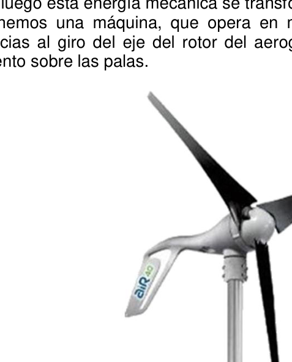
Topic: Conservation of Energy, Fluid Mechanics Metodi: Conservation of Energy, Bernoulli’s Equation, Physical Modeling Competenze: Physical Reasoning, Mathematical Modeling Objects: Wheel, Gas Fonte: Testo (PDF) — p.3
**Sfruttando il vento (aereo) **
Problema 1 Sfruttando il vento L’energia eolica è attualmente una fonte di energia rinnovabile. La competitività con le altre fonti di energia rinnovabile e anche con le tradizionali non rinnovabili. Il generatore aereo trasforma l’energia cinetica del Il vento è un’energia meccanica (evidente nel giro delle lame del E poi questa energia meccanica viene trasformata in energia elettrica. Es dire che abbiamo una macchina, che opera in modo generatore di energia. La velocità di rotazione del rotore del generatore aereo è determinata dalla l’azione del vento sulle pale.
a) Se le foglie del generatore hanno una lunghezza di 20 m calcola quale è il zona che si spazza quando si gira. b) Supponendo che la velocità del vento sia di 30 km/h calcoli quale sia il volume di aria per unità di tempo che passa attraverso l’area circolare calcolata in lettera a). (c) Sapendo che la densità dell’aria è di 1,2 kg/m3 calcoli la potenza del vento (energia per unità di tempo) che incide sul generatore. d) Se il generatore ha un’efficienza teorica del 48% per trasformare energia cinetica del vento in energia di rotazione del generatore, determina l’energia per unità di tempo (potenza), che il generatore assorbe l’energia eolica. e) Calcolare la velocità del vento nella parte posteriore del generatore. f) Indicare con la lettera greca un parametro importante nei Generatori. Il suo valore corrisponde al rapporto che esiste tra il velocità alle estremità delle pale e velocità del vento Incidente. In tre generatori a sciala la potenza ottimale (48%) è E’ il valore di 7. Calcola la velocità che ha l’estremità di quando si genera la potenza ottimale. g) Calcolare l’accelerazione centripeta delle estremità delle palle. h) Calcolare la velocità angolare del rotore.
OAF 2014 - 4 Problema n.1: sfruttare il vento (NIVEL 1) Pagina delle risposte (Esprimi tutte le risposte nel sistema MKS)
Punteggi a) Valore dell’area
b) Volume di aria per unità di tempo
c) Potenza del vento
d) Potenza assorbita dal generatore.
e) La velocità del vento
f) Velocità dell’ estremità delle palle
g) Accelerazione dell’ estremità delle palle
h) Velocità angolare del rotore
OAF 2014 - 5
Topic: Conservation of Energy, Fluid Mechanics Metodi: Conservation of Energy, Bernoulli’s Equation, Physical Modeling Competenze: Physical Reasoning, Mathematical Modeling Objects: Wheel, Gas Fonte: Testo (PDF) — p.3
**Using wind (air generator) **
Problem 1 is Taking advantage of the wind Wind power is currently a renewable energy source. Competitive with other renewable energy sources and even with the The Commission will examine the following: The wind turbine transforms the kinetic energy of the wind in mechanical energy (which is evident in the rotation of the blades of the And then this mechanical energy is transformed into electrical energy. Es Say we have a machine, which operates in power generator mode. electrical, due to the rotor axis rotation of the wind turbine, caused by the The wind’s action on the blades.
(a) If the generator pins are 20 m long, calculate the area they sweep when they turn. (b) Assuming the wind speed is 30km/h calculate the volume of air per unit of time passing through the area circular calculated in heading (a). (c) Knowing that the density of air is 1.2 kg/m3 calculate the power of the wind (energy per unit of time) that affects the generator. (d) If the generator has a theoretical efficiency of 48% to transform kinetic energy of the wind in the rotational energy of the generator, determines the energy per unit of time (power), which the generator It absorbs wind energy. (e) Calculate wind speed at the back of the generator. (f) A significant parameter in the is denoted by the Greek letter Generators. Its value corresponds to the relationship between the speed at the ends of the blades and wind speed The incident. In three-blade generators the optimum power (48%) is You get it when it’s worth 7. Calculate the speed at the end of the shovels when the optimum power is generated. (g) Calculate the centrifugal acceleration of the ends of the shovels. (h) Calculate the angular velocity of the rotor.
The following is the list of the Member States’ financial statements: Problem No1: Using the wind (Level 1) Answer Sheet (Express all answers in the MKS system)
Score a) Area value
b) Air volume per unit of time
c) Wind power .
d) Power absorbed by the generator.
e) Wind speed
f) Speed of the end of the shovels
g) Acceleration of the blade end
h) Angle speed of the rotor
The following is the list of the Member States’ financial statements:
Topic: Conservation of Energy, Fluid Mechanics Metodi: Conservation of Energy, Bernoulli’s Equation, Physical Modeling Competenze: Physical Reasoning, Mathematical Modeling Objects: Wheel, Gas Fonte: Testo (PDF) — p.3
Acerca de la linea de flotacion
Problema 2 Acerca de la línea de flotación… El grado de salinidad de las aguas en diferentes lugares de los océanos no es el mismo. Los marinos experimentados saben de esto y de cómo influye en la línea de flotación de su navío. La densidad de una solución de agua y sal depende de la salinidad de la solución como se muestra en la Figura 1. Figura 1. Dependencia de la densidad del agua con la salinidad.
En la Figura 2 se muestra un plano transversal de un buque. Considere que el mismo comenzó su travesía en algún lugar del océano atlántico próximo al este de Brasil donde hay una salinidad de 36,5 o/oo y la concluyó en algún lugar del océano atlántico próximo a Puerto Santa Cruz, ubicado en la provincia argentina de Santa Cruz donde hay una salinidad de 34o/oo .
a) Establecer las densidades correspondientes al lugar de salida y al lugar del fin de la travesía.
Calado (Ca) Figura 2: plano transversal de un buque Línea de flotación Agua oceánica buque 30 31 32 33 34 35 36 37 38 39 40 41 42 1,024 1,026 1,028 1,030 1,032 1,034
Densidad (g/cm 3) Salinidad ( o/oo )
OAF 2014 - 6 El calado (Ca) es la profundidad que alcanza en el agua la parte sumergida de un barco; esto es, la distancia que separa la superficie del agua (línea de flotación) de la “base” o “fondo” del barco
b) Determinar el calado al final de la travesía si al inicio de la misma era de 12m. Suponer que el buque es como el de la Figura 2. Expresar el resultado con 6 cifras significativas.
OAF 2014 - 7 Problema Nº2: Acerca de la línea de flotación… (NIVEL 1) Hoja de Respuestas Exprese todas las respuestas en el sistema MKS
Puntaje a) densidad correspondiente al lugar de salida
1028,5 Kg m3
densidad correspondiente al lugar del fin de la travesía 1026,5 Kg m3
2
2 b) calado al final de la travesía m g = 𝑒𝑖= 𝑒𝑓 (empujes)
𝑒𝑖= 𝐶𝑎𝑖 𝐿 𝑎 𝜌𝑖= 𝐶𝑎𝑓 𝐿 𝑎 𝜌𝑓= 𝑒𝑓
𝐶𝑎𝑓 = 𝜌𝑖 𝜌𝑓 𝐶𝑎𝑖= 12,0234 𝑚
5
1(cifras)
OAF 2014 - 8
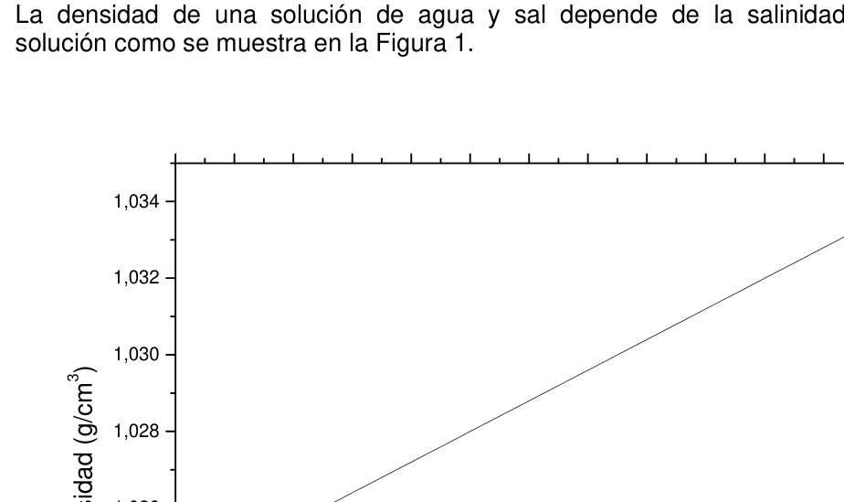
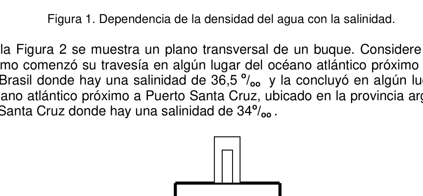
Topic: Fluid Mechanics Metodi: Hydrostatic Equilibrium, Conservation Laws Competenze: Physical Reasoning, Mathematical Modeling Objects: Container Fonte: Testo (PDF) — p.3
A proposito della linea di galleggiamento
Problema 2 In merito alla linea di galleggiamento… Il grado di salinità delle acque in diverse parti degli oceani non è il
- Proprio così. I marinai esperti sanno di questo e di come influisce sulla linea. della flottazione della sua nave. La densità di una soluzione di acqua e sale dipende dalla salinità della salina. Soluzione come mostrato in Figura 1. Figura 1. Dipendenze della densità dell’acqua dalla salinità.
La figura 2 mostra un piano trasversale di una nave. Considerate che il lui stesso ha iniziato il suo viaggio da qualche parte nell’oceano Atlantico vicino all’est. del Brasile, dove c’è una salinità di 36,5 o/o e l’ha conclusa da qualche parte del Oceano Atlantico vicino a Puerto Santa Cruz, situato nella provincia argentina di Santa Cruz dove c’è una salinità di 34o/o .
a) stabilire le densità corrispondenti al luogo di partenza e al luogo di destinazione
- La fine del viaggio.
Silenzio (Ca) Figura 2: piano trasversale di una nave Linea di flottazione Acqua oceanica Nave 30 31 32 33 34 35 36 37 38 39 40 41 42 1,024 1,026 1,028 1,030 1,032 1,034
Densità (g/cm) 3) Salinità ( o/oo )
OAF 2014 - 6 Il calado (Ca) è la profondità che raggiunge nell’acqua la parte immersa di una nave; cioè la distanza che separa la superficie dell’acqua (linea di flottazione) della base o del fondo della nave
b) Determinare il calato alla fine del viaggio se all’inizio del viaggio era de 12m. Supponiamo che la nave sia come quella della Figura 2. Esprimere il Con 6 cifre significative.
OAF 2014 - 7 Problema n.2: circa la linea di galleggiamento… (NIVEL 1) Pagina delle Risposte Esprimere tutte le risposte nel sistema MKS
Punteggi a) densità corrispondente al luogo di partenza
1028,5 Kg m3
densità corrispondente al luogo di fine del viaggio 1026,5 Kg m3
2
2 b) Sulla fine del viaggio m g = ei= ef (impulsi)
I dati relativi ai prodotti di cui all’articolo 1, paragrafo 1, del regolamento (UE) n.
Caf = ρi 𝜌𝑓 Caccia = 12.0234 m
5
1 (cifre)
OAF 2014 - 8
Topic: Fluid Mechanics Metodi: Hydrostatic Equilibrium, Conservation Laws Competenze: Physical Reasoning, Mathematical Modeling Objects: Container Fonte: Testo (PDF) — p.3
About the floating line
Problem two . About the floating line… The degree of salinity of the waters in different places in the oceans is not the same. I’m not. Experienced sailors know this and how it influences the line. of floating of your ship. The density of a solution of water and salt depends on the salinity of the solution. The solution is shown in Figure 1. Figure 1 is shown. Dependence on water density and salinity.
Figure 2 shows a cross-sectional plane of a ship. Consider that the He himself began his journey somewhere in the Atlantic Ocean near the east. of Brazil where there is a salinity of 36.5 and/or concluded it somewhere in the Atlantic Ocean near Puerto Santa Cruz, located in the Argentine province Santa Cruz where there is a salinity of 34o/o .
(a) Establish densities for the place of departure and the place of departure The end of the journey.
Silent (Ca) Figure 2: Cross plane of a ship Floating line Ocean water ship 30 31 32 33 34 35 36 37 38 39 40 41 42 1,024 1,026 1,028 1,030 1,032 1,034
The following information shall be provided: 3) Salinity ( o/oo )
The following is the list of the Member States’ financial statements: The water depth (Ca) is the depth at which the submerged part of the water reaches the water. a ship; that is, the distance separating the surface of the water (line of Float) of the ship’s base or bottom
(b) Determine the anchorage at the end of the journey if at the beginning of the journey it was de 12m. Suppose the ship is like the one in Figure 2. Express the The result is 6 significant figures.
The following is the list of the Member States’ financial statements: Problem No2: About the floating line… (NIVEL 1) Answer Sheet Please enter all the answers in the MKS system
Score a) density corresponding to the point of departure
1028,5 Kg m3
density corresponding to the place of end of the crossing 1026,5 Kg m3
2
2 b) Silent at the end of the crossing The following table shows the results of the calculation:
The following is the list of the following:
Caf = ρi 𝜌𝑓 The waterfall is 12,0234 m.
5
1 (numbers)
The following is the list of the Member States’ financial statements:
Topic: Fluid Mechanics Metodi: Hydrostatic Equilibrium, Conservation Laws Competenze: Physical Reasoning, Mathematical Modeling Objects: Container Fonte: Testo (PDF) — p.3
El pato bebedor
Problema 3 El Pato bebedor. El pato bebedor es un juguete, patentado en 1946, en el cual una figura con forma de pato simula beber de un vaso ubicado al frente. Este juguete es una máquina térmica simple y muy ingeniosa. El pato está hecho de vidrio y consta de dos esferas conectadas por un tubo como se muestra en la figura 1. La esfera inferior, que simula el cuerpo del pato, contiene una sustancia volátil, cuya temperatura de ebullición es cercana a la temperatura ambiente. La esfera superior, que simula la cabeza, está cubierta de un material absorbente. El pato puede rotar alrededor de un eje, el cual está apoyado sobre una estructura que simula las patas del pato. Para iniciar el movimiento se moja la cabeza del pato con agua, y luego de unos momentos, el pato se inclina para beber agua del vaso, luego recupera su posición vertical. Unos segundos después, el pato se inclina nuevamente a beber y repite este movimiento mientras haya agua en el vaso. En la figura 1, se esquematiza el movimiento del pato.
Figura 1. Pato bebedor.
Para entender su funcionamiento, primero tenemos que entender la mecánica del movimiento. En la esfera inferior (cuerpo) coexisten líquido y vapor de la misma sustancia, por lo que para una dada temperatura se tendrá una determinada presión. En la esfera superior (cabeza) sólo hay vapor de dicha sustancia, aunque coexistiendo con el líquido presente en el cuello. Esto es, la presión del vapor en la cabeza estará determinada por su temperatura de coexistencia. Si se establece una pequeña diferencia de temperatura entre la cabeza y el cuerpo del pato, se producirá una diferencia de presión entre ambos recintos. Para contrarrestar esta diferencia de presión, parte del líquido asciende o desciende por el tubo (cuello del pato) hasta que se alcance una situación de equilibrio en la que no fluye más líquido. Esta redistribución de líquido produce un cambio en la posición del centro de masa del pato. Debido a la forma en la que está construido el pato, el cambio en la posición del centro de masa tiene asociado un torque tal que produce la oscilación del pato. La diferencia de temperatura entre la cabeza y el cuerpo del pato se establece por la evaporación del agua que moja la cabeza del pato. La provisión de agua que se evapora desde la cabeza se consigue con cada inclinación del pato para beber.
Modelo En la figura 2 se muestra nuestro modelo del pato bebedor.La parte inferior del pato está formada por un cubo de 6 cm de lado y la parte superior (cabeza) por una esfera de 4 cm diámetro. Ambas partes están conectadas por un tubo de 2 cm de diámetro y de 12 cm de largo, medido desde la parte superior del cubo hasta la parte inferior de la cabeza.
OAF 2014 - 9
El cubo contiene un líquido cuya temperatura de ebullición es 40°C y cuya
densidad es 1.336 g cm-3. El resto del pato está lleno del vapor de la misma
sustancia que llena el cuerpo.
En nuestro modelo se considerará como cuerpo del pato a la porción del
cubo llena de líquido y como cuello a la parte del tubo que va desde la
superficie del líquido, contenido en el cubo, hasta la parte inferior de la
cabeza.
Como se muestra en la figura 2, el tubo se extiende hacia el interior del líquido
de manera que el vapor contenido en el cubo está aislado del vapor contenido
en el resto del pato generando dos recintos con vapor aislados.
Sobre la cabeza, el pato tiene un sombrero de 80 g simulado por un cilindro de 4
cm de diámetro y 5 cm de alto. El eje alrededor del cual nuestro pato puede
rotar está ubicado a 2 cm por arriba del cubo y es paralelo al plano del dibujo
(Ver figura 2).
Tanto la masa del vidrio que forma al pato como la masa de vapor
contenida en él, son despreciables frente a las masas del sombrero y del
líquido contenido en el cubo.
Figura 2. Modelo del Pato bebedor.
Actividades
- Determinar la masa de líquido contenida en el cubo (Masa del cuerpo, 𝑀𝑐𝑢𝑒𝑟𝑝𝑜). Considere despreciable la masa del vidrio.
OAF 2014 - 10 2) La coexistencia de la fase líquida y gaseosa de cualquier sustancia ocurre a una presión de equilibrio (P) y a una temperatura (T) vinculadas por la ecuación de Clausiuss-Clayperon (Ecuación 1), 𝑃 𝑇 = 𝑃0𝑒𝑥𝑝 − ∆ 𝑅 1 𝑇− 1 𝑇𝑏
(1) donde 𝑃0 = 1.013 × 105 𝑃𝑎, 𝑅= 8.3145 𝐽 𝐾−1𝑚𝑜𝑙−1 es la constante universal de los gases, ∆= 28094,5 𝐽 𝑚𝑜𝑙−1 es la ” variación de entalpía de vaporización molar” de la sustancia y 𝑇𝑏 es su temperatura de ebullición en Kelvin.
Determinar la presión en el interior de la cabeza (𝑃𝑐𝑎𝑏𝑒𝑧𝑎) y del cubo(𝑃𝑐𝑢𝑏𝑜) si el pato se encuentra inicialmente a la temperatura ambiente (𝑇𝑎) cuyo valor es 25°C.
- Determinar la temperatura de la cabeza (𝑇𝑐𝑎𝑏𝑒𝑧𝑎) si ésta se moja con 10 mg de agua a temperatura ambiente. Suponga que la humedad ambiente es menor a 100%.
Suponga que todo el calor necesario para evaporar el agua es provisto por la cabeza y que ésta tiene un calor específico efectivo 𝐶= 47.5 𝐽 °𝐶−1.
Nota: En caso que la humedad ambiente es menor a 100%, el agua se evapora sin necesidad de alcanzar los 100°C (temperatura de ebullición del agua). En este caso, la energía necesaria para evaporar un gramo de agua es de 2257 𝐽.
-
Determinar la nueva presión en el interior de la cabeza (𝑃′𝑐𝑎𝑏𝑒𝑧𝑎).
-
Determinar la altura () del líquido en el cuello, respecto a la superficie del liquido contenido en el cubo, para la nueva presión de equilibrio. Suponga que la temperatura del cuerpo del pato se mantiene constante e igual a la temperatura ambiente.
-
Determinaren cuanto disminuye la altura del líquido en el cubo (∆𝑧).
-
Determinar la masa de líquido contenida en el cubo (𝑀′𝑐𝑢𝑒𝑟𝑝𝑜) y en el cuello (𝑀𝑐𝑢𝑒𝑙𝑙𝑜).
OAF 2014 - 11 Problema Nº3: El Pato bebedor. (NIVEL 1) Hoja de Respuestas Exprese todas las respuestas en el sistema MKS
Puntaje 1) 𝑀𝑐𝑢𝑒𝑟𝑝𝑜=
𝑃𝑐𝑢𝑏𝑜=
𝑃𝑐𝑎𝑏𝑒𝑧𝑎=
3) 𝑇𝑐𝑎𝑏𝑒𝑧𝑎=
𝑃′𝑐𝑎𝑏𝑒𝑧𝑎=
=
Δ𝑧=
𝑀𝑐𝑢𝑒𝑙𝑙𝑜=
𝑀′𝑐𝑢𝑒𝑟𝑝𝑜=
OAF 2014 - 12
Instancia Nacional Prueba Experimental Nivel 1
OAF 2014 - 13 La Física del reloj de arena.
Introducción:
La materia granular o materia granulada es aquella que está formada por un
conjunto de partículas macroscópicas sólidas. El tamaño de estas partículas es
tal que la fuerza de interacción dominante entre ellas es la de fricción. Como
ejemplos de materia granular se encuentran los granos y semillas,
la nieve, la arena, etc.
Dentro del estudio de los medios granulares, existe un capítulo extenso que abarca los problemas del flujo de materia en forma de granos. Este interés se remonta a la antigüedad cuando se usaban, para medir el tiempo, relojes de arena.
En los líquidos que escapan a través de un orificio,
el flujo, masa por unidad de tiempo, depende
principalmente de la altura del líquido dentro del
recipiente. El fenómeno se explica a través
del teorema de Torricelli y es debido al aumento de
la presión hidrostática en el fondo del recipiente al
aumentar la altura del fluido. Sin embargo, en los
medios granulares, la presión en el fondo del
contenedor deja de incrementarse cuando el
material alcanza una altura de aproximadamente
dos veces el diámetro del mismo. Por esta razón si
un contenedor de materia granular es perforado en
su parte inferior, los granos fluirán hacia afuera de
tal forma que su flujo es constante.
El flujo f (masa por unidad de tiempo) de un material granular que pasa a través de una abertura de diámetro D bajo la acción del campo gravitatorio terrestre, es:
cte t m f
y depende del diámetro del orificio de acuerdo a la expresión:
)1( AD f
donde y A son constantes .
Objetivo:
Determinar experimentalmente el flujo f para diferentes diámetros del
orificio de salida
Elementos disponibles
-
Pie porta botella
-
2 bol con tapa
-
1 kg de arena
-
Balanza
-
Cronómetro
-
Regla
-
Cinta de enmascarar
-
Un barbijo para polvo
-
Botella de plástico con tapa agujereada
-
1 cucharín
-
6 chapitas circulares con orificios de distinto diámetro
Procedimientos
a) Mida el diámetro D del agujero de una chapita.
OAF 2014 - 14
Balanza
Recipiente
otella
b) Llene la botella con 750 g de arena
c) Coloque la chapita dentro de la tapa, cuidando que el número mire
hacia Ud. y tape la botella.
d) Selle el agujero de la tapa con cinta de enmascarar.
e) Coloque la botella con la tapa hacia abajo en el pie porta botella (ver
Figura 1).
f) Sobre la base del pie porta botella coloque la balanza y enciéndala
g) Coloque un recipiente vacio sobre el plato de la balanza y tare la misma
h) Saque la cinta de la tapa y mida la cantidad de masa m que cae en el
recipiente en función del tiempo t. (mida cada 10 segundos
aproximadamente y no menos de 5 puntos)
i) Repita los pasos anteriores para cada chapita
Figura 1
Consignas
- Haga una tabla que contenga los valores de m y de t medidos para cada diámetro D.
- Grafique los datos experimentales para cada diámetro D.
- Determine el valor del flujo f con su correspondiente incertidumbre para cada diámetro D. Explicite el método usado.
- Haga una tabla que contenga el valor del flujo f y diámetro D.
OAF 2014 - 15
HOJA DE RESPUESTA NIVEL 1
Puntaje 1- Tablas: Confeccione las tablas en las hojas provistas e identifíquelas claramente
2- Gráficos: Haga los gráficos en las hojas milimetradas provistas e identifíquelos claramente.
3- Flujos: Descripción del método y cálculos. (complete los cálculos en las hojas provistas)
4- Tabla
PUNTAJE TOTAL
OAF 2014 - 16
Instancia Nacional Prueba Teórica Nivel 2
OAF 2014 - 17
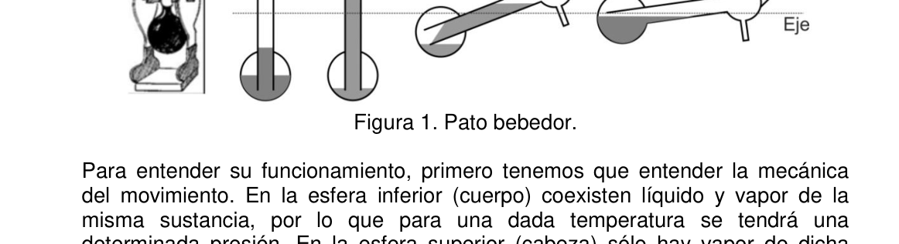
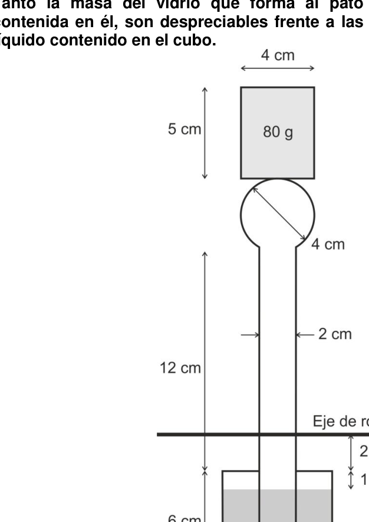
Topic: Thermodynamics, Fluid Mechanics Metodi: First Law of Thermodynamics, Hydrostatic Equilibrium, Physical Modeling Competenze: Physical Reasoning, Mathematical Modeling Objects: Heat Engine, Sphere, Tube Fonte: Testo (PDF) — p.3
Il pato bevitore
Problema 3 Il Patto Bevitore. Il pato bevitore è un giocattolo, brevettato nel 1946, in cui una figura con forma di pato simula bere da un bicchiere posto davanti. Questo giocattolo è un Una macchina termico semplice e molto intelligente. Il pato è fatto di vetro e consiste di due sfere collegate da un tubo. come mostrato nella figura 1. La sfera inferiore, che simula il corpo del pato, contiene una sostanza volatile, la cui temperatura di ebollizione è vicina alla temperatura di temperatura ambiente. La sfera superiore, che simula la testa, è coperta da un materiale assorbente. Il pato può ruotare attorno ad un asse, che è appoggiato su una struttura che simula le zampe di un pato. Per iniziare il movimento si bagna la testa del pato con acqua, e dopo un po’ Qualche volta, il pato si penza a bere l’acqua dal bicchiere, poi riprende il suo. posizione verticale. Qualche secondo dopo, il pato si inclina di nuovo verso bere e ripetere questo movimento finché c’è acqua nel bicchiere. In figura 1, si schematizza il movimento del pato.
Figura 1. - Pato bevitore.
Per capire come funziona, dobbiamo prima capire la meccanica. del movimento. Nella sfera inferiore (corpo) coesistono liquido e vapore della La sostanza stessa, quindi per una data temperatura si avrà una
- una certa pressione. Nella sfera superiore (capella) c’è solo vapore di felicità sostanza, anche se coesistente con il liquido presente nel collo. Questo è, la La pressione del vapore nella testa sarà determinata dalla sua temperatura di Coesistenza. Se si stabilisce una piccola differenza di temperatura tra il la testa e il corpo del pato, si produrrà una differenza di pressione tra i due
- Le prese. Per contrastare questa differenza di pressione, parte del liquido sale. o scende per il tubo (collo del pato) fino a raggiungere una situazione di equilibrio in cui non scorre più liquido. Questa ridistribuzione del liquido produce un cambiamento nella posizione del centro di massa del pato. A causa della forma in cui che è costruito il pato, il cambiamento nella posizione del centro di massa ha associato a una torsione tale da produrre l’oscillazione del pato. La differenza di temperatura tra la testa e il corpo del pato si stabilisce. per l’evaporazione dell’acqua che bagna la testa del pato. Il rifornimento di acqua che evapora dalla testa si ottiene con ogni inclinazione del pato per Beviamo.
Modello La figura 2 mostra il nostro modello di pato bevitore. il pato è formato da un cubo di 6 cm sul lato e la parte superiore (capello) da una sfera di 4 cm di diametro. Entrambe le parti sono collegate da un tubo di 2 di diametro di 1 cm e di lunghezza di 12 cm, misurata dalla parte superiore del cubo fino alla parte inferiore della testa.
OAF 2014 - 9 Il cubo contiene un liquido la cui temperatura di ebollizione è 40°C e il cui densità è di 1.336 g cm-3. Il resto del pato è pieno di vapore di essa. sostanza che riempie il corpo. Nel nostro modello si considererà come corpo di pato alla porzione di Cubo pieno di liquido e collo come la parte del tubo che va dalla superficie del liquido contenuto nel cubo fino alla parte inferiore della
- La testa. Come mostra la figura 2, il tubo si estende verso l’interno del liquido. in modo che il vapore contenuto nel cubo sia isolato dal vapore contenuto nel resto del pato generando due recinti isolati a vapore. Sull’alto della testa, il pato ha un cappello da 80 grammi simulato da un cilindro da 4 di diametro di 1 cm e altezza di 5 cm. L’asse intorno al quale il nostro pato può rotare è situato a 2 cm sopra il cubo e è parallelo al piano del disegno (Vedi figura 2). Sia la massa del vetro che forma il pato che la massa del vapore . contenuti in esso, sono disprezzabili davanti alle masse del cappello e del liquido contenuto nel cubo.
Figura 2 Modello del Patto Bevitore.
Attività
- Determinare la massa di liquido contenuta nel cubo (massa del corpo, Corpo . Considera dispreziosa la massa del vetro.
OAF 2014 - 10 2) La coesistenza della fase liquida e gassosa di qualsiasi sostanza si verifica a una pressione di equilibrio (P) e una temperatura (T) legate dall’equazione di Clausiuss-Clayperon (Equatoria 1), P T = P0exp − ∆ 𝑅 1 𝑇− 1 𝑇𝑏
(1) dove P0 = 1.013 × 105 Pa, R= 8.3145 J K−1mol−1 è la costante universale di La variazione di entalpia di vaporizzazione è la variazione di entalpia di vaporizzazione. mollare” della sostanza e Tb è la sua temperatura di ebollizione in Kelvin.
Determina la pressione all’interno della testa (Capo) e del cubo (cubo) se il La temperatura ambiente (Ta) del pato è inizialmente 25°C.
- Determina la temperatura della testa (Capo) se si bagna con 10 mg di acqua a temperatura ambiente. Supponiamo che l’umidità ambientale sia inferiore a 100%.
Supponiamo che tutto il calore necessario per evaporare l’acqua sia fornito dalla la testa e che essa abbia un calore specifico effettivo C=47,5 J °C−1.
Nota: se l’umidità ambientale è inferiore al 100%, l’acqua si evapora senza necessità di raggiungere 100°C (temperatura di ebollizione dell’acqua). En In questo caso, l’energia necessaria per evaporare un grammo di acqua è di 2257 J.
-
Determinazione della nuova pressione all’interno della testa (P′cap).
-
Determinare l’altezza () del liquido nel collo rispetto alla superficie del liquido contenuto nel cubo, per la nuova pressione di equilibrio. Supponiamo che la La temperatura del corpo del pato è costante e uguale alla temperatura. ambiente.
-
Determina quanto diminuisce l’altezza del liquido nel cubo (∆z).
-
Determinazione della massa di liquido contenuta nel cubo (M′ corpo) e nel collo
- Non è vero.
OAF 2014 - 11 Problema numero tre: il pato bevitore. (NIVEL 1) Pagina delle Risposte Esprimere tutte le risposte nel sistema MKS
Punteggi 1) Corpo =
Pcubo=
- Capofitto
- Capella
P′capitale=
=
Δ𝑧=
- Non lo so.
M′corpo=
OAF 2014 - 12
Instanza nazionale Prova sperimentale Livello 1
OAF 2014 - 13 La fisica dell’orologio di sabbia.
Introduzione: La materia granulare o materia granulata è quella che è costituita da un un insieme di particelle macroscopiche solide. Il numero di queste particelle è La forza di interazione dominante tra loro è quella di attrito. Come Esempi di materia granulare sono i cereali e i semi, la neve, la sabbia, ecc.
Nel campo dello studio dei mezzi granulari, esiste un ampio capitolo che Il problema del flusso di materia in forma di granelli. Questo interesse è E’ un’operazione che risale all’antichità, quando venivano usati orologi di sabbia.
Nei liquidi che scorrono attraverso un buco, Il flusso, massa per unità di tempo, dipende La temperatura del liquido all’interno del liquido è determinata principalmente da contenitore. Il fenomeno si spiega attraverso Il teorema di Torricelli e’ dovuto all’aumento di la pressione idrostatica sul fondo del recipiente al aumentare l’altezza del fluido. Tuttavia, nei media granulari, la pressione sul fondo del il contenitore si allontana quando il contenitore il materiale raggiunge un’altezza di circa Due volte il diametro di questo. Per questo motivo si un contenitore di materia granulare è perforato in La sua parte inferiore, i granelli fluiranno verso l’esterno. in modo tale che il suo flusso sia costante.
Il flusso f (massa per unità di tempo) di un materiale granulare che passa attraverso di un’apertura di diametro D sotto l’azione del campo gravitazionale terrestre, è:
Cte t m f
e dipende dal diametro del foro secondo l’espressione:
)1( AD f
dove e A sono costanti .
Obiettivo: Determinare sperimentalmente il flusso f per diversi diametri del Origine di uscita
Elementi disponibili
-
Pieno porta bottiglia
-
Due bolle con copertura
-
1 kg di sabbia
-
Sbalzo .
-
Cronometro .
-
Regola .
-
Cante di maschera
-
Un pezzo di polvere .
-
Bottiglia di plastica con copertura perforata
-
1 cucchiaino .
-
6 capite circolari con orizzonti di diametro diverso
Procedure a) Misura il diametro D del buco di una scheda.
OAF 2014 - 14 Sbalzo Raccogliente otella b) Riempi il flaconcino con 750 g di sabbia c) Metti la targa dentro la copertura, facendo sì che il numero guardi
- verso di te. e copri la bottiglia. d) Sigilla il buco della copertura con una cinta mascherante. e) Metti la bottiglia con la copertura verso il basso sul piede porta bottiglia (vedi Figura 1). f) Sulla base del piede porta la bottiglia, mettere la bilancia e accenderla g) Metti un contenitore vuoto sul piatto della bilancia e strappalo. h) Tratti la cinta dalla copertura e misuri la quantità di massa m che cade sul contenitore in funzione del tempo t. (mezza ogni 10 secondi) approssimativamente e non meno di 5 punti) i) Ripetere i passaggi precedenti per ogni tappo
Figura 1
Consigne
- Fai una tabella che contiene i valori di m e di t misurati per ciascuna diametro D.
- Grafica i dati sperimentali per ogni diametro D.
- Determina il valore del flusso f con la relativa incertezza per ogni diametro D. Spiega il metodo usato.
- Fai una tabella che contiene il valore di flusso f e diametro D.
OAF 2014 - 15
L’Abbogato di Risposta NEL 1
Punteggi 1- Tabelle: Configgere le tabelle nelle foglie fornite e Identificale chiaramente.
2- Grafica: Fai i grafici su fogli di millimetri provviste e identificatele chiaramente.
3- Flussi: descrizione del metodo e calcoli. (completa i Calcoli sui fogli forniti)
4- Tabella
Punto totale
OAF 2014 - 16
Instanza nazionale Prova Teoretica Livello 2
OAF 2014 - 17
Topic: Thermodynamics, Fluid Mechanics Metodi: First Law of Thermodynamics, Hydrostatic Equilibrium, Physical Modeling Competenze: Physical Reasoning, Mathematical Modeling Objects: Heat Engine, Sphere, Tube Fonte: Testo (PDF) — p.3
The following is a list of the species listed in Annex I to Regulation (EC) No 396/2005:
Problem three . The drinking duck. The drinking duck is a toy, patented in 1946, in which a figure with a Duck-shaped simulates drinking from a glass placed in front. This toy is a A simple and very ingenious heat engine. The duck is made of glass and consists of two spheres connected by a tube. The following is the list of the types of products used: The lower sphere, which simulates the duck’s body, Contains a volatile substance, boiling temperature of which is close to the ambient temperature. The upper sphere, which simulates the head, is covered with It’s an absorbent material. The duck can rotate around an axis, which is It’s built on a structure that simulates the duck’s legs. To start the movement, the duck’s head is soaked with water, and then a few. Moments, the duck bends over to drink water from the glass, then recovers its vertical position. A few seconds later, the duck leans back to Drink and repeat this movement while there is water in the glass. In Figure 1, the It sketches the duck’s movement.
Figure 1 is shown. You drunken duck.
To understand how it works, we first have to understand mechanics. of the movement. In the lower sphere (body) liquid and vapor coexist in the The same substance, so for a given temperature you’ll have a a certain pressure. In the upper sphere (head) there is only vapor of happiness substance, although coexisting with the fluid present in the neck. This is, the The pressure of the steam in the head shall be determined by its temperature of The European Union is a co-existence. If a small temperature difference is established between the The head and body of the duck, there will be a difference in pressure between the two. the enclosures. To counteract this pressure difference, some of the liquid rises. or descends through the duck neck until a situation of equilibrium where no more liquid flows. This redistribution of liquid produces a change in the position of the duck’s centre of mass. Because of the way in That’s the duck building, the change in the position of the center of mass has. associated with a torque such that it causes the duck to oscillate. The temperature difference between the head and body of the duck is established by the evaporation of water that soaks the duck’s head. Water supply It evaporates from the head and is obtained with each duck ‘s inclination to I’m going to drink.
Model Figure 2 shows our drinking duck model. Duck is formed by a 6 cm side cube and the top (head) by a sphere of 4 cm in diameter. Both parts are connected by a two-pipe tube. cm in diameter and 12 cm in length, measured from the top of the cube to the bottom of the head.
The following is the list of the Member States’ financial statements: The cube contains a liquid whose boiling temperature is 40°C and whose density is 1.336 g cm-3. The rest of the duck is full of the steam from it. substance that fills the body. In our model it will be considered as duck body to the portion of the The tube is filled with liquid and the neck is the part of the tube that goes from the surface of the liquid, contained in the cube, to the bottom of the head. As shown in Figure 2, the tube extends into the liquid. So the vapor contained in the cube is isolated from the vapor contained. In the rest of the duck, two separate steam enclosures are generated. Above the head, the duck has an 80g hat simulated by a 4 cylinder. cm in diameter and 5 cm in height. The axis around which our duck can rotar is located 2 cm above the cube and is parallel to the plane of the drawing. (See Figure 2). Both the glass mass that forms the duck and the vapor mass . contained in it, they are despicable in front of the masses of the hat and the liquid contained in the cube.
Figure two. Model of the drinking duck.
Activities
- Determine the mass of liquid contained in the cube (Body mass, The body . Consider the mass of glass despicable.
The following points shall be added: 2) The coexistence of the liquid and gaseous phase of any substance occurs at a balance pressure (P) and a temperature (T) linked by the equation The Commission has not yet established the methodology for the calculation of the net present value of the net present value of the net present value. P T = P0exp − ∆ 𝑅 1 𝑇− 1 𝑇𝑏
(1) where P0 = 1.013 × 105 Pa, R= 8.3145 J K−1mol−1 is the universal constant of The gas, ∆= 28094.5 J mol−1 is the ” variation in the vaporisation enthalpy Molar” of the substance and Tb is its boiling temperature in Kelvin.
Determine the pressure inside the head (Head) and cube (cube) if the Duck is initially found at room temperature (Ta) whose value is 25°C.
- Determine the temperature of the head (Head) if it is wet with 10 mg of water at room temperature. Suppose the ambient humidity is less than 100%.
Suppose all the heat needed to evaporate the water is supplied by the the head and that it has a specific effective heat C=47.5 J °C−1.
Note: If the ambient humidity is less than 100%, the water evaporates without the need to reach 100°C (boiling temperature of water). En In this case, the energy required to evaporate one gram of water is 2257 J.
-
Determine the new pressure inside the head (P′head).
-
Determine the height () of the fluid in the neck, relative to the surface of the neck. The liquid contained in the cube, for the new equilibrium pressure. Suppose the The duck body temperature remains constant and equal to the temperature. The environment.
-
Determine how much the height of the liquid in the cube decreases (∆z).
-
Determine the mass of fluid in the cube (M′ body) and neck (Mcuello)
The following is the list of the Member States’ financial statements: Problem number three: The Drinking Duck. (Level 1) Answer Sheet Please enter all the answers in the MKS system
Score 1) Body.
I’m going to get it.
Head =
Head =
P′head=
=
Δ𝑧=
The Commission has already adopted a proposal for a regulation.
M′body=
The following is the list of the Member States’ financial statements:
The National Court Experimental test Level 1
The following is the list of the Member States’ financial statements: The physics of the sand clock.
The Commission has also adopted a proposal for a directive on the protection of workers’ rights. The granular material or granulated material is that which is formed by a a set of solid macroscopic particles. The size of these particles is So the dominant interaction force between them is friction. Like examples of granular matter are grains and seeds, the snow, the sand, etc.
In the study of granular media, there is an extensive chapter which It covers the problems of the flow of matter in the form of grains. This interest is It goes back to ancient times when time clocks were used to measure time. sand.
In the fluids that escape through a hole, The flow, mass per unit time, depends on mainly from the height of the liquid within the container. The phenomenon is explained by The theory of Torricelli and is due to the increase in the hydrostatic pressure at the bottom of the container to increase the height of the fluid. However, in the The pressure at the bottom of the container stops increasing when the The material reaches a height of approximately twice the diameter of the same. For this reason I a granular material container is drilled in At the bottom, the grains will flow out of the so that its flow is constant.
The flow f (mass per unit time) of a granular material passing through of an opening of diameter D under the action of the Earth’s gravitational field, is:
The Commission t m f
and depends on the diameter of the hole according to the expression:
)1( AD f
where and A are constants .
The objective: Determine experimentally the flow f for different diameters of the The output hole
Available items
-
Foot carrying bottle
-
Two bowls with lid .
-
1 kg of sand
-
Weigh it .
-
The chronometer .
-
Rule .
-
Masking tape .
-
A powdered beak .
-
Plastic bottle with hole cap
-
One teaspoon .
-
6 circular caps with holes of different diameter
The procedure (a) Measure the diameter D of the hole in a slit.
The following points shall be added: Weighing Receiving The hotel (b) Fill the bottle with 750 g of sand c) Place the plate inside the lid, making sure the number looks I ‘m going to you . And cover the bottle. (d) Seal the lid hole with masking tape. e) Place the bottle with the lid down at the bottom of the bottle door (see The following is the list of the following: (f) Place the scale on the base of the bottle foot and light it. (g) Place an empty container on the plate of the scale and roll it. (h) Remove the tape from the lid and measure the amount of mass m falling on the lid. container according to time t. (measured every 10 seconds approximately and not less than 5 points) (i) Repeat the previous steps for each slice
Figure 1
Consigns
- Make a table containing the values of m and t measured for each diameter D.
- Graph the experimental data for each diameter D.
- Determine the flow value f with its corresponding uncertainty for Each diameter D. Explain the method used.
- Make a table containing the flow value f and diameter D.
The following is the list of the Member States’ financial statements:
Answering sheet level 1
Score 1- Tables: Place the tables on the provided sheets and Identify them clearly
2- Graphics: Make the graphics on the millimeter sheets Provide them and identify them clearly.
3- Flow: Description of method and calculations. (completing the calculations on the provided sheets)
4- Table
I ‘m not sure .
The following is the list of the Member States’ financial statements:
The National Court Theoretical proof Level 2 .
The following is the list of the Member States’ financial statements:
Topic: Thermodynamics, Fluid Mechanics Metodi: First Law of Thermodynamics, Hydrostatic Equilibrium, Physical Modeling Competenze: Physical Reasoning, Mathematical Modeling Objects: Heat Engine, Sphere, Tube Fonte: Testo (PDF) — p.3
Aprovechando el viento (aerogenerador)
Problema 1 Aprovechando el viento. La energía eólica supone actualmente una fuente de energía renovable, competitiva con otras fuentes de energía renovables e incluso con las tradicionales no renovables. El aerogenerador transforma energía cinética del viento en energía mecánica (que se evidencia en el giro de las palas del generador) y luego esta energía mecánica se transforma en energía eléctrica. Es decir que tenemos una máquina, que opera en modo generador de energía eléctrica, gracias al giro del eje del rotor del aerogenerador, provocado por la acción del viento sobre las palas.
a) Si las aspas del generador tienen una longitud de 20m calcule cual es el
área que barren cuando giran.
b) Suponiendo que la velocidad del viento es de 30km/h calcule cuál es el
volumen de aire por unidad de tiempo que pasa a través del área
circular calculada en la consigna a).
c) Sabiendo que la densidad del aire es de 1,2kg/m3 calcule la potencia del
viento (energía por unidad de tiempo) que incide sobre el generador.
d) Si el generador tiene una eficiencia teórica del 48% para transformar
energía cinética del viento en energía de rotación del generador,
determine la energía por unidad de tiempo (potencia), que el generador
absorbe de la energía eólica.
e) Calcule velocidad del viento en la parte posterior del generador.
f) Se denota con la letra griega a un parámetro importante en los
generadores. Su valor corresponde a la relación que existe entre la
velocidad en los extremos de las palas y la velocidad del viento
incidente. En generadores de tres palas la potencia óptima (48%) se
obtiene cuando vale 7. Calcule la velocidad que tiene el extremo de
las palas cuando se genera la potencia óptima.
g) Calcule la aceleración centrípeta de los extremos de las palas.
h) Calcule la velocidad angular del rotor.
i) Calcule el torque del generador.
La potencia de la rotación del rotor de la turbina eólica es transferida al generador a través del tren de potencia, es decir, a través del eje principal, la caja multiplicadora y el eje de alta velocidad
OAF 2014 - 18 j) Si fuera necesario generar corriente alterna con una frecuencia de 50Hz, calcule la relación de multiplicación que debe tener la caja multiplicadora. k) Suponiendo que sólo el 90% de la energía eólica absorbida se transforma en energía eléctrica y que ésta se genera a una tensión efectiva 13kV calcule cuál es la corriente efectiva que se genera. l) La demanda eléctrica anual del departamento Punilla Córdoba es de aproximadamente 2,5 1011 MWh y la energía eólica anual disponible es de 2,68 108 MWh. Calcule qué porcentaje de la energía consumida en el departamento Punilla podrá ser producida por energía eólica.
OAF 2014 - 19 Problema Nº1: Aprovechando el viento (NIVEL 2) Hoja de Respuestas (Exprese todas las respuestas en el sistema MKS)
Puntaje a) Valor del área
b) Volumen de aire por unidad de tiempo
c) Potencia del viento
d) Potencia absorbida por el generador.
e) Velocidad del viento
f) Velocidad del extremo de las palas
g) Aceleración del extremo de las palas
h) Velocidad angular del rotor
i) Torque
j) Relación de multiplicación
k) Corriente efectiva
l)
Porcentaje de la energía eléctrica a partir de la energía
eólica
OAF 2014 - 20
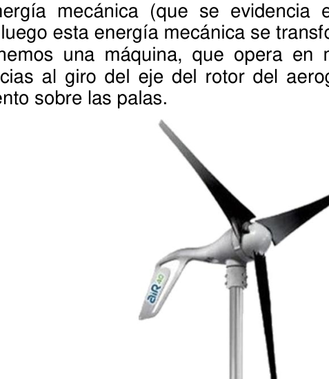
Topic: Conservation of Energy, Fluid Mechanics Metodi: Conservation of Energy, Bernoulli’s Equation, Physical Modeling Competenze: Physical Reasoning, Mathematical Modeling Objects: Wheel, Gas Fonte: Testo (PDF) — p.3
**Sfruttando il vento (aereo) **
Problema 1 Sfruttando il vento. L’energia eolica è attualmente una fonte di energia rinnovabile. La competitività con le altre fonti di energia rinnovabile e anche con le tradizionali non rinnovabili. Il generatore aereo trasforma l’energia cinetica del Il vento è un’energia meccanica (evidente nel giro delle lame del E poi questa energia meccanica viene trasformata in energia elettrica. Es dire che abbiamo una macchina, che opera in modo generatore di energia. La velocità di rotazione del rotore del generatore aereo è determinata dalla l’azione del vento sulle pale.
a) Se le foglie del generatore hanno una lunghezza di 20 m calcola quale è il zona che si spazza quando si gira. b) Supponendo che la velocità del vento sia di 30 km/h calcoli quale sia il volume di aria per unità di tempo che passa attraverso l’area circolare calcolata in lettera a). (c) Sapendo che la densità dell’aria è di 1,2 kg/m3 calcoli la potenza del vento (energia per unità di tempo) che incide sul generatore. d) Se il generatore ha un’efficienza teorica del 48% per trasformare energia cinetica del vento in energia di rotazione del generatore, determina l’energia per unità di tempo (potenza), che il generatore assorbe l’energia eolica. e) Calcolare la velocità del vento nella parte posteriore del generatore. f) Indicare con la lettera greca un parametro importante nei Generatori. Il suo valore corrisponde al rapporto che esiste tra il velocità alle estremità delle pale e velocità del vento Incidente. In tre generatori a sciala la potenza ottimale (48%) è E’ il valore di 7. Calcola la velocità che ha l’estremità di quando si genera la potenza ottimale. g) Calcolare l’accelerazione centripeta delle estremità delle palle. h) Calcolare la velocità angolare del rotore. i) Calcolare il torque del generatore.
Potenza di rotazione del rotore della turbina L’energia eolica viene trasferita al generatore tramite il treno. La potenza, cioè attraverso l’asse principale, cassa moltiplicatrice e asse a velocità alta
OAF 2014 - 18 j) Se necessario, generare corrente alternata a frequenza di 50Hz, calcola il rapporto di moltiplicazione che deve avere la cassa moltiplicatore. k) Supponendo che solo il 90% dell’energia eolica assorbita sia che si trasforma in energia elettrica e che essa viene generata a una tensione 13kV effettivamente calcola quale sia il corrente effettivo generato. l) La domanda elettrica annuale del dipartimento di Punilla Córdoba è di La produzione di energia eolica è di circa 2,5 1011 MWh e l’energia eolica disponibile è di circa 2 1011 MWh. di 2,68 108 MWh. Calcolare quale percentuale di energia è consumata nel Il settore Punilla può essere prodotto con energia eolica.
OAF 2014 - 19 Problema n.1: sfruttare il vento (NIVEL 2) Pagina delle risposte (Esprimi tutte le risposte nel sistema MKS)
Punteggi a) Valore dell’area
b) Volume di aria per unità di tempo
c) Potenza del vento
d) Potenza assorbita dal generatore.
e) La velocità del vento
f) Velocità dell’ estremità delle palle
g) Accelerazione dell’ estremità delle palle
h) Velocità angolare del rotore
i) Torque
j) Relazione di moltiplicazione
k) corrente effettiva
l) Percentuale di energia elettrica a partire dall’energia eolica
OAF 2014 - 20
Topic: Conservation of Energy, Fluid Mechanics Metodi: Conservation of Energy, Bernoulli’s Equation, Physical Modeling Competenze: Physical Reasoning, Mathematical Modeling Objects: Wheel, Gas Fonte: Testo (PDF) — p.3
**Using wind (air generator) **
Problem 1 is Taking advantage of the wind. Wind power is currently a renewable energy source. Competitive with other renewable energy sources and even with the The Commission will examine the following: The wind turbine transforms the kinetic energy of the wind in mechanical energy (which is evident in the rotation of the blades of the And then this mechanical energy is transformed into electrical energy. Es Say we have a machine, which operates in power generator mode. electrical, due to the rotor axis rotation of the wind turbine, caused by the The wind’s action on the blades.
(a) If the generator pins are 20 m long, calculate the area they sweep when they turn. (b) Assuming the wind speed is 30km/h calculate the volume of air per unit of time passing through the area circular calculated in heading (a). (c) Knowing that the density of air is 1.2 kg/m3 calculate the power of the wind (energy per unit of time) that affects the generator. (d) If the generator has a theoretical efficiency of 48% to transform kinetic energy of the wind in the rotational energy of the generator, determines the energy per unit of time (power), which the generator It absorbs wind energy. (e) Calculate wind speed at the back of the generator. (f) A significant parameter in the is denoted by the Greek letter Generators. Its value corresponds to the relationship between the speed at the ends of the blades and wind speed The incident. In three-blade generators the optimum power (48%) is You get it when it’s worth 7. Calculate the speed at the end of the shovels when the optimum power is generated. (g) Calculate the centrifugal acceleration of the ends of the shovels. (h) Calculate the angular velocity of the rotor. (i) Calculate the torque of the generator.
The rotational power of the turbine rotor Wind power is transferred to the generator via the train. The power is given by the main axis. Multiplier box and high speed shaft
The following is the list of the Member States’ financial statements: (j) If it is necessary to generate alternating current at a frequency of 50Hz, calculate the multiplication ratio that the box should have. The multiplier. (k) Assuming that only 90% of the wind energy absorbed is It is converted into electrical energy and it is generated to a voltage. The actual current is calculated by 13kV. (l) The annual electricity demand of the Punilla Córdoba department is of The total energy consumption of the wind power plant is approximately 2,5 1011 MWh and the annual wind energy available is of 2,68 108 MWh. Calculate the percentage of energy consumed in the The Punilla department may be produced by wind power.
The following is the list of the Member States’ financial statements: Problem No1: Using the wind (level 2) Answer Sheet (Express all answers in the MKS system)
Score a) Area value
b) Air volume per unit of time
c) Wind power .
d) Power absorbed by the generator.
e) Wind speed
f) Speed of the end of the shovels
g) Acceleration of the blade end
h) Angle speed of the rotor
i) Torque .
j) Multiplication ratio
k) Current effective
l) Percentage of electricity from energy wind power
The following is the list of the Member States’ financial statements:
Topic: Conservation of Energy, Fluid Mechanics Metodi: Conservation of Energy, Bernoulli’s Equation, Physical Modeling Competenze: Physical Reasoning, Mathematical Modeling Objects: Wheel, Gas Fonte: Testo (PDF) — p.3
Acerca de la linea de flotacion
Problema 2 Acerca de la línea de flotación… El grado de salinidad de las aguas en diferentes lugares de los océanos no es el mismo. Los marinos experimentados saben de esto y de cómo influye en la línea de flotación de su navío. La densidad de una solución de agua y sal depende de la salinidad de la solución como se muestra en la Figura 1.
Figura 1. Dependencia de la densidad del agua con la salinidad.
En la Figura 2 se muestra un plano transversal de un buque. Considere que el mismo comenzó su travesía en algún lugar del océano atlántico próximo al este de Brasil donde hay una salinidad de 36,5 o/oo y la concluyó en algún lugar del océano atlántico próximo a Puerto Santa Cruz, ubicado en la provincia argentina de Santa Cruz donde hay una salinidad de 34o/oo .
a) Establecer las densidades correspondientes al lugar de salida y al lugar del fin de la travesía.
El calado (Ca) es la profundidad que alcanza en el agua la parte sumergida de un barco; esto es, la distancia que separa la superficie del agua (línea de flotación) de la “base” o “fondo” del barco
Calado (Ca) Figura 2: plano transversal de un buque Línea de flotación Agua oceánica buque 30 31 32 33 34 35 36 37 38 39 40 41 42 1,024 1,026 1,028 1,030 1,032 1,034
Densidad (g/cm 3) Salinidad ( o/oo )
OAF 2014 - 21 b) Determinar el calado al final de la travesía si al inicio de la misma era de 12m. Suponer que el buque es como el de la Figura 2. Expresar el resultado con 6 cifras significativas.
Acerca de choques entre barcos. Los viejos lobos de mar, esto es los marinos experimentados, saben perfectamente que los barcos que navegan juntos se atraen entre sí con bastante fuerza. Por esto los capitanes tienen en cuenta este fenómeno cuando maniobran con su buque. Trataremos de entender este fenómeno aplicando el teorema de Bernoulli (ecuación de Bernoulli) y el principio de conservación de la masa. En la Figura 3 pueden verse dos buques iguales que navegan con velocidad v=40km/h uno al lado del otro en aguas tranquilas dejando entre si un “canal” de ancho d=20m; esto es lo mismo que si los dos barcos estuvieran parados y el agua corriese en sentido opuesto “rodeándolos”. Suponer que la salinidad del agua es 34o/oo :
Figura 3
c) Encontrar la magnitud y el sentido de la velocidad del agua vista desde
un sistema de referencia que se mueve a 40km/h, paralelamente a los
buques y en el mismo sentido que los buques. Realizar un gráfico
explicativo en el que estén las velocidades correspondientes.
d) Determinar, en el mismo sistema de referencia, la velocidad del agua
que circula entre los buques (canal de ancho d). Suponer que toda el
agua que “viene” y fluye a través de la sección “J J´” que tiene un área
A=Ca.D lo hace, al pasar entre los buques, por la sección “KK´” que
tiene un área A*=Ca.d. Mientras que el agua que circula por el lado
“exterior” a los buques no se ve afectada.
e) Usando el Principio de Bernoulli, determinar la diferencia de presión que
se produce entre ambos lados de cada uno de los buques.
f) Determinar la fuerza neta sobre cada buque. Considerar los respetivos
largos (L) y líneas de flotación.
Suponiendo que mediante maniobras de timón el capitán de uno de los buques
puede neutralizar el efecto de esta fuerza si su módulo no supera un valor Fc.
g) Dar una expresión de la distancia mínima (dm) entre buques, para que
no se produzca una colisión.
Datos: L= 294m, a =32m, d=20m, v=40km/h
OAF 2014 - 22 Problema Nº2: Acerca de la línea de flotación… (NIVEL 2) Hoja de Respuestas Exprese todas las respuestas en el sistema MKS
Puntaje a) densidad correspondiente al lugar de salida
1028,5 Kg m3 densidad correspondiente al lugar del fin de la travesía 1026,5 Kg m3
2
2 b) calado al final de la travesía m g = 𝑒𝑖= 𝑒𝑓 (empujes)
𝑒𝑖= 𝐶𝑎𝑖 𝐿 𝑎 𝜌𝑖= 𝐶𝑎𝑓 𝐿 𝑎 𝜌𝑓= 𝑒𝑓
𝐶𝑎𝑓 = 𝜌𝑖 𝜌𝑓 𝐶𝑎𝑖= 12,0234 𝑚
5
1(cifras) c) velocidad del agua
gráfico explicativo
El agua tiene respecto de tierra velocidad cero (vat = 0) . El bote tiene respecto de tierra velocidad 40 km/h (vbt) .
Se cumple
vat= vab + vbt
asi, vab = - 40km/h = - 11,11 m/s
1 d) velocidad del agua que circula entre los buques
𝐶𝑎 𝐷 vab = 𝐶𝑎 𝑑 vcanal
vcana l = 𝐷 𝑑 vab = 52 20 (−11,11) 𝑚 𝑠 1 Ot Ob vbt
OAF 2014 - 23
e) diferencia de presión entre ambos lados de cada uno de los buques
𝜌𝑓
2 vab 2 + Pext = 𝜌𝑓
2 vcanal 2 + Pint
∆P = Pext − Pint = 𝜌𝑓
2 vcanal 2 − vab 2
∆P = 𝜌𝑓
2 𝐷
𝑑
2
−1 vab 2
∆P = 364904,8 𝑃𝑎
2 f) fuerza neta sobre cada buque.
𝐹= 𝐶𝑎𝑓 𝐿 ∆P = 1289894483,5 N
1 g) expresión de la distancia mínima (dm) entre buques, para que no se produzca una colisión.
𝐹𝑐≥𝐶𝑎𝑓 𝐿 ∆P𝑐= 𝐶𝑎𝑓 𝐿 𝜌𝑓 2 𝐷 𝑑𝑚
2 −1 vab 2
𝐹𝑐≥𝐶𝑎𝑓 𝐿 𝜌𝑓 2 𝑎+ 𝑑𝑚 𝑑𝑚
2 −1 vab 2
𝑑𝑚≥ 𝑎
𝐹𝑐 𝐶𝑎𝑓 𝐿 𝜌𝑓 2 vab 2 + 1 1/2 −1
2
OAF 2014 - 24
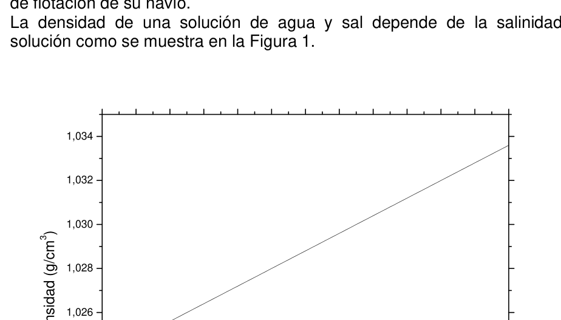
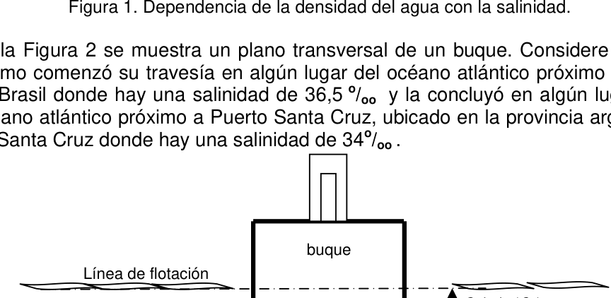
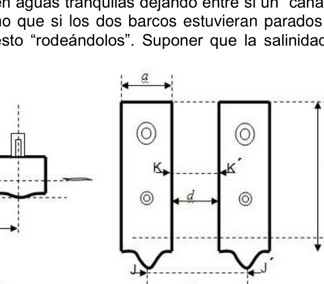
Topic: Fluid Mechanics Metodi: Hydrostatic Equilibrium, Conservation Laws Competenze: Physical Reasoning, Mathematical Modeling Objects: Container Fonte: Testo (PDF) — p.3
A proposito della linea di galleggiamento
Problema 2 In merito alla linea di galleggiamento… Il grado di salinità delle acque in diverse parti degli oceani non è il
- Proprio così. I marinai esperti sanno di questo e di come influisce sulla linea. della flottazione della sua nave. La densità di una soluzione di acqua e sale dipende dalla salinità della salina. Soluzione come mostrato in Figura 1.
Figura 1. Dipendenze della densità dell’acqua dalla salinità.
La figura 2 mostra un piano trasversale di una nave. Considerate che il lui stesso ha iniziato il suo viaggio da qualche parte nell’oceano Atlantico vicino all’est. del Brasile, dove c’è una salinità di 36,5 o/o e l’ha conclusa da qualche parte del Oceano Atlantico vicino a Puerto Santa Cruz, situato nella provincia argentina di Santa Cruz dove c’è una salinità di 34o/o .
a) stabilire le densità corrispondenti al luogo di partenza e al luogo di destinazione
- La fine del viaggio.
Il calado (Ca) è la profondità che raggiunge nell’acqua la parte immersa di una nave; cioè la distanza che separa la superficie dell’acqua (linea di flottazione) della base o del fondo della nave
Silenzio (Ca) Figura 2: piano trasversale di una nave Linea di flottazione Acqua oceanica Nave 30 31 32 33 34 35 36 37 38 39 40 41 42 1,024 1,026 1,028 1,030 1,032 1,034
Densità (g/cm) 3) Salinità ( o/oo )
OAF 2014 - 21 b) Determinare il calato alla fine del viaggio se all’inizio del viaggio era de 12m. Supponiamo che la nave sia come quella della Figura 2. Esprimere il Con 6 cifre significative.
- Di scontri tra navi. I vecchi lupi marini, questi sono i marinai esperti, sapete. Perfetto che le navi che navigano insieme si attraggono l’uno all’altro con abbastanza forte. Per questo i capitano prendono in considerazione questo fenomeno quando Manipolazione con la sua nave. Cercheremo di capire questo fenomeno applicando il teorema di Bernoulli. (Equazione di Bernoulli) e il principio della conservazione della massa. Nella Figura 3 si possono vedere due navi uguali che navigano a velocità uguale. v=40km/h vicine all’altra in acque tranquille lasciando tra di sé un canale di La larghezza d=20 m, che è la stessa che se le due navi fossero fermate e il L’acqua correrebbe in direzione opposta, circondandoli. Supponiamo che la salinità del L’acqua è di 34o/o:
Figura 3
c) Trovare la magnitudo e il senso della velocità dell’acqua vista da un sistema di riferimento che si muove a 40km/h, parallelo ai Le navi e nello stesso senso che le navi. Fare un grafico la velocità di riferimento. d) Determinare, nel medesimo sistema di riferimento, la velocità dell’acqua che circola tra le navi (canale di larghezza d). Supponiamo che l’intero Acqua che viene e scorre attraverso la sezione J J che ha un’area A=Ca.D lo fa, passando tra le navi, attraverso la sezione KK ́ che ha un’area A*=Ca.d. Mentre l’acqua circola da un lato esterno alle navi non è interessato. e) Usando il Principio di Bernoulli, determinare la differenza di pressione che si verifica tra i due lati di ciascuna nave. f) Determinare la forza netta su ciascuna nave. Considerare i rispettivi lunghe (L) e linee di galleggiamento. Supponiamo che con manovre di timone il capitano di una delle navi la forza di un modulo non supera un valore Fc. g) Esprimere la distanza minima (dm) tra navi, in modo che non si verifica una collisione.
Dati: L=294m, a=32m, d=20m, v=40km/h
OAF 2014 - 22 Problema n.2: circa la linea di galleggiamento… (NIVEL 2) Pagina delle Risposte Esprimere tutte le risposte nel sistema MKS
Punteggi a) densità corrispondente al luogo di partenza
1028,5 Kg m3 densità corrispondente al luogo di fine del viaggio 1026,5 Kg m3
2
2 b) Sulla fine del viaggio m g = ei= ef (impulsi)
I dati relativi ai prodotti di cui all’articolo 1, paragrafo 1, del regolamento (UE) n.
Caf = ρi 𝜌𝑓 Caccia = 12.0234 m
5
1 (cifre) c) velocità dell’acqua
Grafico esplicativo
L’ acqua ha velocità zero rispetto alla terra (vat = 0). La barca ha una velocità di 40 km/h (vbt) rispetto alla terra.
Si compie vat= vab + vbt
- 40 km/h = - 11,11 m/s
1 d) velocità dell’acqua che circola tra le navi
Ca D vab = Ca d vcanal
Vcana l = D d vab = 52 20 (−11,11) 𝑚 𝑠 1 Ot Ob Vbt
OAF 2014 - 23
e) La differenza di pressione tra i due lati di ciascun di essi navi
𝜌𝑓 2 vab 2 + Pext = ρf 2 vcanale 2 + Pint ∆P = Pext − Pint = ρf 2 vcanale 2 − vab 2 ∆P = 𝜌𝑓 2 𝐷 𝑑 2 -1 va 2
∆P = 364904,8 𝑃𝑎
2 f) forza netta su ogni nave.
F= Caf L ∆P = 1289894483,5 N
1 g) espressione della distanza minima (dm) tra navi, per che non si verifichi un incidente.
Fc≥Caf L ∆Pc=Caf L ρf 2 𝐷 𝑑𝑚
2 -1 va 2
Fc≥Caf L ρf 2 𝑎+ 𝑑𝑚 𝑑𝑚
2 -1 vab 2
𝑑𝑚≥ 𝑎
𝐹𝑐 Caf L ρf 2 vab 2 + 1 1/2 −1
2
OAF 2014 - 24
Topic: Fluid Mechanics Metodi: Hydrostatic Equilibrium, Conservation Laws Competenze: Physical Reasoning, Mathematical Modeling Objects: Container Fonte: Testo (PDF) — p.3
About the floating line
Problem two . About the floating line… The degree of salinity of the waters in different places in the oceans is not the same. I’m not. Experienced sailors know this and how it influences the line. of floating of your ship. The density of a solution of water and salt depends on the salinity of the solution. The solution is shown in Figure 1.
Figure 1 is shown. Dependence on water density and salinity.
Figure 2 shows a cross-sectional plane of a ship. Consider that the He himself began his journey somewhere in the Atlantic Ocean near the east. of Brazil where there is a salinity of 36.5 and/or concluded it somewhere in the Atlantic Ocean near Puerto Santa Cruz, located in the Argentine province Santa Cruz where there is a salinity of 34o/o .
(a) Establish densities for the place of departure and the place of departure The end of the journey.
The water depth (Ca) is the depth at which the submerged part of the water reaches the water. a ship; that is, the distance separating the surface of the water (line of Float) of the ship’s base or bottom
Silent (Ca) Figure 2: Cross plane of a ship Floating line Ocean water ship 30 31 32 33 34 35 36 37 38 39 40 41 42 1,024 1,026 1,028 1,030 1,032 1,034
The following information shall be provided: 3) Salinity ( o/oo )
The following is the list of the Member States’ financial statements: (b) Determine the anchorage at the end of the journey if at the beginning of the journey it was de 12m. Suppose the ship is like the one in Figure 2. Express the The result is 6 significant figures.
About the ship-to-ship collisions. The old sea wolves, this is experienced sailors, you know. Perfectly that ships sailing together are attracted to each other with It’s pretty strong. That ‘s why captains take this phenomenon into account when they ‘re Manoeuvre with your ship. We will try to understand this phenomenon by applying Bernoulli’s theorem. (Bernoulli’s equation) and the principle of conservation of mass. In Figure 3 you can see two ships that are moving at the same speed. v=40km/h side by side in calm waters leaving a channel of water between them. width d=20m; this is the same as if the two ships were standing still and the Water would run in the opposite direction around them. Suppose that the salinity of the Water is 34o/oo:
Figure 3
(c) Find the magnitude and direction of the water velocity seen from a reference system moving at 40km/h parallel to the The Commission has already taken a number of measures to ensure that the Community’s financial resources are used to finance the implementation of the budget. Draw a chart the explanatory statement on which the corresponding speeds are located. (d) Determine the water speed in the same reference system which circulates between vessels (wide channel d). Assuming that all the Water that comes and flows through the section J J that has an area A=Ca.D does this, passing between ships, through the section KK ́ that has an area A*=Ca.d. While the water circulates on the side external to ships is not affected. (e) Using Bernoulli’s Principle, determine the difference in pressure that It occurs between the two sides of each of the ships. (f) Determine the net force on each vessel. Consider the relevant ones L-lengths and floating lines. Assuming by rudder maneuvers the captain of one of the ships can neutralize the effect of this force if its module does not exceed a value Fc. (g) Give an expression of the minimum distance (dm) between ships, so that there is no collision.
Data: L=294m, a =32m, d=20m, v=40km/h
The following is the list of the Member States’ financial statements: Problem No2: About the floating line… (level 2) Answer Sheet Please enter all the answers in the MKS system
Score a) density corresponding to the point of departure
1028,5 Kg m3 density corresponding to the place of end of the crossing 1026,5 Kg m3
2
2 b) Silent at the end of the crossing The following table shows the results of the calculation:
The following is the list of the following:
Caf = ρi 𝜌𝑓 The waterfall is 12,0234 m.
5
1 (numbers) c) Water speed
Explanatory chart
Water has zero velocity with respect to land (vat = 0). The boat has a land speed of 40 km/h (vbt).
It ‘s coming true . The following is the list of the countries of the European Union:
The following shall be added to the list of the following:
1 d) speed of water circulating between vessels
The Commission shall adopt the following measures:
Vcana l = D d vab = 52 20 (−11,11) 𝑚 𝑠 1 Ot Ob Vbt
The following is the list of the Member States’ financial statements:
e) pressure difference between the two sides of each of the ships
𝜌𝑓 2 vab 2 + Pext = ρf 2 vcanal 2 + paint ∆P = Pext − Pint = ρf 2 vcanal 2 − vab 2 ∆P = 𝜌𝑓 2 𝐷 𝑑 2
- 1 to 2
∆P = 364904,8 𝑃𝑎
2 f) net force on each ship.
The following table shows the following information:
1 g) expression of the minimum distance (dm) between vessels, for That there is no collision.
The following table shows the results of the evaluation: 2 𝐷 𝑑𝑚
2
- 1 to 2
The following table shows the results of the evaluation: 2 𝑎+ 𝑑𝑚 𝑑𝑚
2
- 1 to 2
𝑑𝑚≥ 𝑎
𝐹𝑐 The Commission shall adopt implementing acts in accordance with Article 21 of this Regulation. 2b 2 + 1 1/2 −1
2
The following is the list of the Member States’ financial statements:
Topic: Fluid Mechanics Metodi: Hydrostatic Equilibrium, Conservation Laws Competenze: Physical Reasoning, Mathematical Modeling Objects: Container Fonte: Testo (PDF) — p.3
El pato bebedor
Problema 3 El Pato bebedor. El pato bebedor es un juguete, patentado en 1946, en el cual una figura con forma de pato simula beber de un vaso ubicado al frente. Este juguete es una máquina térmica simple y muy ingeniosa. El pato está hecho de vidrio y consta de dos esferas conectadas por un tubo como se muestra en la figura 1. La esfera inferior, que simula el cuerpo del pato, contiene una sustancia volátil, cuya temperatura de ebullición es cercana a la temperatura ambiente. La esfera superior, que simula la cabeza, está cubierta de un material absorbente. El pato puede rotar alrededor de un eje, el cual está apoyado sobre una estructura que simula las patas del pato. Para iniciar el movimiento se moja la cabeza del pato con agua, y luego de unos momentos, el pato se inclina para beber agua del vaso,luego recupera su posición vertical. Unos segundos después, el pato se inclina nuevamente a beber y repite este movimiento mientras haya agua en el vaso. En la figura 1, se esquematiza el movimiento del pato.
Figura 1. Pato bebedor.
Para entender su funcionamiento, primero tenemos que entender la mecánica del movimiento. En la esfera inferior (cuerpo) coexisten líquido y vapor de la misma sustancia, por lo que para una dada temperatura se tendrá una determinada presión. En la esfera superior (cabeza) sólo hay vapor de dicha sustancia, aunque coexistiendo con el líquido presente en el cuello. Esto es, la presión del vapor en la cabeza estará determinada por su temperatura de coexistencia. Si se establece una pequeña diferencia de temperatura entre la cabeza y el cuerpo del pato, se producirá una diferencia de presión entre ambos recintos. Para contrarrestar esta diferencia de presión, parte del líquido asciende o desciende por el tubo (cuello del pato) hasta que se alcance una situación de equilibrio en la que no fluye más líquido. Esta redistribución de líquido produce un cambio en la posición del centro de masa del pato. Debido a la forma en la que está construido el pato, el cambio en la posición del centro de masa tiene asociado un torque tal que produce la oscilación del pato. La diferencia de temperatura entre la cabeza y el cuerpo del pato se establece por la evaporación del agua que moja la cabeza del pato. La provisión de agua que se evapora desde la cabeza se consigue con cada inclinación del pato para beber.
Modelo En la figura 2 se muestra nuestro modelo del pato bebedor.La parte inferior del pato está formada por un cubo de 6 cm de lado y la parte superior (cabeza) por una esfera de 4 cm diámetro. Ambas partes están conectadas por un tubo de 2 cm de diámetro y de 12 cm de largo, medido desde la parte superior del cubo hasta la parte inferior de la cabeza.
OAF 2014 - 25
El cubo contiene un líquido cuya temperatura de ebullición es 40°C y cuya
densidad es 1.336 g cm-3. El resto del pato está lleno del vapor de la misma
sustancia que llena el cuerpo.
En nuestro modelo se considerará como cuerpo del pato a la porción del
cubo llena de líquido y como cuello a la parte del tubo que va desde la
superficie del líquido, contenido en el cubo, hasta la parte inferior de la
cabeza.
Como se muestra en la figura 2, el tubo se extiende hacia el interior del líquido
de manera que el vapor contenido en el cubo está aislado del vapor contenido
en el resto del pato generando dos recintos con vapor aislados.
Sobre la cabeza, el pato tiene un sombrero de 80 g simulado por un cilindro de 4
cm de diámetro y 5 cm de alto. El eje alrededor del cual nuestro pato puede
rotar está ubicado a 2 cm por arriba del cubo y es paralelo al plano del dibujo
(Ver figura 2).
Tanto la masa del vidrio que forma al pato como la masa de vapor
contenida en él, son despreciables frente a las masas del sombrero y del
líquido contenido en el cubo.
Figura 2. Modelo del Pato bebedor.
Actividades
- Determinar la masa de líquido contenida en el cubo (Masa del cuerpo, 𝑀𝑐𝑢𝑒𝑟𝑝𝑜). Considere despreciable la masa del vidrio.
OAF 2014 - 26 2) La coexistencia de la fase líquida y gaseosa de cualquier sustancia ocurre a una presión de equilibrio (P) y a una temperatura (T) vinculadas por la ecuación de Clausiuss-Clayperon (Ecuación 1), 𝑃 𝑇 = 𝑃0𝑒𝑥𝑝 − ∆ 𝑅 1 𝑇− 1 𝑇𝑏
(1) donde 𝑃0 = 1.013 × 105 𝑃𝑎, 𝑅= 8.3145 𝐽 𝐾−1𝑚𝑜𝑙−1 es la constante universal de los gases, ∆= 28094,5 𝐽 𝑚𝑜𝑙−1 es la ” variación de entalpía de vaporización molar” de la sustancia y 𝑇𝑏 es su temperatura de ebullición en Kelvin.
Determinar la presión en el interior de la cabeza (𝑃𝑐𝑎𝑏𝑒𝑧𝑎) y del cubo(𝑃𝑐𝑢𝑏𝑜) si el pato se encuentra inicialmente a la temperatura ambiente (𝑇𝑎) cuyo valor es 25°C.
- Determinar la temperatura de la cabeza (𝑇𝑐𝑎𝑏𝑒𝑧𝑎) si ésta se moja con 10 mg de agua a temperatura ambiente. Suponga que la humedad ambiente es menor a 100%.
Suponga que todo el calor necesario para evaporar el agua es provisto por la cabeza y que ésta tiene un calor específico efectivo 𝐶= 47.5 𝐽 °𝐶−1.
Nota: En caso que la humedad ambiente es menor a 100%, el agua se evapora sin necesidad de alcanzar los 100°C (temperatura de ebullición del agua). En este caso, la energía necesaria para evaporar un gramo de agua es de 2257 𝐽.
-
Determinar la nueva presión en el interior de la cabeza (𝑃′𝑐𝑎𝑏𝑒𝑧𝑎).
-
Determinar la altura () del líquido en el cuello, respecto a la superficie del liquido contenido en el cubo, para la nueva presión de equilibrio. Suponga que la temperatura del cuerpo del pato se mantiene constante e igual a la temperatura ambiente.
-
Determinaren cuanto disminuye la altura del líquido en el cubo (∆𝑧).
-
Determinar la masa de líquido contenida en el cubo (𝑀′𝑐𝑢𝑒𝑟𝑝𝑜) y en el cuello (𝑀𝑐𝑢𝑒𝑙𝑙𝑜).
-
Determinar la posición inicial del centro de masa del pato respecto del eje de rotación cuando todo el sistema se encuentra a 𝑇𝑎.
Ayuda: Para un cuerpo con densidad uniforme, el centro de masa coincide con su centro geométrico.
a) En el esquema mostrado en la hoja de respuesta, señale la posición del centro de masa del cuerpo, de la porción de liquido contenida en el cuello y del sombrero (en el esquema el eje y se encuentra perpendicular a la superficie de la hoja). En la Tabla I, indique las posiciones, respecto del eje de rotación, de cada centro de masa señalado junto con el valor de masa correspondiente.
b) En base al punto anterior, determine la posición del centro de masa del sistema.
- Determine el modulo (𝜏) del torque generado por el peso del pato si éste se inclina un ángulo de 5° respecto a la vertical. Suponga que el ángulo es suficientemente pequeño de modo de poder considerar que la posición del
OAF 2014 - 27 centro de masa no cambia debido al desplazamiento del líquido producido por la inclinación.
- Determine la aceleración angular inicial (𝛾) del pato cuando está inclinado 5º respecto de la vertical.
Ayuda El momento de inercia para un paralelepípedo recto rectangular de masa M respecto de un eje como el mostrado en la figura 3a es,
𝐼= 1 12 𝑀(𝑎2 + 𝑏2)
El momento de inercia de un cilindro de masa M respecto de un eje como el mostrado en la figura 3b es,
𝐼= 1 12 𝑀(3𝑅2 + 𝐿2)
Figura 3a. Paralelepípedo recto rectangular, b. Cilindro de masa M
Datos y constantes Parámetro Valor Unidad 𝑃0 1.013 × 105 𝑃𝑎 ∆ 28094.5 𝐽 𝑚𝑜𝑙−1 𝑅 8.3145 𝐽 𝑘−1𝑚𝑜𝑙−1 𝜌 1.336 𝑔 𝑐𝑚−3 𝑇𝑏 40 °𝐶 𝐶 47.5 𝐽 °𝐶−1 𝐿𝑣 2257 𝑘𝐽 𝑘𝑔−1 𝑐𝑎𝑔𝑢𝑎 4.1813 𝐽 𝑔−1°𝐶−1 𝑔 9.8 𝑚 𝑠−2 𝑇𝑎 25 °𝐶 𝑚𝑎𝑔𝑢𝑎 10 𝑚𝑔 𝑚 80 𝑔
OAF 2014 - 28 Problema Nº3: El Pato bebedor. (NIVEL 2) Hoja de Respuestas Exprese todas las respuestas en el sistema MKS
Puntaje 1) 𝑀𝑐𝑢𝑒𝑟𝑝𝑜=
𝑃𝑐𝑢𝑏𝑜=
𝑃𝑐𝑎𝑏𝑒𝑧𝑎=
3) 𝑇𝑐𝑎𝑏𝑒𝑧𝑎=
𝑃′𝑐𝑎𝑏𝑒𝑧𝑎=
=
Δ𝑧=
𝑀𝑐𝑢𝑒𝑙𝑙𝑜=
𝑀′𝑐𝑢𝑒𝑟𝑝𝑜=
8a) Puntaje
OAF 2014 - 29 Tabla I Posición del Centro de Masa Masa
𝑥 𝑦 𝑧
Sombrero
Cuerpo
Líquido contenido en el Cuello
8b) 𝑥𝐶𝑀=
𝑦𝐶𝑀=
𝑧𝐶𝑀=
9) 𝜏=
- 𝛾=
OAF 2014 - 30
Instancia Nacional Prueba Experimental Nivel 2
OAF 2014 - 31 La Física del reloj de arena.
Introducción: La materia granular o materia granulada es aquella que está formada por un conjunto de partículas macroscópicas sólidas. El tamaño de estas partículas es tal que la fuerza de interacción dominante entre ellas es la de fricción. Como ejemplos de materia granular se encuentran los granos y semillas, la nieve, la arena, etc.
Dentro del estudio de los medios granulares, existe un capítulo extenso que abarca los problemas del flujo de materia en forma de granos. Este interés se remonta a la antigüedad cuando se usaban, para medir el tiempo, relojes de arena.
En los líquidos que escapan a través de un orificio,
el flujo, masa por unidad de tiempo, depende
principalmente de la altura del líquido dentro del
recipiente. El fenómeno se explica a través
del teorema de Torricelli y es debido al aumento de
la presión hidrostática en el fondo del recipiente al
aumentar la altura del fluido. Sin embargo, en los
medios granulares, la presión en el fondo del
contenedor deja de incrementarse cuando el
material alcanza una altura de aproximadamente
dos veces el diámetro del mismo. Por esta razón si
un contenedor de materia granular es perforado en
su parte inferior, los granos fluirán hacia afuera de
tal forma que su flujo es constante.
El flujo f (masa por unidad de tiempo) de un material granular que pasa a través de una abertura de diámetro D bajo la acción del campo gravitatorio terrestre, es:
cte t m f
y depende del diámetro del orificio de acuerdo a la expresión:
)1( AD f
donde y A son constantes .
Objetivo: Determinar experimentalmente el exponente
Elementos disponibles
-
Pie porta botella
-
2 bol con tapa
-
1 kg de arena
-
Balanza
-
Cronómetro
-
Regla
-
Cinta de enmascarar
-
Un barbijo para polvo
-
Botella de plástico con tapa agujereada
-
1 cucharín
-
6 chapitas circulares con orificios de distinto diámetro
OAF 2014 - 32
Procedimientos
a) Mida
el
diámetro
D
del
agujero de una chapita.
b) Llene la botella con 750 g de
arena
c) Coloque la chapita dentro de
la tapa, cuidando que el número
mire hacia Ud. y tape la botella.
d) Selle el agujero de la tapa
con cinta de enmascarar.
e) Coloque la botella con la tapa
hacia abajo en el pie porta
botella (ver Figura 1).
f) Sobre la base del pie porta
botella coloque la balanza y
enciéndala
g) Coloque un recipiente vacio
sobre el plato de la balanza y
tare la misma
h) Saque la cinta de la tapa y
mida la cantidad de masa m que
cae en el recipiente en función
del tiempo t. (mida cada 10 segundos aproximadamente y no menos de 5
puntos)
i) Repita los ítem anteriores para cada una de las chapitas.
Consignas
- Haga una tabla que contenga los valores de m y de t medidos para cada diámetro D.
- Grafique los datos experimentales para cada diámetro D.
- Determine el valor del flujo f con su correspondiente incertidumbre para cada diámetro D. Explicite el método usado.
- Haga una tabla que contenga el valor del flujo f y diámetro D.
- Grafique estos datos experimentales de tal manera de obtener una relación lineal. Use para ello la expresión (1) y los datos útiles.
- A partir del gráfico determine el valor de con su correspondiente incertidumbre.
- Compare el valor obtenido con el valor teórico y diga si son indistinguibles
Datos útiles Propiedades de la función logaritmo natural ( ln ): ) ln( ) ln( ) . ln( b a b a
) ln( ) ln( a b ab
Incerteza asociado a la función logaritmo natural ( ln ) es:
a a a ) ln(
Balanza Recipiente BotellaB Figura 1
OAF 2014 - 33 HOJA DE RESPUESTA NIVEL 2
Puntaje 1- Tablas: Confeccione las tablas en las hojas provistas e identifíquelas claramente
2- Gráficos: Haga los gráficos en las hojas milimetradas provistas e identifíquelos claramente.
3- Flujos: Descripción del método y cálculos. (complete los cálculos en las hojas provistas)
4- Tabla
5- Relación lineal
OAF 2014 - 34
Gráfico: Haga el gráfico en las hojas milimetradas provistas e identifíquelo claramente
6- Determinación de
7- Comparación del valor obtenido de
PUNTAJE TOTAL
OAF 2014 - 35
Primer Prueba Preparatoria Mecánica
OAF 2014 - 36 Problema Teórico 1 Suponga que se pretende sostener un cuerpo de masa m1 = 100 kg mediante el dispositivo de poleas, que se muestra en la figura. Considere que no hay rozamiento en los ejes ni entre poleas y soga, esta última es inextensible.
Determine:
a) la fuerza 𝐹 que se debe realizar.
b) la tensión que soporta cada una de las sogas enganchadas en los
agarres A y B ubicados en el techo.
c) la fuerza de reacción del techo en cada agarre y la tensión de la soga
que sostiene la masa m1.
La masa m1 se eleva una distancia d = 1m, aplicando una fuerza 𝐹 . La fuerza 𝐹
tiene un módulo tal que la masa m1 se mueve con velocidad constante mientras
recorre la distancia indicada.
d) ¿cuál es el trabajo realizado por la fuerza 𝐹 y que longitud de cuerda
pasó por cada polea?
Suponga que las poleas tienen una masa M = 2 kg. Determine:
e) la fuerza 𝐹 que se debe realizar para sostener el cuerpo.
f) la tensión que soporta cada uno de las sogas .
g) la tensión que soportan los agarres A y B ubicados en el techo.
En la situación anterior, se reemplaza la soga que sostiene a la polea colgada de
A por un resorte de constante elástica k = 50 103 N m-1 y longitud natural l0 = 30
cm.
h) Calcule el estiramiento del resorte cuando el sistema está en equilibrio.
Problema Teórico 2 Considere una barra rígida de largo L = 4 m y masa mb = 20 kg, apoyada como se indica en la figura. Un cuerpo de masa mc = 50 kg se apoya sobre el extremo C de la barra, a una distancia L1 = 1 m del punto de apoyo A. a) Determine la fuerza que se debe aplicar en el extremo B de la barra para lograr una situación de equilibrio como la indicada en la figura. b) Determine la reacción del piso sobre el apoyo (A). c) Encuentre una expresión para la fuerza que se debe aplicar para lograr una situación de equilibrio “horizontal”, en función de la distancia entre el punto de aplicación de la fuerza (algún punto entre A y B) y el punto de apoyo.
OAF 2014 - 37
Problema Teórico 3
Una partícula puntual de masa m1 cae por la rampa de la figura e impacta contra
otra partícula puntual de masa m2 ubicada en el extremo horizontal de la rampa.
Este extremo se encuentra a una altura H del suelo.
a) Si el choque es elástico (o sea que se conserva la energía mecánica y el
impulso), determine la posición en la que impacta en el suelo cada una
de las partículas.
b) Si el choque es plástico (o sea que no se conserva la energía mecánica
pero si el impulso) y ambas partículas quedan pegadas, determine la
posición en la que impacta en el suelo cada una de las partículas.
c) Calcule los intervalos de tiempo que pasan entre el choque entre
partículas y sus respectivos impactos en el suelo.
Suponga que m1 = 2 m2.
Problema Experimental Objetivo:
- Determinar el módulo de Young, E, de un material plástico. Breve descripción Una viga empotrada por uno sus extremos y en voladizo, experimenta esfuerzos que producen su flexión; esto es, la viga se arquea, se deforma. Si la viga soporta, además de su propio peso, una carga extra la flexión que experimenta se incrementa. Los esfuerzos aplicados deforman la viga, según sea su geometría y el material que la compone, pero si son tales que las deformaciones son elásticas (limite elástico), entonces cuando cesan la viga retoma su forma original. Supongamos una viga “sin peso” de sección rectangular y longitud L, empotrada, a la que se le aplica en el extremo libre una fuerza F (ver figura). La viga se deforma, perdiendo su horizontalidad, y su extremo libre desciende una cantidad z (flecha). Se puede demostrar que:
OAF 2014 - 38 Con: donde a y b son las dimensiones de la sección de la viga, es el módulo de Young correspondiente al material del cual está compuesta la viga. Consigna
- Implementar un dispositivo similar al de la Figura utilizando como viga una regla plástica de al menos 30 cm de longitud.
- Utilizando diferentes masas conocidas, determinar la “flecha” z correspondiente a diferentes longitudes de “vuelo” (L). Determinar el coeficiente de elasticidad correspondiente al plástico con el que está construida la regla. Elementos que pueden resultar de utilidad:
- Una o dos reglas plásticas.
- Hilos finos y resistentes o tanza de pesca (mojarritas) aproximadamente 0,5 m.
- Cinta adhesiva de papel.
- Prensa tipo nuez o un sistema de reemplazo que puede ser un contrapeso formado por libros o ladrillos, etc.
- Pesas o sistema de reemplazo, como ser un recipiente contenedor de agua, “graduado” o graduable mediante una jeringa graduada. Nota: Es importante garantizar que las reglas (la utilizada como viga y la de referencia) estén siempre al mismo nivel en ausencia de carga. Sugerencias a) Realice mediciones de la flecha cuando somete a una viga al efecto de diferentes fuerzas; utilice 5 fuerzas distintas. Construya una tabla con los resultados. b) Confeccione un gráfico fuerza vs flecha y determine el valor del modulo de Young del plástico (nómbrelo E1). c) Con cada uno de las fuerzas que utilizó, realice mediciones de la flecha para “vigas” de diferentes longitudes; utilice 5 longitudes. Construya una tabla con los resultados. d) Confeccione gráficos (cuantos sean necesarios) de longitud a la tercera potencia vs flecha y determine el valor del modulo de Young del plástico (nómbrelo E2). e) Construya una tabla con los productos FL3 y confeccione un grafico FL3 vs flecha. Determine el valor del módulo de Young del plástico (nómbrelo E3). f) Compare los valores del módulo de Young que encontró y diga si son o no indistinguibles (justifique).
OAF 2014 - 39
Segunda Prueba Preparatoria Termodinámica, Electricidad y Magnetismo
OAF 2014 - 40
Problema Teórico 1
Dos recipientes de igual forma y dimensiones son conectados con un tubo muy
fino, como se muestra en la figura. Los mismos son cargados de agua,
inicialmente a la misma temperatura.
Indique la dirección del flujo de agua que se produce si se calienta:
a) el recipiente de la izquierda
b) el recipiente de la derecha
Suponga que el agua se calienta de una manera tal que la temperatura del agua
en el otro recipiente permanece inalterada.
Problema Teórico 2 Un recipiente como el de la figura, con una partición y un pistón como pared del lado derecho, se llena con helio gaseoso.
La válvula en la pared central que divide al recipiente se abre si la presión de la
parte derecha del mismo supera la del lado izquierdo. La superficie del área del
pistón es A=100cm2. Considere que todas las paredes del recipiente y el pistón
están construidos de materiales que no conducen el calor (recipiente
perfectamente adiabático).
La posición inicial del pistón es tal que la longitud li de la parte derecha e
izquierda del recipiente (a cada lado de la pared con la válvula) es la misma,
li =112cm. Al comienzo del experimento hay una masa m1=12g de helio en la
partición izquierda y m2=2g en la derecha.
La temperatura inicial es Ti =0ºC. La presión externa es Pi =1 105Pa. Los valores
de capacidad calorífica especifica a volumen constante (cv) y a presión constante
(cp) del helio, que se comporta como un gas ideal, son:cv= 3.15x103J/(kg K) y
cp =5.25x103J/(kg K).
Imagine un experimento en el que ocurre lo siguiente: el pistón es empujado
lentamente hacia adentro del recipiente, en el momento de la apertura de la
válvula se detiene el pistón durante un determinado tiempo y luego continúa
hasta alcanzar la pared central.
a) ¿Cuál es el trabajo realizado por la fuerza externa aplicada sobre el
pistón hasta el instante previo a la apertura de la válvula? Desprecie la
fricción.
b) ¿Por qué es necesario parar y esperar un momento durante el tiempo
en el cual la válvula se abre?
¿Cuál es el trabajo realizado por la fuerza externa aplicada sobre el pistón
cuando este ha llegado a la pared central, partiendo de la posición inicial?
Desprecie la fricción.
OAF 2014 - 41 Problema Teórico 3 Una esfera de porcelana descansa sobre una plancha de cobre que tiene un orificio. Cuando la temperatura es 10ºC el radio del orificio es Ro = 20 cm y el radio de la esfera es Re =20,05 cm. Si el coeficiente de dilatación lineal del cobre es cu = 1,65x10-5 ºC-1 y el de la porcelana es porc = 0,3x10-5 ºC-1, determinar: a) ¿Cuál es el volumen de la esfera cuando su temperatura se incrementa 10ºC? b) ¿Cuál es el diámetro del orificio de la placa de cobre cuando la temperatura de ésta última se incrementa 10ºC? c) ¿Cuál es la menor temperatura a la que deben estar ambos objetos para que la esfera pueda deslizarse a través del orificio de la placa de cobre?
Problema Experimental
Experimento 1 Objetivo 1:
- Determinar la presión atmosférica. Breve descripción Las moléculas de la superficie de un fluido forman una película, la cual produce una presión adicional sobre el interior del mismo: esta es la llamada fuerza de tensión superficial. La misma depende del coeficiente de tensión superficial 𝜎 que es una propiedad del fluido. Para un fluido en forma de gota esférica de radio 𝑅 la presión adicional debida a la fuerza de tensión superficial es: ∆𝑃= 2 𝜎 𝑅. Elementos necesarios
- Dos sorbetes
- Una regla
- Recipiente con solución jabonosa
Con la ayuda de los sorbetes y la solución jabonosa produzca dos pompas de
jabón con diferente diámetro.
a) Mida los diámetros correspondientes a las dos pompas de jabón. Luego de esto, junte cuidadosamente las dos pompas de jabón y procure que se forme una única pompa.
b) Determine el diámetro de esta última pompa.
Debe realizar este experimento con bastante rapidez y esto requerirá algo de práctica. Los resultados son apropiados si las burbujas son estables y no cambian significativamente de tamaño durante las mediciones. c) Usando las valores medidos de diámetro o radio de las tres pompas, y el valor promedio del coeficiente de tensión superficial de la solución de agua jabonosa (𝜎= 45,0 x10-3N/m), encuentre una fórmula adecuada para calcular la presión atmosférica. Repita el experimento varias veces.
Evalúe las bondades del método.
Experimento 2 Objetivo 2:
- Estudiar el efecto de la presión atmosférica. Elementos necesarios
- Una vela o alcohol (tapitas de gaseosa para contener a este último)
- Una regla
- Termómetro para estimar la temperatura en el aula.
- Fuente profunda o un plato hondo, transparentes en lo posible,.
OAF 2014 - 42
- Un frasco de vidrio transparente o un vaso, en lo posible rectos.
- Agua.
- Fósforos. Seguridad: el experimento involucra combustibles (alcohol, cera) en combustión, sea cuidadoso. No utilice grandes cantidades de alcohol (no más de media tapita de gaseosa). Mantenga el recipiente de alcohol lejos del lugar donde realizará la experiencia. Use fósforos de seguridad, NO USE ENCENDEDOR. Procedimiento: a) Poner agua en el recipiente (fuente o plato). b) Poner alcohol en una tapita y ponerla a flotar sobre el agua. Encender el alcohol. (En caso de usar una vela, ponerla parada verticalmente en el recipiente y encenderla.) c) Cubrirla con el frasco, intentando minimizar las pérdidas de aire (burbujas). d) Determinar el momento en que comienza a ascender el agua dentro del frasco. e) Cuando el fuego se haya extinguido, esperar unos minutos y medir la altura que alcanzó el nivel de agua dentro del frasco (medir respecto de la superficie de agua del recipiente). f) Determinar el cambio de volumen ocupado por el gas. g) Considerando la presión atmosférica (consultar al docente su valor regional), determinar la presión final en el interior del frasco. h) Determinar el número de moles de gas existentes en el frasco. i) Con los datos obtenidos, estimar el valor de la temperatura del aire, dentro del frasco, al inicio del experimento. j) Repetir este procedimiento varias veces. k) Explicar las observaciones y los resultados.
OAF 2014 - 43
Instancias Locales Problemas Teóricos
OAF 2014 - 44

Topic: Thermodynamics, Fluid Mechanics Metodi: First Law of Thermodynamics, Hydrostatic Equilibrium, Physical Modeling Competenze: Physical Reasoning, Mathematical Modeling Objects: Heat Engine, Sphere, Tube Fonte: Testo (PDF) — p.3
Il pato bevitore
Problema 3 Il Patto Bevitore. Il pato bevitore è un giocattolo, brevettato nel 1946, in cui una figura con forma di pato simula bere da un bicchiere posto davanti. Questo giocattolo è un Una macchina termico semplice e molto intelligente. Il pato è fatto di vetro e consiste di due sfere collegate da un tubo. come mostrato nella figura 1. La sfera inferiore, che simula il corpo del pato, contiene una sostanza volatile, la cui temperatura di ebollizione è vicina alla temperatura di temperatura ambiente. La sfera superiore, che simula la testa, è coperta da un materiale assorbente. Il pato può ruotare attorno ad un asse, che è appoggiato su una struttura che simula le zampe di un pato. Per iniziare il movimento si bagna la testa del pato con acqua, e dopo un po’ Qualche volta, il pato si penza a bere l’acqua dal bicchiere, poi riprende il suo. posizione verticale. Qualche secondo dopo, il pato si inclina di nuovo verso bere e ripetere questo movimento finché c’è acqua nel bicchiere. In figura 1, si schematizza il movimento del pato.
Figura 1. - Pato bevitore.
Per capire come funziona, dobbiamo prima capire la meccanica. del movimento. Nella sfera inferiore (corpo) coesistono liquido e vapore della La sostanza stessa, quindi per una data temperatura si avrà una
- una certa pressione. Nella sfera superiore (capella) c’è solo vapore di felicità sostanza, anche se coesistente con il liquido presente nel collo. Questo è, la La pressione del vapore nella testa sarà determinata dalla sua temperatura di Coesistenza. Se si stabilisce una piccola differenza di temperatura tra il la testa e il corpo del pato, si produrrà una differenza di pressione tra i due
- Le prese. Per contrastare questa differenza di pressione, parte del liquido sale. o scende per il tubo (collo del pato) fino a raggiungere una situazione di equilibrio in cui non scorre più liquido. Questa ridistribuzione del liquido produce un cambiamento nella posizione del centro di massa del pato. A causa della forma in cui che è costruito il pato, il cambiamento nella posizione del centro di massa ha associato a una torsione tale da produrre l’oscillazione del pato. La differenza di temperatura tra la testa e il corpo del pato si stabilisce. per l’evaporazione dell’acqua che bagna la testa del pato. Il rifornimento di acqua che evapora dalla testa si ottiene con ogni inclinazione del pato per Beviamo.
Modello La figura 2 mostra il nostro modello di pato bevitore. il pato è formato da un cubo di 6 cm sul lato e la parte superiore (capella) da una sfera di 4 cm di diametro. Entrambe le parti sono collegate da un tubo di 2 di diametro di 1 cm e lunghezza di 12 cm, misurata dalla parte superiore del cubo fino alla parte inferiore della testa.
OAF 2014 - 25 Il cubo contiene un liquido la cui temperatura di ebollizione è 40°C e il cui densità è di 1.336 g cm-3. Il resto del pato è pieno di vapore di essa. sostanza che riempie il corpo. Nel nostro modello si considererà come corpo di pato alla porzione di Cubo pieno di liquido e collo come la parte del tubo che va dalla superficie del liquido contenuto nel cubo fino alla parte inferiore della
- La testa. Come mostra la figura 2, il tubo si estende verso l’interno del liquido. in modo che il vapore contenuto nel cubo sia isolato dal vapore contenuto nel resto del pato generando due recinti isolati a vapore. Sull’alto della testa, il pato ha un cappello da 80 grammi simulato da un cilindro da 4 di diametro di 1 cm e altezza di 5 cm. L’asse intorno al quale il nostro pato può rotare è situato a 2 cm sopra il cubo e è parallelo al piano del disegno (Vedi figura 2). Sia la massa del vetro che forma il pato che la massa del vapore . contenuti in esso, sono disprezzabili davanti alle masse del cappello e del liquido contenuto nel cubo.
Figura 2 Modello del Patto Bevitore.
Attività
- Determinare la massa di liquido contenuta nel cubo (massa del corpo, Corpo . Considera dispreziosa la massa del vetro.
OAF 2014 - 26 2) La coesistenza della fase liquida e gassosa di qualsiasi sostanza si verifica a una pressione di equilibrio (P) e una temperatura (T) legate dall’equazione di Clausiuss-Clayperon (Equatoria 1), P T = P0exp − ∆ 𝑅 1 𝑇− 1 𝑇𝑏
(1) dove P0 = 1.013 × 105 Pa, R= 8.3145 J K−1mol−1 è la costante universale di La variazione di entalpia di vaporizzazione è la variazione di entalpia di vaporizzazione. mollare” della sostanza e Tb è la sua temperatura di ebollizione in Kelvin.
Determina la pressione all’interno della testa (Capo) e del cubo (cubo) se il La temperatura ambiente (Ta) del pato è inizialmente 25°C.
- Determina la temperatura della testa (Capo) se si bagna con 10 mg di acqua a temperatura ambiente. Supponiamo che l’umidità ambientale sia inferiore a 100%.
Supponiamo che tutto il calore necessario per evaporare l’acqua sia fornito dalla la testa e che essa abbia un calore specifico effettivo C=47,5 J °C−1.
Nota: se l’umidità ambientale è inferiore al 100%, l’acqua si evapora senza necessità di raggiungere 100°C (temperatura di ebollizione dell’acqua). En In questo caso, l’energia necessaria per evaporare un grammo di acqua è di 2257 J.
-
Determinazione della nuova pressione all’interno della testa (P′cap).
-
Determinare l’altezza () del liquido nel collo rispetto alla superficie del liquido contenuto nel cubo, per la nuova pressione di equilibrio. Supponiamo che la La temperatura del corpo del pato è costante e uguale alla temperatura. ambiente.
-
Determina quanto diminuisce l’altezza del liquido nel cubo (∆z).
-
Determinazione della massa di liquido contenuta nel cubo (M′ corpo) e nel collo
- Non è vero.
- Determinare la posizione iniziale del centro di massa del pato rispetto all’asse di La rotazione è quando l’intero sistema è a Ta.
Aiuto: per un corpo a densità uniforme, il centro di massa coincide con il suo centro geometrico.
a) Nella scheda mostrata nella scheda di risposta, indicare la posizione del centro di massa corporea, della porzione di liquido contenuta nel collo e del cappello (in schema l’asse e si trova perpendicolare alla superficie della foglia). In tabella I, indicare le posizioni, rispetto all’asse di rotazione, di ogni centro di massa indicato, corrispondente al valore di massa.
b) Sulla base del punto precedente, determinare la posizione del centro di massa del sistema.
- Determina il modulo (τ) della torsione generata dal peso del pato se il suo peso è inclinare un angolo di 5° rispetto alla verticale. Supponiamo che l’angolo sia Il punto di vista della Commissione è che la posizione di
OAF 2014 - 27 Il centro di massa non cambia a causa del spostamento del liquido prodotto dalla inclinazione.
- Determina l’accelerazione angolare iniziale (γ) del pato quando è inclinato 5° rispetto alla verticale.
Aiuto . Il momento di inerzia per un parallelepipedone retto rettangolare di massa M per un’asse come mostrato in figura 3a è,
𝐼= 1 12 𝑀(𝑎2 + 𝑏2)
Il momento di inerzia di un cilindro di massa M rispetto ad un asse come il il numero mostrato in figura 3b è,
𝐼= 1 12 𝑀(3𝑅2 + 𝐿2)
Figura 3a. Parallepipedolo retto rettangolare, b. Cindro di massa M
Datati e costanti Parametro Valore Unità 𝑃0 1.013 × 105 𝑃𝑎 ∆ 28094.5 J mol−1 𝑅 8.3145 J k−1mol−1 𝜌 1.336 𝑔 𝑐𝑚−3 𝑇𝑏 40 °𝐶 𝐶 47.5 𝐽 °𝐶−1 𝐿𝑣 2257 𝑘𝐽 𝑘𝑔−1 acqua 4.1813 𝐽 𝑔−1°𝐶−1 𝑔 9.8 𝑚 𝑠−2 𝑇𝑎 25 °𝐶 Magia 10 𝑚𝑔 𝑚 80 𝑔
OAF 2014 - 28 Problema numero tre: il pato bevitore. (NIVEL 2) Pagina delle Risposte Esprimere tutte le risposte nel sistema MKS
Punteggi 1) Corpo =
Pcubo=
- Capofitto
- Capella
P′capitale=
=
Δ𝑧=
- Non lo so.
M′corpo=
8a) Punteggi
OAF 2014 - 29 Tabella I Posizione del centro di massa Massa
𝑥 𝑦 𝑧
Cappello
Corpo .
Liquido contenuto in Il Collo
8b) xCM=
eCM=
ZCM=
-
𝜏=
-
𝛾=
OAF 2014 - 30
Instanza nazionale Prova sperimentale Livello 2
OAF 2014 - 31 La fisica dell’orologio di sabbia.
Introduzione: La materia granulare o materia granulata è quella che è costituita da un un insieme di particelle macroscopiche solide. Il numero di queste particelle è La forza di interazione dominante tra loro è quella di attrito. Come Esempi di materia granulare sono i cereali e i semi, la neve, la sabbia, ecc.
Nel campo dello studio dei mezzi granulari, esiste un ampio capitolo che Il problema del flusso di materia in forma di granelli. Questo interesse è E’ un’operazione che risale all’antichità, quando venivano usati orologi di sabbia.
Nei liquidi che scorrono attraverso un buco, Il flusso, massa per unità di tempo, dipende La temperatura del liquido all’interno del liquido è determinata principalmente da contenitore. Il fenomeno si spiega attraverso Il teorema di Torricelli e’ dovuto all’aumento di la pressione idrostatica sul fondo del recipiente al aumentare l’altezza del fluido. Tuttavia, nei media granulari, la pressione sul fondo del contenitore si allontana quando il contenitore si allontana il materiale raggiunge un’altezza di circa Due volte il diametro di questo. Per questo motivo si un contenitore di materia granulare è perforato in La sua parte inferiore, i granelli fluiranno verso l’esterno. in modo tale che il suo flusso sia costante.
Il flusso f (massa per unità di tempo) di un materiale granulare che passa attraverso di un’apertura di diametro D sotto l’azione del campo gravitazionale terrestre, è:
Cte t m f
e dipende dal diametro del foro secondo l’espressione:
)1( AD f
dove e A sono costanti .
Obiettivo: Determinare sperimentalmente l’esponente
Elementi disponibili
-
Pieno porta bottiglia
-
Due bolle con copertura
-
1 kg di sabbia
-
Sbalzo .
-
Cronometro .
-
Regola .
-
Cante di maschera
-
Un pezzo di polvere .
-
Bottiglia di plastica con copertura perforata
-
1 cucchiaino .
-
6 capite circolari con orizzonti di diametro diverso
OAF 2014 - 32 Procedure a) Mida el diametro D di cui al un buco di un’artiglieria. b) Riempire la bottiglia con 750 g di sabbia c) Metti la lamina all’interno di Il copertino, facendo attenzione al numero Guarda verso di te. e copri la bottiglia. d) Sigilla il buco della copertura con una cinta mascherante. e) Metti la bottiglia con la copertura verso il basso sul piede porta bottiglia (vedi figura 1). f) Sulla base del piede porta bottiglia metti la bilancia e Accendilo. g) Metti un contenitore vuoto sul piatto della bilancia e
- Non lo so. h) Togliere la cinta dalla copertura e misura la quantità di massa m che cade nel contenitore in funzione di tempo t. (mezza ogni 10 secondi circa e non meno di 5 punti) (i) Ripeti gli elementi precedenti per ciascuna delle tappe.
Consigne
- Fai una tabella che contiene i valori di m e di t misurati per ciascuna diametro D.
- Grafica i dati sperimentali per ogni diametro D.
- Determina il valore del flusso f con la relativa incertezza per ogni diametro D. Spiega il metodo usato.
- Fai una tabella che contiene il valore di flusso f e diametro D.
- Grafica questi dati sperimentali in modo tale da ottenere un Relazione lineare. Per questo, utilizzare l’espressione (1) e i dati utili.
- Sulla base del grafico, determina il valore di con il suo corrispondente l’incertezza.
- Confronta il valore ottenuto con il valore teorico e dice se sono indistinguibilmente
Dati utili Proprietà della funzione logaritmo naturale ( ln ): ) ln( ) ln( ) . ln( b a b a
) ln( ) ln( a b ab
Incertezza associata alla funzione logaritmo naturale (l) è:
a a a ) ln(
Sbalzo Raccogliente BottigliaB Figura 1
OAF 2014 - 33 L’Abbogato di Risposta NELLAVELLO 2
Punteggi 1- Tabelle: Configgere le tabelle nelle foglie fornite e Identificali Chiaramente .
2- Grafica: Fai i grafici su fogli di millimetri provviste e identificatele chiaramente.
3- Flussi: descrizione del metodo e calcoli. (completa i Calcoli sui fogli forniti)
4- Tabella
5- Relazione lineare
OAF 2014 - 34
Grafico: Fai il grafico sulle foglie di millimetro fornite e Identifica chiaramente.
6- Determinazione di
7- Comparare il valore ottenuto da
Punto totale
OAF 2014 - 35
Primo test preparatorio Meccanica
OAF 2014 - 36 Problema teorico 1 Supponiamo che si intenda sostenere un corpo di massa m1 = 100 kg mediante il dispositivo di pollice, come mostrato nella figura. Considera che non c’è La rottura tra i punti o tra le pollice e la corda, quest’ultima è estensibile.
Determina: a) la forza F da esercitare. b) la tensione sostenuta da ciascuna delle prese collegate ai le afferratrici A e B situate sul tetto. c) la forza di reazione del tetto in ogni presa e la tensione della corda che sostengono la massa m1. La massa m1 si eleva a distanza d = 1 m, applicando una forza F. Forza F ha un modulo tale che la massa m1 si muove a velocità costante mentre percorre la distanza indicata. d) qual è il lavoro svolto dalla forza F e quale lunghezza di corda Ha passato ogni pole? Supponiamo che le polea abbiano una massa M = 2 kg. Determina: e) la forza F da esercitare per sostenere il corpo. f) la tensione che ciascuna delle spine sopporta . g) la tensione sostenuta dalle afferenti A e B situate sul tetto. Nella situazione precedente, si sostituisce la corda che sostiene la polea appesa di A per una sorgente di costante elastica k = 50 103 N m-1 e lunghezza naturale l0 = 30 cm. h) Calcolare il tratto della molla quando il sistema è in equilibrio.
Problema teorico 2 Considera una barra rigida lunga L = 4 m e massa mb = 20 kg, sostenuta come è indicato nella figura. Un corpo di massa mc = 50 kg si appoggia sull’estremità C della barra, a una distanza L1 = 1 m dal punto di appoggio A. a) Determina la forza da applicare alla punta B della barra per ottenere una situazione di equilibrio come indicata nella figura. b) Determina la reazione del pavimento al supporto (A). c) Trova un’espressione per la forza da applicare per ottenere una situazione di equilibrio orizzontale, in funzione della distanza tra il punto di applicazione della forza (un punto tra A e B) e il punto di supporto.
OAF 2014 - 37 Problema teorico 3 Una particella puntuale di massa m1 cade dal rampo della figura e colpisce contro un’altra particella puntuale di massa m2 situata all’estremità orizzontale del ramp. Questo punto è a un’altezza H del suolo. a) Se il colpo è elastico (cioè si conserva l’energia meccanica e la Impulso), determina la posizione in cui colpisce il suolo di particelle. b) Se il colpo è di plastica (cioè non si conserva l’energia meccanica) Ma se il pulso) e entrambe le particelle rimangono incastrate, determina la la posizione in cui colpisce il suolo ogni particella. c) Calcolare gli intervalli di tempo che passano tra il colpo e il colpo tra le particelle e i loro rispettivi impatti sul suolo. Supponiamo che m1 = 2 m2.
Problema sperimentale Obiettivo:
- Determinare il modulo di Young, E, di un materiale plastico. Breve descrizione Un viglio inserito da uno i suoi estremi e in volante, sperimenta sforzi. che producono la loro flessione, cioè, il tracciato si arca, si deforma. Se il vigillo Sopporta, oltre al proprio peso, un carico extra per la flessione che sperimenta. si aumenta. Gli sforzi applicati deformano il vigno, a seconda della sua La geometria e il materiale che la compone, ma se sono tali le deformazioni Sono elastica, quindi quando si sgancia la viga riprende la sua forma. originale. Supponiamo un vigliacchia senza peso di sezione rettangolare e lunghezza L, inserita, a cui è applicata a termine libera una forza F (vedi figura). La viglia si si deforma, perdendo la sua orizzontalità, e la sua estremità libera scende una quantità z (arcia). Si può dimostrare che:
OAF 2014 - 38 Con: dove a e b sono le dimensioni della sezione del viglio, è il modulo Young corrispondente al materiale di cui è composta la viglia. Consigna
- Implementare un dispositivo simile a quello di Figura utilizzando come viglia una regola di plastica di almeno 30 cm di lunghezza.
- Usando diverse masse conosciute, determinare la freccia corrispondente a diverse lunghezze di volo (L). Determinare il Coefficiente di elasticità del plastica con cui è stato utilizzato costruito il regolamento. Elementi che possono risultare utili:
- Un paio di regole di plastica.
- Fiocchi finti e resistenti o legno di pesca (maggiorritto) approssimativamente 0,5 m.
- Fascia adesiva di carta.
- Una stampa di tipo noci o un sistema di sostituzione che può essere un un contrappeso costituito da libri o mattoni, ecc.
- Pese o sistema di sostituzione, come essere un contenitore contenente acqua, graduata o graduabile mediante un’irrigazione graduata. Nota: è importante garantire che le regole (la di cui sopra e quella di cui sopra) siano rispettate. La Commissione ha adottato una decisione che prevede che le misure di cui all’articolo 6 del regolamento (CEE) n. Suggerimenti a) Misura l’arcia quando si sommette a un viggio per l’ effetto di
- Si, si, si, si, si, si, si, si, si, si, si, si, si, si, si, si, si, si, si, si, si, si, si, si, si, si, si, si, si, si, si, si, si, si, si, si, si, si, si, si, si, si, si, si, si, si, si, si, si, si, si, si, si, si, si, si, si, si, si, si, si, si, si, si, si, si, si, si, si, si, si, si, si, si, si, si, si, si, si, si, si, si, si, si, si, si, si, si, si, si, si, si, si, si, si, si, si, si, si, si, si, si, si, si, si, si, si, si, si, si, si, si, si, si, si, si, si, si, si, si, si, si, si, si, si, si, si, si, si, si, si, si, si, si, si, si, si, si, si, si, si, si, si, si, si, si, si, si, si, si, si, si, si, si, si, si, si, si, si, si, si, si, si, si, si, si, si, si, si, si, si, si, si, si, si, si, si, si, si, si, si, si, si, si, si, si, si, si, si, si, si, si, si, si, si, si, si, si, si, si, si, si, si, si, si, si, si, si, si, si, si, si, si, si, si, si, si, si, si, si, si, si, si, si, si, si, si, si, si, si, si, si, si, si, si, si, si, si, si, si, si, si, si, si, si, si, si, si, si, si, si, si, si, si, si, Costruisci una tavola con i risultati. b) Configgere un grafico forza vs freccia e determinare il valore del modulo di Young di plastica (numero E1). c) Con ogni forza usata, eseguire le misurazioni dell’arcia per vigas di diverse lunghezze; utilizzare 5 lunghezze. Costruisci una. tabella con i risultati. d) Confezionare grafici (quanti siano necessari) di lunghezza al terzo Potenza vs freccia e determina il valore del modulo Young del plastica (numero E2). e) Costruire una tabella con i prodotti FL3 e creare un grafico FL3 vs freccia. Determina il valore del modulo Young del plastica (numero E3). f) Confronta i valori del modulo di Young che ha trovato e dice se sono o non indistinguibilmente (justifique).
OAF 2014 - 39
Secondo test preparatorio Termodinamica, elettricità e Magnetismo
OAF 2014 - 40 Problema teorico 1 Due recipienti di forma e dimensioni uguali sono collegati con un tubo molto fine, come si vede nella figura. Sono cariche di acqua. all’inizio alla stessa temperatura. Indicare la direzione del flusso d’acqua che si produce se si riscaldano: a) il recipiente a sinistra b) il recipiente a destra Supponiamo che l’acqua si riscaldasse in modo tale che la temperatura dell’acqua nell’altro recipiente resta invariato.
Problema teorico 2 Un recipiente come quello riportato in figura, con una partizione e un pistone come parete del Il lato destro, si riempie di elio gassoso.
La valvola sul muro centrale che separa il recipiente si apre se la pressione della La parte destra della stessa è superiore a quella sinistra. L’area dell’area Piston è A=100 cm2. Considera che tutti i muri del recipiente e del pistone sono costruite con materiali che non conducono il calore (contenitore perfettamente adiabatico). La posizione iniziale del pistone è tale che la lunghezza li della parte destra e la sinistra del recipiente (sotto ogni lato del muro con la valvola) è la stessa, li =112cm. All’inizio dell’esperimento c’è una massa di m1=12g di elio nella la partizione sinistra e m2=2g a destra. La temperatura iniziale è di Ti = 0oC. La pressione esterna è Pi = 1 105Pa. Valori di capacità calorifica specifica a volume costante (cv) e pressione costante (cp) dell’elio, che si comporta come un gas ideale, sono: cv= 3.15x103J/(kg K) e cp =5.25x103J/(kg K). Immaginate un esperimento in cui si verifica la seguente cosa: il pistone viene spinto. lentamente verso l’interno del recipiente, all’apertura della Valvola ferma il pistone per un certo periodo e poi continua fino al muro centrale. (a) Qual è il lavoro svolto dalla forza esterna applicata sul Piston fino all’istante precedente l’apertura della valvola? Disprezza la
- Friccio. b) Perché è necessario fermarsi e aspettare un momento nel tempo? in cui si apre la valvola? Qual è il lavoro svolto dalla forza esterna applicata sul pistone quando questo ha raggiunto il muro centrale, partendo dalla posizione iniziale? Sprezzate la friczione.
OAF 2014 - 41 Problema teorico 3 Una sfera di porcellana si trova su una lastra di rame che ha un
- Un buco. Quando la temperatura è di 10 °C il raggio del foro è Ro = 20 cm e il Il radius della sfera è Re = 20,05 cm. Se il coefficiente di dilatazione lineare del rame è cu = 1,65x10-5 oC-1 e il coefficiente di dilatazione lineare del rame è cu = 1,65x10-5 oC-1 e il coefficiente di dilatazione lineare del rame è cu= 1,65x10-5 oC-1 e il coefficiente di dilatazione lineare del rame è cu= 1,65x10 oC. porcellana è porc = 0,3x10-5 oC-1, determinare: a) Qual è il volume della sfera quando la sua temperatura aumenta 10ºC? b) Qual è il diametro del foro della scheda di rame quando la La temperatura di quest’ultima aumenta di 10°C? c) Qual è la temperatura più bassa che devono essere entrambi gli oggetti? Così la sfera può scivolare attraverso il foro della targa di copro?
Problema sperimentale
Esperimento 1 Obiettivo 1:
- Determina la pressione atmosferica. Breve descrizione Le molecole della superficie di un fluido formano un film, che produce una pressione aggiuntiva sull’interno di esso: questa è la cosiddetta forza di tensione superficiale. La stessa dipende dal coefficiente di tensione superficiale σ che è una proprietà del fluido. Per un fluido a goccia sferica di radius R la pressione aggiuntiva dovuta alla forza di tensione superficiale è: ∆P= 2 𝜎 𝑅. Elementi necessari
- Due sorbette .
- Una regola .
- Cottura con soluzione di sapone Con l’aiuto di sorbetti e la soluzione di sapone produce due pompe di Sapone di diametro diverso. a) Misura i diametri corrispondenti alle due pompe di sapone. Dopo di che, unite attentamente le due pompe di sapone e fate in modo che si formare una singola pompa. b) Determina il diametro di quest’ultima pompa. Dovete fare questo esperimento abbastanza rapidamente e questo richiederà qualcosa di pratica. I risultati sono appropriati se le bolle sono stabili e non cambiano significativamente di dimensione durante le misurazioni. c) utilizzando i valori misurati di diametro o di raggio delle tre pompe; e il valore medio del coefficiente di tensione superficiale della soluzione di acqua saponante (σ= 45,0 x10-3N/m), trova una formula appropriata per calcolare la pressione atmosferica. Ripeti l’esperimento più volte. Valutare le buone qualità del metodo.
Esperimento 2 Obiettivo 2:
- Studiare l’effetto della pressione atmosferica. Elementi necessari
- una candela o un’alcol (cappettine di gasosa per contenere l’alcol)
- Una regola .
- Un termometro per calcolare la temperatura in classe.
- Fonte profonda o piatto profondo, trasparente quanto possibile.
OAF 2014 - 42
- Un vaso di vetro trasparente o un bicchiere, se possibile retto.
- L’acqua.
- Fosforo. Sicurezza: l’esperimento coinvolge combustibili (alcol, cera) in
- Fumo, stai attento. Non consumare grandi quantità di alcol (non più di mezzo tappeto di gasosa). Tenete il contenitore di alcol lontano del luogo in cui si svolgerà l’esperienza. Usa i fiammiferi di sicurezza, NO Utilizzare un accenditore. Procedura: a) Mettere l’acqua nel recipiente (fonte o piatto). b) Mettere l’alcol su un tappeto e farla fluttuare sull’acqua. Accendere il Alcol. (In caso di uso di una candela, mettila in posizione verticale sul contenitore e accenderlo.) c) Coprire con il flacone, cercando di ridurre al minimo le perdite di aria (bubble) d) Determinare il momento in cui l’acqua inizia a salire all’interno del
- Un frasco. e) Quando il fuoco è stato spento, aspettare qualche minuto e misurare la temperatura. Altezza che ha raggiunto il livello dell’acqua nel frasco (misurare rispetto a la superficie dell’acqua del recipiente). f) Determinare il cambiamento di volume del gas. g) Considerando la pressione atmosferica (consultare il docente il suo valore La pressione finale all’interno del flacone è determinata. h) Determinare il numero di molli di gas presenti nel frasco. (i) Con i dati ottenuti, stimare il valore della temperatura dell’aria; all’interno del frasco, all’inizio dell’esperimento. j) Ripetere questa procedura più volte. k) Esprimi le osservazioni e i risultati.
OAF 2014 - 43
I servizi locali Problemi teorici
OAF 2014 - 44
Topic: Thermodynamics, Fluid Mechanics Metodi: First Law of Thermodynamics, Hydrostatic Equilibrium, Physical Modeling Competenze: Physical Reasoning, Mathematical Modeling Objects: Heat Engine, Sphere, Tube Fonte: Testo (PDF) — p.3
The following is a list of the species listed in Annex I to Regulation (EC) No 396/2005:
Problem three . The drinking duck. The drinking duck is a toy, patented in 1946, in which a figure with a Duck-shaped simulates drinking from a glass placed in front. This toy is a A simple and very ingenious heat engine. The duck is made of glass and consists of two spheres connected by a tube. The following is the list of the products used in the product: The lower sphere, which simulates the duck’s body, Contains a volatile substance, boiling temperature of which is close to the ambient temperature. The upper sphere, which simulates the head, is covered with It’s an absorbent material. The duck can rotate around an axis, which is It’s built on a structure that simulates the duck’s legs. To start the movement, the duck’s head is soaked in water, and then a few Moments, the duck bends over to drink water from the glass, then recovers its. vertical position. A few seconds later, the duck leans back to Drink and repeat this movement while there is water in the glass. In Figure 1, the It sketches the duck’s movement.
Figure 1 is shown. You drunken duck.
To understand how it works, we first have to understand mechanics. of the movement. In the lower sphere (body) liquid and vapor coexist in the The same substance, so for a given temperature you’ll have a a certain pressure. In the upper sphere (head) there is only vapor of happiness substance, although coexisting with the fluid present in the neck. This is, the The pressure of the steam in the head shall be determined by its temperature of The European Union is a co-existence. If a small temperature difference is established between the The head and body of the duck, there will be a difference in pressure between the two. the enclosures. To counteract this pressure difference, some of the liquid rises. or descends through the duck neck until a situation of equilibrium where no more liquid flows. This redistribution of liquid produces a change in the position of the duck’s centre of mass. Because of the way in That’s the duck building, the change in the position of the center of mass has. associated with a torque such that it causes the duck to oscillate. The temperature difference between the head and body of the duck is established by the evaporation of water that soaks the duck’s head. Water supply It evaporates from the head and is obtained with each duck ‘s inclination to I’m going to drink.
Model Figure 2 shows our drinking duck model. Duck is formed by a 6 cm side cube and the top (head) by a sphere of 4 cm in diameter. Both parts are connected by a two-pipe. cm in diameter and 12 cm in length, measured from the top of the cube to the bottom of the head.
The following is the list of the Member States’ financial statements: The cube contains a liquid whose boiling temperature is 40°C and whose density is 1.336 g cm-3. The rest of the duck is full of the steam from it . substance that fills the body. In our model it will be considered as duck body to the portion of the The tube is filled with liquid and the tube is collared to the part that goes from the surface of the liquid, contained in the cube, to the bottom of the head. As shown in Figure 2, the tube extends into the liquid. So the vapor contained in the cube is isolated from the vapor contained. In the rest of the duck, two separate steam enclosures are generated. Above the head, the duck has an 80g hat simulated by a 4 cylinder. cm in diameter and 5 cm in height. The axis around which our duck can rotar is located 2 cm above the cube and is parallel to the plane of the drawing. (See Figure 2). Both the glass mass that forms the duck and the vapor mass . contained in it, they are despicable in front of the masses of the hat and the liquid contained in the cube.
Figure two. Model of the drinking duck.
Activities
- Determine the mass of liquid contained in the cube (Body mass, The body . Consider the mass of glass despicable.
The following points shall be added: 2) The coexistence of the liquid and gaseous phase of any substance occurs at a balance pressure (P) and a temperature (T) linked by the equation The Commission has not yet established the methodology for the calculation of the net present value of the net present value of the net present value. P T = P0exp − ∆ 𝑅 1 𝑇− 1 𝑇𝑏
(1) where P0 = 1.013 × 105 Pa, R= 8.3145 J K−1mol−1 is the universal constant of The gas, ∆= 28094.5 J mol−1 is the ” variation in the vaporisation enthalpy Molar” of the substance and Tb is its boiling temperature in Kelvin.
Determine the pressure inside the head (Head) and cube (cube) if the Duck is initially found at room temperature (Ta) whose value is 25°C.
- Determine the temperature of the head (Head) if it is wet with 10 mg of water at room temperature. Suppose the ambient humidity is less than 100%.
Suppose all the heat needed to evaporate the water is supplied by the the head and that it has a specific effective heat C=47.5 J °C−1.
Note: If the ambient humidity is less than 100%, the water evaporates without the need to reach 100°C (boiling temperature of water). En In this case, the energy required to evaporate one gram of water is 2257 J.
-
Determine the new pressure inside the head (P′head).
-
Determine the height () of the fluid in the neck, relative to the surface of the neck. The liquid contained in the cube, for the new equilibrium pressure. Suppose the The duck body temperature remains constant and equal to the temperature. The environment.
-
Determine how much the height of the liquid in the cube decreases (∆z).
-
Determine the mass of fluid in the cube (M′ body) and neck (Mcuello)
-
Determine the initial position of the duck centre of mass relative to the axis of rotation when the whole system is at Ta.
Help: For a uniform density body, the center of mass matches its geometric center.
(a) In the diagram shown on the reply sheet, indicate the position of the body mass centre, the portion of fluid contained in the neck and the hat (in the scheme the axis and is perpendicular to the surface of the leaf). In Table I, indicate the positions of with respect to the rotating axle. each indicated centre of mass together with the corresponding mass value.
(b) Based on the above, determine the position of the centre of mass of the The system.
- Determine the modulus (τ) of torque generated by the duck weight if it is The angle of inclination of 5° with respect to the vertical. Suppose the angle is The Commission has already established that the
The following is the list of the Member States’ financial statements: The mass centre does not change due to the displacement of the liquid produced by the inclination.
- Determine the initial angular acceleration (γ) of the duck when inclined 5° the vertical.
Help . The moment of inertia for a rectangular parallel-piped with mass M for an axis such as the one shown in Figure 3a is,
𝐼= 1 12 𝑀(𝑎2 + 𝑏2)
The moment of inertia of a cylinder of mass M with respect to an axis such as the shown in Figure 3b is,
𝐼= 1 12 𝑀(3𝑅2 + 𝐿2)
Figure 3a. The following is the list of the following: Other, of a kind used for the manufacture of goods
Data and constants Parameter Value Unit 𝑃0 1.013 × 105 𝑃𝑎 ∆ 28094.5 J mol−1 𝑅 8.3145 The following is the list of the products: 𝜌 1.336 𝑔 𝑐𝑚−3 𝑇𝑏 40 °𝐶 𝐶 47.5 𝐽 °𝐶−1 𝐿𝑣 2257 𝑘𝐽 𝑘𝑔−1 Water . 4.1813 𝐽 𝑔−1°𝐶−1 𝑔 9.8 𝑚 𝑠−2 𝑇𝑎 25 °𝐶 Magua 10 𝑚𝑔 𝑚 80 𝑔
The following is the list of the Member States’ financial statements: Problem number three: The Drinking Duck. (Level 2) Answer Sheet Please enter all the answers in the MKS system
Score 1) Body.
I’m going to get it.
Head =
Head =
P′head=
=
Δ𝑧=
The Commission has already adopted a proposal for a regulation.
M′body=
8a) Score
The following is the list of the Member States’ financial statements: Table I Position of the centre of mass Mass
𝑥 𝑦 𝑧
Hat .
Body .
Liquid Content in The neck.
8b) xCM=
and CM=
The following is the list of the countries of the European Union:
-
𝜏=
-
𝛾=
The following is the list of the Member States’ financial statements:
The National Court Experimental test Level 2 .
The following is the list of the Member States’ financial statements: The physics of the sand clock.
The Commission has also adopted a proposal for a directive on the protection of workers’ rights. The granular material or granulated material is that which is formed by a a set of solid macroscopic particles. The size of these particles is So the dominant interaction force between them is friction. Like examples of granular matter are grains and seeds, the snow, the sand, etc.
In the study of granular media, there is an extensive chapter which It covers the problems of the flow of matter in the form of grains. This interest is It goes back to ancient times when time clocks were used to measure time. sand.
In the fluids that escape through a hole, The flow, mass per unit time, depends on mainly from the height of the liquid within the container. The phenomenon is explained by The theory of Torricelli and is due to the increase in the hydrostatic pressure at the bottom of the container to increase the height of the fluid. However, in the The pressure at the bottom of the container stops increasing when the The material reaches a height of approximately twice the diameter of the same. For this reason I a granular material container is drilled in At the bottom, the grains will flow out of the so that its flow is constant.
The flow f (mass per unit time) of a granular material passing through of an opening of diameter D under the action of the Earth’s gravitational field, is:
The Commission t m f
and depends on the diameter of the hole according to the expression:
)1( AD f
where and A are constants .
The objective: Experimentally determine the exponent
Available items
-
Foot carrying bottle
-
Two bowls with lid .
-
1 kg of sand
-
Weigh it .
-
The chronometer .
-
Rule .
-
Masking tape .
-
A powdered beak .
-
Plastic bottle with hole cap
-
One teaspoon .
-
6 circular caps with holes of different diameter
The following is the list of the Member States’ financial statements: The procedure (a) Measuring el diameter D of the A hole in a pinhole. (b) Fill the bottle with 750 g of sand . (c) Place the plate inside The cover, taking care of the number Look at you. And cover the bottle. (d) Seal the hole in the lid with masking tape. e) Place the bottle with the lid Down on the door foot bottle (see Figure 1). f) On the base of the foot of the door Bottle put the scale and Turn it on . (g) Place an empty container on the balance plate and I ‘m gonna get the same . (h) Remove the tape from the lid and measure the mass m which falls into the container as a function of time t. (measured every 10 seconds approximately and not less than 5 points) (i) Repeat the above items for each of the chapters.
Consigns
- Make a table containing the values of m and t measured for each diameter D.
- Graph the experimental data for each diameter D.
- Determine the flow value f with its corresponding uncertainty for Each diameter D. Explain the method used.
- Make a table containing the flow value f and diameter D.
- Graph these experimental data in such a way as to obtain a linear ratio. Use the expression (1) and the useful data.
- From the graph, determine the value of with its corresponding Uncertainty.
- Compare the value obtained with the theoretical value and say if they are. The two are indistinguishable.
Useful data Properties of the natural logarithm function ( ln ): ) ln( ) ln( ) . ln( b a b a
) ln( ) ln( a b ab
Uncertainty associated with the natural logarithm function (l) is:
a a a ) ln(
Weight Other BottleB Figure 1
The following is the list of the countries of the European Union: Answering sheet level 2
Score 1- Tables: Place the tables on the provided sheets and Identify them Clearly .
2- Graphics: Make the graphics on the millimeter sheets Provide them and identify them clearly.
3- Flow: Description of method and calculations. (completing the calculations on the provided sheets)
4- Table
5- Linear ratio
The following is the list of the Member States’ financial statements:
Graph: Make the graph on the millimeter sheets provided and Identify it clearly
6- Determination of
7- Comparison of the value obtained from
I ‘m not sure .
The following is the list of the countries of the European Union:
First Preparatory Test Mechanics
The following is the list of the Member States’ financial statements: Theoretical problem 1 Suppose that a body of mass m1 = 100 kg is intended to be held by the pulley device, as shown in Figure 1. Consider that there is no The use of the same means of transport is not limited to the use of the same means of transport.
Determine: (a) the force F to be applied. (b) the voltage of each of the straps attached to the A and B grippers located on the ceiling. (c) the reaction force of the roof at each grip and the tension of the rope which holds the mass m1. The mass m1 is raised a distance d = 1m, applying a force F. The force F It has a module such that the mass m1 moves at a constant speed while travel the distance indicated. (d) what is the work done by force F and what length of rope He went through every pulley? Suppose the pulleys have a mass M = 2 kg. Determine: (e) the force F to be applied to hold the body. (f) the stresses of each strap . (g) the voltage of the roof grip A and B. In the previous situation, the rope holding the hanging pole is replaced by the rope holding the rope. A by a spring of elastic constant k = 50 103 N m-1 and natural length l0 = 30 cm. (h) Calculate the spring stretch when the system is in balance.
Theoretical problem 2 Consider a rigid bar of L = 4 m long and mb = 20 kg mass, supported as is shown in the figure. A body of mass mc = 50 kg rests on the end. C of the bar, at a distance L1 = 1 m from support point A. (a) Determine the force to be applied to end B of the bar to achieve a balance situation as shown in the figure. (b) Determine the reaction of the floor to support (A). (c) Find an expression for the force to be applied to achieve a horizontal equilibrium situation, based on the distance between The force applied point (some point between A and B) and the point support.
The following is the list of the Member States’ financial statements: Theoretical problem 3 A point particle of m1 mass falls off the figure ramp and impacts against the another m2 point particle located at the horizontal end of the ramp. This end is at an H-height from the ground. (a) If the impact is elastic (i.e. mechanical energy is conserved and the The impact of the impact on the ground is determined by the position of each impact on the ground. The particles. (b) If the impact is plastic (i.e. no mechanical energy is conserved) But if the pulse) and both particles are stuck, determine the The position at which each particle impacts the ground. (c) Calculate the time intervals between the impact and the particles and their respective impacts on the soil. So let’s say m1 is equal to 2 m2.
Experimental problem . The objective:
- Determine Young’s module, E, from a plastic material. Brief description A beam embedded by one’s ends and in flight, experiences effort. They produce their bending; that is, the beam is arched, it is deformed. If the beam Besides its own weight, it carries an extra load on the bending it experiences. It’s getting bigger. The applied effort distorts the beam, depending on its shape. The geometry and the material that makes it up, but if they are such that the deformations They’re elastic, so when they stop, the beam resumes its shape. The original. Let’s say a weightless beam of rectangular section and L length, embedded, where a force F is applied at the free end (see figure). The beam is It deforms, losing its horizontality, and its free end descends a quantity. z (arrow). It can be shown that:
The following is the list of the Member States’ financial statements: With: where a and b are the dimensions of the beam section, is the Young module corresponding to the material of which the beam is composed. I ‘m giving it away .
- Implement a device similar to that in Figure using as beam a plastic rule of at least 30 cm in length.
- Using different known masses, determine the arrow z corresponding to different lengths of flight (L). Determine the elasticity coefficient for the plastic it is used with I built the rule. Elements that may be useful:
- One or two plastic rules.
- Fine and durable yarn or fishing linen (mots) approximately 0,5 m.
- It’s a paper tape.
- Nut-type press or a replacement system that can be a a counterweight consisting of books or bricks, etc.
- Weights or replacement system, such as a container containing water, graduated or graduated by a graduated syringe. Note: It is important to ensure that the rules (the one used as a beam and the one used as a beam) are not The reference) are always at the same level in the absence of load. Suggestions (a) Measure the arrow when subjecting a beam to the effect of Use five different forces. Build a table with the The results. (b) Construct a force vs arrow graph and determine the value of the module Young’s of plastic (number E1). (c) With each of the forces you used, make measurements of the arrow. For vigas of different lengths, use 5 lengths. Build one . The results are listed in the table. (d) Make charts (as many as are needed) of length to third Power vs arrow and determine the value of the Young module of the plastic. (Number E2) (e) Build a table with FL3 products and create a FL3 chart vs. arrow. Determine the value of the Young module of the plastic. (Number E3) f) Compare the values of the Young module you found and say whether they are or The Commission has not yet adopted a proposal for a regulation on the application of the rules of competition.
The following is the list of the Member States’ financial statements:
Second Preparatory Test The Commission has also adopted a proposal for a regulation on the Magnetism .
The following is the list of the Member States’ financial statements: Theoretical problem 1 Two vessels of the same shape and dimensions are connected by a very The resulting product is a fine, as shown in the figure. They’re loaded with water. initially at the same temperature. Indicate the direction of the water flow that occurs if heated: (a) the left container (b) the right container Suppose the water is heated in such a way that the water temperature is equal. in the other container it remains unchanged.
Theoretical problem 2 A container like the one in the figure, with a partition and a piston as the wall of the Right side, it’s filled with gaseous helium.
The valve in the central wall dividing the container opens if the pressure of the The right side of the same is larger than the left side. The area of the area of the Piston is A=100cm2. Consider that all the walls of the container and the piston They are constructed from materials that do not conduct heat (container) It’s perfectly adiabatic. The starting position of the piston is such that the length li of the right side is The left side of the container (on each side of the wall with the valve) is the same, li =112cm. At the beginning of the experiment there is a mass of m1=12g of helium in the left partition and m2=2g on the right. The initial temperature is Ti = 0oC. The external pressure is Pi = 1 105Pa. The values of a specific heat capacity at constant volume (cv) and constant pressure (cp) of helium, which behaves as an ideal gas, are:cv= 3.15x103J/(kg K) and cp =5.25x103J/(kg K). Imagine an experiment where the following happens: the piston is pushed. slowly into the container at the time of opening the The piston is stopped for a certain time and then continues. It’s all the way to the middle wall. (a) What is the work done by the external force applied on the piston until the moment before the valve opens? You despise her . The friction. (b) Why is it necessary to stop and wait a moment during the time? where the valve opens? What is the work done by the external force applied to the piston? When this one has reached the central wall, starting from the starting position? You despise the friction.
The following is the list of the Member States’ financial statements: Theoretical problem 3 A porcelain ball rests on a copper plate that has a The hole. When the temperature is 10°C the radius of the hole is Ro = 20 cm and the radius of the sphere is Re = 20,05 cm. If the coefficient of linear dilation of copper is cu = 1.65x10-5 oC-1 and the coefficient of linear dilation of copper is cu = 1.65x10-5 oC-1 and the coefficient of linear dilation of copper is cu porcelain is porc = 0,3x10-5 oC-1, determine: (a) What is the volume of the sphere when its temperature increases? 10ºC? (b) What is the diameter of the copper plate opening when the The temperature of the latter increases by 10 degrees Celsius? (c) What is the lowest temperature at which both objects must be at? So the sphere can slide through the hole in the plate.
- What?
Experimental problem .
Experiment 1 Objective 1:
- Determine the atmospheric pressure. Brief description The molecules on the surface of a fluid form a film, which produces an additional pressure on the inside of it: this is called the force of surface tension. It depends on the surface tension coefficient σ which is a property of the fluid. For a spherical droplet of radius R the additional pressure due to the surface tension force is: ∆P= 2 𝜎 𝑅. The necessary elements
- Two sorbetes .
- A rule .
- Container with soapy solution With the help of the sorbet and the soap solution it produces two pumps of Soap with different diameters. (a) Measure the diameters of the two soap pumps. After this, carefully combine the two soap pumps and make sure that it is It forms a single pump. (b) Determine the diameter of this latter pump. You have to run this experiment pretty quickly and this will require some of the The practice. The results are appropriate if the bubbles are stable and not They change significantly in size during measurements. (c) using the measured values of the diameter or radius of the three pumps, and the mean value of the surface tension coefficient of the solution of Soapy water (σ=45,0 x10-3N/m), find an appropriate formula to calculate the atmospheric pressure. Repeat the experiment several times. Evaluate the goodness of the method.
Experiment 2 Objective 2:
- Study the effect of atmospheric pressure. The necessary elements
- A candle or alcohol (gasse-coated to contain the latter)
- A rule .
- A thermometer to estimate the temperature in the classroom.
- Deep fountain or deep plate, transparent as possible.
The following is the list of the Member States’ financial statements:
- A clear glass jar or glass, if possible straight.
- It’s water.
- It’s phosphorus. Safety: the experiment involves fuels (alcohol, wax) in The burning, be careful. Do not use large amounts of alcohol (no more than half a gasket). Keep the alcohol container away . the place where you will conduct the experiment. Use safety matches, no Use the lighter. The procedure: (a) Put water in the container (source or dish). (b) Put alcohol on a rug and float it over water. Turn on the
- I’m not drinking. (If you use a candle, put it upright on the candle.) container and turn it on.) (c) Cover it with the vial, in an attempt to minimize air losses (bubbles) (d) Determine the time when water starts to rise within the water
- I’ll take the bottle. (e) When the fire has been extinguished, wait a few minutes and measure the temperature. height reached the water level within the vial (measured relative to the water surface of the container). (f) Determine the change in volume of gas. (g) Considering atmospheric pressure (consult the teacher about its value The final pressure inside the vial is determined by the final pressure inside the vial. (h) Determine the number of gas moles in the vial. (i) Estimate the value of air temperature using the data obtained, inside the jar, at the beginning of the experiment. (j) Repeat this procedure several times. (k) Explain the observations and results.
The following table shows the results of the evaluation:
Local authorities Theoretical problems
The following is the list of the Member States’ financial statements:
Topic: Thermodynamics, Fluid Mechanics Metodi: First Law of Thermodynamics, Hydrostatic Equilibrium, Physical Modeling Competenze: Physical Reasoning, Mathematical Modeling Objects: Heat Engine, Sphere, Tube Fonte: Testo (PDF) — p.3
Circuito con resistencias
PT1. Bachillerato Orientado Nro. 42 Ivonne Pierron Dos de Mayo, Misiones.
En el siguiente circuito se registra una corriente de 2 A en R1
a. Determina el valor de la resistencia total del circuito b. Calcula el valor del potencial aplicado c. ¿Cuál es el valor de la corriente que pasa por R5? d. Determina la potencia del sistema e. ¿Qué cantidad de energía consume el circuito en 1h?
Topic: Circuits Metodi: Kirchhoff’s Laws, Equivalent Circuit Reduction Competenze: Physical Reasoning Objects: Resistor, Battery Fonte: Testo (PDF) — p.3
Circuito resistente
PT1. Laurea orientata Nro. 42 Ivonne Pierron Due maggio, missioni.
Il circuito seguente registra un corrente di 2 A in R1
a. Determina il valore della resistenza totale del circuito b. Calcola il valore del potenziale applicato c. Qual è il valore del corrente che passa attraverso R5? d. Determina la potenza del sistema e. Quanto energia consuma il circuito in un’ora?
Topic: Circuits Metodi: Kirchhoff’s Laws, Equivalent Circuit Reduction Competenze: Physical Reasoning Objects: Resistor, Battery Fonte: Testo (PDF) — p.3
Welded circuit
PT1. Bachelor of Education with a focus on education. I ‘m not going to lie . May 2nd, missions.
In the following circuit a current of 2 A is recorded at R1
a. Determines the value of the total resistance of the circuit b. Calculate the value of the potential applied c. What is the value of the current passing through R5? d. Determine the system power e. How much power does the circuit consume in an hour?
Topic: Circuits Metodi: Kirchhoff’s Laws, Equivalent Circuit Reduction Competenze: Physical Reasoning Objects: Resistor, Battery Fonte: Testo (PDF) — p.3
Viga sobre resorte comprimido
PT2. Bachillerato Orientado Nro. 42 Ivonne Pierron Dos de Mayo, Misiones.
Al extremo de un resorte fue sujetada una viga, cuya masa es M. Bajo la acción de la fuerza F que actúa sobre la viga como se ve en la fig. 1, el resorte que tiene el otro extremo fijo fue comprimido. La viga está sobre una superficie horizontal. Considere inexistente la fuerza se rozamiento
N F 180
Kg M 35
Equivalencia 1 cal ≈ 4,18 j
a. ¿Qué aceleración recibirá la viga cuando deje de actuar la fuerza F? b. ¿Qué distancia recorre la viga en 1 segundo? c. ¿Qué velocidad tendrá la viga luego del primer segundo de movimiento? d. Determina la energía cinética de la viga 1 segundo después de suspender la fuerza F suponiendo que la acción del resorte se acabe 1seg, después de desaparecer F e. ¿Cuántas calorías producirá el sistema hasta detenerse por completo con un coeficiente de rozamiento dinámico µ=0,08?
Topic: Newtonian Mechanics, Conservation of Energy Metodi: Hooke’s Law, Free-Body Diagram, Kinematic Equations Competenze: Physical Reasoning Objects: Spring, Beam Fonte: Testo (PDF) — p.3
Viga su sorgente compressa
PT2. Laurea orientata Nro. 42 Ivonne Pierron Due maggio, missioni.
Alla fine di una sorgente fu attaccata una viglia, la cui massa è M. - Sotto l’azione. della forza F che agisce sul vigno come si vede nella figura. 1, la primavera che ha l’altra estremità fissa è stata compressa. Il vigno è sopra una superficie.
- L’orizzontale. Considera inesistente la forza del rasare
N F 180
Kg M 35
Equivalenza 1 cal ≈ 4,18 j
a. Qual è l’accelerazione che riceverà la viglia quando la forza F smetterà di agire? b. Quanto distanza percorre il vigno in un secondo? c. Che velocità avrà la viglia dopo il primo secondo di movimento? d. Determina l’energia cinetica del vigno 1 secondo dopo sospendere la forza F, supponendo che l’azione della primavera sia finita. 1sec, dopo la scomparsa e. Quante calorie produrrà il sistema finché non si fermerà completamente? con un coefficiente di rottura dinamico μ=0,08?
Topic: Newtonian Mechanics, Conservation of Energy Metodi: Hooke’s Law, Free-Body Diagram, Kinematic Equations Competenze: Physical Reasoning Objects: Spring, Beam Fonte: Testo (PDF) — p.3
The manufacturer shall provide the manufacturer with the following information:
PT2. Bachelor of Education with a focus on education. I ‘m not sure . May 2nd, missions.
At the end of a spring was a beam, whose mass is M. Under the action. of the F force acting on the beam as shown in Fig. 1, the spring that You have the other fixed end compressed. The beam is on a surface. horizontal. Consider nonexistent the force of the rusting .
N F 180
Kg M 35
Equivalence 1 cal ≈ 4,18 j
a. What acceleration will the beam receive when the F-force stops working? b. How far does the beam travel in 1 second? c. What speed will the beam have after the first second of motion? d. Determine the kinetic energy of the beam 1 second after Suspend force F assuming the spring action is over 1second after disappearing e. How many calories will the system produce until it stops completely? with a dynamic friction coefficient μ=0,08?
Topic: Newtonian Mechanics, Conservation of Energy Metodi: Hooke’s Law, Free-Body Diagram, Kinematic Equations Competenze: Physical Reasoning Objects: Spring, Beam Fonte: Testo (PDF) — p.3
Plano inclinado y caida libre
PT3. Bachillerato Orientado Nro. 42 Ivonne Pierron Dos de Mayo, Misiones.
Sobre un plano inclinado de 4 metros se desliza un cuerpo cuya masa es de 3kg. El ángulo de inclinación del plano es de 40° con respecto a la horizontal. Al final del plano hay una superficie horizontal de 1 metro, luego de la cual el cuerpo cae libremente hasta el suelo que se encuentra 5 metros más abajo.
OAF 2014 - 45 a. Determina la aceleración que adquiere el cuerpo suponiendo que el rozamiento es despreciable. b. ¿Con que velocidad llega el cuerpo al final de la superficie inclinada? c. ¿A qué distancia (medida horizontalmente) cae el cuerpo? d. ¿Cuánto tiempo emplea el cuerpo en llegar al suelo? e. Suponiendo que el coeficiente de rozamiento es µ=0,15 ¿qué aceleración recibe el cuerpo mientras desciende por la superficie inclinada?
Topic: Newtonian Mechanics Metodi: Free-Body Diagram, Kinematic Equations Competenze: Physical Reasoning Objects: Inclined Plane, Block Fonte: Testo (PDF) — p.3
Plano inclinato e caduta libera
PT3. Laurea orientata Nro. 42 Ivonne Pierron Due maggio, missioni.
Su un piano inclinato di 4 metri si scivola un corpo di 3 kg di massa. L’angolo di inclinamento del piano è 40° rispetto al orizzontale. Alla fine del piano c’è una superficie orizzontale di 1 metro, dopo la quale il corpo cade liberamente fino al suolo che si trova 5 metri più in basso.
OAF 2014 - 45 a. Determina l’accelerazione che il corpo acquista supponendo che il Il rasare è disprezzo. b. A che velocità il corpo arriva alla fine della superficie inclinata? c. A che distanza (misurata orizzontalmente) cade il corpo? d. Quanto tempo ci vuole per arrivare al suolo? e. Supponendo che il coefficiente di rottura sia μ=0,15 che Accelerazione riceve il corpo mentre scende sulla superficie inclinata?
Topic: Newtonian Mechanics Metodi: Free-Body Diagram, Kinematic Equations Competenze: Physical Reasoning Objects: Inclined Plane, Block Fonte: Testo (PDF) — p.3
Tilt plane and free fall
PT3. Bachelor of Education with a focus on education. I ‘m not sure . May 2nd, missions.
On a flat slope of 4 meters, a body weighing 3 kg slides. The angle of inclination of the plane is 40° with respect to the horizontal. At the end On the plane there’s a horizontal surface of 1 meter, after which the body falls. freely to the ground 5 meters below.
The following is the list of the Member States’ financial statements: a. It determines the acceleration the body acquires assuming that the It’s a scornful thing to rub. b. How fast does the body reach the end of the sloping surface? c. How far (horizontally measured) does the body fall? d. How long does it take the body to get to the ground? e. Assuming the coefficient of friction is μ=0.15 what Acceleration is received by the body as it descends over the surface.
- Inclined?
Topic: Newtonian Mechanics Metodi: Free-Body Diagram, Kinematic Equations Competenze: Physical Reasoning Objects: Inclined Plane, Block Fonte: Testo (PDF) — p.3
La Tierra y la Luna
PT4. Escuela Técnica ORT Nro. 2 Ciudad de Buenos Aires.
La Tierra y la Luna La luna gira alrededor de la Tierra cumpliendo una revolución en 27,4 días. La distancia entre los centros de los planetas es de 384.000 km. Suponga que el movimiento es circular a) Calcule la velocidad angular y la velocidad tangencial de la Luna en su órbita. A partir de estas calcule la aceleración y la fuerza centrífuga que sufre la Luna. Claramente la Luna siente una fuerza de atracción hacia la Tierra, que es la que la mantiene en órbita y es exactamente igual a la fuerza centrífuga descripta por su movimiento circular. Esta fuerza viene dada por la Ley de Gravitación de Newton: 𝐹 =
𝐺𝑚𝑀 𝐷2 donde G es la constante de gravitación universal y D la distancia entre los centros de los cuerpos. M y m son las masas de los dos cuerpos que interactúan. b) Calcule la constante de gravitación universal con sus respectivas unidades.
Si introducimos otro cuerpo entre la Tierra y la Luna, este sufrirá dos fuerzas Atractivas. c) Encuentre el punto de equilibrio donde un cuerpo de masa m no sentiría ninguna fuerza, es decir, no “caería” ni a la Tierra ni a la Luna. La fuerza gravitatoria terrestre tiene una energía potencial asociada. Esta es: 𝑉= −𝐺𝑀𝑇𝑚 𝐷 Un cuerpo m a una distancia D del centro de la Tierra tendrá esa D energía. Para poder escapar de la atracción terrestre se le debe dar a un cuerpo de masa m una velocidad muy grande. Suponga ahora que no se encuentra la Luna. d) ¿Qué velocidad mínima se le debe dar a un cuerpo de masa m para que pueda escapar de la atracción terrestre? Se considera que ocurre esto si la energía potencial final es nula y la velocidad también. Utilice la conservación de la energía. Vuelva a las condiciones normales y coloque a la Luna de vuelta en su lugar e) ¿Cuál es la velocidad de escape en esta circunstancia? Ayuda: para escapar ahora el cuerpo debe poder llegar al punto de equilibrio calculado en c) con velocidad nula
Datos: MTIERRA = 5,98. 1024 kg MLUNA= 7,34.1022 kg RadioT = 6370 km
RadioL = 1740 km
Figura 1
OAF 2014 - 46
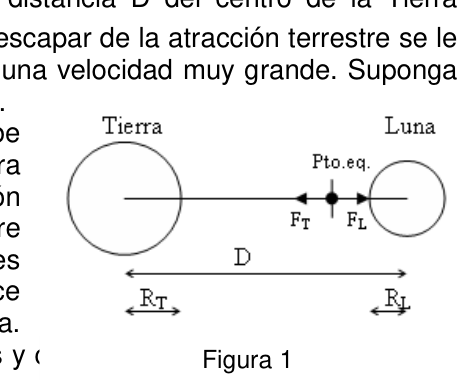
Topic: Gravitation Metodi: Newton’s Law of Gravitation, Kinematic Equations Competenze: Physical Reasoning Objects: Planet, Satellite Fonte: Testo (PDF) — p.3
La Terra e la Luna
PT4. Scuola tecnica ORT Nro. 2 Città di Buenos Aires.
La Terra e la Luna La luna gira intorno alla Terra completando una rivoluzione in 27,4 giorni. La La distanza tra i centri dei pianeti è di 384.000 km. Supponiamo che il Il movimento è circolare a) Calcolare la velocità angolare e la velocità tangenziale della Luna in la sua orbita. A partire da questi calcoli l’accelerazione e la forza centrifugante che soffre la Luna. Chiaramente la Luna sente una forza di attrazione verso la Terra, che la tiene in orbita ed è esattamente pari alla forza centrifuge descritta dal suo movimento circolare. Questa è la mia . La forza viene data dalla Legge di Gravità di Newton: F =
GmM D2 dove G è la costante di gravitazione universale e D la distanza tra i centri dei corpi. M e m sono le masse di entrambi corpi che interagiscono. b) Calcolare la costante di gravitazione universale con le rispettive unità.
Se introduciamo un altro corpo tra la Terra e la Luna, subirà due forze. Attraenti. c) Trova il punto di equilibrio dove un corpo di massa m non sentirebbe Nessuna forza, cioè non cadrebbe né sulla Terra né sulla Luna. La forza la gravità terrestre ha un’energia potenziale associata. Questa è: 𝑉= -GMTm 𝐷 Un corpo a una distanza di M dal centro della Terra avrà quella energia D. Per poter sfuggire all’attrazione terrestre, si deve deve dare a un corpo di massa m una velocità molto grande. Supponiamo che Ora che non si trova la Luna. d) Qual è la velocità minima che gli è dovuta? dare un corpo di massa m per che possa sfuggire all’attrazione. terrestri? Si ritiene che accada. Questo se l’energia potenziale finale è zero e velocità pure. Usate la conservazione dell’energia. Torna alle condizioni normali e rimetti la Luna nella sua posizione. luogo e) Qual è la velocità di fuga in questa circostanza? Aiuto: per E ’ meglio che il corpo sia in grado di raggiungere il punto di equilibrio . Calcolato in c) a velocità zero
Dati: MTIERRA = 5,98. 1024 kg MLUNA= 7,34.1022 kg RadioT = 6370 km RadioL = 1740 km
Figura 1
OAF 2014 - 46
Topic: Gravitation Metodi: Newton’s Law of Gravitation, Kinematic Equations Competenze: Physical Reasoning Objects: Planet, Satellite Fonte: Testo (PDF) — p.3
The Earth and the Moon
PT4. The technical school ORT Nro. 2 City of Buenos Aires.
Earth and the Moon The moon orbits the Earth completing a revolution in 27.4 days. La The distance between the centers of the planets is 384,000 kilometers. Suppose the The motion is circular. (a) Calculate the angular velocity and the tangential velocity of the Moon in its orbit. From these calculate the acceleration and centrifugal force The moon is suffering. Clearly the moon feels a force of attraction . towards the Earth, which is the one that keeps it in orbit and is exactly equal to the centrifugal force described by its circular motion. This one . force is given by Newton’s Law of Gravitation: F =
GmM D2 where G is the universal gravitational constant and D is the distance between the centers of the bodies. M and m are the masses of both bodies that interact. (b) Calculate the universal gravitational constant with their respective units.
If we put another body between the Earth and the Moon, it will suffer two forces. They’re attractive. c) Find the equilibrium point where a mass body m would not feel No force, that is, it would not fall to the Earth or the Moon. The force Earth’s gravitational pull has a potential energy associated with it. This is: 𝑉=
- GMTm 𝐷 A body m at a distance D from the center of the Earth. You’ll have that D energy. To escape the gravity of the Earth , you must be It must give a mass body m a very high velocity. Suppose Now that the moon is not there. (d) What is the minimum speed due to it? Give a body mass m to I can escape the attraction. The Earth? It ‘s considered to be happening . This is if the final potential energy is Zero and speed too. Use it . The energy conservation. Return to normal conditions and put the moon back on its back . Place (e) What is the escape velocity in this circumstance? Aid: for Now the body must be able to reach the equilibrium point. calculated in (c) at zero speed
The data: MTIERRA = 5.98. The Commission has decided to extend the period of validity of the agreement. RadioL = 1740 km
Figure 1
The following is the list of the Member States’ financial statements:
Topic: Gravitation Metodi: Newton’s Law of Gravitation, Kinematic Equations Competenze: Physical Reasoning Objects: Planet, Satellite Fonte: Testo (PDF) — p.3
Pendulo balistico
PT5. Escuela Técnica ORT Nro. 2 Ciudad de Buenos Aires.
Péndulo Balístico La figura 2 muestra un péndulo balístico para medir la rapidez de una bala. La bala cuya masa es m, se dispara contra un bloque de madera de masa M, que cuelga de 2 hilos de masa despreciable, como un péndulo, y tiene un choque totalmente inelástico con él. Después del impacto, el bloque oscila hasta una altura máxima, llamada y.
Figura 2
a) Utilizando conservación de la energía demostrar que la rapidez (V) del conjunto bloque - bala luego del impacto es: 𝑉= 2𝑔𝑦
b) Demostrar que la rapidez de la bala es: 𝑣𝑏= 𝑚+𝑀 𝑚 2𝑔𝑦
Sabiendo que la masa de la bala es de 5 gramos, la masa del bloque de madera es de 2 kg y la altura y que alcanzan es de 3 cm. c) Calcular la rapidez de la bala. d) Suponiendo que en el impacto solamente hay transformación de energía en calor, determinar qué porcentaje de la energía cinética que tenía la bala antes del impacto se transformó en calor. e) Si la longitud de los hilos del péndulo es de 30 cm, calcular la tensión de los mismos en el instante en que el péndulo se encuentra en la posición más alta. f) Mientras el péndulo oscila, calcular la aceleración tangencial y la aceleración centrípeta del bloque en la posición más alta (cuando no tiene rapidez) y cuando pasa por la vertical (cuando su rapidez es máxima).
Datos: g = 9,8 m/s2 - En todo momento despreciar la fricción con el aire.
Topic: Conservation of Momentum, Conservation of Energy Metodi: Conservation of Momentum, Conservation of Energy Competenze: Physical Reasoning Objects: Pendulum, Block, Projectile Fonte: Testo (PDF) — p.3
Pendolo balistico
PT5. Scuola tecnica ORT Nro. 2 Città di Buenos Aires.
Pendale balistico La figura 2 mostra un pendolo balistico per misurare la velocità di una pallottola. La proiettile di massa m, viene sparato su un blocco di legno di massa M, che Appeso a due fili di massa disprezzabile, come un pendolo, e ha un colpo. completamente inelastica con lui. Dopo l’impatto, il blocco oscilla fino a un altezza massima, chiamata y.
Figura 2
a) Utilizzando la conservazione dell’energia dimostrare che la velocità (V) di Blocco di massa - proiettile dopo l’impatto è: V= 2gy
b) Dimostra che la velocità della pallottola è: vb= 𝑚+𝑀 𝑚 2𝑔𝑦
Sapendo che la massa della pallottola è di 5 grammi, la massa del blocco di legno. È di 2 kg e la altezza e che raggiungono è di 3 cm. Calcolare la velocità della pallottola. d) Supponendo che l’impatto sia solo una trasformazione di energia In calore, determinare quale percentuale di energia cinetica ha avuto la La pallottola prima dell’impatto si è trasformata in calore. (e) Se la lunghezza dei fili del pendolo è di 30 cm, calcolare la tensione di le stesse istanze in cui il pendolo si trova in posizione più alto. f) Mentre il pendolo oscilla, calcolare l’accelerazione tangenziale e la velocità di Accelerazione centripede del blocco in posizione più alta (quando non ha velocità) e quando passa verticale (quando la sua velocità è
- il massimo).
Dati: g = 9,8 m/s2 - In ogni momento disprezzo la frizione con l’aria.
Topic: Conservation of Momentum, Conservation of Energy Metodi: Conservation of Momentum, Conservation of Energy Competenze: Physical Reasoning Objects: Pendulum, Block, Projectile Fonte: Testo (PDF) — p.3
The following information shall be provided:
PT5. The technical school ORT Nro. 2 City of Buenos Aires.
Ballistic pendulum Figure 2 shows a ballistic pendulum to measure the velocity of a bullet. La bullet whose mass is m, is fired against a block of wood of mass M, which Hangs from two threads of scornful mass, like a pendulum, and has a shock. totally inelastic with him. After impact, the block oscillates to a maximum height, called y.
Figure 2
(a) Using energy conservation to demonstrate that the speed (V) of the Block set - bullet after impact is: V= 2gy
(b) Prove that the bullet’s velocity is: vb= 𝑚+𝑀 𝑚 2𝑔𝑦
Knowing the bullet’s mass is 5 grams, the mass of the wooden block. It’s 2 kg and the height and they reach 3 cm. (c) Calculate the velocity of the bullet. (d) Assuming that only energy transformation occurs in the impact. In heat, determine what percentage of kinetic energy the The bullet before the impact turned into heat. (e) If the length of the pendulum threads is 30 cm, calculate the voltage of The same as the moment the pendulum is in position It’s higher. (f) As the pendulum oscillates, calculate the tangential acceleration and the The maximum acceleration of the block at the highest position (when not It has speed) and when it passes vertically (when its speed is The maximum
Data: g = 9.8 m/s2 - At all times disregard friction with air.
Topic: Conservation of Momentum, Conservation of Energy Metodi: Conservation of Momentum, Conservation of Energy Competenze: Physical Reasoning Objects: Pendulum, Block, Projectile Fonte: Testo (PDF) — p.3
La lampara de lava
PT6. Escuela Técnica ORT Nro. 2 Ciudad de Buenos Aires.
La Lámpara de Lava Una lámpara de lava es un lindo artefacto decorativo de iluminación donde entran en juego varias leyes físicas. Cuando está en pleno funcionamiento se ven burbujas de lava subiendo y bajando dentro de la lámpara en un hermoso baile. La clave en este dispositivo son los ingredientes que se colocan en el interior de la botella que forma la lámpara. Es necesario que la parafina y el agua que posee en su interior tengan densidades muy cercanas. La botella se calienta por debajo con una lamparita, que además de calor provee la iluminación.
OAF 2014 - 47 Veamos como funciona. La botella es de vidrio y posee 254,25g de parafina y 750g de agua. La base posee un área interior de 25cm2, y las paredes un espesor de 2mm. Está llena en un 95% de su capacidad. Utilice el esquema de la figura para ver la distribución de agua y parafina. a) ¿Cuál es la masa de vidrio de la botella? ¿Cuál es la altura de la columna de agua en su interior? Al calentarse los ingredientes, la densidad de la parafina disminuye, lo que le permite flotar. Se prende a 20ºC. La densidad del agua no cambia apreciablemente en estas temperaturas. b) ¿Cuál es el volumen que debe adquirir la parafina para comenzar a flotar y cuál es su volumen inicial? Para llegar a disminuir su densidad, la parafina se dilata aumentando su volumen. Esto lo hace sólo en estado líquido, teniendo un punto de fusión de 40ºC. c) ¿A qué temperatura consigue el volumen necesario para flotar? El estado final de trabajo de la lámpara es cuando la parafina adquiere una temperatura de 60ºC. Suponemos que la columna de agua posee un gradiente térmico lineal que va de la temperatura de la parafina en el fondo y 40ºC arriba de todo. d) ¿Cuál es la cantidad de calor que tuvo que suministrarse a la botella para llegar a esta situación? Para simplificar suponemos que todo el vidrio alcanza una temperatura constante en el punto medio entre la de la parafina y la temperatura ambiente. Llegado a este punto, la bola de lava (parafina líquida a 60ºC) se desprende del fondo y comienza a subir. Asumimos que no varía la temperatura hasta llegar arriba de todo y que luego de 5 seg vuelve a tener 40ºC y recién en ese momento comienza a bajar también manteniendo esa temperatura. e) ¿Cuánto tiempo tarda en subir y bajar? La potencia suministrada por la lamparita es de 40W y se aprovecha un 80% de la energía consumida. f) ¿Cuánto tarda en llegar la lámpara a pleno funcionamiento?
Datos: 1J = 0,24cal
Lfusión parafina = 34 cal/g
agua = 1 g/cm3
g = 9.82m/s2
cagua = 1Cal/g°C
vidrio = 8 g/cm3
cparafina líq = 0,55 cal/g°C
parafina a 20ºC = 1,017 g/cm3
cparafina sól = 0,52 cal/g°C
parafina líq= 6,2. 10-4 1/ºC
cvidrio = 0,2 cal/g°C
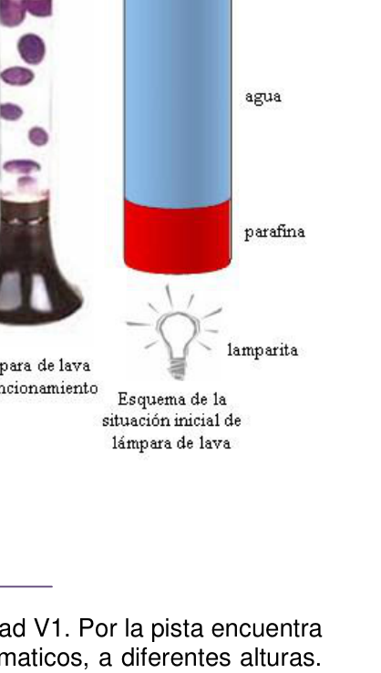
Topic: Fluid Mechanics, Thermodynamics Metodi: Hydrostatic Equilibrium, Physical Modeling Competenze: Physical Reasoning Objects: Bubble, Container Fonte: Testo (PDF) — p.3
Lamma di lava
PT6. Scuola tecnica ORT Nro. 2 Città di Buenos Aires.
La lampada di lava Una lampada di lava è un bel artefatto decorativo di illuminazione dove entrano in gioco diverse leggi fisiche. Quando è in pieno funzionamento si vedete bolle di lava salire e scendere dentro la lampada in un bel Danza. La chiave di questo dispositivo sono gli ingredienti che vengono inseriti nel all’interno della bottiglia che forma la lampada. È necessario che la parafina e l’acqua che possiede all’interno hanno densità molto vicine. La bottiglia si riscalda sotto con una lampada, che oltre al calore fornisce l’illuminazione.
OAF 2014 - 47 Vediamo come funziona. La bottiglia è di vetro e contiene 254,25g di parafina e 750 grammi di acqua. La base ha un’area interna di 25 cm2, e le pareti un spessore di 2 mm. È piena al 95% della sua capacità. Utilizzare lo schema di cui sopra per vedere la distribuzione di acqua e parafina. a) Qual è la massa di vetro della bottiglia? Qual è l’altezza della colonna d’acqua all’interno? Quando gli ingredienti si riscaldano, la densità della parafina diminuisce, il che le dà un effetto di
- E’ un’arma che permette di fluttuare. Si accende a 20°C. La densità dell’acqua non cambia apprezzabile a queste temperature. b) Qual è il volume di parafina da acquistare per iniziare a fluttuare e qual è il volume iniziale? Per diminuire la densità, la parafina si dilata aumentando la densità. volume. Questo lo fa solo in stato liquido, avendo un punto di fusione di 40ºC. c) A che temperatura si ottiene il volume necessario per fluttuare? Lo stato di lavoro finale della lampada è quando la parafina acquista una temperatura di 60°C. Supponiamo che la colonna d’acqua abbia un gradiente. termico lineare che va dalla temperatura della parafina al fondo e 40°C sopra di tutto. d) Qual è la quantità di calore che ha dovuto essere fornito alla bottiglia per arrivare a questa situazione? Per semplificare, supponiamo che tutto il Il vetro raggiunge una temperatura costante al punto medio tra quella della parafina e la temperatura ambiente. A questo punto, la palla di lava (parafina liquida a) 60°C) si sgancia dal fondo e inizia a salire. Supponiamo che non varia la La temperatura è di circa 40°C. E solo a quel punto inizia a scendere, mantenendo anche quella. temperatura. e) Quanto tempo ci vuole per salire e
- Scendiamo? La potenza fornita dalla lamparita è La tecnologia è stata utilizzata per il 40% del consumo di energia. energia consumata. f) Quanto tempo ci vuole per raggiungere la lampada?
- Funzionazione completa?
Dati: 1J = 0,24 cal
Fusione parafina = 34 cal/g
acqua = 1 g/cm3
g = 9.82m/s2
acqua = 1Cal/g°C
Vitro = 8 g/cm3
cparafina liquida = 0,55 cal/g°C
parafina a 20 °C = 1,017 g/cm3
cparafina sol = 0,52 cal/g°C
parafina líq= 6,2. 10-4 1/ºC
Codice di calcio = 0,2 cal/g°C
Topic: Fluid Mechanics, Thermodynamics Metodi: Hydrostatic Equilibrium, Physical Modeling Competenze: Physical Reasoning Objects: Bubble, Container Fonte: Testo (PDF) — p.3
The lamp is equipped with a lamp with a lamp with a lamp with a lamp with a lamp with a lamp with a lamp with a lamp with a lamp with a lamp with a lamp with a lamp with a lamp with a lamp with a lamp with a lamp with a lamp with a lamp with a lamp with a lamp with a lamp with a lamp with a lamp with a lamp with a lamp with a lamp with a lamp with a lamp with a lamp with a lamp with a lamp with a lamp with a lamp with a lamp with a lamp with a lamp with a lamp with a lamp with a lamp with a lamp with a lamp with a lamp with a lamp with a lamp with a lamp with a lamp with a lamp with a lamp with a lamp with a lamp with a lamp with a lamp with a lamp with a lamp with a lamp with a lamp with a lamp with a lamp with a lamp with a lamp with a lamp with a lamp with a lamp with a lamp with a lamp with a lamp with a lamp with a lamp with a lamp with a lamp with a lamp with a lamp with a lamp with a lamp with a lamp with a lamp with a lamp with a lamp with a lamp with a lamp with a lamp and a lamp with a lamp with a lamp with a lamp with a lamp with a lamp with a lamp with a lamp
PT6. The technical school ORT Nro. 2 City of Buenos Aires.
The Lava Lamp A lava lamp is a lovely decorative lighting device where There are several physical laws at play. When fully operational it is You see lava bubbles rising and falling inside the lamp in a beautiful way. dance. The key to this device is the ingredients that are placed in the inside the bottle that forms the lamp. It is necessary to use paraffin and water. It has densities very close to each other. The bottle is warming up. below with a light bulb, which in addition to heat provides lighting.
The following is the list of the Member States’ financial statements: Let’s see how it works. The bottle is glass and contains 254.25g of paraffin and 750g of water. The base has an interior area of 25cm2, and the walls a thickness of 2 mm. It’s full at 95% capacity. Use the diagram in the figure to see the distribution of water and paraffin. (a) What is the glass mass of the bottle? What is the height of the the water column inside? When the ingredients are heated, the paraffin density decreases, which causes the It allows it to float. It’s going to burn to 20 degrees. The density of the water does not change. appreciably at these temperatures. (b) What volume should paraffin acquire to start? float and what is its initial volume? To reduce its density, paraffin dilates by increasing its density. volume of the device. This does it only in liquid state, having a melting point of 40ºC. (c) At what temperature does the volume required to float attain? The final working state of the lamp is when the paraffin acquires a The temperature is 60°C. Suppose the water column has a gradient. Linear thermal ranging from paraffin temperature at the bottom and 40oC upwards of everything. (d) What is the amount of heat that needed to be supplied to the bottle? to get to this point? To simplify, we assume that all the glass reaches a constant temperature at the midpoint between paraffin and the ambient temperature. At this point, the lava ball (liquid paraffin to 60°C) comes off the bottom and starts to rise. We assume that it does not vary temperature until it reaches the top of everything and after 5 seconds it gets back to 40oC And only then does it start to go down, also keeping that. The temperature. (e) How long does it take to climb and
- Get down there? The power supplied by the lamp is The energy efficiency of the system is 40W and 80% of the energy is used. energy consumed. (f) How long does it take to get the lamp to Full operation?
Data: 1J = 0.24cal
The following table shows the results of the studies:
water = 1 g/cm3
g = 9.82m/s2
The following is the list of the following:
glass = 8 g/cm3
The amount of the product shall be calculated in accordance with the following formula:
paraffin at 20oC = 1,017 g/cm3
The following table shows the results of the studies:
paraffin liq = 6.2. 10-4 1/ºC
The following table shows the results of the calculation of the weighted average weight of the product:
Topic: Fluid Mechanics, Thermodynamics Metodi: Hydrostatic Equilibrium, Physical Modeling Competenze: Physical Reasoning Objects: Bubble, Container Fonte: Testo (PDF) — p.3
Bloque con zonas rugosas
PT7. Colegio Humberto Morán Eduardo Castex, La Pampa.
Un bloque cae sin fricción desde h1 con una velocidad V1. Por la pista encuentra dos zonas rugosas con diferentes coeficientes cinematicos, a diferentes alturas.
OAF 2014 - 48
Averiguar en donde se detiene el bloque en caso de hacerlo. Datos: L1= 1.2 m
h1= 0.72 m V1= 1 m/seg.
h2= 22 cm.
L2= 1.5 m
Coef. μ1 = 0.2 Coef. μ2 = 0.31
Tomar gravedad g = 10 m/seg2
Topic: Conservation of Energy, Newtonian Mechanics Metodi: Energy Conservation Method, Free-Body Diagram Competenze: Physical Reasoning Objects: Block Fonte: Testo (PDF) — p.3
Blocco con zone rugose
PT7. Collegium Humberto Moran Eduardo Castex, La Pampa.
Un blocco cade senza attrito da h1 a velocità V1. Per la pista trova due zone rugose con coefficienti cinematografici diversi, a altezze diverse.
OAF 2014 - 48 Scoprire dove si ferma il blocco nel caso lo facessero. Dati: L1= 1,2 m H1 = 0,72 m V1 = 1 m/sec. h2= 22 cm. L2= 1.5 m
- Coef. μ1 = 0,2 Coef. μ2 = 0.31
Prendere gravità g = 10 m/sec2
Topic: Conservation of Energy, Newtonian Mechanics Metodi: Energy Conservation Method, Free-Body Diagram Competenze: Physical Reasoning Objects: Block Fonte: Testo (PDF) — p.3
Block with rough areas
PT7. Humberto Moran College Eduardo Castex, the Pampa.
A block falls without friction from h1 at a speed of V1. By the trail you find two rough areas with different kinematic coefficients, at different heights.
The following is the list of the Member States’ financial statements:
Find out where the block stops if you do. Data: L1 = 1.2 m
The value of the input data shall be the sum of the values of the input data.
h2= 22 cm.
L2= 1.5 m
Coef, you know what? μ1 = 0.2 Coef. μ2 = 0.31
Take gravity g = 10 m/s2
Topic: Conservation of Energy, Newtonian Mechanics Metodi: Energy Conservation Method, Free-Body Diagram Competenze: Physical Reasoning Objects: Block Fonte: Testo (PDF) — p.3
Calentamiento de plomo
PT8. Colegio Humberto Morán Eduardo Castex, La Pampa.
A 450 gramos de plomo, mediante un calentador eléctrico, se le entregan 10 watt constantes durante un tiempo de 0.75 horas. Su temperatura inicial es de 2 Cº. Determinar: a) La temperatura final. b) El estado del plomo
Topic: Thermodynamics Metodi: First Law of Thermodynamics Competenze: Physical Reasoning Objects: Calorimeter Fonte: Testo (PDF) — p.3
Caldamento a piombo
PT8. Collegium Humberto Moran Eduardo Castex, La Pampa.
A 450 grammi di piombo, con un riscaldatore elettrico, vengono forniti 10 watt. di una durata di 0,75 ore. La sua temperatura iniziale è di 2 °C. Determinare: a) La temperatura finale. b) Lo stato del piombo
Topic: Thermodynamics Metodi: First Law of Thermodynamics Competenze: Physical Reasoning Objects: Calorimeter Fonte: Testo (PDF) — p.3
The heat output of the product shall be the same as the heat output of the product.
PT8. Humberto Moran College Eduardo Castex, the Pampa.
450 grams of lead, through an electric heater, is delivered to 10 watts. The following conditions shall apply: Its initial temperature is 2 degrees. Determine: (a) The final temperature. (b) The status of lead
Topic: Thermodynamics Metodi: First Law of Thermodynamics Competenze: Physical Reasoning Objects: Calorimeter Fonte: Testo (PDF) — p.3
Tanque cilindrico con cano
PT9. Colegio Humberto Morán Eduardo Castex, La Pampa.
Un tanque esta apoyado sobre su base a 28m de altura, es cilíndrico de r=2,3 m
y H=2m. Tiene 2/3 de agua en total, y un caño de bajada de 2 pulgadas (una
pulgada es 2.54 cm).Estando inicialmente la llave cerrada a nivel del piso. Se
debe determinar:
a) que presión hidrostática tiene a nivel del suelo.
b) Que fuerza esta resistiendo la llave.
c) Si la misma se abre totalmente con que velocidad sale el agua y que
caudal.
Topic: Fluid Mechanics Metodi: Bernoulli’s Equation, Hydrostatic Equilibrium, Continuity Equation Competenze: Physical Reasoning Objects: Container, Tube Fonte: Testo (PDF) — p.3
Cilindrico con tubo
PT9. Collegium Humberto Moran Eduardo Castex, La Pampa.
Un serbatoio è appoggiato sulla sua base a 28 m di altezza, è cilindrico di r=2,3 m y H=2m. Ha 2/3 di acqua totale, e un tubo di scalo di 2 pollici (una ) La chiave è inizialmente chiusa a livello di pavimento. Se deve determinare: a) la pressione idrostatica che ha a livello del suolo. b) Che forza sta resistendo alla chiave. c) Se si apre completamente, a che velocità si esce l’acqua e che
- Flusso.
Topic: Fluid Mechanics Metodi: Bernoulli’s Equation, Hydrostatic Equilibrium, Continuity Equation Competenze: Physical Reasoning Objects: Container, Tube Fonte: Testo (PDF) — p.3
The following table shows the results of the calculations:
PT9. Humberto Moran College Eduardo Castex, the Pampa.
A tank is supported on its base at 28m high, it is cylindrical with a length of r=2.3m. y H=2m. It has 2/3 of the water in total, and a 2 inch down pipe (one The key is initially closed at floor level. Se It shall determine: (a) the hydrostatic pressure at ground level. (b) What force is resisting the key. (c) If the water is fully opened at what speed the water is coming out and that flow.
Topic: Fluid Mechanics Metodi: Bernoulli’s Equation, Hydrostatic Equilibrium, Continuity Equation Competenze: Physical Reasoning Objects: Container, Tube Fonte: Testo (PDF) — p.3
Un accidente en mountain bike
PT10. Colegio Nacional Dr. Arturo Illia
Instituto Albert Einstein
Colegio Mar del Plata de las Colinas Mar del Plata, Buenos Aires.
Un accidente en mountain bike Un joven de 75 kg de masa circula a 18 km/h, en su bicicleta tipo mountain bike de 10 kg. El diámetro de las ruedas de la bicicleta es de 66 cm y consta de un piñon fijo de radio 3,5 cm y un plato de radio 7 cm (figura a). Acelera uniformemente a 0,4 m/s2 durante 10 s y luego conserva su rapidez constante ingresando a una curva de radio igual a 20 m, sobre un asfalto con un coeficiente de rozamiento de 0,43. Al salir de la curva mantiene su rapidez y a las pocas cuadras choca contra un auto que lo encierra, impactando a 53° contra uno de los guardabarros, y sale despedido luego del choque con una velocidad de 12 m/s formando un ángulo respecto del coche de 37° (figura b).
OAF 2014 - 49
a) Bicicleta mountain y algunas de sus partes
b) Choque del ciclista contra el auto
Considere para resolver las siguientes cuestiones al sistema joven-bicicleta
como una partícula.
a) ¿Con qué velocidad ingresa a la curva?
b) ¿Cuántas vueltas por segundo realiza el plato a esta velocidad?
c) ¿Cuál es el valor de la fuerza de rozamiento en la curva? ¿Cuál es su
dirección y sentido?
d) ¿Qué ángulo forma el ciclista con la vertical mientras se desplaza por la
curva?
e) ¿Cuál es la máxima velocidad que podría alcanzar la bicicleta en esa
curva?
f) Determine la fuerza media que actúo en el choque sobre la bicicleta si el
impacto duro 0,1 segundo.
Topic: Newtonian Mechanics, Rotational Dynamics Metodi: Kinematic Equations, Free-Body Diagram, Torque & Angular Momentum Analysis Competenze: Physical Reasoning Objects: Wheel, Gear Fonte: Testo (PDF) — p.3
Un incidente in mountain bike
PT10. Il Dr. Arturo Illia
L’Istituto Albert Einstein
La scuola Mar del Plata de las Colinas Mar del Plata, Buenos Aires.
Un incidente in mountain bike Un giovane di 75 kg di massa si sposta a 18 km/h, sulla sua bicicletta tipo mountain bike. de 10 kg. Il diametro delle ruote della bicicletta è di 66 cm e comprende un Piano fisso di 3,5 cm e piatto di 7 cm (figura a). Accelera! uniformemente a 0,4 m/s2 per 10 s e poi conserva la sua velocità costante Entrando in una curva di radio pari a 20 m, su un asfalto con un coefficiente di rottura di 0,43. Uscendo dalla curva mantiene la sua velocità e le sue poche. le macchine si schiantano contro una macchina che lo chiude, colpendo 53° contro una macchina di i guardie delle cinture, e usce licenziato dopo l’impatto a una velocità di 12 m/s formando un angolo rispetto alla macchina di 37° (figura b).
OAF 2014 - 49
a) Bicicletta montana e alcuni suoi pezzi
b) Colpo del ciclista contro l’auto
Considerare per risolvere i seguenti problemi il sistema giovanile-bicicletta Come una particella. a) A che velocità si entra nella curva? b) Quante volte al secondo fa il piatto a questa velocità? c) Qual è il valore della forza di ruggine della curva? Qual è il suo? direzione e senso? d) Quale angolo il ciclista forma con la verticale mentre si sposta lungo la strada?
- Corvo? e) Qual è la velocità massima che la bicicletta potrebbe raggiungere in quella
- Corvo? f) Determina la forza media che agisce nel colpiscere la bicicletta se il impatto duro 0,1 secondo.
Topic: Newtonian Mechanics, Rotational Dynamics Metodi: Kinematic Equations, Free-Body Diagram, Torque & Angular Momentum Analysis Competenze: Physical Reasoning Objects: Wheel, Gear Fonte: Testo (PDF) — p.3
A mountain bike accident
PT10. National College Dr. Arturo Illia
The Albert Einstein Institute
College Mar del Plata of the Hills The city of Mar del Plata, Buenos Aires.
A mountain bike accident . A young man weighing 75 kg is riding at 18 km/h on his mountain bike. de 10 kg. The diameter of the bicycle wheels is 66 cm and consists of a a fixed pinon with a radius of 3,5 cm and a plate with a radius of 7 cm (Figure a). It ‘s accelerating . uniformly at 0.4 m/s2 for 10 s and then retains its steady speed entering a radius curve of 20 m on an asphalt with a coefficient a friction of 0,43. When you get out of the corner you keep your speed and the few . The vehicle is locked in a car, impacting 53° against one of The seatbelt guards, and he gets fired after the crash at a speed of 12 m/s forming an angle with respect to the 37° car (Figure b).
The following is the list of the countries of the European Union:
(a) Mountain bike and parts thereof
(b) Clash of the rider with the car
Consider the following issues to be addressed in the youth-bicycle system like a particle. (a) How fast does it enter the curve? (b) How many turns per second does the plate make at this speed? (c) What is the value of the friction force on the curve? What’s your name? direction and direction? (d) What angle does the rider form with the vertical as he or she moves along the road? curve? (e) What is the maximum speed that the bicycle could reach on that curve? (f) Determine the mean force acting on the impact on the bicycle if the Hard impact 0.1 second.
Topic: Newtonian Mechanics, Rotational Dynamics Metodi: Kinematic Equations, Free-Body Diagram, Torque & Angular Momentum Analysis Competenze: Physical Reasoning Objects: Wheel, Gear Fonte: Testo (PDF) — p.3
Calculando el tiempo de calentamiento
PT11. Colegio Nacional Dr. Arturo Illia
Instituto Albert Einstein
Colegio Mar del Plata de las Colinas
Mar del Plata, Buenos Aires.
Calculando el tiempo de calentamiento
Usted decidió calentar agua para cocinar. Llenó un recipiente con 20 litros de
agua a 20 ºC y sumergió en ella un calentador eléctrico conectado a 220 V.
Como deseaba calentar el agua hasta una temperatura de 85ºC exactamente
calculó el tiempo necesario para alcanzarla, para lo cual midió la resistencia del
calentador sumergido en el agua y obtuvo R=28Ω.
a) Calcule la corriente que circula por el calentador, cuando se lo conecta
a 220 V.
b) Sabiendo que se necesita 1 caloría para elevar la temperatura de 1 g de
agua 1ºC, calcule cuánta energía debe suministrar el calefactor al agua.
OAF 2014 - 50
c) Sabiendo que el recipiente utilizado pierde el 20 % de la energía que se
le entrega, ¿ Cuánto tiempo dejó el calentador conectado a la línea de
220 V para que la temperatura del agua llegue a los 85ºC deseados? (El
calor específico del agua es c=1cal/gºC)
d) Si el precio del kWh es de 60 centavos, cuánto cuesta calentar el agua
según el cálculo de c)
e) ¿Cómo sería su respuesta para el inciso anterior si el calefactor se
conecta a 110 V?
f) Grande fue la sorpresa cuando al cabo del tiempo calculado comprobó
que la temperatura del agua era menor que 85ºC. Pensó que había
cometido algún error en la determinación de la resistencia del
calentador. Midió entonces nuevamente R con el calentador sumergido
en el agua caliente y comprobó que ésta había aumentado. Para
mejorar sus cálculos midió nuevamente la resistencia del calentador a
tres temperaturas diferentes y en base a esas mediciones supuso que
entre 20ºC y 40ºC, R=28Ω; entre 40ºC y 60ºC, R=34Ω y entre 60ºC y
85ºC, R=50Ω, y recalculó el tiempo necesario que debía dejar
sumergido el calentador para elevar el agua de 20ºC a 80ºC. Calcule el
nuevo tiempo .
DATOS: La densidad del agua se puede suponer constante con la temperatura e igual a 1 g/cm3; 1 cal = 4.2 J,
Topic: Thermodynamics, Circuits Metodi: First Law of Thermodynamics, Kirchhoff’s Laws Competenze: Physical Reasoning Objects: Resistor, Calorimeter Fonte: Testo (PDF) — p.3
Calcolando il tempo di riscaldamento
PT11. Il Dr. Arturo Illia
L’Istituto Albert Einstein
La scuola Mar del Plata de las Colinas
Mar del Plata, Buenos Aires.
Calcolatore del tempo di riscaldamento Hai deciso di riscaldare l’acqua per cucinare. Ha riempito un contenitore con 20 litri di acqua a 20 oC e ha immerso in essa un riscaldatore elettrico connesso a 220 V. Come voleva riscaldare l’acqua fino a una temperatura di 85°C esattamente Calcola il tempo necessario per raggiungerla, per cui misura la resistenza del il riscaldatore immerso nell’acqua e ottenuto R=28Ω. a) Calcolare la corrente che circola attraverso il riscaldatore quando viene collegato a 220 V. b) Sapendo che occorre 1 caloria per aumentare la temperatura di 1 g di calore. 1 °C di acqua, calcola quanto energia il riscaldatore deve fornire all’acqua.
OAF 2014 - 50 (c) Sapendo che il recipiente utilizzato perde il 20% dell’energia che viene utilizzato
- Quanto tempo ha lasciato il riscaldatore collegato alla linea di linea? 220 V per far raggiungere la temperatura dell’acqua alle 85°C desiderate? (El calore specifico dell’acqua è c=1 cal/goC) d) Se il prezzo del kWh è di 60 centesimi, quanto costa riscaldare l’acqua secondo il calcolo di c) e) Come sarebbe la sua risposta al punto precedente se il riscaldatore fosse stato
- Si può collegare a 110 V? F) Grande fu la sorpresa quando dopo il tempo calcolato si verificò che la temperatura dell’acqua era inferiore a 85°C. Pensava che ci fosse… Qualche errore nel determinare la resistenza del il riscaldatore. Poi ha misurato di nuovo R con il riscaldatore immerso e l’acqua calda si era allontanata. Per migliorando i suoi calcoli ha di nuovo misurato la resistenza del riscaldatore a tre temperature diverse e basandosi su queste misurazioni ha ipotizzato che tra 20oC e 40oC, R=28Ω; tra 40oC e 60oC, R=34Ω e tra 60oC e 85oC, R=50Ω, e ha ricalcolato il tempo necessario per lasciare immerso il riscaldatore per alzare l’acqua da 20oC a 80oC. Calcola il nuovo tempo .
Dati: La densità dell’acqua può essere presumita costante con la temperatura e pari a 1 g/cm3; 1 cal = 4,2 J,
Topic: Thermodynamics, Circuits Metodi: First Law of Thermodynamics, Kirchhoff’s Laws Competenze: Physical Reasoning Objects: Resistor, Calorimeter Fonte: Testo (PDF) — p.3
Calculating the heating time
PT11. National College Dr. Arturo Illia
The Albert Einstein Institute
College Mar del Plata of the Hills
The city of Mar del Plata, Buenos Aires.
Calculating the heating time You decided to heat water for cooking. He filled a container with 20 liters of water at 20 oC and immersed in it an electric heater connected to 220 V. As I wanted to heat the water to exactly 85 degrees Celsius. He calculated the time it took to reach it, for which he measured the resistance of the Heater immersed in water and obtained R=28Ω. (a) Calculate the current flowing through the heater when it is connected. a 220 V. (b) Knowing that it takes 1 calorie to raise the temperature by 1 g of water 1°C, calculate how much energy the heater should supply to the water.
The following is the list of the Member States’ financial statements: (c) Knowing that the container used loses 20% of the energy it is used Deliver, how long did he leave the heater connected to the line? 220 V to get the water temperature to the desired 85°C? (El The specific heat of the water is c=1cal/goC) (d) If the price of kWh is 60 cents, how much does it cost to heat the water according to the calculation of c) (e) What would be your response to the previous paragraph if the heater were
- You’re going to plug it in at 110 V? f) Great was the surprise when after calculated time he checked The water temperature was below 85 degrees Celsius. He thought there was a I made some mistakes in determining the resistance of the Heater. Then he measured R again with the submerged heater. He went into the hot water and saw that it had increased. For Improve your calculations again measured the heater resistance to Three different temperatures and based on those measurements he assumed that between 20oC and 40oC, R=28Ω; between 40oC and 60oC, R=34Ω and between 60oC and 85oC, R=50Ω, and recalculated the time required to leave. The heater is immersed to raise the water from 20°C to 80°C. Calculate the New time .
The following is the list of the countries of the European Union: The density of water can be assumed to be constant with temperature and equal to 1 The following table shows the results of the calculation:
Topic: Thermodynamics, Circuits Metodi: First Law of Thermodynamics, Kirchhoff’s Laws Competenze: Physical Reasoning Objects: Resistor, Calorimeter Fonte: Testo (PDF) — p.3
Un espejo frente a una lente
PT12. Colegio Nacional Dr. Arturo Illia
Instituto Albert Einstein
Colegio Mar del Plata de las Colinas
Mar del Plata, Buenos Aires.
Un espejo frente a una lente
Un objeto de 30 mm de altura se encuentra situado 200 mm delante de una lente
delgada positiva, L1, cuya distancia focal es de 100 mm. Detrás de la lente está
situado un espejo plano, E.
Determinar:
a) La posición de la imagen final.
b) El carácter de la imagen final.
c) El tamaño de la imagen final.
Para los siguientes casos:
i) El espejo está inclinado 45º
respecto del eje óptico según se
muestra en la figura, separado
de la lente 100 mm
ii) El espejo está inclinado 45º
respecto del eje óptico según se
muestra en la figura, separado
de la lente 200 mm
iii) El espejo está separado de la
lente 150 mm y se ubica
paralelo a la lente como se
muestra.
OAF 2014 - 51
Topic: Geometric Optics Metodi: Thin Lens & Mirror Equation, Ray Tracing Competenze: Physical Reasoning Objects: Lens, Mirror Fonte: Testo (PDF) — p.3
Un specchio davanti a una lente
PT12. Il Dr. Arturo Illia
L’Istituto Albert Einstein
La scuola Mar del Plata de las Colinas
Mar del Plata, Buenos Aires.
Un specchio davanti a una lente Un oggetto di 30 mm di altezza si trova a 200 mm di fronte a una lente di spessore positivo, L1, la cui distanza focale è di 100 mm. - E ’ dietro la lente . situato in uno specchio piatto, E. Determinare: a) La posizione dell’immagine finale. b) Il carattere dell’immagine finale. c) La dimensione dell’immagine finale. Per i seguenti casi: i) Lo specchio è inclinato a 45° con riferimento all’asse ottico in base alla se mostra nella figura, separata di 100 mm di lente (ii) Lo specchio è inclinato a 45° con riferimento all’asse ottico in base alla se mostra nella figura, separata di 200 mm (iii) Lo specchio è separato dalla L’obiettivo è 150 mm e si trova parallelo alla lente come si mostra.
OAF 2014 - 51
Topic: Geometric Optics Metodi: Thin Lens & Mirror Equation, Ray Tracing Competenze: Physical Reasoning Objects: Lens, Mirror Fonte: Testo (PDF) — p.3
A mirror in front of a lens
PT12. National College Dr. Arturo Illia
The Albert Einstein Institute
College Mar del Plata of the Hills
The city of Mar del Plata, Buenos Aires.
A mirror in front of a lens. An object 30 mm high is located 200 mm in front of a lens positive slender, L1, the focal length of which is 100 mm. Behind the lens is it . Located in a flat mirror, E. Determine: (a) The position of the final image. (b) The character of the final image. (c) The size of the final image. For the following cases: (i) The mirror is tilted 45° with respect to the optical axis as appropriate. The sample in the figure is separated of the 100 mm lens (ii) The mirror is tilted 45° with respect to the optical axis as appropriate. The sample in the figure is separated of the lens 200 mm (iii) The mirror is separated from the mirror. 150 mm lens and is located parallel to the lens as it is
- It’s a sample.
The following is the list of the Member States’ financial statements:
Topic: Geometric Optics Metodi: Thin Lens & Mirror Equation, Ray Tracing Competenze: Physical Reasoning Objects: Lens, Mirror Fonte: Testo (PDF) — p.3
Gravedad en la superficie de la Luna
PT13. Colegio Santo Tomás Santa Rosa, La Pampa.
La aceleración de la gravedad en la superficie de la luna es = 1.62mts./seg2 si el radio de la luna es = 1738km. Determine la aceleración debida en la gravedad de la luna en un punto ubicado a 1738km. arriba de la superficie.
Topic: Gravitation Metodi: Newton’s Law of Gravitation Competenze: Physical Reasoning Objects: Planet Fonte: Testo (PDF) — p.3
Gravità sulla superficie della Luna
PT13. Scuola Santo Tommaso Santa Rosa, La Pampa.
L’accelerazione della gravità sulla superficie della luna è = 1.62mts./seg2 se il Il raggio lunare è = 1738 km. Determina l’ accelerazione dovuta alla gravità La luna a un punto a 1738 km. sopra la superficie.
Topic: Gravitation Metodi: Newton’s Law of Gravitation Competenze: Physical Reasoning Objects: Planet Fonte: Testo (PDF) — p.3
Gravity on the surface of the Moon
PT13. St. Thomas College Santa Rosa, the Pampa.
The acceleration of gravity on the surface of the moon is = 1.62mts./seg2 if the The radius of the moon is = 1738km. Determine the due acceleration in gravity From the moon at a point 1738km away. above the surface.
Topic: Gravitation Metodi: Newton’s Law of Gravitation Competenze: Physical Reasoning Objects: Planet Fonte: Testo (PDF) — p.3
Cuadrangular (tiro parabolico)
PT14. Colegio Santo Tomás Santa Rosa, La Pampa.
Se batea un cuadrangular y la pelota recibe el golpe a una altura de 1 m
respecto al suelo de tal manera que la pelota de béisball apenas pasa un muro
de 21m de altura, situado a 130m de la base del bateador, si la pelota es
golpeada con un ángulo de 35º encuentra
a) la velocidad inicial de la pelota.
b) el tiempo que le toma a la pelota alcanzar el muro.
Topic: Newtonian Mechanics Metodi: Kinematic Equations, Vector Decomposition Competenze: Physical Reasoning Objects: Projectile, Ball Fonte: Testo (PDF) — p.3
**Quadratura (tiratura parabolica) **
PT14. Scuola Santo Tommaso Santa Rosa, La Pampa.
Si batte un quadrangolo e la palla riceve il colpo ad un’altezza di 1 m. rispetto al pavimento in modo tale che la palla di baseball appena passa un muro di 21 m di altezza, situato a 130 m dalla base del battitore, se la palla è Colpito da un angolo di 35° trova a) la velocità iniziale della palla. b) il tempo necessario per raggiungere il muro.
Topic: Newtonian Mechanics Metodi: Kinematic Equations, Vector Decomposition Competenze: Physical Reasoning Objects: Projectile, Ball Fonte: Testo (PDF) — p.3
The following is the list of the types of vehicles used:
PT14. St. Thomas College Santa Rosa, the Pampa.
A square is hit and the ball is hit at a height of 1 m. The ball barely passes a wall. 21m high, located 130m from the batsman’s base, if the ball is Hit at a 35° angle finds (a) the initial speed of the ball. (b) the time it takes the ball to reach the wall.
Topic: Newtonian Mechanics Metodi: Kinematic Equations, Vector Decomposition Competenze: Physical Reasoning Objects: Projectile, Ball Fonte: Testo (PDF) — p.3
Bloque en plano inclinado con rozamiento
PT15. Colegio Santo Tomás Santa Rosa, La Pampa.
Se lanza hacia arriba sobre un plano inclinado 30° un bloque de 5 kg con una velocidad inicial de 12 m/s. Transcurridos 2 segundos, el bloque comienza a deslizar hacia abajo hasta el punto de partida. Calcular: a) el coeficiente de rozamiento entre el bloque y el plano inclinado. b) la velocidad del bloque cuando vuelve a la posición inicial.
Topic: Newtonian Mechanics Metodi: Free-Body Diagram, Kinematic Equations Competenze: Physical Reasoning Objects: Block, Inclined Plane Fonte: Testo (PDF) — p.3
Blocco a piatto inclinato con rasatura
PT15. Scuola Santo Tommaso Santa Rosa, La Pampa.
Si lancia verso l’alto su un piano inclinato 30° un blocco di 5 kg con una velocità iniziale di 12 m/s. Dopo 2 secondi, il blocco inizia a scivolare verso il basso fino al punto di partenza. Calcolare: a) il coefficiente di rottura tra il blocco e il piano inclinato. b) la velocità del blocco quando ritorna alla posizione iniziale.
Topic: Newtonian Mechanics Metodi: Free-Body Diagram, Kinematic Equations Competenze: Physical Reasoning Objects: Block, Inclined Plane Fonte: Testo (PDF) — p.3
Included flat block with friction
PT15. St. Thomas College Santa Rosa, the Pampa.
A 5 kg block with a The initial speed of 12 m/s. After 2 seconds, the block starts to slide down to the starting point. Calculation: (a) the friction coefficient between the block and the sloping plane. (b) the speed of the block when it returns to the starting position.
Topic: Newtonian Mechanics Metodi: Free-Body Diagram, Kinematic Equations Competenze: Physical Reasoning Objects: Block, Inclined Plane Fonte: Testo (PDF) — p.3
Momento angular en tiro oblicuo
PT16. Colegio Santo Tomás Santa Rosa, La Pampa.
Un cuerpo de 10 kg de masa, lanzado desde el suelo formando un ángulo de 30º con la horizontal, alcanza 138’6 m. Hallar: a) El momento angular en el punto más alto de la trayectoria, respecto al punto de lanzamiento b) La energía mecánica del cuerpo a los 2 s del lanzamiento (g=10 m/s).
Topic: Newtonian Mechanics, Conservation of Energy Metodi: Kinematic Equations, Torque & Angular Momentum Analysis Competenze: Physical Reasoning Objects: Projectile Fonte: Testo (PDF) — p.3
Momento angolare in tiro obliquo
PT16. Scuola Santo Tommaso Santa Rosa, La Pampa.
Un corpo di 10 kg di massa, lanciato dal suolo formando un angolo di 30° con la linea orizzontale, raggiunge 1386 m. Trovare: a) Il momento angolare al punto più alto della tracciata, rispetto al punto di lancio b) L’energia meccanica del corpo a 2 secondi dal lancio (g=10 m/s).
Topic: Newtonian Mechanics, Conservation of Energy Metodi: Kinematic Equations, Torque & Angular Momentum Analysis Competenze: Physical Reasoning Objects: Projectile Fonte: Testo (PDF) — p.3
The following shall be added to the list of the following:
PT16. St. Thomas College Santa Rosa, the Pampa.
A body of 10 kg mass, thrown from the ground at a 30° angle. with the horizontal, reaches 1386 m. Find out: (a) The angular moment at the highest point of the trajectory, with respect to the launch point (b) Mechanical energy of the body at 2 s of launch (g=10 m/s).
Topic: Newtonian Mechanics, Conservation of Energy Metodi: Kinematic Equations, Torque & Angular Momentum Analysis Competenze: Physical Reasoning Objects: Projectile Fonte: Testo (PDF) — p.3
Bomberos y la manguera
PT17. Colegio Santo Tomás Santa Rosa, La Pampa.
En un incendio en la Ciudad de Santa Rosa La Pampa, el Cuerpo de Bomberos necesita hacer llegar agua a través de una ventana que se encuentra a una altura de 40. La limitante es que el carro de bomberos sólo cuenta con 30 m de manguera. Se sabe que el agua sale a una velocidad máxima de 7.0 m/s en la boca de la manguera. El camión sólo puede acercarse a 8 m de distancia de la base del edificio. ¿Qué tendrán que hacer los bomberos para alcanzar su objetivo?
OAF 2014 - 52
Topic: Fluid Mechanics, Newtonian Mechanics Metodi: Kinematic Equations, Bernoulli’s Equation Competenze: Physical Reasoning Objects: Tube, Projectile Fonte: Testo (PDF) — p.3
Fuerza e tubo
PT17. Scuola Santo Tommaso Santa Rosa, La Pampa.
In un incendio nella città di Santa Rosa La Pampa, il Corpo dei Pompieri ha bisogno di far arrivare l’acqua attraverso una finestra che si trova a una altezza di 40. Il limite è che il carro dei pompieri ha solo 30 metri di distanza. Manubra. L’acqua è nota per uscire a una velocità massima di 7.0 m/s in la bocca del tubo. Il camion può avvicinarsi solo a 8 metri dalla base del palazzo. Cosa dovranno fare i pompieri per raggiungerlo? obiettivo?
OAF 2014 - 52
Topic: Fluid Mechanics, Newtonian Mechanics Metodi: Kinematic Equations, Bernoulli’s Equation Competenze: Physical Reasoning Objects: Tube, Projectile Fonte: Testo (PDF) — p.3
Fire and hose
PT17. St. Thomas College Santa Rosa, the Pampa.
In a fire in the city of Santa Rosa La Pampa, the Fire Department You need to get water through a window that’s at a Height of 40. The limitation is that the fire truck only has 30 meters of The hose. Water is known to flow at a maximum speed of 7.0 m/s in the the mouth of the hose. The truck can only approach 8 m from the base of the building. What will the firefighters have to do to reach him? The target?
The following is the list of the Member States’ financial statements:
Topic: Fluid Mechanics, Newtonian Mechanics Metodi: Kinematic Equations, Bernoulli’s Equation Competenze: Physical Reasoning Objects: Tube, Projectile Fonte: Testo (PDF) — p.3
Carro en lazo vertical
PT18. Colegio Santo Tomás Santa Rosa, La Pampa.
Un carro de 1 tm avanza horizontalmente y sin rozamiento sobre un carril con
una velocidad de 10 ms-1, según se muestra en la figura (posición A). A
continuación entra en un lazo vertical de 4 m de radio. Calcular:
a) La fuerza que ejerce el carril sobre el carro al pasar éste por el punto B;
b) ¿Lleva el carro suficiente velocidad en A para alcanzar el punto C más
alto del lazo?
DATO: g = 10 ms-2
A
B
C
Topic: Newtonian Mechanics, Conservation of Energy Metodi: Conservation of Energy, Free-Body Diagram Competenze: Physical Reasoning Objects: Cart Fonte: Testo (PDF) — p.3
Carola a lacci verticali
PT18. Scuola Santo Tommaso Santa Rosa, La Pampa.
Un carro da 1 Tm si muove orizzontalmente e senza rottura su una pista con una velocità di 10 ms-1, come mostrato nella figura (punto A). A Poi entra in un lacciamento verticale di 4 m di raggio. Calcolare: a) la forza esercitata dal binario sul carro quando il carro passa per il punto B; b) Il veicolo si spinge abbastanza velocemente in A per raggiungere il punto C più alto del cordone? DATO: g = 10 ms-2 A B C
Topic: Newtonian Mechanics, Conservation of Energy Metodi: Conservation of Energy, Free-Body Diagram Competenze: Physical Reasoning Objects: Cart Fonte: Testo (PDF) — p.3
The vehicle shall be equipped with a single-cylinder engine.
PT18. St. Thomas College Santa Rosa, the Pampa.
A 1 tm carriage moves horizontally and without a break on a track with a speed of 10 ms-1, as shown in Figure (position A). A Then it enters a vertical loop of 4 m radius. Calculation: (a) The force exerted by the lane on the wagon when it passes through point B; (b) Does the carriage travel at sufficient speed on A to reach point C plus high of the loop? Date: g = 10 ms-2 A B C
Topic: Newtonian Mechanics, Conservation of Energy Metodi: Conservation of Energy, Free-Body Diagram Competenze: Physical Reasoning Objects: Cart Fonte: Testo (PDF) — p.3
Sistema con resortes y rozamiento
PT19. Colegio Champagnat Ciudad de Buenos Aires.
Se tiene un sistema como el de la figura. El resorte en el punto A esta
originalmente comprimido (Δx = 0,5 m), tiene una constante elástica de 8000
N/m. Al disparar el resorte la caja se desplaza 10 metros sobre una superficie
con un μd = 0,2 (desde el punto A al B), para luego subir por el plano con μd = 0,2
(desde B a C) y desplazarse 5 metros sobre otra superficie horizontal con
μd = 0,2 (desde C a D) comprimiendo un resorte (Δx = 0,2 m) con una constante
elástica de 4000 N/m . Hallar:
a) La masa del bloque H
b) La velocidad del bloque en el punto A
c) La velocidad del bloque en el punto B
d) La velocidad del bloque en el punto C
e) La velocidad del bloque en el punto D
f) La velocidad con que el bloque llega de regreso al punto A o en su
defecto la posición donde encuentra el equilibrio
C D
5 m
1 m
HA B 30 º 10 m
Topic: Conservation of Energy, Newtonian Mechanics Metodi: Energy Conservation Method, Hooke’s Law, Free-Body Diagram Competenze: Physical Reasoning Objects: Spring, Block, Inclined Plane Fonte: Testo (PDF) — p.3
**Sistema con spruzzatura e macchia **
PT19. La Champagnat College Città di Buenos Aires.
Si ha un sistema come quello della figura. La primavera al punto A è questa originariamente compresso (Δx = 0,5 m), ha una costante elastica di 8000 N/m. Quando si spara la primavera la scatola si sposta 10 metri su una superficie. con un μd = 0,2 (dal punto A al punto B), per poi salire sul piano con μd = 0,2 (da B a C) e spostarsi 5 metri su un’altra superficie orizzontale con μd = 0,2 (da C a D) compresso una risorsa (Δx = 0,2 m) con una costante a 4000 N/m di elastica . Trovare: a) Massa del blocco H b) La velocità del blocco al punto A c) La velocità del blocco al punto B d) La velocità del blocco al punto C e) La velocità del blocco al punto D f) La velocità con cui il blocco arriva di nuovo al punto A o al suo punto. difetto della posizione in cui trova l’equilibrio
C D
5 m
1 m
HA B 30 º 10 m
Topic: Conservation of Energy, Newtonian Mechanics Metodi: Energy Conservation Method, Hooke’s Law, Free-Body Diagram Competenze: Physical Reasoning Objects: Spring, Block, Inclined Plane Fonte: Testo (PDF) — p.3
System with springs and friction
PT19. Champagnat College City of Buenos Aires.
You have a system like the figure. The spring at point A is here originally compressed (Δx = 0,5 m), has an elastic constant of 8000 N/m. When the spring is fired the box moves 10 meters above a surface. with a μd = 0,2 (from point A to point B), then up the plane with μd = 0,2 (from B to C) and move 5 metres over another horizontal surface with μd = 0,2 (from C to D) compressing a spring (Δx = 0,2 m) with a constant The maximum power output of the vehicle is 1000 N/m. Find out: (a) The mass of block H (b) The block speed at point A (c) The block speed at point B (d) The block speed at point C (e) The block speed at point D (f) The speed at which the block reaches back to point A or at its Defect position where it finds balance
C D
5 m
1 m
HA B 30 º 10 m
Topic: Conservation of Energy, Newtonian Mechanics Metodi: Energy Conservation Method, Hooke’s Law, Free-Body Diagram Competenze: Physical Reasoning Objects: Spring, Block, Inclined Plane Fonte: Testo (PDF) — p.3
Dos esferas cargadas en plano inclinado
PT20. Colegio Champagnat Ciudad de Buenos Aires.
Se tienen dos esferas iguales sobre un plano inclinado como muestra la figura
OAF 2014 - 53
2 m
53º
La esfera en la parte inferior esta fija sin poder moverse. Las masas de las
esferas es de 50 g cada una y el ángulo del plano inclinado es de 53º.
Suponiendo que se cargan ambas esferas con una carga de +6 µC.
El coeficiente de rozamiento estático en el plano es de 0,5 y el cinético de 0,3.
Hallar
a) La posición de equilibrio, sobre el plano, una vez que se deja caer la
esfera superior suponiendo que no hay rozamiento sobre el plano,
b) La posición de equilibrio, sobre el plano, una vez que se deja caer la
esfera superior teniendo en cuenta el rozamiento
c) Cuanto deberá ser la carga de la esfera inferior para que el sistema se
mantenga en equilibrio una vez que se suelta la esfera superior
teniendo en cuenta el rozamiento.
Topic: Electrostatics, Newtonian Mechanics Metodi: Coulomb’s Law, Free-Body Diagram Competenze: Physical Reasoning Objects: Sphere, Point Charge, Inclined Plane Fonte: Testo (PDF) — p.3
Due sfere caricate in piano inclinato
PT20. La Champagnat College Città di Buenos Aires.
Si hanno due sfere uguali su un piano inclinato come mostra la figura
OAF 2014 - 53
2 m
53º
La sfera in fondo è fissa e non può muoversi. Le masse delle Le sfere sono di 50 g ciascuna e l’angolo di inclinamento del piano è di 53°. Supponendo che entrambe le sfere siano caricate con una carica di +6 μC. Il coefficiente di rottura statico a piano è di 0,5 e il coefficiente di rottura cinetico di 0,3. Trovare a) La posizione di equilibrio, sul piano, una volta che si lascia cadere la sfera superiore, supponendo che non ci sia laccio sul piano, b) La posizione di equilibrio, sul piano, una volta che si lascia cadere la sfera superiore tenendo conto del rasaggio c) Quanto deve essere il carico della sfera inferiore per far funzionare il sistema Tenere in equilibrio una volta che la sfera superiore si è liberata considerando il taglio.
Topic: Electrostatics, Newtonian Mechanics Metodi: Coulomb’s Law, Free-Body Diagram Competenze: Physical Reasoning Objects: Sphere, Point Charge, Inclined Plane Fonte: Testo (PDF) — p.3
Two spheres loaded on an inclined plane
PT20. Champagnat College City of Buenos Aires.
You have two equal spheres on an inclined plane as shown in the figure.
The following is the list of the Member States’ financial statements:
2 m
53º
The sphere at the bottom is fixed and cannot move. The masses of the spheres are 50 g each and the angle of inclination of the plane is 53°. Assuming that both spheres are charged with a charge of +6 μC. The static friction coefficient in the plane is 0,5 and the kinetic coefficient is 0,3. Find out . (a) The equilibrium position, on the plane, once the upper sphere assuming there is no friction on the plane, (b) The equilibrium position, on the plane, once the upper sphere taking into account the friction (c) What is the load on the lower sphere for the system to be Keep it in balance once the top sphere is released. Considering the grating.
Topic: Electrostatics, Newtonian Mechanics Metodi: Coulomb’s Law, Free-Body Diagram Competenze: Physical Reasoning Objects: Sphere, Point Charge, Inclined Plane Fonte: Testo (PDF) — p.3
Vapor y agua en recipiente adiabatico
PT21. Colegio Champagnat Ciudad de Buenos Aires.
En un recipiente cerrado con tapa móvil se colocan 50 g de agua líquida a 4 ºC y 100 g de vapor a 100 ºC. Suponiendo que el recipiente es adiabático y que el vapor se comporta como gas ideal, hallar: a) El volumen inicial en el recipiente b) El volumen final en el recipiente c) El trabajo realizado por el sistema d) El volumen de hielo a 0 ºC necesario que se debe agregar al sistema inicial para que masa de vapor en el equilibrio, se reduzca a la mitad. e) En este último caso el trabajo realizado por el sistema será mayor o menor.
Datos:
cp H2O = 4186 J/Kg ºC
Lvaporización H2O = 2,26 . 106 J/Kg
Lfusión H2O = 3, 33 . 105 J/Kg
dH2O (4ºC) = 1 Kg/dm3
dH2O (100 ºC) = 0,958 Kg/dm3
dHielo = 0,917 Kg/dm3
OAF 2014 - 54
Topic: Thermodynamics Metodi: First Law of Thermodynamics, Ideal Gas Law Competenze: Physical Reasoning Objects: Gas, Piston, Container Fonte: Testo (PDF) — p.3
Vapour e acqua in contenitore adiabatico
PT21. La Champagnat College Città di Buenos Aires.
In un recipiente chiuso con copertura mobile si inseriscono 50 g di acqua liquida a 4 oC e 100 g di vapore a 100 oC. Supponiamo che il recipiente sia adiabatico e che il vapore si comporti come gas ideale, trovare: a) Il volume iniziale nel recipiente b) Il volume finale nel recipiente c) Il lavoro svolto dal sistema d) Il volume di ghiaccio a 0 oC necessario da aggiungere al sistema La massa di vapore in equilibrio, ridotta di metà. (e) In quest’ultimo caso il lavoro svolto dal sistema sarà maggiore o
- Piu’ piccolo.
Datati: cp H2O = 4186 J/Kg ºC L’ evaporazione H2O = 2,26 . 106 J/Kg Fusione H2O = 3,33 . 105 J/Kg dH2O (4ºC) = 1 Kg/dm3 dH2O (100 ºC) = 0,958 Kg/dm3 dGhiaccio = 0,917 Kg/dm3
OAF 2014 - 54
Topic: Thermodynamics Metodi: First Law of Thermodynamics, Ideal Gas Law Competenze: Physical Reasoning Objects: Gas, Piston, Container Fonte: Testo (PDF) — p.3
Steam and water in adiabatic container
PT21. Champagnat College City of Buenos Aires.
50 g liquid water at 4 oC is placed in a closed container with a movable lid. and 100 g of steam at 100 oC. Assuming the container is adiabatic and the steam behaves as Ideal gas, find: (a) The initial volume in the container (b) The final volume in the container (c) The work carried out by the system (d) The volume of ice at 0 oC required to be added to the system The initial steam mass in the equilibrium is reduced by half. (e) In the latter case the work carried out by the system will be greater or The minor.
The data: cp H2O = 4186 J/Kg ºC H2O vaporization is 2.26 . 106 J/Kg H2O melting is equal to 3.33 . 105 J/Kg dH2O (4ºC) = 1 Kg/dm3 dH2O (100 ºC) = 0,958 Kg/dm3 The amount of the aid is EUR 0,917 kg/dm3
The following is the list of the Member States’ financial statements:
Topic: Thermodynamics Metodi: First Law of Thermodynamics, Ideal Gas Law Competenze: Physical Reasoning Objects: Gas, Piston, Container Fonte: Testo (PDF) — p.3
Impacto Profundo (orbita terrestre)
PT22. Instituto Politécnico Superior Gral. San Martín
Rosario, Santa Fe.
Impacto Profundo
El movimiento de la Tierra alrededor del Sol se puede pensar con una órbita
elíptica donde el Sol se encuentra en unos de sus focos como se observa en la
Figura 1. Así sucede que la Tierra no se encuentra siempre a una misma
distancia del Sol sino que hay un momento del año en que se encuentra más
cerca (Perihelio) y uno en que se encuentra más lejos (Afelio).
a) Calcula la velocidad máxima que adquiere la Tierra orbitando alrededor
del Sol.
b) Calcule la ubicación del centro de masa durante el perihelio. Analice que
tan válida es la suposición de que el Sol se mantiene fijo en el foco de la
elipse durante todo el año.
Figura 1: Órbita de la Tierra alrededor del Sol
Un astrónomo de la CONAE (Comisión Nacional de Actividades Espaciales)
descubre que un planeta interestelar (es decir que no está
orbitando a ninguna estrella) tiene trayectoria hacia la
Tierra. El planeta tiene una masa de 7,35.1022 Kg y va a
chocar a la Tierra con una velocidad de 45000 m/s cuando
la Tierra está en su perihelio en la misma dirección que el
movimiento (ver Figura 2). El astrónomo decide hacer
unos cálculos provisorios para conocer los efectos que va
a tener sobre la tierra. Primero considera que nuestro
planeta es muy pequeño comparado con las distancias
que se desplaza.
c) ¿Cuál será la velocidad de la Tierra posterior al
choque si el planeta queda incrustado?
d) ¿Qué efecto tendrá sobre los habitantes de la
Tierra? Considere que la energía liberada por un
cartucho de dinamita es 2.106 J, la de la bomba
de Hiroshima 6,7.1013 J, mientras que la del
meteorito de Chicxulub (responsable de la
extinción masiva de los dinosaurios en el
Cretácico-Terciario) se estima en 4.1023J .
Luego le surge la duda sobre si debería o no considerar la
rotación terrestre sobre su propio eje.
e) ¿Es necesario considerar la rotación de la Tierra
sobre su propio eje? Justifique
Figura 2: Dirección
de
llegada
del
meteorito a la Tierra.
Imagen
ilustrativa,
no a escala.
OAF 2014 - 55 f) Más allá de eso, y solo por diversión, decide hacer una prueba y calcular cuánto duraría un día si la energía liberada en el impacto se convirtiese totalmente en rotación sobre su propio eje. ¿A qué resultado llegó?
Sugerencia: recuerde que si no logra resolver un item puede continuar con los siguientes y, si llegase a necesitar ese resultado para avanzar, puede dejar las siguientes consignas expresados en función del resultado anterior.
Datos:
Topic: Gravitation Metodi: Kepler’s Laws, Conservation of Energy Competenze: Physical Reasoning Objects: Planet, Star Fonte: Testo (PDF) — p.3
**Impacco profondo (orbita terrestre) **
PT22. Istituto Politetnico Superiore Gral. San Martino
Rosario, Santa Fe.
Impatto profondo Il movimento della Terra attorno al Sole può essere pensato con un’orbita. Il sole si trova in uno dei suoi foci come si vede in Figura 1. Così la Terra non si trova sempre in una stessa. La distanza dal Sole, ma c’è un momento dell’anno in cui si trova più vicino (Perigelio) e lontano (Afelio). a) Calcola la velocità massima che la Terra acquista orbitando intorno a sé. Il sole. b) Calcolare la posizione del centro di massa durante il perihelione. - Analisi che così valida è l’ipotesi che il sole si stia fisso nel foco della Terra. l’ellipse durante tutto l’anno.
Figura 1: Orbita della Terra attorno al Sole
Un astronomo della CONAE (Commissione nazionale per le attività spaziali) Scopre che un pianeta interstellare (cioè che non è) orbitando in nessuna stella) ha una traccia verso la Terra. Il pianeta ha una massa di 7.35.1022 kg e va a colpirsi con la Terra a 45000 m/s quando La Terra è in perihelione nella stessa direzione che la Terra. movimento (vedi Figura 2). L’astronomo decide di fare I risultati sono stati valutati in modo da valutare i risultati. a avere sulla terra. Prima considera che il nostro Il pianeta è molto piccolo rispetto alle distanze che si muove. (c) Qual è la velocità della Terra dopo colpisce se il pianeta rimane incrustato? (d) Che effetto avrà su Terra? Considera che l’energia rilasciata da un Il cartuccio di dinamite è di 2.106 J, quello della bomba. La situazione di Hiroshima è molto diversa. Il meteorito di Chicxulub (responsabile della L’estinzione massiccia dei dinosauri nel Cretaceo-Terciario) è stimato a 4.1023J .
Poi si pone il dubbio se si debba o no considerare la la rotazione terrestre sul suo asse. e) È necessario considerare la rotazione della Terra sul suo proprio asse? Giustifica Figura 2: Indirizzo de Arrivo di cui al meteorito sulla Terra. Immagine illustrativo, Non su scala.
OAF 2014 - 55 F) Oltre a questo, e solo per divertimento, decide di fare un test e calcolare Quanto durerebbe un giorno se l’energia rilasciata nell’impatto si trasformasse completamente in rotazione sul proprio asse. Che risultato ha ottenuto?
Suggerimento: ricordate che se non riuscite a risolvere un item, potete continuare con i Se dovesse essere necessario un risultato per andare avanti, può lasciare le le seguenti consiglie espresse in base al risultato precedente.
Dati:
Topic: Gravitation Metodi: Kepler’s Laws, Conservation of Energy Competenze: Physical Reasoning Objects: Planet, Star Fonte: Testo (PDF) — p.3
The following is the list of the Member States’ official data protection systems.
PT22. Gral Higher Polytechnic Institute. Saint Martin .
Rosario, Santa Fe.
Deep impact . The movement of the Earth around the Sun can be thought of with an orbit. elliptical where the Sun is at one of its focal points as seen in the Figure 1 is shown. So it happens that the Earth doesn ‘t always find the same one . distance from the Sun but there is a time of year when it is most nearby (Perihelius) and farther away (Aphilius). (a) Calculate the maximum speed the Earth is moving at around it. from the sun. (b) Calculate the location of the centre of mass during perihelion. Check that . So valid is the assumption that the Sun stays fixed in the focus of the Earth. ellipse all year round.
Figure 1: Earth’s orbit around the Sun
An astronomer from the National Space Commission. He discovers that an interstellar planet (i.e. it is not orbiting no stars) has a trajectory towards the Earth. The planet has a mass of 7.35.1022 kg and is going to be It will hit Earth at a speed of 45000 m/s when Earth is in its perihelion in the same direction as the Earth. The number of movements is shown in Figure 2. The astronomer decides to do The Commission has already adopted a number of proposals for the to have on the ground. First consider that our The planet is very small compared to the distances. It’s moving. (c) What will be the Earth’s speed after Shock if the planet gets embedded? (d) What effect will it have on the inhabitants of the Earth? Consider that the energy released by a The dynamite cartridge is 2,106 J, the bomb’s. The first is the Hiroshima 6.7.1013 J, while the second is the Hiroshima 6.7.1013 J. The project is based on the work of the The mass extinction of the dinosaurs in the Cretaceous-Terciary) is estimated at 4.1023 J .
Then the question arises as to whether or not he should consider the Earth rotation on its own axis. (e) Is it necessary to consider the rotation of the Earth? on its own axis? Justify it . Figure 2: Address de Arrival . of the meteorite to Earth. Image from the front . illustrative, Not on a scale.
The following points shall be added: f) Beyond that, and just for fun, he decides to do a test and calculate How long would a day last if the energy released in the impact became completely rotating on its own axis. What result did he get?
Tip: remember that if you fail to resolve an item you can continue with the If you ever need that result to move forward, you can leave the results. the following entries expressed in terms of the previous result.
The data:
Topic: Gravitation Metodi: Kepler’s Laws, Conservation of Energy Competenze: Physical Reasoning Objects: Planet, Star Fonte: Testo (PDF) — p.3
El globo y el piston
PT23. Instituto Politécnico Superior Gral. San Martín
Rosario, Santa Fe.
El globo y el pistón
Un investigador de una gran automotriz está haciendo una
serie de ensayos con un nuevo pistón, para usar en
prensas hidráulicas, que se lanzará al mercado en los
próximos años.
La etapa que está investigando, en este momento, es la
capacidad de compresión que tiene el mismo y, para eso,
diseño un dispositivo interesante que permite realizar
algunas mediciones, de una forma muy simple.
El dispositivo consiste en un cilindro de 2,50m de alto y
20cm de diámetro, con un émbolo cuya masa es de 250kg.
Este dispositivo permite colocar en su interior un globo de
látex tal como se muestra en la figura 3.
Inflando el globo
El globo de látex, cuya masa es de 2 gramos, permite ser inflado hasta un
diámetro de 5cm sin sobrepresión apreciable. A partir de ese momento, por cada
centímetro de diámetro extra a inflar, se requiere una presión de 15mmHg.
Si se infla el globo con aire hasta un diámetro de 15cm,
a) ¿Cuál es la presión interna que el investigador tuvo que ejercer?
b) ¿Cuánto es la fuerza elástica a la cual está sometido el latex?
c) Encuentre una constante elástica modelizando al material a través de la
Ley de Hooke.
Comprimiendo el pistón
Una vez inflado el globo y lleno de Hidrógeno el cilindro,
se coloca el primero dentro del segundo, como muestra
la figura 4. Se comienza a comprimir el sistema con el
pistón, muy lentamente, lo que prácticamente no hace
variar la temperatura del sistema.
d) ¿Qué fuerza debe hacer el pistón para que el
globo flote en el interior del cilindro?
Figura 3: Cilindro y
pistón a desarrollar
Figura 4. El globo
inflado se introduce
dentro del cilindro.
OAF 2014 - 56
e) ¿Cuánto tuvo que descender el pistón para lograr el objetivo?
f) ¿Cuánta energía en forma de calor debe intercambiar el cilindro con el
medio
ambiente
para
que
se
produzca
eficientemente
esta
transformación?
Datos:
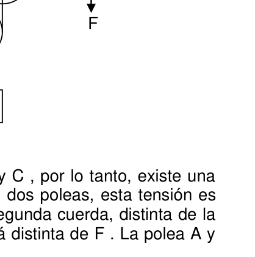
Topic: Thermodynamics, Fluid Mechanics Metodi: Ideal Gas Law, Hydrostatic Equilibrium Competenze: Physical Reasoning Objects: Piston, Cylinder, Gas Fonte: Testo (PDF) — p.3
Bolone e pistone
PT23. Istituto Politetnico Superiore Gral. San Martino
Rosario, Santa Fe.
Il pallone e il pistone Un ricercatore di una grande auto è in fase di realizzazione di una serie di prove con un nuovo pistone, per l’uso in La Commissione ha adottato una proposta di direttiva che prevede che le reti di stampa idrauliche, che verranno commercializzate nel anni a venire. La fase che sta indagando, al momento, è la la capacità di compressione che ha lo stesso e, per questo, Ho progettato un dispositivo interessante che permette di realizzare alcune misure, in un modo molto semplice. Il dispositivo consiste in un cilindro di 2,50 m di altezza e 20 cm di diametro, con un embolsone di 250 kg di massa. Questo dispositivo consente di inserire all’interno un pallone di L’indicazione di cui al punto 1.2.1 è stata riportata nella tabella 2.
Inflodendo il globo Il globolo di latex, di massa di 2 grammi, permette di gonfiarsi fino a un diametro di 5 cm senza sovraccarico apprezzabile. Da quel momento in poi, per ogni centimetro di diametro extra a gonfiare, è richiesta una pressione di 15 mmHg. Se infla il pallone con aria fino a un diametro di 15 cm, a) Qual è stata la pressione interna che ha dovuto esercitare il ricercatore? b) Quante forze elasticitarie è sottoposta il latex? c) Trovare una costante elastica modellare il materiale attraverso la Legge di Hooke.
Scompresso il pistone Una volta gonfiato il pallone e pieno di idrogeno il cilindro, si colloca il primo all’interno del secondo, come mostra figura 4. Inizia a comprimere il sistema con il Piston, molto lentamente, che praticamente non fa. a variare la temperatura del sistema.
d) Che forza deve produrre il pistone per far sì che il ballo galleggiante all’interno del cilindro? Figura 3: cilindro e Piston da sviluppare Figura 4 Il globo inflata si introduce all’interno del cilindro.
OAF 2014 - 56 e) Quanto tempo ha dovuto scendere il pistone per raggiungere l’obiettivo? f) Quanta energia in forma di calore deve scambiare il cilindro con il cilindro? media ambiente per che se produzca efficacemente Questa è la mia . La trasformazione?
Dati:
Topic: Thermodynamics, Fluid Mechanics Metodi: Ideal Gas Law, Hydrostatic Equilibrium Competenze: Physical Reasoning Objects: Piston, Cylinder, Gas Fonte: Testo (PDF) — p.3
The balloon and the piston
PT23. Gral Higher Polytechnic Institute. Saint Martin .
Rosario, Santa Fe.
The balloon and the piston. A major car company researcher is making a series of tests with a new piston, for use in The Commission will also consider the possibility of introducing a new system for hydraulic presses. years to come. The stage you’re investigating, right now, is the Compression capacity that has the same and, for that, I design an interesting device that allows you to perform Some measurements, in a very simple way. The device consists of a cylinder of 2.50 m high and 20 cm in diameter, with a bulb whose mass is 250 kg. This device allows a balloon of Latex as shown in Figure 3.
I ‘m blowing the balloon . The latex balloon, which is 2 grams in mass, allows it to be inflated to a a diameter of 5 cm without appreciable overpressure. From that moment on, for every In the case of a pressure of 15 mmHg, the pressure of the pressure of the pressure of the pressure of the pressure of the pressure of the pressure of the pressure of the pressure of the pressure of the pressure of the pressure of the pressure of the pressure of the pressure of the pressure of the pressure of the pressure of the pressure of the pressure of the pressure of the pressure of the pressure of the pressure of the pressure of the pressure of the pressure of the pressure of the pressure of the pressure of the pressure of the pressure of the pressure of the pressure of the pressure of the pressure of the pressure of the pressure of the pressure of the pressure of the pressure of the pressure of the pressure of the pressure of the pressure of the pressure of the pressure of the pressure of the pressure of the pressure of the pressure of the pressure of the pressure of the pressure of the pressure of the pressure of the pressure of the pressure of the pressure of the pressure of the pressure of the pressure of the pressure of the pressure of the pressure of the pressure of the pressure of the pressure of the pressure of the pressure of the pressure of the pressure of the pressure of the pressure of the pressure of the pressure of the pressure of the pressure of the pressure of the pressure of the pressure of the pressure of the pressure of the pressure of the pressure of the pressure of the pressure of the pressure of the pressure of the pressure of the pressure of the pressure of the pressure of the pressure of the pressure of the pressure of the pressure of the pressure of the pressure of the pressure of the pressure of the pressure of the pressure of the pressure of the pressure of the pressure of the pressure of the pressure of the pressure of the pressure of the pressure of the pressure of the pressure of the pressure of the pressure of the pressure of the pressure of the exerting. If you inflate the balloon with air up to a diameter of 15 cm, (a) What internal pressure did the researcher have to exert? (b) What is the elasticity to which the latex is subjected? (c) Find an elastic constant by modeling the material through the Hooke’s law.
Compressing the piston . Once the balloon is inflated and the cylinder filled with hydrogen, The first is placed inside the second, as shown. the figure 4. Start compressing the system with the Piston, very slowly, which it practically doesn’t. change the temperature of the system.
(d) What force must the piston make to make the piston balloon floating inside the cylinder? Figure 3: Cylinder and Piston to be developed Figure 4 is shown. The balloon . Inflation is introduced inside the cylinder.
The following is the list of the Member States’ financial statements: (e) How far down did the piston have to go to achieve the target? (f) How much heat energy should the cylinder exchange with the heat source? medium Environmental policy for That se produce efficiently This one . What about transformation?
The data:
Topic: Thermodynamics, Fluid Mechanics Metodi: Ideal Gas Law, Hydrostatic Equilibrium Competenze: Physical Reasoning Objects: Piston, Cylinder, Gas Fonte: Testo (PDF) — p.3
Con proteccion (cortadora de cesped)
PT24. Instituto Politécnico Superior Gral. San Martín
Rosario, Santa Fe.
Con protección
Pedro posee una cortadora de césped para el patio de su casa de fin de
semana. La misma muestra en su chapa identificatoria:
1100W – 220V Tensión mínima: 200V Con sistema de protección que apaga la máquina con tensión<200V máquina
a) ¿Qué potencia disipa la cortadora con la tensión mínima?
b) ¿Qué potencia fue entregada por la fuente (el enchufe)?
c) ¿Cuánta energía mide la EPE (Empresa Provincial de la Energía de
Santa Fe) en una hora de funcionamiento? (en J y en kW.h)
Los puntos más lejanos de corte, están a 200m del enchufe de la casa, el cual
cuenta con 220V entre bornes. Para llegar, se usa una extensión, de cables de
cobre, de 2x1mm2.
d) ¿Funciona la cortadora en esas condiciones?
e) ¿Qué sección mínima de cable debería usar en el prolongador para que
funcione apropiadamente?
Datos:
Topic: Circuits Metodi: Kirchhoff’s Laws, Equivalent Circuit Reduction Competenze: Physical Reasoning Objects: Resistor, Battery Fonte: Testo (PDF) — p.3
**Con protezione (piegatrice di erba) **
PT24. Istituto Politetnico Superiore Gral. San Martino
Rosario, Santa Fe.
Con protezione Pedro possiede un tagliaerba per il cortile della sua casa di fine settimana. Lo stesso mostra sulla sua scheda di identificazione:
1100W – 220V Voltaggio minimo: 200 V Con un sistema di protezione che spegne la macchina a tensione < 200 V macchina
a) Quale potenza viene dissipata dal tagliatore con la tensione minima?
b) Quale potenza è stata fornita dalla fonte (il socket)?
(c) Quanta energia misura l’EPA (Provinciale Impresa energetica di
Santa Fe) in un’ora di funzionamento? (en J y en kW.h)
I punti più lontani della corte, sono a 200 metri dal connettore della casa, che
ha 220 V tra i bordi. Per arrivare, si utilizza un’estensione, di cavi di
di cui:
d) La macchina di taglio funziona in queste condizioni?
e) Quale sezione minima di cavo dovrebbe essere utilizzata nel prolungatore per consentire
funziona correttamente?
Dati:
Topic: Circuits Metodi: Kirchhoff’s Laws, Equivalent Circuit Reduction Competenze: Physical Reasoning Objects: Resistor, Battery Fonte: Testo (PDF) — p.3
**With a protective (grass cutter) **
PT24. Gral Higher Polytechnic Institute. Saint Martin .
Rosario, Santa Fe.
With protection Peter owns a lawnmower for the backyard of his late home.
- I’m going to be here for a week. The same thing on your identification sheet:
1100W – 220V The minimum voltage: 200 V With a protection system that turns off the machine with a voltage < 200 V machine
(a) What power does the cutter dissipate at the minimum voltage?
(b) What power was delivered by the source (plug)?
(c) How much energy does the EPE measure?
Santa Fe) in an hour’s work? (en J y en kW.h)
The farthest cutting spots are 200 meters from the house socket, which is
It has 220V between terminals. To reach, an extension of cable is used.
Copper, of 2 x 1 mm2.
(d) Does the cutter work under these conditions?
(e) What minimum section of cable should you use on the extender to
is it working properly?
The data:
Topic: Circuits Metodi: Kirchhoff’s Laws, Equivalent Circuit Reduction Competenze: Physical Reasoning Objects: Resistor, Battery Fonte: Testo (PDF) — p.3
Transformaciones de gas ideal
PT25. Instituto Educativo Génesis
Posadas, Misiones.
a) La presión P para una masa determinada de un gas ideal con comportamiento isocórico, es directamente proporcional a la temperatura de dicho gas, esto es: P α T
OAF 2014 - 57
Indicar la relación que existe entre:
a.1) La presión P y el volumen V, cuando el gas tiene comportamiento iso-
térmico.
a.2) El volumen V y la temperatura T, cuando el gas tiene comportamiento
isobárico.
b) El gas de comportamiento ideal se mantiene en un recipiente con un pistón
móvil. La presión del gas es P1, su volumen V1 y la temperatura T1.
El recipiente es calentado a V=
constante hasta una presión P2, y temperatura
T1’. Luego es calentado a P=constante hasta un volumen V2 y temperatura T2.
Esquematizar la situación e indicar la relación entre:
b.1) P1, P2, T1 y T1’.
b.2) V1, V2, T1’ y T2
c) Con lo que se obtuvo en el punto anterior, demostrar que para un gas ideal: P . V = N . T, siendo N=cte.
d) Para un gas ideal que contiene 5 moles, y sus presiones y volúmenes son: P1 = 2atm, P2= 5atm , V1= 10litros y V2= 15 litros. Calcular T1 y T2.
Topic: Thermodynamics Metodi: Ideal Gas Law, First Law of Thermodynamics Competenze: Physical Reasoning Objects: Gas, Piston Fonte: Testo (PDF) — p.3
Transformazioni di gas ideale
PT25. Istituto Educativo Genesi
Posate, Missioni.
a) Presione P per una determinata massa di un gas ideale con comportamento Isocorico, è direttamente proporzionale alla temperatura di tale gas, cioè: P α T
OAF 2014 - 57 Indicare il rapporto tra: a.1) La pressione P e il volume V, quando il gas ha un comportamento iso-
- Termica. a.2) Volume V e temperatura T, quando il gas ha un comportamento Isobarico.
b) Il gas di comportamento ideale è conservato in un recipiente con pistone
- mobile. La pressione del gas è P1, il volume V1 e la temperatura T1. Il recipiente è riscaldato a V= costante fino a una pressione P2, e temperatura T1’. Poi viene riscaldato a P=constante fino a un volume V2 e temperatura T2. Squammatizzare la situazione e indicare il rapporto tra: b.1) P1, P2, T1 y T1’. b.2) V1, V2, T1’ y T2
c) Con quanto ottenuto nel punto precedente, dimostrare che per un gas ideale: P . V = N . T, essendo N = cte.
d) Per un gas ideale contenente 5 mol, e le sue pressioni e volumi sono: = 2 atm, P2 = 5 atm, V1 = 10 litri e V2 = 15 litri. Calcolare T1 e T2.
Topic: Thermodynamics Metodi: Ideal Gas Law, First Law of Thermodynamics Competenze: Physical Reasoning Objects: Gas, Piston Fonte: Testo (PDF) — p.3
The following is the list of the types of gas used:
PT25. The Genesis Education Institute
The inn, the missions.
(a) The P pressure for a given mass of an ideal gas with behaviour isocoric, is directly proportional to the temperature of that gas, i.e.: P α T
The following is the list of the Member States’ financial statements: Indicate the relationship between: (a.1) Pressure P and volume V, when the gas behaves iso- heat. (a.2) Volume V and temperature T, when the gas behaves isobaric.
(b) The ideal behaviour gas is kept in a piston-container It’s mobile. The pressure of the gas is P1, its volume V1 and the temperature T1. The container is heated to V= constant to a pressure of P2, and temperature T1’. It is then heated to P=constant to a volume V2 and temperature T2. Sketch the situation and indicate the relationship between: b.1) P1, P2, T1 y T1’. b.2) V1, V2, T1’ y T2
(c) Provide that, as obtained in the previous point, for an ideal gas: P . V = N . T, being N = cte.
(d) For an ideal gas containing 5 moles, and its pressures and volumes are: The value of the product is calculated as follows: Calculate T1 and T2.
Topic: Thermodynamics Metodi: Ideal Gas Law, First Law of Thermodynamics Competenze: Physical Reasoning Objects: Gas, Piston Fonte: Testo (PDF) — p.3
Sistema de poleas
PT26. Instituto Educativo Génesis
Posadas, Misiones.
Hallar la fuerza F necesaria para levantar a la masa M con velocidad constante
mediante el sistema de poleas mostrado en la Fig. (1). Las poleas A y B son
móviles y la polea C es fija, pero todas las poleas son ideales.
Nota: El sistema se mueve con velocidad constante, por lo tanto su aceleración
es cero, lo cual implica que la fuerza resultante es cero, y el sistema se
encuentra en equilibrio dinámico. Como el sistema está en equilibrio, cada
cuerpo debe estar en equilibrio por separado. Por otra parte, si las poleas son
ideales, entonces las consideramos sin masa y sin roce, por lo tanto, las poleas
ideales solo cambian la dirección de la tensión en la cuerda.
techo
A-B-C= poleas
F
Figura 1
Existe una única cuerda que conecta las poleas B y C , por lo tanto, existe una única tensión a ambos lados de cada una de estas dos poleas, esta tensión es justamente la fuerza F . Por la polea A pasa una segunda cuerda, distinta de la anterior, por lo tanto la tensión en dicha cuerda será distinta de F . La polea A y A B C M
OAF 2014 - 58 la masa M están conectadas por una tercera cuerda, diferente de las anteriores, por lo tanto, se debe considerar una nueva y diferente tensión.
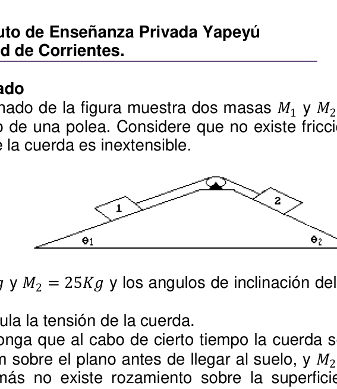
Topic: Rigid Body Statics, Newtonian Mechanics Metodi: Free-Body Diagram, Conservation Laws Competenze: Physical Reasoning Objects: Pulley, String Fonte: Testo (PDF) — p.3
Sistema di pollice
PT26. Istituto Educativo Genesi
Posate, Missioni.
Trovare la forza F necessaria per sollevare la massa M a velocità costante mediante il sistema di pullee mostrato in Figura 1. (1). Le polemiche A e B sono: Le polea C sono fisse, ma tutte le polea sono ideali. Nota: il sistema si muove a velocità costante, quindi la sua accelerazione è zero, il che implica che la forza risultante è zero, e il sistema si si trova in equilibrio dinamico. Poiché il sistema è in equilibrio, ogni Il corpo deve essere in equilibrio separatamente. D’altra parte, se le polemiche sono Le pollice sono quindi senza massa e senza rottura. Gli ideali cambiano solo la direzione della tensione nella corda.
- Il tetto
A-B-C = pollice
F
Figura 1
C’è una sola corda che collega le polea B e C, quindi c’è una unica tensione su entrambi i lati di ciascuna di queste due pole, questa tensione è Proprio la forza F . Per la pole A passa una seconda corda, diversa dalla La tensione di tale corda sarà quindi diversa da F. La polea A e A B C M
OAF 2014 - 58 la massa M sono collegate da una terza corda, diversa da quelle precedenti, La tensione è quindi nuova e diversa.
Topic: Rigid Body Statics, Newtonian Mechanics Metodi: Free-Body Diagram, Conservation Laws Competenze: Physical Reasoning Objects: Pulley, String Fonte: Testo (PDF) — p.3
The following paragraphs shall be added:
PT26. The Genesis Education Institute
The inn, the missions.
Find the force F needed to lift the mass M at constant speed by the pulley system shown in Fig. (1). Pulleys A and B are mobile and pulley C is fixed, but all pulleys are ideal. Note: The system moves at a constant speed, hence its acceleration is zero, which implies that the resulting force is zero, and the system is It’s in dynamic equilibrium. As the system is in balance, each The body must be in separate balance. On the other hand, if the pulleys are Ideal, so we consider them massless and frictionless, therefore, pulleys. Ideals only change the direction of the tension on the rope.
The roof .
A-B-C = pulleys
F
Figure 1
There is only one string that connects the B and C pulleys, so there is one. The only voltage on either side of each of these two pulleys, this voltage is Just the F-force . A second string passes through the pole, different from the The voltage on that string will therefore be different from F. The pulley A and A B C M
The following is the list of the Member States’ financial statements: The M-masses are connected by a third string, different from the previous ones, Therefore, a new and different tension should be considered.
Topic: Rigid Body Statics, Newtonian Mechanics Metodi: Free-Body Diagram, Conservation Laws Competenze: Physical Reasoning Objects: Pulley, String Fonte: Testo (PDF) — p.3
Ida y vuelta a la panaderia
PT27. Instituto Educativo Génesis
Posadas, Misiones.
Una persona sale de su casa y recorre en línea recta los 200m que la separan
de la panadería a una velocidad constante de 1,4 m/s. Permanece en la tienda 2
min y regresa a su casa a una velocidad de 1,8 m/s.
a) Calcula su velocidad media.
b) ¿cuál ha sido su desplazamiento?
c) ¿Qué espacio ha recorrido?
d) Realiza una gráfica velocidad-tiempo
Topic: Newtonian Mechanics Metodi: Kinematic Equations Competenze: Physical Reasoning Objects: — Fonte: Testo (PDF) — p.3
Andate e tornate al panetterio
PT27. Istituto Educativo Genesi
Posate, Missioni.
Una persona esce dalla sua casa e percorre in linea retta i 200 metri che la separano di una panetteria a una velocità costante di 1,4 m/s. Resta al negozio 2
- E torna a casa a velocità di 1,8 m/s. a) Calcola la sua velocità media. b) qual è stato il suo spostamento? c) Quali spazi ha percorso? d) Realizza un grafico velocità-tempo
Topic: Newtonian Mechanics Metodi: Kinematic Equations Competenze: Physical Reasoning Objects: — Fonte: Testo (PDF) — p.3
Go back to the bakery
PT27. The Genesis Education Institute
The inn, the missions.
A person leaves his house and runs straight through the 200 meters that separate him . the bakery at a constant speed of 1,4 m/s. Stay in the store 2 Min and return home at a speed of 1.8 m/s. (a) Calculate its average speed. (b) what has been your move? (c) What space has it travelled through? (d) Perform a speed-time chart
Topic: Newtonian Mechanics Metodi: Kinematic Equations Competenze: Physical Reasoning Objects: — Fonte: Testo (PDF) — p.3
Vaso pirex con alcohol (dilatacion)
PT28. Instituto Jesús María
Ciudad de Córdoba.
Un vaso de precipitado de vidrio pirex resistente al calor, cuya masa es de 100 g
y que tiene una capacidad de 1.000cm3, se encuentra completamente lleno de
alcohol a una temperatura de 0ºC. Se supone despreciable la evaporación.
a) Calcule el Peso del conjunto
b) Calcule el volumen de alcohol que se derramará al calentar el conjunto
hasta 60 ºC
c) Calcule el peso del conjunto a 60 ºC
d) Si luego se enfría el conjunto hasta -20ºC, determine cuánto volumen
del recipiente queda libre.
e) Calcule el peso del conjunto en esas condiciones
Datos: Coef. Dilatación lineal del vidrio pirex = 0,000003 1/ ºC
Coef. Dilatación Volumétrica del alcohol = 0,0011 1/ ºC
Densidad del alcohol a 0ºC= 0,8 g/cm3
Topic: Thermodynamics, Elasticity & Materials Metodi: First Law of Thermodynamics, Physical Modeling Competenze: Physical Reasoning Objects: Container Fonte: Testo (PDF) — p.3
**Vaso pirex con alcool (dilatazione) **
PT28. Istituto Gesù Maria
Città di Córdoba.
Un vaso di vetro precipitato pirex resistente al calore, di massa di 100 g e che ha una capacità di 1.000 cm3, è completamente ricco di Alcol a 0 °C. L’evaporazione è considerata disprezzabile. a) Calcolare il peso dell’insieme b) Calcolare il volume di alcol che verrà versato quando il tutto viene riscaldato fino a 60 oC c) Calcolare il peso dell’insieme a 60 oC d) Se poi il tutto viene raffreddato fino a -20°C, determinare il volume il contenitore rimane libero. e) Calcolare il peso dell’insieme in tali condizioni Dati: Coef. Dilatazione lineare del vetro pirex = 0,000003 1/ oC
- Coef. Dilatazione volumetrica dell’alcol = 0,0011 1/ oC Densità dell’alcol a 0oC = 0,8 g/cm3
Topic: Thermodynamics, Elasticity & Materials Metodi: First Law of Thermodynamics, Physical Modeling Competenze: Physical Reasoning Objects: Container Fonte: Testo (PDF) — p.3
MSK0/>Pirex glass with alcohol (dilation) **
PT28. Jesus Mary Institute
The city of Cordoba.
A glass of heat-resistant pirex glass precipitate, with a mass of 100 g And it has a capacity of 1,000cm3, it’s completely filled with alcohol at a temperature of 0 °C. Evaporation is supposed to be despicable. (a) Calculate the Weight of the set (b) Calculate the volume of alcohol to be poured when heating the whole. up to 60 oC (c) Calculate the weight of the set at 60 oC (d) If the set is then cooled to -20°C, determine the volume the container is free. (e) Calculate the weight of the set under these conditions The Commission has also adopted a number of measures to combat fraud. Linear dilation of the pirex glass = 0,000003 1/ oC Coef, you know what? Dilation of alcohol by volume = 0.0011 1/ oC Density of the alcohol at 0oC = 0,8 g/cm3
Topic: Thermodynamics, Elasticity & Materials Metodi: First Law of Thermodynamics, Physical Modeling Competenze: Physical Reasoning Objects: Container Fonte: Testo (PDF) — p.3
Esferas cargadas suspendidas
PT29. Instituto Jesús María
Ciudad de Córdoba.
Una esfera A cargada con 5 microC se encuentra suspendida en el aire a 2 m
del suelo, al ser atraída por otra esfera B cargada con -2 microC y aislada de
tierra, ubicada en dirección vertical sobre la anterior. La distancia entre los
centros de ambas esferas es de 10 cm, .
a) Calcular la fuerza entre ellas
b) Calcular la masa de la esfera A
c) Si luego la esfera B se descarga con un cable a tierra, calcule la
velocidad con que llega al suelo la esfera A.
d) Calcule la Energía Cinética con que llega al suelo
e) Si el piso permite que rebote, con una restitución del 30 %, determine a
qué altura llega.
Topic: Electrostatics, Newtonian Mechanics Metodi: Coulomb’s Law, Free-Body Diagram Competenze: Physical Reasoning Objects: Sphere, Point Charge Fonte: Testo (PDF) — p.3
Spessioni di sfere caricate sospese
PT29. Istituto Gesù Maria
Città di Córdoba.
Una sfera A carica di 5 microC è sospesa in aria a 2 m di terra, attraita da un’altra sfera B carica di -2 microC e isolata da terra, posizionata in direzione verticale sopra la precedente. La distanza tra i I centri di entrambe le sfere sono di 10 cm. a) Calcolare la forza tra loro b) Calcolare la massa della sfera A c) Se poi la sfera B viene scaricata con un cavo a terra, calcola la velocità con cui la sfera A raggiunge il suolo. d) Calcolare l’energia cinetica che arriva al suolo e) Se il pavimento permette di ribaltare, con un rimborso del 30%, determina che altezza raggiunge.
Topic: Electrostatics, Newtonian Mechanics Metodi: Coulomb’s Law, Free-Body Diagram Competenze: Physical Reasoning Objects: Sphere, Point Charge Fonte: Testo (PDF) — p.3
Suspended loaded spheres
PT29. Jesus Mary Institute
The city of Cordoba.
A 5 microC-charged A-sphere is suspended in the air at 2 m. of the soil, being attracted by another B-sphere charged with -2 microC and isolated from land, located in a vertical direction over the previous one. The distance between the The centers of both spheres are 10 cm, . (a) Calculate the force between them (b) Calculate the mass of sphere A (c) If the B-sphere is then discharged with a ground wire, calculate the The speed at which the sphere A reaches the ground. (d) Calculate the kinetic energy it reaches the ground with (e) If the floor allows rebound, with a refund of 30%, determine How high it gets.
Topic: Electrostatics, Newtonian Mechanics Metodi: Coulomb’s Law, Free-Body Diagram Competenze: Physical Reasoning Objects: Sphere, Point Charge Fonte: Testo (PDF) — p.3
Campo electrico entre dos cargas
PT30. Instituto Jesús María
Ciudad de Córdoba.
Una carga de 5 mC se encuentra a una distancia de 2 cm de otra de 4 mC, en el vacío.
OAF 2014 - 59 a) Determine la intensidad del campo eléctrico resultante en el punto medio entre las cargas. Indique su sentido. b) Determine la ubicación del punto donde el campo eléctrico sea nulo. c) El potencial eléctrico, ¿es nulo en dicho punto? Justifique.
Topic: Electrostatics Metodi: Coulomb’s Law, Superposition Principle, Electric Potential Method Competenze: Physical Reasoning Objects: Point Charge Fonte: Testo (PDF) — p.3
Campo elettrico tra due cariche
PT30. Istituto Gesù Maria
Città di Córdoba.
Un carico di 5 mC si trova a 2 cm di distanza da un carico di 4 mC, nel
- Vazio.
OAF 2014 - 59 a) Determina l’intensità del campo elettrico risultante al punto medio tra le cariche. Indica il suo senso. b) Determina la posizione del punto in cui il campo elettrico è nullo. c) Il potenziale elettrico è nullo a tale punto? giustifica.
Topic: Electrostatics Metodi: Coulomb’s Law, Superposition Principle, Electric Potential Method Competenze: Physical Reasoning Objects: Point Charge Fonte: Testo (PDF) — p.3
Electric field between two charges
PT30. Jesus Mary Institute
The city of Cordoba.
A load of 5 mC is located at a distance of 2 cm from another load of 4 mC, at the It’s empty.
The following is the list of the Member States’ financial statements: (a) Determine the intensity of the resulting electric field at the midpoint between the loads. Point out your point. (b) Determine the location of the point where the electric field is zero. (c) Is the electric potential zero at that point? You justify it.
Topic: Electrostatics Metodi: Coulomb’s Law, Superposition Principle, Electric Potential Method Competenze: Physical Reasoning Objects: Point Charge Fonte: Testo (PDF) — p.3
Calorimetria aleacion oro-cobre
PT31. Instituto de Enseñanza Privada Yapeyú
Ciudad de Corrientes.
Calorimetría Se tienen 100g de una aleación de oro y cobre a una temperatura de 75,5℃. Se introducen en un calorímetro que tiene 502g de agua a 25℃. La temperatura de equilibrio es de 25,5℃. Calcula la composición de la aleación sabiendo que los calores específicos del oro y del cobre son 130 𝐽/𝐾𝑔℃ y 397 𝐽/ 𝐾𝑔℃respectivamente.
Topic: Thermodynamics Metodi: First Law of Thermodynamics Competenze: Physical Reasoning Objects: Calorimeter Fonte: Testo (PDF) — p.3
Calorimetria di lega oro-copro
PT31. Istituto di istruzione privata Yapeyú
Città dei Corrienti.
Calorimetria Si hanno 100g di un’alleazione d’oro e rame a una temperatura di 75,5°C. Se Si inseriscono in un calorilitro che contiene 502 g di acqua a 25°C. La temperatura di l’equilibrio è di 25,5°C. Calcola la composizione dell’alleo sapendo che i calori Specifico di cui al Oro y di cui al Copro Sono 130 𝐽/𝐾𝑔℃ y 397 𝐽/ Kg° rispettivamente.
Topic: Thermodynamics Metodi: First Law of Thermodynamics Competenze: Physical Reasoning Objects: Calorimeter Fonte: Testo (PDF) — p.3
**Chalorimetry of gold-copper alloy **
PT31. Private education institute Yapeyú
City of currents.
Calorimetry They have 100g of a gold and copper alloy at a temperature of 75.5°C. Se They are placed in a heat meter that has 502 g of water at 25°C. The temperature of The equilibrium is 25.5°C. Calculate the composition of the alloy knowing that the Heat specific of the gold . y of the copper They are 130 𝐽/𝐾𝑔℃ y 397 𝐽/ Kg° respectively.
Topic: Thermodynamics Metodi: First Law of Thermodynamics Competenze: Physical Reasoning Objects: Calorimeter Fonte: Testo (PDF) — p.3
Tres cargas en triangulo rectangulo
PT32. Instituto de Enseñanza Privada Yapeyú
Ciudad de Corrientes.
Electricidad Tres cargas puntuales 𝑞1, 𝑞2 y 𝑞3, todas de 4C, se encuentran ubicadas en los vértices de un triángulo rectángulo como muestra la figura
a) Calcula la fuerza total que se ejerce sobre la carga 𝑞3. b) Calcula el campo eléctrico total producido por 𝑞1 y 𝑞2 sobre la carga 𝑞3.
Topic: Electrostatics Metodi: Coulomb’s Law, Superposition Principle, Vector Decomposition Competenze: Physical Reasoning Objects: Point Charge Fonte: Testo (PDF) — p.3
Tre cariche in triangolo rettangolo
PT32. Istituto di istruzione privata Yapeyú
Città dei Corrienti.
L’ elettricità Tre cariche puntate q1, q2 e q3, tutte di 4C, sono situate sulle cime di un triangolo rettangolo come mostra la figura
a) Calcola la forza totale esercitata sulla carica q3. b) Calcola el campo elettrico totale prodotto da q1 e q2 sul carico 𝑞3.
Topic: Electrostatics Metodi: Coulomb’s Law, Superposition Principle, Vector Decomposition Competenze: Physical Reasoning Objects: Point Charge Fonte: Testo (PDF) — p.3
Three loads in a right triangle
PT32. Private education institute Yapeyú
City of currents.
Electricity Three point loads q1, q2 and q3, all of 4C, They are located at the top of a triangle rectangle as shown in Figure
(a) Calculate the total force exerted on the q3 load. (b) Calculate el field electrical Total produced by q1 and q2 on the load 𝑞3.
Topic: Electrostatics Metodi: Coulomb’s Law, Superposition Principle, Vector Decomposition Competenze: Physical Reasoning Objects: Point Charge Fonte: Testo (PDF) — p.3
Plano inclinado con polea y dos masas
PT33. Instituto de Enseñanza Privada Yapeyú
Ciudad de Corrientes.
Plano Inclinado El plano inclinado de la figura muestra dos masas 𝑀1 y 𝑀2 sostenidas mediante un dispositivo de una polea. Considere que no existe fricción entre la polea y la cuerda, y que la cuerda es inextensible.
Si 𝑀1 = 15𝐾𝑔 y 𝑀2 = 25𝐾𝑔 y los angulos de inclinación del plano son 𝜃1 = 37° y 𝜃2 = 43° a) Calcula la tensión de la cuerda. b) Suponga que al cabo de cierto tiempo la cuerda se corta. Si 𝑀1recorrió 75cm sobre el plano antes de llegar al suelo, y 𝑀2 recorrió 84cm, y que además no existe rozamiento sobre la superficie del plano inclinado ¿Cuánto tiempo tardan ambas masas en llegar al suelo? c) Suponga la misma situación que en el punto b) pero considere que el coeficiente de rozamiento dinámico sobre la superficie del plano
OAF 2014 - 60 inclinado es 𝜇= 0,3¿Cuánto tiempo tardan ambas masas en llegar al suelo?
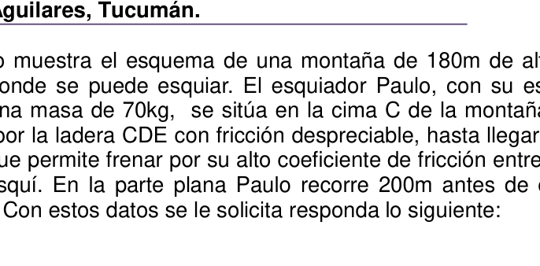
Topic: Newtonian Mechanics Metodi: Free-Body Diagram, Kinematic Equations Competenze: Physical Reasoning Objects: Inclined Plane, Pulley, String Fonte: Testo (PDF) — p.3
Plano inclinato con polla e due masse
PT33. Istituto di istruzione privata Yapeyú
Città dei Corrienti.
Piano inclinato Il piano inclinato della figura mostra due masse M1 e M2 sostenute da un dispositivo di polla. Considera che non vi è attrito tra la polla e la e che la corda è inestensibile.
Se M1 = 15Kg e M2 = 25Kg e gli angoli di inclinamento del piano sono θ1 = 37° e 𝜃2 = 43° a) Calcola la tensione della corda. b) Supponiamo che dopo un certo tempo la corda si tagli. Se M1 è corso 75 cm sopra il piano prima di arrivare al suolo, e M2 percorse 84 cm, e che Inoltre non vi è alcun ruggine sulla superficie del piano inclinato Quanto tempo ci vuole per arrivare a terra? (c) suppone la stessa situazione di cui al punto (b) ma ritiene che il Coefficiente di rottura dinamica sulla superficie del piano
OAF 2014 - 60 L’inclinazione è μ=0.3
- Il pavimento?
Topic: Newtonian Mechanics Metodi: Free-Body Diagram, Kinematic Equations Competenze: Physical Reasoning Objects: Inclined Plane, Pulley, String Fonte: Testo (PDF) — p.3
Turn plane with pulley and two masses
PT33. Private education institute Yapeyú
City of currents.
The slope of the plane The slope of the figure shows two masses M1 and M2 held by A pulley device. Consider that there is no friction between the pole and the And that rope is unextractable.
If M1 = 15Kg and M2 = 25Kg and the plane’s angles of inclination are θ1 = 37° and 𝜃2 = 43° (a) Calculate the tension of the rope. (b) Suppose that after a certain time the rope is cut. If M1 ran . 75cm above the plane before it hit the ground, and M2 went 84cm, and that’s it. There is also no friction on the surface of the sloping plane. How long does it take both masses to reach the ground? (c) Suppose the same situation as in point (b) but consider that the dynamic friction coefficient over the surface of the plane
The following is the list of the Member States’ financial statements: slope is μ=0.3 How long does it take both masses to reach the The floor?
Topic: Newtonian Mechanics Metodi: Free-Body Diagram, Kinematic Equations Competenze: Physical Reasoning Objects: Inclined Plane, Pulley, String Fonte: Testo (PDF) — p.3
Grafica calor-temperatura (cambio de fase)
PT34. Colegio Nacional Nicolás Avellaneda
Aguilares, Tucumán.
Dado 100 g de una sustancia, que inicialmente se encuentra en estado líquido a una temperatura de 20 °C, se colocan frente a una fuente de calor, de manera que la variación de la temperatura en función del calor que absorbe, se representa en la gráfica de la figura. De la observación y análisis de dicha gráfica, se le solicita responda las siguientes preguntas: a) ¿Cuál es la temperatura de ebullición de la sustancia? Debes recordar que una sustancia cuando alcanza su estado de ebullición, mantiene constante su temperatura, hasta que la evapora totalmente y recién entonces vuelve a crecer la temperatura. b) ¿Cuál es el calor específico en estado líquido? c) ¿Qué cantidad de calor fue necesario para que alcance los 60ºC? (Debes utilizar el valor obtenido en el punto anterior, si no pudo resolver, use entonces: calor específico de la sustancia 0,7 cal/g . ºC.) d) Sin utilizar fórmulas, ¿puedes decir cuanto calor fue necesario suministrar, mientras estaba en estado de ebullición, para evaporarla totalmente? e) Un inglés observó el problema y dice que es una situación irreal, pues no conoce ninguna sustancia que cumpla las condiciones de la gráfica; por tal motivo se le solicita que traduzca los valores de 20ºC y 80ºC a las dos escalas que él conoce: la Fahrenheit y la Kelvin. f) El coeficiente de dilatación “cúbica” de esa sustancia es 0,00011 1/°C y se tienen almacenados (a 20°C) 5 litros, en un recipiente de aluminio de (exactamente) la misma capacidad. El aluminio tiene un coeficiente de dilatación “lineal” de 0.000024 1/°C
¿Cuál es volumen de esta última cantidad del líquido, a 80°C? ¿Qué cantidad de líquido se derramará a esa temperatura? Si el diámetro del recipiente de aluminio (a 20°C) es de 200mm, ¿Cuánto medirá a 80°C?
Topic: Thermodynamics Metodi: First Law of Thermodynamics, Graph Linearization Competenze: Physical Reasoning Objects: Calorimeter Fonte: Testo (PDF) — p.3
**Grafica caldo-temperatura (cambiamento di fase) **
PT34. Colegio Nazionale Nicolás Avellaneda
Aguilar, Tucumán.
Dato 100 g di una sostanza, che Inizialmente si trova in stato di liquido a una temperatura di 20 °C, se Si collocano davanti a una fonte di calore, di modo che la variazione de la temperatura a seconda del calore che assorbe, è rappresentato nel grafico di la figura. L’osservazione e l’analisi di tale grafico, è richiesto un’esposta le seguenti domande: a) Qual è la temperatura di
- Boiling della sostanza? Dovresti Ricordare che Una . La sostanza, quando raggiunge lo stato di ebollizione, si mantiene costante. la sua temperatura, fino a quando non si evapora completamente e solo allora. La temperatura risce. b) Qual è il calore specifico in stato liquido? c) Quanta calore è stato necessario per raggiungere i 60°C? (Utilizzare il valore ottenuto nel punto precedente, se non è stato possibile risolvere, calore specifico della sostanza 0,7 cal/g. ºC.) d) Senza formula, puoi dire quanto calore è stato necessario? fornire, mentre era in stato di ebollizione, per
- Evaporare completamente? e) Un inglese ha osservato il problema e dice che è una situazione irrealistica, perché non conosce sostanze che soddisfino le condizioni del grafico; Per questo motivo è richiesto di tradurre i valori di 20oC e 80oC in Le due scale che conosce: la Fahrenheit e il Kelvin. f) Il coefficiente di dilatazione cubica di tale sostanza è di 0,00011 1/°C e sono conservati (a 20°C) 5 litri, in un recipiente di alluminio di (esatto) la stessa capacità. L’alluminio ha un coefficiente di dilatazione lineare di 0,000024 1/°C
• Qual è il volume di questa ultima quantità di liquido, a 80°C? • Quanta liquido verserà a questa temperatura? Se il diametro del contenitore in alluminio (a 20°C) è di 200 mm, Quanto sarà il 80°C?
Topic: Thermodynamics Metodi: First Law of Thermodynamics, Graph Linearization Competenze: Physical Reasoning Objects: Calorimeter Fonte: Testo (PDF) — p.3
The heat-temperature chart (phase change)
PT34. National school Nicolas Avellaneda
The Eagles, Tucumán.
Given 100 g of a substance, which Initially it is in a state of disrepair. liquid at a temperature of 20 °C, se They place it in front of a heat source, of way That la variation de la temperature based on the heat that absorbs, is represented in the graph of The figure. Observation and analysis The following table shows the results of the survey: The following questions: (a) What is the temperature of boiling of the substance? You must . Remembering That One . Substance when it reaches its boiling state, it holds constant. Its temperature, until it evaporates completely and only then The temperature is rising again. (b) What is the specific liquid state heat? (c) How much heat was needed to reach 60°C? (You must use the value obtained in the previous point, if you could not solve, use: specific heat of the substance 0,7 cal/g. ºC.) d) Without using formulas, can you tell how much heat was needed Supply, while it was boiling, for evaporate it completely? e) An Englishman observed the problem and said it was an unreal situation, because does not know of any substance that meets the conditions of the chart; For this reason, you are asked to translate the values of 20oC and 80oC to The two scales he knows: the Fahrenheit and the Kelvin. (f) The cubic dilation coefficient of that substance is 0,00011 1/°C and are stored (at 20°C) 5 litres in an aluminium container of (exactly) the same capacity. Aluminium has a coefficient of The following is the list of the following:
What is the volume of this last quantity of liquid, at 80°C? • How much liquid will be poured at that temperature? If the aluminium container diameter (at 20°C) is 200 mm, How much will it measure at 80°C?
Topic: Thermodynamics Metodi: First Law of Thermodynamics, Graph Linearization Competenze: Physical Reasoning Objects: Calorimeter Fonte: Testo (PDF) — p.3
Esquiador en la montana
PT35. Colegio Nacional Nicolás Avellaneda
Aguilares, Tucumán.
El dibujo muestra el esquema de una montaña de 180m de altura, cubierta de nieve, donde se puede esquiar. El esquiador Paulo, con su esquí en conjunto tienen una masa de 70kg, se sitúa en la cima C de la montaña y desde allí se desliza por la ladera CDE con fricción despreciable, hasta llegar a una superficie plana, que permite frenar por su alto coeficiente de fricción entre esa superficie y la del esquí. En la parte plana Paulo recorre 200m antes de detenerse, en el punto F. Con estos datos se le solicita responda lo siguiente:
OAF 2014 - 61
a) Tipos de Energía y su valor cuando esta en la cima C.
b) Tipos de Energía y su valor cuando pasa por el punto D a 100m de
altura.
c) Tipos de Energía y su valor cuando pasa por el punto E.
d) Calcule la fuerza de fricción f y el coeficiente de rozamiento en el tramo
horizontal EF.
e) El trabajo realizado por la fuerza de fricción f en el tramo EF.
En cierta ocasión, Paulo ve un pequeño oso que corre hacia su encuentro, con
una velocidad cuyo modulo es 10m/s, que no puede evitar y el choque se
produce a mitad del camino (a 100m de E), previo a la colisión deja caer su
mochila de 10kg y casi simultáneamente choca con el oso de unos 60kg de
masa:
f) calcule la velocidad de Paulo antes del impacto.
g) calcule la velocidad de Paulo, después del choque, si lo supone
perfectamente elástico.
Finalmente se debe mencionar que los esquiadores ascienden a la montaña,
desde la base en A hacia la cima C con velocidad constante, tirados por un cable
accionado por un motor. En esta parte de la ladera hay fricción y la fuerza de
roce tiene un valor promedio de 120N; el ángulo de inclinación es de 37º
h) Realice un diagrama de cuerpo libre, cuando Paulo esta en la ladera
AC.
i) Calcule la tensión T que hace el cable.
j) Calcule la potencia del motor en HP, si la subida dura 3 minutos.
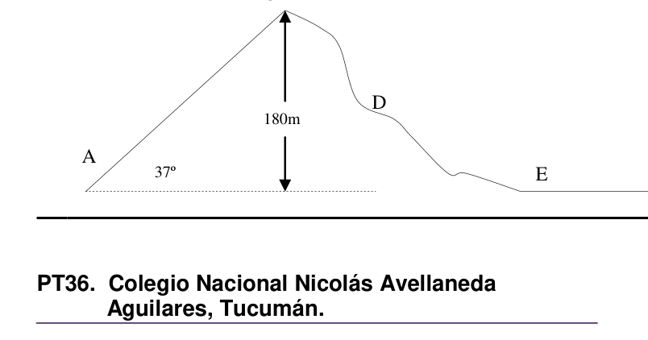
Topic: Conservation of Energy, Newtonian Mechanics Metodi: Energy Conservation Method, Free-Body Diagram Competenze: Physical Reasoning Objects: Inclined Plane, Block Fonte: Testo (PDF) — p.3
Sciatore in montagna
PT35. Colegio Nazionale Nicolás Avellaneda
Aguilar, Tucumán.
Il disegno mostra lo schema di una montagna alta 180m, coperta da la neve, dove si può sciare. Lo sciatore Paulo, con il suo sci insieme Hanno una massa di 70 kg, si trova sulla cima C della montagna e da lì si scivola lungo la versante CDE con scarsa frizione, fino a raggiungere una superficie. La superficie di freno è piatta, che permette di frenare per il suo alto coefficiente di attrito tra quella superficie e quella dello sci. Nella parte piana Paulo percorre 200m prima di fermarsi, nel punto F. Con questi dati è richiesto di rispondere:
OAF 2014 - 61 a) Tippi di energia e il loro valore quando è al vertice C. b) Tippi di energia e il loro valore quando passa dal punto D a 100m di distanza. altezza. c) Tippi di energia e il loro valore quando passa attraverso il punto E. d) Calcolare la forza di attrito f e il coefficiente di rottura nel tratto L’effetto di un’azionistica e) Il lavoro effettuato dalla forza di attrito f nel tramo EF. Un giorno, Paolo vede un orso correre verso di lui, con Una velocità che ha un modulo di 10m/s, che non può evitare e il colpo si La sua auto si sposta a metà strada (a 100m da E), prima della collisione lascia cadere il suo 10 kg di spalle e quasi contemporaneamente colpisce l’orso di circa 60 kg di peso massa: f) calcolare la velocità di Paulo prima dell’impatto. g) calcolare la velocità di Paulo dopo l’impatto, se lo suppone perfettamente elastica. Infine, si deve ricordare che gli sciatori saliono in montagna, dal basso a A verso la cima C a velocità costante, tirati da un cavo azionato da un motore. In questa parte del fianco c’è frattura e forza di La rottura ha un valore medio di 120 N; l’angolo di inclinamento è di 37° h) Fare un diagramma di corpo libero, quando Paolo è sul pendio AC. i) Calcolare la tensione T del cavo. j) Calcolare la potenza del motore in HP, se l’ascesa dura 3 minuti.
Topic: Conservation of Energy, Newtonian Mechanics Metodi: Energy Conservation Method, Free-Body Diagram Competenze: Physical Reasoning Objects: Inclined Plane, Block Fonte: Testo (PDF) — p.3
Skiing in the mountains
PT35. National school Nicolas Avellaneda
The Eagles, Tucumán.
The drawing shows the diagram of a 180m high mountain, covered with snow, where you can ski. The skier Paulo, with his skiing together They have a mass of 70kg, it is located on top of C mountain and from there it is It slides down the CDE slope with despicable friction, until it reaches a surface. flat, which allows braking by its high coefficient of friction between that surface and The one on the ski. In the flat part Paulo runs 200m before stopping, in the the following points are added: With these data you are asked to answer the following:
The following is the list of the Member States’ financial statements: (a) Energy types and their value when it is at peak C. (b) Energy types and their value when passing through point D to 100m of Height. (c) Energy types and their value when passing through point E. (d) Calculate the friction force f and the friction coefficient in the stretch horizontal EF. (e) The work done by the friction force f on the EF section. On one occasion, Paulo sees a little bear running towards him, with a speed whose modulus is 10m/s, which you can’t avoid and the impact is It produces halfway (at 100m from E), before the collision lets its fall 10kg backpack and almost simultaneously collided with the 60kg bear mass: (f) calculate the velocity of Paulo before impact. (g) calculate the speed of Paulo after the impact, if you assume so. It’s perfectly elastic. Finally, it should be mentioned that skiers climb the mountain, From the base at A to the top at C at constant speed, pulled by a cable. powered by a motor. On this side of the hill there is friction and force of The average brush value is 120N; the angle of inclination is 37° (h) Draw a free-body diagram, when Paul is on the slope. AC. (i) Calculate the T voltage of the cable. (j) Calculate the engine power at HP if the lift lasts 3 minutes.
Topic: Conservation of Energy, Newtonian Mechanics Metodi: Energy Conservation Method, Free-Body Diagram Competenze: Physical Reasoning Objects: Inclined Plane, Block Fonte: Testo (PDF) — p.3
Resistividad del filamento
PT36. Colegio Nacional Nicolás Avellaneda
Aguilares, Tucumán.
Según resultados reales en mediciones que Ud. realiza en laboratorio, al armar
un circuito simple con una lámpara común de ciclomotores, se observa que las
mediciones se sitúan en los siguientes valores standart: V = 5volt e I = 0,50A. Si
tiene en cuenta que el desarrollo (longitud) del filamento es de unos 3cm y una
sección de 0,60mm2; el primer interrogante que se le plantea:
a) ¿Cuál es la resistencia específica 1, del material que compone el
filamento?
Si considera que el Tungsteno, del cual estaría fabricado el filamento de esa
lámpara, tiene una resistividad de 2 =5,6 . 10 -8 .m, puede observar que hay
una notoria diferencia con el resultado anterior, lo que indicaría que los restantes
alambres que sostienen el filamento deben tener resistencia
b1) ¿Cuál es el valor de la resistencia del filamento, con el valor 2?
Si mantiene el valor intensidad de corriente, dado en la primera parte:
b2) ¿Cuál es el valor de diferencia de potencial, producida en este
caso?
c) A continuación de dibujar el circuito y calcular R1 y R2. (*)
A
C
D
E
F
37º
180m
OAF 2014 - 62
(*) Se hace referencia en esta parte: al circuito de los conductores dentro de la
lámpara, debiendo designar con R1 al filamento de Tungsteno y con R2 los
restantes alambres que conducen la corriente dentro del foco.
En el instante que enciende la lámpara la temperatura del sistema es 20ºC por lo
cual sus resistencia es R0 y su intensidad de corriente I0; al cabo de cierto tiempo
la temperatura se triplica, si desprecia el cambio de longitud experimentado:
d1) ¿Cuál es el cambio relativo de la nueva resistencia? (= 0,0045°C-1)
d2) ¿Cuál es el cambio relativo de la intensidad de corriente?
Los datos dados en el primer párrafo, se realizan en ocasión de que un grupo de
estudiantes tienen clase experimental; en dicha ocasión otro grupo dispone de
un alambre con una Resistencia RA y la jalan mecánicamente hasta alargarlo
1,25 veces su longitud original:
e) ¿Encuentre el valor relativo de la nueva resistencia RB?
Topic: Circuits Metodi: Kirchhoff’s Laws Competenze: Physical Reasoning Objects: Wire, Resistor Fonte: Testo (PDF) — p.3
Resività del filamento
PT36. Colegio Nazionale Nicolás Avellaneda
Aguilar, Tucumán.
Secondo i risultati reali delle misure che hai effettuato. La ricerca è stata condotta in laboratorio, nel preparare Un circuito semplice con una lampada comune di motociclismo, si osserva che le Le misure sono situate nei seguenti valori standard: V = 5 volti e I = 0,50A. Si si tiene conto che la lunghezza del filamento è di circa 3 cm e una Sezione 0,60mm2; la prima domanda che gli viene posta: a) Qual è la resistenza specifica 1, del materiale che compone il Filamento? Se consideriamo il tungsteno, di cui sarebbe stato fatto il filamento di quella lampada, ha una resistività di 2 = 5,6 . 10-8 ore, potete vedere che c’è Un’evidente differenza rispetto al risultato precedente, che indicherebbe che gli altri i fili che sostengono il filamento devono avere resistenza b) Qual è il valore della resistenza del filamento, con il valore 2? Se mantiene il valore di intensità di corrente, dato nella prima parte: b2) Qual è il valore di differenza di potenziale, prodotta in questo
- Un caso? c) Poi disegnare il circuito e calcolare R1 e R2. (*) A C D E F 37º 180m
OAF 2014 - 62 (*) Si riferisce a questa parte: il circuito dei conducenti all’interno della lampada, con R1 per il filamento di tungsteno e con R2 per i i restanti fili che conducono il corrente all’interno del foco. L’ istante in cui accende la lampada la temperatura del sistema è di 20 °C per che la loro resistenza è R0 e la loro intensità di corrente I0; dopo un certo tempo la temperatura si triplica, se si disprezza il cambiamento di lunghezza sperimentato: d) Qual è il cambiamento relativo della nuova resistenza? (= 0,0045°C-1) d2) Qual è il relativo cambiamento dell’intensità di corrente? I dati forniti nel primo comma sono fatti in occasione di una riunione di Gli studenti hanno una classe sperimentale; in questo caso un altro gruppo dispone di Un filo con resistenza RA e lo tagliate meccanicamente fino a allungarlo. 1,25 volte la sua lunghezza originale: e) Trova il valore relativo della nuova resistenza RB?
Topic: Circuits Metodi: Kirchhoff’s Laws Competenze: Physical Reasoning Objects: Wire, Resistor Fonte: Testo (PDF) — p.3
The following conditions shall apply:
PT36. National school Nicolas Avellaneda
The Eagles, Tucumán.
Based on actual results in measurements that you’ve made. It’s done in the lab, when you’re putting it together. The main purpose of the test is to determine the speed of the motorcycle. The measurements are set at the following standard values: V = 5 volts and I = 0,50A. Si takes into account that the length of the filament is about 3 cm and a Section 0,60mm2; the first question asked: (a) What is the specific resistance 1 of the material composing the The filament? If you consider tungsten, which would make the filament of that lamp, has a resistivity of 2 =5.6 . 10 -8 .m, you can see that there is a noticeable difference from the previous result, which would indicate that the remaining Wire that holds the filament must have resistance (b1) What is the value of the filament resistance, with the value 2? If the current intensity value given in Part 1 is maintained: (b2) What is the value of the potential difference produced in this What’s the matter? (c) Then draw the circuit and calculate R1 and R2. (*) A C D E F 37º 180m
The following is the list of the Member States’ financial statements: (*) Reference herein is made to the conductor circuit within the The lamp shall be marked with R1 on the tungsten filament and with R2 on the the remaining wires conducting the current within the focus. The instant the lamp is turned on the system temperature is 20°C so where its resistance is R0 and its current intensity I0; after some time the temperature triples, if you disregard the experience of length change: d) What is the relative change in the new resistance? (= 0,0045°C-1) (d2) What is the relative change in current intensity? The data given in the first paragraph are taken on the occasion that a group of Students have an experimental class; in this case another group has a A wire with an RA resistance and cut it mechanically until it is lengthened. 1.25 times its original length: (e) Find the relative value of the new RB resistance?
Topic: Circuits Metodi: Kirchhoff’s Laws Competenze: Physical Reasoning Objects: Wire, Resistor Fonte: Testo (PDF) — p.3
Diario de un montanista I
PT37. Escuela Secundaria Nro. 8 Gobernador José Cubas
Escuela Secundaria Nro. 82
ENET Nro. 1
Colegio del Carmen y San José
Colegio Privado Pía Didoménico
Colegio Fasta
Colegio Padre Ramón De La Quintana
Provincia de Catamarca.
Diario de un montañista en Catamarca. Primera parte. Los siguientes fragmentos pertenecen al Registro de Actividades 2013 que David Marchant, un joven montañista canadiense, dejó olvidado el día de su regreso a Montreal (Canadá) en el Hostal donde se alojó durante su estadía en la ciudad de San Fernando del Valle de Catamarca. El texto original estaba escrito en francés; aquí se reproducen sólo los fragmentos interesantes para resolver el problema, traducidos, por supuesto, al castellano: “… XLIII Fiesta Nacional e Internacional del Poncho – del 12 al 21 de Julio, 2013… Esta fue una semana atípica en cuanto al clima; el miércoles 17 hizo una máxima de 32°C (según los termómetros locales) encontrándose esta ciudad bajo un sol radiante y rodeada de montañas que se apreciaban nítidamente, hoy domingo 21 tenemos una temperatura de -7°C y cae nieve constantemente… He decidido quedarme hasta el fin de la Fiesta del Poncho, mañana lunes partiré hacia la base del Manchao, desde aquí luce apenas como un lejano cerro nevado…”
- Recuerde que la escala de temperatura de uso habitual en Canadá es la escala Fahrenheit. Determine las temperaturas indicadas en el texto en °F.
- Todo montañista sabe que cuando hace frío, un mecanismo importante de pérdida de calor del cuerpo humano es la energía invertida en calentar el aire que entra en los pulmones al respirar.
a. El domingo, ¿qué cantidad de calor necesitó el montañista para calentar
a la temperatura corporal (37°C) los 0,50 litros de aire intercambiados
con cada respiración?
b. ¿Cuánto calor perdió por hora si el montañista sabe que respira un
promedio de 20 veces por minuto?
Datos:
Calor específico del aire, 1,007 J/g.°C
Un litro de aire tiene una masa de 1,3 10-3 kg.
OAF 2014 - 63 “Jueves 25 de julio 2013, Cerro El Manchao… He logrado ascender alrededor de 3500 m y anoche instalé mi campamento en un sector seguro… Como parte de la aclimatación, esta mañana partí a las 7 am en un recorrido por los alrededores haciendo 8 km hacia el Norte y luego 6 km hacia el este, regresando al campamento a las 9 am. A partir de allí, me dirigí en la dirección opuesta dispuesto a conocer el resto del paisaje…”
- Realice un diagrama vectorial a escala representando los desplazamientos realizados por el montañista entre las 7am y las 9 am, suponiendo que todos fueron en línea recta.
- Determine la distancia total recorrida y el desplazamiento total realizado.
- Suponiendo que el montañista mantuvo una rapidez constante durante todo su recorrido, calcule dicha rapidez y exprese el resultado en m/s.
Topic: Newtonian Mechanics Metodi: Physical Modeling Competenze: Physical Reasoning Objects: — Fonte: Testo (PDF) — p.3
Diario di un montaniere I
PT37. La scuola superiore Nro. 8 Governatore José Cubas
La scuola superiore Nro. 82
- Il numero di rete. 1
Colegio del Carmen e San José
Scuola privata Pia Didomenica
- La scuola è forte.
Colegio Padre Ramón De La Quintana
Provincia di Catamarca.
Diario di un alpinista a Catamarca. Prima parte. I seguenti frammenti appartengono al Registro delle attività 2013 che David Marchant, un giovane alpinista canadese, ha lasciato dimenticato il giorno del suo ritorno a Montreal (Canada) all’Hôtel dove si è alloggiato durante il suo soggiorno in la città di San Fernando del Valle di Catamarca. Il testo originale era: La prima è stata scritta in francese, e qui vengono riportati solo gli elementi di interesse per risolvere il problema, tradotti, naturalmente, in spagnolo: … XLIII Festa nazionale e internazionale del Pontoi dal 12 al 21 luglio, Questa è stata una settimana atypical in termini di clima; mercoledì 17 ha fatto un massimo 32°C (secondo i termometri locali) in questa città sotto un sole radiante e circondato da montagne che si vedevano chiaramente oggi. Domenica 21 abbiamo una temperatura di -7°C e c’è sempre neve… He Ho deciso di restare fino alla fine della festa del poncho, domani lunedì partiro’. verso la base del Manchao, da qui sembra appena un lontano colle. Neve…
- Ricorda che la temperatura di uso comune in Canada è:
- La scala di Fahrenheit. Determina le temperature indicate nel testo °F.
- Ogni alpinista sa che quando fa freddo, un meccanismo importante. Il calore del corpo umano è l’energia investita in riscaldare l’aria che entra nei polmoni quando si respira.
a. Domenica, quanto calore ha bisogno l’alpinista per riscaldarsi? a temperatura corporea (37°C) 0,50 litri di aria scambiati Con ogni respiro? b. Quanto calore ha perso per ora se l’alpinista sa che respira un una media di 20 volte al minuto? Datati: Calore specifico dell’aria, 1,007 J/g.°C Un litro di aria ha una massa di 1,3-10-3 kg.
OAF 2014 - 63 Giovedì 25 luglio 2013, Cerro El Manchao… Ho raggiunto il livello di circa 3500 m e ieri sera ho installato il mio campo in un settore sicuro… Come parte di l’acclimatamento, stamattina ho partito alle 7 di mattina in un tour nei dintorni Facendo 8 km a nord e poi 6 km a est, tornando al Campeggio alle 9 di mattina. Da lì, mi sono diretto nella direzione opposta. Desideroso di conoscere il resto del paesaggio…
- Realizza un Diagramma Vettorial a Scala rappresentando Le spostamenti effettuati dal montatore tra le 7 e le 9 di mattina, Supponiamo che tutti fossero in linea retta.
- Determina la distanza totale percorsa e il spostamento totale effettuato.
- Supponiamo che l’alpinista abbia mantenuto una velocità costante per tutto il tempo. il percorso completo, calcolare la velocità e esprimere il risultato in m/s.
Topic: Newtonian Mechanics Metodi: Physical Modeling Competenze: Physical Reasoning Objects: — Fonte: Testo (PDF) — p.3
The following is a list of the most common types of motor vehicle accidents:
PT37. High school No. 8 Governor Jose Cubas
High school No. 82
The Commission shall adopt delegated acts in accordance with Article 21 of this Regulation. 1
College of Carmen and San José
Private Pious Didomenian School
High school .
Father Ramón de la Quintana College is located in La Quintana.
Province of Catamarca.
Diary of a mountaineer in Catamarca. Part one. The following fragments belong to the 2013 Activities Register which David Marchant, a young Canadian mountaineer, left his day forgotten. I returned to Montreal (Canada) at the Hostel where I stayed during my stay in the city of San Fernando del Valle de Catamarca. The original text was The text is in French; only the interesting fragments are reproduced here. To solve the problem, translated, of course, into Spanish: … XLIII National and International Poncho Festival from 12 to 21 July, This was an atypical week for weather; Wednesday 17th made a maximum 32°C (according to local thermometers) in this city Under a radiant sun and surrounded by mountains that were clearly visible today. Sunday 21 we have a temperature of -7°C and snow is constantly falling… He I’ve decided to stay until the end of the Punch Party, tomorrow Monday I’ll leave. Towards the base of the Manchao, from here it looks barely like a distant hill. The following table shows the results of the tests:
- Remember that the usual temperature scale used in Canada is The Fahrenheit scale. Determine the temperatures indicated in the text in °F.
- Every mountaineer knows that when it’s cold, an important mechanism. The heat loss of the human body is the energy invested in heat the air that enters the lungs when you breathe.
a. On Sunday, how much heat did the mountaineer need to warm up? at body temperature (37°C) the 0,50 litres of air exchanged With every breath? b. How much heat did he lose per hour if the mountaineer knows he’s breathing a average of 20 times a minute? The data: The air temperature is specified at 1,007 J/g. A liter of air has a mass of 1.3-10-3 kg.
The following is the list of the countries of the European Union: Thursday, July 25, 2013, Cerro El Manchao… I managed to climb up to around 3500 m and last night I installed my camp in a safe sector as part of I started at 7am this morning on a tour around the area. 8 km north and then 6 km east, returning to the camp at 9am. From there, I headed in the opposite direction. willing to know the rest of the landscape…
- I ‘m going to make it . un The following table shows the following: vector a The scale representing The the mountaineer’s movements between 7am and 9am, assuming they all went straight.
- Determine the total distance travelled and the total displacement.
- Assuming the mountaineer maintained a steady speed for a long time. the entire journey, calculate the speed and express the result in m/s.
Topic: Newtonian Mechanics Metodi: Physical Modeling Competenze: Physical Reasoning Objects: — Fonte: Testo (PDF) — p.3
Diario de un montanista II
PT38. Escuela Secundaria Nro. 8 Gobernador José Cubas
Escuela Secundaria Nro. 82
ENET Nro. 1
Colegio del Carmen y San José
Colegio Privado Pía Didoménico
Colegio Fasta
Colegio Padre Ramón De La Quintana
Provincia de Catamarca.
Diario de un montañista en Catamarca. Segunda Parte. Cabe destacar que David Marchant, el montañista que olvidó en Catamarca su Registro de Actividades antes de su regreso a Canadá, llenó su diario de anécdotas y descripciones de los paisajes que recorría. Aquí sólo se rescatan los fragmentos útiles para el planteo de los problemas: “Viernes 26 de julio, 2013… hoy alcancé los 4000 m de altura y mañana espero hacer cumbre… Durante el ascenso de hoy, en un sector del recorrido, me cerró el paso un acantilado. En lugar de regresar sobre mis pasos y tomar una nueva ruta, decidí descenderlo y recomenzar desde allí. Fijé con toda precaución una de mis poleas y utilicé mi mochila para descender tranquilamente y sin sobresaltos…”
Aquí, David Marchant realiza un esquema de la situación:
Datos:
Masa del montañista, 75 Kg.
Aceleración de la gravedad, g=10m/s2
OAF 2014 - 64
- Realice los diagramas de cuerpo libre de la mochila y el montañista. Escriba la 2° Ley de Newton para cada caso.
- Suponga que la polea no ofrece fricción. ¿Cuál debería ser la masa de la mochila para que el montañista descienda con velocidad constante?
- Suponga que el montañista David Marchant afirma que una aceleración de 1 m/s2 le permitirá “… descender tranquilamente y sin sobresaltos…”. ¿Cuál debería ser la masa de la mochila en tal caso?
- Si el descenso duró 6 segundos,
a. ¿Cuál es la altura del acantilado? Suponga que la velocidad inicial es nula, dado que el montañista no se impulsa en su caída. b. ¿Con qué velocidad llega al suelo? Exprese el resultado en Km/h. - Todo montañista sabe que el peso máximo permitido para la carga en la mochila no debe superar 1/3 de la masa del portador de la mochila. Si David Marchant hubiera hecho su descenso por el acantilado sin cargar su mochila con las piedras del lugar, responda: a. ¿Cuál hubiera sido la aceleración alcanzada? b. ¿En cuánto tiempo habría llegado al suelo?
- Calcule la Energía Cinética y la Energía Potencial Gravitatoria del montañista alcanzada a la mitad del recorrido en el descenso del acantilado.
Topic: Thermodynamics Metodi: Physical Modeling Competenze: Physical Reasoning Objects: — Fonte: Testo (PDF) — p.3
Diario di un montaniere II
PT38. La scuola superiore Nro. 8 Governatore José Cubas
La scuola superiore Nro. 82
- Il numero di rete. 1
Colegio del Carmen e San José
Scuola privata Pia Didomenica
- La scuola è forte.
Colegio Padre Ramón De La Quintana
Provincia di Catamarca.
Diario di un alpinista a Catamarca. Parte due. È interessante notare che David Marchant, l’alpinista che ha dimenticato a Catamarca il suo Registro di attività prima del suo ritorno in Canada, ha riempito il suo diario di Aneddoti e descrizioni dei paesaggi che percorreva. Qui solo i salvatori vengono salvati.
- le informazioni utili per affrontare i problemi: Venerdì 26 luglio, oggi sono arrivato a 4000 metri di altezza e domani spero. Durante l’ascesa di oggi, in un settore del tour, mi ha chiuso Il passo di un pendio. Invece di tornare sui miei passi e prendere un nuovo L’avvocato ha detto che il suo viaggio era un’ottima strada. Ho preso con molta cautela una. Ho usato il mio zaino per scendere tranquillamente e senza La maggior parte dei bambini è in età avanzata.
Qui David Marchant fa un schema della situazione:
Datati: Massa dell’alpinista, 75 kg. Accelerazione della gravità, g=10m/s2
OAF 2014 - 64
- Fa i diagrammi di corpo libero della spalla e dell’alpinista. Scrivi la legge di Newton per ogni caso.
- Supponiamo che la polla non offra attrito. Qual è la massa di la spalla per il montainiere a velocità costante?
- Supponiamo che l’alpinista David Marchant affermi che un’accelerazione 1 m/s2 consentirà di scendere tranquillamente e senza saltare…. Qual è la massa della spalla in tal caso?
- Se la discesa è durata 6 secondi, a. Qual è l’altezza del crinale? Supponiamo che la velocità iniziale sia nulla, visto che l’alpinista non si spinge nella caduta. b. A che velocità arriva al suolo? Esprimere il risultato in Km/h.
- Ogni alpinista sa che il peso massimo consentito per il carico in il bagagliaio non deve superare 1/3 della massa del portatore del bagagliaio. Si David Marchant sarebbe scesa sul crinale senza carica . il suo zaino con le pietre del posto, risponde: a. Qual sarebbe stata l’accelerazione raggiunta? b. In quanto tempo sarebbe arrivato a terra?
- Calcola l’energia cinetica e l’energia potenziale gravitazionale del Alpinista raggiunto a metà del percorso in discesa del roccia.
Topic: Thermodynamics Metodi: Physical Modeling Competenze: Physical Reasoning Objects: — Fonte: Testo (PDF) — p.3
The following is the list of the countries of the European Union:
PT38. High school No. 8 Governor Jose Cubas
High school No. 82
The Commission shall adopt delegated acts in accordance with Article 21 of this Regulation. 1
College of Carmen and San José
Private Pious Didomenian School
High school .
Father Ramón de la Quintana College is located in La Quintana.
Province of Catamarca.
Diary of a mountaineer in Catamarca. Part two. It is worth noting that David Marchant, the mountaineer who forgot his catamarca Register of Activities before returning to Canada, filled his diary with anecdotes and descriptions of the landscapes he travelled through. Here only rescues the dead. The following are useful pieces for solving problems: Friday, July 26, today I reached 4000 m and tomorrow I hope During the climb today, in a section of the route, I closed. The cliff pass. Instead of going back on my steps and taking a new one route, I decided to get down and start over from there. I have carefully fixed one . I used my backpack to get down quietly and without . The following is the list of the countries of the European Union:
Here, David Marchant makes a sketch of the situation:
The data: Weight of the mountaineer, 75 kg. The acceleration of gravity, g=10m/s2
The following is the list of the countries of the European Union:
- Make the body diagrams of the backpack and the mountaineer. Write the Newton’s law for each case.
- Suppose the pulley does not provide friction. What should the mass of The backpack so the mountaineer can descend at a steady pace?
- Suppose the mountaineer David Marchant claims that an acceleration The 1 m/s2 will allow you to descend quietly and without overstepping …. What should the mass of the backpack be in such a case?
- If the descent lasted six seconds, a. What’s the height of the cliff? Suppose the initial velocity is zero, since the mountaineer does not boost himself in his fall. b. How fast does it get to the ground? Express the result in Km/h.
- Every mountaineer knows that the maximum weight allowed for loading in the The backpack shall not exceed 1/3 of the weight of the backpack holder. Si David Marchant would have made his descent down the cliff without a charge . Your backpack with the stones of the place, answer: a. What would have been the acceleration achieved? b. How long would it take to get to the ground?
- Calculate the Kinetic Energy and Gravitational Potential Energy of The mountaineer reached halfway down the hill. The cliff.
Topic: Thermodynamics Metodi: Physical Modeling Competenze: Physical Reasoning Objects: — Fonte: Testo (PDF) — p.3
Diario de un montanista III
PT39. Escuela Secundaria Nro. 8 Gobernador José Cubas
Escuela Secundaria Nro. 82
ENET Nro. 1
Colegio del Carmen y San José
Colegio Privado Pía Didoménico
Colegio Fasta
Colegio Padre Ramón De La Quintana
Provincia de Catamarca.
Diario de un montañista en Catamarca. Tercera Parte. El siguiente fragmento es una continuación del registro de actividades del día Viernes 26 de Julio de 2013: “… Ya es de noche y el termómetro marca -10°C. Durante la caminata de aclimatación de hoy en la tarde encontré una caja con los siguientes objetos: Alambre de tungsteno de 20 metros de longitud y 0,5 mm de diámetro. Un envoltorio de cerámica. Una lámpara de 100 watts con resistencia interna de 9Ω. 4 cajas con 12 pilas cada caja. Las pilas son de 6V con resistencia interna 3Ω Cables y cinta aisladora. Sé que es común encontrar objetos que otros montañistas han dejado en su recorrido por este mismo lugar, pero esta caja y su contenido llaman fuertemente mi atención. Tal vez pueda construir un calentador y una linterna…”
David Marchant no describe la manera en que intentó construir el calentador y la linterna, pero las líneas posteriores en el Diario del montañista expresan su resignación y frustración al no poder hacerlo. Intente hacerlo Ud. mismo resolviendo las siguientes cuestiones: El calentador se construye arrollando el alambre de tungsteno y cubriendo ese rollo con el envoltorio de cerámica. Se sumerge el calentador en el recipiente con el líquido a calentar y al conectar el sistema a una diferencia de potencial, circulará una corriente que calentará el conjunto alambre - cerámica y este a su vez, el líquido.
OAF 2014 - 65
Datos:
Resistividad del tungsteno (a 20°C), 5,25 10-8 Ωm.
Coeficiente de temperatura de resistividad del tungsteno, 0,0045 1/°C.
Calor específico del agua, 4,18 J/°C g.
-
Calcule la resistencia eléctrica del alambre de tungsteno a 20°C.
-
Calcule la resistencia eléctrica que efectivamente tendría el alambre, si estuviera bajo las condiciones de temperatura descriptas por el montañista.
-
Si se diseña el calentador para que opere a una temperatura de 1500 K, calcule la resistencia a la temperatura de funcionamiento.
-
Suponga que el montañista construye con las pilas una fuente de potencial de 100 V ¿Qué potencia disiparía el calentador si se conecta a esta fuente?
-
Suponga que el calentador se utilizará para calentar 250 cm3 de agua que quedaron en una jarra térmica del montañista de 5 °C a 80°C ¿qué cantidad de calor sería necesaria? ¿En cuántos minutos se completaría el proceso?
-
Como el alambre se encuentra embutido en un recipiente de cerámica y éste en el agua, explique los procesos involucrados en la transmisión del calor. La linterna se construye utilizando las pilas, la lámpara y algo de cables, cuya resistencia interna se desprecia. El objetivo es lograr la mayor iluminación de la lámpara y para esto es necesario hacer circular la mayor cantidad de corriente a través de la misma. Para ello Ud. arma un circuito de manera de tener A ramas en paralelo y en cada una de ellas B pilas en serie, de manera de utilizar todas las pilas encontradas, como se muestra en la siguiente figura 2:
-
Escriba una expresión para la diferencia de potencial en cada rama en términos de B, iab y los datos del problema.
-
Escriba una expresión para la corriente que circula a través de la lámpara, en términos de B. (Recuerde que A.B = 48)
OAF 2014 - 66 9. Encuentre los valores de A y B de manera tal que circule la máxima corriente a través de la lámpara. Ayuda: la expresión ax+b/x tiene el valor mínimo en x2=b/a, siempre que a>0. 10. Calcule la corriente máxima que puede circular por la lámpara sin quemarse. 11. Encuentre los valores de A y B de manera tal que se logre la mayor iluminación sin quemar la lámpara. 12. Con los valores de A y B encontrados en el punto anterior, reajuste el valor máximo de corriente que circulará en la lámpara sin quemarla.
Topic: Circuits, Thermodynamics Metodi: Physical Modeling, Kirchhoff’s Laws Competenze: Physical Reasoning Objects: Wire Fonte: Testo (PDF) — p.3
Diario di un montaniere III
PT39. La scuola superiore Nro. 8 Governatore José Cubas
La scuola superiore Nro. 82
- Il numero di rete. 1
Colegio del Carmen e San José
Scuola privata Pia Didomenica
- La scuola è forte.
Colegio Padre Ramón De La Quintana
Provincia di Catamarca.
Diario di un alpinista a Catamarca. Parte III. Il seguente frammento è un seguito del registro delle attività del giorno Venerdì 26 luglio 2013: È notte e il termometro fa -10°C. Durante la passeggiata di Acclimatamento di oggi pomeriggio ho trovato una scatola con i seguenti oggetti: Cavi di tungsteno lunghi 20 metri e di diametro 0,5 mm. • Un involucro di ceramica. • Una lampada da 100 watt con resistenza interna di 9Ω. • 4 scatole con 12 batterie per scatole. Le batterie sono di 6V con resistenza. 3Ω • Cavi e nastri isolanti. So che è comune trovare oggetti che altri alpinisti hanno lasciato in loro. Ho viaggiato per questo stesso posto, ma questa scatola e il suo contenuto chiamano fortemente
- La mia attenzione. Forse posso costruire un riscaldatore e un faro.
David Marchant non descrive il modo in cui ha tentato di costruire il riscaldatore e la La lampada, ma le linee posteriori del diario dell’alpinista esprimono il suo resignazione e frustrazione per non poterlo fare. Prova a farlo tu. - Io stesso . risolvendo le seguenti questioni: Il riscaldatore è costruito arrotondando il filo di tungsteno e coprendo il filo di tungsteno. Rollo con l’imbottiglio di ceramica. Il riscaldatore viene immerso nel recipiente con il liquido da riscaldare e collegando il sistema a una differenza di potenziale, Circolare un flusso che riscalderà l’insieme del filo ceramico e questo al suo
- Un po’ di liquido.
OAF 2014 - 65 Datati: Resistenza del tungsteno (a 20°C), 5,25 10-8 Ωm. Coefficiente di temperatura di resistività del tungsteno, 0,0045 1/°C. Calore specifico dell’acqua, 4,18 J/°C g.
- Calcolare la resistenza elettrica del filo di tungsteno a 20°C.
- Calcolare la resistenza elettrica che il filo avrebbe effettivamente, se si trovava alle condizioni di temperatura descritte dal
- Un alpinista.
- Se il riscaldatore è progettato per funzionare a una temperatura di 1500 K, calcolare la resistenza alla temperatura di funzionamento.
- Supponiamo che l’alpinista costruisca con le pilesse una fonte di Potenza di 100 V. Che potenza dissiperebbe il riscaldatore se si collega a
- Questa fonte?
-
Supponiamo che il riscaldatore sia utilizzato per riscaldare 250 cm3 di acqua. che sono rimasti in un vassoio termico dell’alpinista da 5 °C a 80°C cosa quanta calore sarebbe necessario? In quanti minuti sarebbe stato completato? il processo?
-
Come il filo è incastrato in un recipiente di ceramica e Questo in acqua, spiega i processi coinvolti nella trasmissione del caldo. La lanterna è costruita utilizzando le batterie, la lampada e qualche cavo, il cui La resistenza interna è disprezzata. L’obiettivo è quello di ottenere la maggiore illuminazione della La lampada è un’unità di corrente che si può usare per la luce. attraverso di essa. Per questo, tu. Armata un circuito in modo da avere un ramo in parallelo e in ciascuna di esse B batterie in serie, in modo da utilizzare tutte le batterie trovate, come mostrato nella figura seguente 2:
-
Scrivi un’espressione per la differenza di potenziale in ogni ramo in i termini di B, iab e i dati del problema.
-
Scrivi un’espressione per il flusso che circola attraverso la lampada, in termini di B. (Ricorda che A.B. = 48)
OAF 2014 - 66 9. Trova i valori di A e B in modo tale che la massima circola corrente attraverso la lampada. Aiuto: l’espressione ax+b/x ha il valore minimo in x2=b/a, purché a>0. 10. Calcolare il corrente massimo che può circolare attraverso la lampada senza bruciare. 11. Trova i valori di A e B in modo da ottenere il massimo illuminazione senza accendere la lampada. 12. Con i valori di A e B trovati nel punto precedente, riadattare il valore massimo di corrente che circolerà nella lampada senza bruciarla.
Topic: Circuits, Thermodynamics Metodi: Physical Modeling, Kirchhoff’s Laws Competenze: Physical Reasoning Objects: Wire Fonte: Testo (PDF) — p.3
The first is the “Monday of the Mountain”.
PT39. High school No. 8 Governor Jose Cubas
High school No. 82
The Commission shall adopt delegated acts in accordance with Article 21 of this Regulation. 1
College of Carmen and San José
Private Pious Didomenian School
High school .
Father Ramón de la Quintana College is located in La Quintana.
Province of Catamarca.
Diary of a mountaineer in Catamarca. Part three. The following is a continuation of the day ‘s activity log. Friday 26 July 2013: It’s night time and the thermometer is -10°C. During the walk of I found a box with the following items: Tungsten wire 20 metres long and 0.5 mm in diameter. • A ceramic wrapper. A 100 watt lamp with internal resistance of 9Ω. • 4 boxes with 12 batteries each. The batteries are 6V with resistance. 3Ω internal • Cables and insulating tape. I know it ‘s common to find objects that other climbers have left in their I’ve been through this very place, but this box and its contents call out loud. My attention. Maybe I can build a heater and a flashlight.
David Marchant doesn ‘t describe the way he tried to build the heater and the The flashlight, but the back lines in the mountaineer’s diary express his Resignation and frustration at not being able to do it. Try it yourself. - I ‘m not . by addressing the following issues: The heater is built by rolling the tungsten wire and covering that wire. roll with the ceramic wrapper. Dip the heater into the container with the liquid to be heated and when connecting the system to a potential difference, A current will circulate which will heat the entire ceramic wire and this to its Once, the liquid.
The following is the list of the countries of the European Union: The data: The test chemical shall be tested in accordance with the following conditions: The following is the temperature coefficient of resistivity of tungsten, 0,0045 1/°C. The specific heat of the water, 4,18 J/°C g.
-
Calculate the electrical resistance of the tungsten wire at 20°C.
-
Calculate the electrical resistance that the wire would actually have if was under the temperature conditions described by the mountaineer.
-
If the heater is designed to operate at a temperature of 1500 K, calculate the resistance to the operating temperature.
-
Suppose the mountaineer builds a fountain of water with the batteries. What power would the heater dissipate if it connected to This fountain?
-
Suppose the heater is used to heat 250 cm3 of water They were left in a thermal jars of the mountaineer from 5 °C to 80°C what How much heat would be needed? How many minutes would it take to complete? the process?
-
As the wire is embedded in a ceramic container and This one in the water, explain the processes involved in the transmission The heat. The flashlight is built using batteries, the lamp and some cables, whose Internal resistance is despised. The aim is to achieve the greatest possible illumination of the The lighting is a light bulb and for this it is necessary to circulate the maximum amount of current to through it. That’s why you’re here. We’re arming a circuit so we can have branches. parallel and in each of them B series batteries, so that all the batteries found, as shown in Figure 2:
-
Write an expression for the potential difference in each branch in B, iab and the problem data.
-
Write an expression for the current flowing through the lamp, in terms of B. (Remember that A.B is 48)
The following is the list of the Member States’ financial statements: 9. Find the values of A and B so that the maximum circulates current through the lamp. Help: the expression ax+b/x has the minimum value in x2=b/a, provided that a>0. 10. Calculate the maximum current that can flow through the lamp without I’m not going to burn. 11. Find the values of A and B in such a way that the highest is achieved lighting without burning the lamp. 12. With the values of A and B found in the previous point, readjust the maximum current value to be circulated in the lamp without burning it.
Topic: Circuits, Thermodynamics Metodi: Physical Modeling, Kirchhoff’s Laws Competenze: Physical Reasoning Objects: Wire Fonte: Testo (PDF) — p.3
Canoa y botella en el rio
PT40. Escuela de Agricultura
General Alvear, Mendoza.
Dos estudiantes pasean en canoa por un rio. Yendo rio arriba, dejan caer
accidentalmente una botella vacía al agua, después de lo cual reman durante 60
minutos hasta llegar a un punto a 2 km rio arriba. En ese momento, se dan
cuenta de que la botella no esta y, preocupados por la ecología, se dan vuelta y
reman rio abajo. Alcanzan la botella (que se ha estado moviendo con la
corriente) 5 km rio abajo del punto donde se dieron la vuelta, y la recogen.
a) Suponiendo un esfuerzo al remar es constante todo el tiempo, ¿con que
rapidez fluye el rio?
b) Que rapidez tendría la canoa en un lago tranquilo con el mismo
esfuerzo
c) Con que rapidez observara a los estudiantes un piloto de un avión que
lleva una velocidad de 100m/s y que se dirige de manera tal que forma
un ángulo de 60° con la dirección que llevan los estudiantes.
d) Realice una representación grafica de las velocidad determinada en c)
Topic: Newtonian Mechanics Metodi: Kinematic Equations Competenze: Physical Reasoning Objects: — Fonte: Testo (PDF) — p.3
Canoa e bottiglia nel fiume
PT40. La scuola di agricoltura
Generale Alvear, Mendoza.
Due studenti si spingono in canoa lungo un fiume. Andando su, si abbassano accidentalmente una bottiglia vuota all’acqua, dopo di che si remano per 60 Minuti prima di arrivare a un punto a 2 km di distanza. In quel momento, si danno. si rende conto che la bottiglia non c’è e, preoccupati per l’ecologia, si girano e
- No, no, no, no, no, no, no, no, no, no, no, no, no, no, no, no, no, no, no, no, no, no, no, no, no, no, no, no, no, no, no, no, no, no, no, no, no, no, no, no, no, no, no, no, no, no, no, no, no, no, no, no, no, no, no, no, no, no, no, no, no, no, no, no, no, no, no, no, no, no, no, no, no, no, no, no, no, no, no, no, no, no, no, no, no, no, no, no, no, no, no, no, no, no, no, no, no, no, no, no, no, no, no, no, no, no, no, no, no, no, no, no, no, no, no, no, no, no, no, no, no, no, no, no, no, no, no, no, no, no, no, no, no, no, no, no, no, no, no, no, no, no, no, no, no, no, no, no, no, no, no, no, no, no, no, no, no, no, no, no, no, no, no, no, no, no, no, no, no, no, no, no, no, no, no, no, no, no, no, no, no, no, no, no, no, no, no, no, no, no, no, no, no, no, no, no, no, no, no, no, no, no, no, no, no, no, no, no, no, no, no, no, no, no, no, no, no, no, no, no, no, no, no, no, no, no, no, no, no, no, no, no, no, no, no, no, no, no, no, no, no, no, no, no, no, no, no, no, no, no, no, no, no, no, no, Arrivano alla bottiglia (che si è mossa con la 5 km di valle dal punto di ritiro, e la raccolgono. a) Supponendo che lo sforzo di rammentazione sia costante in tutto il tempo, Il fiume scorre velocemente? b) Che velocità avrebbe la canoa in un lago tranquillo con il stesso sforzo (c) Quanto velocemente gli studenti sono stati osservati da un pilota di un aereo che che si dirige in modo tale da formare un angolo di 60° con l’indirizzo che gli studenti portano. (d) Rendi una rappresentazione grafica delle velocità determinate in (c)
Topic: Newtonian Mechanics Metodi: Kinematic Equations Competenze: Physical Reasoning Objects: — Fonte: Testo (PDF) — p.3
Canoe and bottle in the river
PT40. School of Agriculture
General Alvear, Mendoza, please.
Two students are canoeing down a river. Going upstream, they drop. accidentally an empty bottle into the water, after which they row for 60 minutes to reach a point two kilometers upriver. At that moment, they’re giving up. He realizes the bottle is gone and, worried about the environment, they turn around and They’re rowing down the river. They reach the bottle (which has been moving with the 5 km downstream from the point where they turned, and pick it up. (a) Assuming a rowing effort is constant all the time, with which The river is flowing fast? (b) How fast would a canoe in a calm lake with the same The effort (c) How quickly would a pilot of an aircraft observe the students who were It is capable of speeds of up to 100 m/s and is oriented in such a way that it forms an angle of 60° with the direction the students are taking. (d) Perform a graphical representation of the speed determined in (c)
Topic: Newtonian Mechanics Metodi: Kinematic Equations Competenze: Physical Reasoning Objects: — Fonte: Testo (PDF) — p.3
Trabajo en compresion de gas
PT41. Escuela de Agricultura
General Alvear, Mendoza.
Una muestra de gas que consta de 0,34 mol se comprime de un volumen de 5m3 a 1m3 mientras su presión aumenta de 10 Pa a 40 Pa. Compare el trabajo de efectuado a lo largo (desde b hasta a) de las tres trayectorias diferentes que muestran en la figura. En base a los resultados obtenidos elabora una conclusión y represente (en el grafico P vs V) el trabajo efectuado en cada proceso.
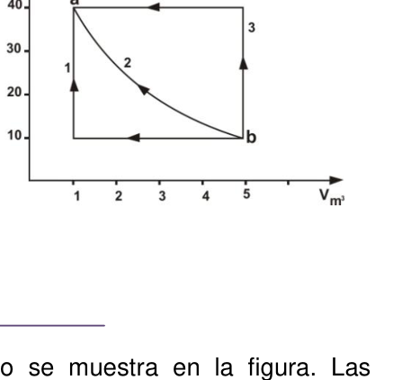
Topic: Thermodynamics Metodi: First Law of Thermodynamics, Thermodynamic Cycle Analysis Competenze: Physical Reasoning Objects: Gas Fonte: Testo (PDF) — p.3
Lavorare in compressione del gas
PT41. La scuola di agricoltura
Generale Alvear, Mendoza.
Un campione di gas che contiene 0,34 Mol si compresse a un volume di 5m3 a 1 m3 mentre la pressione aumenta di 10 Pa a 40 Pa. Compare il lavoro di effettuato nel corso (da b a) di Le Tre . Tracciati Diversi che che mostrano nella figura. Basandosi su Risultati ottenute elabora Una . Conclusione e rappresentazione (in grafico P vs V) il lavoro svolto in ciascun processo.
Topic: Thermodynamics Metodi: First Law of Thermodynamics, Thermodynamic Cycle Analysis Competenze: Physical Reasoning Objects: Gas Fonte: Testo (PDF) — p.3
The following is a list of the types of gas compressor:
PT41. School of Agriculture
General Alvear, Mendoza, please.
A sample of gas consisting of 0.34 mol is compressed by a volume of 5m3 to 1m3 as its pressure increases by 10 Pa a 40 Pa. Compare the work of The following is the list of the types of measures taken: The Three . Trajectories Different That They’re in the figure. Based on the Results obtained It is a very important part of the process. One . The resulting and representative (in graph P vs (v) the work carried out in each process.
Topic: Thermodynamics Metodi: First Law of Thermodynamics, Thermodynamic Cycle Analysis Competenze: Physical Reasoning Objects: Gas Fonte: Testo (PDF) — p.3
Electron en campo electrico
PT42. Escuela de Agricultura
General Alvear, Mendoza.
Un electrón se dirige hacia la derecha como se muestra en la figura. Las regiones de derecha e izquierda tiene un ancho de 60 cm. El electrón parte de la izquierda recorriendo los primeros 60 cm en 1,2 µs . Luego se mueve por una región sombreada en la que hay un campo uniforme y sale en t= 2,85 µs, para terminar impactando en las coordenadas (168,5cm,-33cm) en t= 4 µs. a) Determinar el modulo del campo eléctrico aplicado b) Determinar la dirección del campo eléctrico. Representar en figura
OAF 2014 - 67 c) Como seria en el caso de que la partícula sea un protón.
Topic: Electrostatics, Newtonian Mechanics Metodi: Kinematic Equations, Vector Decomposition Competenze: Physical Reasoning, Mathematical Modeling Objects: Electron Fonte: Testo (PDF) — p.3
Elettro in campo elettrico
PT42. La scuola di agricoltura
Generale Alvear, Mendoza.
Un elettrone si dirige a destra come mostrato nella figura. Le Regioni a destra e a sinistra ha un largo di 60 cm. L’elettrone parte dalla Sinistra , percorrendo i primi 60 cm in 1,2 μs . Poi si muove per una regione ombrosa in cui c’è un campo uniforme e esce a t= 2,85 μs, per finire colpendo le coordinate (168,5 cm,-33 cm) in t=4 μs. a) Determinare il modulo del campo elettrico applicato b) Determinare la direzione del campo elettrico. Rendere conto in figura
OAF 2014 - 67 c) Come sarebbe in caso di particella protonica.
Topic: Electrostatics, Newtonian Mechanics Metodi: Kinematic Equations, Vector Decomposition Competenze: Physical Reasoning, Mathematical Modeling Objects: Electron Fonte: Testo (PDF) — p.3
Electron in the electric field
PT42. School of Agriculture
General Alvear, Mendoza, please.
An electron is heading right as shown in the figure. The Right and left regions have a width of 60 cm. The electron starts from the left running the first 60 cm in 1.2 μs . Then it moves for one . shaded region in which there is a uniform field and it exits at t= 2,85 μs, for The resulting impact on the coordinates (168.5cm,-33cm) at t=4 μs. (a) Determine the module of the applied electric field (b) Determine the direction of the electric field. Figure
The following is the list of the Member States’ financial statements: (c) As would be the case if the particle is a proton.
Topic: Electrostatics, Newtonian Mechanics Metodi: Kinematic Equations, Vector Decomposition Competenze: Physical Reasoning, Mathematical Modeling Objects: Electron Fonte: Testo (PDF) — p.3
Durazno flotante
PT43. Escuela Técnica ORT - Sede Almagro
Ciudad de Buenos Aires.
Temprano el durazno del árbol cayó… y rodando al rio llegó, pero no se hundió hasta el fondo, por lo que la corriente lo arrastró. Luis, que se refrescaba los pies en el agua, notó al verlo pasar que apenas rozaba la superficie desde abajo. “Qué durazno extraño” pensó. Y escribió una canción. a) Si suponemos que tanto el durazno como su carozo son esféricos y que la densidad del carozo es 50% mayor que la del agua del río mientras que la de la pulpa es un 20% menor; ¿cuál será la relación entre el radio del carozo y el del durazno?
(Dato: volumen esfera: )
b) Todos los ríos van al mar, pero este nunca se llenará… Si el durazno llegara en su periplo al mar, que debido a su mayor salinidad tiene una densidad 3% mayor que la del río, ¿qué parte del durazno se asomará del agua?
(Dato: volumen casquete esférico: )
c) El capitán beto que viene navegando en dirección al durazno lo observa con un catalejo de exageradas dimensiones, compuesto por una lente convexa. El tamaño del durazno es 1/10 del tamaño cuando se encuentran a 30m. ¿Cuál es el largo del catalejo? ¿Cuál es el radio de curvatura del lente?
d) 5 segundos después el tamaño de la imagen formada es 1/5 del tamaño del objeto. ¿Cuál es la velocidad del durazno con respecto a Beto?
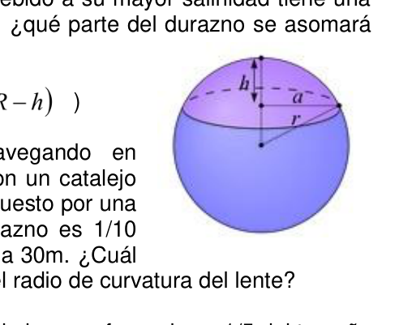
Topic: Fluid Mechanics Metodi: Hydrostatic Equilibrium Competenze: Physical Reasoning Objects: Sphere Fonte: Testo (PDF) — p.3
Durazza galleggiante
PT43. Scuola tecnica ORT - Sede Almagro
Città di Buenos Aires.
Prima l’albero si è abbattuta e si è spinto verso il fiume E’ arrivato, ma non è andato fino in fondo, quindi la Il corrente lo ha trascinato. Luis, che si raffreddò i piedi in l’acqua, notò che passando, stava appena scaricando l’acqua. superficie da sotto. “Che strana dura”, pensò. E ha scritto una canzone. a) Supponiamo che sia il pesce che il suo carozzo siano sferici e che la densità del carozzo è del 50% superiore a quella dell’acqua del fiume. mentre quella della polpa è un 20% inferiore; qual è il rapporto? tra il raggio del carozzo e quello del duro?
(Data: volume sfera: )
b) Tutti i fiumi vanno al mare, ma questo non si riempirà mai Arriverà in viaggio verso il mare, che per la sua maggiore salinità ha un
- La densità del fiume è del 3%, che parte del fiume si spalancherà. dell’acqua?
(Data: volume di casca sferica: )
(c) Il capitano betto che viene a navigare in Dirigendo il duro lo osserva con un catalogo di dimensioni eccessive, composto da una lente convexa. Il grosso del pesce è 1/10 di dimensioni quando si trovano a 30 metri. - Che cosa? è la lunghezza del catalogo? Qual è il raggio di curvatura della lente?
d) 5 secondi dopo la dimensione dell’immagine formata è 1/5 della dimensione dell’oggetto. Qual è la velocità del duro rispetto a Beto?
Topic: Fluid Mechanics Metodi: Hydrostatic Equilibrium Competenze: Physical Reasoning Objects: Sphere Fonte: Testo (PDF) — p.3
The following table shows the results of the calculation of the weighted average weight of the product:
PT43. The technical school ORT - Headquarters Almagro
City of Buenos Aires.
Early the tree’s bark fell and rolling down the river He came, but he didn’t sink to the bottom, so the The current dragged him. Louis, who was cooling his feet on The water, he noticed as he saw it passing he barely rubbed the surface from below. “What a strange, tough one”, he thought. And he wrote a song. (a) If we assume that both the hardness and the coefficient are spherical and The density of the larva is 50% higher than that of the river water. And the pulp is 20% less. What’s the ratio? between the radius of the larva and the radius of the hardened?
(Date: volume of sphere: )
(b) All rivers go to the sea, but it will never be filled It is a sea-going ship, which, due to its high salinity, has a The density of the river is 3 percent higher than that of the river, which part of the harden will come out of water?
(Date: volume of spherical cap: )
(c) The captain of the boat who is sailing on . Direction to the harshness . He watches it with a catalyst . of exaggerated size, composed of a The lens is convex. The size of the hardener is 1/10 of size when they’re 30 meters away. What? Is the length of the catalyst? What is the lens’s radius of curvature?
(d) 5 seconds later the size of the image formed is 1/5 of the size of the object. What’s the speed of the hardcore against Beto?
Topic: Fluid Mechanics Metodi: Hydrostatic Equilibrium Competenze: Physical Reasoning Objects: Sphere Fonte: Testo (PDF) — p.3
Circuito de iluminacion
PT44. Escuela Técnica ORT - Sede Almagro
Ciudad de Buenos Aires.
Para iluminar una habitación se utiliza el siguiente circuito:
OAF 2014 - 68
Donde R1 es una resistencia variable. Se pide: a) Calcular la potencia disipada sobre la lamparita (RL) en función de la resistencia de la misma y la resistencia efectiva r. b) Determinar el valor de R para que la potencia mínima disipada sobre la lamparita sea un 10% de la potencia máxima. c) Si la resistencia tiene una longitud D, calcular el paso mínimo d para que la resolución sea de 1Watt (Dejar expresado en función de los valores de resistencia y voltaje). d) Una fuente real tiene una resistencia interna como se puede ver en la siguiente imagen:
Calcular la potencia disipada sobre la lamparita. e) Hallar el valor de r tal que la potencia disipada sobre la lamparita sea máxima. (Ayuda: Recordar que el mínimo de una parabola se encuentra sobre su vertice.)
Topic: Circuits Metodi: Equivalent Circuit Reduction, Kirchhoff’s Laws Competenze: Physical Reasoning Objects: Resistor Fonte: Testo (PDF) — p.3
Circuito di illuminazione
PT44. Scuola tecnica ORT - Sede Almagro
Città di Buenos Aires.
Per illuminare una stanza si utilizza il seguente circuito:
OAF 2014 - 68
Dove R1 è una resistenza variabile. Si chiede: a) Calcolare la potenza dissipata sulla lamparita (RL) in base alla resistenza di r e resistenza effettiva r. b) Determinare il valore di R in modo che la potenza minima si dissipi sulla la lamparita è il 10% della potenza massima. c) Se la resistenza è longitudinosa D, calcolare il passo minimo d per La risoluzione è di 1Watt (Lasciare espresso in base ai valori di resistenza e di tensione). d) Una fonte reale ha una resistenza interna come si può vedere in seguente immagine:
Calcolare la potenza dissipata sulla lamparita. e) Rendere conto del valore di r in quanto la potenza dissipata sulla lamparita è massimo. (Aiuto: ricordate che il minimo di una parabola si trova sopra la sua verticale.)
Topic: Circuits Metodi: Equivalent Circuit Reduction, Kirchhoff’s Laws Competenze: Physical Reasoning Objects: Resistor Fonte: Testo (PDF) — p.3
The following shall be added to the list of the following:
PT44. The technical school ORT - Headquarters Almagro
City of Buenos Aires.
The following circuit is used to illuminate a room:
The following is the list of the Member States’ financial statements:
Where R1 is a variable resistance. It asks: (a) Calculate the power dissipated over the lamparite (RL) based on the the resistance of the same and the effective resistance r. (b) Determine the R value so that the minimum power dissipates over the lamparite is 10% of maximum power. (c) If the resistance is a length D, calculate the minimum step d so that The resolution is 1Watt (Leave expressed as values of resistance and voltage). (d) An actual source has internal resistance as can be seen in the The following image:
Calculate the dissipated power over the lamp. (e) Find the value of r provided that the power dissipated over the lamp is Maximum. (Help: Remember that the minimum of a parabola is above its vertex.)
Topic: Circuits Metodi: Equivalent Circuit Reduction, Kirchhoff’s Laws Competenze: Physical Reasoning Objects: Resistor Fonte: Testo (PDF) — p.3
Piston nuclear
PT45. Escuela Técnica ORT - Sede Almagro
Ciudad de Buenos Aires.
Como primera etapa de mi proyecto para producir
autos atómicos fabriqué en mi garaje un “pistón
nuclear”, accionado por fisión de Uranio 235. Para
probarlo empecé despacio, disparando un neutrón a
un único átomo pesado.
a) Si el átomo estaba en reposo y el neutrón
capturado tenía una energía de 2eV, ¿Qué
velocidad adquirió el Uranio 236? Suponer
que todo el proceso es clásico y a
velocidades bajas.
b) El átomo de uranio se desintegró en 92Kr,
141Ba y 3 neutrones rápidos (de velocidad v0
y momento lineal total nulo). Si la energía
del sistema Kr-Ba es 170 MeV, ¿cuál será
la energía cinética del Kr y el Ba?
c) Si ahora aumento la escala y fisiono por
completo un nanogramo de 235U y todo se fisiona por el proceso de los
puntos anteriores, ¿cuál estimas será la temperatura del gas de Ba y Kr
dentro del cilindro? (
)
d) Si el cilindro tiene inicialmente un volumen de ½ litro, suponiendo que el
sistema se comporta como un gas ideal, ¿qué presión soportará el
recipiente?
OAF 2014 - 69 Datos: masa neutrón = 1.674927×10^-27 kg Masa uranio = 3.902996×10^-22 gr Masa Kr = 1.3915×10^-22 gr Masa Ba = 2.28037×10^-22 gr
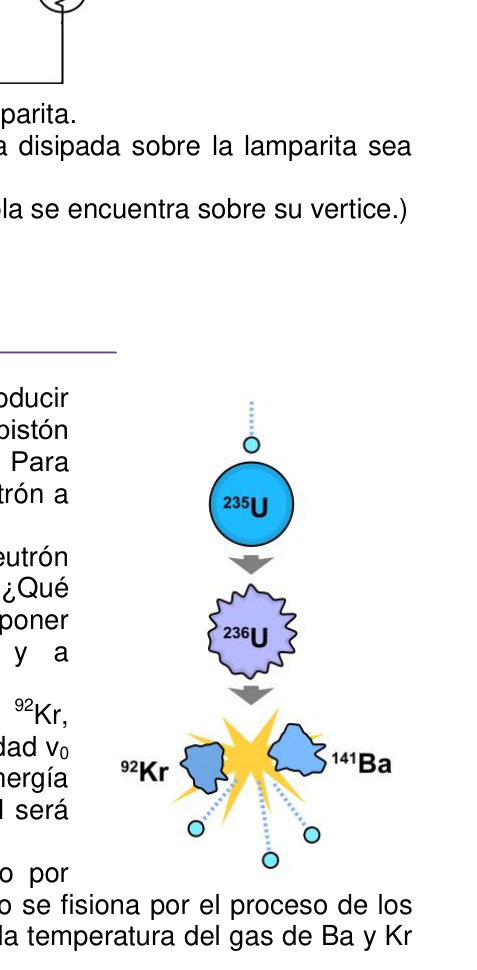
Topic: Nuclear & Particle Physics, Conservation of Momentum Metodi: Conservation of Momentum, Mass-Energy Equivalence Competenze: Physical Reasoning Objects: Nucleus, Particle Beam Fonte: Testo (PDF) — p.3
Pistone nucleare
PT45. Scuola tecnica ORT - Sede Almagro
Città di Buenos Aires.
Come primo passo del mio progetto di produzione Auto atomiche ho fabbricato nel mio garage un pistone nucleare, azionato dalla fissione di Uranio 235. Per Per provarlo ho iniziato lentamente, sparando un neutrone a un singolo atomo pesante. a) Se l’ atomo era a riposo e il neutrone Capturato aveva un’energia di 2eV, che? La velocità acquista l’Uranio 236? Supponiamo che che l’intero processo è classico e a
- Basse velocità. b) L’atomo di uranio si è deconteso a 92Kr, 141Ba e 3 neutroni veloci (a velocità v0 e tempo lineare totale zero). Se l’energia Il sistema Kr-Ba è di 170 MeV, che cosa sarà? l’energia cinetica del Kr e del Ba? c) Se ora aumentano la scala e fissione per Un nanogrammo di 235U è completamente fisso e tutto viene fisso dal processo di
- le temperature del gas di Ba e Kr. all’interno del cilindro? ( ) d) Se il cilindro ha un volume iniziale di 1⁄2 litro, supponendo che il cilindro sia Il sistema si comporta come un gas ideale, che pressione sopporterà il contenitore?
OAF 2014 - 69 Dati: massa neutrona = 1.674927×10^-27 kg Massa di uranio = 3.902996×10^-22 gr Massa Kr = 1.3915×10^-22 gr Massa Ba = 2.28037×10^-22 gr
Topic: Nuclear & Particle Physics, Conservation of Momentum Metodi: Conservation of Momentum, Mass-Energy Equivalence Competenze: Physical Reasoning Objects: Nucleus, Particle Beam Fonte: Testo (PDF) — p.3
The fuel consumption of the fuel is calculated by using the following formula:
PT45. The technical school ORT - Headquarters Almagro
City of Buenos Aires.
As the first stage of my project to produce I made a gun in my garage . Nuclear, powered by the fission of Uranium 235. For I started slowly, firing a neutron at A single heavy atom. (a) If the atom was at rest and the neutron was at rest Captured had a power of 2eV, what? speed acquired by Uranium 236? Suppose The whole process is classic and a Low speeds. (b) The uranium atom decayed at 92Kr, 141Ba and 3 fast neutrons (speed v0 and linear momentum is total zero). If the energy The Kr-Ba system is 170 MeV, what will it be? The kinetic energy of Kr and Ba? (c) If now increase the scale and fission by The total nanogram of 235U is completely fissioned by the process of previous points, what do you estimate will be the temperature of the Ba and Kr gas inside the cylinder? ( ) (d) If the cylinder has an initial volume of 1⁄2 litre, assuming that the system behaves like an ideal gas, what pressure will the container?
The following is the list of the Member States’ financial statements: The data are from the data set. The weight of uranium = 3.902996×10^-22 gr The weight of the product shall be: The weight of the product shall be:
Topic: Nuclear & Particle Physics, Conservation of Momentum Metodi: Conservation of Momentum, Mass-Energy Equivalence Competenze: Physical Reasoning Objects: Nucleus, Particle Beam Fonte: Testo (PDF) — p.3
El paracaidista
PT46. Instituto Primo Capraro
San Carlos de Bariloche, Río Negro.
El paracaidista
Cuando una persona se deja caer desde una determinada altura la presencia del
aire ejerce una fuerza que como sabemos va variando en función de la velocidad
del cuerpo. Para un estudio más completo de la caída se proporciona una gráfica
de la velocidad en función del tiempo de un paracaidista que salta desde una
altura H y luego de descender haciendo acrobacias, abre su paracaídas hasta
que llega por fin al suelo. Con la información obtenida del gráfico se te pide:
a) Describe el movimiento del paracaidista en cada uno de los tramos (1 a
5) en que se dividió el gráfico cartesiano.
b) Dibuja los diagramas de cuerpo libre correspondientes a cada uno de
los tramos.
c) Con ayuda del gráfico determine la aceleración media del paracaidista
en cada tramo.
d) Con ayuda del gráfico determine la altura desde donde se dejó caer.
e) Represente el gráfico cartesiano de la posición en función del tiempo.
f) Sabiendo que el paracaidista tiene una masa de 75 kg, determinar la
fuerza de rozamiento con el aire que actúa sobre el mismo en los
siguientes instantes: 10 s, 50 s, 67 s y 80 s.
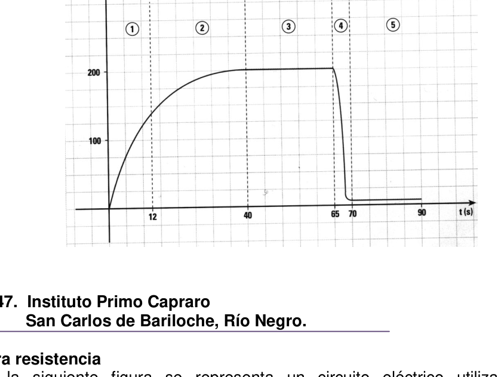
Topic: Newtonian Mechanics Metodi: Free-Body Diagram, Differential Equations Competenze: Physical Reasoning Objects: — Fonte: Testo (PDF) — p.3
Il paracadutista
PT46. Istituto Primo Capraro
San Carlo di Bariloche, Rio Negro.
Il paracadutista. Quando una persona si fa cadere da una certa altezza la presenza del L’aria esercita una forza che, come sappiamo, varia a seconda della velocità. del corpo. Per un studio più completo della caduta è fornito un grafico di velocità a seconda del tempo di un paracadutista che salta da una Alto H e dopo aver fatto un’acrobazia, aprì il paracadute fino a che finalmente arriva al suolo. Con le informazioni ottenute dal grafico ti viene chiesto: a) Descrive il movimento del paracadutista in ciascun tratto (1 a ). 5) in cui si è diviso il grafico cartesiano. b) Disegna i diagrammi di corpo libero corrispondenti a ciascuno di le trattiamo. (c) Con il grafico si determina l’accelerazione media del paracadutista. in ogni tratto. d) Con il grafico si determina l’altezza da cui è stato abbassato. e) Rappresenta il grafico cartesiano della posizione in funzione del tempo. f) Sapendo che il paracadutista ha una massa di 75 kg, determinare la forza di ruggine con l’aria che agisce sullo stesso in successivi: 10 s, 50 s, 67 s e 80 s.
Topic: Newtonian Mechanics Metodi: Free-Body Diagram, Differential Equations Competenze: Physical Reasoning Objects: — Fonte: Testo (PDF) — p.3
The parachute is a man.
PT46. The first is the Capraro Institute.
St. Charles of Bariloche, Rio Negro.
The paratrooper . When a person falls from a certain height the presence of the Air exerts a force that we know varies with speed. of the body. For a more complete study of the fall a graph is provided of the speed based on the time of a parachutist jumping from a Height H and after stepping down, he opens his parachute up. It’s finally getting to the ground. With the information obtained from the chart you are asked: (a) Describe the paratrooper’s movement in each of the sections (1 to ). 5) in which the Cartesian graph was divided. (b) Draw the free-body diagrams corresponding to each of We’re going to cut them. (c) Using the chart determine the average acceleration of the parachutist. every stretch. (d) Use the chart to determine the height from which it fell. (e) It represents the Cartesian graph of the position in terms of time. (f) Knowing that the parachutist weighs 75 kg, determine the force of friction with air acting on it in the The following moments: 10 s, 50 s, 67 s and 80 s.
Topic: Newtonian Mechanics Metodi: Free-Body Diagram, Differential Equations Competenze: Physical Reasoning Objects: — Fonte: Testo (PDF) — p.3
Pura resistencia
PT47. Instituto Primo Capraro
San Carlos de Bariloche, Río Negro.
Pura resistencia En la siguiente figura se representa un circuito eléctrico utilizando una convención muy usada en los diagramas de circuitos. La batería, o fuente de alimentación) no se muestra de manera explícita. Se entiende que el punto de la parte superior, rotulado con 36 V, está conectado al terminal positivo de una batería de 36 V de resistencia interna despreciable y que el símbolo de “tierra”
OAF 2014 - 70 de la parte inferior está conectado al terminal negativo de la batería. El circuito se completa a través de la batería, aunque no se muestre en el diagrama. Para el caso en que el interruptor S se encuentre abierto se te pide: a) Encontrar la resistencia equivalente del circuito dibujando los circuitos equivalentes. b) Calcular la corriente que pasa por cada resistencia. c) Hallar la diferencia de potencial entre los puntos a y b (Vab), o sea el potencial en el punto a con respecto al punto b. Para el caso en que el interruptor S está cerrado se te pide: d) Calcular la corriente que pasa por el interruptor. e) Hallar la resistencia equivalente del circuito con el interruptor cerrado.
Topic: Circuits Metodi: Kirchhoff’s Laws, Equivalent Circuit Reduction Competenze: Physical Reasoning Objects: Resistor, Battery Fonte: Testo (PDF) — p.3
Pura resistenza
PT47. Istituto Primo Capraro
San Carlo di Bariloche, Rio Negro.
Pura resistenza . La figura seguente rappresenta un circuito elettrico utilizzando un una convenzione molto usata nei diagrammi di circuiti. La batteria, o fonte di La dieta non è mostrata esplicitamente. Si comprende che il punto di La parte superiore, etichettata con 36 V, è collegata al terminale positivo di una Batteria 36 V di resistenza interna disprezzabile e che il simbolo di terra
OAF 2014 - 70 La parte inferiore è collegata al terminale negativo della batteria. Il circuito si completa attraverso la batteria, anche se non è mostrata nel diagramma. In caso di interruttore S aperto, è richiesto: a) Trovare resistenza equivalente del circuito disegnando i circuiti equivalenti. b) Calcolare il corrente che passa attraverso ogni resistenza. c) Trovare la differenza di potenziale tra i punti a e b (Vab), cioè il Potenziale al punto a rispetto al punto b. Per il caso in cui il interruttore S è chiuso ti viene chiesto: d) Calcolare il corrente che passa attraverso il
- Il interruttore. e) Trovare la resistenza equivalente del circuito con il interruttore chiuso.
Topic: Circuits Metodi: Kirchhoff’s Laws, Equivalent Circuit Reduction Competenze: Physical Reasoning Objects: Resistor, Battery Fonte: Testo (PDF) — p.3
The following table shows the following:
PT47. The first is the Capraro Institute.
St. Charles of Bariloche, Rio Negro.
Pure resistance . The following figure shows an electrical circuit using a A convention widely used in circuit diagrams. The battery, or source of The foodstuffs) are not explicitly shown. It is understood that the point of the The upper part, labeled 36 V, is connected to the positive terminal of a 36 V battery of despicable internal resistance and that symbol of earth
The following is the list of the Member States’ financial statements: The bottom of the battery is connected to the negative battery terminal. The circuit . is completed via the battery, although not shown on the diagram. In the event that the S switch is open, you are asked to: (a) Find the equivalent resistance The circuit drawing the circuits. equivalent. (b) Calculate the current passing through every resistance. (c) Find the potential difference between points a and b (Vab), i.e. potential at the point to with respect to point (b). For the case that the S switch is Closed you are asked: (d) Calculate the current flowing through the switch. (e) Find the equivalent resistance of the circuit with the switch closed.
Topic: Circuits Metodi: Kirchhoff’s Laws, Equivalent Circuit Reduction Competenze: Physical Reasoning Objects: Resistor, Battery Fonte: Testo (PDF) — p.3
Tejos
PT48. Instituto Primo Capraro
San Carlos de Bariloche, Río Negro.
Tejos
En un lugar del “Bariloche Shopping Center”, había un juego consistente en una
pista, con lomo de burro y rampas como se esquematiza en la figura. El juego
consistía en lanzar un tejo desde A, de tal manera que quedara aprisionado en
el pozo CD. Un jugador con conocimientos de física, inspirado en el juego,
decidió hacer algunos cálculos como los que se piden a continuación,
suponiendo la pista sin rozamiento, salvo en el tramo HG:
a) ¿Cuál es la mínima velocidad con la que se deberá lanzar el tejo, desde
A, para que supere el punto C?
b) Para el caso anterior y suponiendo que el coeficiente de rozamiento
entre el tejo y la pista en el tramo HG es 0.8, determinar la altura que
alcanzará en el punto D.
c) ¿Cuál es la máxima velocidad con la que podrá partir el tejo, desde A,
para que esté siempre en contacto con la pista? (Es decir, que no vuele,
si se despega de la pista el jugador pierde).
d) ¿Cuál es el máximo coeficiente de rozamiento cinético que puede haber
entre los puntos HG, para que, habiendo pasado por C sin que el
jugador haya perdido, el tejo regrese justo hasta el punto C?
OAF 2014 - 71
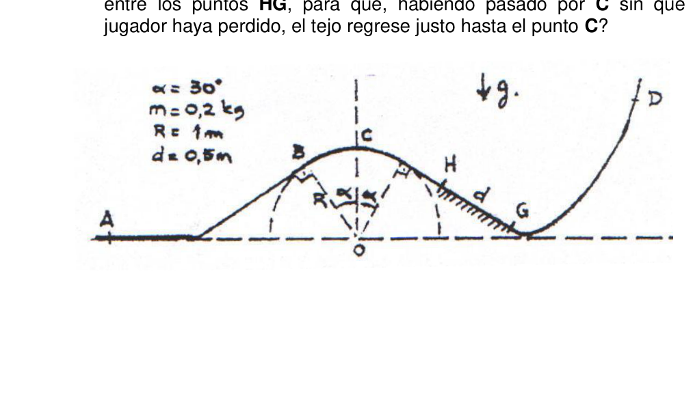
Topic: Conservation of Energy, Newtonian Mechanics Metodi: Energy Conservation Method, Free-Body Diagram Competenze: Physical Reasoning Objects: — Fonte: Testo (PDF) — p.3
Tessi
PT48. Istituto Primo Capraro
San Carlo di Bariloche, Rio Negro.
Tessuti In un posto del Bariloche Shopping Center c’era un gioco consistente in una pista, con spina di asino e rampie come illustrato nella figura. Il gioco Era lanciare un telaio da A in modo tale che fosse intrappolato in il pozzo CD. Un giocatore dotato di conoscenze fisiche, ispirato al gioco, ha deciso di fare qualche calcolo come quello che viene chiesto di seguito, supponendo che la pista non sia stata macchiata, tranne nel tratto HG: a) Qual è la velocità minima con cui il tessuto deve essere lanciato, a partire da A, per superare il punto C? b) Per il caso precedente e supponendo che il coefficiente di rottura tra il tepe e la pista nel tratto HG è 0,8, determinare l’altezza che raggiungerà il punto D. c) Qual è la velocità massima con cui il tessuto può partire da A, Per essere sempre in contatto con il tracciato? (Voglio dire che non vola, se si allontana dalla pista il giocatore perde). d) Qual è il massimo coefficiente di rottura cinetica che può esserci tra i punti HG, in modo che, dopo aver passato per C senza che il Se il giocatore ha perso, il telaio torna proprio al punto C?
OAF 2014 - 71
Topic: Conservation of Energy, Newtonian Mechanics Metodi: Energy Conservation Method, Free-Body Diagram Competenze: Physical Reasoning Objects: — Fonte: Testo (PDF) — p.3
The following table shows the following:
PT48. The first is the Capraro Institute.
St. Charles of Bariloche, Rio Negro.
- Weaves . At a place in the Bariloche Shopping Center, there was a consistent game in a track, with donkey back and ramps as outlined in the figure. The game . It was to throw a web from A, so that it would be trapped in The CD well. A physically gifted player, inspired by the game, He decided to do some calculations like the ones below, assuming the track is unroasted except in the HG section: (a) What is the minimum speed at which the yarn shall be thrown, from A, to get past the C point? (b) For the previous case and assuming that the coefficient of friction between the mesh and the track in the HG section is 0.8, determine the height that It will reach point D. (c) What is the maximum speed at which the yarn can be broken from A, So he’s always in touch with the lead? (I mean, it doesn’t fly, If the player leaves the track, the player loses. (d) What is the maximum kinetic friction coefficient that can be found between the HG points, so that, having passed through C without the If the player loses, the weave returns right to point C?
The following is the list of the countries of the European Union:
Topic: Conservation of Energy, Newtonian Mechanics Metodi: Energy Conservation Method, Free-Body Diagram Competenze: Physical Reasoning Objects: — Fonte: Testo (PDF) — p.3
Pendulo simple
PT49. Escuela Secundaria San Andrés
Olivos, Buenos Aires.
Esta pregunta es sobre el péndulo simple. (A) Un péndulo consta de un bob suspendido por una cuerda inextensible luz de un soporte rígido. El péndulo se mueve hacia un lado y luego puesto en libertad. El gráfico boceto muestra cómo el desplazamiento de la masa del péndulo de someterse a un movimiento armónico simple varía con el tiempo más de un período de tiempo.
En el gráfico dibujo anterior, (I) la etiqueta con la letra A un punto en el que la aceleración de la masa del péndulo es un máximo. (Ii) etiquetar con la letra V un punto en el que la velocidad de la masa del péndulo es un máximo. (B) Explica por qué la magnitud de la tensión en la cuerda en el punto medio de la oscilación es mayor que el peso de la masa del péndulo. (C) El péndulo se mueve a un lado hasta que su centro es de 25 mm por encima de su posición de reposo y luego puesto en libertad.
(I) muestran que la velocidad del péndulo en el punto medio de la oscilación es
0.70 ms -1.
(Ii) La masa del péndulo es 0.057 kg. El centro de la masa del péndulo es de
0,80 m por debajo del soporte. Calcular la magnitud de la tensión de la cuerda
cuando el péndulo está en posición vertical por debajo del punto de suspensión.
(D) El punto de suspensión del péndulo se mueve de lado a lado con una
pequeña amplitud y con una frecuencia de conducción variable de f.
OAF 2014 - 72
Para cada valor de la frecuencia de accionamiento se alcanza una velocidad constante de amplitud constante A. Las oscilaciones del péndulo son ligeramente amortiguadas. (I) En los ejes continuación, esbozar una gráfica para mostrar la variación de A con f.
(Ii) Explica, con referencia a la gráfica en (d) (i), lo que se entiende por resonancia.
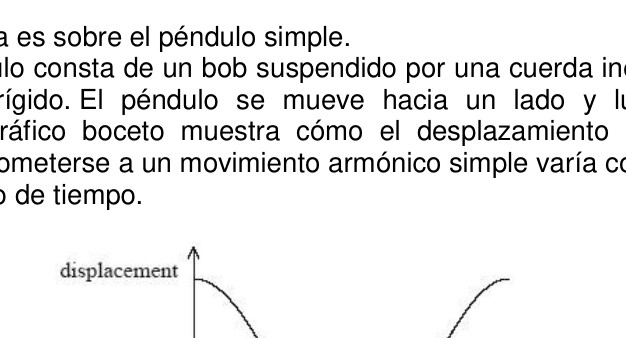
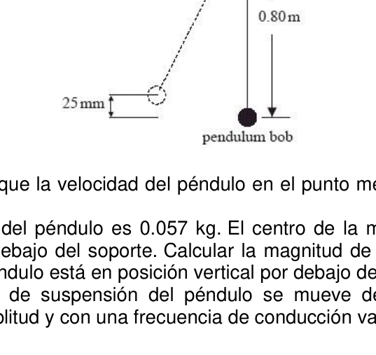
Topic: Oscillations & Waves Metodi: Simple Harmonic Motion Analysis Competenze: Physical Reasoning Objects: Pendulum, String Fonte: Testo (PDF) — p.3
Pendolo semplice
PT49. San Andrés High School
Olivos, Buenos Aires.
Questa domanda riguarda il semplice pendolo. (A) Un pendolo è costituito da un bob susposto da una corda inestensibile di luce di un supporto rigido. Il pendolo si sposta verso un lato e poi viene messo in La libertà. Il grafico di bozza mostra come il spostamento della massa del Il pendolo di sottoporsi a un semplice movimento armonico varia con il tempo più di un certo periodo di tempo.
Nel grafico del disegno precedente, (I) la taglia con la lettera A un punto in cui l’accelerazione della massa del Il pendolo è un massimo. (ii) etichettare con la lettera V un punto in cui la velocità di massa del Il pendolo è un massimo. (B) Spiega perché la grandezza della tensione nella corda al punto medio di l’oscillazione è maggiore del peso della massa del pendolo. (C) Il pendolo si sposta verso un lato fino a che il suo centro è di 25 mm sopra dalla sua posizione di riposo e poi rilasciato.
(I) mostrano che la velocità del pendolo al punto medio dell’oscillazione è 0.70 ms -1. (ii) La massa del pendolo è di 0,057 kg. Il centro di massa del pendolo è di 0,80 m sotto il supporto. Calcolare la grandezza della tensione della corda quando il pendolo è in posizione verticale sotto il punto di sospensione. (D) Il punto di sospensione del pendolo si muove da un lato all’altro con una con una larghezza ridotta e con una frequenza di conduzione variabile di f.
OAF 2014 - 72
Per ogni valore della frequenza di funzionamento si raggiunge una velocità di ampiezza costante A. Le oscillazioni del pendolo sono leggermente ammortizzate. (I) Gli assi seguenti, disegnare un grafico per mostrare la variazione di A con f.
(ii) Spiega, con riferimento al grafico di (d) (i), cosa si intende per risonanza.
Topic: Oscillations & Waves Metodi: Simple Harmonic Motion Analysis Competenze: Physical Reasoning Objects: Pendulum, String Fonte: Testo (PDF) — p.3
The following table shows the following:
PT49. San Andrés High School
Olive trees, from Buenos Aires.
This question is about the simple pendulum. (A) A pendulum consists of a bob suspended by an unextended light string of a rigid support. The pendulum moves sideways and then is placed in Freedom. The sketch graph shows how the mass displacement of the The pendulum of submission to a simple harmonic movement varies over time. of a period of time.
In the graph above, (i) the label with the letter A at a point where the mass acceleration of the The pendulum is a maximum. (ii) label with the letter V a point at which the mass velocity of the The pendulum is a maximum. (B) Explains why the magnitude of the tension on the string at the midpoint of The oscillation is greater than the weight of the pendulum. (C) The pendulum moves sideways until its centre is 25 mm above it from his resting position and then released.
(I) show that the pendulum’s speed at the center of oscillation is 0.70 ms -1. (ii) The mass of the pendulum is 0.057 kg. The center of mass of the pendulum is of 0.80 m below the support. Calculate the magnitude of the tension of the rope when the pendulum is in a vertical position below the suspension point. (D) The pendulum’s suspension point moves side by side with a a small width and variable driving frequency of f.
The following is the list of the Member States’ financial statements:
For each value of the drive frequency a speed is reached A constant of constant width A. The pendulum oscillations are slightly cushioned. (i) On the following axes, sketch a graph to show the variation of A to F.
(ii) Explain, by reference to the graph in (d) (i), what is meant by The resonance.
Topic: Oscillations & Waves Metodi: Simple Harmonic Motion Analysis Competenze: Physical Reasoning Objects: Pendulum, String Fonte: Testo (PDF) — p.3
Sonda en orbita
PT50. Escuela Secundaria San Andrés
Olivos, Buenos Aires.
Esta pregunta se refiere a una sonda en órbita. Una sonda de masa m se encuentra en una órbita circular de radio r alrededor de un planeta esférico de masa M.
(A) Deducir de la sonda en órbita que su
(I) la velocidad es v = .
(Ii) la energía total es E = .
(C) Se requiere ahora para colocar la sonda en otra órbita circular más lejos del
planeta.
Para ello, los motores de la sonda serán despedidos por un tiempo muy corto.
Diga y explique si el trabajo realizado en la sonda por los motores es positivo,
negativo o cero.
OAF 2014 - 73
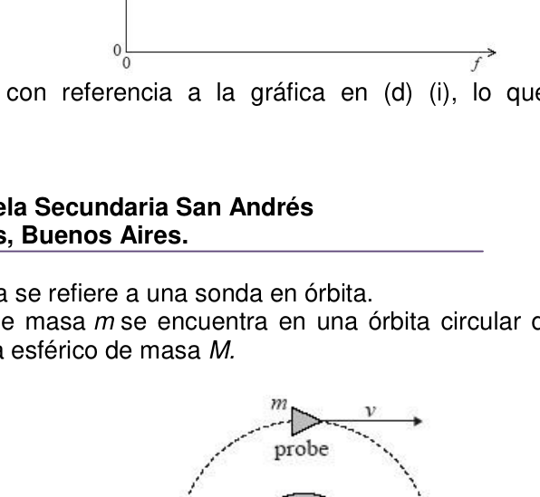
Topic: Gravitation Metodi: Newton’s Law of Gravitation, Energy Conservation Method Competenze: Physical Reasoning Objects: Satellite, Planet Fonte: Testo (PDF) — p.3
Sonda in orbita
PT50. San Andrés High School
Olivos, Buenos Aires.
Questa domanda riguarda una sonda in orbita. Una sonda di massa m si trova in un’orbita circolare di r radio intorno di un pianeta sferico di massa M.
(A) Deduci dalla sonda in orbita che la sua (I) la velocità è v = . (ii) l’ energia totale è E = . (C) È ora necessario posizionare la sonda in un’altra orbita circolare più lontana da pianeta. Per questo, i motori della sonda saranno disattivati per un breve periodo. Di’ e spiega se il lavoro svolto sulla sonda dai motori è positivo, negativo o zero.
OAF 2014 - 73
Topic: Gravitation Metodi: Newton’s Law of Gravitation, Energy Conservation Method Competenze: Physical Reasoning Objects: Satellite, Planet Fonte: Testo (PDF) — p.3
The following shall be added to the list of the following:
PT50. San Andrés High School
Olive trees, from Buenos Aires.
This question concerns a probe in orbit. A m-mass probe is in a circular orbit of radius r around of a spherical planet with mass M.
(A) To deduce from the probe in orbit that its (I) the velocity is v = . (ii) the total energy is E = . (C) It is now required to place the probe in another circular orbit further from the Earth. planet. To do this, the probe’s engines will be shut down for a very short time. Tell and explain if the work done on the probe by the engines is positive, negative or zero.
The following is the list of the countries of the European Union:
Topic: Gravitation Metodi: Newton’s Law of Gravitation, Energy Conservation Method Competenze: Physical Reasoning Objects: Satellite, Planet Fonte: Testo (PDF) — p.3
Campos electricos y placas
PT51. Escuela Secundaria San Andrés
Olivos, Buenos Aires.
Esta pregunta se refiere a los campos eléctricos y los circuitos eléctricos. (A) Dos en paralelo, cargada placas de metal A y B están en el vacío.
En un instante particular, un electrón está en el punto P. En el diagrama, dibujar (I) el patrón de campo eléctrico debido a las placas. (Ii) una flecha para representar la dirección de la fuerza sobre el electrón en P. (B) La aceleración del electrón en P es 8,8 × 10 14 ms -2. Determinar la magnitud de la intensidad de campo eléctrico en el punto P. (C) La energía potencial eléctrica de los cambios de electrones por 1,9 × 10 -17 J medida que se mueve de una placa a la otra. Demostrar que la diferencia de potencial entre las placas es de 120 V. (D) Una resistencia R y una lámpara de filamento de L están conectados en serie con una batería. La batería tiene una fem de 12 V y resistencia interna 4,0 Ω. La diferencia de potencial a través del filamento de la lámpara es 3,0 V y la corriente en el filamento es de 0,25 A.
(I) Calcule la potencia total suministrada por la batería. (Ii) Calcular la potencia disipada en el circuito externo. (Iii) Determinar la resistencia de la resistencia R.
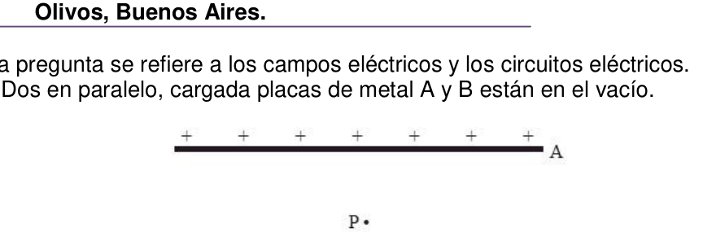
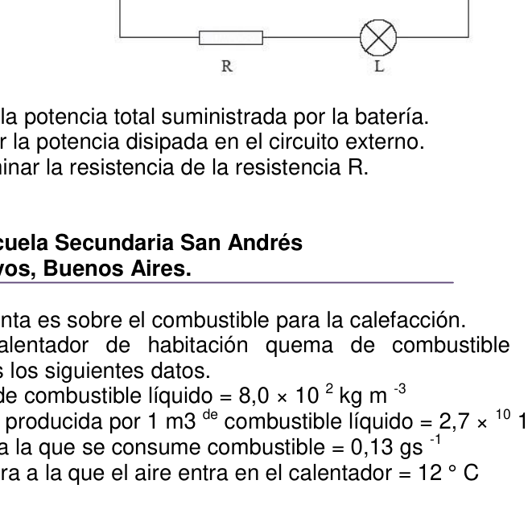
Topic: Electrostatics Metodi: Electric Potential Method, Coulomb’s Law Competenze: Physical Reasoning Objects: Electron, Capacitor Fonte: Testo (PDF) — p.3
Campaggi elettrici e schede
PT51. San Andrés High School
Olivos, Buenos Aires.
La domanda riguarda i campi elettrici e i circuiti elettrici. (A) Due assi paralleli, cariche di piastre di metallo A e B sono nel vuoto.
In un istante particolare, un elettrone è al punto P. Nel diagramma, disegnare. (I) il pattern del campo elettrico dovuto alle plache. (ii) un’arcia per rappresentare la direzione della forza sull’elettrone in P. (B) L’accelerazione dell’elettrone in P è 8,8 × 10 14 ms -2. Determinare la magnitudine di intensità del campo elettrico al punto P. (C) L’energia potenziale elettrica dei cambi di elettroni per 1,9 × 10 -17 J La misura in cui si muove da una piastra all’altra. Prove che la differenza di Potenza tra le plache è di 120 V. (D) Una resistenza R e una lampada a filamento L sono collegate in serie. con una batteria. La batteria ha una fem di 12 V e una resistenza interna di 4.0 Ω. La La differenza di potenziale attraverso il filamento della lampada è di 3,0 V e il corrente nel filamento è di 0,25 A.
(I) Calcolare la potenza totale fornita dalla batteria. (ii) Calcolare la potenza dissipata nel circuito esterno. (iii) Determinare la resistenza della resistenza R.
Topic: Electrostatics Metodi: Electric Potential Method, Coulomb’s Law Competenze: Physical Reasoning Objects: Electron, Capacitor Fonte: Testo (PDF) — p.3
Electric fields and plates
PT51. San Andrés High School
Olive trees, from Buenos Aires.
This question concerns electric fields and electrical circuits. (A) Two parallel, loaded metal plates A and B are in the vacuum.
At a particular moment, an electron is at the point P. In the diagram, draw. (I) the pattern of electric field due to the plates. (ii) an arrow to represent the direction of the force on the electron in P. (B) The electron acceleration at P is 8,8 × 10 14 ms -2. Determine the magnitude of the electric field intensity at point P. (C) The electric potential energy of electron shifts by 1,9 × 10 -17 J The amount of time it moves from one plate to another. Prove that the difference of The potential between the plates is 120 V. (D) An R resistor and an L filament lamp are connected in series. with a battery. The battery has a 12 V fem and internal resistance of 4.0 Ω. La The potential difference through the filament of the lamp is 3.0 V and the current The filament is 0.25 A.
(I) Calculate the total power supplied by the battery. (ii) Calculate the dissipated power in the external circuit. (iii) Determine the resistance of resistance R.
Topic: Electrostatics Metodi: Electric Potential Method, Coulomb’s Law Competenze: Physical Reasoning Objects: Electron, Capacitor Fonte: Testo (PDF) — p.3
Combustible para calefaccion
PT52. Escuela Secundaria San Andrés
Olivos, Buenos Aires.
Esta pregunta es sobre el combustible para la calefacción.
(B) Un calentador de habitación quema de combustible líquido y están
disponibles los siguientes datos.
Densidad de combustible líquido = 8,0 × 10 2 kg m -3
La energía producida por 1 m3 de combustible líquido = 2,7 × 10 10 J
Velocidad a la que se consume combustible = 0,13 gs -1
Temperatura a la que el aire entra en el calentador = 12 ° C
OAF 2014 - 74
Temperatura a la que el aire sale del calentador = 32 ° C
Calor específico del aire = 990 J kg -1 K -1
(I) utilizar los datos para calcular la potencia de salida del calentador de la
habitación, haciendo caso omiso de la potencia requerida para convertir el
combustible líquido en un gas.
(Ii) Toda la energía de salida del calentador de la habitación eleva la temperatura
del aire que se mueve a través de él. Utilizar los datos para calcular la masa de
aire que se mueve a través de la calefacción de la habitación en un segundo.
Topic: Thermodynamics Metodi: First Law of Thermodynamics Competenze: Physical Reasoning Objects: Gas Fonte: Testo (PDF) — p.3
Fruiccio per il riscaldamento
PT52. San Andrés High School
Olivos, Buenos Aires.
Questa domanda riguarda il combustibile per il riscaldamento. (B) Un riscaldatore di stanza brucia combustibile liquido e sono La Commissione ha adottato una decisione che prevede che il regolamento di esecuzione del regolamento di esecuzione sia stato adottato. Densità di combustibile liquido = 8,0 × 10 2 kg m -3 L’energia prodotta per 1 m3 di combustibile liquido = 2,7 × 10 10 J Velocità di consumo di carburante = 0,13 gs -1 Temperatura a cui l’aria entra nel riscaldatore = 12 ° C
OAF 2014 - 74 Temperatura a cui l’aria esce dal riscaldatore = 32 ° C Calore specifico dell’aria = 990 J kg -1 K -1 (I) utilizzare i dati per calcolare la potenza di uscita del riscaldatore di La capacità di conversione è stata ridotta. combustibile liquido in gas. (ii) L’energia di uscita del riscaldatore della stanza aumenta la temperatura. dell’aria che si muove attraverso di esso. Utilizzare i dati per calcolare la massa di aria che si muove attraverso il riscaldamento della stanza in un secondo.
Topic: Thermodynamics Metodi: First Law of Thermodynamics Competenze: Physical Reasoning Objects: Gas Fonte: Testo (PDF) — p.3
Heating fuel
PT52. San Andrés High School
Olive trees, from Buenos Aires.
This question is about the fuel for the heating. (B) A room heater burns liquid fuel and they are The following data are available. The following conditions shall apply: The energy produced by 1 m3 of liquid fuel = 2,7 × 10 10 J Fuel consumption rate = 0.13 gs -1 The temperature at which air enters the heater = 12 ° C
The following is the list of the Member States’ financial statements: The temperature at which the air exits the heater = 32 ° C The specific heat of the air = 990 J kg -1 K -1 (i) use the data to calculate the output power of the heater of the room, ignoring the power required to convert the liquid fuel in a gas. (ii) All the output power from the room heater raises the temperature of the air moving through it. Use the data to calculate the mass of air that moves through the room heater in a second.
Topic: Thermodynamics Metodi: First Law of Thermodynamics Competenze: Physical Reasoning Objects: Gas Fonte: Testo (PDF) — p.3
Energia interna y gases ideales
PT53. Escuela Secundaria San Andrés
Olivos, Buenos Aires.
Esta pregunta se refiere a la energía interna, el calor y los gases ideales. (A) La energía interna de una pieza de cobre se incrementa por calentamiento. (Ii) La pieza de cobre tiene una masa de 0,25 kg. El aumento de la energía interna del cobre es de 1,2 × 10 3 J y su aumento de la temperatura es 20 K. estimar la capacidad de calor específico del cobre. (B) Un gas ideal se mantiene en un cilindro por un pistón que es libre de moverse. El gas se calienta de tal manera que aumenta su energía interna y la presión permanece constante. Utilice el modelo molecular de los gases ideales para explicar (I) el aumento de la energía interna. (Ii) cómo la presión se mantiene constante.
Topic: Thermodynamics Metodi: First Law of Thermodynamics, Ideal Gas Law Competenze: Physical Reasoning Objects: Gas, Piston Fonte: Testo (PDF) — p.3
Energia interna e gas ideali
PT53. San Andrés High School
Olivos, Buenos Aires.
Questa domanda riguarda l’energia interna, il calore e i gas ideali. (A) L’energia interna di un pezzo di rame è aumentata dal riscaldamento. (ii) La pietra di rame ha una massa di 0,25 kg. L’aumento dell’energia La temperatura interna del rame è 1,2 × 10 3 J e il suo aumento di temperatura è 20 K. stimare la capacità di calore specifica del rame. (B) Un gas ideale viene mantenuto in un cilindro da un pistone che è libero da
- Si muove. Il gas si riscalderà in modo tale da aumentare la sua energia interna e la sua la pressione rimane costante. Utilizzare il modello molecolare dei gas ideali Per spiegare (I) l’aumento dell’energia interna. (ii) come la pressione si mantiene costante.
Topic: Thermodynamics Metodi: First Law of Thermodynamics, Ideal Gas Law Competenze: Physical Reasoning Objects: Gas, Piston Fonte: Testo (PDF) — p.3
The energy efficiency of the system is determined by the following criteria:
PT53. San Andrés High School
Olive trees, from Buenos Aires.
This question concerns internal energy, heat and ideal gases. (A) The internal energy of a copper piece is increased by heating. (ii) The copper part has a mass of 0.25 kg. The increase in energy The internal temperature of the copper is 1,2 × 10 3 J and its temperature increase is 20 K. estimate the specific heat capacity of copper. (B) An ideal gas is kept in a cylinder by a piston that is free of move. The gas is heated in such a way that its internal energy and pressure remains constant. Use the molecular model of ideal gases. To explain (i) the increase in internal energy. (ii) how the pressure is kept constant.
Topic: Thermodynamics Metodi: First Law of Thermodynamics, Ideal Gas Law Competenze: Physical Reasoning Objects: Gas, Piston Fonte: Testo (PDF) — p.3
Calorimetria hierro y agua
PT54. Escuela Secundaria San Andrés
Olivos, Buenos Aires.
Esta pregunta se refiere a la energía interna y la energía térmica (calor).
(B) una pieza de hierro se coloca en un horno hasta que alcanza la
temperatura θ del horno. El hierro se transfiere rápidamente a agua contenida en
un recipiente aislado térmicamente. El agua se agita hasta que alcanza una
temperatura constante. Se dispone de los siguientes datos.
Capacidad térmica de la pieza de hierro = 60 JK -1
Capacidad térmica del agua = 2,0 × 10 3 JK -1
La temperatura inicial del agua = 16 ° C
Temperatura final del agua = 45 ° C
La capacidad térmica del recipiente y el aislamiento es insignificante.
(Ii) Calcular el aumento de la energía interna del agua como el hierro se enfría en
el agua.
(Iii) Use sus respuestas a (b) (i) y (b) (ii) para determinar θ.
Topic: Thermodynamics Metodi: First Law of Thermodynamics Competenze: Physical Reasoning Objects: Calorimeter Fonte: Testo (PDF) — p.3
Calorimetria ferro e acqua
PT54. San Andrés High School
Olivos, Buenos Aires.
La domanda riguarda l’energia interna e la energia termica (calore). (B) un pezzo di ferro viene messo in un forno fino a raggiungere la temperatura θ del forno. Il ferro si trasferisce rapidamente in acqua contenuta in un recipiente termicamente isolato. L’acqua si agita fino a raggiungere un’azzurra. temperatura costante. I seguenti dati sono disponibili. Capacità termico della pezzo di ferro = 60 JK -1 Capacità termica dell’acqua = 2,0 × 10 3 JK -1 La temperatura iniziale dell’acqua = 16 ° C Temperatura finale dell’acqua = 45 ° C La capacità termico del recipiente e l’isolamento sono insignificanti. (ii) Calcolare l’aumento dell’energia interna dell’acqua come il ferro si raffredda in l’acqua. (iii) Utilizzare le sue risposte a (b) (i) e (b) (ii) per determinare θ.
Topic: Thermodynamics Metodi: First Law of Thermodynamics Competenze: Physical Reasoning Objects: Calorimeter Fonte: Testo (PDF) — p.3
Calorimetry iron and water
PT54. San Andrés High School
Olive trees, from Buenos Aires.
This question concerns internal energy and thermal energy (heat). (B) a piece of iron is placed in an oven until it reaches the the temperature θ of the oven. Iron is rapidly transferred to water contained in a heat-insulated container. The water is stirred until it reaches a the temperature is constant. The following data are available. The thermal capacity of the iron part = 60 JK -1 The heat capacity of the water = 2,0 × 10 3 JK -1 The initial water temperature = 16 ° C The final water temperature = 45 ° C The thermal capacity of the container and the insulation is insignificant. (ii) Calculate the increase in the internal energy of water as iron cools in the water. (ii) Use your answers to (b) (i) and (b) (ii) to determine θ.
Topic: Thermodynamics Metodi: First Law of Thermodynamics Competenze: Physical Reasoning Objects: Calorimeter Fonte: Testo (PDF) — p.3
Movimiento de dos autos
PT55. Escuela Normal Dr. Fernando Piragine Niveiro
Empedrado, Corrientes.
Las funciones de movimiento de dos autos A yB son, respectivamente: XA= (1/2 m/s)t + 2.5 m XB= -(2 m/s)t + 4 m a) Determinar la distancia que separa a ambos móviles en t=2s; en t=3.2 min y en t=0.7hs. b) Determinar la posición del móvil B, cuando el móvil A se encuentra en x=4.5 m. c) ¿Para qué valor de t y de x se produce el encuentro de los autos?
OAF 2014 - 75
Resolver los incisos b) y c) en forma grafica y analítica.
Topic: Newtonian Mechanics Metodi: Kinematic Equations, Graph Linearization Competenze: Physical Reasoning Objects: — Fonte: Testo (PDF) — p.3
Movimento di due auto
PT55. Scuola Normale Dr. Fernando Piragine Niveiro
- Piantato, Corrientes.
Le funzioni di movimento di due auto A e B sono rispettivamente: XA= (1/2 m/s)t + 2.5 m XB= -(2 m/s)t + 4 m a) Determinare la distanza tra le due mobili in t=2s; in t=3.2 Min e in t = 0,7 ore. b) Determinare la posizione del mobile B, quando il mobile A si trova in x=4.5 m. c) Per quale valore di t e di x si verifica l’incontro delle auto?
OAF 2014 - 75
Risolvere le lettere b) e c) in modo grafico e analitico.
Topic: Newtonian Mechanics Metodi: Kinematic Equations, Graph Linearization Competenze: Physical Reasoning Objects: — Fonte: Testo (PDF) — p.3
Motion of two cars
PT55. Normal school dr. The Commission has also adopted a number of proposals for the
It’s rocky, currents.
The motion functions of two cars A and B are respectively: XA= (1/2 m/s)t + 2.5 m XB= -(2 m/s)t + 4 m (a) Determine the distance between the two mobiles at t=2s; at t=3.2 Min and t = 0.7h. (b) Determine the position of mobile B, when mobile A is in x=4.5 m. (c) For what value of t and x is the car encounter?
The following is the list of the Member States’ financial statements:
Resolve subparagraphs (b) and (c) graphically and analytically.
Topic: Newtonian Mechanics Metodi: Kinematic Equations, Graph Linearization Competenze: Physical Reasoning Objects: — Fonte: Testo (PDF) — p.3
Fuerzas sobre la pared
PT56. Escuela Normal Dr. Fernando Piragine Niveiro
Empedrado, Corrientes.
Calcular la dirección e intensidad de las fuerzas actuantes sobre la pared en los puntos A y B
Topic: Rigid Body Statics Metodi: Torque & Angular Momentum Analysis, Free-Body Diagram Competenze: Physical Reasoning Objects: Beam Fonte: Testo (PDF) — p.3
Forze sul muro
PT56. Scuola Normale Dr. Fernando Piragine Niveiro
- Piantato, Corrientes.
Calcolare la direzione e l’intensità delle forze che agiscono sul muro punti A e B
Topic: Rigid Body Statics Metodi: Torque & Angular Momentum Analysis, Free-Body Diagram Competenze: Physical Reasoning Objects: Beam Fonte: Testo (PDF) — p.3
Forces on the wall
PT56. Normal school dr. The Commission has also adopted a number of proposals for the
It’s rocky, currents.
Calculate the direction and intensity of the forces acting on the wall in the points A and B
Topic: Rigid Body Statics Metodi: Torque & Angular Momentum Analysis, Free-Body Diagram Competenze: Physical Reasoning Objects: Beam Fonte: Testo (PDF) — p.3
Cuerpos colgados de hilos
PT57. Escuela Normal Dr. Fernando Piragine Niveiro
Empedrado, Corrientes.
Suponga dos cuerpos de masas m1 y m2 colgados, mediante hilos inextensibles y de masa despreciable, como se muestra en la figura. a) Determine la tensión que soporta cada uno de los hilos. Considere la situación siguiente: la masa m2 se eleva una altura h (verticalmente) a partir de la cual se la suelta. Suponiendo que los hilos soportan una tensión máxima Tc (antes de romperse) y que el proceso de rompimiento se produce en un tiempo t*: b) Cuál de los hilos se romperá primero? Justifique c) Cuál es la máxima altura que puede elevarse la masa m2 antes de que se den las condiciones para el rompimiento del hilo? Se reemplaza el hilo que une a m1 con m2 por un resorte de constante elástica k y longitud natural l0. d) Calcule el estiramiento del resorte que une ambas masas cuando el sistema está en equilibrio. Suponga que se eleva la masa m2 una altura h (en forma vertical). e) Determine la tensión que soporta el hilo en términos del estiramiento del resorte que une ambas masas.
m1 m2 m1 m2 h
OAF 2014 - 76
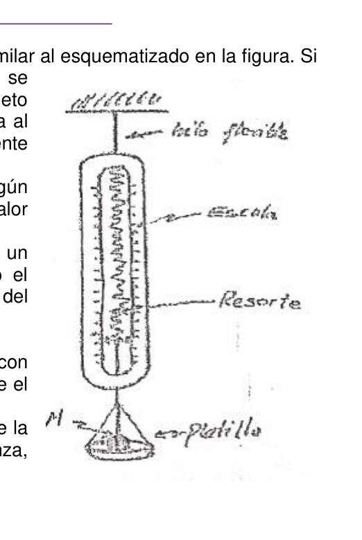
Topic: Newtonian Mechanics, Conservation of Energy Metodi: Free-Body Diagram, Energy Conservation Method Competenze: Physical Reasoning Objects: String, Block Fonte: Testo (PDF) — p.3
Cospi di fili appesi
PT57. Scuola Normale Dr. Fernando Piragine Niveiro
- Piantato, Corrientes.
Supponiamo due corpi di massa m1 e m2 appesi, con fili inespandibili e di massa scarsa, come si vede nella figura. a) Determina la tensione che ciascun filo sopporta. Considerate la situazione seguente: la massa m2 si eleva a un’altezza h (verticalmente) da cui si libera. Supponendo che i fili supportino Tc (prima di rottura) e che il processo di rottura sia produce in un tempo t*: b) Quale filo si rompe prima? Giustifica c) Qual è la massima altezza che la massa m2 può elevare prima che le condizioni per la rottura del filo? Il filo che unisce m1 a m2 viene sostituito da una sorgente di costante elastica k e longitudine naturale l0. d) Calcolare l’estensione della molla che unisce le due masse quando il Il sistema è in equilibrio. Supponiamo che la massa m2 sia sollevata ad un’altezza h (verticalmente). e) Determina la tensione che il filo sopporta in termini di estensione del filo. una primavera che unisce le due masse.
m1 m2 m1 m2 h
OAF 2014 - 76
Topic: Newtonian Mechanics, Conservation of Energy Metodi: Free-Body Diagram, Energy Conservation Method Competenze: Physical Reasoning Objects: String, Block Fonte: Testo (PDF) — p.3
**Wire-hitting bodies **
PT57. Normal school dr. The Commission has also adopted a number of proposals for the
It’s rocky, currents.
Suppose two bodies of m1 and m2 masses hanging together by inextensible threads and of despicable mass, as shown in the figure. (a) Determine the voltage of each wire. Consider the following situation: the mass m2 rises a height h (vertically) from which it is released. Assuming the threads hold . The maximum stress Tc (before breaking) and the breakdown process are The resulting product is t*: (b) Which of the threads will break first? Justify it . (c) What is the maximum height at which the mass m2 can be raised before it is Are the conditions for the break of the thread? The thread connecting m1 to m2 is replaced by a spring of constant elasticity k and natural length l0. (d) Calculate the spring stretch of the joint mass when the The system is in balance. Suppose the mass m2 is raised to a height h (vertically). (e) Determine the stress that the yarn bears in terms of the tensile strength of the yarn. spring that unites the two masses.
m1 m2 m1 m2 h
The following is the list of the Member States’ financial statements:
Topic: Newtonian Mechanics, Conservation of Energy Metodi: Free-Body Diagram, Energy Conservation Method Competenze: Physical Reasoning Objects: String, Block Fonte: Testo (PDF) — p.3
Maquina termica
PT58. E.E.S.T Nro. 1 Gral. Manuel Savio
Navarro, Buenos Aires.
Se tiene una maquina térmica dada, de modo que la fuente caliente esta a 300 K y la fuente fría a 150 K. el calor inicialmente es de 2000 J. Calcular a) La eficiencia de la maquina b) El calor de la fuente fría. c) El trabajo realizado
Topic: Thermodynamics Metodi: Thermodynamic Cycle Analysis, First Law of Thermodynamics Competenze: Physical Reasoning Objects: Heat Engine Fonte: Testo (PDF) — p.3
Machina termico
PT58. E.E.S.T. N.O. 1 grallo. Manuel Savio
Navarro, Buenos Aires.
Si ha una macchina termico data, quindi la fonte di calore è a 300 K e la fonte fredda a 150 K. Il calore iniziale è di 2000 J. Calcolare a) L’efficienza della macchina b) Calore della fonte fredda. c) Il lavoro svolto
Topic: Thermodynamics Metodi: Thermodynamic Cycle Analysis, First Law of Thermodynamics Competenze: Physical Reasoning Objects: Heat Engine Fonte: Testo (PDF) — p.3
The following table shows the calculation of the total energy consumption of the product:
PT58. The E.E.S.T. No. 1 Gral. Manuel Savio
I’m from Navarro, Buenos Aires.
You have a given heat engine, so the hot source is at 300 K. And the cooler at 150 K. The initial heat is 2000 degrees. Calculate (a) The efficiency of the machine (b) The heat from the cold source. (c) The work carried out
Topic: Thermodynamics Metodi: Thermodynamic Cycle Analysis, First Law of Thermodynamics Competenze: Physical Reasoning Objects: Heat Engine Fonte: Testo (PDF) — p.3
Reglas de Kirchhoff
PT59. E.E.S.T Nro. 1 Gral. Manuel Savio
Navarro, Buenos Aires.
Basándose en las reglas de Kirchhoff, encuentre a) La corriente en cada una de las resistencias que aparecen en la figura b) La diferencia de potencal entre los puntos c y f.
Topic: Circuits Metodi: Kirchhoff’s Laws Competenze: Physical Reasoning Objects: Resistor Fonte: Testo (PDF) — p.3
Regola di Kirchhoff
PT59. E.E.S.T. N.O. 1 grallo. Manuel Savio
Navarro, Buenos Aires.
Sulla base delle regole di Kirchhoff, trovi a) Il corrente in ciascuna delle resistenze riportate in figura b) La differenza di potenza tra i punti c e f.
Topic: Circuits Metodi: Kirchhoff’s Laws Competenze: Physical Reasoning Objects: Resistor Fonte: Testo (PDF) — p.3
The following is the list of the types of products which are subject to the approval of the competent authority:
PT59. The E.E.S.T. No. 1 Gral. Manuel Savio
I’m from Navarro, Buenos Aires.
Based on Kirchhoff’s rules, find out (a) The current in each of the resistors shown in Figure (b) The difference in potency between points (c) and (f).
Topic: Circuits Metodi: Kirchhoff’s Laws Competenze: Physical Reasoning Objects: Resistor Fonte: Testo (PDF) — p.3
Balanza de resorte
PT60. E.E.S.T Nro. 1 Gral. Manuel Savio
Navarro, Buenos Aires.
Una balanza de resorte es un dispositivo similar al esquematizado en la figura. Si se suspende un cuerpo de ella el resorte se estira y la fuerza que el mismo aplica al objeto suspendido y la fuerza que el mismo aplica al objeto suspendido es directamente proporcional a dicho estiramiento. La longitud del resorte cuando no hay ningún cuerpo colocado en su platillo es Lo y el valor de la constante elástica es k= 9.79 N/m. Se coloca ahora en el platillo de la balanza un cuerpo de masa M y una vez alcanzado el equilibrio se observa que el estiramiento del resorte es de 10 cm. Se pide: a) Dibujar un diagrama vectorial con todas las fuerzas que acyuan sobre el cuerpo. b) Determinar el valor de M a partir de la medición hecha con la balanza, expresándolo en kg.
OAF 2014 - 77
Topic: Oscillations & Waves, Newtonian Mechanics Metodi: Hooke’s Law, Simple Harmonic Motion Analysis Competenze: Physical Reasoning Objects: Spring Fonte: Testo (PDF) — p.3
Bilancio di scarico
PT60. E.E.S.T. N.O. 1 grallo. Manuel Savio
Navarro, Buenos Aires.
Una bilancia di primavera è un dispositivo simile a quello schematizzato nella figura. Si Si sospende un corpo da lei la primavera si la forza che essa applica all’oggetto il sistema di controllo è stato sospeso e la forza che esso applica al oggetto sospeso es direttamente proporzionale a tale estensione. La lunghezza della primavera quando non c’è alcuna Il corpo messo nel suo piatto è Lo e il valore di costante elastica è k= 9,79 N/m. Si mette ora sul piatto della bilancia un corpo di massa M e una volta raggiunto il L’equilibrio si osserva che l’estensione del La primavera è di 10 cm. Si chiede: a) Disegnare un diagramma vettoriale con Le forze che si schierano su di lui corpo. b) Determinare il valore di M a partire da misurazione effettuata con la bilancia, esprimendoli in kg.
OAF 2014 - 77
Topic: Oscillations & Waves, Newtonian Mechanics Metodi: Hooke’s Law, Simple Harmonic Motion Analysis Competenze: Physical Reasoning Objects: Spring Fonte: Testo (PDF) — p.3
The following table shows the results of the calculation of the total weight of the product:
PT60. The E.E.S.T. No. 1 Gral. Manuel Savio
I’m from Navarro, Buenos Aires.
A spring scale is a device similar to the one outlined in the figure. Si It suspends a body from it the spring is The force applied to the object by the stretcher The force applied by the suspension shall be: object Suspended es directly proportional to that stretch. The length of the spring when there is no spring Body placed on your plate is the Lo and the Value The elastic constant is k=9.79 N/m. It’s now placed on the plate of the scale one. mass body M and once reached the The balance is observed that the stretching of the The spring is 10 cm. It asks: (a) Draw a vector diagram with All the forces that are at work on the body. (b) Determine the value of M from the measurement made with the scale, expressed in kg.
The following is the list of the Member States’ financial statements:
Topic: Oscillations & Waves, Newtonian Mechanics Metodi: Hooke’s Law, Simple Harmonic Motion Analysis Competenze: Physical Reasoning Objects: Spring Fonte: Testo (PDF) — p.3
Un pajarito enojado
PT61. Colegio del Sol
San Miguel, Tucumán.
¡Un pajarito enojado! Es sabido que en la naturaleza existen rivalidades, pero nada supera el odio que, desde tiempos inmemoriales, se tienen las aves con los cerdos. Nadie sabe con precisión cuando comenzó esta rivalidad, ni mucho menos si terminará algún día, pero lo cierto es que por ahora la guerra parece no tener fin. Bajo las órdenes del malvado Rey Oink I las tropas cerdo han secuestrado a todos los huevos de los nidos, con el objetivo de criar a los pajaritos bajo su tutela y lavarles el cerebro en contra de su especie. El Concilio de las Aves decidió enviar a sus agentes más preparados en una misión ultra secreta para recuperar los huevos robados. Armados con una catapulta y sus diferentes habilidades especiales, estos valientes y enojados pájaros deberán enfrentarse a las tropas cerdo y salvar a sus hermanos no nacidos. a) Con el objetivo de asegurarse que el pájaro rojo impacte en el escondite del cerdo verde: i) ¿cuál debería ser el ángulo q de lanzamiento (con respecto de la horizontal) de la resortera si el tiempo de vuelo es 2.50 s ? ii) ¿Cuál es la altura máxima a la que llega el pájaro rojo?
El cerdo verde está convenientemente protegido en un refugio de madera y vidrio por lo que, en un principio, no tiene nada que temer ante el embate del enojado pájaro. Lo que él no sabe es que el pájaro rojo está entrenado para derribar estructuras con su cabeza al entregar toda su energía cinética en el choque. b) Si la estructura resiste hasta 200 J de energía ¿resistirá el choque del pájaro rojo? c) Calcular cuánto tuvo que estirarse el resorte para permitir el vuelo del pájaro rojo (suponer k = 430 Nm).
Viendo que nada podía hacer contra los pájaros rojos, el Rey Oink I decidió escapar hacia el espacio exterior llevándose consigo los huevos. Pero los agentes especiales pájaro no perdieron ni un segundo y siguieron a los malvados cerdos por los confines de la Galaxia.
OAF 2014 - 78
d) Sabiendo que los cerdos se esconden en un planeta enano supermasivo de radio 100 m P R = , calcular su masa M y su gravedad g__ sabiendo que la velocidad tangencial necesaria para que el pájaro rojo quede orbitando a R = 100 m sin precipitarse en espiral hacia el centro es v = 50 m/s . (Ayuda: recordar que la fuerza de atracción gravitatoria entre dos cuerpos con masas es proporcional al producto de las masas e inversamente proporcional al cuadrado de la distancia que los separa. El factor de proporción es la llamada constante de gravitación universal G = 6.67x10-11 Nm2 /kg2 ). Finalmente, una vez derrotado el malvado Rey Oink I y recuperados los huevos, los agentes pájaro rojo pueden regresar victoriosos y con los huevos, pero no sin antes comunicarse con la Tierra para avisar del éxito de su misión. Para ellos se valen de un precario sistema de comunicaciones que emite señales electromagnéticas de frecuencia f = 350 MHz . e) Si el planeta se encuentra a 7.5x109 km ¿cuánto tiempo tardará en llegar la señal? y ¿qué longitud de onda tiene la misma?
Topic: Newtonian Mechanics Metodi: Kinematic Equations, Vector Decomposition Competenze: Physical Reasoning Objects: Projectile Fonte: Testo (PDF) — p.3
Un uccellino arrabbiato
PT61. La scuola del sole
San Miguel, Tucumán.
Un uccellino arrabbiato! È noto che nella natura esistono rivalità, ma niente supera l’odio. che da tempi immemorabili si hanno i uccelli con i maiali. Nessuno lo sa. con precisione quando è iniziata questa rivalità, tanto meno se finirà una. La verità è che per ora la guerra sembra senza fine. Sotto l’ ordine del malvagio Re Oink I le truppe Porco hanno sequestrato tutti gli uova dei Nido, con l’obiettivo di allevare i piccoli sotto il loro proteggere e lavare il cervello contro la loro specie. Il Consiglio degli Aerei ha deciso di inviare i suoi agenti. Più preparati per una missione ultra-segreta per … recuperare le uova rubate. Armati con una . catapulta e le sue diverse abilità speciali, Questi bravi e arrabbiati uccelli devono Affrontare le truppe del maiale e salvare i suoi fratelli non nati. a) Per assicurarsi che il uccello rosso colpisca il rifugio. di maiale verde: (i) quale dovrebbe essere l’angolo di lancio q (rispetto alla L’ora di volo è di 2.50 secondi ? (ii) Qual è l’altezza massima raggiunta dal uccello rosso?
Il maiale verde è convenientemente protetto in un rifugio di legno e Il suo corpo è un vetro, quindi, all’inizio, non ha nulla da temere per l’impatto del uccello arrabbiato. Quello che non sa è che il Red Bird è stato addestrato per Abbattere strutture con la testa consegnando tutta la sua energia cinetica al
- Coppia. b) Se la struttura resiste fino a 200 J di energia, resisterà al colpo del
- Un uccello rosso? (c) Calcolare quanto la primavera dovesse essere estesa per consentire il volo del uccello rosso (supponendo k = 430 Nm).
Vedendo che non poteva fare nulla contro gli uccelli rossi, Il re Oink I ha deciso di fuggire nello spazio esterno. portando con sé le uova. Ma gli agenti… Special bird non ha perso un secondo e Seguirono i maiali maiali per i confini della Terra. Galassia.
OAF 2014 - 78
D) Sapendo che i maiali si nascondono su un pianeta nano supermassiccio di radio 100 m P R = , calcolare la sua massa M e la sua gravità g__ sapendo che la velocità tangenziale necessaria per far rimanere l’uccello rosso Orbitando a R = 100 m senza precipitare in spirale verso il centro è v = 50 m/s . (Aiuto: ricordare che la forza di attrazione gravitazionale tra due corpi a massa è proporzionale al prodotto delle masse e inverso proporzionale al quadrato della distanza che li separa. Il fattore di proporzione è la cosiddetta costante di gravitazione universale G = 6.67x10-11 Nm2 /kg2 ). Finalmente, dopo aver sconfitto il malvagio Re Oink I e recuperato le uova, Gli agenti del Red Bird possono tornare vittoriosi e con le uova, ma non senza. prima di comunicare con la Terra per avvertire il successo della sua missione. Per loro è Sono un sistema di comunicazione precaria che emette segnali. frequenza elettromagnetica f = 350 MHz . e) Se il pianeta si trova a 7,5x109 km, quanto tempo ci vorrà per arrivano il segnale? e quale lunghezza d’onda ha la stessa?
Topic: Newtonian Mechanics Metodi: Kinematic Equations, Vector Decomposition Competenze: Physical Reasoning Objects: Projectile Fonte: Testo (PDF) — p.3
A little angry bird
PT61. College of the Sun
San Miguel, Tucumán.
A mad little bird! It is known that in nature there are rivalries, but nothing surpasses hatred. That from time immemorial, you’ve had birds with pigs. No one knows . Exactly when this rivalry began, let alone if it will end any more. day, but the truth is that for now the war seems to be endless. Under the command of the evil King Oink I the troops Pig ‘s kidnapped all the eggs from the … nests, with the aim of breeding the birds under their Protect and brainwash them against their species. The Bird Council decided to send their agents . More prepared for an ultra-secret mission to I’m trying to get the stolen eggs back. Armed with a . catapult and its different special skills, These brave and angry birds must be To face the swine troops and save their lives . unborn brothers. (a) To ensure that the red bird impacts the hiding place of the green pork: (i) what should be the angle of launch (q) (with respect to the horizontal) of the spring if the flight time is 2.50 s ? (ii) What is the maximum height at which the red bird reaches?
The green pig is conveniently protected in a wooden shelter and glass so, at first, you have nothing to fear in the face of the impact of the Angry bird. What he doesn ‘t know is that the red bird is trained for . He’s been able to knock down structures with his head by delivering all his kinetic energy into the air. It’s a shock. (b) If the structure can withstand up to 200 J of energy, will the impact of the Red bird? (c) Calculate how long the spring had to be stretched to allow the flight of the aircraft. The red bird (assuming k = 430 Nm).
Seeing that there was nothing I could do against the red birds, King Oink I decided to escape to outer space . Taking the eggs with you. But the agents … Special bird didn ‘t miss a second and They followed the wicked pigs across the borders of the sea. The galaxy.
The following points shall be added:
d) Knowing that the pigs are hiding in a supermassive dwarf planet of radius 100 m P R = , calculate its mass M and its gravity g__ knowing That the tangential velocity needed to keep the red bird going. orbiting R = 100 m without spiraling downwards to the center is v = 50 m/s . (Help: remember that the gravitational pull force between Two bodies with masses is proportional to the product of masses and inversely proportional to the square of the distance between them. The factor of proportion is called the universal gravitational constant. G = 6.67x10-11 Nm2 /kg2 ). Finally, once defeated the evil King Oink I and recovered the eggs, Red Bird agents can come back victorious and with eggs, but not without Before they communicate with Earth, they’ll warn you of the success of your mission. For them it is They ‘re a precarious communications system that sends signals . electromagnetic frequency f = 350 MHz . e) If the planet is at 7.5 x 109 km, how long will it take to get the signal? And what wavelength does it have?
Topic: Newtonian Mechanics Metodi: Kinematic Equations, Vector Decomposition Competenze: Physical Reasoning Objects: Projectile Fonte: Testo (PDF) — p.3
Visita a Minera Alumbrera
PT62. Colegio del Sol
San Miguel, Tucumán.
Visita a Minera Alumbrera Una de las actividades del Colegio del Sol en mayo del 2014 fue visitar las instalaciones de Minera Alumbrera, ubicada en Walfin, Catamarca a 2500m de altura sobre el nivel del mar. Llegamos a las 8 de la mañana, nos dieron una charla de todas las actividades a realizar en el día y las medidas de seguridad a seguir. Luego de desayunar nos colocamos el chaleco, el casco y comenzó el recorrido. La primera visita se hizo en el concentrador, donde nos explicaron el proceso para moler la piedra y extraer los metales. La pila de piedras pasa a través de un molino con forma de una esfera hueca de 10 m de diámetro, donde se encuentra una bola de hierro de 5,5 pulgadas y cuya densidad es de 7,8 g/cm3, la cual es la encargada de moler la piedra que se coloca en el molino a través de golpes.
OAF 2014 - 79
Para la molienda se hace girar el molino a 9,5 RPM, llevando a la esfera de O al
punto A, allí se desprende de la superficie del molino y cae con una trayectoria
parabólica contra la piedra. Para una determinada velocidad la esfera no caería
y por lo tanto no se produce la molienda.
La altura A que alcanza depende de las RPM del molino y lo óptimo es llegar
hasta un 80% de la altura.
a) Calcular la velocidad lineal y angular si gira a 9,5RPM.
b) Encontrar la velocidad con que la bola llega al punto A.
c) Dibujar las fuerzas que actúan sobre la bola en el punto A, antes de
desprenderse del plano y calcular la fuerza centrípeta
d) Con que velocidad mínima debería girar el molino para que la piedra no
se desprenda de la superficie.
Al llegar al punto más alto la esfera puede seguir distintas trayectorias, llegando
a B y C o cualquier punto comprendido entre ellos.
e) Si la piedra llega del lado izquierdo hasta una altura de 2,8m; se pide
calcular el intervalo de velocidades entre los cuales debe llegar la
esfera, para tocar y moler la piedra.
f) La esfera choca contra la piedra y se produce un choque. Suponga que
una de las piedras se rompe en varios fragmentos ¿qué podemos decir
del movimiento del centro de masas de los fragmentos después de la
explosión? Justifique
La segunda visita que hicimos fue al pozo donde se extrae el mineral, el cual
tiene forma de cono truncado cuyo diámetro superior es de 1km y el inferior de
500m. La profundidad es de es de 0, 6 km. Ese pozo será llenado al finalizar la
vida útil de la mina, lo cual es motivo de estudio para los investigadores que
trabajan allí.
En el caso de no llenarse con algún material, este se llenaría de agua y se
convertiría en un lago artificial.
g) Calcule el volumen de agua necesario para llenar el pozo.
h) Qué diferencia de presión tendría entre el fondo y la superficie.
En días de invierno la temperatura alcanza los -10°C y por lo tanto vamos a
suponer que una gran masa de agua se convirtió en hielo, el cual flota en el lago.
i) Sabiendo que la densidad del hielo es de 917 kg/m3 y la del agua dulce
1000kg/m3, encontrar que volumen de hielo está sumergida.
OAF 2014 - 80
Topic: Thermodynamics Metodi: Physical Modeling Competenze: Physical Reasoning Objects: — Fonte: Testo (PDF) — p.3
Visita alla Minera Albrbrera
PT62. La scuola del sole
San Miguel, Tucumán.
Visita a Minera Alumbrera Una delle attività del Collegio del Sole nel maggio 2014 è stata la visita alle Le strutture di Minera Alumbrera, situate a Walfin, Catamarca a 2500m da altitudine al di sopra del livello del mare. Siamo arrivati alle 8 del mattino, ci hanno dato un discorso di tutte le attività a
- il giorno in cui si effettuano le misure di sicurezza. Dopo il pranzo ci siamo Abbiamo messo il vestito, il casco e abbiamo iniziato il tour. La prima visita è stata fatta al centro di concentrazione, dove ci hanno spiegato il processo. per la macinazione della pietra e per la estrazione dei metalli. La pila di pietre passa attraverso un molino a forma di sfera vuota di 10 m di diametro, dove si trova una palla di ferro di 5,5 pollici e la densità di 7,8 g/cm3, che è il che si occupa di macellare la pietra che viene messa nel mulino attraverso colpi.
OAF 2014 - 79
Per il moliere si gira il mulino a 9,5 RPM, portando alla sfera da O a punto A, lì si sgancia dalla superficie del mulino e cade con un percorso
- Parabola contro la pietra. Per una certa velocità la sfera non cadrebbe. e quindi non si produce il moliere. L’altezza raggiunta da A dipende dalle RPM del mulino e l’ottimale è raggiungere fino all’80% dell’altezza. a) Calcolare la velocità lineare e angolare se si gira a 9,5 RPM. b) Trovare la velocità con cui la palla arriva al punto A. (c) Disegnare le forze che agiscono sulla palla al punto A, prima di Scappa dal piano e calcola la forza centripeta d) A che velocità minima dovrebbe girare il mulino per evitare che la pietra si spalanca dalla superficie. Al massimo, la sfera può seguire tracce diverse, arrivando a B e C o qualsiasi punto compreso tra di loro. e) Se la pietra arriva da sinistra fino a una altezza di 2,8 m; si richiede Calcolare l’intervallo di velocità tra cui deve arrivare la velocità sfera, per toccare e muovere la pietra. f) La sfera colpisce la pietra e si verifica un colpo. Supponiamo che Una delle pietre si spezza in diversi frammenti. Il movimento del centro di massa dei frammenti dopo il
- esplosione? Giustifica La seconda visita che abbiamo fatto è stata al pozzo dove si estra il minerale, che ha la forma di un cono tronco il cui diametro superiore è di 1 km e il diametro inferiore di 500m. La profondità è di 0,6 km. Quel pozzo sarà riempito alla fine del La durata della miniera è di circa un milione di anni, il che è motivo di studio per i ricercatori che
- Lavorano lì. In caso di non riempimento con un materiale, esso si riempie di acqua e si diventerebbe un lago artificiale. g) Calcolare il volume d’acqua necessario per riempire il pozzo. h) Che differenza di pressione avrebbe tra fondo e superficie. In giorni invernali la temperatura raggiunge -10°C e quindi andiamo a Supponiamo che una grande massa d’acqua si sia trasformata in ghiaccio, che galleggia nel lago. i) Sapendo che la densità del ghiaccio è di 917 kg/m3 e quella dell’acqua dolce 1000 kg/m3, trovare il volume di ghiaccio immerso.
OAF 2014 - 80
Topic: Thermodynamics Metodi: Physical Modeling Competenze: Physical Reasoning Objects: — Fonte: Testo (PDF) — p.3
Visit to the Alumbrera Mining
PT62. College of the Sun
San Miguel, Tucumán.
Visit to Minera Alumbrera One of the activities of the College of the Sun in May 2014 was to visit the The plant is located in Walfin, Catamarca, 2500m from Height above sea level. We arrived at 8am, we were given a talk of all the activities at the day and the security measures to be taken. After breakfast we ‘re all We put on the vest, the helmet and the tour began. The first visit was made to the concentrator, where they explained the process. to grind the stone and extract the metals. The stone pile goes through a a 10 m diameter hollow sphere-shaped mill where it is located a 5.5 inch iron ball with a density of 7.8 g/cm3, which is the The mill is responsible for milling the stone that is placed in the mill by striking.
The following is the list of the Member States’ financial statements:
For grinding the mill is rotated at 9.5 RPM, leading to the sphere from O to Point A, there it protrudes from the surface of the mill and falls with a trajectory. Parabolic against the rock. At a certain speed the sphere would not fall . and therefore no milling takes place. The height A reaches depends on the mill ‘s RPMs and the optimal is to reach up to 80% of the height. (a) Calculate the linear and angular speed if it rotates at 9,5RPM. (b) Find the speed at which the ball reaches point A. (c) Draw the forces acting on the ball at point A, before Get off the plane and calculate the centrifugal force. (d) What minimum speed should the mill rotate so that the stone does not It’s coming off the surface. When you reach the highest point, the sphere can follow different paths, reaching to B and C or any point between them. (e) If the stone reaches a height of 2.8 m from the left side, please calculate the range of speeds between which the A sphere, to touch and grind the stone. (f) The sphere collides with the stone and a collision occurs. Suppose that One of the stones breaks into several fragments. What can we say? The mass centre of the fragments after the What about the explosion? Justify it . The second visit we made was to the well where the mineral is extracted, which is It is shaped like a truncated cone with an upper diameter of 1 km and the lower one of 500m. The depth is 0.6 km. That well will be filled at the end of the day . The use of the mine is not limited to the use of the mine. They work there. If it is not filled with any material, it will be filled with water and will be It would turn into an artificial lake. (g) Calculate the volume of water required to fill the well. (h) What pressure difference would it have between the bottom and the surface. On winter days the temperature reaches -10°C and therefore we go to Suppose a large body of water turned into ice, which floats in the lake. (i) Knowing that the density of ice is 917 kg/m3 and that of fresh water 1000kg/m3, find out what volume of ice is submerged.
The following is the list of the Member States’ financial statements:
Topic: Thermodynamics Metodi: Physical Modeling Competenze: Physical Reasoning Objects: — Fonte: Testo (PDF) — p.3
Una arana monstruosa
PT63. Colegio del Sol
Colegio Pablo Apóstol
Provincia de Tucumán.
Una araña monstruosa
En el teatro Colón la araña central del auditorio, además de ser una obra de arte
por sí misma, lleva a la práctica mucha de las cuestiones que hemos estudiado
para rendir este examen, es por eso que trataremos de sacudir la tela de araña
aun misterio,¿¡cómo hacen para cambiar algunas de las 730 lamparitas, estando
suspendida a 27 m de altura del suelo?
La respuesta está en el siguiente gráfico. La araña hecha de cobre y de 1300kg
de masa , está sostenida por un cable de acero de 50kg de masa y conectado a
un motor eléctrico que hace descender a la araña para su mantenimiento( cada 2
o 3 años), bajándola hasta 1m de las butacas .
Se pide: a) Calcule la fuerza que soporta el cable cuando la araña está en equilibrio. b) Calcule la potencia del motor para realizar el ascenso en un minuto y la velocidad con que se realiza. El modelo más sencillo con el que se puede representar, el sistema eléctrico de esta obra de arte, es el circuito que se muestra a continuación, donde cada resistencia es la equivalente a otras resistencias.
c) Se quema la lámpara número 7¿qué ocurrirá con el resto de las lámparas? ¿Cómo procedería para averiguar cual fue la lámpara que se quemó? Una vez que se cambiaron las lámparas la araña funciona en su totalidad la araña
OAF 2014 - 81 d) Calcule la corriente que atraviesa la lámpara 5, las resistencias son iguales y su valor valor de 100Ω. e) Indique la caída de potencial entre M yN f) Indique la energía que consume la araña en un espectáculo cuya duración es de 3 hs. Suponiendo que el termostato del teatro marca siempre 25°C y que la potencia eléctrica de la araña se usa para calentar y fundir los 1200kg de cobre que posee la misma. g) Calcular el tiempo necesario para fundirlo totalmente.
Datos:
Calor específico del cobre 390 j/ kg °k
Calor latente de fusión del cobre 134000 j/kg
Temperatura de fusión del cobre 1356°K
Topic: Elasticity & Materials, Rigid Body Statics Metodi: Stress-Strain Analysis, Free-Body Diagram Competenze: Physical Reasoning Objects: String Fonte: Testo (PDF) — p.3
Un’aracca monstruosa
PT63. La scuola del sole
Colegio Paolo l’apostolo
Provincia di Tucumán.
Un ragno monstruoso . Nel teatro Colón la ragna centrale dell’auditorio, oltre ad essere un’opera d’arte La sua portata a pratica è molto più che la nostra. Per superare questo esame, ecco perché cercheremo di scuotere il tessuto di ragno. E’ ancora un mistero come si possono cambiare alcune delle 730 lampade, essendo Sospeso a 27 metri di altezza dal suolo? La risposta è nel grafico seguente. La spina fatta di rame e di 1300 kg di massa , è sostenuta da un cavo di acciaio di 50 kg di massa e collegata a un motore elettrico che fa scendere il ragno per il suo mantenimento o 3 anni), portandola a un metro dal sedile .
Si chiede: a) Calcolare la forza che il cavo supporta quando la spina è in equilibrio. b) Calcolare la potenza del motore per effettuare l’ascensione in un minuto e velocità con cui si fa. Il modello più semplice con cui si possa rappresentare, il sistema elettrico di Questo pezzo d’arte, è il circuito che viene mostrato qui sotto, dove ogni resistenza è l’equivalente di altre resistenze.
c) Si accende la lampada numero 7… cosa accadrà al resto delle lampade?
- Le lampade? Come si potrebbe procedere per scoprire quale fosse la lampada che si è bruciata? Una volta che le lampade sono state cambiate la ragna funziona completamente ragno
OAF 2014 - 81 d) Calcolare il corrente che attraversa la lampada 5, le resistenze sono pari a 100Ω. e) Indicare il calo di potenziale tra M e N f) Indicare l’energia consumata dalla spina in uno spettacolo che durata è di 3 ore. Supponendo che il termostato del teatro segni sempre 25°C e che la potenza La spina elettrica viene utilizzata per riscaldare e fondere i 1200 kg di rame che ha la stessa. g) Calcolare il tempo necessario per fondere completamente.
Datati:
Calore specifico del rame 390 j/ kg °k
Calore latente di fusione del rame 134000 j/kg
Temperatura di fusione del rame 1356°K
Topic: Elasticity & Materials, Rigid Body Statics Metodi: Stress-Strain Analysis, Free-Body Diagram Competenze: Physical Reasoning Objects: String Fonte: Testo (PDF) — p.3
A monstrous spider
PT63. College of the Sun
Paul the Apostle College
Province of Tucumán.
A monstrous spider . In the Columbus theater the central spider of the auditorium, besides being a work of art. It takes a lot of the issues we’ve been studying into practice. To pass this exam, that’s why we’re gonna try to shake the spider web. Still a mystery, how do they change some of the 730 lamps, being Hanging from a height of 27 meters? The answer is in the following chart. The spider made of copper and 1300kg It ‘s held by a 50kg steel cable and connected to the an electric motor that brings down the spider for maintenance. Or three years), lowering her to a meter from the seats .
It asks: (a) Calculate the strength of the cable when the spider is in The balance. (b) Calculate the engine power to make the ascent in one minute and the speed at which it is done. The simplest model that can be represented, the electrical system of This artwork, is the circuit shown below where each resistance is the equivalent of other resistance.
(c) Light number 7 is lit. What will happen to the rest of the lamps?
- What are you doing? How would you proceed to find out which lamp was burned? Once the lamps were changed the spider works fully the Spider
The following is the list of the Member States’ financial statements: d) Calculate the current passing through the lamp 5, the resistance is equal to or less than 100Ω. (e) Indicate the potential drop between M and N (f) Indicate the energy consumed by the spider in a show whose Duration is 3 hours. Assuming the theater thermostat always marks 25°C and that the power The electric spider is used to heat and melt the 1200kg of copper that He owns the same thing. (g) Calculate the time required to fully melt it.
The data:
The specific heat of copper 390 j/ kg °k
Latent heat of copper melt 134000 j/kg
The copper melting temperature is 1356°K
Topic: Elasticity & Materials, Rigid Body Statics Metodi: Stress-Strain Analysis, Free-Body Diagram Competenze: Physical Reasoning Objects: String Fonte: Testo (PDF) — p.3
La olla (pendulo)
PT64. Colegio Pablo Apóstol
Yerba Buena, Tucumán.
La olla En la localidad cordobesa de Villa Parque Siquiman hay un paraje conocido como la olla, un balneario natural y su mayor atractivo turístico. El arroyo las Mojarras, que desemboca en el Lago San Roque, durante años erosionó la roca formando un hueco, de gran similitud a una olla de cocina, pero 12 veces más grande y con agua fresca que no deja de correr. Los turistas con el objetivo de divertirse, con la ayuda de un viejo sauce llorón, una soga inextensible de masa despreciable y una longitud de 1,7m, armaron un péndulo. La soga cuelga de una rama del sauce ubicada a 3m del suelo. Ayudados de una gran piedra de 2m de altura, ubicada a la derecha del péndulo, con la soga tensa sobre la piedra (punto A), se deja caer la persona para adquirir velocidad y llegar a la altura mínima (punto B). Al llegar a B la persona suelta la cuerda y con la velocidad adquirida cae, con suerte, en la olla.
Datos
Estimar las dimensiones de la olla.
Considerar su masa y el volumen de su cuerpo de 0,07m3
La piedra está ubicada a 2m del borde de la olla.
OAF 2014 - 82 Se pide: a) Calcular la velocidad con que la persona llega al punto B. b) Calcular el trabajo realizado de A a B. c) Calcular la fuerza que realiza dicho trabajo. d) Calcular a que distancia de B se encuentra el borde más cercano a la olla. e) Calcular a que distancia del borde de la olla entra la persona en el agua y el valor de la velocidad un instante antes de entrar. f) Indicar con que aceleración se desplaza dentro del agua. g) Calcular la variación de presión que soporta la persona entre el fondo y la superficie del agua.
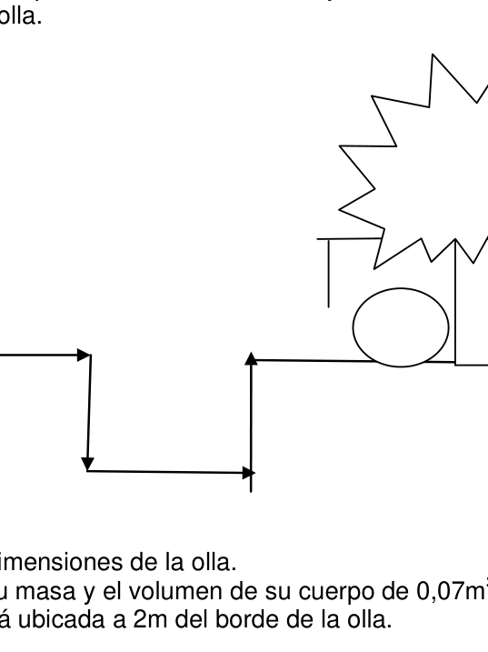
Topic: Oscillations & Waves, Conservation of Energy Metodi: Simple Harmonic Motion Analysis, Energy Conservation Method Competenze: Physical Reasoning Objects: Pendulum, String Fonte: Testo (PDF) — p.3
**La pentola (pendolo) **
PT64. Colegio Paolo l’apostolo
- Buona erba, Tucumán.
Il vaso Nella località cordobese di Villa Parque Siquiman c’è un luogo noto come la cotta, un bagno naturale e il suo principale attrazione turistica. Il fiume Las Mojarras, che scorre nel lago San Roque, per anni Erosiva la roccia formando un buco, molto simile a una pentola da cucina, ma 12 volte più grande e con acqua fresca che continua a scorrere. I turisti con l’obiettivo di divertirsi, con l’aiuto di un vecchio salsa pianto, Una corda inestensibile di massa disprezzabile e una lunghezza di 1,7 metri, hanno messo insieme un
- Il pendolo. La corda si appende da un ramo di salsa a 3 metri dal suolo. Aiuti di una grande pietra alta 2 metri, situata sulla destra del pendolo, con la corda tensione sulla pietra (punto A), si lascia cadere la persona per acquisire velocità e raggiungere l’altezza minima (punto B). Arrivata a B, la persona lascia scendere la corda e con la velocità acquisita cade, con fortuna, in una cottura.
Datos Valutare le dimensioni del vaso. Considerare la sua massa e il volume del suo corpo di 0,07m3 La pietra è situata a 2 metri dal bordo del vaso.
OAF 2014 - 82 Si chiede: a) Calcolare la velocità con cui la persona arriva al punto B. b) Calcolare il lavoro svolto da A a B. c) Calcolare la forza di esecuzione di tale lavoro. d) Calcolare a che distanza da B si trova il bordo più vicino alla Pot. e) Calcolare la distanza dal bordo del vaso che la persona entra nell’ acqua e il valore della velocità un istante prima di entrare. f) Indicare l’accelerazione con cui si muove nell’acqua. g) Calcolare la variazione della pressione che la persona sopporta tra il fondo e il la superficie dell’acqua.
Topic: Oscillations & Waves, Conservation of Energy Metodi: Simple Harmonic Motion Analysis, Energy Conservation Method Competenze: Physical Reasoning Objects: Pendulum, String Fonte: Testo (PDF) — p.3
The pot (pendulum)
PT64. Paul the Apostle College
It’s good grass, Tucumán.
The pot . In the Cordoba town of Villa Parque Siquiman there is a well-known place It’s a natural spa and its biggest tourist attraction. The Mojarras stream, which flows into Lake San Roque, for years eroded the rock forming a hole, very similar to a kitchen pot, but 12 times bigger and with fresh water that keeps running. Tourists aiming to have fun, with the help of an old weeping willow, An unextensible rope of despicable mass and a length of 1.7 meters, they assembled a The pendulum. The rope hangs from a branch of the sauce located 3 meters from the ground. Helped by a large stone 2m high, located to the right of the pendulum, with the rope The person is forced to drop to gain speed and reaching the minimum height (point B). When you reach B, you let go of the rope and with the speed you get, you fall. Good luck, in the pot.
Data from the report Estimate the dimensions of the pot. Consider its mass and body volume of 0.07m3 The stone is located 2 meters from the edge of the pot.
The following is the list of the Member States’ financial statements: It asks: (a) Calculate the speed at which the person reaches point B. (b) Calculate the work carried out from A to B. (c) Calculate the force of the work. (d) Calculate the distance from B to the edge closest to the The pot. (e) Calculate the distance from the edge of the pot to which the person enters the water And the value of the speed just before you enter. (f) Indicate the acceleration with which it moves in water. (g) Calculate the variation in the pressure the person bears between the bottom and the bottom. the surface of the water.
Topic: Oscillations & Waves, Conservation of Energy Metodi: Simple Harmonic Motion Analysis, Energy Conservation Method Competenze: Physical Reasoning Objects: Pendulum, String Fonte: Testo (PDF) — p.3
Yellow Submarine
PT65. Colegio Pablo Apóstol
Yerba Buena, Tucumán.
Yellow Submarine Uno de los grupos musicales más famosos de la historia, Los Beatles, imagino recorrer maravillosos lugares a bordo de un submarino amarillo, como el que se muestra a continuación:
Ahora le propongo a usted que se embarque con tres de sus amigos, imitando a los FabFour para sumergirnos en el azul océano. Datos: R=0,15m L=7R ρ agua de mar =1.03g/cm3
Se pide:
a) La masa del submarino es de 5 toneladas, considerando la masa de los
tripulantes, cual es el volumen que debe tener para flotar a medias
aguas a una profundidad H.
b) Una vez sumergidos, las aletas laterales B y B”, iguales entre sí
representadas en la figura 2, son las que permiten desplazar
horizontalmente al submarino. Encuentre la expresión de la presión
resultante sobre cada aleta lateral, en función de la velocidad horizontal
del submarino .(considere la variación de altura despreciable)
c) Encuentre la expresión de la fuerza resultante sobre el submarino, en
función de la velocidad horzontal del mismo.
d) Si la aceleración hacia abajo es de 1m/s2, calcule la velocidad horizontal
del submarino.
OAF 2014 - 83 e) Un barco navega sigilosamente por aguas cercanas al submarino. Repentinamente el sonar detecta la proximidad de nuestro submarino. Si el sonar emite una señal sonara de frecuencia 1000Hz y 6 segundos más tarde recibe de vuelta un eco de frecuencia 1020 Hz, calcular la velocidad con que se aproxima el submarino y el tiempo que demorará en llegar hasta donde está el barco. Considere la velocidad del sonido en el agua 1530m/s.
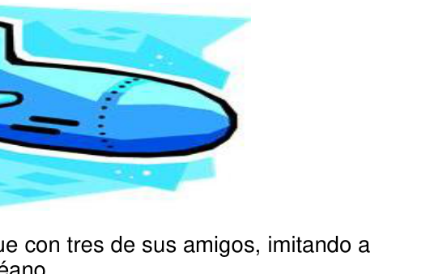
Topic: Fluid Mechanics Metodi: Hydrostatic Equilibrium Competenze: Physical Reasoning Objects: Cylinder, Container Fonte: Testo (PDF) — p.3
Yellow Submarine
PT65. Colegio Paolo l’apostolo
- Buona erba, Tucumán.
Yellow Submarine . Uno dei gruppi musicali più famosi della storia, i Beatles, immagino. Per viaggiare in luoghi meravigliosi a bordo di un sottomarino giallo, come quello che si è mostra di seguito:
Ora ti propongo di imbarcarti con tre dei tuoi amici, imitando i FabFour per immergerci nell’oceano blu. Dati: R=0,15m L=7R ρ acqua di mare =1,03g/cm3
Si chiede: (a) La massa del sottomarino è di 5 tonnellate, considerando la massa dei
- E’ un’operazione di grande importanza. Acque a una profondità di H. b) Una volta immersi, le ali laterali B e B, uguali tra loro Le parti di cui alla figura 2 sono quelle che permettono di spostare orizzontale al sottomarino. Trova l’espressione della pressione risultante su ogni pinna laterale, in funzione della velocità orizzontale Il sub. (considerando la variazione di altezza disprezzabile) c) Trova l’espressione della forza risultante sul sottomarino, in funzione della velocità orizzontale di esso. d) Se l’accelerazione verso il basso è di 1 m/s2, calcola la velocità orizzontale
- Il sottomarino.
OAF 2014 - 83 e) Una nave naviga segilmente in acque vicine al sottomarino. All’improvviso il sonar rileva la vicinanza del nostro sottomarino. Se il sonar emette un segnale sonar di frequenza 1000Hz e 6 secondi Poi riceve un eco di frequenza 1020 Hz, calcola la La velocità con cui il sottomarino si avvicina e il tempo che ci vorrà .
- Arrivare fino a dove è la nave. Considerate la velocità del suono 1530 m/s.
Topic: Fluid Mechanics Metodi: Hydrostatic Equilibrium Competenze: Physical Reasoning Objects: Cylinder, Container Fonte: Testo (PDF) — p.3
The Commission shall adopt delegated acts in accordance with Article 21 of this Regulation.
PT65. Paul the Apostle College
It’s good grass, Tucumán.
Yellow Submarine . One of the most famous musical groups in history, The Beatles, I imagine. Touring wonderful places aboard a yellow submarine, like the one you’re below shows:
Now I propose you board with three of your friends, imitating The FabFours to plunge into the blue ocean. Data: R=0.15m L=7R ρ seawater =1.03g/cm3
It asks: (a) The mass of the submarine is 5 tonnes, taking into account the mass of the crew, what volume should you have to float in half? water at a depth of H. (b) Once submerged, the lateral fins B and B, equal to each other The two types of transport are those that allow the transport of goods. horizontally to the submarine. Find the expression of the pressure resulting on each side fin, based on horizontal velocity The submarine … consider the disparate altitude variation) (c) Find the expression of the resulting force on the submarine in the function of the horizontal velocity of the same. (d) If the downward acceleration is 1m/s2, calculate the horizontal speed from the submarine.
The following is the list of the Member States’ financial statements: (e) A ship sails stealthily in waters near the submarine. Suddenly the sonar detects the proximity of our submarine. If the sonar is emitting a sonar signal of 1000Hz frequency and 6 seconds Then you get back a 1020 Hz echo, calculate the The speed at which the submarine is approaching and the time it will take . I’m not going to get to where the ship is. Consider the speed of sound in water 1530m/s.
Topic: Fluid Mechanics Metodi: Hydrostatic Equilibrium Competenze: Physical Reasoning Objects: Cylinder, Container Fonte: Testo (PDF) — p.3
Santas paredes de ladrillo
PT66. Escuela Superior de Comercio Carlos Pellegrini
Ciudad de Buenos Aires.
¡Santas paredes de ladrillo, Batman! El Pingüino ha vuelto a hacer de las suyas en Ciudad Gótica y Batman y Robin están tras su huella. Luego de un trabajo de inteligencia han logrado identificar el hotel donde se aloja y ahora su plan es entrar por sorpresa en su habitación para hacerlo rendir cuentas ante la Ley. Como no podía ser de otra manera, Batman propone trepar por la pared del edificio por una baticuerda con un extremo fijo en la azotea, como se muestra en la Figura 1.1. a) Calcular el módulo de la tensión con la que debe sujetar la cuerda cuando está: (i) en planta baja, (ii) en el quinto piso, (iii) en el piso 24 y (iv) a medio metro de la azotea. (Batman está a 90º de la pared con los pies completamente “pegados” debido al gran rozamiento de sus zapatos y la cuerda la sostiene a ¾ de la altura de su cuerpo). Si bien Batman es muy fuerte, sube ayudado con sus piernas. Por eso, ha diseñado unos batizapatos especiales que tienen mucho rozamiento con las paredes del edificio. Además, en lugar de fijar la cuerda en la azotea, decide que es mejor clavarla 15m arriba suyo (y volver a lanzarla cuando alcanza su extremo, y seguir hasta llegar arriba de todo). b) Consideremos la situación en que Batman está 15m debajo del extremo de la cuerda. ¿Cuál es el valor de la fuerza de rozamiento estática que está actuando? ¿Cuál es el mínimo coeficiente de rozamiento posible para que no deslicen los pies de Batman? Robin es más ortodoxo que Batman, así que optó por entrar al hotel por la recepción y tomarse un ascensor. Pero cuando está pasando por el piso 15, ¡ve al Pingüino bajando por el otro ascensor! Le toma 7,5s darse cuenta y salir del ascensor, para empezar a bajar corriendo por las escaleras de emergencia, como se muestra en la Figura 1.2. Fig. 1.1: (a) Batman (exageradamente enorme) escalando el edificio de altura H, sujetando la cuerda a una distancia 𝑏= 3 4 𝐵 del edificio, el cual forma con la cuerda el ángulo α. (b) Dramatización. Fig. 1.2: Robin bajando por las escaleras de emergencia. Se muestran las dimensiones de cada peldaño.
OAF 2014 - 84 c) ¿Con qué velocidad debería bajar Robin las escaleras para llegar a planta baja justo al mismo tiempo que el Pingüino? d) Supongamos que Robin empieza a correr con la velocidad calculada arriba. Sin embargo, cuando va por el cuarto piso, se tropieza y cae. Tarda 4 segundos en levantarse y seguir corriendo, pero un 20% más lento. ¿Entre qué pisos está Robin cuando el Pingüino llega a planta baja? ¿Cuánto tiempo después llega Robin? Robin llama al baticomunicador de Batman para avisarle que el Pingüino se escapó y está ingresando en el edificio de al lado. Batman no pierde el tiempo y, colgado de la soga, se impulsa contra la pared hacia ese edificio, desplazándose del punto P al Q, los cuales se muestran en la Figura 1.3a. Suponga que la cuerda es inextensible, y que el punto Q se alcanza con velocidad nula. e) ¿Cuánto tiempo pasa Batman en el aire? f) ¿Cuánta energía necesita para llegar y qué fuerza utilizó con sus piernas si la aplicó 0,5s? Un secuaz del Pingüino ve cómo sucede esto desde la azotea del hotel. Su plan es dispararle a Batman con un cañón muy convenientemente colocado y embocarle justo en Q (Figura 1.3b). El cañón está apuntado horizontalmente, y está en la punta de la azotea.
g) ¿Con cuánta energía cinética debe salir la bala para embocarle? h) ¿En qué momento le debe disparar a Batman para alcanzarlo? ¿Será el fin de Batman? ¡Lo sabremos en la próxima local!
Datos 𝐻= 25 pisos; 𝐵= 2 m; 1 piso = 3 m; 𝑚𝐵= 80 kg; 𝑣ascensor = 0,8 m/s; 𝑔= 9,8 m/s²; 𝑚bala = 3,8 kg.
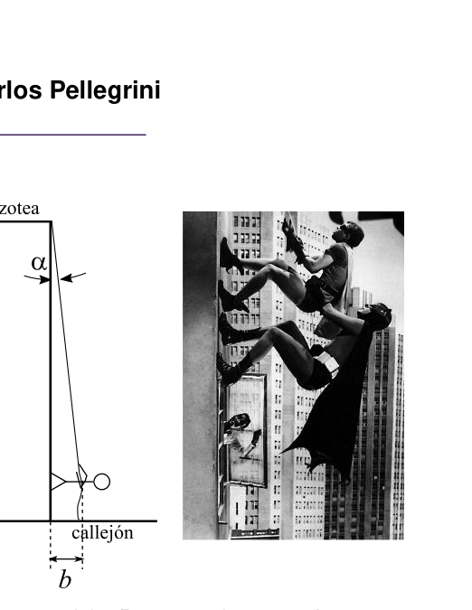
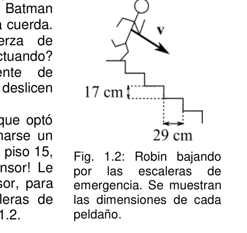
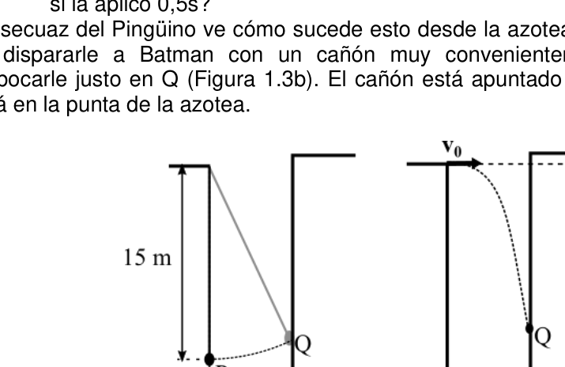
Topic: Newtonian Mechanics Metodi: Free-Body Diagram, Vector Decomposition Competenze: Physical Reasoning Objects: String Fonte: Testo (PDF) — p.3
Santi muri di mattoni
PT66. Scuola superiore di commercio Carlos Pellegrini
Città di Buenos Aires.
Muro di mattoni, Batman! Il Pinguino è tornato a fare di Le sue in Città Gotica e Batman e Robin sono dietro a lui.
- La sua impronta. Dopo un lavoro di… L’intelligenza ha identificato L’hotel in cui si trova e ora il suo Il piano è di entrare per sorpresa in suo.
- La stanza . per
- Facciamolo
- Rendersi .
- Le due due due due. Come non poteva essere altrimenti, Batman propone di salire per la Parete di cui al edificio Per Una . Batti con un’estremità fissa nella Il tetto, come mostrato in Figura 1.1. a) Calcolare il modulo di tensione con cui deve
- Quando si afferra la corda è situato: (i) al piano inferiore, (ii) al quinto piano, (iii) al 24 e (iv) a mezzo metro dal tetto. (Batman è a 90° di distanza da “Muro con i piedi completamente “colti” a causa del grande rasatura La corda la tiene a 3/4 del corpo. Anche se Batman è molto forte, sale aiutato dalle sue gambe. Per questo, ha
- Ho pensato che le scarpe di un uomo che ha un’aria di spicco pareti dell’edificio. Inoltre, invece di fissare la corda sul tetto, decide che È meglio metterla a 15 metri di altezza (e lanciarla di nuovo quando raggiunge il suo punto) E poi continua fino a raggiungere la cima di tutto. b) Considerate la situazione in cui Batman E’ 15 metri sotto l’estremità della corda. Qual è il valore della forza di un’arrestazione statica che sta agendo?
- Che cosa? es el minimo Coefficiente de possibili raschi per non sbiadire I piedi di Batman? Robin è più ortodosso di Batman, quindi ha scelto Per entrare in hotel per la reception e prendere un’altra.
- Ascensione. Ma quando sta passando per il 15 ° piano. Guarda il Pinguino scendere dall’altro ascensore! Le Ci vogliono 7,5 minuti per rendersi conto e uscire dall’ascensore, per Iniziare a scendere correndo per le scale di emergenza, come mostrato in Figura 1.2. Fig. 1.1: (a) Batman (esagerato) enorme) scalando l’edificio di altezza H, tenendo la corda a distanza b= 3 4 𝐵 Il corpo del palazzo, che forma con la corda il angolo α. (b) Dramatizzazione. Fig. 1.2: Robin scende Per Le Le scale de
- Emergenza. Si mostrano. le dimensioni di ciascuna
- La scala.
OAF 2014 - 84 c) A che velocità dovrebbe scendere Robin per arrivare? Piano di sotto, proprio al tempo del Pinguino? d) Supponiamo che Robin comincia a correre alla velocità calcolata.
- Su. Ma quando si sposta per il quarto piano, si inciampa e cade. Ci vogliono 4 secondi per alzarsi e continuare a correre, ma un altro 20%.
- Lento. Tra quali piani si trova Robin quando il Pinguino arriva?
- Scendi? Quanto tempo dopo arriva Robin? Robin chiama il battimanico di Batman per dirgli che il Pinguino è fuori. È scappato e sta entrando nel edificio accanto. Batman non perde tempo e, appeso alla corda, si spinge contro il muro verso quel edificio, spostandosi. La misurazione del valore di riferimento è stata effettuata in base alle seguenti indicazioni: Supponiamo che la La corda è inespandibile, e il punto Q viene raggiunto a velocità zero. e) Quanto tempo passa Batman in onda? f) Quanta energia ha bisogno per arrivare e quale forza ha usato con le sue gambe se l’ha applicata per 0,5 secondi? Un seguace del Pinguino vede come succede da quel tetto dell’hotel. Il suo piano E ’ sparare a Batman con un cannone molto convenientemente posizionato e Incrementare direttamente in Q (Figura 1.3b). Il cannone è puntato orizzontalmente, e… È sulla punta del tetto.
g) Con quale energia cinetica deve uscire la pallottola per incastrarla? h) A che punto devi sparare a Batman per raggiungerlo? Sarà la fine di Batman? Lo sapremo al prossimo locale!
Dati H= 25 piani; B= 2 m; 1 piano = 3 m; mB= 80 kg; vascensor = 0,8 m/s; g = 9,8 m/s2; mbala = 3,8 kg.
Topic: Newtonian Mechanics Metodi: Free-Body Diagram, Vector Decomposition Competenze: Physical Reasoning Objects: String Fonte: Testo (PDF) — p.3
Sacred brick walls
PT66. The Carlos Pellegrini School of Commerce
City of Buenos Aires.
You brick walls, Batman! The Penguin has made it back to His own in Gotham City and Batman and Robin are after him . The footprint. After a job at Intelligence has managed to identify The hotel where he stays and now his. Plan is to surprise you in your Room . for Do it . Give up . You’re accountable to the law. As it could not be otherwise, Batman proposes to climb the mountain. The wall . of the building by One . It is a batch with a fixed end in the The roof, as shown in the The following information is provided: (a) Calculate the module of the The stress with which you must Hold the rope when It is: (i) on the ground floor, (ii) on the fifth floor, (iii) in the Floor 24 and (iv) half a metre from the roof. (Batman is 90 degrees from the wall with feet completely “stuck” due to the large rubbing (The rope is held at 3⁄4 of the height of the body.) While Batman is very strong, he climbs with his legs helped. That’s why he has Designed special shoes that have a lot of friction with the walls of the building. Also, instead of fixing the rope on the roof, he decides that It’s best to nail it 15m above yours and throw it back when it reaches yours. Extreme, and keep going until you get to the top of everything.) (b) Consider the situation in which Batman It’s 15 meters below the end of the rope. What is the value of the force of static friction that’s acting? What? es el Minimum Coefficient de possible rubbing so that they do not slip Batman’s feet? Robin is more orthodox than Batman, so he opted. For entering the hotel by the reception and taking a drink. The elevator. But when you’re passing through the 15th floor, See the Penguin coming down the other elevator! Le It takes 7.5s to realize and get out of the elevator, to Start running down the stairs of The following information is provided by the Commission on the basis of the information available: Fig. 1.1: (a) Batman (exaggerated) (Thanks for the great exhibition) Holding the rope at a distance b= 3 4 𝐵 The building, which forms with the rope the angle α. (b) Dramatization. Fig. 1.2: Robin is coming down by The Stairs de It’s an emergency. They show up . the dimensions of each The ladder.
The following is the list of the Member States’ financial statements: (c) How fast should Robin go down the stairs to get to The ground floor just at the same time as the Penguin? (d) Suppose Robin starts running at the calculated speed. Up there. However, when he goes up to the fourth floor, he stumbles and falls. It takes 4 seconds to get up and keep running, but 20% more. Slowly. What floors is Robin in when the Penguin arrives?
- Down? How long after Robin gets here? Robin calls Batman ‘s bat-com to warn him that Penguin is leaving . He escaped and is entering the building next door. Batman doesn’t waste time and, Hanging from the rope, it pushes against the wall towards that building, moving. The following points are shown in Figure 1.3a: Suppose the The string is unextended, and the point Q is reached at zero speed. (e) How long does Batman stay on the air? (f) How much energy does he need to get there and what force he used with his legs? If you applied it 0.5s? A Penguin cronies watch this happen from the roof of the hotel. His plan . It ‘s shooting Batman with a very conveniently placed cannon and So we’re going to just put it right in Q (Figure 1.3b). The cannon is pointed horizontally, and It’s on the rooftop.
(g) With what kinetic energy must the bullet come out to trap it? (h) When should you shoot Batman to catch him? Will this be the end of Batman? We’ll know at the next place!
Data H=25 floors; B=2 m; 1 floor =3 m; mB=80 kg; waterproofing =0.8 m/s; The following table shows the results of the calculation:
Topic: Newtonian Mechanics Metodi: Free-Body Diagram, Vector Decomposition Competenze: Physical Reasoning Objects: String Fonte: Testo (PDF) — p.3
Carburando (ciclo Otto)
PT67. Escuela Superior de Comercio Carlos Pellegrini
Ciudad de Buenos Aires.
Carburando Cecilio quiere investigar el funcionamiento del motor a nafta de su auto. El mismo consta de 4 cilindros como los de la Figura 2.1a. En la cámara de combustión de cada uno de ellos, hay una mezcla de gases que realiza el ciclo Otto, esquematizado en la Figura 2.1b. En líneas generales, la combustión de la nafta calienta el gas, el cual, al expandirse (aumentar su volumen), empuja un émbolo, con lo cual realiza trabajo. Es decir, transfiere energía cinética, que Fig. 1.3: (a) Batman (exageradamente pequeño) cruzando al edificio contiguo, sujetado a la cuerda. P es el punto de partida y Q el de llegada. (b) Trayectoria deseada de la bala de cañón que se dispara a Batman.
OAF 2014 - 85 puede ser transmitida mecánicamente a las ruedas, posibilitando el movimiento del auto.
El gas de trabajo es una mezcla de vapor de nafta con aire, el cual aporta el oxígeno necesario para la combustión. Por simplicidad supongamos que la nafta es octano (C8H18). En ese caso, la reacción de combustión viene dada por C8H18 + 25 2 O2 → 8 CO2 + 9 H2O a) ¿Cuántos litros de aire (en CNPT) se necesitan para la combustión completa de 1 litro de octano líquido? b) Suponga que antes de la combustión, las cantidades de aire y vapor de nafta presentes en la cámara de combustión son tales que hay un exceso de 60% de oxígeno. Hallar las masas molares de la mezcla antes y después de la combustión, y el porcentaje de variación. c) Sabiendo que el émbolo tiene 82,3mm de diámetro y que en la expansión se desplaza 75mm, hallar la variación de volumen Δ𝑉. La combustión se inicia de manera controlada con una chispa producida por la bujía en el momento indicado. El punto de autoignición de una sustancia es la temperatura a la cual (en presencia de oxígeno) entra espontáneamente en combustión. Para evitar que ello ocurra (lo cual disminuiría la eficiencia del motor), se procura que la temperatura que alcanza la mezcla antes de la combustión sea unos 20K menor que el punto de autoignición 𝑇ign de la nafta. Por otro lado, se puede suponer que la mezcla ingresa a la cámara de combustión (punto A del ciclo) en CNPT. d) Hallar 𝑉1 y 𝑉2. e) Hallar el número de moles de gas presente en la cámara de combustión. La temperatura que alcance la mezcla tras la combustión dependerá del poder calórico del combustible. Figura 2.1. (a) Diagrama esquemático de un cilindro del motor a nafta. (b) Diagrama p-V del ciclo Otto. En el punto 0, la cámara de combustión tiene un volumen 𝑉1, y en ese momento se abre la válvula de admisión para que ingrese la mezcla de aire y vapor de nafta. Mientras ingresa, el pistón se desplaza incrementando el volumen de la cámara hasta 𝑉2, en el punto A, que es cuando se cierra la válvula. Luego, el pistón retrocede, comprimiendo adiabáticamente el gas hasta que se alcanza el volumen 𝑉1, en el punto B. La bujía genera una chispa en la cámara que enciende el gas, generando un calentamiento a volumen constante, hasta llegar al punto C. Entonces el gas se expande adiabáticamente, empujando el pistón hasta alcanzar el volumen 𝑉2, en el punto D. El gas se enfría a volumen constante hasta retornar al punto A. Finalmente, se abre la válvula de escape para que salga el gas, mientras el pistón retrocede (tramo A-0). Una vez de vuelta en el punto 0, se reinicia el ciclo.
OAF 2014 - 86 f) Con la combustión del gas presente es posible evaporar 900mg de agua a 15 . ¿Cuánto vale el calor entregado por la combustión? g) Despreciando el cambio en el número de moles de gas en la combustión (¿por qué sería razonable hacer esto?), hallar las temperaturas en los puntos C y D del ciclo, y . h) ¿Cuánto valen los trabajos de expansión (CD) y de compresión (AB) realizados por el gas? i) Calcular la eficiencia del ciclo, entendida como “lo que gano” (trabajo neto del ciclo) sobre “lo que gasto” (calor total ingresado). Verificar que no todo el calor se transforma en trabajo. Si la energía se conserva, ¿adónde va a parar la diferencia? j) ¿Cuántos caballos (hp) de potencia entregan los 4 cilindros de este motor cuando funciona a 3500 rpm?
Datos
. . CNPT: , . En aire, las fracciones molares son
, .
. , ,
.
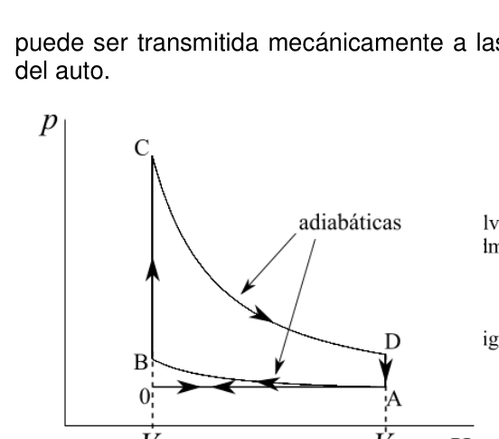
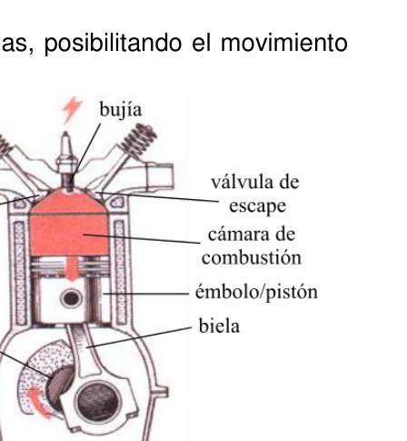
Topic: Thermodynamics Metodi: Thermodynamic Cycle Analysis, First Law of Thermodynamics Competenze: Physical Reasoning Objects: Gas, Piston Fonte: Testo (PDF) — p.3
**Carburante (ciclo Otto) **
PT67. Scuola superiore di commercio Carlos Pellegrini
Città di Buenos Aires.
Carburante Cecilio vuole indagare sul funzionamento del motore a nafta della sua auto. El La stessa è costituita da 4 cilindri come quelli di Figura 2.1a. Nella camera di La combustione di ognuno di essi, c’è un mix di gas che fa il ciclo Otto, schematizzato in figura 2.1b. In generale, la combustione della La nafta riscalda il gas, che, espandendosi (aumentando il suo volume), spinge un Embolo, con cui si lavora. Cioè, trasmette energia cinetica, che Fig. 1.3: (a) Batman (troppo piccolo) attraversando l’edificio accanto, attaccato alla corda. P è il punto di partenza e Q è l’arrivo. (b) Tracciato Desiderata dalla pallottola di cannone che spara a Batman.
OAF 2014 - 85 può essere trasmesso meccanicamente alle ruote, consentendo il movimento della macchina.
Il gas di lavoro è un miscela di vapore di nafta con aria, che fornisce il l’ossigeno necessario alla combustione. Per semplicità, supponiamo che la nafta è otano (C8H18). In questo caso, la reazione di combustione viene data da C8H18 + 25 2 O2 → 8 CO2 + 9 H2O a) Quanti litri di aria (in CNPT) sono necessari per la combustione Un litro di otano liquido completo? b) Supponiamo che prima della combustione, le quantità di aria e vapore di La nafta presente nella camera di combustione è tale che c’ è un eccesso di ossigeno del 60%. Trovare le masse molari della miscela prima e dopo la combustione, e la percentuale di variazione. c) Sapendo che l’embolo ha un diametro di 82,3 mm e che in La velocità di espansione si spostano a 75 mm, trovare la variazione di volume ΔV. La combustione è avviata in modo controllato con uno spumore prodotto dalla
- Si’, e’ il momento giusto. Il punto di autoignitura di una sostanza è la la temperatura alla quale (in presenza di ossigeno) entra spontaneamente in
- Il fuoco. Per evitare che ciò accada (che diminuirebbe l’efficienza del Il motore è stato utilizzato per la produzione di un’acqua di contenuto di calore. La combustione è di circa 20K inferiore al punto di autoincisione Tign della nafta. Dall’altro lato, si può supporre che il miscela entri nella camera di combustione (punto A del ciclo) in CNPT. d) Trovare V1 e V2. e) Indicare il numero di molli di gas presenti nella camera di combustione. La temperatura che raggiunge il miscela dopo la combustione dipenderà dalla potenza. calorici del combustibile. Figura 2.1. (a) Schema di un cilindro del motore a nafta. (b) Diagramma P-V del ciclo Otto. Al punto 0, la camera di combustione ha un volume V1, e in A quel punto si apre la valvola di ammissione per far entrare il miscela d’aria e vapore di nafta. Mentre entra, il pistone si muove aumentando il volume di la camera fino a V2, al punto A, che è quando si chiude la valvola. Poi il pistone. si ritira, compressa adiabatticamente il gas fino a raggiungere il volume V1, al punto B. La torcia genera uno spumore nella camera che accende il gas. generando un riscaldamento a volume costante fino al punto C. Allora… Il gas si espandono adiabatamente, spingendo il pistone fino al volume. V2, punto D. Il gas si raffredda a un volume costante fino a tornare al punto A. Alla fine, si apre la valvola di scarico per far uscire il gas, mentre il pistone si ritira (tramo A-0). Una volta tornato al punto 0, il ciclo viene riavviato.
OAF 2014 - 86 f) Con la combustione del gas presente è possibile evaporare 900 mg di acqua a 15 . Quanto vale il calore fornito dalla combustione? g) Sottoprecipitazione del cambiamento nel numero di molli di gas in combustione (Perché sarebbe ragionevole farlo?), trovare le temperature nei punti C e D del ciclo, y . h) Quanto sono i lavori di espansione (CD) e di compressione (AB)
- fatti con il gas? i) Calcolare l’efficienza del ciclo, intesa come quello che guadagnano (lavoro La calore totale in ingresso (calore totale) è il calore totale in ingresso (calore totale). Verificare che Non tutto il calore si trasforma in lavoro. Se l’energia viene conservata, Dove finirà la differenza? j) Quanti cavalli di potenza (hp) sono consegnati dai 4 cilindri di questo Un motore che funziona a 3500 giri al minuto?
Datos
. . CNPT: , . In aria, le frazioni molari sono
, .
. , ,
.
Topic: Thermodynamics Metodi: Thermodynamic Cycle Analysis, First Law of Thermodynamics Competenze: Physical Reasoning Objects: Gas, Piston Fonte: Testo (PDF) — p.3
The following table shows the calculation of the total value of the input:
PT67. The Carlos Pellegrini School of Commerce
City of Buenos Aires.
Fueling Cecilio wants to investigate the operation of his car’s diesel engine. El It consists of 4 cylinders, as shown in Figure 2.1a. In the camera of There’s a mixture of gases that performs the cycle. Otto, outlined in Figure 2.1b. In general terms, the combustion of the Nafta heats the gas, which, as it expands (increases its volume), pushes a Emballow, which you work with. That is, it transfers kinetic energy, which Fig. 1.3: (a) Batman (excessively small) crossing the adjacent building, tied to the rope. P is the starting point and Q is the arrival point. (b) Trajectory Desired by the cannonball that’s fired at Batman.
The following is the list of the countries of the European Union: It can be transmitted mechanically to the wheels, enabling movement The car.
The working gas is a mixture of naphtha vapour with air, which provides the oxygen needed for combustion. For simplicity ‘s sake , let ‘s say that the Nafta is octane (C8H18). In this case, the combustion reaction is given by C8H18 + 25 2 O2 → 8 CO2 + 9 H2O (a) How many litres of air (in CNPT) are needed for combustion full of 1 liter of liquid octane? (b) Assume that before combustion, the quantities of air and steam in the The naphtha present in the combustion chamber is such that there is a 60% excess oxygen. Find the molar masses of the mixture before and after combustion, and the percentage of variation. (c) Knowing that the embolus is 82.3 mm in diameter and that in the The expansion is 75mm, find the volume variation ΔV. The combustion is started in a controlled manner by a spark produced by the I spit at the right time. The self-ignition point of a substance is the temperature at which (in the presence of oxygen) spontaneously enters the The burning. To prevent this from happening (which would reduce the efficiency of the The temperature of the mixture before the The combustion rate is about 20K less than the Tign self-ignition point of the naphtha. On the other hand, it can be assumed that the mixture enters the chamber of The fuel consumption of the product shall be calculated by the following calculations: (d) Find V1 and V2. (e) Find the number of moles of gas present in the combustion chamber. The temperature at which the mixture reaches after combustion will depend on the power . the calorie content of the fuel. The following is the list of the following: (a) Schematic diagram of a diesel engine cylinder. (b) Diagram p-V of the Otto cycle. At point 0, the combustion chamber has a volume V1, and at At that point the intake valve opens to allow the air mixture to enter and steam of naphtha. As it enters, the piston moves increasing the volume of the piston. the camera to V2, at point A, which is when the valve closes. Then the piston. The gas is compressed adiabatically until the volume V1 is reached. at point B. The spark generates a spark in the chamber that ignites the gas. The heat is generated at a constant volume until it reaches the point C. Then … The gas expands adiabatically, pushing the piston to the volume. V2, at point D. The gas is cooled at a constant volume until it returns to point A. Finally, the exhaust valve is opened to let the gas out, while the piston The following shall be added to the list of the following: Once back at point 0, the cycle is restarted.
The following is the list of the Member States’ financial statements: (f) With the combustion of the gas present, 900 mg of water can be evaporated. a 15 . How much is the heat delivered by combustion? (g) Disregarding the change in the number of gas mole in combustion (Why would it be reasonable to do this?), find the temperatures in the points C and D of the cycle, y . (h) How much is the expansion (CD) and compression (AB) work worth?
- made by gas? (i) Calculate cycle efficiency, understood as what you earn (work) The total amount of heat input (in the case of a net cycle) is the total amount of heat input (in the case of a total heat input). Verify that Not all heat turns into work. If the energy is conserved, Where’s the difference going? (j) How many horsepower (hp) will the 4 cylinders of this engine deliver? engine when it’s running at 3500 rpm?
Data from the report
. . The Commission shall adopt implementing acts in accordance with Article 21 of this Regulation. , . In air, the molar fractions are
, .
. , ,
.
Topic: Thermodynamics Metodi: Thermodynamic Cycle Analysis, First Law of Thermodynamics Competenze: Physical Reasoning Objects: Gas, Piston Fonte: Testo (PDF) — p.3
La balanza de atomos
PT68. Escuela Superior de Comercio Carlos Pellegrini
Ciudad de Buenos Aires.
La balanza de átomos
Se llama espectrometría de masa al conjunto de técnicas que sirven para medir
la masa de cuerpos extremadamente livianos, como moléculas o átomos
ionizados. Desde fines del siglo XIX se han usado diversos espectrómetros de
masa para obtener la masa atómica de los distintos elementos de la tabla
periódica.
Consideremos un espectrómetro de masas
simplificado. La primera parte consta de una
fuente de iones, que se encarga de ionizar los
átomos del gas de la sustancia que se desea
analizar, generalmente mediante bombardeo
de electrones. Así, los átomos (ahora iones)
tienen una carga eléctrica y puede interactuar
con campos eléctricos y magnéticos. El
bombardeo se hace de forma que la gran
mayoría de los átomos pierdan un solo
electrón. En una cámara contigua, se aplica
sólo un campo eléctrico para acelerar los
iones como se muestra en la Figura 3.1.
a) ¿Cuál es el trabajo realizado sobre un ión que atraviesa por completo la
cámara, si el campo eléctrico
tiene módulo 1660 N/C? Recuerde que
la carga del electrón es aprox.
.
La segunda parte consta de un selector de velocidades. En ella, coexisten un
campo eléctrico
de módulo 1400 V/m y uno magnético
de módulo 0,10 T,
como se muestra en la Figura 3.2, que ejercen fuerzas en sentido opuesto sobre
una partícula que viaja a la derecha.
Figura 3.1. Cámara aceleradora
de iones. Cada ión viaja una
distancia de 0,3 m sujeto al
campo eléctrico 𝐸 1.
OAF 2014 - 87
b) ¿Cuál es la fuerza que siente una partícula con velocidad de módulo
11000 m/s?
c) ¿Qué velocidad debe tener una partícula para no desviarse?
A la salida del selector, la partícula ingresa a una región en la que sólo hay
campo magnético
de módulo 30 mT, como se ve en la Figura 3.3. Como la
fuerza que ejerce un campo magnético es perpendicular a la velocidad en cada
instante, la trayectoria será circular.
d) Hallar una expresión para el radio de la trayectoria en términos de
, la carga , la masa
y la velocidad del ión.
e) Luego de girar media circunferencia, el ión impacta sobre una placa
fotográfica, dejando una marca posteriormente detectable. Cuando el
experimento se realiza con átomos de neón, se observan dos manchas,
una a 19,3 cm y otra a 21,3 cm de la salida del selector. ¿Por qué hay
dos manchas? ¿Cuál es la masa de un átomo de neón?
Otra técnica de espectrometría de masa, más avanzada, consiste en medir el
tiempo de vuelo de un ión en su ida y regreso a través de las dos regiones de un
reflectrón (Figura 3.4). La primera es de longitud
y sin campo
electromagnético; en la segunda hay un campo eléctrico
en sentido opuesto
a la velocidad inicial, de módulo 270 N/C.
Figura 3.2. Selector de velocidades, donde coexisten un campo eléctrico 𝐸 2
apuntado hacia abajo y un campo magnético 𝐵 2 hacia adentro. Se muestran la
fuerza eléctrica 𝐹 𝑒 y magnética 𝐹 𝑚 que siente cada ión que viaja a la derecha.
Figura 3.3. Salida del selector. La partícula está sujeta al campo magnético 𝐵 3, que
le hace seguir una trayectoria circular de radio 𝑅, hasta impactar en la placa
fotográfica, dejando una marca.
OAF 2014 - 88
f) Al enviar un protón con velocidad de módulo 15000 m/s, se mide un tiempo de vuelo . Calcule su masa, si . Como se ve, el tiempo de vuelo depende de la velocidad inicial con que ingresa la partícula. En general, es difícil establecer dicha velocidad con mucha precisión, lo cual resulta en diferentes tiempos de vuelo medidos para el mismo tipo de partícula, y genera incerteza en la masa calculada. Este dispositivo permite aliviar un poco el problema, ajustando sus parámetros de modo que, para una serie de partículas con velocidades cercanas a , el rango de tiempos de vuelo sea lo más pequeño posible. g) Hallar una expresión para el tiempo de vuelo en términos de , la carga , la masa , la velocidad inicial y el campo eléctrico . h) Suponiendo que y son constantes, hallar el que hace que el tiempo de vuelo sea el mínimo, en términos de dichas constantes. i) Teniendo en cuenta la condición hallada en h), ¿qué valor de elegiría para medir con precisión la masa de un protón en las condiciones del inciso f)? (Ayuda: el mínimo de la función se alcanza cuando ).
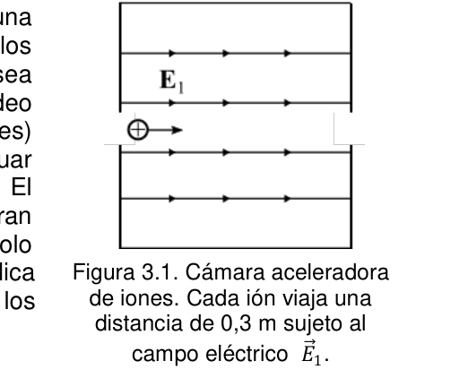
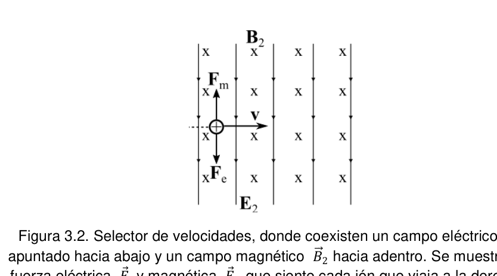
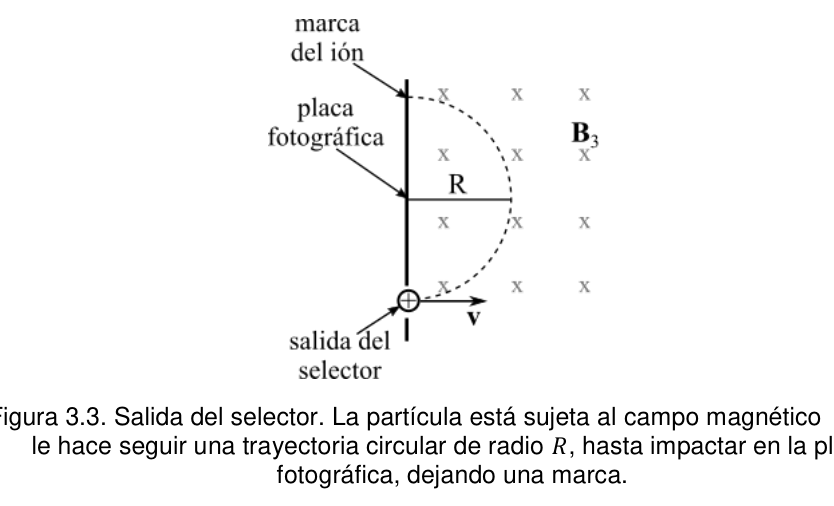
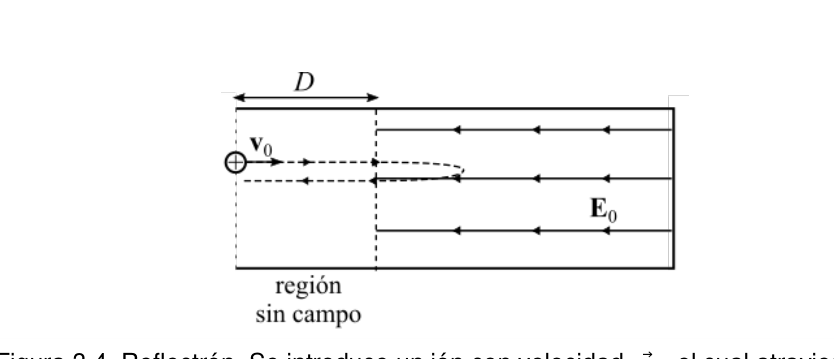
Topic: Electromagnetism, Magnetism Metodi: Lorentz Force Analysis Competenze: Physical Reasoning Objects: Particle Beam, Magnet Fonte: Testo (PDF) — p.3
L’equilibrio atomico
PT68. Scuola superiore di commercio Carlos Pellegrini
Città di Buenos Aires.
La bilancia atomica Si chiama spettrometria di massa l’insieme di tecniche che servono per misurare la massa di corpi estremamente leggeri, come molecole o atomi. Ionizzati. Fin dalla fine del XIX secolo sono stati utilizzati diversi spettrometri di massa per ottenere la massa atomica dei diversi elementi della tabella
- La stampa. Considerate uno spettrometro di massa.
- semplificato. La prima parte è costituita da una fonte di ioni, che si occupa di ionizzare i Atomi del gas della sostanza desiderata analizzare, generalmente con bombardamenti di elettroni. Quindi, gli atomi (ora ioni) hanno una carica elettrica e possono interagire con campi elettrici e magnetici. El Il bombardamento è fatto in modo che la grande La maggior parte degli atomi perde solo uno. l’elettrone. In una camera accanto, si applica Solo un campo elettrico per accelerare i ioni come mostrato in figura 3.1.
(a) Qual è il lavoro svolto su un ione che attraversa completamente la Camera, se il campo elettrico ha modulo 1660 N/C? Ricordate che La carica dell’elettrone è approssimativa. . La seconda parte è costituita da un selettore di velocità. In essa, coesistono un campo elettrico di modulo 1400 V/m e di un magnetico di modulo 0,10 T, Come mostrato in figura 3.2, esercitano forze in senso opposto su una particella che viaggia a destra. Figura 3.1. - Camera acceleratrice. di ioni. Ogni ione viaggia un’altra volta. Distanza di 0,3 m sottoposta al campo elettrico E 1.
OAF 2014 - 87
b) Qual è la forza che una particella sente con velocità modulare 11000 m/s? c) A che velocità deve andare una particella per non deviare? Al momento dell’uscita del selettore, la particella entra in una regione in cui c’è solo campo magnetico di modulo 30 mT, come si vede in figura 3.3. Come la La forza esercitata da un campo magnetico è perpendicolare alla velocità in ogni In un istante, la traccia sarà circolare.
d) Trovare un’espressione per il raggio di percorso in termini di , il carico , la massa e la velocità dell’ion. e) Dopo aver girato una mezza circonferenza, l’ion colpisce una placca la fotografia, lasciando un segno rilevabile. Quando il L’esperimento viene fatto con atomi di neon, si osservano due macchie, una a 19,3 cm e un’altra a 21,3 cm dall’uscita del selettore. Perché c’è? due macchie? Qual è la massa di un atomo di neon? Un’altra tecnica di spettrometria di massa, più avanzata, consiste nel misurare il tempo di volo di un ione in viaggio e ritorno attraverso le due regioni di un Il profilo di energia è di circa un milione di euro. La prima è di lunghezza. e senza campo. Il secondo è un campo elettrico. In senso contrario. a velocità iniziale, modulo 270 N/C. Figura 3.2. Selettore di velocità, dove coesistono un campo elettrico E 2 puntata verso il basso e un campo magnetico B2 verso l’interno. La mostra la forza elettrica F e e la forza magnetica F m che sente ogni ione che viaggia a destra. Figura 3.3. Esce dal selezionatore. La particella è soggetta al campo magnetico B 3, che La radio R, che si trova in una rotta circolare, impatta sulla targa. fotografico, lasciando un segno.
OAF 2014 - 88
f) Quando si invia un protone a velocità modulare di 15000 m/s, si misura un Tempo di volo . Calcola la sua massa, se . Come si vede, il tempo di volo dipende dalla velocità iniziale. con cui entra la particella. In generale, è difficile stabilire tale velocità con molto Precisione, che si traduce in diversi tempi di volo misurati per lo stesso tipo di particella, e genera incertezza sulla massa calcolata. Questo dispositivo Per questo, la nostra rete di controllo può essere un po’ più attenua, aggiustando i suoi parametri in modo che, per una serie di particelle con velocità vicine a , il tempo di riferimento di volo, il più piccolo possibile. g) Trovare un’ espressione per il tempo di volo in termini di carico , la massa , velocità iniziale e il campo elettrico. . h) Supponendo che y sono costanti, trovare il che fa il il tempo di volo è il minimo, in termini di tali costanti. (i) Considerando la condizione di h), quale valore di
- Io sceglierei. Per misurare con precisione la massa di un protone in condizioni di (cfr. punto f) (Audio: minimo della funzione si raggiunge quando ).
Topic: Electromagnetism, Magnetism Metodi: Lorentz Force Analysis Competenze: Physical Reasoning Objects: Particle Beam, Magnet Fonte: Testo (PDF) — p.3
The value of the underlying assets shall be reported in the following column:
PT68. The Carlos Pellegrini School of Commerce
City of Buenos Aires.
The balance of atoms Mass spectrometry is the set of techniques used to measure The mass of extremely light bodies, such as molecules or atoms. Ionized. Since the end of the 19th century various spectrometers have been used. mass to obtain the atomic mass of the different elements of the table The paper. Consider a mass spectrometer . The Commission has already adopted a proposal. The first part consists of a The ionic source, which is responsible for ionizing the The gas atoms of the desired substance to analyse, usually by bombardment of electrons. So, the atoms (now ions) They have an electrical charge and can interact with each other. with electric and magnetic fields. El The bombing is done so that the big Most atoms lose only one. electron. In an adjacent chamber, it is applied Just an electric field to accelerate the . ions as shown in Figure 3.1.
(a) What is the work done on an ion that crosses the whole camera, if the electric field Does the module 1660 N/C have a power output? Remember that The electron charge is approximate. . The second part consists of a speed selector. In it, there coexist a electric field a module of 1400 V/m and a magnetic one a diameter of not more than 0,10 T, As shown in Figure 3.2, they exert forces in the opposite direction on a particle traveling to the right. The following information is provided: Accelerator camera . of ions. Each ion travels one . distance of 0,3 m subject to electric field E 1.
The following is the list of the Member States’ financial statements:
(b) What is the force a particle feels at modular velocity 11000 m/s? (c) What speed must a particle have to avoid deviation? At the exit of the selector, the particle enters a region where there is only magnetic field The vehicle is equipped with a 30 mT module as shown in Figure 3.3. Like the The force exerted by a magnetic field is perpendicular to the velocity at each In an instant, the trajectory will be circular.
(d) Find an expression for the trajectory radius in terms of , the load , the mass and the ion velocity. e) After spinning half a circle, the ion impacts a plate. photographic, leaving a trace that can be detected later. When the The experiment is done with neon atoms, you see two spots. One at 19,3 cm and the other at 21,3 cm from the selector exit. Why is there? Two spots? What is the mass of a neon atom? Another more advanced mass spectrometry technique is to measure the One ion’s flight time on its way back through the two regions of a The number of samples taken is the number of samples taken. The first is long. And without a field The second is an electric field. In the opposite direction at the initial speed, of module 270 N/C. The following table shows the following: Speed selector, where an electric field coexists E 2 A magnetic field B2 is pointing inward. They show the The electrical force F e and magnetic force F m that senses each ion traveling to the right. The following is the list of the following: Out of the selector. The particle is subject to magnetic field B3, which It makes it follow a circular path of R-rays, until it impacts the plate. photographic, leaving a mark.
The following is the list of the countries of the European Union:
(f) When sending a proton at a module speed of 15000 m/s, a Flight time . Calculate its mass, yes. . As you can see, flight time depends on the initial speed. With which the particle enters. In general, it is difficult to establish such a speed with much accuracy, which results in different flight times measured for the same The particles are of the same type, and it generates uncertainty in the calculated mass. This device . It helps to alleviate the problem a little bit by adjusting its parameters so that, for a series of particles with velocities close to , the time range flying as small as possible. (g) Find an expression for flight time in terms of , cargo , the mass , the initial speed And the electric field. . (h) Assuming that y They’re constant, find the which makes the The time of flight is the minimum in terms of these constants. (i) In view of the condition in (h), what value of I would choose. to accurately measure the mass of a proton under the conditions of the (f) (Aid: minimum function It is achieved when ).
Topic: Electromagnetism, Magnetism Metodi: Lorentz Force Analysis Competenze: Physical Reasoning Objects: Particle Beam, Magnet Fonte: Testo (PDF) — p.3
Tres ninos en el sube y baja
PT69. Instituto de Enseñanza San Jorge
Colegio Belén
Instituto Santo Tomás de Aquino
Ciudad de Santiago del Estero.
Tres niños Juan, Raúl y Sabrina, tratan de balancearse en un sube y baja de la plaza de su barrio. Éste consiste en una tabla homogénea de peso despreciable y de 3,6 m de longitud, apoyada en su punto medio P sobre una piedra que actúa como pivote. Juan se sienta en el extremo izquierdo y Raúl en el extremo derecho, como se muestra en la figura 1.
Figura 1 Figura 3.4. Reflectrón. Se introduce un ión con velocidad 𝑣 0, el cual atraviesa una distancia 𝐷 en una región sin campo, y llega otra región con campo 𝐸 0, que lo frena y devuelve al punto de partida. P Juan
Raúl Sabrina
OAF 2014 - 89
a) Por el efecto de sus propios pesos, ¿Hacia qué lado se balanceará el
sube y baja? Justifique.
b) Para lograr que el sube y baja se encuentre en equilibrio, ¿A qué
distancia de Raúl se debe sentar Sabrina?
c) ¿Cuál es el módulo, dirección y sentido de la reacción en el punto de
apoyo “P” cuando están los tres niños en equilibrio sobre el juego?
d) Si Sabrina toma el lugar de Juan, ¿A qué distancia de Raúl se debe
sentar Juan para equilibrar el juego?
Las masas de los niños son: Sabrina: 25kg, Raúl: 36kg y Juan: 50kg
respectivamente
Nota: Considerar g = 10 m / s2
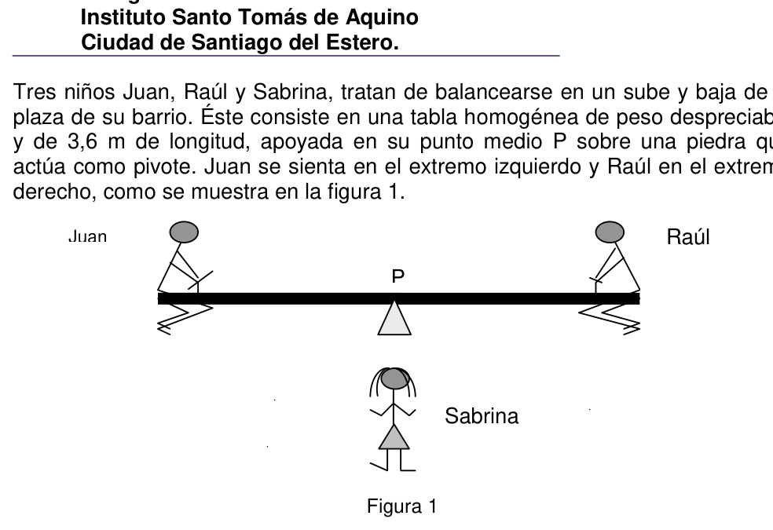
Topic: Rigid Body Statics Metodi: Torque & Angular Momentum Analysis, Free-Body Diagram Competenze: Physical Reasoning Objects: Lever, Beam Fonte: Testo (PDF) — p.3
Tre bambini su e giù
PT69. Istituto di istruzione San Jorge
La scuola di Belém
Istituto Santo Tommaso d’ Aquino
Città di Santiago del Estero.
Tre bambini Juan, Raúl e Sabrina, cercano di sbalzarsi in un’alta e bassa di la Piazza del suo quartiere. Questo consiste in una tabella omogenea di peso dispregiato. e di 3,6 m di lunghezza, appoggiata al suo punto medio P su una pietra che agisce come pivot. Juan siede all’estremità sinistra e Raúl all’estremità. La Commissione ha adottato una decisione che prevede che il diritto di voto sia stato applicato.
Figura 1 Figura 3.4. Riflettore. Si introduce un ione a velocità v 0, che attraversa un Distanza D in una regione senza campo, e arriva un’altra regione con campo E 0, che lo frenano e Torna al punto di partenza. P Giovanni
Raúl Sabrina
OAF 2014 - 89 a) Per effetto dei propri pesi, verso quale parte si balanzerà il Su e giù? giustifica. b) Per ottenere che l’ascesa e la discesa siano in equilibrio, a cosa Distanza da Raul deve sedersi Sabrina? (c) Qual è il modulo, la direzione e il senso della reazione al punto di supporto P quando i tre bambini sono in equilibrio sul gioco? d) Se Sabrina prende il posto di Juan, a che distanza da Raúl si deve? Sediare Juan per bilanciare il gioco? Le masse dei bambini sono: Sabrina: 25kg, Raúl: 36kg e Juan: 50kg rispettivamente Nota: Considerare g = 10 m / s2
Topic: Rigid Body Statics Metodi: Torque & Angular Momentum Analysis, Free-Body Diagram Competenze: Physical Reasoning Objects: Lever, Beam Fonte: Testo (PDF) — p.3
Three babies up and down
PT69. The San Jorge Institute of Education
Bethlehem College
The Institute of St. Thomas Aquinas
The city of Santiago del Estero.
Three children Juan, Raul and Sabrina, trying to swing in a climb and fall of the Square in your neighborhood. This consists of a homogeneous table of negligible weight . and of a length of 3.6 m, supported at its midpoint P on a stone which It acts as a pivot. Juan sits on the left end and Raul on the left end. The right, as shown in Figure 1.
Figure 1 The following is the list of the following: It’s a reflector. An ion is introduced at velocity v 0, which passes through a distance D in a region without a field, and it comes to another region with a field E 0, which holds it back and Go back to the starting point. P John
Raul Sabrina .
The following is the list of the Member States’ financial statements: (a) By the effect of its own weights, which side will the up and down? You justify it. (b) To achieve a balance of ups and downs, what? distance from Raul should Sabrina sit? (c) What is the module, direction and direction of the reaction at the point of support P when the three kids are balanced about the game? (d) If Sabrina takes Juan’s place, how far away from Raul is she? Sit down John to balance the game? The children’s weights are: Sabrina: 25kg, Raul: 36kg and Juan: 50kg respectively Note: Consider g = 10 m / s2
Topic: Rigid Body Statics Metodi: Torque & Angular Momentum Analysis, Free-Body Diagram Competenze: Physical Reasoning Objects: Lever, Beam Fonte: Testo (PDF) — p.3
Pendulo y tension
PT70. Instituto de Enseñanza San Jorge
Colegio Belén
Instituto Santo Tomás de Aquino
Ciudad de Santiago del Estero.
Un péndulo de 1m de longitud está amarrado en lo alto de una alacena, y está
inicialmente mantenido formado un ángulo de 30º con la vertical (Figura 2). Al
soltarse el péndulo,
a) ¿Cuál será el ángulo α que la cuerda formará con la vertical, cuando la
masa suspendida alcance el punto más alto , bajo la alacena?
(desprecie los efectos de la fricción)
b) ¿Cuál es la tensión de la cuerda en el punto más bajo de la trayectoria?
(considere m=0,3 kg). Realice el diagrama de cuerpo libre.
c) Si al pasar el péndulo por el punto más bajo, se corta la cuerda, ¿La
pelota cae en caída libre o en tiro oblicuo? Justifique.
d) ¿Cuál es el alcance de la esfera suponiendo que se encuentra a 1,5m
del piso?
e) Realice el diagrama de Energía Mecánica Total en función de x
desde el momento en que se desprende consignando en el mismo:
Energía en x=0, cuando está cayendo y está a 1m de altura y al final.
Nota: Se desprecia la masa de la cuerda. Considerar g = 10 m/s²
30º α Figura 2 0,50m
OAF 2014 - 90
Topic: Oscillations & Waves, Conservation of Energy Metodi: Energy Conservation Method, Free-Body Diagram Competenze: Physical Reasoning Objects: Pendulum, String Fonte: Testo (PDF) — p.3
Pendenza e tensione
PT70. Istituto di istruzione San Jorge
La scuola di Belém
Istituto Santo Tommaso d’ Aquino
Città di Santiago del Estero.
Un pendolo di 1m di lunghezza è attaccato alla cima di un’alacena, e sta La struttura è stata inizialmente mantenuta a un angolo di 30° con la verticale (Figura 2). Al Smettere il pendolo, a) Qual è l’angolo α che la corda formerà con la verticale, quando la La massa sospesa raggiunge il punto più alto, sotto l’alacena? (sprega gli effetti della friczione) b) Qual è la tensione della corda al punto più basso del percorso? (considerare m=0,3 kg). Fate il diagramma del corpo libero. (c) Se il pendolo passa il punto più basso e la corda viene tagliata, la La palla cade in caduta libera o in tiro oblicuo? giustifica. d) Qual è la portata della sfera, se si trova a 1,5 m?
- dal pavimento? e) Realizzare il diagramma di energia meccanica totale in base a x dal momento in cui esso è pubblicato, con la seguente nota: Energia a x=0, quando sta scendendo e è a 1 metro di altezza e alla fine. Nota: la massa della corda viene disprezzata. Considerare g = 10 m/s2
30º α Figura 2 0,50m
OAF 2014 - 90
Topic: Oscillations & Waves, Conservation of Energy Metodi: Energy Conservation Method, Free-Body Diagram Competenze: Physical Reasoning Objects: Pendulum, String Fonte: Testo (PDF) — p.3
The following table shows the following:
PT70. The San Jorge Institute of Education
Bethlehem College
The Institute of St. Thomas Aquinas
The city of Santiago del Estero.
A pendulum 1m long is tied to the top of a fence, and it’s Initially maintained at a 30° angle with the vertical (Figure 2). Al Let go of the pendulum, (a) What angle α will the string form with the vertical when the Suspended mass reaches the highest point, under the aperture? (disregard the effects of friction) (b) What is the tension of the rope at the lowest point of the trajectory? (see m = 0.3 kg). Make the free-body diagram. (c) If the rope is cut when the pendulum passes through the lowest point, ball falls in free fall or in oblique shot? You justify it. (d) What is the range of the sphere assuming it is 1.5m? The floor? (e) Draw the Total Mechanical Energy diagram based on x from the moment it is issued, the following is inserted in it: Energy at x is equal to 0, when it’s falling and it’s 1m high and at the end. Note: The mass of the rope is disregarded. Consider g = 10 m/s2
30º α Figure 2 0,50m
The following is the list of the countries of the European Union:
Topic: Oscillations & Waves, Conservation of Energy Metodi: Energy Conservation Method, Free-Body Diagram Competenze: Physical Reasoning Objects: Pendulum, String Fonte: Testo (PDF) — p.3
El te de las cinco
PT71. Instituto de Enseñanza San Jorge
Colegio Belén
Instituto Santo Tomás de Aquino
Ciudad de Santiago del Estero.
El té de las cinco
Para los británicos el té, al igual que ocurre en China y Japón, es servido como
parte de un ritual no tan rígido como en oriente, pero que debe seguir sus
pasos. La ceremonia del té de las cinco, seguida puntualmente por millones de
ingleses, es una costumbre muy asentada desde que descubrieron las virtudes
de algunos de los mejores tés del mundo, cultivados en las montañas húmedas
del norte de la India.
Al preparar una infusión de té negro, el agua tiene que haber llegado a un hervor
suave, de este modo presenta la temperatura adecuada de 90ºC grados, pero
todavía conserva su contenido en oxígeno. Para tés blancos y verdes la
temperatura debe oscilar entre los 75ºC y los 90ºC. (En general cuanto mejor es
el té, menos temperatura necesita)
Según este antiquísimo ritual, sería un sacrilegio agregarle agua o hielo para que
se enfríe hasta la temperatura adecuada para su consumo. En argentina, se
realiza este procedimiento con la intención de no esperar los 5 min promedio que
necesita para enfriarse hasta su temperatura óptima de consumo, entre 57º y
62ºC aproximadamente.
Suponiendo que el té contenido en una taza está a 90ºC cuando se le coloca un
cubito de hielo a 0ºC, responda:
a) ¿Cuántos grados desciende la temperatura del té agregando 1 cubito de
hielo?
b) ¿Cuántos cubitos hay que colocarle para llevarlo a la temperatura
adecuada para ser consumido?
c) ¿Se obtendrá el mismo resultado si en lugar de colocar todos los cubitos
al mismo tiempo, se va colocando uno a uno (colocar el cubito y esperar
hasta que se fusione por completo, se estabilice la temperatura de la
mezcla,
y
luego
recién
colocar
el
cubito
siguiente,
y
así
sucesivamente)?
Si luego de esto se recalentara todo el contenido de la taza a una temperatura
final de 90°C, empleando un calentador eléctrico de 1400 W,
d) ¿Cuánto tiempo debería conectarse el calentador?
Datos útiles:
Capacidad de una Taza de Té : 200 cm³
Volumen de un cubito de hielo : 21,8 cm³
Ce H2O = 1 cal /g °C
δ H2O = 1,00 g/cm³
Lf HIELO = 80 cal / g
δf HIELO = 0,92 g/cm³
Nota: Idealmente, ninguno de los elementos empleados intercambia calor con
el medio que lo rodea. Se desprecia la masa del calentador eléctrico y el calor
absorbido por la taza. Se supone la densidad y el calor específico del té iguales
a los del agua.
Topic: Thermodynamics Metodi: First Law of Thermodynamics Competenze: Physical Reasoning Objects: Calorimeter Fonte: Testo (PDF) — p.3
Il tè delle cinque
PT71. Istituto di istruzione San Jorge
La scuola di Belém
Istituto Santo Tommaso d’ Aquino
Città di Santiago del Estero.
Il tè delle cinque Per i britannici il tè, come succede in Cina e Giappone, viene servito come Parte di un rituale non così rigido come in Oriente, ma che deve seguire i suoi passi. La cerimonia del tè delle cinque, seguita puntualmente da milioni di persone. Inglesi, è un’usanza molto consolidata da quando hanno scoperto le virtù. di alcuni dei migliori tè del mondo, coltivati sulle montagne umide. dell’India settentrionale. Quando si prepara un infuso di tè nero, l’acqua deve essere arrivata a un punto di ripudio. Il livello di temperatura di una piattaforma di calore è così elevato, che presenta una temperatura adeguata di 90 °C, ma conserva ancora il contenuto di ossigeno. Per te ’ bianco e verde la La temperatura deve oscillare tra 75°C e 90°C. (In generale il meglio è il tè, meno temperatura ha bisogno) Secondo questo rituale molto antico, sarebbe sacrilegio aggiungere acqua o ghiaccio per farlo. si raffredda alla temperatura adatta al consumo. In Argentina, si Il medico esegue questa procedura con l’intenzione di non aspettare i 5 minuti medi che La temperatura massima di consumo è di circa 57°C. 62° circa. Supponiamo che il tè contenuto in una tazza sia a 90°C quando viene messo un Capa di ghiaccio a 0oC, risponde: a) Quanti gradi scende la temperatura del tè aggiungendo 1 cubo di
- Il ghiaccio? b) Quanti cubetti devono essere posti per portarlo a temperatura adeguata al consumo? (c) Si ottiene lo stesso risultato se invece di collocare tutti i cubetti Allo stesso tempo, si sta posizionando uno a uno (si mette il cucchiaio e si aspetta fino a che non si fusi completamente, la temperatura della miscela, y
- Poi
- appena
- mettere el
- Cuccio successivo, y
- Così . successivamente)? Se dopo questo il contenuto della tazza fosse riscaldato a una temperatura fine 90°C, utilizzando un riscaldatore elettrico di 1400 W, d) Quanto tempo dovrebbe essere collegato il riscaldatore? Informazioni utili: Capacità di una tazza di tè: 200 cm3 Volume di un cubito di ghiaccio: 21,8 cm3 Ce H2O = 1 cal /g °C δ H2O = 1,00 g/cm3 Lf IGEL = 80 cal / g δf Ghiaccio = 0,92 g/cm3 Nota: Idealmente, nessuno degli elementi utilizzati scambierà calore con l’ambiente che lo circonda. Si disprezza la massa del riscaldatore elettrico e il calore. Assorbita dalla tazza. Si suppone che la densità e il calore specifici del tè siano uguali a quelli dell’acqua.
Topic: Thermodynamics Metodi: First Law of Thermodynamics Competenze: Physical Reasoning Objects: Calorimeter Fonte: Testo (PDF) — p.3
The tea of the five
PT71. The San Jorge Institute of Education
Bethlehem College
The Institute of St. Thomas Aquinas
The city of Santiago del Estero.
The five o ‘clock tea . For the British tea, as it happens in China and Japan, is served as Part of a ritual not as rigid as in the East, but that must follow its own. steps. The five o’clock tea ceremony, followed promptly by millions of people. Englishmen, it’s a very established custom since they discovered virtues. Some of the best teas in the world, grown in the wet mountains. from northern India. When preparing a black tea infusion, the water must have reached a boiling point. The temperature is therefore appropriate to 90°C but It still retains its oxygen content. For white and green teas the The temperature should be between 75°C and 90°C. (In general the better it is the tea, less temperature you need) According to this very ancient ritual, it would be sacrilegious to add water or ice to it so that it would be It is cooled to the appropriate temperature for consumption. In Argentina, they are This procedure is performed with the intention of not waiting for the average 5 min that It needs to be cooled to its optimal consumption temperature, between 57°C and
- It’s about 62 degrees. Assuming the tea contained in a cup is at 90°C when a cup is placed on it. ice sheet at 0oC, answer: (a) How many degrees does the tea temperature drop by adding 1 cup of tea?
- ice? (b) How many cubes must be placed to bring it to temperature Suitable for consumption? (c) Will the same result be achieved if instead of placing all the cubes At the same time, you’re going to be putting one by one (put the cuff and wait Until it melts completely, the temperature of the liquid is stabilized. mix, y Then
- I just … Put it in . el I ‘m going to cover my neck . the following, y That ‘s it . (in succession) If after this all the contents of the cup were to be re-heated to a temperature a 90°C end, using an electric heater of 1400 W, (d) How long should the heater be connected? Useful data: Capacity of one cup of tea: 200 cm3 Volume of one ice cubes: 21.8 cm3 The following table shows the results of the calculations: The following is the list of the products: If ICE = 80 cal / g The following table shows the results of the calculations: Note: Ideally, none of the elements used exchanged heat with the environment around it. The mass of the electric heater and heat are being scorned. absorbed by the cup. The specific density and heat of tea are assumed to be equal. The ones in the water.
Topic: Thermodynamics Metodi: First Law of Thermodynamics Competenze: Physical Reasoning Objects: Calorimeter Fonte: Testo (PDF) — p.3
Pendulo y choque elastico
PT72. Instituto Tecnológico del Comahue
Ciudad de Neuquén.
El péndulo simple de la figura consta de una masa puntual m1=20 kg, atada a una cuerda sin masa de longitud 1.5 m. Se deja caer desde la posición A. Al llegar al punto más bajo de su trayectoria, punto B, se produce un choque
OAF 2014 - 91 perfectamente elástico con otra masa m2=25 kg, que se encuentra en reposo en esa posición sobre una superficie horizontal sin rozamiento. Como consecuencia del choque, la masa m1 rebota hasta alcanzar la posición C a altura h del suelo. Determinar: a. La velocidad de m1 al llegar a la posición B antes del choque y la tensión de la cuerda en ese instante. b. Las velocidades de m1 y m2 después del choque. c. La energía cinética que pierde m1 en el choque. d. La altura h al que asciende la masa m1 después del choque.
Topic: Conservation of Momentum, Conservation of Energy Metodi: Conservation of Momentum, Energy Conservation Method Competenze: Physical Reasoning Objects: Pendulum, Block Fonte: Testo (PDF) — p.3
Pendolo e colpo elastico
PT72. L’Istituto Tecnologico del Comahue
Città di Neuquén.
Il pendolo semplice della figura è costituito da una massa puntuale m1=20 kg, legata a una corda senza massa di 1,5 m di lunghezza. Si fa cadere dalla posizione A. Al Arrivare al punto più basso della sua traccia, punto B, si verifica un colpo.
OAF 2014 - 91 perfettamente elastica con un’altra massa m2=25 kg, che si trova a riposo in la posizione su una superficie orizzontale senza arrugginire. Come conseguenza di colpo, la massa m1 rimbalza fino a raggiungere la posizione C a h alti del suolo. Determinare: a. La velocità di m1 raggiungendo la velocità di m1 raggiungendo la velocità di m1 raggiungendo la velocità di m1 raggiungendo la velocità di m1 raggiungendo la velocità di m1 Posizione B prima dello scontro e la tensione della corda in quella
- In un istante. b. Le velocità de m1 y m2 dopo l’impatto. c. L’energia cinetica che perde m1 nel colpo. d. L’altezza h che raggiunge la massa m1 dopo l’impatto.
Topic: Conservation of Momentum, Conservation of Energy Metodi: Conservation of Momentum, Energy Conservation Method Competenze: Physical Reasoning Objects: Pendulum, Block Fonte: Testo (PDF) — p.3
The following conditions shall apply:
PT72. The Comahue Institute of Technology
The city of Neuquén.
The simple pendulum in the figure consists of a point mass m1=20 kg, bound to a massless string of 1.5 m in length. It’s dropped from position A. Al reaching the lowest point of its trajectory, point B, a crash occurs.
The following is the list of the countries of the European Union: perfectly elastic with another mass m2=25 kg, resting at This position on a horizontal surface without any bruising. As a result The mass m1 rebounds until it reaches the position C at ground level h. Determine: a. The speed of m1 at the reach of the position B before impact and the The tension of the rope on that . I’ll be right there. b. The speed de m1 y m2 after the impact. c. The kinetic energy you lose. m1 in the shock. d. The height h to which the mass m1 after impact.
Topic: Conservation of Momentum, Conservation of Energy Metodi: Conservation of Momentum, Energy Conservation Method Competenze: Physical Reasoning Objects: Pendulum, Block Fonte: Testo (PDF) — p.3
Escalera apoyada en pared
PT73. Instituto Tecnológico del Comahue
Ciudad de Neuquén.
Una escalera homogénea de 10 m de altura y 400 N de peso se apoya sobre una pared vertical lisa y con su extremo inferior a 6 metros de la pared apoyado sobre un suelo horizontal rugoso con coeficiente de rozamiento estático igual a 0,4. Un hombre de masa 80 kg sube lentamente por la escalera. Se pide calcular: a) el valor máximo de la fuerza de rozamiento que ejerce el suelo sobre la escalera, b) el valor de la fuerza de rozamiento cuando el hombre ha recorrido 3 m sobre la escalera, c) podrá el hombre subir hasta el final de la escalera sin que la misma resbale sobre el piso? Por qué?
Topic: Rigid Body Statics Metodi: Torque & Angular Momentum Analysis, Free-Body Diagram Competenze: Physical Reasoning Objects: Rod, Beam Fonte: Testo (PDF) — p.3
Scale appoggiata a muro
PT73. L’Istituto Tecnologico del Comahue
Città di Neuquén.
Una scala omogenea di 10 m di altezza e 400 N di peso si appoggia su un muro verticale liscio e con la sua estremità inferiore a 6 metri dal muro appoggiato su un terreno orizzontale rugoso con un coefficiente di ruggine statico pari a 0,4. Un uomo di 80 kg sale lentamente su una scala. Si chiede Calcolare: a) il valore massimo della forza di ruggine esercitata dal suolo sulla superficie Scala, b) il valore della forza di rottura quando l’uomo ha percorso 3 m sulla scala, (c) il uomo può salire fino alla fine della scala senza che la stessa
- Scorreva sul pavimento? - Perché?
Topic: Rigid Body Statics Metodi: Torque & Angular Momentum Analysis, Free-Body Diagram Competenze: Physical Reasoning Objects: Rod, Beam Fonte: Testo (PDF) — p.3
Wall-backed staircase
PT73. The Comahue Institute of Technology
The city of Neuquén.
A homogeneous ladder of 10 m high and 400 N weight rests on a smooth vertical wall and with its end less than 6 metres from the wall supported on a rough horizontal floor with a static friction coefficient of 0,4. A man weighing 80 kg is slowly climbing the stairs. It ‘s asked . calculate: (a) the maximum value of the frictional force exerted by the soil on the Staircase, (b) the value of the friction force when the man has walked 3 m On the ladder, (c) the man may climb to the end of the staircase without the staircase itself. slipped on the floor? Why? Why?
Topic: Rigid Body Statics Metodi: Torque & Angular Momentum Analysis, Free-Body Diagram Competenze: Physical Reasoning Objects: Rod, Beam Fonte: Testo (PDF) — p.3
Hielo en agua
PT74. Instituto Tecnológico del Comahue
Ciudad de Neuquén.
Qué cantidad de hielo a -20°C ha de introducirse en 0,30 kg de agua, inicialmente a 20°C, para que la temperatura final sea 0°C con todo el hielo fundido? La capacidad calorífica del recipiente es despreciable.
Topic: Thermodynamics Metodi: First Law of Thermodynamics Competenze: Physical Reasoning Objects: Calorimeter Fonte: Testo (PDF) — p.3
Ghiaccio in acqua
PT74. L’Istituto Tecnologico del Comahue
Città di Neuquén.
Quanta quantità di ghiaccio a -20°C deve essere introdotta in 0,30 kg di acqua, inizialmente a 20°C, per ottenere la temperatura finale di 0°C con tutto il ghiaccio Fuso? La capacità calorifica del recipiente è scarsa.
Topic: Thermodynamics Metodi: First Law of Thermodynamics Competenze: Physical Reasoning Objects: Calorimeter Fonte: Testo (PDF) — p.3
The following table shows the results of the calculation of the risk of the risk of the risk of a collision with the relevant Member State:
PT74. The Comahue Institute of Technology
The city of Neuquén.
How much ice to -20°C should be introduced into 0,30 kg of water, initially to 20°C, so that the final temperature is 0°C with all ice
- Fused? The heat capacity of the container is negligible.
Topic: Thermodynamics Metodi: First Law of Thermodynamics Competenze: Physical Reasoning Objects: Calorimeter Fonte: Testo (PDF) — p.3
Paquete, pendiente y resorte
PT75. Escuelas Técnicas Raggio
Ciudad de Buenos Aires.
Un paquete de 2 kg se suelta en una pendiente de 53° a 4 m de un resorte largo, cuya constante de fuerza es de 120 N/m y está sujeto a la base de la pendiente. El coeficiente de fricción entre el paquete y la pendiente vale 0,5. La masa del resorte es despreciable. a) ¿Qué rapidez tiene el paquete justo antes de llegar al resorte? b) ¿Cuál es la compresión máxima del resorte? c) Al rebotar el paquete hacia arriba, ¿qué tanto se acerca a su posición inicial?
OAF 2014 - 92
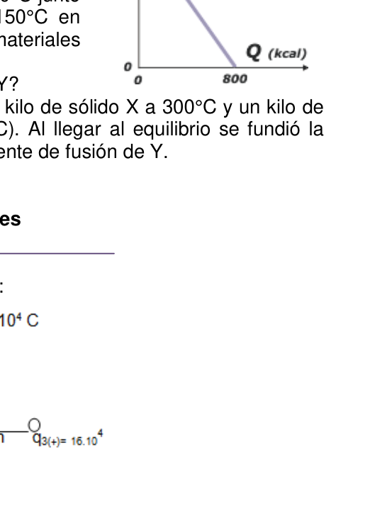
Topic: Conservation of Energy Metodi: Energy Conservation Method, Free-Body Diagram, Hooke’s Law Competenze: Physical Reasoning, Mathematical Modeling Objects: Block, Spring, Inclined Plane Fonte: Testo (PDF) — p.3
Pacco, pendenti e resorte
PT75. Scuole tecniche Raggio
Città di Buenos Aires.
Un pacchetto di 2 kg viene rilasciato su una pendenza 53° a 4 m di una lunghezza di resorte, la cui costante forza è di 120 N/m e è soggetta alla base della pendenza. El Coefficiente di frizione tra il pacchetto e la pendenza vale 0,5. La massa della primavera è dispregiata. a) Che velocità ha il pacco appena prima di Arrivare alla primavera? b) Qual è la compressione massima della scorsa? c) Quando si rimbalza l’imballaggio verso l’alto, quanto si Si avvicina alla sua posizione iniziale?
OAF 2014 - 92
Topic: Conservation of Energy Metodi: Energy Conservation Method, Free-Body Diagram, Hooke’s Law Competenze: Physical Reasoning, Mathematical Modeling Objects: Block, Spring, Inclined Plane Fonte: Testo (PDF) — p.3
Package, pendant and spring
PT75. Raggio Technical Schools
City of Buenos Aires.
A 2 kg package is released on a slope of 53° to 4 m long spring, whose force constant is 120 N/m and is subject to the base of the slope. El friction coefficient between the package and the slope It’s worth 0.5. The mass of the spring is despicable. (a) How fast is the package just before get to the spring? (b) What is the maximum spring compression? (c) When bouncing the package upwards, how much is it You’re getting closer to your starting position?
The following is the list of the countries of the European Union:
Topic: Conservation of Energy Metodi: Energy Conservation Method, Free-Body Diagram, Hooke’s Law Competenze: Physical Reasoning, Mathematical Modeling Objects: Block, Spring, Inclined Plane Fonte: Testo (PDF) — p.3
Centro de gravedad de automovil
PT76. Escuelas Técnicas Raggio
Ciudad de Buenos Aires.
Con el motor retirado, la masa del automóvil es de 1.100 kg y su centro de gravedad está en C.
a) Se quiere situar el motor de 220 kg cuyo centro de gravedad denominamos E, de manera que el centro de gravedad del conjunto quede a mitad de distancia entre las ruedas delanteras, A, y traseras, B. ¿Qué valor debe tener b? b) Si el automóvil se estaciona sobre una pendiente de subida de 15º ¿qué valor tiene la fuerza de apoyo sobre las ruedas?
Topic: Rigid Body Statics Metodi: Torque & Angular Momentum Analysis, Free-Body Diagram Competenze: Physical Reasoning, Mathematical Modeling Objects: Wheel Fonte: Testo (PDF) — p.3
Centro di gravità di un’automobile
PT76. Scuole tecniche Raggio
Città di Buenos Aires.
Con il motore rimosso, la massa dell’auto è di 1.100 kg e il suo centro di massa è di 1.100 kg. La gravità è in C.
a) Si vuole posizionare il motore da 220 kg il cui centro di gravità E, così il centro di gravità del tutto. rimane a metà distanza tra le ruote anteriori, A, e le ruote posteriori, B. Qual è il valore di b? b) Se la macchina è parcheggiata su una pendice di salita di 15°, cosa Il valore ha la forza di supporto sulle ruote?
Topic: Rigid Body Statics Metodi: Torque & Angular Momentum Analysis, Free-Body Diagram Competenze: Physical Reasoning, Mathematical Modeling Objects: Wheel Fonte: Testo (PDF) — p.3
The vehicle’s centre of gravity shall be the vehicle’s centre of gravity.
PT76. Raggio Technical Schools
City of Buenos Aires.
With the engine removed, the mass of the car is 1,100 kg and its centre of mass is Gravity is in C.
(a) The 220 kg engine with the centre of gravity is to be located. We call it E, so the center of gravity of the set It is halfway between the front wheels, A, and the rear wheels, B. What should b be? (b) If the car is parked on a 15° climb slope, what Does the value have the supporting force on the wheels?
Topic: Rigid Body Statics Metodi: Torque & Angular Momentum Analysis, Free-Body Diagram Competenze: Physical Reasoning, Mathematical Modeling Objects: Wheel Fonte: Testo (PDF) — p.3
Calorimetria X e Y
PT77. Escuelas Técnicas Raggio
Ciudad de Buenos Aires.
El gráfico muestra cómo varía la temperatura de una muestra de un kilogramo de un material X que se encuentra en estado sólido a medida que intercambia calor con el medio exterior. A continuación se coloca esa muestra X a 200°C junto con un kilogramo de otro material Y a 150°C en estado sólido. Al llegar al equilibrio ambos materiales son sólidos y se encuentran a 190°C. a) ¿Cuál es el calor específico del material Y? b) Luego se colocan en otro calorímetro un kilo de sólido X a 300°C y un kilo de sólido Y a la temperatura de fusión (250°C). Al llegar al equilibrio se fundió la mitad del material Y. Determinar el calor latente de fusión de Y.
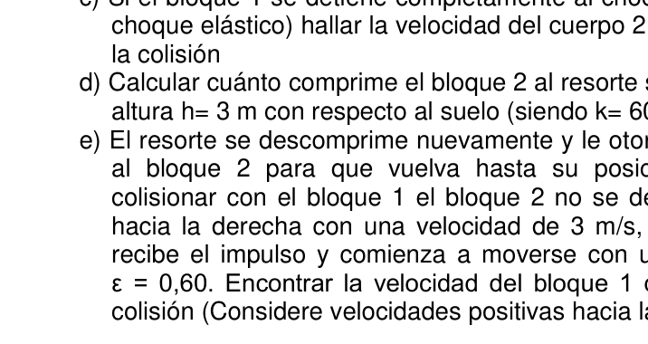
Topic: Thermodynamics Metodi: Graph Linearization, First Law of Thermodynamics Competenze: Physical Reasoning, Mathematical Modeling Objects: Calorimeter Fonte: Testo (PDF) — p.3
Calorimetria X e Y
PT77. Scuole tecniche Raggio
Città di Buenos Aires.
Il grafico mostra come varia la temperatura di una mostra di un chilo di materiale X che si Trova en stato solido a misura che scambiate. Calore con el media all’esterno. A Poi si inserisce quel campione X a 200°C accanto con un kg di altro materiale Y a 150°C in stato solido. Al raggiungimento del equilibrio di entrambi i materiali sono solidi e si trovano a 190°C. a) Qual è la specificità di calore del materiale Y? b) Poi si inserisce in un altro calometro un chilo di solido X a 300°C e un chilo di solido E a temperatura di fusione (250°C). Quando si è raggiunto l’equilibrio si è fonduta la metà del materiale Y. Determinare il calore latente di fusione di Y.
Topic: Thermodynamics Metodi: Graph Linearization, First Law of Thermodynamics Competenze: Physical Reasoning, Mathematical Modeling Objects: Calorimeter Fonte: Testo (PDF) — p.3
The following table shows the results of the calculation of the calorific values of the product:
PT77. Raggio Technical Schools
City of Buenos Aires.
The graph shows how the temperature varies from one to another. sample of one kilogram of an X-material that is Find him . en State of the Union solid . a measure That It ‘s a trade . Heat . with el medium outside. A then that sample X to 200°C is placed next to with one kilogram of other material Y to 150°C in The state of solid. When both materials are in balance . are solid and are 190°C. (a) What is the specific heat of material Y? (b) Then one kilogram of solid X at 300°C and one kilogram of are placed in another calorimeter. solid and at melting point (250°C). When the balance was reached, the half of the material Y. Determine the latent heat of fusion of Y.
Topic: Thermodynamics Metodi: Graph Linearization, First Law of Thermodynamics Competenze: Physical Reasoning, Mathematical Modeling Objects: Calorimeter Fonte: Testo (PDF) — p.3
Tres cargas, fuerza resultante
PT78. Instituto Nuestra Señora de Lourdes
Porteña, Córdoba.
Se tiene tres cargas como muestra la figura:
Calcular:
a) La fuerza resultante en la carga q1
b) Graficarla
OAF 2014 - 93
Topic: Electrostatics Metodi: Coulomb’s Law, Vector Decomposition, Superposition Principle Competenze: Physical Reasoning, Mathematical Modeling Objects: Point Charge Fonte: Testo (PDF) — p.3
Tre cariche, forza risultante
PT78. Istituto Nostra Signora di Lourdes
Porteña, Cordoba.
Si hanno tre cariche come mostra la figura:
Calcolare: a) La forza risultante dal carico q1 b) Grafica
OAF 2014 - 93
Topic: Electrostatics Metodi: Coulomb’s Law, Vector Decomposition, Superposition Principle Competenze: Physical Reasoning, Mathematical Modeling Objects: Point Charge Fonte: Testo (PDF) — p.3
Three loads, resulting force
PT78. Our Lady of Lourdes Institute
The gate, Cordoba.
There are three charges as shown in the figure:
Calculation: (a) The resulting force on the load q1 (b) Draw it
The following is the list of the countries of the European Union:
Topic: Electrostatics Metodi: Coulomb’s Law, Vector Decomposition, Superposition Principle Competenze: Physical Reasoning, Mathematical Modeling Objects: Point Charge Fonte: Testo (PDF) — p.3
Calentar agua con calentador electrico
PT79. Instituto Nuestra Señora de Lourdes
Porteña, Córdoba.
Hallar el tiempo necesario para calentar 100l de agua a una temperatura de 75ºC con un calentador eléctrico de 1,5KW, si la temperatura del agua es de 25ºC.
Topic: Thermodynamics Metodi: First Law of Thermodynamics Competenze: Physical Reasoning, Mathematical Modeling Objects: Container Fonte: Testo (PDF) — p.3
Caldare acqua con riscaldatore elettrico
PT79. Istituto Nostra Signora di Lourdes
Porteña, Cordoba.
Trovare il tempo necessario per riscaldare 100l di acqua a una temperatura di 75oC con un riscaldatore elettrico di 1,5 kW, se la temperatura dell’acqua è di 25 °C.
Topic: Thermodynamics Metodi: First Law of Thermodynamics Competenze: Physical Reasoning, Mathematical Modeling Objects: Container Fonte: Testo (PDF) — p.3
Heating water with electric heater
PT79. Our Lady of Lourdes Institute
The gate, Cordoba.
Find the time needed to heat 100l of water to 75oC with an electric heater of 1,5 kW, if the water temperature is 25 °C.
Topic: Thermodynamics Metodi: First Law of Thermodynamics Competenze: Physical Reasoning, Mathematical Modeling Objects: Container Fonte: Testo (PDF) — p.3
Moneda en el fondo, refraccion
PT80. Instituto Nuestra Señora de Lourdes
Porteña, Córdoba.
Una moneda de plata está en el fondo a 4m de profundidad. Un haz de luz reflejado en la moneda emerge de la piscina formando un ángulo de 20º respecto a la superficie del agua y está en el ojo del observador. a) Dibujar el esquema del rayo b) Calcular la profundidad a la que el observador ve la moneda c) Compara esta altura con la que se apreciaría si el observador se situara en la vertical de la moneda.
Topic: Geometric Optics Metodi: Snell’s Law, Ray Tracing Competenze: Physical Reasoning, Mathematical Modeling Objects: — Fonte: Testo (PDF) — p.3
Moneta di fondo, rifrazione
PT80. Istituto Nostra Signora di Lourdes
Porteña, Cordoba.
Una moneta d’argento è nel fondo a 4 metri di profondità. Un raggio di luce. riflessa nella moneta emerge dalla piscina formando un angolo di 20° rispetto alla superficie dell’acqua ed è nell’occhio dell’osservatore. a) Disegnare il schema del raggio b) Calcolare la profondità a cui l’osservatore vede la moneta c) Confronta questa altezza con quella che si sarebbe apprezzata se l’osservatore si trovasse. sulla verticale della moneta.
Topic: Geometric Optics Metodi: Snell’s Law, Ray Tracing Competenze: Physical Reasoning, Mathematical Modeling Objects: — Fonte: Testo (PDF) — p.3
The value of the underlying currency is the sum of the underlying currency, the underlying currency, the underlying currency, the underlying currency, the underlying currency, the underlying currency, the underlying currency, the underlying currency, the underlying currency, the underlying currency, the underlying currency, the underlying currency, the underlying currency, the underlying currency, the underlying currency, the underlying currency, the underlying currency, the underlying currency, the underlying currency, the underlying currency, the underlying currency, the underlying currency, the underlying currency, the underlying currency, the underlying currency, the underlying currency, the underlying currency, the underlying currency, the underlying currency, the underlying currency, the underlying currency, the underlying currency, the underlying currency, the underlying currency, the underlying currency, the underlying currency, the underlying currency, the underlying currency, the underlying currency, and the underlying currency.
PT80. Our Lady of Lourdes Institute
The gate, Cordoba.
A silver coin is in the bottom at 4m deep. A beam of light . reflected in the coin emerges from the pool forming an angle of 20o relative to the surface of the water and is in the eye of the beholder. (a) Draw the lightning scheme (b) Calculate the depth to which the observer sees the currency (c) Compare this height with what would be appreciated if the observer were situated The vertical of the coin.
Topic: Geometric Optics Metodi: Snell’s Law, Ray Tracing Competenze: Physical Reasoning, Mathematical Modeling Objects: — Fonte: Testo (PDF) — p.3
Dispositivo de bloques y resorte
PT81. Escuela Superior Normal Juan B. Alberdi
San Miguel, Tucumán.
El siguiente dispositivo sirve para trasladar objetos pesados de una manera muy fácil y rápida. Dos bloques según la figura de masas igual a 14 kg para cada uno. El dispositivo consta de un plano inclinado de rozamiento despreciable, un tramo recto y una rampa curva con un resorte en el extremo para detener grandes objetos que vienen a altas velocidades. Inicialmente los bloques se encuentran en reposo. Si se deja caer el bloque 1 desde el punto A:
a) Alcanza el punto B con una velocidad v= 12 m/s, encontrar la altura H
desde que se soltó el cuerpo
b) Determinar la velocidad del bloque 1 antes de chocar con el bloque 2
(de B a D hay rozamiento siendoµ = 0,15)
c) Si el bloque 1 se detiene completamente al chocar (puede considerarse
choque elástico) hallar la velocidad del cuerpo 2 un instante después de
la colisión
d) Calcular cuánto comprime el bloque 2 al resorte si asciende sin roce una
altura h= 3 m con respecto al suelo (siendo k= 60 N/m)
e) El resorte se descomprime nuevamente y le otorga la energía suficiente
al bloque 2 para que vuelva hasta su posición. Pero esta vez al
colisionar con el bloque 1 el bloque 2 no se detiene sino que regresa
hacia la derecha con una velocidad de 3 m/s, el bloque 1 en cambio
recibe el impulso y comienza a moverse con una velocidad v1 siendo
ε = 0,60. Encontrar la velocidad del bloque 1 después de la segunda
colisión (Considere velocidades positivas hacia la derecha)
OAF 2014 - 94
Topic: Conservation of Energy Metodi: Energy Conservation Method, Hooke’s Law Competenze: Physical Reasoning, Mathematical Modeling Objects: Block, Spring, Inclined Plane Fonte: Testo (PDF) — p.3
Dispositivo di blocco e di resortimento
PT81. Scuola superiore normale Juan B. Alberdi
San Miguel, Tucumán.
Il dispositivo seguente serve per trasportare oggetti pesanti in un modo molto semplice. facile e veloce. Due blocchi per massa pari a 14 kg per ciascuna Uno. Il dispositivo è costituito da un piano inclinato di sgradevole, un Strato retto e una rampa curva con una sorgente all’estremità per fermare grandi oggetti che arrivano ad alta velocità. Inizialmente i blocchi si si trovano a riposo. Se si lascia cadere il blocco 1 dal punto A:
a) Arrivo al punto B a velocità v= 12 m/s, raggiungendo l’altezza H Da quando il corpo è stato rilasciato. b) Determina la velocità del blocco 1 prima di colpire il blocco 2. (da B a D c’è un’arrosatura essendoμ = 0,15) c) Se il blocco 1 si ferma completamente durante l’impatto (può essere considerato
- l’esatta velocità del corpo 2 un istante dopo La collisione d) Calcolare quanto il blocco 2 si compresse alla primavera se sale senza rottura una altezza h= 3 m rispetto al suolo (se k= 60 N/m) e) La risorsa si decomprime di nuovo e gli dà energia sufficiente Al blocco 2 per riportarlo in posizione. Ma questa volta al Colpisce il blocco 1 il blocco 2 non si ferma, ma ritorna verso destra a velocità di 3 m/s, il blocco 1 invece riceve l’impulso e inizia a muoversi a velocità v1 essendo ε = 0,60. Trovare la velocità del blocco 1 dopo il secondo collisione (considerare velocità positive verso destra)
OAF 2014 - 94
Topic: Conservation of Energy Metodi: Energy Conservation Method, Hooke’s Law Competenze: Physical Reasoning, Mathematical Modeling Objects: Block, Spring, Inclined Plane Fonte: Testo (PDF) — p.3
The following table shows the number of units in the unit:
PT81. John B. Alberdi .
San Miguel, Tucumán.
The following device is used to move heavy objects in a very simple way. Easy and quick. Two blocks according to the mass figure equal to 14 kg for each One of them. The device consists of a sloping plane of despicable grinding, a Straight section and a curved ramp with a spring at the end to stop Large objects coming at high speeds. Initially the blocks were They’re at rest. If you drop block 1 from point A:
(a) Reach point B at a speed v= 12 m/s, find height H Since the body was released. (b) Determine the speed of block 1 before colliding with block 2 (from B to D there is friction beingμ = 0.15) (c) If block 1 stops completely when it hits (can be considered Elastic shock) to find the body speed 2 an instant after The collision . (d) Calculate how much the block 2 compresses to the spring if it rises without touching one. height h= 3 m with respect to the ground (being k= 60 N/m) e) The spring is decompressed again and gives it sufficient energy Block 2 to get back to your position. But this time at the Block 1 collides with block 2 does not stop but returns to the right at a speed of 3 m/s, block 1 instead It gets the impulse and starts moving at a speed of v1 being ε = 0,60. Find the velocity of block 1 after the second. collision (consider positive speeds to the right)
The following is the list of the countries of the European Union:
Topic: Conservation of Energy Metodi: Energy Conservation Method, Hooke’s Law Competenze: Physical Reasoning, Mathematical Modeling Objects: Block, Spring, Inclined Plane Fonte: Testo (PDF) — p.3
Hielo y agua en calorimetro
PT82. Escuela Superior Normal Juan B. Alberdi
San Miguel, Tucumán.
En un calorímetro se colocan 100 g de hielo a – 10 °C y 400 g de agua a 15 °C
a) Grafica la temperatura del hielo en función del calor que absorbe, hasta
que se transforma en agua líquida a 10°C.
b) En el mismo gráfico, representa la temperatura de los 400 g de agua en
función del calor perdido desde 15°C a 0°C
c) Con la ayuda del grafico responde las siguientes preguntas:
I) ¿Cuál es la temperatura de equilibrio?
II) ¿Cuánto calor perdió el agua y cuanto absorbió el hielo hasta que se
alcanzó el equilibrio?
III) Del calor absorbido por el hielo ¿Cuánto se utiliza para
fundirlo?¿Cuánto hielo se fundirá?
IV) ¿Cuántos gramos de agua líquida y de hielo habrá en el calorímetro
al llegar al equilibrio?
Topic: Thermodynamics Metodi: First Law of Thermodynamics Competenze: Physical Reasoning, Mathematical Modeling Objects: Calorimeter Fonte: Testo (PDF) — p.3
Ghiaccio e acqua calorificati
PT82. Scuola superiore normale Juan B. Alberdi
San Miguel, Tucumán.
In un calometro si inseriscono 100 g di ghiaccio a 10 °C e 400 g di acqua a 15 °C a) Grafica della temperatura del ghiaccio in funzione del calore che assorbe, fino a che si trasforma in acqua liquida a 10°C. b) Nella stessa grafica, rappresenta la temperatura di 400 g di acqua in funzione del calore perso da 15°C a 0°C c) Aiuta il grafico a rispondere alle seguenti domande: I) Qual è la temperatura di equilibrio? II) Quanto calore ha perso l’acqua e quanto ha assorbito il ghiaccio fino a quando non si è ha raggiunto il suo equilibrio? Il calore assorbito dal ghiaccio Quanto ghiaccio si fonderà? Quanti grammi di acqua liquida e di ghiaccio ci saranno nel calometro?
- quando si raggiunge il equilibrio?
Topic: Thermodynamics Metodi: First Law of Thermodynamics Competenze: Physical Reasoning, Mathematical Modeling Objects: Calorimeter Fonte: Testo (PDF) — p.3
Ice and water in heat meter
PT82. John B. Alberdi .
San Miguel, Tucumán.
In a heat meter 100 g of ice at 10 °C and 400 g of water at 15 °C are placed. (a) Graph the temperature of the ice according to the heat it absorbs, up to which is converted to liquid water at 10°C. (b) In the same graph, it represents the temperature of 400 g of water in The value of the heat lost from 15°C to 0°C (c) With the help of the chart, answer the following questions: (i) What is the equilibrium temperature? (ii) How much heat was lost by the water and how much ice was absorbed until it was Did you strike a balance? (iii) The heat absorbed by the ice How much is used for How much ice will melt? (iv) How many grams of liquid water and ice will be in the calorimeter? When you get to the equilibrium?
Topic: Thermodynamics Metodi: First Law of Thermodynamics Competenze: Physical Reasoning, Mathematical Modeling Objects: Calorimeter Fonte: Testo (PDF) — p.3
Circuito de resistores
PT83. Escuela Superior Normal Juan B. Alberdi
San Miguel, Tucumán.
En la figura se muestra un circuito de varios resistores (se desprecia la
resistencia interna del generador)
a) R1 y R2 están construidos de un alambre de cobre de la misma longitud
¿Cuál es la relación entre sus diámetros?
b) ¿Cuál es la lectura de los instrumentos( 1) y (2) ¿De qué instrumentos
se trata?
c) Si a este conjunto de resistencias se agrega otro alambre de cobre de
0,50 cm de longitud y 1 mm de diámetro, en serie con R1 y R2 ¿La
corriente total por el circuito aumenta, disminuye o permanece igual?
d) R3 es un calentador de inmersión ¿Que potencia disipa?
Datos:
R1 = 40 Ω
R2 = 20Ω
R3 = 10Ω
R4 = 10Ω
ρCu=1,7 x 10 -8 mm2/m
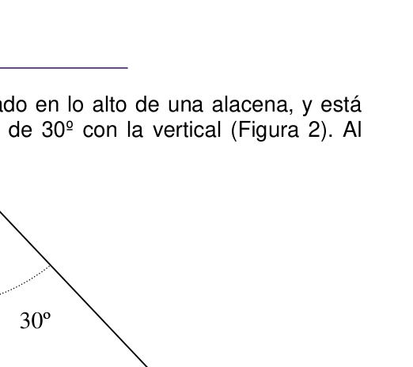
Topic: Circuits Metodi: Kirchhoff’s Laws, Equivalent Circuit Reduction Competenze: Physical Reasoning, Mathematical Modeling Objects: Resistor, Wire, Battery Fonte: Testo (PDF) — p.3
Circuito di resistenza
PT83. Scuola superiore normale Juan B. Alberdi
San Miguel, Tucumán.
La figura mostra un circuito di resistori diversi (soprattutto il circuito di resistori di resistore di resistore di resistore di resistore di resistore di resistore di resistore di resistore di resistore di resistore di resistore di resistore di resistore di resistore di resistore di resistore di resistore di resistore di resistore di resistore di resistore di resistore di resistore di resistore di resistore di resistore di resistore di resistore di resistore di resistore di resistore di resistore di resistore di resistore di resistore di resistore di resistore di resistore di resistore di resistore di resistore di resistore di resistore di resistore di resistore di resistore di resistore di resistore di resistore di resistore di resistore di resistore di resistore di resistore di resistore di resistore di resistore di resistore di resistore di resistore di resistore di resistore di resistore di resistore di resistore di resistore di resistore di resistore di resistore di resistore di resistore di resistore di resistore di resistore di resistore di resistore di resistore di resistore di resistore di resistore di resistore di resistore di resistore di resistore di resistore di resistore di resistore di resistore di resistore di resistore di resistore di resistore di resistore di resistore di resistore di resistore di resistore di resistore di resistore di resistore di resistore di resistore di resistore di resistore di resistore di resistore di resistore di resistore di resistore di resistore di resistore di resistore di resistore di resistore di resistore di resistore di resistore di resistore di resistore di resistore di resistore di resistore di resistore di resistore di resistore di resistore di resistore di resistore di resistore di resistore di resistore di resistore di resistore di resistore di resistore di resistore di resistore di resistore di resistore di resistore di resistore di resistore di resistore di resistore di resistore di resistore di resistore di resistore di resistore di resistore di resistore di resistore di resistore di resistore di resistore di resistore di resistore di resistore di resistore di resistore di resistore di resistore di resistore di resistenza interna del generatore) a) R1 e R2 sono costruite con un filo di rame della stessa lunghezza Qual è il rapporto tra i suoi diametri? b) Quali sono le letture degli strumenti 1) e (2) Di quali strumenti
- Si tratta di? c) Se a questo insieme di resistenze viene aggiunto un altro filo di rame di 0,50 cm di lunghezza e 1 mm di diametro, in serie con R1 e R2 Il corrente totale per il circuito aumenta, diminuisce o rimane uguale? d) R3 è un riscaldatore di immersione. Che potenza dissipa? Datati: R1 = 40 Ω R2 = 20Ω R3 = 10Ω R4 = 10Ω ρCu=1,7 x 10 -8 mm2/m
Topic: Circuits Metodi: Kirchhoff’s Laws, Equivalent Circuit Reduction Competenze: Physical Reasoning, Mathematical Modeling Objects: Resistor, Wire, Battery Fonte: Testo (PDF) — p.3
The following shall be added to the list of the following:
PT83. John B. Alberdi .
San Miguel, Tucumán.
The figure shows a circuit of several resistors (the the internal resistance of the generator) (a) R1 and R2 are constructed from a copper wire of the same length What’s the relationship between their diameters? (b) What is the reading of the instruments? is this what it’s about? (c) If another copper wire of 0,50 cm long and 1 mm in diameter, in series with R1 and R2 Does total current through the circuit increase, decrease or remain the same? (d) R3 is a immersion heater. What power does it dissipate? The data: R1 = 40 Ω R2 = 20Ω R3 = 10Ω R4 = 10Ω The following is the list of the following:
Topic: Circuits Metodi: Kirchhoff’s Laws, Equivalent Circuit Reduction Competenze: Physical Reasoning, Mathematical Modeling Objects: Resistor, Wire, Battery Fonte: Testo (PDF) — p.3
Tres camionetas, fuerzas
PT84. EPET Nro. 4 Juan Agustín Larrús
Colegio Secundario Valle Argentino
General Acha, La Pampa.
En una hondonada se detiene un vehículo por rotura mecánica. Para poder
auxiliarlo hubo que hacerlo con 3 camionetas de tipo 4x4 de distinta cilindrada.
Estos tres vehículos se colocan donde el terreno lo permitía tirando con una
soga cada uno para sacarlo, dichas sogas están representadas con una fuerza
según muestra el dibujo.
Datos
F1= 5 ton
F2= 6 ton
F3 = 3 Ton
El vehiculó pesa 9 toneladas
OAF 2014 - 95
Calcular:
¿Qué fuerza realizan los 3 vehículos juntos? Resolver gráficamente y
analíticamente.
La fuerza realizada por los mismos, ¿es suficiente para sacar el
vehículo de la hondonada?
Aceleración que adquiere mientras la tiran
Velocidad después de 10 s
Potencia de los vehículos tirando
Topic: Newtonian Mechanics Metodi: Vector Decomposition, Free-Body Diagram Competenze: Physical Reasoning, Mathematical Modeling Objects: String Fonte: Testo (PDF) — p.3
Tre camionette, forze
PT84. Il numero di EPET. 4 Juan Agustín Larrús
Scuola Secundaria Valle Argentino
Generale Acha, La Pampa.
In un’onda di scalo un veicolo viene fermato per rotta meccanica. Per poter Per aiutarlo, dovevano usare tre camionette di cilindrata diversa. Questi tre veicoli si collocano dove il terreno lo permette tirando con una ogni corda per tirarlo fuori, tali sciape sono rappresentate con una forza Come mostra il disegno.
Datos F1 = 5 tonnellate F2 = 6 tonnellate F3 = 3 tonnellate
Il veicolo pesa 9 tonnellate.
OAF 2014 - 95 Calcolare: • Che forza fanno i tre veicoli insieme? Risolvere graficamente e analisica. La forza esercitata da essi è sufficiente a far uscire il Il veicolo del sinistro? Accelerazione che acquista mentre si tira Velocità dopo 10 s Potenza dei veicoli che tirano
Topic: Newtonian Mechanics Metodi: Vector Decomposition, Free-Body Diagram Competenze: Physical Reasoning, Mathematical Modeling Objects: String Fonte: Testo (PDF) — p.3
The Commission has decided to extend the scope of the proposal to the Member States.
PT84. The following information shall be provided: 4 Juan Agustín Larrús
High School Valle Argentino
General Acha, the Pampa.
A vehicle is stopped by a mechanical breakdown in a sinking. To be able to I had to help him with three 4x4 vans of different cylinders. These three vehicles are placed where the ground allowed by pulling a Each rope to pull it out, these straps are represented with a force. As shown in the drawing.
Data from the report F1 = 5 tonnes F2 = 6 tonnes F3 = 3 ton
The vehicle weighs 9 tons .
The following points shall be added: Calculation: What force do the three vehicles perform together? Graphically solve and analytically. Is the force applied by them sufficient to remove the The sunken vehicle? Acceleration gained while being pulled Speed after 10 s Power of the vehicles pulling
Topic: Newtonian Mechanics Metodi: Vector Decomposition, Free-Body Diagram Competenze: Physical Reasoning, Mathematical Modeling Objects: String Fonte: Testo (PDF) — p.3
Boyero electrico, resistencia quemada
PT85. EPET Nro. 4 Juan Agustín Larrús
Colegio Secundario Valle Argentino
General Acha, La Pampa.
Un alumno trae un boyero eléctrico que se usaba en el campo del padre para repararlo y al desarmarlo se encuentra que una resistencia está quemada. En la misma no se podía leer su medida. El siguiente esquema muestra el circuito que contiene ese boyero.
DATOS
R1= 2 OHM
R2= QUEMADA
R3= 6 OHM
R4= 8 OHM
R5= 3 OHM
R6= 5 OHM
R7= 8 OHM R8= 2 OHM V= 12 VOLT
VAB= 6 VOLT
Calcular:
El valor de la resistencia 2
Si quisiéramos poner 2 resistencia en paralelo, ¿qué valor debería
tener cada una si queremos que sean iguales?
Si a este circuito, lo conectáramos a 24 volt ¿cuál sería el valor de la
resistencia 2?
¿Funcionará de esta nueva forma?
Topic: Circuits Metodi: Kirchhoff’s Laws, Equivalent Circuit Reduction Competenze: Physical Reasoning, Mathematical Modeling Objects: Resistor, Battery Fonte: Testo (PDF) — p.3
Boyera elettrica, resistenza bruciata
PT85. Il numero di EPET. 4 Juan Agustín Larrús
Scuola Secundaria Valle Argentino
Generale Acha, La Pampa.
Un studente porta un boiler elettrico usato nel campo di suo padre per Se lo riparate e lo disarmoniate, si scopre che una resistenza è bruciata. En la Non si poteva leggere la sua misura. Il diagramma seguente mostra il circuito che contiene quel boiler.
Dati R1= 2 OHM
R2 = bruciato R3= 6 OHM R4= 8 OHM R5= 3 OHM
R6= 5 OHM
R7= 8 OHM R8= 2 OHM V= 12 VOLT
VAB = 6 VOLT Calcolare: Valore della resistenza 2 Se vogliamo mettere 2 resistenze in parallelo, che valore dovrebbe avere Avere tutte le due se vogliamo che siano uguali? Se questo circuito fosse collegato a 24 volt, qual sarebbe il valore di resistenza 2? • Funzionerà in questo nuovo modo?
Topic: Circuits Metodi: Kirchhoff’s Laws, Equivalent Circuit Reduction Competenze: Physical Reasoning, Mathematical Modeling Objects: Resistor, Battery Fonte: Testo (PDF) — p.3
Electric boiler, burned resistance
PT85. The following information shall be provided: 4 Juan Agustín Larrús
High School Valle Argentino
General Acha, the Pampa.
A student brings an electric boiler that was used on his father’s farm for repair it and disarm it finds a resistance is burned. En la You couldn’t read your measurement. The following diagram shows the circuit that It contains that boyero.
The data R1 = 2 OHM
R2 = Burned R3 = 6 OHM R4 = 8 OHM R5 = 3 OHM
R6 = 5 OHM
R7 = 8 OHM R8 = 2 OHM V = 12 VOLT
VAB is 6 VOLT Calculation: Resistance value 2 If we wanted to put 2 resistors in parallel, what value should it be Have each if we want them to be equal? If we connected this circuit to 24 volts, what would be the value of the resistance 2? • Will it work in this new way?
Topic: Circuits Metodi: Kirchhoff’s Laws, Equivalent Circuit Reduction Competenze: Physical Reasoning, Mathematical Modeling Objects: Resistor, Battery Fonte: Testo (PDF) — p.3
Proyectil y jabali
PT86. EPET Nro. 4 Juan Agustín Larrús
Colegio Secundario Valle Argentino
General Acha, La Pampa.
Unos cazadores van a un campo de la zona a cazar jabalíes. Estando en el apostadero, un jabalí los olfatea desde una distancia de 200 m y se aleja con una velocidad constante de 20 m/s, sin tener en cuenta la aceleración. Los cazadores realizan un disparo con un arma cuyo proyectil adquiere una velocidad de 1000 m/s, la desaceleración por el rozamiento del aire sobre el proyectil es de 0,01m/s2
OAF 2014 - 96
Calcular
¿A qué distancia el proyectil alcanza al animal? Y con qué velocidad?
¿Cuánto tiempo demoro?
Representarlos gráficamente
Si el animal hubiera estado a 500 m en el momento que la bala lo alcanza, ¿cuál
hubiera sido la velocidad de la misma?, y el tiempo que tarda?
Topic: Newtonian Mechanics Metodi: Kinematic Equations Competenze: Physical Reasoning, Mathematical Modeling Objects: Projectile Fonte: Testo (PDF) — p.3
Project and jabali
PT86. Il numero di EPET. 4 Juan Agustín Larrús
Scuola Secundaria Valle Argentino
Generale Acha, La Pampa.
Un gruppo di cacciatori va in un campo della zona a cacciare le selvagge. Essendo al Un’altra cosa, un selvaggio, che li odora da 200 metri, si allontana con una velocità costante di 20 m/s, senza tener conto dell’accelerazione. I I cacciatori fanno un colpo con una pistola il cui proiettile acquista una velocità di 1000 m/s, rallentamento da rottura dell’aria sul Il proiettile è di 0,01m/s2
OAF 2014 - 96 Calcolare A che distanza il proiettile raggiunge l’animale? E a che velocità? Quanto tempo ci vorrà? Rappresentarli in grafica Se l’animale fosse stato a 500 metri quando la pallottola lo ha colpito, quale? Se fosse stata la stessa velocità, e il tempo che ci vuole?
Topic: Newtonian Mechanics Metodi: Kinematic Equations Competenze: Physical Reasoning, Mathematical Modeling Objects: Projectile Fonte: Testo (PDF) — p.3
The Commission shall adopt implementing acts in accordance with Article 21 of Regulation (EC) No 1272/2009.
PT86. The following information shall be provided: 4 Juan Agustín Larrús
High School Valle Argentino
General Acha, the Pampa.
Some hunters go to a field in the area to hunt wild boar. Being in the A wild boar sniffs them from a distance of 200 m and moves away with a constant speed of 20 m/s, regardless of acceleration. The Hunters shoot with a gun whose projectile acquires a . speed of 1000 m/s, deceleration by air friction over the projectile is 0.01m/s2
The following is the list of the Member States’ financial statements: Calculate How far away does the projectile reach the animal? And how fast? How long will it take? Graphically represent them If the animal was 500 meters away when the bullet hits it, what? Would it have been the same speed, and the time it takes?
Topic: Newtonian Mechanics Metodi: Kinematic Equations Competenze: Physical Reasoning, Mathematical Modeling Objects: Projectile Fonte: Testo (PDF) — p.3
Salto de trampolin, energia elastica
PT87. Colegio Santísimo Rosario
Monteros, Tucumán.
Ariel practica natación y se entrena varias horas al día. Preocupado por su
rendimiento, pide que lo ayudes a mejorar su salto.
La piscina tiene una profundidad de 5m, salta de un trampolín de 10 m de alto y
antes de entrar al agua, cierra su cuerpo, tomándose de los pies, casi como una
esfera, su masa es m= 75,0 kg.
Ariel se para al borde del trampolín y da pequeños saltitos en el lugar, así
almacena energía, y antes de caer, la energía potencial elástica que reserva es
E= 900J.
a) Calcular la altura máxima que puede alcanzar sobre el nivel del agua.
Cuando Ariel está en el aire, no sólo actúa en él la fuerza peso, sino también
estará afectado por una fuerza de flotación conocida como empuje, y por una
fuerza de roce de tipo viscosa típica de los fluidos.
La mencionada fuerza de roce puede calcularse mediante la Ley de Stokes.
Para ello es necesario suponer que Ariel se encoje formando una esfera de
R=27 cm. Asi la fuerza de roce resulta:
Fr=6.𝛱𝜂𝜈
donde R es el radio de la esfera, 𝜂 es la viscosidad (propiedad de cada fluido
asociada a las deformaciones tangenciales que sufre por el paso por el cuerpo?
y 𝜈 es la velocidad del cuerpo en el punto donde se quiere obtener la fuerza de
rozamiento.
Algunas propiedades necesarias:
FLUIDO Densidad [kg/m3] Viscosidad [kg/ m.s] aire 1,29 17,1 x 10-6 agua 1.000 1,00 x 10-3
Para poder continuar con la simplificación, b) Verificar que el empuje y la fuerza de roce son despreciables respecto al peso del cuerpo en el aire.( las fuerzas que actúan son menores al 1% del peso) Si bien Ariel entra erguido al agua, se puede realizar el cálculo de la fuerza viscosa en el agua considerando que continúa en forma de esfera, c) Determinar la nueva condición porcentual que haría despreciable la fuerza de roce en el agua. Si abandona el trampolín con un ángulo α 70 , nuestro nadador tendrá, además del vuelo vertical un desplazamiento horizontal. d) Encontrar la distancia horizontal que recorrerá al realizar un salto hasta que entra al agua. e) Sabiendo que solo se conserva el 3,5 de la energía que traía, hallar el tiempo total del salto desde que abandona la plataforma hasta que toca el fondo.
OAF 2014 - 97
Topic: Conservation of Energy Metodi: Energy Conservation Method, Kinematic Equations Competenze: Physical Reasoning, Mathematical Modeling Objects: Sphere, Spring Fonte: Testo (PDF) — p.3
Salto da trampolino, energia elastica
PT87. “Santa Rosario”
Monteros, Tucumán.
Ariel pratica il nuoto e si allenano diverse ore al giorno. Preoccupato per il suo Performance, chiede di aiutarlo a migliorare il suo salto. La piscina ha una profondità di 5 m, salta da un trampolino di 10 m di altezza e Prima di entrare in acqua, chiude il corpo, prendendosi dai piedi, quasi come una sfera, la sua massa è m=75,0 kg. Ariel si ferma al bordo del trampolino e fa piccoli salti in posizione, così stoccano energia, e prima di cadere, l’energia potenziale elastica che riserva è E= 900J. a) Calcolare l’altezza massima che può raggiungere sul livello dell’acqua. Quando Ariel è in aria, non solo la forza pesante agisce su di lui, ma anche sarà influenzato da una forza di fluttuazione nota come spinta, e da una forza di scarico viscosa tipica dei fluidi. La forza di rottura di cui sopra può essere calcolata con la legge di Stokes. Per questo è necessario supporre che Ariel si contraga formando una sfera di R=27 cm. Così la forza di rottura si ottiene: Fr=6.Πην dove R è il raggio della sfera, η è la viscosità (proprietà di ogni fluido associata alle deformazioni tangenziali che subisce durante il passaggio attraverso il corpo? e ν è la velocità del corpo al punto in cui si vuole ottenere la forza di
- Raggiudicazione. Alcune proprietà necessarie:
Fluido Densità [kg/m3] Viscosità [kg/m/s] aria 1,29 17,1 x 10-6 acqua 1.000 1,00 x 10-3
Per poter continuare la semplificazione, b) Verificare che la forza di spinta e di rottura siano scarsa rispetto a Il peso corporeo nell’aria. 1% del peso) Mentre Ariel entra in acqua in piedi, si può calcolare la forza. viscosa nell’acqua considerata che continua a essere sfera, (c) Determinare la nuova condizione percentuale che renderebbe dispregiata la forza di spazzolamento nell’acqua. Se lasci il trampolino con un angolo α 70 , il nostro nuotatore avrà, inoltre di un volo verticale un spostamento orizzontale. d) Trovare la distanza orizzontale da percorrere quando si fa un salto fino a che entra nell’acqua. e) Sapendo che si conserva solo il 3,5 per cento dell’energia che portava, trovare il tempo totale del salto dal momento in cui lascia la piattaforma fino al momento in cui tocca il fondo.
OAF 2014 - 97
Topic: Conservation of Energy Metodi: Energy Conservation Method, Kinematic Equations Competenze: Physical Reasoning, Mathematical Modeling Objects: Sphere, Spring Fonte: Testo (PDF) — p.3
The following table shows the results of the test:
PT87. Holy Rosary College .
Monteros, Tucumán. What is it?
Ariel practices swimming and trains for several hours a day. Worried about your . performance, asks you to help him improve his jump. The pool is 5m deep, jumps from a 10m high springboard and Before entering the water, it closes its body, taking off its feet, almost like a sphere, its mass is m=75.0 kg. Ariel stands at the edge of the trampoline and makes small jumps in place, like this. It stores energy, and before it falls, the potential elastic energy it reserves is E= 900J. (a) Calculate the maximum height it can reach above water level. When Ariel is in the air, not only does the force of gravity act on him, but also It will be affected by a floating force known as thrust, and by a The force of friction is viscous, typical of fluids. The aforementioned friction force can be calculated by Stokes’ law. For this it is necessary to assume that Ariel shrinks forming a sphere of R=27 cm. So the friction force is: The Commission shall adopt implementing acts. where R is the radius of the sphere, η is the viscosity (property of each fluid associated with the tangential deformities you suffer from as you move through the body? and ν is the velocity of the body at the point where you want to get the force of The roasting. Some necessary properties:
FLOID. The following information shall be provided: The viscosity of the product shall be determined by the following: Air . 1,29 17,1 x 10-6 Water 1.000 1,00 x 10-3
In order to continue the simplification, (b) Verify that the thrust and force of friction are negligible in respect of the The body weight in the air. 1% by weight) While Ariel enters the water upright, the force calculation can be done. viscous in water considering it continues to be spherical, (c) Determine the new percentage condition which would make the force of brushing in the water. If he leaves the trampoline at an angle of α 70 , our swimmer will also have the vertical flight is a horizontal shift. (d) Find the horizontal distance to be travelled when jumping to It’s going into the water. (e) Knowing that only 3.5 percent of the energy it brought is conserved, finding the Total jump time from the time you leave the platform until you touch The bottom.
The following is the list of the Member States’ financial statements:
Topic: Conservation of Energy Metodi: Energy Conservation Method, Kinematic Equations Competenze: Physical Reasoning, Mathematical Modeling Objects: Sphere, Spring Fonte: Testo (PDF) — p.3
Sillas voladoras
PT88. Colegio Santísimo Rosario
Monteros, Tucumán.
El juego de un parque de diversiones consta de una plataforma circular que gira, de 7 m de diámetro; coincidiendo con él, dos “sillas voladoras” están suspendidas en los extremos de una cadena de 2,5 m de longitud. Cuando el sistema gira, las cadenas que sostienen a los asientos forman un ángulo = 28º con la vertical, elevando su altura.
- ¿Cuál es la velocidad angular de la plataforma?
- ¿Qué velocidad adquiere el asiento?
- ¿Cuánto se eleva del suelo la silla vacía? Si se sienta un niño de 40 kg en la silla cuya masa es de 10 kg
- ¿Cuál es la tensión en la cadena? En cada silla, en el costado exterior y perpendicular al plano de pendulación hay pegado un espejo plano de dimensión importante pero de masa despreciable. Ricardo, que observa desde lejos esta “calesita”, se pregunta para qué sirven los espejos de las sillas? A fin de intentar responder esta pregunta, se acerca con un “puntero láser” (tipo cotillón) que emite un delgado y potente haz luminoso, y lo coloca horizontalmente a 2 m del juego y a 1 m del suelo. De esta manera, dejándolo fijo, a una adecuada velocidad de rotación de la plataforma, su rayo choca en el espejo y se refleja en un cartel vertical, a modo de pantalla. Dicho cartel está a 1,5 m detrás del “puntero”, en la misma línea del espejo, allí deja un punto luminoso de altura y longitud variable, según se modifiquen las velocidades de rotación. Considerando las sillas un elemento puntual:
- ¿Cuál es el ángulo de incidencia de la luz en cada espejo?
- ¿A qué altura de la pantalla se produce la traza luminosa?
- ¿Cada cuánto tiempo ve Ricardo la luz en la pantalla?
Topic: Rotational Dynamics Metodi: Free-Body Diagram, Torque & Angular Momentum Analysis Competenze: Physical Reasoning, Mathematical Modeling Objects: String Fonte: Testo (PDF) — p.3
Sedi volanti
PT88. “Santa Rosario”
Monteros, Tucumán.
Il gioco di un parco divertimento consiste in una piattaforma circolare che ruota, di 7 m di diametro; coincidendo con esso, sono presenti due piloni volanti sospesi alle estremità di una catena lunga 2,5 m. Quando il sistema gira, le catene che sostengono i sedili formano un angolo = 28° con la verticale, alzando la sua altezza.
- Qual è la velocità angolare della piattaforma?
- Qual è la velocità del sedile?
- Quanto alza il poltrone vuoto? Se si siede un bambino di 40 kg in una sedia di 10 kg di massa
- Qual è la tensione della catena? In ogni sedia, sul lato esterno e perpendicolare al piano di pendolazione ci sono Ho colpito uno specchio piano di dimensioni importanti ma di massa dispregiata. Riccardo, che osserva da lontano questa piccola cale, si chiede a cosa servono le cale. specchi delle sedie? Per cercare di rispondere a questa domanda, si avvicina con un puntatore laser che emette un piccolo e potente fascio luminoso, e lo posiziona in orizzontale a 2 m dal gioco e a 1 m dal terreno. In questo modo, lasciandolo fisso, a una velocità di rotazione adeguata della piattaforma, il suo raggio colpisce lo specchio e si riflette su un cartello verticale, in modo di schermo. - Si ’ , si ’ . Il cartello è a 1,5 metri dietro il puntatore, sulla stessa linea dello specchio, lì lascia un punto luminoso di altitudine e lunghezza variabili, come modificate le velocità di rotazione. Considerando le sedie un elemento puntuale:
- Qual è l’angolo di incidenza della luce in ciascun specchio?
- A che altezza dello schermo si produce la traccia luminosa?
- Quanto tempo ricardo vede la luce sullo schermo?
Topic: Rotational Dynamics Metodi: Free-Body Diagram, Torque & Angular Momentum Analysis Competenze: Physical Reasoning, Mathematical Modeling Objects: String Fonte: Testo (PDF) — p.3
The following table shows the number of aircraft in the list of aircraft:
PT88. Holy Rosary College .
Monteros, Tucumán. What is it?
The game of an amusement park consists of a circular platform that rotates, 7 m in diameter; matching it, two flying saucers are suspended at the ends of a chain of 2,5 m in length. When the system rotates, the chains holding the seats form a angle = 28° with the vertical, raising its height.
- What is the angular velocity of the platform?
- How fast does the seat gain?
- How much of the floor does the empty chair rise? If you sit a 40 kg kid in a chair whose weight is 10 kg
- What is the voltage in the chain? In each chair, on the outside side and perpendicular to the plane of swing there is I’ve glued a flat mirror of a large size but a despicable mass. Ricardo, watching from a distance this little one, wonders what the little ones are for. mirrors from the chairs? In order to try to answer this question, approach with a laser pointer (shaped pin) emitting a thin and powerful beam of light, and He places it horizontally 2 m from the game and 1 m from the ground. This way, leaving it fixed, at an appropriate speed of rotation of the platform, its beam It collides with the mirror and reflects itself onto a vertical sign, like a screen. That said . The sign is 1.5 m behind the pointer, in the same line as the mirror, there it leaves a the lighting point of variable height and length, as modified by the rotational speeds. Considering the chairs a pointed element:
- What is the angle of incidence of light in each mirror?
- At what height of the screen does the light trace occur?
- How long does Ricardo see the light on the screen?
Topic: Rotational Dynamics Metodi: Free-Body Diagram, Torque & Angular Momentum Analysis Competenze: Physical Reasoning, Mathematical Modeling Objects: String Fonte: Testo (PDF) — p.3
Cilindro con piston, dos gases
PT89. Colegio Santísimo Rosario
Monteros, Tucumán.
Un cilindro con paredes adiabáticas, cerrado por ambos extremos, se divide en
dos volúmenes por medio de un pistón sin fricción, el cual está, también,
térmicamente aislado. Inicialmente, en el lado derecho hay 4 moles del gas gA a
una temperatura tiA = 20º C y en el izquierdo, hay 12 moles del gas gB a una
temperatura tiB = 40º C .
Se utiliza una resistencia eléctrica R = 20 Ω, por donde circula una corriente
i = 1 A , para calentar el gas gA , hasta que alcanza una temperatura de 30ºC, de
ese modo se produce el desplazamiento del pistón.
Diámetro interno del cilindro Ø = 0,4 m y su longitud interna L = 1,2 m. Espesor
del pistón e = 0,1 m.
Calcular:
- Masa del gas B si su M = 44 g
- Volumen inicial del gas A
- Presión inicial del gas B.
- volumen final del gas A
- Presión final del gas B.
- Trabajo de expansión producido por la corriente eléctrica.
- Tiempo que circuló la corriente para producir la expansión.
OAF 2014 - 98
Topic: Thermodynamics Metodi: Ideal Gas Law, First Law of Thermodynamics Competenze: Physical Reasoning, Mathematical Modeling Objects: Cylinder, Piston, Gas Fonte: Testo (PDF) — p.3
Cilindro a pistone, due gas
PT89. “Santa Rosario”
Monteros, Tucumán.
Un cilindro con pareti adiabatiche, chiuso da entrambe le estremità, si divide in due volumi attraverso un pistone senza frizione, che è, anche, termicamente isolato. Inizialmente, sul lato destro ci sono 4 molli di gas gA a una temperatura tiA = 20°C e sulla sinistra, ci sono 12 molli di gas gB a una temperatura tiB = 40 ° C . Si utilizza una resistenza elettrica R = 20 Ω, attraverso la quale si circola un corrente i = 1 A , per riscaldare il gas gA fino a raggiungere una temperatura di 30 °C, di in questo modo si verifica lo spostamento del pistone. Il diametro interno del cilindro Ø = 0,4 m e la sua lunghezza interna L = 1,2 m. Spessore di pistone e = 0,1 m. Calcolare:
- Massa del gas B se il suo M = 44 g
- Volume iniziale del gas A
- Presione iniziale del gas B.
- Volume finale del gas A
- Presione finale del gas B.
- Lavorato di espansione prodotta dal corrente elettrica.
- Tempo che ha circolato la corrente per produrre l’espansione.
OAF 2014 - 98
Topic: Thermodynamics Metodi: Ideal Gas Law, First Law of Thermodynamics Competenze: Physical Reasoning, Mathematical Modeling Objects: Cylinder, Piston, Gas Fonte: Testo (PDF) — p.3
Cylinder with piston, two gases
PT89. Holy Rosary College .
Monteros, Tucumán. What is it?
A cylinder with adiabatic walls, closed at both ends, is divided into Two volumes by means of a frictionless piston, which is, too, heat insulated. Initially, on the right side there are 4 moles of gA gas. a temperature tiA = 20°C and on the left, there are 12 moles of gB gas at a The temperature is 40 ° C . An electrical resistance R = 20 Ω is used, where a current is circulating i = 1 A , to heat gA gas until it reaches a temperature of 30 °C, of This means that the piston is displaced. The internal diameter of the cylinder Ø = 0,4 m and its internal length L = 1,2 m. - The thickness . The piston e = 0,1 m. Calculation:
- Mass of gas B if its M = 44 g
- The initial volume of gas A
- Initial pressure of the B gas.
- The final volume of gas A
- Final pressure of the B gas.
- Expansion work produced by electric current.
- Time that the current circulated to produce the expansion.
The following is the list of the Member States’ financial statements:
Topic: Thermodynamics Metodi: Ideal Gas Law, First Law of Thermodynamics Competenze: Physical Reasoning, Mathematical Modeling Objects: Cylinder, Piston, Gas Fonte: Testo (PDF) — p.3
Bajada con skate
PT90. Escuela Nacional Ernesto Sábato
Colegio Tomás Landivar
Colegio Sagrada Familia
Tandil, Buenos Aires.
Práctica de bajadas con skate y tablas con rulemanes en lugares no tan
seguros.
El Parque Independencia es uno de los puntos turísticos más importantes de la
ciudad de Tandil. El sitio está emplazado en un cerro con un castillo y mirador en
la cima por el que se asciende por una calle que rodea al mismo. Del mirador-
castillo hacía abajo hay una calle que empalma con la principal de subida, que
pasa a ser doble mano hacia abajo.
Observando en el Google Earth, este camino de bajada del Castillo hasta el
empalme con la calle principal tiene una longitud de 284 m. Además se puede
ver que, mientras el castillo (punto superior de esta calle) está a 274 msnm
(metros sobre el nivel del mar), el punto de empalme se encuentra a 251 msnm.
En la zona de empalme, el asfalto es prácticamente horizontal, con una longitud
de unos 16 m, y si se siguiera derecho… se termina en un “miniprecipicio” de 1.5
m de profundidad, que tiene una plantación de zarzamora de 1 m de altura, y
extendida unos 4 m desde el borde abrupto.
A esta altura del problema se preguntarán a que vienen todos estos datos. La
cuestión es que esta corta y abrupta bajada (del castillo al empalme) es muy
utilizada por jóvenes que practican bajadas con skates, y tablas con rulemanes
armadas en forma artesanal.
En una oportunidad, dos practicantes muy novatos de unos 70 kg, uno con un
skate de 2 kg y otro con una tabla de rulemanes de 5 kg, simplifiquemos en A y
B respectivamente (para no dar nombres que comprometan), se desafiaron a ver
quien llegaba primero al empalme.
Ambos largaron de la base del castillo en forma simultánea. Finalmente, B tardó
51 s en llegar al empalme y A llegó unos 2.5 s más tarde que B. Pero ahí no
termina todo: al ser demasiado novatos, no pudieron doblar en el empalme y
siguieron derecho al precipicio!. Si bien sobrevivieron perfectamente (con
algunos magullones), vale la pena hacerse las siguientes preguntas:
a) Suponiendo que hubo aceleración constante en toda la bajada, ¿con
qué velocidad llegaron cada uno de los contrincantes al empalme de
las calles?
b) ¿Cuánta energía perdieron cada uno de ellos en el camino?
c) ¿A qué distancia cayeron del borde del “miniprecipicio”?
d) ¿Zafaron de rasparse con las espinas de la zarzamora?
Nota: supondremos que en la parte plana del empalme no hay pérdida de
energía.
Se puede pensar a la zarzamora con bordes bien rectos.
Topic: Newtonian Mechanics Metodi: Kinematic Equations, Energy Conservation Method Competenze: Physical Reasoning, Mathematical Modeling Objects: — Fonte: Testo (PDF) — p.3
Bassata con skate
PT90. Scuola nazionale Ernesto sabato
Scuola Tomás Landivar
Scuola Sagrada Familia
Tandil, Buenos Aires.
Pratica di scendere con skate e tavole con ruole in posti non così Sicuri. Il Parco dell’Indipendenza è uno dei punti turistici più importanti della città di Tandil. Il sito è situato su una collina con un castello e mirador in la cima da cui si sale per una strada che la circonda. - Dal mirador… C’è una strada che si spalla con la principale salita, che diventa un doppio braccio verso il basso. Guardando su Google Earth, questo cammino di discesa dal Castello fino al La strada principale è di 284 metri di lunghezza. Inoltre, è possibile Vedete che, mentre il castello (punto superiore di questa strada) è a 274 m. (metri sopra il livello del mare), il punto di impregnazione si trova a 251 ms. Nella zona di spallazione, l’asfalto è praticamente orizzontale, con una lunghezza di circa 16 m, e se seguita dritta… si termina in un miniprecipizio di 1.5 M di profondità, che ha una piantagione di zarzamora di 1 m di altezza, e estesa circa 4 metri dal bordo abrupto. A questo punto del problema si chiederanno perché vengano tutti questi dati. La Il punto è che questa breve e brusca discesa (dal castello all’impalcatura) è molto Usata dai giovani che praticano downhill con pattinetti e tavole con ruleman armati in modo artigianale. In un’occasione, due praticanti molto novizi di circa 70 kg, uno con un 2 kg e un altro con una tavola di 5 kg, semplificando in A e B rispettivamente (per non dare nomi che comprometteranno), si sono sfidati a vedere che arrivava prima al punto di spina. Entrambi fuggirono dalla base del castello contemporaneamente. Alla fine, B ha preso molto tempo. 51 secondi per arrivare al fascio e A arriva circa 2,5 secondi dopo B. Ma non lì. Finisce tutto: essendo troppo nuovi, non sono riusciti a piegarsi nel fascio e Seguirono il precipizio! Sebbene abbiano sopravvissuto perfettamente (con (Signorato) (Signorato) a) Supponendo che ci sia stata un’accelerazione costante in tutta la discesa, con che velocità ha raggiunto ogni avversario Le strade? b) Quanta energia hanno perso ciascuno di loro lungo il cammino? c) A che distanza sono caduti dal bordo del miniprecipizio? d) Si sono raschiati con le spine della ciocca? Nota: supponiamo che nella parte piatta del fascio non sia stata perdita di energia. Si può pensare alla scaraffa con bordi molto retti.
Topic: Newtonian Mechanics Metodi: Kinematic Equations, Energy Conservation Method Competenze: Physical Reasoning, Mathematical Modeling Objects: — Fonte: Testo (PDF) — p.3
Bad with skate
PT90. Ernesto National School Saturday
College Tomás Landivar
Holy Family College .
I’m going to Tandil, Buenos Aires.
Practice downhill skating and skateboarding in places not so much I’m sure. Independence Park is one of the most important tourist attractions in the world. the city of Tandil. The site is located on a hill with a castle and viewing on it. The summit that you climb up a street that surrounds it. From the viewer… Castle down there’s a street that splits with the main ascent, which It’s going to be a double hand down. Looking at Google Earth, this path down from the Castle to the The main street is 284 m long. You can also See that, while the castle (top of this street) is 274 m high (meters above sea level), the splicing point is 251 m.a.s.l. In the spinning area, the asphalt is almost horizontal, with a length of about 16 m, and if you follow straight… you end up in a miniprecipices of 1.5 m depth, which has a 1 m high ploughing plantation, and extended about 4 m from the steep edge. At this point in the matter, you’ll be wondering where all this data comes from. La The point is that this short and steep descent (from castle to spindle) is very Used by young people who practice downhill skating, and skateboarding with roller skates Armed in a handmade fashion. On one occasion, two very novice practitioners weighing about 70 kg, one with a 2 kg skate and another with a 5 kg skateboard, let’s simplify in A and B respectively (not to give names that compromise), they were challenged to see who came first to the spinning. Both of them left the castle base simultaneously. Finally, B took a while. 51 seconds to the splicing and A arrived about 2.5 seconds later than B. But not there . It all ends: being too new, they couldn’t bend the spindle and They went straight to the precipice! While they survived perfectly (with Some of the maggots), it is worth asking yourself the following questions: (a) Assuming there was constant acceleration throughout the downturn, with How fast did each of the opponents reach the spindle of The streets? (b) How much energy did each of them lose on the way? (c) How far did they fall from the edge of the ‘miniprecipices’? (d) Did they scratch themselves with the spines of the hedgehog? Note: assume that on the flat part of the spindle there is no loss of energy. You can think of the broom with straight edges.
Topic: Newtonian Mechanics Metodi: Kinematic Equations, Energy Conservation Method Competenze: Physical Reasoning, Mathematical Modeling Objects: — Fonte: Testo (PDF) — p.3
Globo de helio meteorologico
PT91. Escuela Nacional Ernesto Sábato
Colegio Tomás Landivar
Colegio Sagrada Familia
Tandil, Buenos Aires.
Un grupo de meteorólogos están haciendo estudios en la atmósfera por medio de equipos montados en un globo con He para este tipo experimento. En cálculos previos, consideran que una altura aproximada de 12.5 km, la temperatura de la atmósfera terrestre es de unos -55 °C, y la presión de alrededor de 19.4 kPa.
OAF 2014 - 99 a) ¿Cuántos kilogramos de He gaseoso se deben introducir en un globo para llenarlo con 2 m3 a esa altura? b) ¿Cuál sería la densidad del aire?, ¿cuál es la carga útil que podría llevar el globo si en este caso asciende con velocidad constante? c) ¿Qué sucedería si la presión atmosférica aumentara a 20.5 kPa (los demás parámetros se mantienen constantes)? Expresar sentido y magnitud de la nueva aceleración.
Topic: Fluid Mechanics, Thermodynamics Metodi: Ideal Gas Law, Hydrostatic Equilibrium Competenze: Physical Reasoning, Mathematical Modeling Objects: Gas Fonte: Testo (PDF) — p.3
Globo di elio meteorologico
PT91. Scuola nazionale Ernesto sabato
Scuola Tomás Landivar
Scuola Sagrada Familia
Tandil, Buenos Aires.
Un gruppo di meteorologi sta facendo studi sull’atmosfera attraverso di attrezzature montate su un globo con He per questo tipo di esperimento. In precedenza, si ritiene che un’altezza di circa 12,5 km, La temperatura dell’atmosfera terrestre è di -55 °C, e la pressione di circa 19,4 kPa.
OAF 2014 - 99 a) Quanti chili di He gassoso devono essere introdotti in un pallone Per riempirlo di 2 metri quadrati a quella altezza? b) Qual sarebbe la densità dell’aria? il globo se in questo caso si alza a velocità costante? (c) Cosa accadrebbe se la pressione atmosferica aumentasse a 20,5 kPa (l’atmosfera di se gli altri parametri sono costanti)? Esprimere senso e la grandezza della nuova accelerazione.
Topic: Fluid Mechanics, Thermodynamics Metodi: Ideal Gas Law, Hydrostatic Equilibrium Competenze: Physical Reasoning, Mathematical Modeling Objects: Gas Fonte: Testo (PDF) — p.3
The following information shall be provided:
PT91. Ernesto National School Saturday
College Tomás Landivar
Holy Family College .
I’m going to Tandil, Buenos Aires.
A group of meteorologists are doing atmospheric studies by means of of equipment mounted on a balloon with He for this type of experiment. In previous calculations, they consider that an approximate height of 12.5 km, the The temperature of the Earth’s atmosphere is about -55 °C, and the pressure of about 19.4 kPa.
The following is the list of the Member States’ financial statements: (a) How many kilograms of He gaseous should be introduced into a balloon To fill it with 2 m3 at that height? (b) What would be the density of the air? What is the payload that it could carry? the balloon if in this case it’s rising at a constant speed? (c) What would happen if the atmospheric pressure increased to 20.5 kPa (the other parameters are kept constant)? To express meaning and The magnitude of the new acceleration.
Topic: Fluid Mechanics, Thermodynamics Metodi: Ideal Gas Law, Hydrostatic Equilibrium Competenze: Physical Reasoning, Mathematical Modeling Objects: Gas Fonte: Testo (PDF) — p.3
Calentador para mate
PT92. Escuela Nacional Ernesto Sábato
Colegio Tomás Landivar
Colegio Sagrada Familia
Tandil, Buenos Aires.
Un calentador eléctrico, de los que se utilizan habitualmente para calentar agua
colocado dentro de un termo para tomar mate, tiene una resistencia de unos 40
ohms y se enchufa a 220 V. Supongamos que cargamos el termo con 1.5 l de
agua a unos 10°C y queremos tomar mate con el agua una temperatura de unos
75°C.
a) ¿Cuál es la corriente que consume el calentador?
b) ¿Qué potencia disipa el dispositivo?
c) ¿Cuánto tiempo debemos esperar para que el agua quede lista para el
mate?
d) Si luego de tomar varios mates solo queda medio litro de agua a una
temperatura de 61°C y alguien propone agregar agua hirviendo para
alcanzar nuevamente la temperatura para el mate. ¿Qué cantidad de
agua hirviendo será necesario agregar?
Topic: Circuits, Thermodynamics Metodi: First Law of Thermodynamics, Kirchhoff’s Laws Competenze: Physical Reasoning, Mathematical Modeling Objects: Resistor, Container Fonte: Testo (PDF) — p.3
Calditore per macchi
PT92. Scuola nazionale Ernesto sabato
Scuola Tomás Landivar
Scuola Sagrada Familia
Tandil, Buenos Aires.
Un riscaldatore elettrico, di cui sono utilizzati di solito per riscaldare l’acqua Mettendoli dentro un termo per prendere mate, hanno una resistenza di circa 40 Ohms e si mette a 220 V. Supponiamo di caricare il termo con 1,5 litri di l’acqua a circa MSK0/>C e vogliamo prendere mate con l’acqua a una temperatura di circa 75°C. a) Qual è il corrente consumato dal riscaldatore? b) Che potenza si dissipa? c) Quanto tempo dobbiamo aspettare per il preparato dell’acqua per il
- Matte? d) Se dopo aver bevuto più mate, un litro di acqua rimane solo a mezzo litro. Temperatura di 61°C e qualcuno propone di aggiungere acqua bollente per raggiungere di nuovo la temperatura per il mate. Quanti sono i acqua bollente sarà necessario aggiungere?
Topic: Circuits, Thermodynamics Metodi: First Law of Thermodynamics, Kirchhoff’s Laws Competenze: Physical Reasoning, Mathematical Modeling Objects: Resistor, Container Fonte: Testo (PDF) — p.3
The heat output of the heat source shall be the heat output of the heat source.
PT92. Ernesto National School Saturday
College Tomás Landivar
Holy Family College .
I’m going to Tandil, Buenos Aires.
An electric heater, usually used for heating water It’s a thermoset, matte, and has a resistance of about 40. Ohms and plugged in at 220 V. Let’s say we load the thermos with 1.5 liters of Water at about MSK0/>C and we want to take matte with water at a temperature of about 75°C. (a) What is the current consumed by the heater? (b) What power is dissipated by the device? (c) How long should we wait for the water to be ready for the
- What? (d) If after drinking several mattes only half a litre of water remains in one temperature of 61°C and someone proposes to add boiling water for reaching the temperature for the mate again. What amount of Boiling water will need to be added?
Topic: Circuits, Thermodynamics Metodi: First Law of Thermodynamics, Kirchhoff’s Laws Competenze: Physical Reasoning, Mathematical Modeling Objects: Resistor, Container Fonte: Testo (PDF) — p.3
Pelota rebota en plano inclinado
PT93. Colegio Universitario Central J. de San Martín
Escuela de Comercio Martín Zapata
Ciudad de Mendoza.
Se deja caer una pelota verticalmente sobre un punto A de un plano inclinado que forma un ángulo de 20° con la horizontal. La pelota rebota formando un ángulo de 40° con la vertical. El próximo rebote tiene lugar en el punto B, que se encuentra a 10m de A sobre el plano. Teniendo en cuenta los datos brindados y la figura 1 calcule: a) el módulo de la velocidad con la cual rebota la pelota en A, b) el tiempo transcurrido entre ambos rebotes.
Topic: Newtonian Mechanics Metodi: Kinematic Equations, Vector Decomposition Competenze: Physical Reasoning, Mathematical Modeling Objects: Ball, Inclined Plane Fonte: Testo (PDF) — p.3
Pilota che rimbalza in piano inclinato
PT93. La scuola universitaria centrale J. di San Martino
Martín Zapata School of Commerce
Città di Mendoza.
Si lascia cadere una palla verticalmente su un punto A di un piano inclinato che forma un angolo di 20° con la orizzontale. La palla rimbalza formando un angolo di 40° con la verticale. Il prossimo rimbalzo. si svolge al punto B, che si trova a 10 m da A sul piano. Avendo considerando i dati forniti e calcolando la figura 1: a) il modulo di velocità con cui il pallone rimbalza in A, b) il tempo trascorso tra i due rimbalzi.
Topic: Newtonian Mechanics Metodi: Kinematic Equations, Vector Decomposition Competenze: Physical Reasoning, Mathematical Modeling Objects: Ball, Inclined Plane Fonte: Testo (PDF) — p.3
The engine shall be equipped with a single engine.
PT93. Central University College J. from St. Martin’s
Martin Zapata School of Commerce
The city of Mendoza.
A ball is dropped vertically over a point A of an inclined plane. a diameter of 20° with horizontal axis. The ball bounces back forming an angle of 40° with the vertical. The next bounce . It takes place at point B, which is 10m from A above the plane. Having Taking into account the data provided and Figure 1, calculate: (a) the speed module with which the ball bounces in A, (b) the time elapsed between the two bouts.
Topic: Newtonian Mechanics Metodi: Kinematic Equations, Vector Decomposition Competenze: Physical Reasoning, Mathematical Modeling Objects: Ball, Inclined Plane Fonte: Testo (PDF) — p.3
Muestra de combustible, calorimetria
PT94. Colegio Universitario Central J. de San Martín
Escuela de Comercio Martín Zapata
Ciudad de Mendoza.
Una empresa de combustibles acude al laboratorio con una muestra de 0,5kg de
una sustancia combustible y solicita un informe de las propiedades de la misma.
Pocos minutos antes de la reunión para entrega del informe, Candela, una de las
investigadoras, derrama accidentalmente café sobre el informe. Para empeorar
la situación Francisco, el otro investigador, olvidó la computadora que contenía
toda la información.
Desesperados rescatan de entre los papeles una versión antigua del informe, sin
embargo la misma se encuentra incompleta. En función del grafico obtenido
complete la tabla con los valores solicitados.
OAF 2014 - 100
PRUEBA DE LABORATORIO
PROPIEDADES TERMODINÁMICAS GENERALES DE LA MUESTRA
La muestra de 0,5 kg fue sometida a una transferencia de energía en forma homogénea. El siguiente gráfico fue rescatado de los papeles limpios en el escritorio.
Tabla 1 2.a Temperatura de fusión … … … … … … … … … … … 2.b Temperatura de ebullición … … … … … … … … … … … 2.c Calor específico del sólido … … … … … … … … … … … 2.d Calor específico del líquido … … … … … … … … … … … 2.e Calor latente de fusión … … … … … … … … … … … 2.f Calor latente de vaporización … … … … … … … … … … … 2.g. Calor especifico del gas … … … … … … … … … … … 2.h Energía necesaria desde el comienzo hasta alcanzar 40 °C … … … … … … … … … … …
Topic: Thermodynamics Metodi: First Law of Thermodynamics Competenze: Physical Reasoning, Mathematical Modeling Objects: Calorimeter Fonte: Testo (PDF) — p.3
Semplice di combustibile, caloriometria
PT94. La scuola universitaria centrale J. di San Martino
Martín Zapata School of Commerce
Città di Mendoza.
Una compagnia di combustibili arriva al laboratorio con un campione di 0,5 kg di una sostanza combustibile e richiede un rapporto sulle sue proprietà. Qualche minuto prima della riunione per la presentazione del rapporto, Candela, una delle ricercatrici, ha accidentalmente versato del caffè sul rapporto. Per peggiorare La situazione di Francisco, l’altro ricercatore, dimenticato il computer che contiene. tutte le informazioni. I disperati recuperano tra i documenti una versione antica del rapporto, senza Tuttavia, la stessa è incompleta. Sulla base del grafico ottenuto completare la tabella con i valori richiesti.
OAF 2014 - 100
Prova di laboratorio
Proprietà termodinamiche generali del campione
Il campione di 0,5 kg è stato sottoposto a un trasferimento di energia in forma di
- E’ un’unica cosa. Il seguente grafico è stato recuperato dai fogli di carta puliti nel
- La scrivania.
Tabella 1 2.a Temperatura di fusione … … … … … … … … … … … 2.b Temperatura di ebollizione … … … … … … … … … … … 2.c Calore specifico del solido … … … … … … … … … … … 2.d Calore specifico del liquido … … … … … … … … … … … 2.e Calore latente di fusione … … … … … … … … … … … 2.f Calore latente di vaporizzazione … … … … … … … … … … … 2.g. Calore specifico del gas … … … … … … … … … … … 2.h Energia necessaria dal inizio fino a raggiungere 40 °C … … … … … … … … … … …
Topic: Thermodynamics Metodi: First Law of Thermodynamics Competenze: Physical Reasoning, Mathematical Modeling Objects: Calorimeter Fonte: Testo (PDF) — p.3
The fuel sample shall be used for the calculation of the fuel consumption.
PT94. Central University College J. from St. Martin’s
Martin Zapata School of Commerce
The city of Mendoza.
A fuel company comes to the laboratory with a 0.5kg sample of a fuel substance and request a report on its properties. A few minutes before the reporting meeting, Candela, one of the Investigators, accidentally spilling coffee on the report. To make things worse . The situation Francisco, the other researcher, forgot the computer that contained it. all the information. Desperate to recover from the papers an old version of the report, without The Commission has already adopted a number of proposals. Based on the graph obtained complete the table with the values requested.
The following is the list of the countries of the European Union:
The results of the study were published in the Official Journal of the European Union.
The following information is provided by the manufacturer:
The 0.5 kg sample was subjected to an energy transfer in the form of It’s the same. The following graph was rescued from the clean papers in the The desk.
Table 1 2.a Melting point … … … … … … … … … … … 2.b Boiling temperature … … … … … … … … … … … 2.c Specific heat of the solid … … … … … … … … … … … 2.d Specific heat of the liquid … … … … … … … … … … … 2.e Latent heat of fusion … … … … … … … … … … … 2.f Latent heat from vaporization … … … … … … … … … … … 2.g. Specific heat of the gas … … … … … … … … … … … 2.h Energy required from start to 40 °C … … … … … … … … … … …
Topic: Thermodynamics Metodi: First Law of Thermodynamics Competenze: Physical Reasoning, Mathematical Modeling Objects: Calorimeter Fonte: Testo (PDF) — p.3
Tres corrientes en circuito
PT95. Colegio Universitario Central J. de San Martín
Escuela de Comercio Martín Zapata
Ciudad de Mendoza.
Halle las tres corrientes indicadas en el diagrama del circuito figura 2. Para ello utilice los siguientes datos: 𝑅1 = 5Ω 𝑅2 = 8Ω 𝑅3 = 𝑅4 = 1Ω 𝑅5 = 10Ω 𝜀1 = 12𝑉 𝜀2 = 9𝑉
Topic: Circuits Metodi: Kirchhoff’s Laws Competenze: Physical Reasoning, Mathematical Modeling Objects: Resistor, Battery Fonte: Testo (PDF) — p.3
Tre correnti in circuito
PT95. La scuola universitaria centrale J. di San Martino
Martín Zapata School of Commerce
Città di Mendoza.
Trova i tre correnti indicati nel diagramma del circuito figura 2. Per questo. utilizzare i seguenti dati: 𝑅1 = 5Ω 𝑅2 = 8Ω 𝑅3 = 𝑅4 = 1Ω 𝑅5 = 10Ω 𝜀1 = 12𝑉 𝜀2 = 9𝑉
Topic: Circuits Metodi: Kirchhoff’s Laws Competenze: Physical Reasoning, Mathematical Modeling Objects: Resistor, Battery Fonte: Testo (PDF) — p.3
The following shall be added to the list of the following:
PT95. Central University College J. from St. Martin’s
Martin Zapata School of Commerce
The city of Mendoza.
Find the three currents indicated in the circuit diagram in Figure 2. For that . use the following data: 𝑅1 = 5Ω 𝑅2 = 8Ω 𝑅3 = 𝑅4 = 1Ω 𝑅5 = 10Ω 𝜀1 = 12𝑉 𝜀2 = 9𝑉
Topic: Circuits Metodi: Kirchhoff’s Laws Competenze: Physical Reasoning, Mathematical Modeling Objects: Resistor, Battery Fonte: Testo (PDF) — p.3
La fisica y Messi
PT96. Colegio Nacional de Buenos Aires
Ciudad de Buenos Aires.
La física y Messi
Es el partido entre Argentina y Nigeria en Porto Alegre del Mundial de futbol
“Brasil 2014”. Sobre el final del primer tiempo, Messi marca un doblete con un
espectacular tiro libre de tanta precisión que deja mirando al arquero nigeriano.
El siguiente gráfico ilustra la componente horizontal de la Fuerza que ejerce el
empeine del pie de “La Pulga” sobre la pelota, en función del tiempo. Los puntos
OAF 2014 - 101 A y B indican el intervalo de duración de la patada y el punto C, el momento de máxima deformación de la pelota
a) Calcular la componente horizontal de la velocidad de la pelota luego de la patada, sabiendo que la masa de la pelota es aproximadamente 400 g. b) Sabiendo que el arco se encuentra a 26 m del punto donde se patea el tiro libre y que la pelota toca el césped cuando llega al arco, obtener el ángulo de disparo y la componente vertical de la velocidad de la pelota c) Sabiendo que la masa del pie es aproximadamente 1,12 kg calcular el porcentaje de energía perdido durante la patada. Tener en cuenta que la rapidez del pie antes del impacto es 20 m/s. ¿A dónde fue esa energía? d) Los huesos del pie se rompen al soportar más de 100 millones N/m2, ¿cuál debe ser el área mínima del pie de Messi en contacto con la pelota para que no se lesione? e) ¿En qué instante/s el ángulo entre el vector velocidad y la horizontal es 2°?
Topic: Conservation of Momentum Metodi: Impulse-Momentum Theorem, Kinematic Equations Competenze: Physical Reasoning, Mathematical Modeling Objects: Ball Fonte: Testo (PDF) — p.3
La fisica e Messi
PT96. Collegio Nazionale di Buenos Aires
Città di Buenos Aires.
La fisica e Messi È il match tra Argentina e Nigeria a Porto Alegre del Mondiale di Calcio Brasil 2014. Alla fine del primo tempo, Messi segnò un doppio con un un tiro libero spettacolare di tanta precisione che lascia guardare l’arcoio nigeriano. Il seguente grafico illustra la componente orizzontale della Forza esercitata dal Pinge il piede di Pulga sulla palla, a seconda del tempo. I punti
OAF 2014 - 101 A e B indicano l’intervallo di durata del calcio e il punto C, il momento di La massima deformazione della palla
a) Calcolare la componente orizzontale della velocità della palla dopo il calcio, sapendo che la massa della palla è di circa 400 g. b) Sapendo che l’arco si trova a 26 m dal punto di calcio del Tiro libero e che la palla tocchi la erba quando arriva all’arco, ottenere il angolo di lancio e componente verticale della velocità della palla c) Sapendo che la massa del piede è di circa 1,12 kg, calcolare il percentuale di energia persa durante il calcio. Tenere presente che la velocità del piede prima dell’impatto è di 20 m/s. Dove è andata quella? energia? d) Le ossa del piede si rompono quando sopportano più di 100 milioni di N/m2, Qual è l’area minima del piede di Messi in contatto con la
- Il pallone per non farsi male? e) In che istante/s l’angolo tra il vettore velocità e il orizzontale è 2°?
Topic: Conservation of Momentum Metodi: Impulse-Momentum Theorem, Kinematic Equations Competenze: Physical Reasoning, Mathematical Modeling Objects: Ball Fonte: Testo (PDF) — p.3
Physics and Messi
PT96. National College of Buenos Aires
City of Buenos Aires.
Physics and Messi It’s the match between Argentina and Nigeria in Porto Alegre of the World Cup. Brazilia 2014. On the end of the first half, Messi scores a double with a A spectacular free-throw shooting with such precision that it leaves the Nigerian archers looking. The following graph illustrates the horizontal component of the force exerted by the He’ll put his flea’s foot on the ball, depending on the weather. The points
The following is the list of the countries of the European Union: A and B indicate the interval of duration of the kick and point C, the time of the kick. maximum deformation of the ball
(a) Calculate the horizontal component of the ball’s speed after The kick, knowing the mass of the ball is about 400. g. (b) Knowing that the bow is 26 m from the point where the bow is kicked Free kick and the ball hits the grass when it reaches the bow, get the ball. angle of shooting and the vertical component of the ball’s speed (c) Knowing that the foot mass is approximately 1.12 kg calculate the percentage of energy lost during the kick. Please note that The speed of the foot before impact is 20 m/s. Where did that go? energy? (d) The bones of the foot break when they withstand more than 100 million N/m2, What should be the minimum area of Messi’s foot in contact with the ball so he doesn’t get hurt? (e) At what moment/s is the angle between the velocity vector and the horizontal 2°?
Topic: Conservation of Momentum Metodi: Impulse-Momentum Theorem, Kinematic Equations Competenze: Physical Reasoning, Mathematical Modeling Objects: Ball Fonte: Testo (PDF) — p.3
Circuito potenciometro
PT97. Colegio Nacional de Buenos Aires
Ciudad de Buenos Aires.
En el circuito potenciómetro de la figura el galvanómetro indica la corriente ix con el sentido indicado. Calcular: a) La diferencia de potencial Vbc = Vb - Vc y el valor de . b) Las corrientes en R1 y R2. c) El valor de R2 para que, manteniendo R1 constante- permita anular la corriente ix. d) El valor de R1 para que, manteniendo R2 constante permita anular la corriente ix.
C B A
OAF 2014 - 102
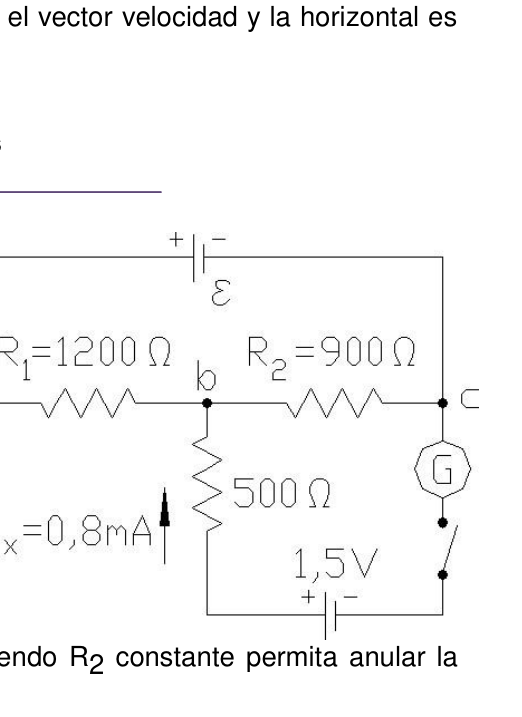
Topic: Circuits Metodi: Kirchhoff’s Laws, Equivalent Circuit Reduction Competenze: Physical Reasoning, Mathematical Modeling Objects: Resistor, Galvanometer, Battery Fonte: Testo (PDF) — p.3
Circuito potenziometro
PT97. Collegio Nazionale di Buenos Aires
Città di Buenos Aires.
Sul circuito potenziometro della figura il galvanometro indica la Corrente ix con il senso indicato. Calcolare: a) La differenza di potenziale Vbc = Vb - Vc e il valore di . b) Le correnti in R1 e R2. c) Il valore di R2 per: mantenendo R1 costante- Permette di annullare il corrente ix. d) Il valore di R1 che, mantenendo R2 costante, permette di annullare il corrente ix.
C B A
OAF 2014 - 102
Topic: Circuits Metodi: Kirchhoff’s Laws, Equivalent Circuit Reduction Competenze: Physical Reasoning, Mathematical Modeling Objects: Resistor, Galvanometer, Battery Fonte: Testo (PDF) — p.3
The following is the list of the main components of the engine:
PT97. National College of Buenos Aires
City of Buenos Aires.
In the potentiometer circuit of the The galvanometer indicates the current ix with the direction indicated. Calculation: (a) The potential difference Vbc = Vb - Vc and the value of . (b) The currents in R1 and R2. (c) The value of R2 for, maintaining R1 constant- Allow the current to be cancelled. ix. (d) The value of R1 such that, while keeping R2 constant, it is possible to cancel the current ix.
C B A
The following is the list of the countries of the European Union:
Topic: Circuits Metodi: Kirchhoff’s Laws, Equivalent Circuit Reduction Competenze: Physical Reasoning, Mathematical Modeling Objects: Resistor, Galvanometer, Battery Fonte: Testo (PDF) — p.3
Pelicula UP, globos
PT98. Colegio Nacional de Buenos Aires
Ciudad de Buenos Aires.
La película UP
Según Pixar, para elevar una casa de dicho tamaño, se necesitarían unos 24
millones de globos. Y aunque no lo parezca, utilizaron poco más de 20.000 para
la escena inicial y apenas unos 10.000 para las escenas de vuelos.
a) Suponiendo que la densidad del aire y la del helio a 20 °C y 1 atm son
1,2 kg/m3 y 0,18 kg/m3, respectivamente, y que un globo común de
fiesta tiene un diámetro de 28 cm y desinflado pesa 3gs ¿Alcanzaría la
cantidad de globos indicada en la película si se estima que una casa de
10m x 10m x 7m de altura, pesa aproximadamente 300 toneladas?
¿Calcular la cantidad mínima de globos necesarios para elevar
inicialmente la casa?
b) Si los globos absorben calor por radiación solar a una tasa de 70 w/m2.
Determinar la cantidad de calor que absorbe cada globo durante 15
minutos
c) Si ese calor se absorbe a presión constante de 1 atm, determinar el
volumen y la temperatura final del helio al cabo de los 15 minutos.
d) A los 100 m de altura, se sueltan unos cuantos globos y sólo quedan
10000. Calcular la tensión que debe resistir cada cuerda unida a cada
globo, en un descenso vertical (en las condiciones del punto a, antes
que el sol calentara los globos)
e) Imaginar ahora un sòlo globo lleno con aire caliente en su interior en vez
de Helio. Su volumen es 1,1 m3 y su espesor es despreciable. Se sabe
que cuando está vacío, su masa es 370 g. ¿A qué temperatura el globo
comienza a flotar en el aire? Considerar que el volumen del globo no
varía.
Datos: cp Helio=5,19 j/g°K, R=8,31 j/mol.°K
Despreciar las presiones debidas a las fuerzas de tensión del látex de los globos
Topic: Fluid Mechanics, Order-of-Magnitude Estimation Metodi: Hydrostatic Equilibrium, Order-of-Magnitude Estimation Competenze: Physical Reasoning, Mathematical Modeling Objects: Gas Fonte: Testo (PDF) — p.3
Pilco UP, palloni
PT98. Collegio Nazionale di Buenos Aires
Città di Buenos Aires.
Il film UP Secondo Pixar, per alzare una casa di questa dimensione, ci vorrebbero circa 24 Milioni di palloni. E seppur non sembrano, hanno usato poco più di 20.000 per La scena iniziale e solo 10.000 per le scene di volo. a) Supponendo che la densità dell’aria e quella dell’elio a 20 °C e 1 atm siano 1, 2 kg/m3 e 0, 18 kg/m3, rispettivamente, e che un globolo comune di La festa ha un diametro di 28 cm e pesa 3g. numero di palloni indicato nel film se si stima che una casa di 10m x 10m x 7m di altezza, pesa circa 300 tonnellate? Calcolare la quantità minima di palloni necessari per alzare Inizialmente la casa? b) Se i globuli assorbono calore da radiazioni solari a un tasso di 70 w/m2. Determina la quantità di calore che ogni pallone assorbe per 15 Minuti . c) Se tale calore viene assorbito a pressione costante di 1 atm, determinare il volume e temperatura finale dell’elio dopo 15 minuti. d) A 100 m di altezza, si rilasciano alcuni palloni e rimangono solo 10000. Calcolare la tensione che deve resistere ogni corda unita a ogni Il punto di riferimento è il punto di riferimento di un’esplosione di un’esplosione di un’esplosione di un’esplosione di un’esplosione di un’esplosione di un’esplosione di un’esplosione di un’esplosione di un’esplosione di un’esplosione di un’esplosione di un’esplosione di un’esplosione di un’esplosione di un’esplosione di un’esplosione di un’esplosione di un’esplosione di un’esplosione di un’esplosione di un’esplosione di un’esplosione di un’esplosione di un’esplosione di un’esplosione di un’esplosione di un’esplosione di un’esplosione di un’esplosione di un’esplosione di un’esplosione di un’esplosione di un’esplosione. che il sole riscalzi i globuli) e) Immaginate ora un suolo globoso pieno di aria calda all’interno invece di Helio. Il suo volume è di 1,1 m3 e il suo spessore è sconsiderato. Si sa . che quando è vuoto, la massa è di 370 g. A che temperatura il globo? comincia a galleggiare nell’aria? Considerare che il volume del globo non è varia. Dati: cp Helio=5,19 j/g°K, R=8,31 j/mol.°K Sminuire le pressioni dovute alle forze di tensione del latex dei palloni
Topic: Fluid Mechanics, Order-of-Magnitude Estimation Metodi: Hydrostatic Equilibrium, Order-of-Magnitude Estimation Competenze: Physical Reasoning, Mathematical Modeling Objects: Gas Fonte: Testo (PDF) — p.3
The following table shows the results of the calculation of the weight of the product:
PT98. National College of Buenos Aires
City of Buenos Aires.
The movie UP According to Pixar, to raise a house of this size, it would take about 24 hours. Millions of balloons. And even if it doesn’t seem like it, they used just over 20,000 for The initial scene and only about 10,000 for the flight scenes. (a) Assuming that the density of air and helium at 20 °C and 1 atm are 1.2 kg/m3 and 0.18 kg/m3, respectively, and that a common balloon of The party has a diameter of 28 cm and deflated weighs 3gs. Number of balloons shown in the film if you estimate that a house of 10m x 10m x 7m high, weighs about 300 tons? Calculate the minimum number of balloons needed to lift Initially the house? (b) If the balloons absorb heat from solar radiation at a rate of 70 w/m2. Determine the amount of heat each balloon absorbs for 15 minutes.
- What ? (c) If that heat is absorbed at a constant pressure of 1 atm, determine the The volume and final temperature of the helium after 15 minutes. (d) At 100 m high, a few balloons are released and only one remains.
- Calculate the stress that each rope must resist when attached to each The first is the vertical descent (in conditions of point a, before Let the sun warm the balloons. e) Now imagine a balloon floor filled with hot air inside instead. Helium. Its volume is 1.1 m3 and its thickness is despicable. You know . That when it’s empty, its mass is 370 g. What temperature is the balloon? It starts floating in the air? Consider that the volume of the balloon is not It varies. The data are from the data set of the data set. Depreciate the pressures due to the tensile forces of the latex of the balloons
Topic: Fluid Mechanics, Order-of-Magnitude Estimation Metodi: Hydrostatic Equilibrium, Order-of-Magnitude Estimation Competenze: Physical Reasoning, Mathematical Modeling Objects: Gas Fonte: Testo (PDF) — p.3
Transportando combustible
PT99. Escuela Philips
Ciudad de Buenos Aires.
Transportando combustible
Un camión transporta combustible en un tanque para abastecer una estación de
servicio. El tanque es un cilindro hermético de acero inoxidable de longitud
horizontal 𝐿 y diámetro 𝐷 (medidas interiores) y contiene combustible líquido
ocupando 5/7 de su capacidad y el resto es aire a la presión 𝑝1 = 1𝑎𝑡𝑚 al
momento de salir del depósito.
En lo que sigue, suponga que en
todo
momento
el
camión
se
desplaza por una calle horizontal.
El camión se encuentra detenido en
un semáforo cuando la luz se pone
en verde y el camión arranca. Si
durante un tiempo 𝜏 la superficie
libre del combustible forma un
ángulo
𝜃con la horizontal (ver
figura1),
a) Determine la aceleración con la que el camión se desplaza durante
dicho intervalo de tiempo
OAF 2014 - 103
Pasado el tiempo 𝑇 el conductor deja de acelerar y mantiene la rapidez
constante 𝑣. Si en esta condición el ángulo que forma la superficie libre del
combustible con la horizontal es 𝛿= 𝑘∙𝜃,
b) Determine el valor de la constante 𝑘
El trayecto hasta la estación de servicio duró el tiempo suficiente como para que
el sistema tanque-combustible alcanzara el equilibrio térmico con el medio
ambiente. El camión cargado se encontraba inicialmente en el depósito desde la
noche anterior y la temperatura ambiente se mantuvo constante en 𝑡𝑑= 23℃
hasta el momento de partir. La temperatura ambiente durante el trayecto fue
𝑡𝑎𝑚𝑏= 26℃.
Si el coeficiente de dilatación lineal del acero es 𝛼= 1,2 × 10−5 ℃−1 y el
coeficiente de expansión volumétrica del combustible es 𝛽= 9,6 × 10−4 ℃−1,
desprecie la evaporación del combustible y
c) Calcule la presión del aire dentro del tanque al llegar a la estación
A fin de realizar la descarga de combustible, se abre una válvula en la parte
superior del tanque para que el aire en su interior alcance una presión igual a la
del medio ambiente y luego el combustible se extrae mediante otra válvula en la
parte inferior del tanque. Si al momento de abrir la válvula superior la presión
externa es 𝑝𝑎𝑚𝑏= 1𝑎𝑡𝑚 y la temperatura se ha mantenido siempre en 26℃,
d) ¿Qué mása de aire escapa del tanque al ambiente?
Datos útiles
Masa atómica relativa del Oxígeno 𝐴𝑟𝑂= 16
Masa atómica relativa del Nitrógeno 𝐴𝑟𝑁= 14
Se puede considerar el aire como una mezcla gaseosa compuesta por un 80%
de nitrógeno gaseoso 𝑁2 y un 20% de oxígeno gaseoso 𝑂2
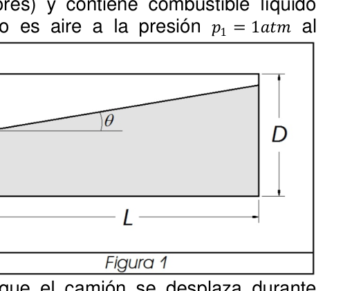
Topic: Fluid Mechanics Metodi: Hydrostatic Equilibrium, Ideal Gas Law Competenze: Physical Reasoning, Mathematical Modeling Objects: Container, Cylinder Fonte: Testo (PDF) — p.3
Caricare il carburante
PT99. Philips School
Città di Buenos Aires.
Trasportando combustibile Un camion porta il carburante in un serbatoio per rifornire una stazione di Servizio. Il serbatoio è un cilindro ermetico in acciaio inossidabile di lunghezza. L’orizzonte L e il diametro D (misure interne) e contiene combustibile liquido occupando 5/7 della sua capacità e il resto è aria a pressione p1 = 1atm al È il momento di uscire dal deposito. In seguito, supponiamo che in Tutto momento el camion se si muove su una strada orizzontale. Il camion è stato fermato a un semaforo quando la luce si accende E il camion parte. Si per un periodo τ superficie La liberazione del combustibile costituisce un angolo θcon la linea orizzontale (vedi figura 1), a) Determina l’accelerazione con cui il camion si muove durante tale intervallo di tempo
OAF 2014 - 103 Dopo il tempo T il conducente smette di accelerare e mantiene la velocità costante v. Se in questa condizione l’angolo che forma la superficie libera del Il combustibile con la linea orizzontale è δ= k∙θ, b) Determina il valore della costante k Il viaggio fino alla stazione di servizio è durato abbastanza a lungo da far sì che il sistema di combustibile e di serbatoio raggiungerà il calore equilibrato con il mezzo ambiente. Il camion carico si trovava inizialmente nel deposito dal La notte precedente e la temperatura ambiente è rimasta costante a td= 23°C fino al momento di partire. La temperatura ambiente durante il viaggio è stata tamb=26°C. Se il coefficiente di dilatazione lineare dell’acciaio è α= 1,2 × 10−5 °C−1 e il Il coefficiente di espansione volumetrica del combustibile è β= 9,6 × 10−4 °C−1,
- non si tratta di evaporazione del combustibile e c) Calcolare la pressione dell’aria dentro il serbatoio quando si arriva alla stazione Per effettuare il discarico di combustibile, si apre una valvola in parte Al di sopra del serbatoio, per far sì che l’aria dentro raggiunga una pressione pari alla pressione di Il combustibile viene poi estratto da un’altra valvola in la parte inferiore del serbatoio. Se all’ apertura della valvola superiore la pressione La temperatura esterna è di 1 atm e la temperatura è stata mantenuta a 26°C. d) Quale massa d’aria scorre dal serbatoio all’ambiente? Dati utili Massa atomica relativa dell’Ocsigeno ArO= 16 Massa atomica relativa dell’arno di azoto = 14 L’aria può essere considerata come un miscela gassosa composta da un 80% di nitrogeno gassoso N2 e di oggeno gassoso O2 di 20 per cento
Topic: Fluid Mechanics Metodi: Hydrostatic Equilibrium, Ideal Gas Law Competenze: Physical Reasoning, Mathematical Modeling Objects: Container, Cylinder Fonte: Testo (PDF) — p.3
The fuel is transported by the vehicle.
PT99. Philips School
City of Buenos Aires.
Carrying fuel A truck carries fuel in a tank to supply a gas station. The service. The tank is a long, airtight stainless steel cylinder. horizontal L and diameter D (inner measurements) and contains liquid fuel It occupies 5/7 of its capacity and the rest is air at p1 = 1 atm at Time to get out of the warehouse. In the following, suppose that in All of it . Now , now . el The truck . se It’s moving down a horizontal street. The truck is stopped at A traffic light when the lights go on. It’s green and the truck starts. Si for a time τ surface Free of fuel forms a angle θ with the horizontal (see Figure 1 (a) Determine the acceleration at which the truck moves during the period the time interval
The following is the list of the countries of the European Union: After the time T the driver stops speeding and maintains speed constant v. If in this condition the angle forming the free surface of the The fuel with the horizontal is δ=k∙θ, (b) Determine the value of the constant k The journey to the gas station took long enough for me to the fuel tank system reaches thermal equilibrium with the medium The environment. The truck was initially in the storage room from the The previous night and the room temperature remained constant at td= 23°C until the time of departure. The ambient temperature during the journey was The temperature is 26°C. If the coefficient of linear steel dilation is α= 1,2 × 10−5 °C−1 and the The fuel volume expansion coefficient is β= 9,6 × 10−4 °C−1, It ignores the evaporation of fuel and (c) Calculate the air pressure inside the tank upon arrival at the station. To discharge fuel, a valve is opened at the part above the tank so that the air inside it reaches a pressure equal to the The fuel is then extracted by another valve in the the bottom of the tank. If at the time of opening the upper valve the pressure The external temperature is 1 atm and the temperature has always been kept at 26°C. (d) What air mass escapes from the tank into the environment? Useful data The relative atomic mass of the oxygen ArO= 16 The relative atomic mass of nitrogen ArN= 14 Air can be considered as a gaseous mixture composed of 80% Of a gas N2 nitrogen and 20% of gas O2 oxygen
Topic: Fluid Mechanics Metodi: Hydrostatic Equilibrium, Ideal Gas Law Competenze: Physical Reasoning, Mathematical Modeling Objects: Container, Cylinder Fonte: Testo (PDF) — p.3
Se viene el agua, radiacion solar
PT100. Escuela Philips
Ciudad de Buenos Aires.
Se viene el agua
Nuestra estrella Sol baña nuestro planeta con energía radiante y, luego de
atravesar la atmósfera, dicha energía alcanza la superficie terrestre a razón de
1400𝑊/𝑚2, lo cual corresponde al valor promedio para la superficie de la
hemiesfera terrestre iluminada que se encuentra perpendicularmente orientada
respecto de la dirección de los rayos solares (regiones que se encuentran en el
denominado mediodía).
Los cambios climáticos, el deterioro de la capa de ozono y el aumento en la
intensidad de la actividad solar tienen importantes efectos en nuestro planeta.
Hace ya varios años que el incremento del nivel de agua de los océanos es un
tema que tiene atentos y preocupados a muchos ambientalistas, entre otros
grupos de personas. Los océanos cubren aproximadamente el 70% de la
superficie de nuestro planeta, con una profundidad promedio de 4000𝑚, siendo el
radio terrestre promedio de 6400𝑘𝑚. El aumento del nivel de agua de los
océanos puede traer graves problemas para las ciudades que se encuentran
próximas a las costas y por eso es un tema importante.
En lo que sigue, suponga que el agua oceánica de nuestro planeta es agua pura
y que su volumen es constante, es decir, que no se ve afectado por lluvias o ríos
que desembocan en las costas continentales. Asuma para el agua pura un calor
específico 𝑐= 4186 𝑘𝐽/𝑘𝑔𝐾.
a) Suponga que toda la energía radiante que alcanza la superficie de la
Tierra es absorbida y nada es reflejado o emitido y estime el cambio ∆𝑇
que se espera en la temperatura del agua de los océanos durante un
período de 24𝑠. Asuma que, en todo momento, la totalidad del agua
oceánica es un sistema homogéneo y que se encuentra en equilibrio
OAF 2014 - 104
térmico, es decir, que el proceso durante el cual ocurre la absorción de
la energía radiante es cuasiestático.
Teniendo en cuenta el resultado anterior y las condiciones mencionadas,
b) Estime el incremento ∆ que se espera para el nivel del agua de los
océanos
El océano no es en realidad un sistema en equilibrio térmico. La figura 1 muestra
la variación de la temperatura oceánica en función de la profundidad. Teniendo
en cuenta esta nueva información,
c) Realice una mejor estimación
del incremento ∆ que se
espera para el nivel del agua
de los océanos
La energía radiante emitida por un
objeto cuya superficie externa se
encuentra a la temperatura absoluta 𝑇
responde a la ley de Stefan-Boltzmann
según la cual la potencia por unidad
de área radiada por el objeto es:
𝑝= 𝜀∙𝜎∙𝑇4
Donde 𝜎= 5,67 × 10−8𝑊/𝑚2𝐾4 es la
constante de Boltzmann y 𝜀 es una
constante propia del objeto llamada emisividad. Esta última constante representa
de alguna forma qué tan eficiente es el objeto como radiador y se encuentra
acotada en el rango 0 ; 1 correspondiendo el valor 𝜀= 1 al radiador perfecto o
cuerpo negro.
Teniendo en cuenta esta nueva información y utilizando nuevamente la figura 1,
d) Realice una ulterior estimación del incremento ∆ que se espera para el
nivel del agua de los océanos
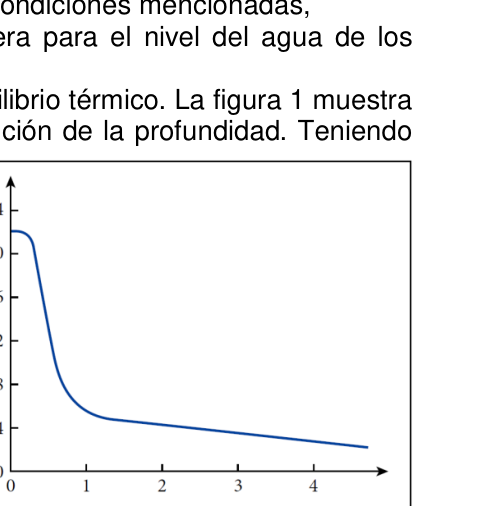
Topic: Thermodynamics, Earth & Environmental Science Metodi: First Law of Thermodynamics, Order-of-Magnitude Estimation Competenze: Physical Reasoning, Mathematical Modeling Objects: — Fonte: Testo (PDF) — p.3
Viene l’acqua, la radiazione solare
PT100. Philips School
Città di Buenos Aires.
L’acqua viene Il nostro sole, la nostra stella, bagna il nostro pianeta con energia radiante e, dopo Attraverso l’atmosfera, tale energia raggiunge la superficie terrestre a un tasso di 1400W/m2, corrispondente al valore medio per la superficie della Emisfera terrestre illuminata orientata perpendicularmente La direzione dei raggi solari (regioni situate nel
- “Mezzogiorno”. Il cambiamento climatico, il deterioramento della capa di ozono e l’aumento della L’intensità dell’attività solare ha effetti importanti sul nostro pianeta. L’aumento del livello dell’acqua negli oceani è stato registrato per diversi anni. Un tema che preoccupa molti ambientalisti, tra gli altri. gruppi di persone. Gli oceani coprono circa il 70% del mondo. La superficie del nostro pianeta, con una profondità media di 4000 metri, è il radius terrestre medio di 6400 km. L’aumento del livello dell’acqua dei Gli oceani possono portare gravi problemi alle città che si trovano vicino alle coste, e per questo è un’importante questione. In quello che segue, supponiamo che l’acqua oceanica del nostro pianeta sia acqua pura. e che il suo volume è costante, cioè non è influenzato da piogge o fiumi. che scendono sulle coste continentali. Assumi per l’acqua pura un caldo specifico c= 4186 kJ/kgK. (a) Supponiamo che l’energia radiante che raggiunge la superficie della La terra è assorbita e nulla è riflesso o emesso e stima il cambiamento ∆T che si aspetta nella temperatura dell’acqua degli oceani per un periodo di 24s. Suppone che, in ogni momento, l’intera acqua L’oceanica è un sistema omogeneo e che si trova in equilibrio.
OAF 2014 - 104 Il processo di assorbimento di l’energia radiante è quasi-statica. Considerando il risultato precedente e le condizioni sopra citate, b) Calcolare l’aumento ∆ atteso per il livello dell’acqua dei Oceani L’oceano non è in realtà un sistema in equilibrio termico. La figura 1 mostra la variazione della temperatura oceanica a seconda della profondità. Avendo considerando queste nuove informazioni, c) Fare una migliore stima di un aumento ∆ che si Aspetta il livello dell’acqua di tutti gli oceani. L’energia radiante emessa da un oggetto la cui superficie esterna è si trova a temperatura assoluta T risponde alla legge di Stefan-Boltzmann. secondo la quale la potenza per unità di superficie raggiunta dall’oggetto è: 𝑝= 𝜀∙𝜎∙𝑇4 Dove σ= 5,67 × 10−8W/m2K4 è la Boltzmann costante e ε è una la costante dell’oggetto chiamata emissività. Questa ultima costante rappresenta In qualche modo quanto è efficiente l’oggetto come radiatore e si trova a livello di 0 ; 1 corrispondente al valore ε= 1 del radiatore perfetto o corpo nero. Considerando questa nuova informazione e riprendendo la figura 1, d) effettuare un’ulteriore stima dell’aumento ∆ atteso per il livello dell’acqua degli oceani
Topic: Thermodynamics, Earth & Environmental Science Metodi: First Law of Thermodynamics, Order-of-Magnitude Estimation Competenze: Physical Reasoning, Mathematical Modeling Objects: — Fonte: Testo (PDF) — p.3
The water comes in, the solar radiation comes in.
PT100. Philips School
City of Buenos Aires.
The water ‘s coming . Our star Sun bathes our planet with radiant energy and, after Through the atmosphere, that energy reaches the Earth’s surface at a rate of 1400W/m2, which is the average value for the area of the The luminous earth hemisphere that is perpendicularly oriented. The direction of the sun’s rays (regions in the (called noon). Climate change, the deterioration of the ozone layer and the rise in the The intensity of solar activity has important effects on our planet. For several years now, the rise in ocean water levels has been a This is a subject that is of concern to many environmentalists, among others. groups of people. The oceans cover about 70% of the world’s surface. The surface of our planet, with an average depth of 4000m, being the average land radius of 6400 km. The increase in water levels in the The oceans can bring serious problems to cities that are located It’s close to the coast and that’s why it’s such an important issue. In the following, suppose the ocean water on our planet is pure water. and that its volume is constant, that is, it is not affected by rain or rivers. The Commission has not yet adopted a proposal for a regulation on the protection of the environment. Take for the pure water a warmth The specific c = 4186 kJ/kgK. (a) Assume that all radiant energy reaching the surface of the Earth is absorbed and nothing is reflected or emitted and estimate the change ∆T It is expected that the ocean water temperature will rise for a period of time. period of 24s. Assumes that, at all times, the total water Oceanography is a homogeneous system and it is in balance.
The following is the list of the countries of the European Union: thermal, i.e. the process during which the absorption of radiant energy is quasi-static. Having regard to the above result and the conditions mentioned above, (b) Estimate the expected increase in water level in the Oceans The ocean is not really a system in thermal equilibrium. Figure 1 shows the variation in ocean temperature depending on the depth. Having In view of this new information, (c) Make a better estimate The increase in the Wait for the water level of the oceans. Radiant energy emitted by a object whose outer surface is is at absolute temperature T It is the answer to Stefan-Boltzmann’s law. According to which the power per unit of area radiated by the object is: 𝑝= 𝜀∙𝜎∙𝑇4 Where σ= 5,67 × 10−8W/m2K4 is the Boltzmann constant and ε is a The object’s own constant called emissivity. This last constant represents Somehow how efficient the object is as a radiator and is located the value of the radiator is equal to or less than 0, black body. Taking this new information into account and again using Figure 1, (d) Further estimate the increase expected for the year sea water level
Topic: Thermodynamics, Earth & Environmental Science Metodi: First Law of Thermodynamics, Order-of-Magnitude Estimation Competenze: Physical Reasoning, Mathematical Modeling Objects: — Fonte: Testo (PDF) — p.3
El motor, potencia variable
PT101. Escuela Philips
Ciudad de Buenos Aires.
El motor
Un vehículo de transporte de carga es impulsado por un motor de potencia
variable 𝑃. En la figura 1 se muestra la relación entre la potencia que desarrolla
el motor y la rapidez del vehículo para diferentes cargas totales (incluidas la
masa del vehículo y del motor) siempre considerando que el vehículo se
desplaza horizontalmente.
Si el vehículo se desplaza con una rapidez constante de 2𝑚/𝑠 y una carga total
de 350𝑘𝑔
a) Determine la potencia que desarrolla el motor
b) Determine la fricción neta que actúa sobre el vehículo
Suponga ahora que el vehículo se desplaza con una rapidez constante de
2,5 𝑚/𝑠
c) Construya un gráfico 𝑃= 𝑓(𝑀) de la potencia que desarrolla el motor en
función de la carga total para el rango 200 ; 400 𝐾𝑔
La relación entre la potencia que desarrolla el motor y la rapidez del vehículo
responde a la expresión
𝑃= 𝑘𝑣𝑛
Donde 𝑘 es una constante y 𝑛 es un número entero positivo.
d) Determine el valor de 𝑛 cuando la carga total impulsada por el motor es
de 250𝐾𝑔
OAF 2014 - 105
Suponga ahora que, transportando una carga total de 200𝐾𝑔, el vehiculo se
mueve horizontalmente con una rapidez de 1,5𝑚/𝑠. En un determinado instante
comienza a ascender por una pendiente que tiene una inclinación de 30°.
e) Determine el incremento porcentual 𝛿𝑃% en la potencia que desarrolla el
motor si la rapidez se debe mantener constante en 1,5𝑚/𝑠 durante el
ascenso.
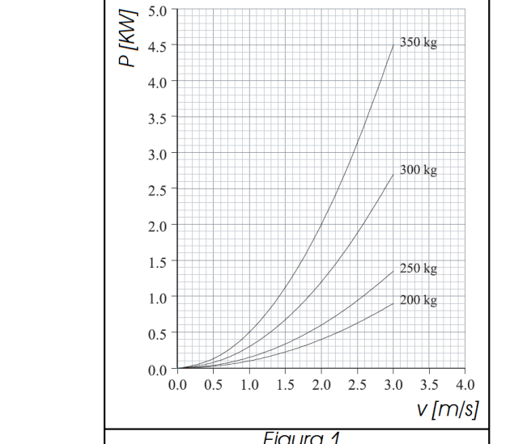
Topic: Newtonian Mechanics Metodi: Free-Body Diagram, Kinematic Equations Competenze: Physical Reasoning, Mathematical Modeling Objects: — Fonte: Testo (PDF) — p.3
Il motore, potenza variabile
PT101. Philips School
Città di Buenos Aires.
Il motore Un veicolo di trasporto merci è propulso da un motore di potenza variabile P. La figura 1 mostra il rapporto tra potenza che sviluppa il motore e la velocità del veicolo per diverse cariche totali (inclusi il (c) il volume del veicolo e del motore) sempre che il veicolo sia si spostano orizzontalmente. Se il veicolo si muove a una velocità costante di 2 m/s e a una carica totale de 350𝑘𝑔 a) Determina la potenza che sviluppa l’ motore b) Determina la friczione netta che agisce sul veicolo Supponiamo ora che il veicolo si muova a una velocità costante di 2,5 𝑚/𝑠 c) Costruire un grafico P= f(M) della potenza che sviluppa il motore in Funzione del carico totale per la gamma 200; 400 Kg Relazione tra potenza che sviluppa il motore e velocità del veicolo risponde all’espressione P= kvn Dove k è una costante e n è un intero positivo. d) Determina il valore di n quando la carica totale del motore è de 250𝐾𝑔
OAF 2014 - 105 Supponiamo che, trasportando un carico totale di 200 kg, il veicolo sia si muove orizzontalmente a velocità di 1,5 m/s. In un certo istante. inizia a salire su un’inclinazione di 30°. e) Determina l’aumento percentuale δP% della potenza che sviluppa il motor se la velocità deve essere mantenuta costante a 1,5 m/s durante l’ Ascensione.
Topic: Newtonian Mechanics Metodi: Free-Body Diagram, Kinematic Equations Competenze: Physical Reasoning, Mathematical Modeling Objects: — Fonte: Testo (PDF) — p.3
The engine, variable power **
PT101. Philips School
City of Buenos Aires.
The engine . A freight transport vehicle is powered by a power engine variable P. Figure 1 shows the relationship between the power it develops The engine and speed of the vehicle for different total loads (including the (e) the mass of the vehicle and the engine) always taking into account that the vehicle is It moves horizontally. If the vehicle is travelling at a constant speed of 2 m/s and a total load de 350𝑘𝑔 (a) Determine the engine power output (b) Determine the net friction acting on the vehicle Suppose now that the vehicle is moving at a constant speed of 2,5 𝑚/𝑠 (c) Construct a graph P= f(M) of the engine power output in Total load function for the range 200; 400 Kg The relationship between engine power and vehicle speed responds to the expression P= kvn Where k is a constant and n is a positive integer. (d) Determine the value of n when the total engine powered load is de 250𝐾𝑔
The following is the list of the countries of the European Union: Suppose now that, carrying a total load of 200 kg, the vehicle is It moves horizontally at a speed of 1.5m/s. In a certain instant . begins to rise on a slope that has a slope of 30°. (e) Determine the percentage increase δP% in the power developed by the engine if the speed must be maintained constant at 1.5m/s during the I’m going up.
Topic: Newtonian Mechanics Metodi: Free-Body Diagram, Kinematic Equations Competenze: Physical Reasoning, Mathematical Modeling Objects: — Fonte: Testo (PDF) — p.3
Numero de Avogadro, Rayleigh
PT102. EPES Nro. 54 Gobernador Juan J. Silva
Ciudad de Formosa.
Una de las primeras estimaciones del número de Avogadro fue realizada por
Lord Rayleigh en 1890. El observó que muy pequeñas cantidades de algunos
aceites se esparcen en áreas muy amplias cuando se las deposita sobre la
superficie de un estanque de agua. Bajo condiciones de reposo la “mancha de
aceite” es aproximadamente circular, de forma que la superficie cubierta puede
calcularse midiendo su diámetro. En particular, se observa que un miligramo de
ácido oleico (aceite), cuya densidad es 0.9 g/cm3, cubre una superficie
aproximada de 0.9 m2.
a) ¿Cuál es el espesor de la capa de aceite?
b) Asumiendo que el espesor de la capa de aceite se corresponde con el
diámetro molecular, que las moléculas son esféricas a los fines de la
estimación y que están en contacto entre sí en la película de aceite,
¿cuál es el volumen estimado para una molécula?
c) Estimar la constante de Avogadro (número de moléculas por mol de
sustancia) a partir de los datos del experimento, considerando que un
mol de ácido oleico tiene una masa de 282.5 g/mol.
Topic: Order-of-Magnitude Estimation Metodi: Order-of-Magnitude Estimation, Dimensional Analysis Competenze: Physical Reasoning, Mathematical Modeling Objects: Droplet Fonte: Testo (PDF) — p.3
Numero di Avogadro, Rayleigh
PT102. - Non lo so. 54 Governatore Juan J. Silva
Città di Formosa.
Una delle prime stime del numero di Avogadro fu fatta da Lord Rayleigh nel 1890. Ha osservato che quantitativi molto piccoli di alcuni Le oli si diffondono in aree molto ampie quando vengono depositate sulla superficie del superficie di un stagno d’acqua. In condizioni di riposo la macchia di l’olio” è circolare circa, in modo che la superficie coperta può si calcola misurando il diametro. In particolare, si osserva che un miligramma di acido oleico (olio), densità 0,9 g/cm3, copre una superficie circa 0,9 m2. a) Qual è lo spessore dell’olio? b) Supponendo che il spessore dell’olio corrisponda al diametro molecolare, che le molecole sono sferiche alla fine del stima e che sono in contatto tra loro nel film olio, Qual è il volume stimato per una molecola? c) Estimare la costante di Avogadro (numero di molecole per mol di La sostanza) a partire dai dati dell’esperimento, considerando che un Mol di acido oleico ha una massa di 282,5 g/mol.
Topic: Order-of-Magnitude Estimation Metodi: Order-of-Magnitude Estimation, Dimensional Analysis Competenze: Physical Reasoning, Mathematical Modeling Objects: Droplet Fonte: Testo (PDF) — p.3
The number of the number of the number of the number of the number of the number of the number of the number of the number of the number of the number of the number of the number of the number of the number of the number of the number of the number of the number of the number of the number of the number of the number of the number of the number of the number of the number of the number of the number of the number of the number of the number of the number of the number of the number of the number of the number of the number of the number of the number of the number of the number of the number of the number of the number of the number of the number of the number of the number of the number of the number of the number of the number of the number of the number of the number of the number of the number of the number of the number of the number of the number of the number of the number of the number of the number of the number of the number of the number of the number of the number of the number of the number of the number of the number of the number of the number of the number of the number of the number of the number of the number of the number of the number of the number of the number of the number of the number of the number of the number of the number of the number of the number of the number of the number of the number of the number of number of the number of the number of the number of the number of the number of the number of the number of the number of the number of number of the number of the number of the number of the number of the number of the number of the number of the number of the number of the number of the number of the number of the number of the number of the number of the number of the number of the number of the number of the number of the number of the number of the number of the number of the number of the number of the number of the number of the number of the number of the number of the number of the number of the number of the number of number of the number of the number of
PT102. The Commission shall adopt implementing acts in accordance with Article 21 of this Regulation. 54 Governor John J. Silva
The city of Formosa.
One of the first estimates of Avogadro’s number was made by Lord Rayleigh in 1890. He observed that very small amounts of some Oil is spread over very large areas when deposited over the surface of a water tank. Under resting conditions the stain of oil” is approximately circular, so that the covered surface can It is calculated by measuring its diameter. In particular, it is observed that a milligram of oleic acid (oil), density of 0.9 g/cm3, covers an area approximately 0.9 m2. (a) What is the thickness of the oil layer? (b) Assuming that the thickness of the oil layer corresponds to the molecular diameter, which molecules are spherical at the end of the estimate and that they’re in contact with each other in the oil film, What is the estimated volume for a molecule? (c) Estimate the Avogadro constant (number of molecules per mol of The results of the experiment were based on the data from the experiment, considering that a mol oleic acid has a mass of 282,5 g/mol.
Topic: Order-of-Magnitude Estimation Metodi: Order-of-Magnitude Estimation, Dimensional Analysis Competenze: Physical Reasoning, Mathematical Modeling Objects: Droplet Fonte: Testo (PDF) — p.3
Temperatura empirica, termometro
PT103. EPES Nro. 54 Gobernador Juan J. Silva
Ciudad de Formosa.
Históricamente se ha definido de manera empírica la temperatura T a partir de una magnitud termométrica x experimentalmente accesible. El caso más conocido en la vida diaria, por ejemplo, es cuando x representa la altura de una columna de mercurio dentro de un capilar. Lo que conocemos como termómetro de mercurio. Una definición empírica (experimental) de la temperatura es:
OAF 2014 - 106
i)
Partimos de dos puntos fijos (x1 , x2), a los cuales
se les asignan arbitrariamente determinados valores
(T1 , T2) en la escala termométrica que se está
definiendo. Luego, se establece “a priori” una relación
lineal entre la magnitud termométrica medida y la
temperatura (T = A (x –x1) + B), utilizando los puntos
(x1 , T1) y (x2 , T2). Para más claridad, hacemos en la
figura 1 una representación gráfica para el caso de las
escalas termométricas Celsius y Fahrenheit
a) Determinar los valores de las constantes A, B
cuando la definición i) se aplica en la
construcción de una escala termométrica cualquiera.
b) Utilizando la siguiente tabla, encontrar las expresiones que permitan
convertir los grados Celsius a cada una de las otras escalas:
Topic: Thermodynamics Metodi: Graph Linearization, Ideal Gas Law Competenze: Physical Reasoning, Mathematical Modeling Objects: Manometer Fonte: Testo (PDF) — p.3
Temperatura empirica, termometro
PT103. - Non lo so. 54 Governatore Juan J. Silva
Città di Formosa.
Storicamente, la temperatura T è stata definita empiricamente a partire da una magnitudine termometrica x sperimentalmente accessibile. Il caso più nota nella vita quotidiana, per esempio, è quando x rappresenta l’altezza di una colonna di mercurio all’interno di un capillario. Quello che conosciamo come termometro. di mercurio. Una definizione empirica (esperimentare) della temperatura è:
OAF 2014 - 106 i) Partiamo da due punti fissi (x1 , x2), a cui vengono assegnati arbitrariamente determinati valori (T1 , T2) sulla scala termometrica che si sta definendo. Poi si stabilisce una relazione a priori lineare tra la magnitudine termometrica misurata e la temperatura (T = A (x x1) + B), utilizzando i punti (x1 , T1) y (x2 , T2). Per la chiarezza, facciamo in La figura 1 è una rappresentazione grafica del caso delle Scale termometriche Celsius e Fahrenheit a) Determinare i valori delle costanti A, B quando la definizione (i) si applica alla costruire una scala termometrica qualsiasi. b) Usando la tabella seguente, trovare le espressioni che permettono Convertire i gradi Celsius a ciascuna delle altre scale:
Topic: Thermodynamics Metodi: Graph Linearization, Ideal Gas Law Competenze: Physical Reasoning, Mathematical Modeling Objects: Manometer Fonte: Testo (PDF) — p.3
The following is the list of the types of air conditioners used:
PT103. The Commission shall adopt implementing acts in accordance with Article 21 of this Regulation. 54 Governor John J. Silva
The city of Formosa.
Historically, the temperature T has been defined empirically from a thermometric magnitude x that is experimentally accessible. The most important case . known in everyday life, for example, is when x represents the height of a Mercury column inside a capillary. What we know as a thermometer . of mercury. An empirical (experimental) definition of temperature is:
The following is the list of the countries of the European Union: i) We start from two fixed points (x1, x2), which They are arbitrarily assigned certain values (T1 , T2) on the thermometric scale that is being used Defining it. Then a priori relationship is established. Linear between the measured thermometric magnitude and the temperature (T = A (x x1) + B), using the points (x1 , T1) y (x2 , T2). For clarity, we do in the Figure 1 is a graphic representation for the case of the The thermometric scale is Celsius and Fahrenheit. (a) Determine the values of constants A, B where definition (i) applies to building any thermometric scale. (b) Using the following table, find the expressions that allow converting degrees Celsius to each of the other scales:
Topic: Thermodynamics Metodi: Graph Linearization, Ideal Gas Law Competenze: Physical Reasoning, Mathematical Modeling Objects: Manometer Fonte: Testo (PDF) — p.3
Recipiente adiabatico, mezcla agua
PT104. EPES Nro. 54 Gobernador Juan J. Silva
Ciudad de Formosa.
Un recipiente, que puede considerarse adiabático (no intercambia calor con el
medio ambiente), contiene 1 Kg de agua a temperatura ambiente. Un
termómetro de mercurio, que se encuentra sumergido en el agua, indica que la
temperatura del sistema es de 27°C. En el recipiente se vierte agua en estado de
ebullición (100°C) y, cuando la temperatura del agua se estabiliza, el termómetro
indica que la temperatura del sistema es de 50°C. La transferencia de calor al
recipiente puede considerarse despreciable.
a) ¿Cuál es la masa de agua en estado de ebullición que se agregó al
recipiente? Tenga en cuenta que el calor específico del agua es
cagua = 1 cal/(°C g), y la masa de agua equivalente para el termómetro
de mercurio es meq=10 g.
b) Ahora se extraen de un congelador tres cubitos de hielo, de 20 g de
masa cada uno y a una temperatura de -20°C, y se agregan al
recipiente. Calcular la temperatura que indicará el termómetro cuando el
sistema alcance el equilibrio.
Datos: Calor latente de fusión del hielo hielo = 80 cal/g, calor específico del
hielo: chielo = 0.53 cal/(°C g),
OAF 2014 - 107
Topic: Thermodynamics Metodi: First Law of Thermodynamics Competenze: Physical Reasoning, Mathematical Modeling Objects: Calorimeter Fonte: Testo (PDF) — p.3
Ricettore adiabatico, miscela acqua
PT104. - Non lo so. 54 Governatore Juan J. Silva
Città di Formosa.
Un recipiente, che può essere considerato adiabatico (non scambiano calore con il Il contenuto di 1 kg di acqua a temperatura ambiente. Un Il termometro di mercurio, immerso nell’acqua, indica che il la temperatura del sistema è 27°C. Nel recipiente si versa acqua in stato di Bollente (100°C) e, quando la temperatura dell’acqua si stabilizza, il termometro indica che la temperatura del sistema è 50°C. Il trasferimento di calore al il contenitore può essere considerato disprezzo. a) Qual è la massa di acqua in stato di ebollizione che è stata aggiunta al contenitore? Si noti che il calore specifico dell’acqua è acqua = 1 cal/(°C g), e massa di acqua equivalente per il termometro di mercurio è meq=10 g. b) Ora vengono estratti da un congelatore tre cubetti di ghiaccio, di 20 g di Masse singole e a una temperatura di -20°C, e si aggiungono al contenitore. Calcolare la temperatura che il termometro indica quando il Il sistema raggiunge l’equilibrio. Data: Calore latente di fusione del ghiaccio ghiaccio = 80 cal/g, calore specifico del g) g/* (g) g/* (g) g/* (g) g/* (g) g/* (g) g/* (g) g/* (g) g/* (g) g/* (g) g/* (g) g/* (g) g/* (g) g/* (g) g/* (g) g/* (g) g/* (g) g/* (g) g/* (g) g/* (g) g/* (g) g/* (g) g/* (g) g/* (g) g/* (g) g/* (g) g/* (g) g/* (g) (g) (g) (g) (g) (g) (g) (g) (g) (g) (g) (g) (g) (g) (g) (g) (g) (g) (g) (g) (g) (g) (g) (g)
OAF 2014 - 107
Topic: Thermodynamics Metodi: First Law of Thermodynamics Competenze: Physical Reasoning, Mathematical Modeling Objects: Calorimeter Fonte: Testo (PDF) — p.3
Adiabatic container, water mixed
PT104. The Commission shall adopt implementing acts in accordance with Article 21 of this Regulation. 54 Governor John J. Silva
The city of Formosa.
A container, which may be considered adiabatic (does not exchange heat with the The water content is 1 kg at room temperature. Un Mercury thermometer, which is submerged in water, indicates that the The temperature of the system is 27°C. In the container, water is poured in the state of boiling (100°C) and, when the water temperature is stabilized, the thermometer indicates that the system temperature is 50°C. Heat transfer to the container may be considered despicable. (a) What is the boiling water mass added to the container? Please note that the specific heat of the water is water = 1 cal/(°C g), and the equivalent water mass for the thermometer of mercury is meq=10 g. (b) Three ice cubes, 20 g of Each mass and at a temperature of -20°C, and are added to the container. Calculate the temperature to be indicated by the thermometer when the temperature is The system reaches balance. Data: Latent heat of melting ice ice = 80 cal/g, specific heat of the ice The following table shows the results of the calculation of the total amount of the aid:
The following is the list of the countries of the European Union:
Topic: Thermodynamics Metodi: First Law of Thermodynamics Competenze: Physical Reasoning, Mathematical Modeling Objects: Calorimeter Fonte: Testo (PDF) — p.3
Reto en hotel Monaco
PT105. Escuela de Educación Técnica Alberto Einstein
Colegio San Alfonso - Colegio San Pablo - Colegio San Marcos
Colegio Victorino de la Plaza - Bachillerato Humanista Moderno
Instituto de Educación Media Dr. Arturo Oñativia
Colegio Madre María Sara Lona - Instituto de Educación Integral
Colegio Belgrano - Colegio 5095 - Colegio Juan Manuel Estrada
Colegio Martina Silva de Burruchaga - Colegio Joaquín Castellano
Colegio Arturo Illia
Ciudad de Salta.
En el hotel Mónaco, un eximio docente de la Fa.M.A.F. , le propuso un reto a
sus dos de sus ayudantes, sobre algunas cuestiones y preguntas en base a la
pileta del mismo hotel.
La pileta del hotel tiene 10 metros de largo, 5 metros de ancho y 2 metros de
profundidad, la misma está llena de agua, iluminada por 6 faroles iguales
alrededor y una lámpara en el interior de la misma.
Las preguntas que les realizo fueron las siguientes:
a) Si la lámpara esta en el centro de la pileta, ¿Cuál es el área iluminada
por el mismo visto por encima de la misma? Suponer, índice de
refracción del agua n1=1.33.
b) Si duplicamos la intensidad de la corriente que pasa por la lámpara,
¿Cuánto varia el área iluminada por el mismo?
c) Sabiendo que los faroles y el foco se conectan a la misma fuente,
¿Como es conveniente conectarlos para que entreguen la potencia
máxima en cada uno de ellos? Explique.
d) Suponiendo un caso ideal en donde toda la potencia disipada por la
lámpara en el interior de la pileta es absorbida por el agua, ¿Cuál es la
temperatura en 1 hora?
Datos: Voltaje=220 V ; Resistencia de la lámpara = 0.5 ohm ; Densidad del
agua= 1 gr/cm3 ; Cp-agua = 4180 J/(kg . °C); T0= 20°C.
e) Para pequeñas variaciones de temperaturas, el índice de refracción
cambia linealmente. Dado T0=20 °C, T1= 25°C, n0= 1.33 y n1= 1.31,
calculados experimentalmente, expresar la función que representa el
índice de refracción en función de la temperatura.
¿Cuánto es el índice de refracción para la temperatura calculada en d)?
f) Con el nuevo índice de refracción, ¿Qué sucede con el área iluminada
por el foco (aumenta, disminuye o permanece igual)?
g) Al que peor respondió el cuestionario lo arrojaron a la pileta, pero no
se percataron que en una de las paredes de la pileta, se corto el cable
que estaba conectado con la lámpara del interior de la misma .
Teniendo en cuenta que el cuerpo humano puede soportar no más de
30 mA de corriente eléctrica.
El ayudante podrá cenar esta noche?
Podemos modelizar la situación correspondiente suponiendo que siendo la
resistencia eléctrica del ayudante es de 500 ohm.
Dato: resistividad del agua: 200 ohm . m
OAF 2014 - 108
Topic: Newtonian Mechanics Metodi: Kinematic Equations, Free-Body Diagram Competenze: Physical Reasoning, Mathematical Modeling Objects: — Fonte: Testo (PDF) — p.3
Retto alberghiero Monaco
PT105. Alberto Einstein School of Technical Education
Colegio San Alfonso - Colegio San Pablo - Colegio San Marcos
Colegio Victorino de la Plaza - Bachillerato Humanista Moderno
Istituto di media educazione Dr. Arturo Oñativia
Colegio Madre Maria Sara Lona - Istituto di istruzione integrale
Colegio Belgrano - Colegio 5095 - Colegio Juan Manuel Estrada
Colegio Martina Silva di Burruchaga - Colegio Joaquín Castellano
Colegio Arturo Illia
Città di Salta.
All’hotel Monaco, un exempio docente della Fa.M.A.F. , ha proposto una sfida a I suoi due assistenti, su alcune domande e domande basate sulla
- Un sacco di cose dello stesso hotel. La pila dell’hotel ha 10 metri di lunghezza, 5 metri di larghezza e 2 metri di profondità, è piena di acqua, illuminata da sei lampadine uguali. intorno e una lampada all’interno. Le domande che ho fatto sono le seguenti: a) Se la lampada è al centro della pila, quale è l’area illuminata Per lo stesso visto sopra di esso? Supponiamo, indice di refraczione dell’acqua n1=1.33. b) Se raddoppiamo l’intensità del corrente che passa attraverso la lampada, Quanto varia l’area illuminata da lui? c) sapendo che i fari e il foco si collegano alla stessa fonte, Come è conveniente collegarli per fornire la potenza? Il massimo in ognuno di loro? Spiegami. d) Supponendo un caso ideale in cui tutta la potenza viene dissipata dalla La lampada all’interno del piatto è assorbita dall’acqua, qual è la temperatura in un’ora? Dati: Voltaggio=220 V; resistenza della lampada = 0,5 ohm; densità del acqua = 1 gr/cm3; Cp-acqua = 4180 J/(kg . °C); T0= 20°C. (e) Per piccole variazioni di temperatura, l’indice di refraczione cambia linealmente. Se T0=20 °C, T1= 25°C, n0= 1.33 e n1= 1.31, Calcolato sperimentalmente, esprimere la funzione che rappresenta il indice di refraczione a temperatura. Qual è l’indice di refraczione per la temperatura calcolata in d)? f) Con il nuovo indice di refraczione, che succede all’area illuminata per il fuoco (aumenta, diminuisce o rimane uguale)? g) Il peggiore risposto al questionario fu gettato in un’armata, ma non Si è accorto che su uno dei muri della pila, il cavo si è tagliato. che era collegato alla lampada interna . Considerando che il corpo umano può sopportare non più di 30 mA di corrente elettrica. Il suo assistente può cenare stasera? Possiamo modellare la situazione in questione supponendo che la la resistenza elettrica dell’assistente è di 500 ohm. Data: resistenza all’ acqua: 200 ohm . m
OAF 2014 - 108
Topic: Newtonian Mechanics Metodi: Kinematic Equations, Free-Body Diagram Competenze: Physical Reasoning, Mathematical Modeling Objects: — Fonte: Testo (PDF) — p.3
The following is the list of the hotels in Monaco:
PT105. Albert Einstein School of Technical Education
The school is located in the city of San Alfonso, in the municipality of San Pablo, in the municipality of San Marcos.
Victorino de la Plaza College - Modern Humanist degree
The Institute of Middle Education Dr. Arturo Oñativia is a great writer.
Mother Maria Sara Lona College - Institute of Integral Education
The following is the list of the schools in the Belgrano school system:
The school is a private school.
Arturo Illia College
Salt City.
At the Hotel Monaco, a Fa.M.A.F. teacher exim. , he offered a challenge to The two of his assistants, on some questions and questions based on the A pile from the same hotel. The hotel stack is 10 meters long, 5 meters wide and 2 meters wide. Deep, it’s full of water, lit by six equal lanterns. around and a lamp inside it. The questions I asked them were as follows: (a) If the lamp is in the centre of the pile, what is the illuminated area? For the same seen above the same? Suppose, index of water refraction n1 = 1.33. (b) If we double the intensity of the current passing through the lamp, How much does the area illuminated by it vary? (c) Knowing that the headlamps and the headlamp are connected to the same source, How convenient is it to connect them so they can deliver power? Maximum in each of them? - Explain that. (d) Supposing an ideal case where all the power is dissipated by the The lamp inside the pile is absorbed by the water, what is the temperature in one hour? Data: Voltage = 220 V; lamp resistance = 0.5 ohm; water = 1 g/cm3; Cp-water = 4180 J/(kg. °C); T0= 20°C. (e) For small temperature variations, the refractive index It changes linearly. Given that T0=20 °C, T1= 25°C, n0= 1.33 and n1= 1.31, The experimental calculations, expressed as the function representing the refractive index according to temperature. What is the refractive index for the temperature calculated in d)? f) With the new refractive index, what happens to the illuminated area by focus (increases, decreases or remains the same)? (g) The worst questionnaire was thrown out, but not They noticed that on one of the walls of the pile, the cable was cut. It was connected to the lamp inside it . Considering that the human body can withstand no more than 30 mA of electric current. Can the assistant have dinner tonight? We can model the corresponding situation by assuming that the The electrical resistance of the auxiliary is 500 ohm. Date: water resistance: 200 ohms . m
The following points shall be added:
Topic: Newtonian Mechanics Metodi: Kinematic Equations, Free-Body Diagram Competenze: Physical Reasoning, Mathematical Modeling Objects: — Fonte: Testo (PDF) — p.3
Fluido con dependencia
PT106. Escuela de Educación Técnica Alberto Einstein
Colegio San Alfonso - Colegio San Pablo - Colegio San Marcos
Colegio Victorino de la Plaza - Bachillerato Humanista Moderno
Instituto de Educación Media Dr. Arturo Oñativia
Colegio Madre María Sara Lona - Instituto de Educación Integral
Colegio Belgrano - Colegio 5095 - Colegio Juan Manuel Estrada
Colegio Martina Silva de Burruchaga - Colegio Joaquín Castellano
Colegio Arturo Illia
Ciudad de Salta.
Un físico, mientras investigaba distintos tipos de fluidos, se encontró que uno de sus objetos de estudio presentaba una fuerte dependencia de la densidad con la temperatura. Los datos experimentales arrojaron que la dependencia de la densidad en el rango 0 - 2500 °C está dado por una relación tal como la que indica la figura. a) Ayude al físico a encontrar el valor de los parámetros a, b y c en la ecuación de la forma ρ= aT 2+ bT + c , a partir de los siguientes datos experimentales
Datos:
Para T=0°C, ρ=1 g/cm3
Para T=30°C, ρ=5/4 g/cm3
Para T=60°C ρ=2 g/cm3
b) Dé una interpretación física a cada uno de los parámetros obtenidos.
¿Que pasaría si colocamos en la ecuación del inciso anterior un valor
de temperatura fuera del rango permitido?
2) Se coloca el fluido en estudio en una pecera de arista L. El fluido, a una
temperatura de 0° ocupa la mitad de la pecera.Se coloca un calentador en la
pecera, de cual conocemos el producto de su masa por su calor especifico al
que denominaremos K. El calor específico del líquido es Cl
a) ¿Cual es la temperatura y el volumen final del sistema fluido-calentador
si el calentador se encuentra a una temperatura inicial de 40°C?
Asumiremos en principio que:
El calentador no está encendido y una vez el sistema está en equilibrio térmico
se retira el calentador de la pecera.
Se pide determinar el volumen final del líquido.
2- A diferencia de la situación anterior vamos a
suponer
ahora
que
el
calentador
tiene
forma
prismática, cuya cara triangular es un triangulo
equilátero.
OAF 2014 - 109 b) Encontrar la densidad del liquido tal que el calentador flote con la mitad de su altura fuera del fluido (figura 2).Considere el prisma calentador como un cuerpo homogéneo de densidad ρo . c) ¿A qué temperatura hay que elevar la mezcla para llegar a la densidad requerida en que suceda lo especificado en el inciso anterior? d) Encontrar la cantidad de energía cedida al sistema necesaria para llevarlo al valor de ρ obtenido en el inciso anterior. ¿Se derramara algo del fluido dentro de la pecera?(considerar ρo mayor que 2−√(3)/6 ) e) ¿A qué temperatura el fluido ocupara toda la pecera?
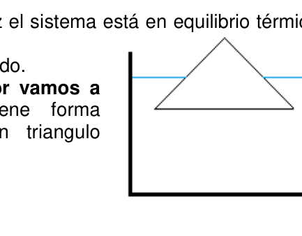
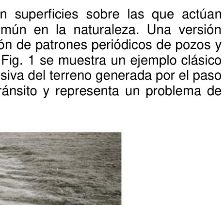
Topic: Fluid Mechanics Metodi: Graph Linearization, Physical Modeling Competenze: Physical Reasoning, Mathematical Modeling Objects: Tube Fonte: Testo (PDF) — p.3
Fluido con dipendenza
PT106. Alberto Einstein School of Technical Education
Colegio San Alfonso - Colegio San Pablo - Colegio San Marcos
Colegio Victorino de la Plaza - Bachillerato Humanista Moderno
Istituto di media educazione Dr. Arturo Oñativia
Colegio Madre Maria Sara Lona - Istituto di istruzione integrale
Colegio Belgrano - Colegio 5095 - Colegio Juan Manuel Estrada
Colegio Martina Silva di Burruchaga - Colegio Joaquín Castellano
Colegio Arturo Illia
Città di Salta.
Un fisico, mentre studiava diversi tipi di fluidi, ha scoperto che uno di questi I suoi oggetti di studio presentavano una forte dipendenza dalla densità con la temperatura. I dati sperimentali hanno rilevato che la dipendenza della densità in il grado 0 - 2500 °C è dato da una relazione come indicata nella figura. a) Aiuta il fisico a trovare il valore dei parametri a, b e c nella equazione della forma ρ= aT 2+ bT + c , a partire dai seguenti dati
- I risultati sono stati
Datati: Per T=0°C, ρ=1 g/cm3 Per T=30°C, ρ=5/4 g/cm3 Per T=60°C ρ=2 g/cm3 b) Fornisce un’interpretazione fisica di ciascun parametro ottenuto. Che cosa accadrebbe se metessimo nell’equazione del precedente inciso un valore? di temperatura fuori dal limite consentito? 2) Il fluido in studio viene inserito in un pesce di bordo L. Il fluido, a una La temperatura 0° occupa metà della piscia. Il prodotto della massa è il calore specifico del pesce. che chiameremo K. Il calore specifico del liquido è Cl a) Qual è la temperatura e il volume finale del sistema di riscaldamento fluido? se il riscaldatore è a una temperatura iniziale di 40°C? Supponiamo in linea di principio che: Il riscaldatore non è acceso e una volta che il sistema è in equilibrio termico il riscaldatore viene rimosso dal peschereccio. Si chiede di determinare il volume finale del liquido. 2- Contrariamente alla situazione precedente, Supponiamo Ora che el caldaio Ha un’altra. forma prismatica, il cui volto triangolare è un triangolo
- Equilibrato.
OAF 2014 - 109 b) Trovare la densità del liquido in modo tale che il riscaldatore fluttue a metà La temperatura del caldo è superiore a quella del caldo. come un corpo omogeneo di densità ρo . c) A che temperatura deve essere elevata la miscela per raggiungere la densità La Commissione ha adottato una decisione che prevede che il regolamento (CE) n. d) Trovare la quantità di energia ceduta al sistema necessaria per riportarlo al valore di ρ ottenuto nel punto precedente. - Non c’è stato un’uscita? • considerare il peso di un pesce superiore a 2−√(3)/6) e) A che temperatura il liquido occuperebbe l’intero pesce?
Topic: Fluid Mechanics Metodi: Graph Linearization, Physical Modeling Competenze: Physical Reasoning, Mathematical Modeling Objects: Tube Fonte: Testo (PDF) — p.3
Fluid with dependency
PT106. Albert Einstein School of Technical Education
The school is located in the city of San Alfonso, in the municipality of San Pablo, in the city of San Marcos.
Victorino de la Plaza College - Modern Humanist degree
The Institute of Middle Education Dr. Arturo Oñativia is a very good guy.
Mother Maria Sara Lona College - Institute of Integral Education
The following is a list of the schools in the Netherlands:
The school is a private school.
Arturo Illia College
Salt City.
A physicist, while researching different types of fluids, found that one of the most The study subjects had a strong dependence on density with the The temperature. Experimental data showed that the density dependence in the the range 0 - 2500 °C is given by a ratio as shown in Figure 1. (a) Help the physicist find the value of parameters a, b and c in the equation of the form ρ= aT 2+ bT + c , from the following data The Commission will examine the results of the evaluation.
The data: For T=0°C, ρ=1 g/cm3 For T=30°C, ρ=5/4 g/cm3 For T=60°C ρ=2 g/cm3 (b) Give a physical interpretation of each of the parameters obtained. What would happen if we put a value in the equation of the previous indent? of temperature outside the permitted range? 2) The study fluid is placed in a fish L-blade. The fluid, to a The temperature of 0° occupies half of the fish tank. The product of the mass is known by its specific heat to the We’ll call it K. The specific heat of the liquid is Cl (a) What is the temperature and final volume of the fluid-heating system if the heater is at an initial temperature of 40°C? We shall assume in principle that: The heater is not on and once the system is in thermal equilibrium the fish tank heater is removed. The final volume of the liquid is asked to be determined. 2- Unlike the previous situation we are going to I suppose . Now . That el Heater He has . shape prismatic, whose triangular face is a triangle The equilateral.
The following is the list of the countries of the European Union: (b) Find the density of the liquid such that the heater floats halfway The heating prism is the heating prism. as a homogeneous body of ρo density . (c) What temperature must the mixture be raised to reach density the requirement that the above happens? (d) Find the amount of energy allocated to the system needed to to the value of ρ obtained in the previous paragraph. Is there anything going to spill? The amount of liquid in the fish? (~===================================================================================================================================================================================================================================================================================================================================================================================================================================================================================================================== (e) At what temperature would the fluid occupy the entire fish tank?
Topic: Fluid Mechanics Metodi: Graph Linearization, Physical Modeling Competenze: Physical Reasoning, Mathematical Modeling Objects: Tube Fonte: Testo (PDF) — p.3
Patrones ondulatorios
PT107. Escuela de Educación Técnica Alberto Einstein
Colegio San Alfonso - Colegio San Pablo - Colegio San Marcos
Colegio Victorino de la Plaza - Bachillerato Humanista Moderno
Instituto de Educación Media Dr. Arturo Oñativia
Colegio Madre María Sara Lona - Instituto de Educación Integral
Colegio Belgrano - Colegio 5095 - Colegio Juan Manuel Estrada
Colegio Martina Silva de Burruchaga - Colegio Joaquín Castellano
Colegio Arturo Illia
Ciudad de Salta.
La formación de patrones ondulatorios en superficies sobre las que actúan fuerzas perturbativas es un fenómeno común en la naturaleza. Una versión cotidiana de este fenómeno, es la producción de patrones periódicos de pozos y montículos en calles de ripio o tierra, en la Fig. 1 se muestra un ejemplo clásico de estos patrones. Esta deformación progresiva del terreno generada por el paso de vehículos dificulta en gran medida el tránsito y representa un problema de interés para muchas áreas de la ingeniería.
La robustez del fenómeno hace posible usar configuraciones experimentales
muy simplificadas para estudiar los principios básicos que dominan la física del
fenómeno. Además, los patrones aparecen a pesar de los factores de escala.
Para estudiar esta temática, dos alumnos del grupo de Olimpiadas presentaron
un modelo sencillo.
En la Fig. 2 se muestra un esquema del dispositivo utilizado en el estudio del
fenómeno. El mismo está compuesto de un contenedor cilíndrico relleno con
arena gruesa. En la posición del eje del contenedor se ubica una varilla giratoria
solidaria a un sistema de engranajes y poleas, que es accionada por un motor
eléctrico. De este modo, la velocidad de rotación de la varilla puede controlarse.
OAF 2014 - 110
Perpendicular a la varilla y fijo a la
misma, se encuentra un brazo rígido
que
al
girar
desplaza
en
una
trayectoria circular una rueda. A su
vez el soporte puede pivotear sobre
un punto fijo en el brazo, lo que
permite a la rueda moverse libremente
en dirección vertical.
De esta manera al girar, la rueda y su
soporte generan sobre la arena un
patrón de pozos y montículos, que
emula la deformación sufrida por rutas
y calles de tierra tras el paso de
muchos vehículos.
En la Fig. 4 se muestra un diagrama
detallado del patrón creado por la
rueda sobre la arena. Para definir la
forma del mismo, se determinó la
posición angular de cada uno de los
máximos
y
mínimos
en
la
circunferencia y sus correspondientes
alturas respecto de la base del cilindro
contenedor (4).
Otra variable de interés para el
posterior
modelado
del
comportamiento del sistema es la
pendiente con la cual la rueda despega
del máximo para luego caer en el
mínimo
siguiente.
Para
medir
la
pendiente se usaron dos métodos
distintos. En una primera aproximación
esta pendiente puede suponerse igual
a la tangente del ángulo indicado en la
Fig. 4.
- Dibuje el diagrama de cuerpo
libre de la partícula durante el
vuelo, considerando el roza-
miento con el aire únicamente
en la dirección vertical (coefi-
ciente u). Separe en dos
ecuaciones, una para cada
dimensión del movimiento X
e Y. - Considere u=0, determine la evolución temporal de las coordenadas x(t) e y(t). Luego, indique cual es la ecuación de la trayectoria y=y(x).
- Determine el valor λa como función de v, h, tgθ
- Ahora consideremos, el caso con rozamiento. La resolución de este tipo
de problemas, es bastante complicada para un niño de su edad pues
faltan aprender muchas cosas. Pero, tratemos por un camino más
interesante:
a) Primero, resuelve el siguiente ejercicio matemático.
Sea la sucesión an= α+ γ.a(n−1) , con a0= Vo . Es decir, los números
a1= α+ γ. A0= α+ γ.V 0
a2= α+ γ. A1
OAF 2014 - 111
a3= α+ γ. A2…
Trata de escribir an como función de ao. Tienes que llegar a:
an= α∗(1– γn)/(1 – γ)+ γn.a0
Ayuda:
1 + γ + γ^2 + γ^3 + …. + γ^(n-1) = (1 – γ ^ n) / (1 – γ)
b) Ahora continuemos, con nuestro problema. Si no te salió, el inciso
anterior no te sientas mal!. Podemos continuar, usando la respuesta.
Vuelva a escribir la ecuación de movimiento para Y. Defina
aceleración media y explique porque no es lo mismo que la
aceleración instantánea.
c) Use la definición de aceleración media para la ecuación de
movimiento, y despeje la velocidad final en un tiempo t + dt como
función de la velocidad en tiempo t.
d) En base a la ecuación obtenida (c), particularice para t=(n-1)dt y
obtenga que:
v(ndt) = -g * dt – (u*dt + 1) * v((n-1)dt)
e) Ahora, use el inciso 4a). Identifique quienes juegan el papel de alfa y
gamma para calcular
v(ndt) como función V o
f) Reemplace ahora, dt = T/n en el inciso e) y tome n muy grande! Use
la ayuda:
(1-uT/n)^n ---> exp(-uT) para n muy grande.
Escriba finalmente, la ecuación de v(t). Haga un grafico indicativo de la
función.
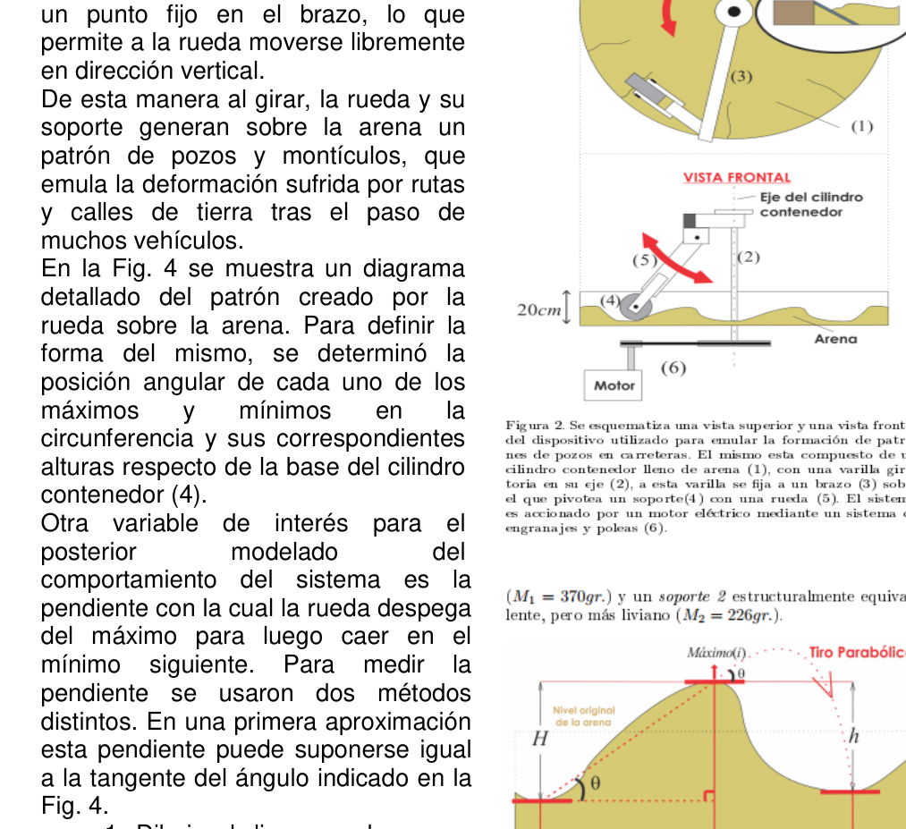
Topic: Oscillations & Waves Metodi: Wave Equation, Physical Modeling Competenze: Physical Reasoning, Mathematical Modeling Objects: Membrane Fonte: Testo (PDF) — p.3
Patroni ondulativi
PT107. Alberto Einstein School of Technical Education
Colegio San Alfonso - Colegio San Pablo - Colegio San Marcos
Colegio Victorino de la Plaza - Bachillerato Humanista Moderno
Istituto di media educazione Dr. Arturo Oñativia
Colegio Madre Maria Sara Lona - Istituto di istruzione integrale
Colegio Belgrano - Colegio 5095 - Colegio Juan Manuel Estrada
Colegio Martina Silva di Burruchaga - Colegio Joaquín Castellano
Colegio Arturo Illia
Città di Salta.
La formazione di schemi ondulatori su superfici su cui operano Le forze perturbatrici sono un fenomeno comune nella natura. Una versione La produzione di stagni periodici di pozzi e di stagni di stagni di stagni di stagni di stagni di stagni di stagni di stagni di stagni di stagni di stagni di stagni di stagni di stagni di stagni di stagni di stagni di stagni di stagni di stagni di stagni di stagni di stagni di stagni di stagni di stagni di stagni di stagni di stagni di stagni di stagni di stagni di stagni di stagni di stagni di stagni di stagni di stagni di stagni di stagni di stagni di stagni di stagni di stagni di stagni di stagni di stagni di stagni di stagni di stagni di stagni di stagni di stagni di stagni di stagni di stagni di stagni di stagni di stagni di stagni di stagni di stagni di stagni di stagni di stagni di stagni di stagni di stagni di stagni di stagni di stagni di stagni di stagni di stagni di stagni di stagni di stagni di stagni di stagni di stagni di stagni di stagni di stagni di stagni di stagni di stagni di stagni di stagni di stagni di stagni di stagni di stagni di stagni di stagni di stagni di stagni di stagni di stagni di stagni di stagni di stagni di stagni di stagni di stagni di stagni di stagni di stagi di stagi di stagi di stagi di stagi di stagi di stagi di stagi di stagi di stagi di stagi di stagi di stagi di stagi. montoni in strade di ripio o terra, in Fig. 1 mostra un esempio classico di questi modelli. Questa progressiva deformazione del terreno generata dal passaggio La disoccupazione è un problema di grande importanza per i veicoli. interessato a molti settori dell’ingegneria.
La robustezza del fenomeno rende possibile l’utilizzo di configurazioni sperimentali Le basi di questo studio sono molto semplificate per studiare i principi di base che dominano la fisica del fenomeno. Inoltre, i modelli si presentano nonostante i fattori di scala. Per studiare questo tema, due studenti del gruppo Olimpiadi hanno presentato Un modello semplice.
- La Fig. 2 è mostrato uno schema del dispositivo utilizzato nello studio di fenomeno. Il contenitore è costituito da un contenitore cilindrico riempito di sabbia grossa. Nella posizione dell’asse del contenitore si trova una canna rotante Un sistema di ingranaggi e polea che è propulso da un motore elettrico. In questo modo la velocità di rotazione del bastone può essere controllata.
OAF 2014 - 110 Perpendicolare alla verga e fissa alla La stessa, si trova un braccio rigido che al girare
- spostare en Una . traccia circolare di una ruota. A su Una volta che il supporto può piovare su Un punto fisso sull’armo, che permette alla ruota di muoversi liberamente in direzione verticale. In questo modo, girando, la ruota e il suo Supporto generare sulla sabbia un modello di pozzi e montoni, che Imita la deformazione dei percorsi e strade di terra dopo il passaggio di un sacco di veicoli.
- La Fig. 4 viene mostrato un diagramma Dettaglio del modello creato dalla ruota sulla sabbia. Per definire la La forma stessa, è stata determinata. posición angular de cada uno de los massimi y Minime en la Circumferenza e i suoi corrispondenti Altezze rispetto alla base del cilindro contenitore (4). Un’altra variabile di interesse per il ulteriore modellato di cui al Il comportamento del sistema è il la pendenza con cui la ruota parte di più per poi cadere nel minimo
- E’ il prossimo. Per Misurare la Due metodi sono stati utilizzati. diversi. In un primo approccio Questa pendenza può essere considerata uguale. a tangente dell’angolo indicato in Fig. 4.
- Disegna il diagramma del corpo. libero dalla particella durante il
- Il volo, considerando il rosa- Mi mento solo con l’aria. In direzione verticale (coefficienza di
- il numero di persone che sono presenti Separate in due equazioni, una per ciascuna dimensione del movimento X e Y.
- Considera u=0, determinare l’evoluzione temporale delle coordinate x(t) e y(t). Quindi, indicare qual è l’equazione di percorso y=y(x).
- Determina il valore λa come funzione di v, h, tgθ
- Ora consideriamo il caso con il rasoio. La risoluzione di questo tipo
Di problemi, è piuttosto complicato per un bambino della sua età perché
Non imparano molte cose. Ma, proviamo ad andare oltre.
Interessante:
a) Prima, risolvi il seguente esercizio matematico.
Se la successione an = α+ γ.a(n−1) , con a0 = Vo . Cioè, i numeri.
a1= α+ γ. A0= α+ γ.V 0
a2= α+ γ. A1
OAF 2014 - 111
a3= α+ γ. A2…
Cerca di scrivere an come funzione di ao. Devi arrivare a:
an= α∗(1– γn)/(1 – γ)+ γn.a0
Aiuto:
1 + γ + γ^2 + γ^3 + …. + γ^(n-1) = (1 – γ ^ n) / (1 – γ)
b) Ora continuiamo con il nostro problema. Se non ti è successo, l’incisione
Non ti senti male! Possiamo continuare, usando l’ risposta.
Scrivi di nuovo l’equazione di movimento per Y. Definisci
Accelerazione media e spiega perché non è la stessa cosa
Accelerazione istantanea.
c) Usa la definizione di accelerazione media per l’equazione di
movimento, e chiarire la velocità finale in un tempo t + dt come
funzione della velocità in tempo t.
d) Sulla base dell’equazione ottenuta (c), particularice per t=(n-1)dt e
ottenere che:
V. L’esercizio di un’attività di gestione e di gestione del mercato (cfr.
e) Ora, utilizzare il punto 4a). Identifica chi svolge il ruolo di alfa e
gamma per calcolare
v(ndt) come funzione V o
f) Rimpiazzate ora dt = T/n nel punto e) e prendete n molto grande! Usate
l’aiuto:
(1-uT/n) ^n ---> exp(-uT) per n molto grande.
Scrivi infine l’equazione di v(t). Fate un grafico indicativo della
funzione.
Topic: Oscillations & Waves Metodi: Wave Equation, Physical Modeling Competenze: Physical Reasoning, Mathematical Modeling Objects: Membrane Fonte: Testo (PDF) — p.3
The following table shows the results of the calculations:
PT107. Albert Einstein School of Technical Education
The school is located in the city of San Alfonso, in the municipality of San Pablo, in the municipality of San Marcos.
Victorino de la Plaza College - Modern Humanist degree
The Institute of Middle Education Dr. Arturo Oñativia is a great writer.
Mother Maria Sara Lona College - Institute of Integral Education
The following is the list of the schools in the Belgrano school system:
The school is a private school.
Arturo Illia College
Salt City.
The formation of corrugated patterns on the surfaces on which they act Disturbing forces are a common phenomenon in nature. A version of it . The main problem is the production of periodic patterns of wells and mounds on gravel or dirt streets, in Fig. 1 is a classic example of these patterns. This progressive deformation of the land generated by the passage The number of vehicles is very high and makes it difficult to get around. Interest in many areas of engineering.
The robustness of the phenomenon makes it possible to use experimental configurations The basic principles of the physics of the universe are very simplified to study the basic principles of the physical world. It’s a phenomenon. Furthermore, patterns appear despite the scale factors. To study this topic, two students from the Olympic group presented A simple model. In the Fig. 2 shows a diagram of the device used in the study It’s a phenomenon. It consists of a cylindrical container filled with thick sand. A rotating rod is placed in the position of the container axis. The engine is a single-cylinder engine. electrical. In this way, the speed of rotation of the rod can be controlled.
The following points shall be added: Perpendicular to the rod and fixed to the She’s got a stiff arm. That al Turn around It moves . en One . The rotation of a wheel. A su Once the support can pivot over A fixed point on the arm, which It allows the wheel to move freely. in a vertical direction. This way when you turn, the wheel and its They ‘re generating support over the sand . pattern of wells and mounds, which It emulates the deformation of routes And dirt streets after the passage of a lot of vehicles. In the Fig. 4 shows a diagram Detailed pattern created by the wheel on the sand. To define the The form of the same, the determination of the angle position of each of the The maximum y Minimum en la Circumference and its corresponding heights relative to the cylinder base container (4). Another variable of interest for the subsequent Modelled of the The system’s behavior is the The slope with which the wheel takes off From the top to the bottom. Minimum Next up. For measuring la The two methods were used. different. On a first approximation This slope can be assumed to be the same. to the tangent of the angle indicated in the Fig. 4.
- Draw the body diagram . Free of particles during the I’m not sure if I can get a flight. I lie with the air only. In the vertical direction (coefficient of the following points are added: Separate it in two. Equations, one for each dimension of the movement X e Y.
- Consider u=0, determine the temporal evolution of the coordinates x(t) e y(t). Then, state what the path equation y=y(x is.
- Determine λa as a function of v, h, tgθ
- Now let’s consider the case with the razor. The resolution of this kind
It’s pretty complicated for a kid his age because
There’s a lot you’re missing. But let’s try another way.
Interesting:
(a) First, solve the following mathematical exercise.
Let the sequence be an= α+ γ.a(n−1) , with a0= Vo . I mean, the numbers.
a1= α+ γ. A0= α+ γ.V 0
a2= α+ γ. A1
The following points shall be added:
a3= α+ γ. A2…
Try to write an as a function of ao. You have to get to:
an= α∗(1– γn)/(1 – γ)+ γn.a0
Help:
1 + γ + γ^2 + γ^3 + …. + γ^(n-1) = (1 – γ ^ n) / (1 – γ)
(b) Now let us proceed with our problem. If you didn’t make it, the incision.
Don’t feel bad about it! We can continue, using the answer.
Rewrite the equation of motion for Y. Define it .
The average acceleration and explain why it is not the same as the
The speed of the engine is instantaneous.
(c) Use the mean acceleration definition for the equation of
motion, and clear the final velocity at a time t + dt as
function of velocity in time t.
(d) Based on the equation (c), particularized for t=(n-1)dt and
obtain that:
The following table shows the results of the evaluation of the results of the evaluation:
(e) Now use subparagraph 4a). Identify who plays the role of alpha and
gamma to calculate
v(ndt) as a function V or
f) Replace now, dt = T/n in subparagraph e) and take n very large! Use it .
the aid:
(1-uT/n)^n ---> exp(-uT) for very large n.
Write finally, the equation of v(t). Make an indicative chart of the
function.
Topic: Oscillations & Waves Metodi: Wave Equation, Physical Modeling Competenze: Physical Reasoning, Mathematical Modeling Objects: Membrane Fonte: Testo (PDF) — p.3
Pendulo balistico con resorte
PT108. Escuela Industrial Superior
Ciudad de Santa Fe.
Un dispositivo como el que se muestra en la figura es utilizado en balística para determinar algunas características de los disparos de diferentes armas y municiones. Una bala de masa m se desplaza con una velocidad v y choca contra un bloque de madera de masa M que está unido a un resorte de constante elástica K. La bala penetra en el bloque y el conjunto madera-bala comprime el resorte una distancia x. Despreciar el rozamiento a) Analice y encuentre una expresión para la velocidad del conjunto madera-bala después del choque. b) Calcular x para los siguientes valores: m= 0.2 [kg] , M = 4 [kg], v=100 [m/s], K= 250 [N/m]. c) Encontrar una expresión de x en función de m,v,M y K. d) Explique con balances energéticos y cantidad de movimiento como encontraría la velocidad de una bala teniendo en cuenta el coeficiente de rozamiento y conociendo m, M, x, y K.
Topic: Conservation of Momentum, Conservation of Energy Metodi: Conservation of Momentum, Energy Conservation Method, Hooke’s Law Competenze: Physical Reasoning, Mathematical Modeling Objects: Block, Spring, Projectile Fonte: Testo (PDF) — p.3
Pendolo balistico a molla
PT108. Scuola superiore industriale
Città di Santa Fe.
Un dispositivo come quello mostrato in La figura è usata in balistica per determinare alcune caratteristiche dei colpi di fuoco di diversi tipi di armi e munizioni. Una pallottola di massa m si muove a velocità v e colpisce un blocco di legno di massa M che è legato ad una sorgente di costante K. La La pallottola penetra nel blocco e l’insieme legno- pallottola compresse la sorgente una Distanza x. Sprezzare il ruggine a) Analizzare e trovare un’espressione per la velocità del insieme Legno-ballata dopo l’impatto. b) Calcolare x per i seguenti valori: m= 0.2 [kg] , M = 4 [kg], v=100 [m/s], K= 250 [N/m]. c) Trovare un’espressione di x in funzione di m,v,M e K. d) Esplichi con bilanci energetici e quantità di movimento come
- Potrebbe trovare la velocità di una pallottola considerando il coefficiente. di rasatura e conoscendo m, M, x, e K.
Topic: Conservation of Momentum, Conservation of Energy Metodi: Conservation of Momentum, Energy Conservation Method, Hooke’s Law Competenze: Physical Reasoning, Mathematical Modeling Objects: Block, Spring, Projectile Fonte: Testo (PDF) — p.3
The ballistic pendulum with spring shall be:
PT108. Higher Industrial School
City of Santa Fe.
A device like the one shown in the Figure is used in ballistics to determine Some of the characteristics of the shooting of different weapons and ammunition. A m-mass bullet moves at v speed and hits a block. of wood of mass M which is attached to a spring of constant elastic K. La The bullet penetrates the block and the wood-bullet set compresses the spring one distance x. Disdain the grating . (a) Analyze and find an expression for the speed of the set Wood-bullet after the crash. (b) Calculate x for the following values: m= 0.2 [kg] , M = 4 [kg], v=100 [m/s], K= 250 [N/m]. c) Find an expression of x as a function of m,v,M and K. (d) Explain with energy balances and amount of movement as I would find the speed of a bullet by taking the coefficient into account. of friction and knowing m, M, x, and K.
Topic: Conservation of Momentum, Conservation of Energy Metodi: Conservation of Momentum, Energy Conservation Method, Hooke’s Law Competenze: Physical Reasoning, Mathematical Modeling Objects: Block, Spring, Projectile Fonte: Testo (PDF) — p.3
Bloques con soga y polea, equilibrio
PT109. Escuela Industrial Superior
Ciudad de Santa Fe.
Dada la siguiente figura los bloques de masa m1 y m2 están unidos por una soga y una polea ambos con peso despreciable, todo el sistema se encuentra en equilibrio estático.
OAF 2014 - 112 a) Encontrar una expresión para el coeficiente de rozamiento estático entre el bloque 1 y el plano inclinado en función de las masas y el ángulo φ.
b) Encontrar el valor del coeficiente de rozamiento estático para m2=0.
Topic: Rigid Body Statics Metodi: Free-Body Diagram, Vector Decomposition Competenze: Physical Reasoning, Mathematical Modeling Objects: Block, String, Pulley, Inclined Plane Fonte: Testo (PDF) — p.3
Blocchi con corda e polla, equilibrio
PT109. Scuola superiore industriale
Città di Santa Fe.
Dato che la figura seguente i blocchi di massa m1 e m2 sono uniti da una Cintura e polla entrambi di peso dispregiato, l’intero sistema si trova in equilibrio statico.
OAF 2014 - 112 a) Trovare Una . espressione per el Coefficiente di rottura statica tra il blocco 1 e il piano inclinato in funzione delle masse e angolo φ.
b) Trovare il valore del coefficiente di Raggiunta di un’ampia capacità di calcolo di velocità di velocità di velocità di velocità di velocità di velocità di velocità di velocità di velocità di velocità di velocità di velocità di velocità di velocità di velocità di velocità di velocità di velocità di velocità di velocità di velocità di velocità di velocità di velocità di velocità di velocità di velocità di velocità di velocità di velocità di velocità di velocità di velocità di velocità di velocità di velocità di velocità di velocità di velocità di velocità di velocità di velocità di velocità di velocità di velocità di velocità di velocità di velocità di velocità di velocità di velocità di velocità di velocità di velocità di velocità di velocità di velocità di velocità di velocità di velocità di velocità di velocità di velocità di velocità di velocità di velocità di velocità di velocità di velocità di velocità di velocità di velocità di velocità di velocità di velocità di velocità di velocità di velocità di velocità di velocità di velocità di velocità di velocità di velocità di velocità di velocità di velocità di velocità di velocità di velocità di velocità di velocità di velocità di velocità di velocità di velocità di velocità di velocità di velocità di velocità di velocità di velocità di velocità di velocità di velocità di velocità di velocità di velocità di velocità di velocità di velocità di velocità di velocità di velocità di velocità di velocità di velocità di velocità di velocità di velocità di velocità di velocità di velocità di velocità di velocità di velocità di velocità di velocità di velocità di velocità di velocità di velocità di velocità di velocità di velocità di velocità di velocità di velocità di velocità di velocità di velocità di velocità di velocità di velocità di velocità di velocità di velocità di velocità di velocità di velocità di velocità di velocità di velocità di velocità di velocità di velocità di velocità di velocità di velocità di velocità di velocità di velocità di velocità di velocità di velocità di velocità di
Topic: Rigid Body Statics Metodi: Free-Body Diagram, Vector Decomposition Competenze: Physical Reasoning, Mathematical Modeling Objects: Block, String, Pulley, Inclined Plane Fonte: Testo (PDF) — p.3
**Rope and pulley blocks, balance **
PT109. Higher Industrial School
City of Santa Fe.
Given the following figure, the mass blocks m1 and m2 are connected by a rope and a pulley both with despicable weight, the whole system is in the static equilibrium.
The following is the list of the countries of the European Union: a) Find them . One . The expression for el Static friction coefficient between Block 1 and the slope plane at The mass function and angle φ.
(b) Find the value of the coefficient of Static friction for m2 = 0.
Topic: Rigid Body Statics Metodi: Free-Body Diagram, Vector Decomposition Competenze: Physical Reasoning, Mathematical Modeling Objects: Block, String, Pulley, Inclined Plane Fonte: Testo (PDF) — p.3
Platino en calorimetro de cobre
PT110. Escuela Industrial Superior
Ciudad de Santa Fe.
Un bloque de platino de masa 60 [g] es retirado de un horno e inmediatamente
colocado en un calorímetro de cobre de masa igual a 100 [g] y que contiene 340
[g] de agua.
a) Calcular la temperatura del horno (suponiendo que no hay pérdidas en
el traslado hasta el calorímetro) sabiendo que la temperatura inicial del
agua era de 24 [°C] y que subió a 27 [°C], cuando se alcanzó el
equilibrio térmico. El calor específico del platino es de 0,035 [cal /g °C] y
el calor específico del cobre es de 0,1 [cal /g °C].
b) Suponiendo que el calorímetro se asemeja a un recipiente cilíndrico de
10 [cm]de diámetro exterior de base, 12 [cm] de altura total y 5 [mm] de
espesor de pared, calcular cuál es el volumen final del calorímetro al
agregarle el bloque de platino y llegar a la temperatura de equilibrio. ¿
Es determinante al momento de diseñar el calorímetro esta variación?
El coeficiente de dilatación lineal del cobre es α = 17. 10-6 [1/°C].
Topic: Thermodynamics Metodi: First Law of Thermodynamics Competenze: Physical Reasoning, Mathematical Modeling Objects: Calorimeter Fonte: Testo (PDF) — p.3
Platino in calorilitro di rame
PT110. Scuola superiore industriale
Città di Santa Fe.
Un blocco di platino di massa 60 [g] viene estratto da un forno e immediatamente collocato in un calometro di rame di massa pari a 100 [g] e contenente 340 [g] di acqua. a) Calcolare la temperatura del forno (suppone che non ci siano perdite in Il caloriometro è stato trasmesso al caloriometro (con l’idea che la temperatura iniziale del caloriometro è L’acqua era di 24 [°C] e che è salita a 27 [°C], quando è stato raggiunto il equilibrio termico. Il calore specifico del platino è di 0,035 [cal /g °C] e il calore specifico del rame è di 0,1 [cal /g °C]. b) Supponendo che il caloriometro assomigli a un recipiente cilindrico di 10 [cm] di diametro esterno di base, 12 [cm] di altezza totale e 5 [mm] di spessore della parete, calcolare il volume finale del calometro al aggiungere il blocco di platino e raggiungere la temperatura di equilibrio. ¿ È determinante quando si progetta il calometro questa variazione? Il coefficiente di dilatazione lineare del rame è α = 17. 10-6 [1/°C].
Topic: Thermodynamics Metodi: First Law of Thermodynamics Competenze: Physical Reasoning, Mathematical Modeling Objects: Calorimeter Fonte: Testo (PDF) — p.3
The following table shows the methodology used for calculating the value of the product:
PT110. Higher Industrial School
City of Santa Fe.
A block of platinum mass 60 [g] is removed from an oven and immediately a mass of not more than 300 g, [g] of water. (a) Calculate the oven temperature (assuming no losses in The temperature of the heat meter is the temperature of the heat meter. water was 24 [°C] and it rose to 27 [°C], when the The heat balance. The specific heat of platinum is 0,035 [cal /g °C] and The specific heat of copper is 0,1 [cal /g °C]. (b) Assuming that the calorimeter resembles a cylindrical container of 10 [cm] of base outer diameter, 12 [cm] of total height and 5 [mm] of wall thickness, calculating the final volume of the calorimeter at Add the platinum block and get to the equilibrium temperature. ¿ Is this variation decisive when designing the calorimeter? The coefficient of linear dilation of copper is α = 17. 10-6 [1/°C].
Topic: Thermodynamics Metodi: First Law of Thermodynamics Competenze: Physical Reasoning, Mathematical Modeling Objects: Calorimeter Fonte: Testo (PDF) — p.3
Sistema esfera-resorte, oscilacion
PT111. Instituto Industrial Luis A. Huergo
Ciudad de Buenos Aires.
Se dispone de un sistema como el de la figura (ver figura 1) a) ¿Cuál es el ángulo en el cual el sistema esta en equilibrio? Se desplaza el objeto un ángulo de 10º más con respecto al punto de equilibrio y se lo suelta. b) Demostrar que el objeto no se despega de la superficie en ningún punto de la trayectoria. c) ¿Cuál será el período de oscilación del sistema? d) Escribir la ecuación horaria del objeto. Datos: Masa de la esfera M = 1kg; Constante de equilibrio del resorte K = 100N/m; Longitud natural del resorte L0 = 1,2m; Longitud del tramo l = 1m; Radio r = 1m. Ayuda: Recuerde que para ángulos pequeños se cumplen las siguientes aproximaciones: Senθ = θ; Cosθ = 1 – θ2/2
Topic: Oscillations & Waves Metodi: Simple Harmonic Motion Analysis, Hooke’s Law Competenze: Physical Reasoning, Mathematical Modeling Objects: Sphere, Spring Fonte: Testo (PDF) — p.3
Sistema sfera-risorsa, oscillazione
PT111. Istituto industriale Luis A. - Hoorgo
Città di Buenos Aires.
Si dispone di un sistema simile a quello riportato in figura (vedi figura 1) a) Qual è l’angolo in cui il sistema è in equilibrio? Si spostano gli oggetti ad un angolo di 10° di più con
- E’ il punto di equilibrio e lo lascia andare. b) Dimostra che l’oggetto non si spalanca di superficie in nessun punto della
- La traccia. (c) Qual è il periodo di oscillazione del sistema? d) Scrivere l’equazione oraria dell’oggetto. Dati: massa della sfera M = 1kg; costante di equilibrio della sorgente K = 100N/m; lunghezza naturale della sorgente L0 = 1,2m; Lunghezza del tratto l = 1 m; radio r = 1 m. Aiuto: Ricorda che per angoli piccoli si devono rispettare le seguenti condizioni Approximativi: Senθ = θ; Cosθ = 1 θ2/2
Topic: Oscillations & Waves Metodi: Simple Harmonic Motion Analysis, Hooke’s Law Competenze: Physical Reasoning, Mathematical Modeling Objects: Sphere, Spring Fonte: Testo (PDF) — p.3
The following shall be added to the list of the following:
PT111. The Spanish Ministry of Foreign Affairs I ‘m not .
City of Buenos Aires.
A system such as that in Figure 1 is available. (a) What is the angle at which the system is in equilibrium? The object is moved at an angle of 10° plus with You’re going to have to look at the equilibrium point and let it go. (b) Proving that the object does not detonate of the surface at any point in the The trajectory. (c) What will be the period of oscillation of the The system? (d) Write the time equation of the object. Data: Mass of the sphere M = 1kg; constant of The following shall be reported in the table: The length of the section l = 1m; Radio r = 1m. Help: Remember that for small angles the following are fulfilled The following is the list of the following:
Topic: Oscillations & Waves Metodi: Simple Harmonic Motion Analysis, Hooke’s Law Competenze: Physical Reasoning, Mathematical Modeling Objects: Sphere, Spring Fonte: Testo (PDF) — p.3
Cilindro vertical con piston, gas diatomico
PT112. Instituto Industrial Luis A. Huergo
Ciudad de Buenos Aires.
Se dispone de un cilindro vertical de sección s tapado por un pistón móvil de masa m, dentro del cual se encuentra 1 mol de gas ideal diatómico. El dispositivo es completamente adiabático. Si el sistema se encuentra a una temperatura de 25ºC:
OAF 2014 - 113 a) Hallar la altura del pistón en el equilibrio. Se desea calentar el gas del interior, para esto se probaron los siguientes métodos:
- Se apoya sobre el pistón un objeto de masa M=10 kg.
- Se coloca gradualmente arena sobre el pistón hasta completar una masa de 10 kg, de modo tal que el sistema se evolucione en una sucesión de puntos de equilibrio. b) Hallar la nueva altura de equilibrio para la situación 1 y la temperatura final del gas. c) Ídem para la situación 2. d) ¿En cual se obtuvo un mayor aumento de temperatura? Explique brevemente por qué. Observación: Recuerde que el sistema está expuesto a la presión atmosférica. Datos: s = 50cm2; m = 1kg; g =10m/s2; Patm = 1013 HPa; R=8,314 J/K.mol
Topic: Thermodynamics Metodi: Ideal Gas Law, First Law of Thermodynamics, Free-Body Diagram Competenze: Physical Reasoning, Mathematical Modeling Objects: Cylinder, Piston, Gas Fonte: Testo (PDF) — p.3
Cilindro verticale a pistone, gas diatomico
PT112. Istituto industriale Luis A. - Hoorgo
Città di Buenos Aires.
Dispone di un cilindro verticale di sezione s coperto da un pistone mobile di M, all’interno del quale si trova 1 mol di gas ideale diatomico. Il dispositivo è completamente adiabatico. Se il sistema si trova a una temperatura di 25ºC:
OAF 2014 - 113 a) Indicare l’altezza del pistone in equilibrio. Si desidera riscaldare il gas interno, per questo sono stati testati i seguenti metodi:
- Si appoggia sul pistone un oggetto di massa M=10 kg.
- Si colloca gradualmente la sabbia sul pistone fino a completare una 10 kg, in modo che il sistema si evolva in una successione di punti di equilibrio. b) Trovare la nuova altezza di equilibrio per la situazione 1 e la temperatura fine del gas. c) Andate per la situazione 2. d) In quale stato si è ottenuto un maggiore aumento di temperatura? Spiegate. brevemente perché. Nota: Ricorda che il sistema è esposto alla pressione atmosferica. Dati: s = 50cm2; m = 1kg; g = 10m/s2; Patm = 1013 HPa; R = 8,314 J/K.mol
Topic: Thermodynamics Metodi: Ideal Gas Law, First Law of Thermodynamics, Free-Body Diagram Competenze: Physical Reasoning, Mathematical Modeling Objects: Cylinder, Piston, Gas Fonte: Testo (PDF) — p.3
The following is the list of the components of the engine:
PT112. The Spanish Ministry of Foreign Affairs I ‘m not .
City of Buenos Aires.
A vertical s-section cylinder is provided, covered by a moving piston. mass m, within which is 1 mol of diatomic ideal gas. The device It’s completely adiabatic. If the system is at a temperature of 25ºC:
The following points shall be added: (a) Find the height of the piston in equilibrium. The gas inside is to be heated, for which the following tests were carried out: methods:
- An object of mass M=10 kg shall be rested on the piston.
- Sand is gradually placed on the piston until a complete The mass of the system is 10 kg, so that the system evolves into a sequence of equilibrium points. (b) Find the new equilibrium height for situation 1 and temperature The end of the gas. (c) Go for situation 2. (d) In which of the following countries was the greatest increase in temperature? Explain . briefly why. Note: Remember that the system is exposed to atmospheric pressure. The data are: s = 50cm2; m = 1kg; g = 10m/s2; Patm = 1013 HPa; R = 8,314 J/K.mol
Topic: Thermodynamics Metodi: Ideal Gas Law, First Law of Thermodynamics, Free-Body Diagram Competenze: Physical Reasoning, Mathematical Modeling Objects: Cylinder, Piston, Gas Fonte: Testo (PDF) — p.3
Fibra optica, reflexion total
PT113. Instituto Industrial Luis A. Huergo
Ciudad de Buenos Aires.
La fibra óptica es una hebra muy fina de un vidrio especial (o bien de material plástico adecuado) de alto índice de refracción (núcleo), cuyo diámetro no puede exceder los 125 μm, que se recubre con un material de índice de refracción menor que el del propio núcleo (recubrimiento) con el fin de retener la luz dentro de él, y, que a su vez se protege con una envoltura exterior de material plástico muy flexible (ver figura 2). Así, el funcionamiento de estas fibras está basado en el fenómeno de reflexión total sobre los rayos que, ingresando en un extremo, se reflejan sobre las paredes de separación entre el núcleo y el recubrimiento quedando así encapsulados hasta salir por el otro extremo, independientemente que la fibra siga o no una línea recta.
a) Demostrar que el ángulo del cono de aceptación αm que forman todos los rayos que ingresando en la fibra, como está indicado en la fig. 2, son reflejados totalmente en la superficie de separación entre el núcleo y su recubrimiento es:
Siendo n0, n1, y n2 los índices de refracción que corresponden al medio
exterior, al núcleo de la fibra óptica y a su recubrimiento,
respectivamente.
b) Como el cono de aceptación depende del índice que rodea a la fibra en
el extremo de entrada, suele emplearse una magnitud denominada
apertura numérica y que se define como:
A.N.= n0. senαm
Calcular la apertura numérica correspondiente a una fibra cuyo núcleo
tiene un índice de refracción de 1.66 y el correspondiente a su
recubrimiento es 1.4. Para estos valores, ¿cuál es el ángulo de
OAF 2014 - 114
aceptación si la luz proviene del aire (n=1)? ¿Y si proviene del agua
(n=4/3)?
c) ¿Qué rango de valores debería tener el índice de refracción del
recubrimiento de un núcleo cuyo índice es 1.66 para que todo rayo que
incida desde el aire quede atrapado dentro de la fibra?
Relaciones útiles:
sen2(α)+cos2(α)=1
sen(90º-α)=cos(α)
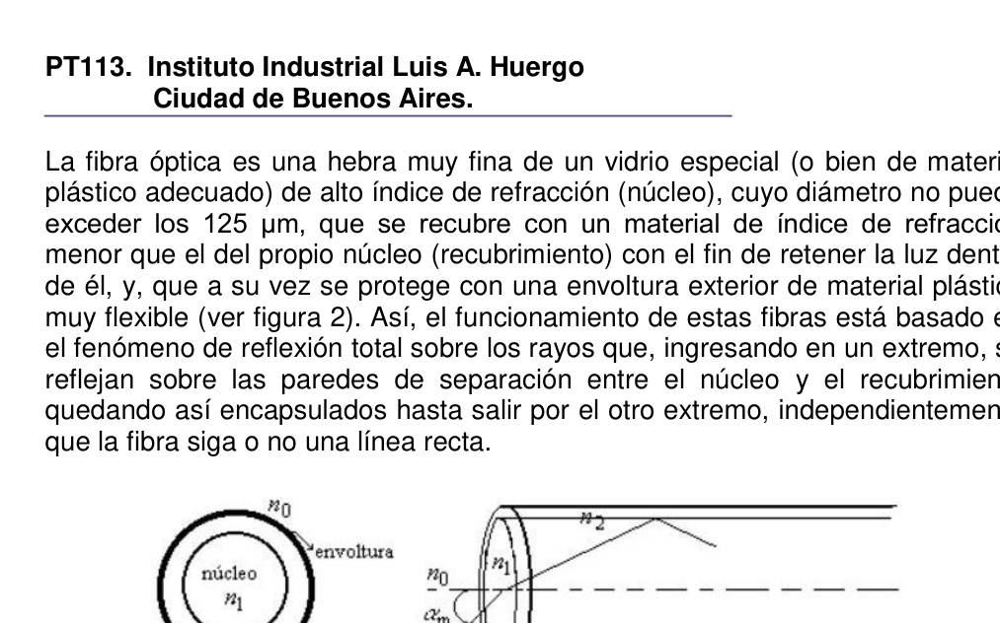
Topic: Geometric Optics Metodi: Snell’s Law, Ray Tracing Competenze: Physical Reasoning, Mathematical Modeling Objects: Tube Fonte: Testo (PDF) — p.3
Fibra ottica, riflessione totale
PT113. Istituto industriale Luis A. - Hoorgo
Città di Buenos Aires.
La fibra ottica è un filo molto sottile di un vetro speciale (o di un materiale) La struttura è costituita da un materiale di plastica adatta (plastico adatta) ad un elevato indice di refraczione (nucleo), il cui diametro non può di oltre 125 μm, rivestito di un materiale a tasso di refraczione inferiore a quella del nucleo stesso (coperta) per trattenere la luce all’interno di esso, e, a sua volta, si protegge con un involucro esterno di materiale plastico La struttura è molto flessibile (vedi figura 2). Quindi il funzionamento di queste fibre è basato su Il fenomeno di riflessione totale sui raggi che, entrando in un’estremità, si riflettono sui muri di separazione tra il nucleo e il rivestimento rimangendo così incapsulati fino a uscire dall’altra parte, indipendentemente che la fibra segua o meno una linea retta.
a) Dimostra che l’angolo del cono di accettazione αm che formano tutti i raggi che entrano nella fibra, come indicato nel Fig. 2, sono Le dimensioni di un nucleo sono completamente riflette sulla superficie di separazione tra il nucleo e il suo nucleo. il rivestimento è:
Se n0, n1 e n2 sono gli indici di refraczione corrispondenti al medio all’esterno, al nucleo della fibra ottica e al suo rivestimento, rispettivamente. b) Come il cono di accettazione dipende dall’indice che circonda la fibra in il lato di ingresso, di solito si usa una magnitudine denominata apertura numerico e che è definita come: A.N.= n0. Senàm Calcolare l’apertura numerica di una fibra il cui nucleo ha un indice di refraczione di 1.66 e il corrispondente di Il rivestimento è di 1.4. Per questi valori, qual è l’angolo di
OAF 2014 - 114 Accettazione se la luce proviene dall’aria (n=1)? E se venisse dall’acqua? (n=4/3)? (c) Che gamma di valori dovrebbe avere l’indice di refraczione del rivestimento di un nucleo il cui indice è di 1,66 per ogni raggio che l’incida dall’aria è intrappolata dentro la fibra? Relazioni utili: Sen2(α) +cos2(α) =1
- (s) (s) (s) (s) (s) (s) (s) (s) (s) (s) (s) (s) (s) (s) (s) (s) (s) (s) (s) (s) (s) (s) (s) (s) (s) (s) (s) (s) (s) (s) (s) (s) (s) (s) (s) (s) (s) (s) (s) (s) (s) (s) (s) (s) (s) (s) (s) (s) (s) (s) (s) (s) (s) (s) (s) (s) (s) (s) (s) (s) (s) (s) (s) (s) (s) (s) (s) (s) (s) (s) (s) (s) (s) (s) (s) (s) (s) (s) (s) (s) (s) (s) (s) (s) (s) (s) (s) (s) (s) (s) (s) (s)
Topic: Geometric Optics Metodi: Snell’s Law, Ray Tracing Competenze: Physical Reasoning, Mathematical Modeling Objects: Tube Fonte: Testo (PDF) — p.3
The following conditions shall apply:
PT113. The Spanish Ministry of Foreign Affairs I ‘m not .
City of Buenos Aires.
Optical fiber is a very fine thread of a special glass (or material) The manufacturer shall ensure that the product is of a high refractive index (nucleus) and that the diameter of the product is not too high. exceeding 125 μm, coated with a material with a refractive index smaller than the core itself (coating) in order to retain light inside of it, and, in turn, is protected by an outer plastic material envelope The Commission has also adopted a number of recommendations. So the functioning of these fibers is based on The phenomenon of total reflection on the rays which, entering one end, are They reflect on the core and coating separation walls. So they’re encapsulated until they’re out the other end, independently. whether or not the fiber follows a straight line.
(a) Demonstrate that the angle of the acceptance cone αm forming all The lightning beams are entering the fiber, as shown in Fig. 2, are The radiation is reflected completely on the separation surface between the core and its coating is:
If n0, n1, and n2 are the refractive indices corresponding to the mean the outer core of the optical fibre and its coating, the Commission. (b) As the acceptance cone depends on the index surrounding the fibre in the input end, a magnitude usually used a numerical aperture defined as: A.N.= n0. I ‘m not . Calculate the numerical aperture corresponding to a fiber whose core It has a refractive index of 1.66 and its corresponding refractive index of 1.66 and its corresponding refractive index of 1.66 and its corresponding refractive index of 1.66 and its corresponding refractive index of 1.66 and its corresponding refractive index of 1.66 and its corresponding refractive index of 1.66 and its corresponding refractive index of 1.66 and its corresponding refractive index of 1.66 and its corresponding refractive index of 1.66 and its corresponding refractive index of 1.66 and its corresponding refractive index of 1.66 and its corresponding refractive index of 1.66 and its corresponding refractive index of 1.66 and its corresponding refractive index of 1.66 and its corresponding refractive index of 1.66 and its corresponding refractive index of 1.66 respectively. The coating is 1.4. For these values, what is the angle of
The following is the list of the Member States’ financial statements: acceptance if the light comes from the air (n=1)? What if it comes from the water? (n=4/3)? (c) What range of values should the refractive index of the The coating of a core whose index is 1.66 so that every ray that Is the incidence from the air trapped inside the fiber? Useful relationships: The following is the list of the countries of the European Union: The following table shows the number of samples taken:
Topic: Geometric Optics Metodi: Snell’s Law, Ray Tracing Competenze: Physical Reasoning, Mathematical Modeling Objects: Tube Fonte: Testo (PDF) — p.3
Arquero, flecha y plataforma
PT114. Colegio San Jorge
Quilmes, Buenos Aires.
Un arquero dispara una flecha desde la altura de su pecho (1,5 metros
por encima del suelo) con una velocidad de 25 m/s y un ángulo de 30 ⁰
con la horizontal.
A 42 m del punto de lanzamiento, hay una plataforma de 10 metros de
altura que sostiene una pelota en lo más alto de la misma.
Considerando despreciables las interacciones con el aire, determinar:
a) el tiempo que tarda la flecha en alcanzar la plataforma.
b) la altura que tendrá la flecha (con respecto al suelo) en el
momento que pasa por la plataforma.
c) Diferencia de tiempo (respecto del lanzamiento de la flecha) con
que debe soltarse la pelota desde lo alto de la plataforma para
que impacte contra la flecha.
Topic: Newtonian Mechanics Metodi: Kinematic Equations, Vector Decomposition Competenze: Physical Reasoning, Mathematical Modeling Objects: Projectile Fonte: Testo (PDF) — p.3
Arco, freccia e piattaforma
PT114. - Scuola San Giorgio.
Quilmes, Buenos Aires.
Un arciere tira una freccia dal petto sopra il suolo) con una velocità di 25 m/s e un angolo di 30 0 con la linea orizzontale. A 42 metri dal punto di lancio, c’è una piattaforma di 10 metri di altezza che sostiene una palla al di sopra di essa. Considerando scarsa l’interazione con l’aria, determinare: a) il tempo necessario per raggiungere la piattaforma. b) l’altezza della freccia (rispetto al suolo) momento che passa attraverso la piattaforma. c) Differenza di tempo (rispetto al lancio dell’arcia) con che deve essere rilasciato dal pallone in alto per che colpisce l’arcia.
Topic: Newtonian Mechanics Metodi: Kinematic Equations, Vector Decomposition Competenze: Physical Reasoning, Mathematical Modeling Objects: Projectile Fonte: Testo (PDF) — p.3
Arrow, arrow and platform
PT114. St. George’s School
Quilmes, Buenos Aires is where I am.
An archer fires an arrow from the height of his chest. above ground) with a speed of 25 m/s and an angle of 30 0 with the horizontal. 42 m from the launch point, there’s a 10-meter platform of Height that holds a ball at its highest. Considering air interactions to be negligible, determine: (a) the time it takes the arrow to reach the platform. (b) the height of the arrow (with respect to the ground) at the moment passing through the platform. (c) Time difference (with respect to the arrow throw) with That the ball must be dropped from the top of the platform to It’s like a shot in the arrow.
Topic: Newtonian Mechanics Metodi: Kinematic Equations, Vector Decomposition Competenze: Physical Reasoning, Mathematical Modeling Objects: Projectile Fonte: Testo (PDF) — p.3
Bloque con friccion
PT115. Colegio San Jorge
Quilmes, Buenos Aires.
El coeficiente de fricción estática entre un bloque y un piso horizontal es de 0,35. Por otro lado, el coeficiente de fricción dinámico es de 0,22. La masa del bloque, inicialmente en reposo, es de 4,6 kg. a) ¿Cuál es la fuerza horizontal mínima que debe aplicarse para que el bloque comience a deslizarse? b) Una vez que el bloque comienza a deslizarse, si se continúa aplicando la misma fuerza, ¿cómo será el movimiento? c) Luego de 15 segundos, de aplicada la fuerza, determinar el trabajo realizado por la fuerza aplicada y la energía cinética final del bloque. d) Al dejar de aplicar la fuerza, el bloque se detiene. Determinar la distancia de frenado.
Topic: Newtonian Mechanics, Conservation of Energy Metodi: Free-Body Diagram, Kinematic Equations, Energy Conservation Method Competenze: Physical Reasoning, Mathematical Modeling Objects: Block Fonte: Testo (PDF) — p.3
Block con frizione
PT115. - Scuola San Giorgio.
Quilmes, Buenos Aires.
Il coefficiente di attrito statico tra un blocco e un pavimento orizzontale è de 0,35. D’altra parte, il coefficiente di attrito dinamico è di 0,22. La la massa del blocco, inizialmente a riposo, è di 4,6 kg. a) Qual è la forza orizzontale minima da applicare per Il blocco inizia a scivolare? b) Una volta che il blocco inizia a scivolare, se continua Applicando la stessa forza, come sarà il movimento? c) Dopo 15 secondi, se la forza è stata applicata, determinare il lavoro effettuato dalla forza applicata e dall’energia cinetica finale del blocco. d) Quando la forza viene interrotta, il blocco si ferma. Determinare la Distanza di frenata.
Topic: Newtonian Mechanics, Conservation of Energy Metodi: Free-Body Diagram, Kinematic Equations, Energy Conservation Method Competenze: Physical Reasoning, Mathematical Modeling Objects: Block Fonte: Testo (PDF) — p.3
The following is the list of the types of locks and locks that are included in the calculation of the locks and locks:
PT115. St. George’s School
Quilmes, Buenos Aires is where I am.
The static friction coefficient between a block and a horizontal floor is de 0,35. On the other hand, the dynamic friction coefficient is 0.22. La The mass of the block, initially at rest, is 4.6 kg. (a) What is the minimum horizontal force to be applied to The block starts to slip? (b) Once the block starts to slip, if it continues applying the same force, how will the motion be? (c) After 15 seconds, if force is applied, determine the Work performed by applied force and final kinetic energy The block. (d) When the force is stopped, the block is stopped. Determine the the braking distance.
Topic: Newtonian Mechanics, Conservation of Energy Metodi: Free-Body Diagram, Kinematic Equations, Energy Conservation Method Competenze: Physical Reasoning, Mathematical Modeling Objects: Block Fonte: Testo (PDF) — p.3
Calentador adiabatico, capacidad calorifica
PT116. Colegio San Jorge
Quilmes, Buenos Aires.
Un calentador de corriente continua se coloca en un recipiente adiabático con el fin de subir la temperatura del sistema desde la ambiente (20 ºC) hasta los 70 ºC. El recipiente es un cilindro de 30 cm de altura y 6 cm de diámetro. Su espesor es de 3 mm. El material de las tapas, así como el espesor, es el mismo que el del cuerpo. Teniendo en cuenta que su
OAF 2014 - 115
densidad es de 8,94 g.cm-3, y que por el calentador (conectado a una
diferencia de potencial de 12 v) circula una corriente de 0,800 A,
determinar la capacidad calorífica del material del cilindro.
Datos: dentro del recipiente hay 40 cm3 de agua.
Ce H2O = 4,181 J.g-1.ºC-1; d H2O = 1 g.cm-3.
OAF 2014 - 116
Instancias Locales Problemas Experimentales
OAF 2014 - 117
Topic: Thermodynamics, Circuits Metodi: First Law of Thermodynamics, Conservation of Energy Competenze: Physical Reasoning, Mathematical Modeling Objects: Calorimeter, Container, Resistor Fonte: Testo (PDF) — p.3
Calditore adiabatico, capacità calorifica
PT116. - Scuola San Giorgio.
Quilmes, Buenos Aires.
Un riscaldatore a corrente continua viene inserito in un recipiente adiabatico per aumentare la temperatura del sistema dall’ambiente (20 oC) fino a 70 oC. Il contenitore è un cilindro alto 30 cm e di 6 cm di altezza. diametro. Il suo spessore è di 3 mm. Il materiale delle tappe, così come il lo stesso di quello del corpo. Considerando che il suo
OAF 2014 - 115 La densità è di 8,94 g.cm-3, e che per il riscaldatore (connesso a una di 12 v) circola un corrente di 0,800 A, determinare la capacità calorifica del materiale del cilindro. Dati: all’interno del recipiente ci sono 40 cm3 di acqua. Ce H2O = 4,181 J.g-1.ºC-1; d H2O = 1 g.cm-3.
OAF 2014 - 116
I servizi locali Problemi sperimentali
OAF 2014 - 117
Topic: Thermodynamics, Circuits Metodi: First Law of Thermodynamics, Conservation of Energy Competenze: Physical Reasoning, Mathematical Modeling Objects: Calorimeter, Container, Resistor Fonte: Testo (PDF) — p.3
**Adiabatic heater, heating capacity **
PT116. St. George’s School
Quilmes, Buenos Aires is where I am.
A DC heater is placed in an adiabatic container to raise the temperature of the system from the ambient (20 oC) up to 70 °C. The container is a cylinder 30 cm high and 6 cm wide. diameter. Its thickness is 3 mm. The material of the lids as well as the thickness, it’s the same as the body. Given that their
The following is the list of the countries of the European Union: The density is 8.94 g.cm-3, and that by the heater (connected to a The power difference of 12 v) is a current of 0,800 A, determine the heat capacity of the cylinder material. Data: There is 40 cubic centimetres of water inside the container. Ce H2O = 4,181 J.g-1.ºC-1; d H2O = 1 g.cm-3.
The following points shall be added:
Local authorities Experimental problems
The following is the list of the Member States’ financial statements:
Topic: Thermodynamics, Circuits Metodi: First Law of Thermodynamics, Conservation of Energy Competenze: Physical Reasoning, Mathematical Modeling Objects: Calorimeter, Container, Resistor Fonte: Testo (PDF) — p.3
Determinacion de constante de resorte
PE1. Bachillerato Orientado Nro. 42 Ivonne Pierron Dos de Mayo, Misiones.
Determinación de la constante de elasticidad de un resorte Al colgar un cuerpo de un resorte, este recibe una fuerza que le provoca una deformación o alargamiento. El alargamiento está relacionado con el peso del cuerpo, pues para diferentes pesos el resorte experimenta distintos alargamientos. En cada caso la fuerza ejercida por el resorte toma un valor diferente, igual al peso del cuerpo que equilibra. Es decir, si el alargamiento del resorte es mayor, ejerce una fuerza mayor. Se observa experimentalmente en muchos resortes y en ciertos rangos de estiramientos, que la fuerza que ejercen, es proporcional a su alargamiento l l k P
donde k es una característica de cada resorte llamada constante de elasticidad P es el peso que soporta el resorte l la variación de longitud del resorte
Actividad:
Materiales disponibles:
Resorte
Soporte metálico para colgar el resorte
Tuercas para utilizar como pesas
Escuadra graduada en milímetros
Balanza digital
Cinta adhesiva blanca
Hojas de papel en blanco (se pueden pedir más)
Se pide
Determinar la constante de elasticidad del resorte entregado con los materiales provistos.
Procedimiento Experimental
- Cuelgue el resorte como indica la figura 1 (sin las tuercas) y marque con la cinta adhesiva de papel el extremo inferior del resote para tomarla como referencia.
- Cuelgue una tuerca del resorte y mida la variación de longitud del resorte l . Repita las mediciones variando la fuerza P (el peso) colgando distintas cantidades de tuercas.
- Grafique los valores medidos de P en función de l
- Determine el valor de la constante de elasticidad k y dé una estimación de su error.
OAF 2014 - 118
Topic: Elasticity & Materials, Oscillations & Waves Metodi: Hooke’s Law, Experimental Data Analysis, Graph Linearization Competenze: Physical Reasoning, Experimental Data Analysis Objects: Spring Fonte: Testo (PDF) — p.3
Determinazione della costante di resorgenza
PE1. Laurea orientata Nro. 42 Ivonne Pierron Due maggio, missioni.
Determinazione della costante di elasticità di una stagione Quando si appende un corpo da una stagno, essa riceve una forza che lo provoca una distorsione o allungamento. L’allungamento è correlato al peso del La primavera è un’esperienza diversa. allungamenti. In ogni caso la forza esercitata dalla primavera prende un valore diverso, pari al peso corporeo che equilibra. In altre parole, se l’allungamento del Primavera è maggiore, esercita una forza maggiore. Si osserva sperimentalmente in molte sorgenti e in certi ranghi di estensioni, che la forza che esercitano, è proporzionale al suo allungamento l l k P
dove k è una caratteristica di ogni primavera chiamata costante di elasticità P è il peso che la primavera sopporta l variazione della lunghezza della primavera
Attività: Materiali disponibili: Risorsa supporto metallico per appendere la primavera Torci per il peso Squadra graduata in millimetri Balance digitale Cintura adesiva bianca fogli di carta bianca (più richieste)
Si chiede
Determinare la costante di elasticità della sorgente consegnata con i materiali forniti.
Procedura sperimentale
- Spetta la molla come indica la figura 1 (senza noci) e taglia con la cinta adesiva di carta il estremo inferiore di cui al risorto per prendere come riferimento.
- Appendi un’aria di frutta e misura variazione della lunghezza della sorgente l . Ripeti le misurazioni variando la P (peso) appeso differenti quantità di noci.
- Grafica i valori misurati di P in funzione di l
- Determina il valore della costante di elasticità k e fa un’estimazione del suo errore.
OAF 2014 - 118
Topic: Elasticity & Materials, Oscillations & Waves Metodi: Hooke’s Law, Experimental Data Analysis, Graph Linearization Competenze: Physical Reasoning, Experimental Data Analysis Objects: Spring Fonte: Testo (PDF) — p.3
The value of the input data shall be the sum of the values of the input data.
PE1. Bachelor of Education with a focus on education. I ‘m not sure . May 2nd, missions.
Determination of the elasticity constant of a spring When you hang a body from a spring, it gets a force that causes it to fall. deformation or elongation. The length is related to the weight of the The body, for different weights the spring experiences different The following is the list of the following: In each case the force exerted by the spring takes a value different, equal to the weight of the body you balance. That is, if the extension of the spring is greater, exerts greater force. It is observed experimentally in many springs and in certain ranges of stretches, that the force they exert, is proportional to its length l l k P
where k is a characteristic of each spring called a constant of elasticity P is the weight of the spring. l the variation in spring length
Activity: Available materials: Results Metal support for hanging the spring Towls for use as weights Graduated squad in millimetres Digital balance sheet White adhesive tape White paper sheets (more may be requested)
It ‘s asked .
Determine the elasticity constant of the spring delivered with the materials provided.
Experimental procedure
- Hang the spring as indicated by the Figure 1 (without nuts) and mark with the paper adhesive tape the Extreme . Lower of the I ‘m going to resuscitate you . for Take it as a reference.
- Hang a nut from the spring and measure it . the variation in spring length l . Repeat the measurements by varying the force P (weight) hanging different quantities of nuts.
- Graph the measured values of P in function of l
- Determine the value of the elasticity constant k and give an estimate of his mistake.
The following is the list of the Member States’ financial statements:
Topic: Elasticity & Materials, Oscillations & Waves Metodi: Hooke’s Law, Experimental Data Analysis, Graph Linearization Competenze: Physical Reasoning, Experimental Data Analysis Objects: Spring Fonte: Testo (PDF) — p.3
Diametro de cabello por difraccion laser
PE2. Escuela Técnica ORT Nro. 2 Ciudad de Buenos Aires.
Determinación del Diámetro de un Pelo y de la Longitud de Onda de un Láser Objetivo: Un pelo de nuestra cabellera es lo suficientemente pequeño como para que su diámetro no sea medible con una regla. Sin embargo, propondremos un método por el cual se podrá calcular bastante bien sus dimensiones. Este pelo servirá como obstáculo a un haz de luz roja de un puntero láser. Las propiedades ondulatorias de la luz se manifestarán al ver el patrón de luz que se genera en una pantalla. Del patrón y del tamaño de nuestro pelo se propone calcular la longitud de onda del láser.
Lista de materiales: Un pelo Un puntero láser Cinta métrica Hoja milimetrada Marcador Cinta adhesiva
Comentarios:
- Antes de comenzar lea todas las instrucciones
- Escriba en tablas los datos obtenidos en las mediciones junto con sus errores.
- Aclare cualquier cambio respecto de las instrucciones, junto con una breve explicación de su motivo.
Introducción teórica:
La forma aproximada de un pelo es cilíndrica de diámetro d. Al rodar sobre una
superficie N vueltas, el pelo recorre una distancia de N..d. Entonces, sabiendo
el número de vueltas realizadas y su recorrido en la superficie, se puede calcular
su diámetro. Por otro lado, en cuanto al puntero láser, este emite un haz de luz
con un frente de ondas aproximadamente plano y coherente, a diferencia de la
luz del sol o de una bombita eléctrica.
Estas características permiten que las
propiedades ondulatorias de la luz se
manifiesten
más
fácilmente
en
un
experimento. El fenómeno que ocurre al
colocar un obstáculo pequeño en el camino
de un haz de luz a una pantalla se llama
difracción. La luz que pasa a un lado y
otro del pelo, se superpone en la pantalla y
genera un patrón de luz y sombra como se
puede apreciar en la Figura 1: arriba se ve
esquema de intensidades de luz y debajo
se muestra lo que se ve en la pantalla. La
posición de los mínimos del patrón, o
zonas sin luz,
aparecen con una separación i=D/d con
respecto al centro, donde está la máxima
intensidad; con D la distancia entre láser y
pantalla, y la longitud de onda del láser.
Figura 1 Esquema del patrón de difracción generado en una pantalla a partir de un láser y un pelo
OAF 2014 - 119 Parte 1: El pelo
- Coloque un pelo entre sus dedos y gírelo, desplazando un dedo con respecto al otro. Si lo hizo bien notará que una de las puntas libres del pelo rota como las aspas de un ventilador. Este movimiento perceptible a la vista le permitirá contar el número de vueltas que rueda sobre sus dedos.
- Dibuje en su dedo con un marcador marcas para el punto de inicio y fin de giro del pelo. Mida esa distancia y a partir de esta y el número de giros calcule d.
- Repita 1) y 2) unas 10 veces como mínimo y realice estadística de las mediciones.
Parte 2: El láser
- Ilumine la hoja milimetrada con el puntero láser y coloque el pelo en el orificio de salida del haz de luz interrumpiendo su paso. Notará que tuvo éxito si ve un patrón como el de la Figura 1. Péguelo con cinta adhesiva para fijarlo.
- Para al menos 8 distancias distintas entre el láser y la pantalla, siendo el mínimo 80cm, mida la separación entre mínimos del patrón o zonas oscuras. Decida hasta qué distancia va a medir para mejorar la precisión de la medición
- Grafique en hoja milimetrada la relación i vs D. Realice un ajuste adecuado con sus datos experimentales y calculedel láser rojo.
Parte 3: Confección de un informe
Escriba un informe de la experiencia realizada que posea la siguiente
información:
Descripción del dispositivo experimental (texto y dibujo)
Detalles acerca de cómo se realizaron las mediciones (texto y dibujo)
Mediciones / Tablas
Gráficos (en hoja milimetrada)
Cálculos
Cálculos de errores
Resultados obtenidos
Conclusiones
Y cualquier información que considere relevante
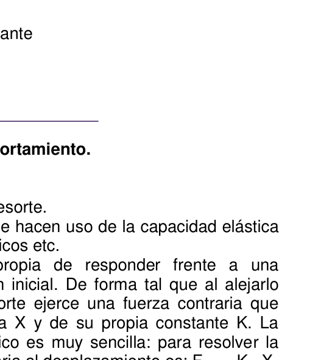
Topic: Wave Optics Metodi: Interference & Diffraction Analysis, Experimental Data Analysis Competenze: Physical Reasoning, Experimental Data Analysis Objects: Screen, Slit Fonte: Testo (PDF) — p.3
Diametro di capelli per diffrazione laser
PE2. Scuola tecnica ORT Nro. 2 Città di Buenos Aires.
Determinazione del diametro di un capello e della lunghezza d’onda di un Laser Obiettivo: Un capello del nostro capello è abbastanza piccolo da per non essere misurable con una regola. Tuttavia, Proponiamo un metodo per calcolare abbastanza bene i loro valori. dimensioni. Questo capello servirà come ostacolo a un raggio di luce rossa di un puntatore laser. Le proprietà ondulatrici della luce si manifestano vedendo il un modello di luce generato da uno schermo. Il nostro padrone e il nostro taglio. Il progetto di ricerca si propone di calcolare la lunghezza d’onda del laser.
Lista dei materiali:
- Un capello. Un puntatore laser Cintura metrica foglio di millimetro Marcatore Cintura adesiva
Commenti:
- Prima di iniziare, leggi tutte le istruzioni
- Scrivi in tavola i dati ottenuti dalle misurazioni insieme ai dati ottenuti. errori.
- Acclarare qualsiasi modifica delle istruzioni, con un’indicazione breve spiegazione del suo motivo.
Introduzione teorica: La forma approssimativa di un capello è cilindrica di diametro d. Rollando su una superficie N giri, il pelo percorre una distanza da N..d. Allora, sapendo il numero di giri effettuati e il loro percorso sulla superficie, può essere calcolato il suo diametro. D’altra parte, per quanto riguarda il puntatore laser, questo emette un fascio di luce. con un fronte d’onda approssimativamente piano e coerente, a differenza della la luce del sole o una piccola lampadina elettrica. Queste caratteristiche consentono di Proprietà ondulatrici della luce si manifestare Più
- Facile. en un l’esperimento. Il fenomeno che si verifica al Mettete un piccolo ostacolo in mezzo. Da un raggio di luce a uno schermo si chiama diffrazione. La luce che passa da un lato e Un altro di capelli, si sovrappone sullo schermo e genera un modello di luce e ombra come si fa. La figura 1 è la seguente: schema di intensità luminosa e sotto si mostra ciò che si vede sullo schermo. La la posizione dei minimi del modello, o zone prive di luce, si trovano con una separazione i=D/d con rispetto al centro, dove è la massima intensità; con D la distanza tra laser e Il monitor, e la lunghezza d’onda del laser.
Figura 1 Schema del modello di diffrazione generata in una schermo a partire da un laser e un Capelli
OAF 2014 - 119 Parte 1: I capelli
- Mettere un capello tra le dita e girarlo, spostando un dito con rispetto all’altro. Se l’ha fatto bene noterà che una delle puntate libere del Capelli rotti come le spalle di un ventilatore. Questo movimento visibile a vista ti permetterà di contare il numero di giri che ruota su di te
- le dita.
- Disegna sul dito con un marcatore di marcature per il punto di partenza e fine di giro di capelli. Misura quella distanza e da questa e il numero di
- Calcola i giri d.
- Ripetere 1) e 2) almeno 10 volte e fare statistiche delle misurazioni.
Parte 2: Il laser
- illuminate la foglia a millimetro con il puntatore laser e mettete i capelli sullo stampo. il buco di uscita del fascio di luce interrompe il suo passaggio. Noterà che ha avuto Successo se vede un modello come quello di Figura 1. Lo colgi con la cinta adesiva. per fissarlo.
- Per almeno 8 distanze differenti tra il laser e lo schermo, essendo il minimo 80 cm, misura la separazione tra minimi del modello o zone oscuri. Decidi fino a che distanza misuraresti per migliorare la tua capacità di raggiungimento. Precisione della misurazione
- Graficare in foglio millimetrico il rapporto i vs D. Fate un aggiustamento. La Commissione ha adottato una decisione che prevede che il sistema di controllo dei dati di cui all’articolo 1 del regolamento (CE) n.
Parte 3: Preparare un rapporto Scrivi un rapporto sull’esperienza che hai avuto: Informazioni: Descrizione del dispositivo sperimentale (testo e disegno) Dettagli su come le misure sono state effettuate (testo e disegno) Misure / tabelle Grafiche (in foglio in millimetri) Calcoli Calcoli errori Risultati ottenuti Conclusioni E qualsiasi informazione che ritenga rilevante
Topic: Wave Optics Metodi: Interference & Diffraction Analysis, Experimental Data Analysis Competenze: Physical Reasoning, Experimental Data Analysis Objects: Screen, Slit Fonte: Testo (PDF) — p.3
Laser diffraction hair diameter
PE2. The technical school ORT Nro. 2 City of Buenos Aires.
Determination of the diameter of a hair and the wavelength of a hair Laser . Aim: One hair on our hair is small enough to fit so that its diameter is not measurable with a rule. However, We will propose a method by which you can calculate your numbers quite well. dimensions. This hair will serve as an obstacle to a red light beam of a The laser pointer. The wavelength properties of light will be manifested by seeing the pattern of light that is generated on a screen. The pattern and size of our hair is proposed to calculate the laser wavelength.
List of materials: A hair A laser pointer Metric tape Millimeter sheet Marker adhesive tape
Comments:
- Before you start read all the instructions
- Write in tables the data obtained from the measurements together with their data. I’m not sure.
- Please specify any changes to the instructions, together with a A brief explanation of why.
Theoretical introduction: The approximate shape of a hair is cylindrical with a diameter of d. By rolling over a surface N turns, the hair travels a distance of N..d. So, knowing the number of laps made and their surface travel can be calculated its diameter. On the other hand, as for the laser pointer, this one emits a beam of light. with a wave front approximately flat and consistent, as opposed to the sunlight or a light bulb. These characteristics allow the The wavelength properties of the light are They ‘re showing up . More It ‘s easy . en un I’m going to try it. The phenomenon that occurs at the Put a little obstacle in the way. From a beam of light to a screen it’s called diffraction. The light that passes to the side and Another hair, it overlaps on the screen and It generates a pattern of light and shadow as it is. You can see it in Figure 1: above. Light intensity scheme and below It shows what you see on the screen. La the position of the pattern minima, or areas without light, They appear with a separation i=D/d with relative to the centre, where the maximum is intensity; with D the distance between the laser and The screen, and the laser wavelength.
Figure 1 Pattern scheme Diffraction generated in a Screen from a laser and a Hair .
The following points shall be added: Part 1: Hair
- Put a hair between your fingers and twist it, moving a finger with with respect to each other. If you did it right you ‘ll notice that one of the free spins of the broken hair like the splinters of a fan. This perceptible movement . In view , it will allow you to count the number of laps you roll over your . fingers.
- Draw on your finger with a marker marks for the start and end point I’m not sure. Measure that distance and from this and the number of The number of turns calculated d.
- Repeat 1) and 2) at least 10 times and perform statistics on the measurements.
Part 2: The laser
- Light the millimeter sheet with the laser pointer and place the hair on the The light beam’s output hole interrupting its passage. You ‘ll notice he had . success if you see a pattern like the one in Figure 1. Stick it with tape . to fix it.
- For at least 8 different distances between the laser and the display, being the minimum 80 cm, measuring the separation between pattern or zone minima It’s dark. Decide how far you’re going to measure to improve your performance. accuracy of measurement
- Draw the i vs D ratio in millimetre sheet. Make an adjustment . The results of the experimental data and the calculation of the red laser are appropriate.
Part 3: Preparation of a report Write a report of the experience you have gained from the following: The following information: Description of the experimental device (text and drawing) Details of how the measurements were made (text and drawing) Measurements / Tables Graphics (in millimetres) Calculations Error calculations • Results obtained Conclusions And any information you deem relevant
Topic: Wave Optics Metodi: Interference & Diffraction Analysis, Experimental Data Analysis Competenze: Physical Reasoning, Experimental Data Analysis Objects: Screen, Slit Fonte: Testo (PDF) — p.3
Resortes en serie y paralelo
PE3. Colegio Humberto Morán Eduardo Castex, La Pampa.
Resortes en serie y en paralelo, su comportamiento. Parte I Calculo de la constante k de un resorte. Desarrollo teórico: Comportamiento de un resorte. Los resortes son dispositivos mecánicos que hacen uso de la capacidad elástica de los materiales como hierro, gomas, plásticos etc. Cada resorte tiene una característica propia de responder frente a una deformación o apartamento de su posición inicial. De forma tal que al alejarlo una distancia X(cm.) sentimos que el resorte ejerce una fuerza contraria que depende proporcionalmente de la distancia X y de su propia constante K. La formula que representa este fenómeno físico es muy sencilla: para resolver la fuerza que realiza el resorte, siempre contraria al desplazamiento es: F = - K . X
OAF 2014 - 120 Calculo de K (gramos / cm) Calculo de K (Dinas / cm) Medimos sin pesos la longitud incial linic, y al cargarlo se toma X como la resta del largo total menos la longitud inicial X= lfinal - linic Se toman los datos de deformación para cada carga que se agrega, usando los mismos en la carga de pesos y tomando también en la descarga de los mismos, llevándolos a una tabla.
Carga de pesas De la balanza saco los pesos en gramos fuerza, para pasarlos a dinas simplemente los multiplico por la gravedad en el CGS g= 981 cm/seg2 y obtengo el peso en Dinas Pesas En gramos
Deformación
X=
Lfin-lini
centímetros
Descarga de pesas
Voy retirando pesas y vuelvo a medir la deformación
Pesas
En gramos
Deformación
X=
Lfin-lini
centímetros
Construcción del Grafico: Grafico: Con los datos de la tabla armar en escalas convenientes, en el eje x las deformaciones en centímetros y en el eje y las fuerzas en dinas. Volcar los puntos y analizar a qué función se la puede aproximar. Tener en cuenta la formula de los resortes antes vista
CALCULO DE LA CONSTANTE k DEL RESORTE Con los datos del grafico se puede resolver el valor de K, dividendo un segmento de las pesas en su escala dinas, por su correspondiente de las deformaciones X(cm) en su escala también. K = Segmento de pesos / segmento de deformaciones grs/cm Determinación de errores K = k +- k
Parte II
Constante equivalente Kp y Ks paralelo y serie de dos resortes
ACTIVIDAD: Armamos dos resortes iguales en paralelo determinamos su Kp y ,
luego hacemos lo mismo pero conectados en serie Ks. Observando los
resultados determinar:
a) Qué relación tiene Kp con el K de cada resorte
b) Qué relación tiene Ks con cada resrte c)Tener en cuenta los errores
para concluir los resultados.
OAF 2014 - 121
Paralelo Serie
Carga de pesas en serie Pesas En gramos
Deformación
X=
Lfin-lini
centímetros
Carga de pesas en paralelo Pesas En gramos
Deformación
X=
Lfin-lini
centímetros
Conclusiones.
Topic: Elasticity & Materials Metodi: Hooke’s Law, Experimental Data Analysis Competenze: Physical Reasoning, Experimental Data Analysis Objects: Spring Fonte: Testo (PDF) — p.3
Resorts in serie e parallele
PE3. Collegium Humberto Moran Eduardo Castex, La Pampa.
Ricorsi in serie e in parallelo, il suo comportamento. Parte I Calcolo della costante k di una primavera. Sviluppo teorico: comportamento di una primavera. Le sorgenti sono dispositivi meccanici che fanno uso della capacità elastica. di materiali come ferro, gomma, plastica, ecc. Ogni primavera ha la sua caratteristica di rispondere a una distorsione o disordine della posizione iniziale. Così che allontanandolo La luce che si apre in questo momento è che la luce sta facendo luce. dipende proporzionalmente dalla distanza X e dalla sua stessa costante K. La La formula che rappresenta questo fenomeno fisico è molto semplice: per risolvere la La forza che fa la primavera, sempre contro il spostamento è: F = - K. X
OAF 2014 - 120 Calcolo di K (grammi / cm) Calcolo di K (Dinas / cm) Misurando senza pesare la lunghezza iniziale lineare, e quando lo carichiamo si prende X come la retta. di lunghezza totale meno la lunghezza iniziale X= lfinale - linec I dati di deformazione sono prelevati per ogni carico che viene aggiunto, usando i e portando i pesi e portandoli anche nel loro scarico. portandoli a un tavolo.
Carga di peso Dal bilanciatore, tirando fuori i pesi in grammo, li passo a dinas. semplicemente moltiplicandoli per la gravità al CGS g=981 cm/sec2 e ottengo il peso in Dinas Pese In grammo
Deformazione X= Lfin-lini centimetri
Discarico di pesi Sto riprendendo i pesi e ri misura la deformazione. Pese In grammo
Deformazione X= Lfin-lini centimetri
Costruzione del grafico: Grafico: Con i dati della tabella organizzare in scale convenienti, sull’asse x le Deformazioni in centimetri e in asse e forze in dinasi. Invertire i punti e analizzare quale funzione si può avvicinare. Avere in conta la formula delle sorgenti precedentemente viste
Calcolo della costante k del RESORTO Con i dati del grafico si può risolvere il valore di K, dividendo un segmento di peso su scala di densità, per le loro corrispondenti deformazioni X (cm) sulla sua scala anche. K = Segmento di pesi / Segmento di deformazioni grs/cm Determinazione degli errori K = k +- k
Parte II Costante equivalente Kp e Ks parallele e serie di due sorgenti ATTIVITÀ: Armatiamo due sorgenti uguali in parallelo , determinando il loro Kp e , poi facciamo lo stesso ma collegati in serie Ks. Guardando i loro risultati determinano: a) Che rapporto ha Kp con K di ogni primavera b) Che relazione Ks ha con ogni riserva c) Tenere conto degli errori per concludere i risultati.
OAF 2014 - 121
Parallele Serie
Carga di serie di pesanti Pese In grammo
Deformazione X= Lfin-lini centimetri
Carga di pesanti in parallelo Pese In grammo
Deformazione X= Lfin-lini centimetri
Conclusioni.
Topic: Elasticity & Materials Metodi: Hooke’s Law, Experimental Data Analysis Competenze: Physical Reasoning, Experimental Data Analysis Objects: Spring Fonte: Testo (PDF) — p.3
Serial and parallel resorts
PE3. Humberto Moran College Eduardo Castex, the Pampa.
Serial and parallel resorts, their behavior. Part I Calculate the k constant of a spring. Theoretical development: the behaviour of a spring. Spring is a mechanical device that makes use of elastic capacity. of materials such as iron, rubber, plastics etc. Each spring has its own characteristic of responding to a deformation or flat of its initial position. So that by moving it away We feel that the spring exerts an opposite force that depends proportionally on the distance X and its own constant K. La The formula for this physical phenomenon is very simple: to solve the problem. The force of spring, always opposite to displacement, is: F = - K. X
The following is the list of the Member States’ financial statements: Calculation of K (grams / cm) Calculation of K (Dinas / cm) We measure the linear initial length without weights, and when we load it, we take X as the subtraction. of the total length minus the initial length X = the final - linear The deformation data is taken for each load that is added, using the Weighing and unloading weights, Taking them to a table.
Weighted From the scale I pull the weights in grams of force, to pass them to dinas. I just multiply them by gravity at the CGS g=981 cm/sec2 and I get weight in Dinas Weights In grams
Deformation X= The Commission will take the necessary steps to ensure that the Inches
Weight discharge I ‘m going to remove weights and measure the deformation again . Weights In grams
Deformation X= The Commission will take the necessary steps to ensure that the Inches
The construction of the chart: Graph: With the data in the table arranged in convenient scales, on the x-axis the deformations in centimetres and in axis and forces in dinas. Turn the dots over and analyze what function you can approach. Have in It counts the formula of the springs seen before
Calculation of the constant k of the RESORT With the graph data, you can solve the value of K by dividing a segment of weights on their dianascale, by their corresponding deformities X(cm) on its scale as well. K = Weight segment / deformation segment grs/cm Determination of errors K = k +-k
Part II Equivalent constant Kp and parallel Ks and series of two springs We ‘re arming two equal springs in parallel , we determine their Kp and , then we do the same thing but connected in series Ks. Watching them . results to determine: (a) What is the relationship of Kp to K of each spring (b) What is the relationship between Ks and each resrt (c) Consideration of errors to conclude the results.
The following is the list of the countries of the European Union:
Parallel Series
Serial load of weights Weights In grams
Deformation X= The Commission will take the necessary steps to ensure that the Inches
Weight load in parallel Weights In grams
Deformation X= The Commission will take the necessary steps to ensure that the Inches
I’m going to draw conclusions.
Topic: Elasticity & Materials Metodi: Hooke’s Law, Experimental Data Analysis Competenze: Physical Reasoning, Experimental Data Analysis Objects: Spring Fonte: Testo (PDF) — p.3
Momento de inercia de esfera
PE4. Colegio Nacional Dr. Arturo Illia
Instituto Albert Einstein
Colegio Mar del Plata de las Colinas
Mar del Plata, Buenos Aires.
Objetivo:
Determinar el momento de inercia de una esfera.
Breve descripción:
El momento de inercia de una esfera puede expresarse como
2
R
m
k
I
donde k es una constante, m es la masa de la esfera y R su radio.
El ensayo consiste en dejar caer rodando la esfera por un plano inclinado de longitud L. El extremo superior de la tabla esta elevado respecto del piso una distancia d. El alumno cronometra el tiempo t que demora la esfera en recorrer la tabla. La relación que existe entre las variables es: d g L k t 2 2 ) 1( 2
donde se puede tomar g =9,8 m/s2 con incerteza despreciable
Procedimiento:
Arme el dispositivo
OAF 2014 - 122 a) Mida la longitud L con su error. b) Para cada tirada anote los valores de d y t complete la siguiente tabla. (Se sugiere realizar dos tiradas para cada altura)
t (s) ± Δt d (m) ± Δ d t2 Δ(t2)= 2 t Δ t d-1 Δ(d-1) = Δ d / d2
c) Explique el criterio empleado para la determinación de los errores
cometidos en las mediciones.
d) Realice un gráfico de t2 en función de d-1
e) Calcule del gráfico la pendiente y la ordenada al origen con su error
f) Calcule el valor de k
g) En el caso de una esfera uniforme y maciza k vale 2/5, indique si sus
resultados permiten asegurar que la esfera empleada es maciza.
Justifique.
h) ¿Qué ocurriría con el valor de k y su error si repitiera la medición
tomando una longitud L de la mitad a la empleada en la experiencia?
¿Cómo modificaría la experiencia para disminuir el error?
Topic: Rotational Dynamics, Conservation of Energy Metodi: Energy Conservation Method, Experimental Data Analysis, Torque & Angular Momentum Analysis Competenze: Physical Reasoning, Experimental Data Analysis Objects: Sphere, Inclined Plane Fonte: Testo (PDF) — p.3
Momento di inerzia sfera
PE4. Il Dr. Arturo Illia
L’Istituto Albert Einstein
La scuola Mar del Plata de las Colinas
Mar del Plata, Buenos Aires.
Obiettivo: Determinare il momento di inerzia di una sfera.
Breve descrizione: Il momento di inerzia di una sfera può essere espresso come 2 R m k I
dove k è una costante, m è la massa della sfera e R il suo raggio.
L’esperimento consiste nel far cadere la sfera girando per un piano inclinato di lunghezza L. La punta superiore della tabella è alzata rispetto al pavimento una distanza d. L’allievo cronometra il T tempo che la sfera impiega per attraversare la tabella. Il rapporto tra le variabili è: d g L k t 2 2 ) 1( 2
dove si può prendere g = 9,8 m/s2 con scarsa incertezza
Procedura: Armati il dispositivo
OAF 2014 - 122 a) Misurare la lunghezza L con il suo errore. b) Per ogni tiratura annotate i valori di d e t completando la tabella seguente. (Si suggerisce di fare due tiri per ogni altezza)
t (s) ± Δt d (m) ± Δ d t2 Δ(t2)= 2 t Δ t d-1 Δ(d-1) = Δ d / d2
c) Esprimi il criterio utilizzato per determinare gli errori le misure effettuate. d) Realizzare un grafico di t2 in base a d-1. e) Calcola dal grafico la pendenza e la data di origine con il suo errore f) Calcolare il valore di k g) In caso di sfera uniforme e massiccia k vale 2/5, indicare se i suoi I risultati consentono di garantire che la sfera utilizzata sia massiccia. giustifica. h) Cosa accadrebbe al valore di k e al suo errore se ripetesse la misura Prendendo una lunghezza L di metà alla dipendente nell’esperienza?
Come modificare l’esperienza per ridurre l’errore?
Topic: Rotational Dynamics, Conservation of Energy Metodi: Energy Conservation Method, Experimental Data Analysis, Torque & Angular Momentum Analysis Competenze: Physical Reasoning, Experimental Data Analysis Objects: Sphere, Inclined Plane Fonte: Testo (PDF) — p.3
The following shall be added to the list of the following:
PE4. National College Dr. Arturo Illia
The Albert Einstein Institute
College Mar del Plata of the Hills
The city of Mar del Plata, Buenos Aires.
The objective: Determine the moment of inertia of a sphere.
Brief description: The moment of inertia of a sphere can be expressed as 2 R m k I
where k is a constant, m is the mass of the sphere and R is its radius.
The test consists of dropping the sphere by rolling it down a sloping plane of length L. The top end of the table is raised with respect to the floor a distance d. The student timetables the Time t takes the sphere to travel around the table. The relationship between the variables is: d g L k t 2 2 ) 1( 2
where g = 9.8 m/s2 can be taken with negligible uncertainty
The procedure: Arm the device .
The following points shall be added: (a) Measure length L with its error. (b) For each roll, write down the values of d and t and complete the following table. (It is suggested to make two strokes for each height)
t (s) ± Δt d (m) ± Δ d t2 Δ(t2)= 2 t Δ t d-1 Δ(d-1) = Δ d / d2
(c) Explain the criterion used for the determination of errors The measurements shall be carried out in accordance with the following conditions: d) Draw a graph of t2 based on d-1 e) Calculate the slope and the order of origin from the graph with its error (f) Calculate the value of k (g) In the case of a uniform and solid sphere k is 2/5, indicate whether its The results allow us to ensure that the sphere used is massive. You justify it. (h) What would happen to the value of k and its error if I repeated the measurement? Taking a length L of half the length of the employee in the experiment?
How would you modify the experience to lessen the error?
Topic: Rotational Dynamics, Conservation of Energy Metodi: Energy Conservation Method, Experimental Data Analysis, Torque & Angular Momentum Analysis Competenze: Physical Reasoning, Experimental Data Analysis Objects: Sphere, Inclined Plane Fonte: Testo (PDF) — p.3
Ludion (buzo cartesiano)
PE5. Colegio Champagnat
Ciudad de Buenos Aires.
El “Ludión” Introducción: Comprobar los efectos del Principio de Pascal y el Principio de Arquímedes por medio del ludión o diablillo de Descartes Marco Teórico El diablillo o ludión es un tubo de ensayo de longitud L, peso w y diámetro d que se llena parcialmente de agua hasta una altura L-l0. Luego, se invierte en una probeta, que está cerrada y conectado por una parte, a un manómetro para medir la presión del aire encerrado en su interior y por otra, a una jeringa que nos permite variar la presión P del aire del recipiente.
OAF 2014 - 123 Cuando el tubo está parcialmente sumergido
Para variar la presión del aire contenido en el recipiente se emplea una jeringa. Si el volumen total de aire del recipiente y de la jeringa es V0. Al disminuir en x el volumen de la jeringa la presión aumenta de P0 a P. Si suponemos una transformación isotérmica, por la ley de Boyle, tendremos que: P(V0-x)=P0V0 𝑃= 𝑃0(1 − 𝑥 𝑉0)−1 (A) El incremento de presión ΔP=P-P0 es proporcional a la variación del volumen x de la jeringa o bien, al desplazamiento de su émbolo. Cuando el tubo está parcialmente sumergido
El peso del tubo es w
El empuje se compone de la suma de dos términos:
El empuje del tubo de vidrio que está parcialmente sumergido una
longitud L-x.
ρ g V(1-x/L) donde L es la longitud del tubo
El empuje de la burbuja de aire que ha desalojado el agua contenida en
el volumen cilíndrico de área A (el área de la sección trasversal del
tubo) y de altura z.
ρ g A z
La resultante entre el peso y el empuje será
F = ρ g A z + ρ g V (1 – x/L) – w (1)
Utilizando el Teorema fundamental de la Hidrostática nos permite calcular la
presión del aire en la burbuja, que es la presión existente a una
profundidad z por debajo de la superficie del agua contenida en el recipiente
P+ρgz
Siendo P la presión del aire en el recipiente.
Si suponemos que en todo momento la temperatura permanece constante,
aplicamos la ecuación de los gases ideales a la burbuja de aire:
En la situación inicial, con el tubo en la posición derecha, tenemos un
volumen de aire A·l0 a la presión atmosférica P0
En la situación final, con el tubo en la posición invertida dentro del
recipiente, tenemos una burbuja de aire cuyo volumen es A·(x+z) a la
presión P+ρgz.
Se cumplirá que
OAF 2014 - 124 P0·l0=(P+ρgz)·(x+z) Midiendo los valores de x y z podemos calcular la presión en el interior del tubo Si se incrementa la presión hasta un valor límite P, el tubo de ensayo se va sumergiendo en el agua hasta que la posición de la parte superior del tubo está en el origen xe=0. Si incrementamos un poco más la presión el tubo se hunde completamente. La presión crítica P se determina poniendo x=0, en la ecuación (1) con F=0 (situación de equilibrio) y despejando P en la ecuación (2). 𝑧= (𝑤−𝜌𝑔𝑉) 𝜌𝑔𝐴
𝑃= 𝑃0 𝑙0 𝑧−𝜌𝑔𝑧 (B) La presión también se puede calcular por medio del manómetro externo, utilizando el teorema fundamental de la hidrostática, midiendo la diferencia de altura de mercurio en el tubo en U. P = Po + ρ g Δh (C) Materiales
- Tubo de ensayos
- Probeta
- Regla
- Jeringa
- Tubo en U
- Soportes para el tubo en U
- Mercurio
Procedimiento
1- Colocar agua en la probeta
2- Pesar el tubo de ensayos (w)
3- Colocar unos mililitros de agua en el tubo de ensayos
4- Construir un manómetro con el tubo en U y el mercurio
5- Medir la distancia entre el liquido y la boca del tubo de ensayos (l0)
6- Colocar el tubo de ensayos invertido en el otro tubo
7- Colocar a la probeta, un tapón con una salida para el tubo en U y otra
salida para la jeringa
8- Comprimir la jeringa un volumen (x)
9- Una vez que se sumergió el tubo de ensayos medir la burbuja de aire en
el tubo de ensayos (z)
10-
Obtener la diferencia de distancia en la altura del mercurio (Δh) en el
tubo en U
11- Calcular las presiones y comparar los resultados. 12- Realizar la experiencia por lo menos 3 veces con distintos valores de líquido dentro del tubo de ensayos.
A – Obtener la presión por medio de la compresión en la jeringa (PA) B – Obtener la presión por medio de la burbuja en el tubo de ensayos (PB) C – Obtener la presión por medio del manómetro (PC) D – Comparar las tres presiones
OAF 2014 - 125
Topic: Fluid Mechanics Metodi: Hydrostatic Equilibrium, Experimental Data Analysis Competenze: Physical Reasoning, Experimental Data Analysis Objects: Container, Manometer, Tube Fonte: Testo (PDF) — p.3
Ludione (cartezzino)
PE5. La Champagnat College
Città di Buenos Aires.
Il Ludovico Introduzione: Verificare gli effetti del Principio di Pascal e del Principio di Archimede da Il mezzo del gioco o del diavolo di Descartes Marco Teorico Il diavolo o il ludione è un tubo di test di lunghezza L, peso w e diametro d che se
- Si ’ , si ’ . Parzialmente acqua fino a una altezza L-l0. Poi, si investe in una prova, che è chiusa e collegato da una parte, a una manometro per misurare la pressione dell’aria chiusa all’interno e Per un’altra, una siringa che ci ha dato permette di variare la pressione P dell’aria del recipiente.
OAF 2014 - 123 Quando il tubo è parzialmente immerso
Per variare la pressione dell’aria contenuta nel recipiente si utilizza una siringa. Se il volume totale di aria del recipiente e della siringa è V0. Sconcessando di x il volume della siringa la pressione aumenta da P0 a P. Se supponiamo una trasformazione isotermica, secondo la legge di Boyle, avremo: P(V0-x)=P0V0 𝑃= 𝑃0(1 − 𝑥 𝑉0)−1 (A) L’aumento della pressione ΔP=P-P0 è proporzionale alla variazione di il volume x della siringa o, al spostamento del suo embols. Quando il tubo è parzialmente immerso
Il peso del tubo è w La spinta è composta dalla somma di due termini: Pushing del tubo di vetro che è parzialmente immerso in una lunghezza L-x. ρ g V(1-x/L) dove L è la lunghezza del tubo La spinta della bolla d’aria che ha dislocato l’acqua contenuta in il volume cilindrico dell’area A (l’area della sezione trasversale del tubo) e di altezza z. ρ g A z Il risultato tra peso e spinta sarà F = ρ g A z + ρ g V (1 – x/L) – w (1) L’uso del teorema fondamentale dell’idrostatica ci permette di calcolare il la pressione dell’aria nella bolla, che è la pressione esistente a una profondità z sotto la superficie dell’acqua contenuta nel recipiente P+ρgz Sendo P la pressione dell’aria nel recipiente. Se supponiamo che la temperatura rimanga costante in ogni momento, Applicando l’equazione dei gas ideali alla bolla d’aria: Nella posizione iniziale, con il tubo nella posizione destra, abbiamo un volume di aria A·l0 alla pressione atmosferica P0 In ultima posizione, con il tubo in posizione inversa all’interno contenitore, abbiamo una bolla d’aria il cui volume è A·(x+z) a P+ρgz. Si realizzerà che
OAF 2014 - 124 P0·l0=(P+ρgz)·(x+z) Misurando i valori di x e z possiamo calcolare la pressione all’interno del tubo Se si aumenta la pressione fino a un limite P, il tubo di prova si spinge. immergendoci in acqua fino a quando la posizione della parte superiore del tubo è all’origine xe=0. Se aumentate un po ’ di più la pressione il tubo si affonda
- Completamente. La pressione critica P è determinata ponendo x=0, nell’equazione (1) con F=0 (sito di equilibrio) e chiarendo P nell’equazione (2). Z= (w−ρgV) Rn
𝑃= 𝑃0 𝑙0 Z-rgz (B) La pressione può anche essere calcolata con il manometro esterno, usando il teorema fondamentale dell’idrostatica, misurando la differenza di altezza di mercurio nel tubo in U. P = Po + ρ g Δh (C) Materiali
- Più di prove.
- Prova .
- Regola .
- Seringa .
- Ho tubitato in U.
- Supporti per il tubo in U
- Mercurio . Procedura 1- Mettete l’acqua nella prova 2- Pesare il tubo di prova (w) 3- Mettete alcuni millilitri di acqua nel tubo di prova 4- Costruire un manometro con tubo in U e mercurio 5- Misurare la distanza tra il liquido e la bocca del tubo di prova (l0) 6- Mettere il tubo di prova invertito nell’altro tubo 7- Mettete la prova, un tappo con una uscita per il tubo in U e un’altra uscita per la siringa 8- Comprimere la siringa un volume (x) 9- Una volta immerso il tubo di prova misurare la bolla d’aria in il tubo di prova (z) 10- Ottenere la differenza di distanza nell’altezza del mercurio (Δh) nel tubo in U 11- Calcolare le pressioni e confrontare i risultati. 12- L’esperienza è stata eseguita almeno 3 volte con valori di liquido all’interno del tubo di prova.
A Ottenere la pressione mediante compressione nella seringa (PA) B Ottenere la pressione attraverso la bolla nel tubo di prova (PB) C Ottenere la pressione mediante manometro (PC) D Confrontare le tre pressioni
OAF 2014 - 125
Topic: Fluid Mechanics Metodi: Hydrostatic Equilibrium, Experimental Data Analysis Competenze: Physical Reasoning, Experimental Data Analysis Objects: Container, Manometer, Tube Fonte: Testo (PDF) — p.3
The following table shows the results of the calculation of the weight of the product:
PE5. Champagnat College
City of Buenos Aires.
The Ludion The Commission has also adopted a proposal for a directive on the protection of workers’ rights. Checking the effects of the Pascal Principle and Archimedes Principle by The middle of Descartes ’ play or devil . Theoretical Mark The devil or playboy is a pipe of length test L, weight w and diameter d which se It ‘s full . partially watered to a Height L-l0. Then, he invests in A sample, which is closed and connected by one part, to one Manometer for measuring pressure the air locked inside and And then, on the other hand, to a syringe that we allows the P-pressure of the container air to vary.
The following is the list of the countries of the European Union: When the tube is partially submerged
A syringe is used to vary the air pressure in the container. If the total volume of air in the container and syringe is V0. By decreasing by x the The pressure increases from P0 to P. If we assume And if we have an isothermal transformation, by Boyle’s law, we have to: P(V0-x)=P0V0 𝑃= 𝑃0(1 − 𝑥 𝑉0)−1 (A) The increase in pressure ΔP=P-P0 is proportional to the variation in the The volume of the syringe or, when the embolus is displaced. When the tube is partially submerged
The weight of the tube is w The push consists of the sum of two terms: The thrust of the glass tube that is partially submerged a length L-x. ρ g V(1-x/L) where L is the length of the tube The push of the air bubble that has discharged the water contained in the cylindrical volume of area A (the area of the cross section of the tube) and height z. ρ g A z The result between weight and thrust will be F = ρ g A z + ρ g V (1 – x/L) – w (1) Using the fundamental theorem of hydrostatics we can calculate the The air pressure in the bubble, which is the existing pressure at a depth z below the surface of the water contained in the container P+ρgz P is the air pressure in the container. If we assume that at all times the temperature remains constant, We apply the ideal gas equation to the air bubble: In the initial position, with the tube in the right position, we have a Air volume A·l0 at atmospheric pressure P0 In the final situation, with the tube in the reverse position inside the Container, we have an air bubble whose volume is A·(x+z) to the pressure P+ρgz. It will be fulfilled that
The following is the list of the Member States’ financial statements: The Commission has decided to extend the period of validity of the agreement. By measuring the x and z values we can calculate the pressure inside the tube. If the pressure is increased to a limit value P, the test tube is removed. Dive into the water until the position of the top of the tube is at the origin xe=0. If we increase the pressure a little more , the tube will sink . I’m totally out of it. The critical pressure P is determined by putting x=0, in equation (1) with F=0 (balance position) and clearing P in equation (2). The following is the list of the following: Other
𝑃= 𝑃0 𝑙0 The following is the list of the countries of the European Union: (B) The pressure can also be calculated by the external pressure gauge, using the fundamental theorem of hydrostatics, measuring the difference of mercury height in the tube in U. P = Po + ρ g Δh (C) Materials
- I ‘m trying to get a test tube .
- Try it .
- Rule .
- The syringe .
- I ‘m on the U .
- You ‘re holding the tube in U .
- Mercury . The procedure 1- Put water in the sample 2- Weigh the test tube (w) 3- Put a few milliliters of water in the test tube 4- Build a manometer with the U-tube and mercury 5- Measure the distance between the liquid and the mouth of the test tube (l0) 6- Place the inverted test tube into the other tube 7- Place the sample, a stopper with one outlet for the tube in U and another exit for the syringe 8- Compress the syringe one volume (x) Once the test tube has been submerged, measure the air bubble in the test tube (z) 10- Get the distance difference in the height of mercury (Δh) at tube in U 11- Calculate the pressures and compare the results. 12- The experiment must be performed at least 3 times with different values of liquid inside the test tube.
A Gain pressure by compressing the syringe (PA) B Getting pressure through the bubble in the test tube (PB) C Gain pressure by means of the pressure gauge (PC) D Compare the three pressures
The following is the list of the countries of the European Union:
Topic: Fluid Mechanics Metodi: Hydrostatic Equilibrium, Experimental Data Analysis Competenze: Physical Reasoning, Experimental Data Analysis Objects: Container, Manometer, Tube Fonte: Testo (PDF) — p.3
Dilatacion termica de papel aluminio por difraccion
PE6. Instituto Politécnico Superior Gral. San Martín
Rosario, Santa Fe.
Determinación experimental del coeficiente de dilatación del papel aluminio mediante difracción circular
Introducción teórica
Difracción Circular
La difracción es un fenómeno característico del movimiento ondulatorio que se
presenta cuando una onda es distorsionada por un obstáculo. Este puede ser
una pantalla con una pequeña abertura, una ranura que solo permite el paso de
una pequeña fracción de la onda incidente o un objeto pequeño, como un cable
o un disco, que bloquea el paso de una pequeña parte del frente de onda.
Por ejemplo, sabemos por nuestra experiencia diaria, en especial para el caso
de las ondas sonoras y las ondas en la superficie del agua, que las ondas se
extienden alrededor de los obstáculos que se interponen en su camino. Este
efecto se hace cada vez más notorio a medida que las dimensiones de las
ranuras o de los obstáculos se aproximan a la longitud de onda de las ondas.
Consideremos sólo la difracción que se presenta cuando las ondas incidentes
son planas, de manera que los rayos son paralelos, y observaremos el patrón a
una distancia lo bastante grande para que solo se reciban los rayos difractados
paralelamente. Este fenómeno se conoce con el nombre de difracción de
Fraunhofer, en honor a Joseph von Fraunhofer (1787-1826) quien fue uno de los
primeros en estudiar el fenómeno. Si luz monocromática incide sobre una
abertura bajo las condiciones anteriores, el patrón de difracción, observado en la
pantalla, estará formado por zonas oscuras (donde la luz interfiere
destructivamente) y zonas iluminadas (donde la luz interfiere constructivamente).
Sin embargo la forma geométrica del patrón de difracción dependerá
fuertemente de la geometría de la abertura.
Un caso particular de la difracción de Fraunhofer es aquel donde la ranura tiene
una geometría circular tal como se muestra en la figura 1.
Figura 1. En la figura de la izquierda puede observarse la abertura circular de radio a, por donde incide el haz de luz y el patrón de difracción se proyecta en una pantalla que se encuentra a una distancia L desde la abertura
En este caso se observará sobre la pantalla un patrón como el de la figura 2. A este patrón se lo conoce como Discos de Airy en honor al astrónomo inglés George Biddell Airy (a la difracción circular también se la llama Difracción de Airy).
OAF 2014 - 126
Figura 2. Discos de Airy. Los mínimos producidos se encuentran a una distancia r del centro brillante.
La matemática correspondiente a la difracción circular resulta bastante compleja, pero se pueden encontrar expresiones sencillas para las zonas donde la luz interfiere destructivamente. En particular se observa que los mínimos de difracción cumplen con la expresión:
Donde a es el radio de la abertura, λ la longitud de onda de la luz incidente, m es
un coeficiente que pertenece a cada mínimo y se relaciona con la geometría, y θ
es el ángulo que se forma entre el punto central y el mínimo con vértice en la
abertura.
Los valores m se obtienen mediante métodos numéricos y dependen de una
función llamada función de Bessel de primera especie. En la tabla 1 podés
encontrar los valores de m para cada mínimo que encuentres en el patrón de
difracción de tu experiencia.
Es interesante que notes que el valor de m de un mínimo se obtiene del
inmediato anterior sumándole aproximadamente 0,504. Si bien se comete un
error, el mismo está en el orden del 0,5%.
Tabla 1: coeficientes correspondientes a los mínimos de difracción.
Volviendo a la expresión (1), si la distancia a la que se encuentra la pantalla es lo suficientemente grande con respecto a las distancias involucradas en el patrón de difracción, podemos expresar a:
Reuniendo a (1) con (2), obtenemos:
OAF 2014 - 127
Dilatación de los sólidos
Las variaciones en las magnitudes geométricas de un sólido, producido por
cambios en la temperatura al cual se haya expuesto, se denomina dilatación. Si
el cambio de temperatura es pequeño, la dilatación producida
es proporcional
al cambio de temperatura dado, es decir, resulta ser lineal:
Llamando a
α = coeficiente de dilatación lineal en [°C-1]
D0 denota un valor conocido de la magnitud a una temperatura conocida T0
Desarrollo del Práctico
Objetivo:
Determinación experimental del coeficiente de dilatación lineal del papel de
aluminio.
Materiales:
Laser de longitud de onda de 640nm
Lámina de aluminio
Soldador de estaño
Aguja
Soportes
Calibre
Regla
Multímetro con termocupla cuya incerteza es de 2°C
Procedimiento
- Diseñe y monte una experiencia donde pueda observar el patrón de difracción producido por un agujero circular realizado en la plancha de aluminio.
- Encuentre y mida la ubicación de varios mínimos de intensidad.
- Realice una gráfica m en función r. A partir de la misma obtenga el radio de la abertura, a.
- Caliente con el soldador la plancha de aluminio y espere 15 minutos antes de volver a medir. (Aprovechen este tiempo, por ejemplo, para hacer una gráfica!)
- Medir los mínimos de intensidad y graficar nuevamente m vs. r para obtener el valor del radio de la abertura dilatada.
- Calcular el coeficiente de dilatación lineal del papel aluminio.
- Concluya sobre el resultado de la experiencia. Mencione fuentes de error y posibles mejoras.
OAF 2014 - 128
Sugerencias para el montaje de la experiencia:
i. Al momento de perforar la plancha tenga cuidado de que detrás tenga
algún objeto donde apoyar para que el orificio no sea grande.
ii. Prepare de antemano la disposición del soldador de tal forma que al
conectarlo no se le mueva todo el montaje experimental y por ende se
puedan arruinar las mediciones.
Topic: Wave Optics, Thermodynamics Metodi: Interference & Diffraction Analysis, Experimental Data Analysis Competenze: Physical Reasoning, Experimental Data Analysis Objects: Screen Fonte: Testo (PDF) — p.3
Dilatazione termico di carta di alluminio per diffrazione
PE6. Istituto Politetnico Superiore Gral. San Martino
Rosario, Santa Fe.
Determinazione sperimentale del coefficiente di dilatazione del foglio di alluminio mediante diffrazione circolare
Introduzione teorica Difrazione circolare La diffrazione è un fenomeno caratteristico del movimento ondulatorio che si si presenta quando un’onda è distorta da un ostacolo. Questo potrebbe essere uno schermo con una piccola apertura, una ranura che permette solo di passare una piccola frazione dell’onda incidente o un piccolo oggetto, come un cavo o un disco, che blocca il passaggio di una piccola parte del fronte d’onda. Per esempio, lo sappiamo dalla nostra esperienza quotidiana, in particolare per il caso Le onde sonore e le onde sulla superficie dell’acqua, che le onde sono si estendono intorno agli ostacoli che si trovano nel loro cammino. Questo . L’effetto è sempre più evidente man mano che le dimensioni delle Le lacune o gli ostacoli si avvicinano alla lunghezza d’onda delle onde. Considerate solo la diffrazione che si presenta quando le onde incidenti sono piani, quindi i raggi sono paralleli, e osserveremo il modello a una distanza sufficiente per ricevere solo i raggi diffratti.
- E’ un’altra cosa. Questo fenomeno è noto come difrazione di Fraunhofer, in onore di Joseph von Fraunhofer (1787-1826) che fu uno dei I primi a studiare il fenomeno. Se la luce monocromatica incide su una La struttura di diffrazione osservata nella La luce è molto più intensa che la luce. La luce è distruttiva) e le zone illuminate (dove la luce interferisce costruttivamente). Tuttavia la forma geometrica del modello di diffrazione dipenderà fortemente della geometria dell’apertura. Un caso particolare della diffrazione di Fraunhofer è quello in cui il slot ha una geometria circolare come mostrato nella figura 1.
Figura 1. Nella figura a sinistra si può osservare l’apertura circolare di radio a, dove incide il fascio di luce e il modello di diffrazione viene proiettato su uno schermo che si trova a una distanza L dall’apertura
In questo caso, si osserverà sullo schermo un modello come quello riportato in figura 2. A Questo modello è noto come Discos d’Airy in onore dell’astronomo inglese. George Biddell Airy (la diffrazione circolare è anche chiamata Difrazione di Airy).
OAF 2014 - 126
Figura 2 Dischi di Airy. I minimi prodotti sono situati a una distanza r di centro luminoso.
La matematica della diffrazione circolare è piuttosto complessa. Ma si possono trovare espressioni semplici per le zone dove la luce interfaccia distruttivamente. In particolare, si osserva che i minimi di difrazione si riuniscono all’espressione:
Dove a è il raggio di apertura, λ la lunghezza d’onda della luce incidente, m è un coefficiente che appartiene a ogni minimo e si relaziona con la geometria, e θ è l’angolo che si forma tra il punto centrale e il minimo con vertice nella apertura. I valori m sono ottenuti con metodi numerici e dipendono da una funzione chiamata funzione di Bessel di prima specie. Nella tabella 1 potete trovare i valori di m per ogni minimo che trovi nel modello di diffrazione della tua esperienza. È interessante notare che il valore di m di un minimo viene ottenuto da immediato precedente, sommando circa 0,504. Mentre si commette un errore, è il 0,5%.
Tabella 1: coefficienti corrispondenti ai minimi di diffrazione.
Tornando all’espressione (1), se la distanza tra il display è abbastanza grande rispetto alle distanze coinvolte nel modello di diffrazione, possiamo esprimere:
Riunendo (1) con (2), otteniamo:
OAF 2014 - 127 Dilatazione dei solidi Le variazioni delle dimensioni geometriche di un solido, prodotte da La temperatura a cui è stato esposto è chiamata dilatazione. Si Il cambiamento di temperatura è piccolo, la dilatazione prodotta è proporzionale. al cambiamento di temperatura dato, cioè si rivela lineare:
Chiamando
α = coefficiente di dilatazione lineare in [°C-1] D0 indica un valore di magnitudo conosciuto a una temperatura conosciuta T0
Sviluppo della pratica Obiettivo: Determinazione sperimentale del coefficiente di dilatazione lineare del foglio di
- L’alluminio.
Materiali: Laser a lunghezza d’onda di 640nm lamina di alluminio Saldatore di stagno Aghi Supporti Calibro Regola Multimetro con termopoppella con un’incertezza di 2°C
Procedura
- Progettare e montare un’esperienza in cui si possa osservare il pattern di diffrazione prodotta da un buco circolare nella plancia di
- L’alluminio.
- Trova e misura la posizione di vari minimi di intensità.
- Rendi un grafico m in funzione r. Da qui si ottiene la radio. di apertura, a.
- Scalda con il soldatore la lamiera di alluminio e aspetta 15 minuti. prima di rivedere la misura. (Prendete il tempo, per esempio, per fare un grafico!)
- Misurare i minimi di intensità e graficare di nuovo m vs. r per ottenere il valore del raggio di apertura dilata.
- Calcolare il coefficiente di dilatazione lineare della carta di alluminio.
- Concludi sul risultato dell’esperienza. Indicare le fonti di errori e possibili miglioramenti.
OAF 2014 - 128 Suggerimenti per montare l’esperienza: i. Quando si fa un perforazione della piastra , si faccia attenzione a tenerla dietro . un oggetto da appoggiare per non farne un grande orizzonte. ii. Prepara in anticipo la disposizione del saldatore in modo che il Il collegamento non si muove l’intero montaggio sperimentale e quindi si Potrebbero rovinare le misure.
Topic: Wave Optics, Thermodynamics Metodi: Interference & Diffraction Analysis, Experimental Data Analysis Competenze: Physical Reasoning, Experimental Data Analysis Objects: Screen Fonte: Testo (PDF) — p.3
Thermal dilutation of aluminium foil by diffraction
PE6. Gral Higher Polytechnic Institute. Saint Martin .
Rosario, Santa Fe.
Experimental determination of the coefficient of dilation of aluminium foil by circular diffraction
Theoretical introduction Circular diffraction Diffraction is a characteristic phenomenon of wave motion that occurs in the It occurs when a wave is distorted by an obstacle. This could be A screen with a small opening, a slot that only allows the passage of A small fraction of the incident wave or a small object, like a wire. or a disk, which blocks the passage of a small part of the wave front. For example, we know from our daily experience, especially for the case The sound waves and waves on the water surface, which the waves are They spread around obstacles that stand in their way. This one . The effect is becoming increasingly noticeable as the dimensions of the The length of the waves is approximately the wavelength of the waves. Let us consider only the diffraction that occurs when the waves incident They’re flat, so the rays are parallel, and we’ll look at the pattern to A distance large enough to only receive diffracted rays . It’s going to be a parallel. This phenomenon is known as diffraction of Fraunhofer, in honour of Joseph von Fraunhofer (1787-1826) who was one of the First to study the phenomenon. If monochrome light hits a The diffraction pattern observed in the The screen, it will be made up of dark areas (where light interferes) The use of lighting is not restricted to lighting, but to lighting. However , the geometric shape of the diffraction pattern will depend on strongly of the opening geometry. A particular case of Fraunhofer diffraction is where the slot has a circular geometry as shown in Figure 1.
Figure 1 is shown. In the figure on the left, the circular aperture of radius a can be seen, where the beam of light and the diffraction pattern are affected is projected onto a screen that It ‘s at a distance of L from the opening .
In this case, a pattern like that in Figure 2 will be seen on the screen. A This pattern is known as Airy Discs in honor of the English astronomer. George Biddell Airy (circular diffraction also called the diffraction of Airy .
The following points shall be added:
Figure two. Airy records. The produced minims are at a distance r from The bright center.
The mathematics of circular diffraction is quite complex. But you can find simple expressions for areas where light is. It interferes destructively. In particular, it is noted that the minimum diffraction are as follows:
Where a is the radius of the aperture, λ is the wavelength of the incident light, m is a coefficient that belongs to each minimum and is related to geometry, and θ is the angle formed between the center and the minimum with the vertex at the The opening. The values m are obtained by numerical methods and depend on a function called the Bessel function of the first kind. In Table 1 you can Find the values of m for each minimum you find in the pattern of diffraction of your experience. It is interesting to note that the value of m of a minimum is obtained from immediate previously adding up approximately 0.504. While you do one error, the same is on the order of 0.5%.
Table 1: coefficients corresponding to the minimum diffraction.
Going back to the expression (1), if the distance from the screen is Large enough with respect to the distances involved in the pattern of diffraction, we can express to:
Putting a (1) together with (2), we get:
The following is the list of the Member States’ financial statements: Dilation of solids The variations in the geometrical magnitudes of a solid, produced by changes in the temperature to which it has been exposed are called dilation. Si The temperature change is small, the dilation produced It ‘s proportional . the given temperature change, i.e. it turns out to be linear:
Calling
The value of the product shall be the value of the product concerned. D0 denotes a known magnitude value at a known temperature T0
Development of the Practitioner The objective: Experimental determination of the linear dilation coefficient of the paper The aluminum.
Materials: 640nm wavelength laser Aluminum foil Tin soldering iron Needle Support Caliber Rule Multi-meter with thermocouple uncertainty of 2°C
The procedure
- Design and build an experience where you can observe the pattern of Diffraction produced by a circular hole in the sheet of The aluminum.
- Find and measure the location of several intensity minima.
- Make a graph m for r. From there you get the radio. of the opening, a.
- Heat the aluminum plate with the solder and wait 15 minutes. before we measure again. (Use this time, for example, to I’m going to do a chart!
- Measure the minimum intensity and re-graph m vs. R for obtain the radius value of the dilated aperture.
- Calculate the coefficient of linear dilation of aluminium foil.
- Conclusion on the outcome of the experiment. Name sources of error and possible improvements.
The following is the list of the Member States’ financial statements: Suggestions for the experience: i. When you drill the board , be careful to keep it behind you . some object to support so that the hole is not large. ii. Prepare the welding arrangement in advance so that the solder is It connects it to the experimental assembly and it doesn’t move. They could ruin the measurements.
Topic: Wave Optics, Thermodynamics Metodi: Interference & Diffraction Analysis, Experimental Data Analysis Competenze: Physical Reasoning, Experimental Data Analysis Objects: Screen Fonte: Testo (PDF) — p.3
Presion atmosferica vs interior
PE7. Instituto Educativo Génesis
Posadas, Misiones.
Objetivo:
- Comparar la presión atmosférica con la presión interior Breve Descripción: Al encender la vela, en el interior de los vasos se va llenando de gases desprendidos en el proceso de combustión (CO2, vapor de agua, otros), y también se observa aire caliente. Al agotarse el oxígeno dentro del interior de los vasos la llama se apaga, por lo cuál disminuye la temperatura de los gases en el interior. De acuerdo con la ley de Gay-Lussac, a volumen constante la presión ejercida por una determinada masa de gas es directamente proporcional a la temperatura (P α T). Elementos necesarios:
- Dos vasos de vidrios (del mismo tamaño y necesariamente que sean livianos).
- Una vela pequeña de té (las de base de aluminio).
- Una servilleta de papel (una hoja)
- Agua
- Fósforos
Seguridad: El experimento involucra combustible (cera) en combustión, ser cuida
doso. Usar fósforos preferentemente.
Procedimiento:
a) Se realiza un pequeño corte en el centro de la servilleta, y luego se lo
humedece con agua.
b) Se coloca la vela en el interior de uno de los vasos y se la enciende,
tener cerca el otro vaso y la servilleta humedecida.
c) Luego de unos 20 segundos, se cubre el vaso que contiene la
vela empleando la servilleta húmeda, procurando que no aparezcan arrugas en el borde del vaso. Inmediatamente antes de que se apague la vela, se coloca el otro vaso encima de la servilleta húmeda; cuidando que los perímetros de los vasos seas coincidentes y que no exista “espacio” por el cuál pueda ingresar aire al interior de los vasos. d) Luego de que se apaga la vela, levantar cuidadosamente el vaso superior y observar lo que ocurre. Evaluar: a) ¿Porqué los vasos se mantienen unidos luego de que la vela se apaga? b) ¿Porqué cuesta separar a los vasos? Para separarlos, resulta más sencillo, ¿tirar de ellos ó realizar un movimiento de giro? c) ¿Cuál es la función que ejerce el agua en la servilleta?
OAF 2014 - 129
Topic: Thermodynamics Metodi: Ideal Gas Law, Experimental Data Analysis Competenze: Physical Reasoning, Experimental Data Analysis Objects: Gas, Container Fonte: Testo (PDF) — p.3
Pressione atmosferica vs. interna
PE7. Istituto Educativo Genesi
Posate, Missioni.
Obiettivo:
- Confrontare la pressione atmosferica con la pressione interna Breve descrizione: Quando accendiamo la candela, l’interno dei vasi si riempie di gas. La combustione di queste sostanze è un’attività di produzione di gas. Si osserva anche aria calda. Quando l’ossigeno si esaurisce all’interno dei vasi, la fiamma si spegne, quindi che riduce la temperatura dei gas all’interno. Secondo la legge . La pressione esercitata da una determinata la massa del gas è direttamente proporzionale alla temperatura (P α T). Elementi necessari:
- Due bicchieri di vetro (same dimensione e necessariamente (Legge)
- Una piccola vela di tè.
- Un foglio di carta.
- Acqua .
- Fosforo . Sicurezza: l’esperimento coinvolge combustibile (cerra) in combustione, essere curato
- Non è così. Usare i fiammiferi preferibilmente. Procedura: a) Si fa un piccolo taglio al centro della servietta, e poi si fa un piccolo taglio. si bagna con acqua. b) Si mette la candela all’interno di uno dei vasi e si accende, tenere vicino l’altro bicchiere e la tovaglia bagnata. c) Dopo circa 20 secondi, coprire il vaso contenente la la vela utilizza il tappeto umido, cercando di evitare che appaiano rughe sul bordo del bicchiere. Immediatamente prima che si spegni. la vela, si pone l’altro vaso sopra la servetta umida; che i perimetri dei vasi siano coincidenti e che non esistano. spazio attraverso il quale l’aria può entrare all’interno dei vasi. d) Dopo aver spento la candela, sollevare con cura il bicchiere e osservare cosa succede. Valutare: a) Perché i vasi restano uniti dopo che la candela si spende? b) Perché è difficile separare i vasi? Per separarli, è più semplice, tirare fuori o fare un giro? c) Qual è la funzione dell’acqua nel serbatoio?
OAF 2014 - 129
Topic: Thermodynamics Metodi: Ideal Gas Law, Experimental Data Analysis Competenze: Physical Reasoning, Experimental Data Analysis Objects: Gas, Container Fonte: Testo (PDF) — p.3
The following conditions shall apply:
PE7. The Genesis Education Institute
The inn, the missions.
The objective:
- Comparing atmospheric pressure to internal pressure Brief description: When you light the candle, the inside of the glasses is filled with gas. discharged in the combustion process (CO2, water vapour, others), and You can also see hot air. When the oxygen inside the vessels is exhausted, the flame is extinguished, so which decreases the temperature of the gases inside. According to the law . The pressure exerted by a given The mass of the gas is directly proportional to the temperature (P α T). The following items are required:
- Two glass glasses (of the same size and necessarily (Lightweight).
- A small tea candle.
- A paper napkin (a sheet)
- Water .
- Phosphorus . Safety: The experiment involves fuel (ceramics) in combustion, being cared for I’m going to do it. Use matches preferably. The procedure: (a) A small cut is made in the center of the napkin, and then it is cut. It’s wet with water. (b) The candle is placed inside one of the vessels and lit, Keep the other glass and the wet napkin nearby. (c) After about 20 seconds, cover the glass containing the Watching the wet napkin, making sure they don’t show up. wrinkles on the edge of the glass. Right before it goes off . The other glass is placed on top of the wet napkin; carefully The perimeter of the vessels is matched and there is no one. space through which air can enter the interior of the vessels. d) After the candle is turned off, carefully lift the glass I’m going to go upstairs and watch what happens. The evaluation of: (a) Why do the glasses stay together after the candle is turned off? (b) Why is it so difficult to separate the vessels? To separate them, it’s more It’s simple, pulling them or making a twist? (c) What is the function of water in the napkin?
The following is the list of the Member States’ financial statements:
Topic: Thermodynamics Metodi: Ideal Gas Law, Experimental Data Analysis Competenze: Physical Reasoning, Experimental Data Analysis Objects: Gas, Container Fonte: Testo (PDF) — p.3
Gravedad con pendulo
PE8. Instituto Jesús María
Ciudad de Córdoba.
T = 2II V L/g Objetivo: Determinar el valor de la aceleración de la gravedad por medio de un péndulo. Elementos: Juego de varillas y soportes Pesa Hilo Cinta Métrica Cronómetro Requerimientos: Sólo podrá utilizar los elementos provistos, papel, lapicera, calculadora. Al finalizar el trabajo, deberá presentar un informe que incluya los siguientes puntos:
- Esquema del dispositivo experimental montado.
- Diagramas de cuerpo libre
- Descripción y fundamentación del diseño utilizado
- Cuadros de valores de las mediciones realizadas, al menos 3 series con distintos largos.
- Determine el período de cada péndulo con su error
- Determine cada valor de la aceleración de la gravedad, con su error
- Determine la aceleración de la gravedad media, con su error.
- Grafique L (X) T y L (X) T2
- Analice cada gráfica
- Determine la pendiente de la segunda gráfica y explique qué representa
- A partir de dicha pendiente, obtenga el valor de g
- Analice las fuentes de error y diga qué modificaciones haría para disminuirlas
Topic: Oscillations & Waves Metodi: Simple Harmonic Motion Analysis, Experimental Data Analysis, Small-Angle Approximation Competenze: Physical Reasoning, Experimental Data Analysis Objects: Pendulum, Rod Fonte: Testo (PDF) — p.3
Gravità con pendolo
PE8. Istituto Gesù Maria
Città di Córdoba.
T = 2II V L/g Obiettivo: Determinare il valore dell’accelerazione della gravità con un pendolo. Elementi: Gioco di bastone e supporti Peso Telo Cintura metrica Cronometro Requisiti: Può utilizzare solo gli elementi forniti, carta, lapislatura, calcolatore. Al termine del lavoro, deve presentare un rapporto che include le seguenti informazioni: punti:
- Schema del dispositivo sperimentale montato.
- Diagrammi di corpo libero
- Descrizione e motivazione del design utilizzato
- quadri di valori delle misure effettuate, almeno 3 serie con lunghezza diversa.
- Determina il periodo di ogni pendolo con il suo errore
- Determina ogni valore dell’accelerazione della gravità, con il suo errore.
- Determina l’accelerazione della gravità media, con il tuo errore.
- Grafico L (X) T e L (X) T2
- Analizzare ogni grafico.
- Determina la pendenza del secondo grafico e spiega cosa rappresenta
- da tale pendenza si ottiene il valore di g
- Analizzare le fonti di errore e dire quali modifiche farebbe per ridurli
Topic: Oscillations & Waves Metodi: Simple Harmonic Motion Analysis, Experimental Data Analysis, Small-Angle Approximation Competenze: Physical Reasoning, Experimental Data Analysis Objects: Pendulum, Rod Fonte: Testo (PDF) — p.3
The weight of the vehicle shall be determined by the weight of the vehicle.
PE8. Jesus Mary Institute
The city of Cordoba.
T = 2II V L/g The objective: Determine the value of the acceleration of gravity by means of a pendulum. The following elements: Playing with rods and supports Weight Hair Metric tape The timekeeper Requirements: You can only use the items provided, paper, pencil, calculator. At the end of the work, you must submit a report which includes the following: points:
- Sketch of the experimental device mounted.
- Free body diagrams .
- Description and justification of the design used
- Value boards of measurements made, at least 3 series with different lengths.
- Determine the period of each pendulum with its error
- Determine each value of the acceleration of gravity, with its error.
- Determine the acceleration of the mean gravity, with your error.
- Graphic L (X) T and L (X) T2
- I ‘ll look at every chart .
- Determine the slope of the second graph and explain what it represents
- From this slope, get the value of g
- Analyze the sources of error and tell me what modifications you would make to the decrease
Topic: Oscillations & Waves Metodi: Simple Harmonic Motion Analysis, Experimental Data Analysis, Small-Angle Approximation Competenze: Physical Reasoning, Experimental Data Analysis Objects: Pendulum, Rod Fonte: Testo (PDF) — p.3
Equilibrio termico
PE9. Instituto de Enseñanza Privada Yapeyú
Ciudad de Corrientes.
Determinación del Equilibrio térmico Objetivo: Determinar la temperatura y el tiempo en la que alcanzan el equilibrio térmico dos sistemas de distinta temperatura que se ponen en contacto. Materiales Dos recipientes de vidrio de tamaños diferentes. Termómetro. Agua. Mechero. Trípode. Cronometro. Procedimiento
- Calentar agua dentro del recipiente de vidrio más grande, hasta una temperatura de 50℃ o 60℃ aproximadamente, midiendo esa temperatura con el termómetro.
- En el otro recipiente colocar agua a temperatura ambiente y medir dicha temperatura con el termómetro.
- Colocar el recipiente más chico dentro del agua caliente, con un termómetro en cada recipiente.
OAF 2014 - 130 4. Medir la temperatura de cada recipiente cada minuto, tomando los tiempos con el termómetro. Consignas
- Preparar una tabla de tres columnas, en donde se deben anotar el tiempo, la temperatura 1 y la temperatura 2.
- Representar los datos en un gráfico de temperatura en función del tiempo.
- ¿A qué conclusión llegas a partir de los datos observados en la gráfica?
- ¿Cuál es la temperatura de equilibrio?
- Presentar todo lo pedido en los puntos anteriores de forma escrita.
Topic: Thermodynamics Metodi: First Law of Thermodynamics, Experimental Data Analysis Competenze: Physical Reasoning, Experimental Data Analysis Objects: Calorimeter, Container Fonte: Testo (PDF) — p.3
Bilancio termico
PE9. Istituto di istruzione privata Yapeyú
Città dei Corrienti.
Determinazione dell’equilibrio termico Obiettivo: Determinare la temperatura e il tempo in cui raggiungono l’equilibrio La temperatura di un sistema di calore variabile è la temperatura di un sistema di calore variabile. Materiali • Due recipienti di vetro di diverse dimensioni.
- Termodinamico. • Acqua.
- Mechero. • Tripiede.
- Cronometro. Procedura
- riscaldare l’acqua all’interno del più grande contenitore di vetro, fino a un temperatura di circa 50°C o 60°C, misurando tale temperatura temperatura con il termometro.
- L’altro recipiente deve essere messo a temperatura ambiente e misurato. temperatura con il termometro.
- Mettete il contenitore più piccolo nell’acqua calda, con un termometro in ogni recipiente.
OAF 2014 - 130 4. Misurare la temperatura di ogni recipiente ogni minuto, prendendo i tempi con il termometro. Consigne
- Preparare una tabella a tre colonne, in cui è necessario annotare il tempo, temperatura 1 e temperatura 2.
- Presentarne i dati in un grafico di temperatura in base al tempo.
- A che conclusione arrivi dal grafico?
- Qual è la temperatura di equilibrio?
- Presentare tutto l’ordine in precedenza in forma scritta.
Topic: Thermodynamics Metodi: First Law of Thermodynamics, Experimental Data Analysis Competenze: Physical Reasoning, Experimental Data Analysis Objects: Calorimeter, Container Fonte: Testo (PDF) — p.3
The heat output of the test vessel shall be the same as the heat output of the test vessel.
PE9. Private education institute Yapeyú
City of currents.
Determination of the thermal balance Objective: Determine the temperature and time at which they reach equilibrium The thermal energy of two systems of different temperature that come into contact. Materials • Two glass containers of different sizes. • Thermometer • Water.
- Mechero. • Tripod.
- The time. The procedure
- Heat water inside the larger glass container, up to a temperature of approximately 50°C or 60°C, measuring that temperature with the thermometer.
- In the other container place water at room temperature and measure it. temperature with the thermometer.
- Put the smallest container in hot water, with a thermometer in each container.
The following points shall be added: 4. Measure the temperature of each container every minute, taking the Time with the thermometer. Consigns
- Prepare a three-column table, where you should write down the time, temperature 1 and temperature 2.
- Representing the data in a temperature chart based on time.
- What conclusion do you draw from the data seen in the graph?
- What’s the equilibrium temperature?
- Submit all the requested items in writing.
Topic: Thermodynamics Metodi: First Law of Thermodynamics, Experimental Data Analysis Competenze: Physical Reasoning, Experimental Data Analysis Objects: Calorimeter, Container Fonte: Testo (PDF) — p.3
Constante de resorte por dos metodos
PE10. Colegio Nacional Nicolás Avellaneda
Aguilares, Tucumán.
La consigna es determinar la constante de elasticidad de un resorte, por “dos métodos” diferentes.
Para ello se le proveen los siguientes elementos:
Un soporte universal.
Un resorte.
Una regla.
Un cronómetro.
Tuercas de masas conocidas. Las pequeñas de m=(4,6 + 0,1)g y las
grandes de m=(25,0+0,5)g
Método N° 1: Aplicando la Ley de Hooke.
NOTA: Un resorte es un cuerpo que tiene propiedades elásticas, que se puede
comprimir y elongar, dentro de ciertos límites, para evitar la fatiga del material.
Cuando se cuelgan cuerpos de peso conocido, para que hagan fuerza (F), este
se estira y con una regla se van midiendo las distintas elongaciones (x), se
observará que siguen una determinada relación. Esto se debe a que los resortes
cumplen una ley física, conocida como Ley de Hooke que dice: “la elongación es
directamente proporcional a la fuerza aplicada”; su expresión es:
F = k . x
donde: F= fuerza aplicada.
K= constante de elasticidad.
x= elongación. Para comprobarlo se te proveen distintos cuerpos (tuercas) y debes realizar las mediciones según el orden que se indica a continuación: colgar del resorte una tuerca y medir la elongación. Anotando los valores en una tabla: peso vs. elongación. Para el cálculo del peso de cada tuerca es suficiente utilizar g= (979 +
- cm/s2.
repite a continuación para dos tuercas, luego tres, cuatro, cinco y si
crees necesarios repetir con más cuerpos.
A medida que se realiza la experiencia, es necesario anotar los valores en una
tabla. Valores de la elongación (en cm o mm) y fuerza (si bien tienes el peso de
las tuercas, esta es la fuerza que estira el resorte).
Por último debes realizar la siguiente actividad:
a) Representar gráficamente la fuerza en función de la elongación o sea:
F = K(x). b) A partir de la gráfica dibujada, determina la constante del resorte.
OAF 2014 - 131
Método N° 2: Aplicando M.A.S.
NOTA: Un tipo muy especial de movimiento ocurre cuando una fuerza es
proporcional al desplazamiento a partir de su posición de equilibrio. Si esta
fuerza actúa siempre orientada hacia dicha posición de equilibrio, el cuerpo
produce un movimiento repetitivo hacia arriba y abajo (en esta experiencia). Este
tipo de movimiento se conoce como “periódico”.
En el caso del resorte provisto, si se cuelga un peso, este adquiere una posición
de equilibrio. Al sacarla de esa posición, dándole una cierta “amplitud”
moderada y se suelta produce un movimiento periódico. Si se considera que la
amplitud se mantiene en un intervalo de tiempo, estamos en presencia de un
Movimiento Armónico Simple (M.A.S.).
Recuerde que en un movimiento periódico u oscilatorio, se llama período al
tiempo que tarda en efectuar una oscilación completa.
Para un sistema de una “masa unida al resorte” el período puede calcularse con:
T = 2 (m/k )½
donde:
T = período.
m = masa ligada al resorte.
K = constante de elasticidad despejando K, resulta (1) k = 4 2 m / T2
Para realizar la experiencia debes tomar las distintas masas y realizar las
mediciones según el orden que se indica a continuación:
colgar del resorte una o más tuercas, esperar que alcance el equilibrio y
luego apartarla de la posición de equilibrio, soltarla para que oscile y
medir el período.
repite a continuación agregando una o dos tuercas más y mide el
período, luego tres, cuatro, cinco, etc. y en todos los casos medir el
período. (CUIDADO: Si agrega demasiadas tuercas puede producir
fatiga del material)
A medida que se realiza la experiencia, es necesario anotar los valores en una
tabla. Valores de la masa m y período T.
Por último debes realizar la siguiente actividad:
a) Representar gráficamente la masa en función del cuadrado del período.
b) A partir de la gráfica dibujada y teniendo en cuenta la expresión (1),
determina la constante del resorte.
Topic: Elasticity & Materials, Oscillations & Waves Metodi: Hooke’s Law, Simple Harmonic Motion Analysis, Experimental Data Analysis Competenze: Physical Reasoning, Experimental Data Analysis Objects: Spring Fonte: Testo (PDF) — p.3
Constante di scarico per due metodi
PE10. Colegio Nazionale Nicolás Avellaneda
Aguilar, Tucumán.
La consigna è quella di determinare la costante di elasticità di una resorgenza, per do
- diversi metodi.
Per questo è fornito il seguente: • Un supporto universale.
- Una primavera.
- Una regola. • Un cronometro. • Massicci massacres conosciuti. Le piccole di m=(4,6 + 0,1) g e le grandi di m=(25,0+0,5) g
Metodo N° 1: Applicando la legge di Hooke. NOTA: Una resorte è un corpo che ha proprietà elastica, che può essere comprimere e allungare, entro determinati limiti, per evitare la stanchezza del materiale. Quando si appendono corpi di peso conosciuto, per farsi forza (F), questo La misurazione di un’allungamento è effettuata con una regola: osserverà che sono in una certa relazione. Questo è dovuto al fatto che le sorgenti si adempiono a una legge fisica, nota come legge di Hooke che dice: direttamente proporzionale alla forza applicata; la sua espressione è: F = k . x dove: F = forza applicata.
K = costante di elasticità.
x= allungamento. Per provarlo, ti vengono forniti diversi corpi (turchi) e devi fare le seguenti operazioni: misurazioni secondo l’ordine indicato di seguito: • appendere una noce dalla primavera e misurare l’allungamento. Annotando i dati Valori in una tabella: peso vs. allungamento. Per calcolare il peso di ciascuna noccia è sufficiente usare g= (979 +
- cm/s2. Ripeti per due noci, poi tre, quattro, cinque e se Pensi che sia necessario ripetere con più corpi. Come l’esperienza si realizza, è necessario annotare i valori in una
- La tavola. Valori di allungamento (in cm o mm) e forza (anche se hai il peso di le noci, questa è la forza che allunga la primavera). Infine, si deve svolgere l’attività seguente: a) Rappresentare graficamente la forza in funzione dell’allungamento, cioè: F = K(x). b) A partire dal grafico disegnato, determina la costante della primavera.
OAF 2014 - 131 Metodo N° 2: Applicando M.A.S. NOTA: Un tipo molto speciale di movimento si verifica quando una forza è proporzionale al spostamento dalla sua posizione di equilibrio. Se è questo La forza agisce sempre orientata verso quella posizione di equilibrio, il corpo. produce un movimento ripetitivo verso l’alto e verso il basso (in questa esperienza). Questo . tipo di movimento è conosciuto come periodico. Nel caso della risorsa fornita, se si appende un peso, esso acquista una posizione di equilibrio. E’ come se la tirassimo fuori da quella posizione, dandoci una certa amplitudine. La sua temperatura è moderata e si rilascia produce un movimento periodico. Se si considera che la amplitude si mantiene in un intervallo di tempo, siamo in presenza di un Movimento armonico semplice (M.A.S.). Ricorda che in un movimento periodico o oscillatorio, si chiama periodo al tempo necessario per effettuare un’oscillazione completa. Per un sistema di una massa unita alla primavera il periodo può essere calcolato con: T = 2 (m/k )½ dove:
T = periodo.
m = massa legata alla primavera.
K = costante di elasticità e la K viene eliminata, e viene (1) k = 4 2 m / T2
Per fare l’esperienza, devi prendere le diverse masse e fare le misurazioni secondo l’ordine indicato di seguito: appendere una o più noci dalla primavera, aspettare che raggiunga il suo equilibrio e Poi allontanalo dalla posizione di equilibrio, rilasciarlo per oscillare e misurare il periodo. riproduci ulteriormente aggiungendo uno o due altri noci e misura il periodo, poi tre, quattro, cinque, ecc. e in tutti i casi misurare il periodo. (CORTA: se aggiungi troppi noci può produrre Faticità del materiale) Come l’esperienza si realizza, è necessario annotare i valori in una
- La tavola. Valori della massa m e periodo T. Infine, si deve svolgere l’attività seguente: a) Rappresentare graficamente la massa in base al quadrato del periodo. b) Sulla base del grafico disegnato e tenendo conto dell’espressione (1) determina la costante della primavera.
Topic: Elasticity & Materials, Oscillations & Waves Metodi: Hooke’s Law, Simple Harmonic Motion Analysis, Experimental Data Analysis Competenze: Physical Reasoning, Experimental Data Analysis Objects: Spring Fonte: Testo (PDF) — p.3
Resort constant by two methods
PE10. National school Nicolas Avellaneda
The Eagles, Tucumán.
The key is to determine the elasticity constant of a spring, by two The Commission has already adopted a number of proposals.
The following elements are provided for this purpose: • Universal support. • A spring.
- A rule. • A timekeeper. • Known mass murders. The small ones of m=(4,6 + 0,1) g and the Other, of a kind used for the manufacture of goods
Method N° 1: Applying Hooke’s Law. NOTE: A spring is a body that has elastic properties, which can be compress and elongate, within certain limits, to prevent fatigue of the material. When you hang bodies of known weight, to make force (F), this The length of the length of the length of the length of the length of the length of the length of the length of the length of the length of the length of the length of the length of the length of the length of the length of the length of the length of the length of the length of the length of the length of the length of the length of the length of the length of the length of the length of the length of the length of the length of the length of the length of the length of the length of the length of the length of the length of the length of the length of the length of the length of the length of the length of the length of the length of the length of the length of the length of the length of the length of the length of the length of the length of the length of the length of the length of the length of the length of the length of the length of the length of the length of the length of the length of the length of the length of the length of the length of the length of the length of the length of the length of the length of the length of the length of the length of the length of the length of the length of the length of the length of the length of the length of the length of the length of the length of the length of the length of the length of the length of the length of the length of the length of the length of the length of the length of the length of the length of the length of the length of the length of the length of the length of the length of the length of the length of the length of the length of the length of the length of the length of the length of the length of the length of the length of the length of the length of the length of the length of the length of the length of the length of the length of the length of the length of the length of the length of the length of the length of the length of the length of the length of the length of the length of the length of the length of the length of the length of the length of the length of the length of the length of the length of the length of the length of the length of the length of the length of the length of the length of the length of the length of the length of the length of the length of the length of the length of the length of the length of the length of the length of the length of the length of the length of the length of the length of the length of the length of the length of the You’ll notice that they’re in a certain relationship. This is because the springs They follow a physical law, known as Hooke’s Law, which says, the elongation is directly proportional to the force applied; its expression is: F = k . x where: F = force applied.
K is the elasticity constant.
x is elongation. To check this, you are provided with different bodies (turkeys) and you must perform the following: measurements in the order given below: • hang a nut from the spring and measure elongation. Noting the values in a table: weight vs. The length of the length of the length of the length of the length of the length of the length of the length of the length of the length of the length of the length of the length of the length of the length of the length of the length of the length of the length of the length of the length of the length of the length of the length of the length of the length of the length of the length of the length of the length of the length of the length of the length of the length of the length of the length of the length of the length of the length of the length of the length of the length of the length of the length of the length of the length of the length of the length of the length of the length of the length of the length of the length of the length of the length of the length of the length of the length of the length of the length of the length of the length of the length of the length of the length of the length of the length of the length of the length of the length of the length of the length of the length of the length of the length of the length of the length of the length of the length of the length of the length of the length of the length of the length of the length of the length of the length of the length of the length of the length of the length of the length of the length of the length of the length of the length of the length of the length of the length of the length of the length of the length of the length of the length of the length of the length of the length of the length of the length of the length of the length of the length of the length of the length of the length of the length of the length of the length of the length of the length of the length of the length of the length of the length of the length of the length of the length of the length of the length of the length of the length of the length of the length of the length of the length of the length of the length of the length of the length of the length of the length of the length of the length of the length of the length of the length of the length of the length of the length of the length of the length of the length of the length of the length of the length of the length of the length of the length of the length of the length of the length of the length of the length of the length of the length of the length of the length of the length of the length of the length of the For the calculation of the weight of each nut, it is sufficient to use g= (979 +
- cm/s2. • repeat next for two nuts, then three, four, five and if You think it’s necessary to repeat with more bodies. As the experience is made, it is necessary to write down the values in a The board. Strength and elongation (in cm or mm) values (although you have the weight of the nuts, this is the force that stretches the spring). Finally , you must do the following: (a) Graphically represent the force in relation to elongation, i.e.: F = K(x). (b) From the drawn graph, determine the spring constant.
The following is the list of the Member States’ financial statements: The following information is provided by the manufacturer: NOTE: A very special type of motion occurs when a force is proportional to the displacement from its equilibrium position. If this is it The force always acts in the direction of the equilibrium position, the body. It produces a repetitive upward and downward movement (in this experiment). This one . The type of movement is known as periodic. In the case of the spring provided, if a weight is hung, it takes a position The balance. By pulling it out of that position, giving it a certain amplitude. The average temperature is about 0. If it is considered that We’re in the presence of a Simple harmonic movement (M.A.S.). Remember that in a periodic or oscillatory motion, it’s called period to The time it takes to make a complete oscillation. For a mass-linked spring system the period can be calculated by: T = 2 (m/k )½ where:
T = period
m = mass bound to the spring.
K = elasticity constant clearing K, it results in (1) k = 4 2 m / T2
To do the experiment you must take the different masses and perform the measurements in the order given below: hang one or more nuts from the spring, expect them to reach balance and Then pull it off the equilibrium position, let it swing and measuring the period. repeat then adding one or two more nuts and measure the period, then three, four, five, etc. and in all cases measure the period. (Caution: If you add too many nuts you can produce fatigue of the material) As the experience is made, it is necessary to write down the values in a The board. Mass values m and period T. Finally , you must do the following: (a) Graphically represent the mass in terms of the period square. (b) From the drawn graph and taking into account the expression (1), determines the spring constant.
Topic: Elasticity & Materials, Oscillations & Waves Metodi: Hooke’s Law, Simple Harmonic Motion Analysis, Experimental Data Analysis Competenze: Physical Reasoning, Experimental Data Analysis Objects: Spring Fonte: Testo (PDF) — p.3
Medicion de densidad
PE11. Escuela Secundaria Nro. 8 Gobernador José Cubas
Escuela Secundaria Nro. 82
ENET Nro. 1
Colegio del Carmen y San José
Colegio Privado Pía Didoménico
Colegio Fasta
Colegio Padre Ramón De La Quintana
Provincia de Catamarca.
Midiendo densidad
Objetivos:
Medir la densidad de un cuerpo de forma regular.
Lista de materiales:
Cuerpo de forma regular.
Regla, calibre.
Balanza electrónica
OAF 2014 - 132 Procedimiento: 1- Mida los lados del cuerpo regular que se le provee. 2- Con los datos del ítem 1 calcule el volumen del cuerpo. 3- Mida la masa del cuerpo usando la balanza de precisión. 4- Calcule la densidad de cada cuerpo. 5- Complete la siguiente tabla:
Cuerpo
Lado1
(cm)
Lado 2
(cm)
Lado 3
(cm)
Volumen
(cm3 )
Masa
(g)
Densidad
(g/cm3 )
Medición 1
Medición 2
Medición 3
Medición 4
Medición 5
Requerimientos: Al finalizar la experiencia deberá entregar un informe escrito con letra clara, que conste de : Planteo del problema Valores obtenidos en las mediciones, tablas, gráficos. Fuentes de error y análisis de como influyen en el resultado final. Resultado experimental de lo solicitado. Conclusiones. Comentarios que desee realizar referidos dificultades relacionadas a la realización de la experiencia.
Topic: Elasticity & Materials Metodi: Experimental Data Analysis, Error Propagation Competenze: Physical Reasoning, Experimental Data Analysis Objects: Block Fonte: Testo (PDF) — p.3
Messura di densità
PE11. La scuola superiore Nro. 8 Governatore José Cubas
La scuola superiore Nro. 82
- Il numero di rete. 1
Colegio del Carmen e San José
Scuola privata Pia Didomenica
- La scuola è forte.
Colegio Padre Ramón De La Quintana
Provincia di Catamarca.
Misurando la densità Obiettivi: • Misurare regolarmente la densità di un corpo. Lista dei materiali:
- Corpo in modo regolare.
- Regola, calibro. Balance elettronica
OAF 2014 - 132 Procedura: 1- Misura i lati del corpo regolare che ti vengono forniti. 2- Con i dati dell’articolo 1 calcoli il volume del corpo. 3- Misurare la massa del corpo usando la bilancia di precisione. 4- Calcolare la densità di ogni corpo. 5- Completa la tabella seguente:
Corpo . Lado1 (cm) L’altro lato (cm) L’altro lato (cm) Volume (cm3 ) Massa (g) Densità (g/cm3 ) Misura 1
Misurazione 2
Misurazione 3
Misurazione 4
Misurazione 5
Requisiti: Al termine dell’esperienza dovrà presentare un rapporto scritto in chiaro, che Consiste di: Sorgere del problema Valori ottenuti in misurazioni, tabelle, grafici. Fonti di errore e analisi di come influenzano il risultato finale. • Risultato sperimentale della richiesta. • Conclusioni. Commenti che desiderino fare riguardo alle difficoltà di cui trattasi realizzazione dell’esperienza.
Topic: Elasticity & Materials Metodi: Experimental Data Analysis, Error Propagation Competenze: Physical Reasoning, Experimental Data Analysis Objects: Block Fonte: Testo (PDF) — p.3
The following information shall be provided:
PE11. High school No. 8 Governor Jose Cubas
High school No. 82
The Commission shall adopt delegated acts in accordance with Article 21 of this Regulation. 1
College of Carmen and San José
Private Pious Didomenian School
High school .
Father Ramón de la Quintana College is located in La Quintana.
Province of Catamarca.
Measuring density Objectives: • Measure the density of a body on a regular basis. List of materials: • Body on a regular basis.
- Rule, caliber. Electronic balance sheet
The following points shall be added: The procedure: 1- Measure the sides of the regular body that are provided to you. 2- Use the data in item 1 to calculate body volume. 3- Measure body mass using the precision scale. 4- Calculate the density of each body. 5- Complete the following table:
Body . Side 1 (cm) Side two . (cm) Side three (cm) The volume (cm3 ) Mass (g) Density (g/cm3 ) Measure 1
Measurement 2
Measure 3
Measure 4
Measurement 5
Requirements: At the end of the experience, you must submit a written report in clear writing, which consists of: Problem setting • Value obtained from measurements, tables, charts. Source of error and analysis of how they influence the final result. • Experimental result of the requested product. • Conclusions comments on the difficulties related to the The Commission will take the necessary steps to ensure that the results of the evaluation are achieved.
Topic: Elasticity & Materials Metodi: Experimental Data Analysis, Error Propagation Competenze: Physical Reasoning, Experimental Data Analysis Objects: Block Fonte: Testo (PDF) — p.3
Periodo de pendulo simple
PE12. Escuela Secundaria Nro. 8 Gobernador José Cubas
Escuela Secundaria Nro. 82
ENET Nro. 1
Colegio del Carmen y San José
Colegio Privado Pía Didoménico
Colegio Fasta
Colegio Padre Ramón De La Quintana
Provincia de Catamarca.
Objetivo: Determinar experimentalmente el periodo de oscilación del péndulo simple. Materiales necesarios:
- Esfera
- Regla
- Hilo
- Soportes
- Cronómetro
- Transportador Breve descripción: Un péndulo al oscilar no describe un movimiento armónico simple, solo se cumple esta condición para pequeñas amplitudes angulares, es decir, cuando el ángulo que forma el hilo con la vertical es menor de 10º. Para estos pequeños valores de amplitud angular el periodo de oscilación del péndulo simple se expresa como:
OAF 2014 - 133 g L
2 T
Donde L es la longitud del hilo y g es el valor de la aceleración de la gravedad cuyo valor lo asumimos como 2s m 10
g . Procedimientos: 1- Analice las variables que intervienen en el estudio de la periodicidad del movimiento realizado por un péndulo simple. 2- Arme el equipo para las correspondientes mediciones. 3- Referenciar en un esquema las dimensiones consideradas. 4- Mida la oscilación del péndulo diseñado, de modo tal que contemple las variables observadas en el punto 1. Sugerencia: Como el tiempo de una oscilación es pequeña, debe considerar un número n de oscilaciones a fin de minimizar el error de reacción del operador 𝑡≅0,2 𝑠. 5- Con los datos obtenidos, estimar el valor del periodo de oscilación. 6- Repetir este procedimiento varias veces.
Número de mediciones t (s) n oscilaciones T (s) Una oscilación 1
2
7- Vuelque en una tabla los valores de las mediciones realizadas. 8- Estime el valor de 𝑇 y su error. 9- Explicar las observaciones y los resultados.
Requerimentos: Al finalizar la experiencia deberá entregar un informe escrito con letra clara, que conste de : Planteo del problema Valores obtenidos en las mediciones, tablas, gráficos. Fuentes de error y análisis de cómo influyen en el resultado final. Resultado experimental de lo solicitado. Conclusiones. Comentarios que desee realizar referidos dificultades relacionadas a la realización de la experiencia.
Topic: Oscillations & Waves Metodi: Simple Harmonic Motion Analysis, Experimental Data Analysis, Small-Angle Approximation Competenze: Physical Reasoning, Experimental Data Analysis Objects: Pendulum, Sphere Fonte: Testo (PDF) — p.3
Periodo di pendolo semplice
PE12. La scuola superiore Nro. 8 Governatore José Cubas
La scuola superiore Nro. 82
- Il numero di rete. 1
Colegio del Carmen e San José
Scuola privata Pia Didomenica
- La scuola è forte.
Colegio Padre Ramón De La Quintana
Provincia di Catamarca.
Obiettivo: Determinare sperimentalmente il periodo di oscillazione del pendolo
- semplice. Materiali necessari:
- Sfera
- Regola .
- Il filo .
- Tieni .
- Cronometro .
- Trasportatore . Breve descrizione: Un pendolo oscillante non descrive un semplice movimento ormonale, si solo soddisfa questa condizione per le piccole ampiezze angolari, cioè quando il l’angolo che forma il filo con la verticale è inferiore a 10°. Per questi piccoli Valori di larghezza angolare il periodo di oscillazione del pendolo semplice si espresso come:
OAF 2014 - 133 g L
2 T
Dove L è la lunghezza del filo e g è il valore dell’accelerazione della gravità il cui valore lo assumono come 2s m 10
g . Procedure: 1- Analizzare le variabili che sono coinvolte nello studio della periodicità del movimento effettuato da un semplice pendolo. 2- Armatizza le attrezzature per le misure corrispondenti. 3- Indicare in un schema le dimensioni considerate. 4- Misurare l’oscillazione del pendolo progettato in modo da contemplare le variabili osservate al punto 1. Suggerimento: Poiché il tempo di un oscillazione è piccolo, si deve considerare un Numero n di oscillazioni per ridurre al minimo l’errore di reazione dell’operatore 𝑡≅0,2 𝑠. 5- Con i dati ottenuti, stimare il valore del periodo di oscillazione. 6- Ripetere questa procedura più volte.
Numero di misurazioni t (s) n oscillazioni T (s) Una oscillazione. 1
2
7- Rimuovere in una tabella i valori delle misurazioni effettuate. 8- Valutare il valore di T e il suo errore. 9- Esprimi le osservazioni e i risultati.
Requisiti: Al termine dell’esperienza dovrà presentare un rapporto scritto in chiaro, che Consiste di: Sorgere del problema Valori ottenuti in misurazioni, tabelle, grafici. Fonti di errore e analisi di come influenzano il risultato finale. • Risultato sperimentale della richiesta. • Conclusioni. Commenti che desiderino fare riguardo alle difficoltà di cui trattasi realizzazione dell’esperienza.
Topic: Oscillations & Waves Metodi: Simple Harmonic Motion Analysis, Experimental Data Analysis, Small-Angle Approximation Competenze: Physical Reasoning, Experimental Data Analysis Objects: Pendulum, Sphere Fonte: Testo (PDF) — p.3
The following shall be added to the list of the following:
PE12. High school No. 8 Governor Jose Cubas
High school No. 82
The Commission shall adopt delegated acts in accordance with Article 21 of this Regulation. 1
College of Carmen and San José
Private Pious Didomenian School
High school .
Father Ramón de la Quintana College is located in La Quintana.
Province of Catamarca.
Objective: To experimentally determine the period of oscillation of the pendulum It’s simple. Materials required:
- The sphere .
- Rule .
- I ‘m not .
- You ‘re holding .
- The chronometer .
- The transporter . Brief description: A swing pendulum does not describe a simple harmonic movement, it just does. satisfies this condition for small angular amplitudes, i.e. when the angle of the thread with the vertical is less than 10°. For these little ones . Angular width values the period of oscillation of the simple pendulum is expressed as:
The following is the list of the countries of the European Union: g L
2 T
Where L is the length of the thread and g is the value of gravitational acceleration. whose value we assume as 2s m 10
g . The following procedures: 1- Analyze the variables involved in the study of the periodicity of the movement by a simple pendulum. 2- Arm the equipment for the corresponding measurements. 3- Reference in a scheme to the dimensions considered. 4- Measure the oscillation of the designed pendulum so that it contemplates the the variables observed in point 1. Tip: Since the time of an oscillation is small, you should consider a number of oscillations to minimize operator reaction error 𝑡≅0,2 𝑠. 5- Estimate the value of the oscillation period using the data obtained. 6- Repeat this procedure several times.
Number of measurements t (s) The following is the list of the following: T (s) A swing . 1
2
7- Turn the values of the measurements made into a table. 8- Estimate the value of T and its error. 9- Explain the observations and results.
Requirements: At the end of the experience, you must submit a written report in clear writing, which consists of: Problem setting • Value obtained from measurements, tables, charts. Sources of error and analysis of how they influence the final result. • Experimental result of the requested product. • Conclusions comments on the difficulties related to the The Commission will be consulted on the following points:
Topic: Oscillations & Waves Metodi: Simple Harmonic Motion Analysis, Experimental Data Analysis, Small-Angle Approximation Competenze: Physical Reasoning, Experimental Data Analysis Objects: Pendulum, Sphere Fonte: Testo (PDF) — p.3
Indice de refraccion del agua
PE13. Escuela Secundaria Nro. 8 Gobernador José Cubas
Escuela Secundaria Nro. 82
ENET Nro. 1
Colegio del Carmen y San José
Colegio Privado Pía Didoménico
Colegio Fasta
Colegio Padre Ramón De La Quintana
Provincia de Catamarca.
Determinacion del índice de refracción en el agua
Fundamento teórico:
La óptica geométrica considera la propagación de la luz en un medio,
prescindiendo de su naturaleza ondulatoria. Supone que un haz de luz que se
OAF 2014 - 134 propaga en un medio homogéneo e isótropo recorre un camino rectilíneo, sin difractarse. Introduce el concepto de rayo de luz, como una línea perpendicular a los frentes de onda que indica la dirección de propagación. Al atravesar una superficie plana que limita dos medios de distinta naturaleza (distintos índices de refracción), parte del haz se refleja (reflexión) sobre el mismo medio y otra parte del haz se transmite en el segundo medio sufriendo un cambio de dirección (refracción). Analizando experimentalmente la trayectoria de los rayos incidente, reflejado y refractado, se puede demostrar que: “Los rayos incidente, reflejado y refractado, así como la normal a la superficie, yacen todos en el mismo plano”. El ángulo de reflexión θt (que es el ángulo que forma el haz reflejado con la normal a la superficie), es igual al “ángulo de incidencia” , para todas las longitudes de onda y para cualquier par de materiales. La trayectoria del haz transmitido en el segundo medio, “ángulo refractado” , queda descripto por la Ley de Snell o de refracción.
Objetivos:
Observar la trayectoria de la luz en la frontera de dos medios de
diferentes características.
Verificar experimentalmente las leyes de reflexión y refracción, al igual
que el fenómeno de reflexión total de la luz.
Aplicar estas leyes en la determinación del índice de refracción de
diferentes medios.
Materiales necesarios:
1.
Vaso de precipitados o recipiente transparente
1
2.
Lapiceras de colores diferentes
4
3.
Regla o escuadra.
1
4.
Transportador
1
5.
Plancha de telgopor o plástica
1
6.
Alfileres
10
7.
Calculadora
1
8.
Agua
Procedimiento experimental:
-
Medir el diámetro y la altura del vaso de precipitados y la altura de la línea máxima de medición.
-
Trazar la normal, la línea de separación entre los medios (hasta la altura de los 250 ml aproximadamente) y el punto de incidencia sobre la plancha de plástico.
OAF 2014 - 135
- Con los datos obtenidos completar la siguiente tabla:
Rayo (°) (°) sen sen sen/ sen n2/n1 Normal
Rayo 1
Rayo 2
Rayo 3
Rayo 4
Verificar el cumplimiento de las Leyes de Refracción.
Para estimar los errores en las determinaciones de los ángulos, variar
ligeramente la posición de los alfileres, de modo tal que, a simple vista, los
3. Clavar un alfiler, fuera de la normal y por
debajo de la línea de separación entre los
medios
-
Clavar un alfiler sobre la normal (y por debajo de la línea de separación entre los medios).
-
Marcar los rayos incidentes (con un color de lapicera diferente para cada uno) trazando una línea que une los puntos de los alfileres con el punto de incidencia
-
Introducir el plástico en el vaso de precipitados, de manera que toque el fondo y que no se mueva.
-
Llenarlo con agua hasta la línea de separación entre los medios.
-
Observar desde arriba el dispositivo; cuando se vea que el alfiler, el rayo de incidencia y el punto de incidencia están alineados, clavar un alfiler sobre el plástico. Realizar este paso con cada rayo.
-
Retirar el plástico, marcar y nombrar los rayos y ángulos, tanto incidentes como refractados.
-
Medir todos los ángulos.
OAF 2014 - 136 mismos parezcan que siguen alineados. Los intervalos de ángulos para los que esta condición de alineación se sigue cumpliendo dan una estimación de los errores cometidos en la determinación de los mismos Representar en un gráfico vs. . Analice las distintas dependencias y discuta sus conclusiones.
Requerimentos: Al finalizar la experiencia deberá entregar un informe escrito con letra clara, que conste de : a) Planteo del problema b) Valores obtenidos en las mediciones, tablas, gráficos. c) Fuentes de error y análisis de cómo influyen en el resultado final. d) Resultado experimental de lo solicitado. e) Conclusiones. f) Comentarios que desee realizar referidos dificultades relacionadas a la realización de la experiencia.
Topic: Geometric Optics Metodi: Snell’s Law, Experimental Data Analysis Competenze: Physical Reasoning, Experimental Data Analysis Objects: Container Fonte: Testo (PDF) — p.3
Indice di refraczione dell’acqua
PE13. La scuola superiore Nro. 8 Governatore José Cubas
La scuola superiore Nro. 82
- Il numero di rete. 1
Colegio del Carmen e San José
Scuola privata Pia Didomenica
- La scuola è forte.
Colegio Padre Ramón De La Quintana
Provincia di Catamarca.
Determinazione dell’indice di refraczione in acqua Fondamento teorico: L’ottica geometrica considera la diffusione della luce in un mezzo, indipendentemente dalla sua natura ondulatoria. Supponi che un raggio di luce si
OAF 2014 - 134 Si diffonde in un ambiente omogeneo e l’isotropo percorre un percorso rettilineo, senza
- Difrattazione. Introduce il concetto di raggio di luce, come una linea perpendicolare a i frunti d’onda che indicano la direzione di diffusione. Attraversando una superficie piana che limita due mezzi di diversa natura (diversi indici di rifrazione), parte del raggio si riflette (riflessione) sul La stessa metà e un’altra parte del raggio si trasmette nella seconda metà subendo un Cambio di direzione (rifrazione). Analizzando sperimentalmente il percorso dei raggi incidente, riflesso e rifractato, si può dimostrare che: I raggi incidenti, riflessi e refratti, nonché i normali raggi sulla superficie, Tutti si trovano nello stesso piano. L’angolo di riflessione θt (che è l’angolo che forma il fascio riflesso con la L’angolo di incidenza è l’angolo di incidenza di tutte le per lunghezze d’onda e per qualsiasi coppia di materiali. Il percorso del fascio trasmesso nel secondo mezzo, angolo refrattato, è descritto dalla legge di Snell o di rifrazione.
Obiettivi: osservare il tragitto della luce al confine di due mezzi di comunicazione caratteristiche diverse. Verificare sperimentalmente le leggi di riflessione e di refraczione, altrettanto che il fenomeno della riflessione totale della luce. Applicare queste leggi nel determinare l’indice di refraczione di diversi mezzi.
Materiali necessari: 1. Vaso di precipitazioni o recipiente trasparente 1 2. Tape di diversi colori 4 3. Regola o squadra. 1 4. Trasportatore 1 5. Pelle di telgoforo o di plastica 1 6. Alfilatori 10 7. Calcolatore 1 8. Acqua
Procedura sperimentale:
-
Misurare il diametro e l’ altezza del bicchiere di precipitati e altezza della linea massima di misurazione.
-
Tracciare la linea di separazione normale. La media di produzione (fino a 250°C) circa ml) e il punto di l’impatto sulla lavagna di plastica.
OAF 2014 - 135
- Con i dati ottenuti, compilare la tabella seguente:
Raggione
(°)
(°)
Sen
Sen
-
Il numero di persone Sen n2/n1 Normalmente .
Raggio 1
Raggione 2
- Raggio 3 .
Raggio 4
Verificare il rispetto delle leggi di rifrazione. Per valutare gli errori nelle determinazioni degli angoli, variare La posizione dei pinni è leggermente tale che, a vista semplice, i 3. Chiudere un pincello, fuori dal normale e per sotto la linea di separazione tra i media
-
Chiudere un pinno sopra il normale (e per sotto la linea di separazione tra i media).
-
Marcare i raggi incidenti (con un colore di lapislatura diversa per ciascun) tracciando una linea che unisce i punti di i punti di incidenza di filamenti
-
Introdurre la plastica nel bicchiere di Pressa, così che tocca il
- E non muoversi.
-
Riempire l’acqua fino alla linea di separazione tra i media.
-
Guardate dall’alto il dispositivo; quando vedete che il stiletto, il fulmine La linea di incidenza e il punto di incidenza sono allineati, un’incisione è fatta. sulla plastica. Fare questo passo con ogni fulmine.
-
Togliere la plastica, segnalare e nominare i raggi e gli angoli, tanto incidenti come refrattati.
-
Misurare tutti gli angoli.
OAF 2014 - 136 e sembrano essere ancora in linea. Gli intervalli di angolo per i quali La condizione di allineamento continua a essere soddisfatta. errori commessi nel determinare tali errori Rappresentare in grafico vs. . Analizzare le varie dipendenze e discutere le sue conclusioni.
Requisiti: Al termine dell’esperienza dovrà presentare un rapporto scritto in chiaro, che Consiste di: a) La presentazione del problema b) Valori ottenuti nelle misurazioni, nelle tabelle, nei grafici. c) Fonti di errore e analisi di come influenzano il risultato finale. d) Risultato sperimentale della richiesta. e) Conclusioni. f) Commenti che desiderano fare riguardo alle difficoltà di cui trattasi realizzazione dell’esperienza.
Topic: Geometric Optics Metodi: Snell’s Law, Experimental Data Analysis Competenze: Physical Reasoning, Experimental Data Analysis Objects: Container Fonte: Testo (PDF) — p.3
The following shall be added to the list of the following:
PE13. High school No. 8 Governor Jose Cubas
High school No. 82
The Commission shall adopt delegated acts in accordance with Article 21 of this Regulation. 1
College of Carmen and San José
Private Pious Didomenian School
High school .
Father Ramón de la Quintana College is located in La Quintana.
Province of Catamarca.
Determination of refractive index in water Theoretical basis: Geometric optics considers the propagation of light in a medium. The Commission has not yet adopted a proposal for a regulation on the application of the principle of equal treatment for men and women. Suppose a beam of light is
The following is the list of the Member States’ financial statements: It spreads in a homogeneous medium and isotropic travels a straight path, without to be defracted. Introduces the concept of light beam, as a line perpendicular to the wavefronts indicating the direction of propagation. By crossing a flat surface bounding two means of different nature (different refractive indices), part of the beam is reflected (reflection) on the The same half and another part of the beam is transmitted in the second half suffering a change of direction (refraction). Experimentally analyzing the trajectory of incident, reflected and reflected rays. If the test is refracted, it can be shown that: Incident, reflected and refracted rays as well as normal to surface, They all lie on the same plane. The angle of reflection θt (which is the angle formed by the beam reflected with the The angle of incidence is equal to the angle of incidence for all Wavelengths and for any pair of materials. The path of the beam transmitted in the second medium, angle refracted , is described by Snell’s law or refraction.
Objectives: Observe the path of light at the border of two media of different characteristics. Experimental verification of the laws of reflection and refraction, as well The phenomenon of total reflection of light. Apply these laws in determining the refractive index of different means.
Materials required: 1. Spray glass or transparent container 1 2. Different colored pencils 4 3. Rule or squad. 1 4.
- Carrier . 1
Tellebore or plastic plate 1 6.
- The sharps . 10
Calculator 1 8. Water
Experimental procedure:
-
Measure the diameter and height of the glass of precipitated and the height of the maximum line the measurement.
-
Draw the normal, the dividing line. between the media (up to 250 approximately ml) and the point of impact on the plastic plate.
The following points shall be added:
- With the data obtained, complete the following table:
Lightning .
(°)
(°)
without
without
The following is the list of the countries of the European Union:
The following is the list of the countries of the European Union:
n2/n1
-
It ‘s normal .
Lightning 1
Lightning 2
Lightning 3
Lightning 4
Verify compliance with the Refraction Laws. To estimate errors in the determinations of angles, vary The position of the pins is slightly so that, at a simple glance, the 3. Key a pin, off the regular and by below the dividing line between the media
-
Key a pin above normal (and by below the dividing line between the (Media)
-
Marking incident rays (with a color) (Different pencil for each) Drawing a line that connects the points of the pins with the point of impact
-
Introduce the plastic into the glass of rushed, so that he touches the bottom and not move.
-
Fill it with water to the line of The media is separated.
-
Watch the device from above; when you see the pin, the lightning The incidence and the incidence point are aligned, nail a pin about plastic. Take this step with every beam.
-
Remove the plastic, mark and name the beams and angles, so incident. as refractory.
-
Measure all angles.
The following is the list of the Member States’ financial statements: They seem to be still aligned. The angular intervals for which This alignment condition is still met give an estimate of the errors in the determination of the same Representing in a graph vs. . Analyze the different dependencies and discuss them The Commission’s conclusions.
Requirements: At the end of the experience, you must submit a written report in clear writing, which consists of: (a) The problem is raised (b) Value obtained in measurements, tables, graphs. (c) Sources of error and analysis of how they influence the final result. (d) Experimental result of the requested product. (e) Conclusions. (f) comments which you wish to make on the difficulties relating to the The Commission will take the necessary steps to ensure that the results of the evaluation are achieved.
Topic: Geometric Optics Metodi: Snell’s Law, Experimental Data Analysis Competenze: Physical Reasoning, Experimental Data Analysis Objects: Container Fonte: Testo (PDF) — p.3
Frecuencias de cuerda vibrante
PE14. Escuela de Agricultura
General Alvear, Mendoza.
Aprendiendo Música Objetivos
- Determinar las frecuencias de los sonidos emitidos por una cuerda vibrante. Breve Descripción:
Como usted ya debe haber observado, una cuerda estirada emite un
sonido cuando se la hace vibrar. Esto ocurre por que la cuerda al vibrar provoca
una compresión en el aire. Estas compresiones se propagan en el aire y se
constituyen, en una onda longitudinal que, según el valor de su frecuencia, podrá
sensibilizar nuestro oído. La frecuencia de la onda sonora esta determinada por
la frecuencia de la cuerda y es igual a ella. Por lo tanto la cuerda vibrante es la
fuente generadora del sonido producido. Los modos de vibración de cuerda
ocurren en virtud de la superposición de las ondas incidentes y reflejadas entre
los extremos fijos. Esta puede vibrar como se indica en la figura el cual se
denomina modo fundamental en el mismo el punto medio entre los extremos fijos
oscila con la amplitud máxima.
Cuando la cuerda vibra del modo indicado esta oscilando con la menor frecuencia la cual se denomina frecuencia fundamental y tal modo se denomina 1er armónico. Dicha frecuencia de determina con la siguiente ecuación:
T L f 2 1 1
ƒ=frecuencia µ=masa por unidad de longitud T=tensión L=longitud de la cuerda
Las siguientes figuras muestran otros modos de vibración los cuales corresponden al 2º armónico y 3er armónico.
OAF 2014 - 137
Consigna 1 a) Determinar µ de la cuerda de guitarra. b) Realizar un montaje similar al de la figura.
c) Verificar su funcionamiento. Accionar la cuerda de manera tal que
pueda vibrar libremente
Elementos
Cuerda de guitarra
Soporte metálico
Calibre
Cinta adhesiva
Tanza
Contrapesos
Balanza
Consigna 2
a) Modificar la longitud entre los apoyos A y B de un valor mayor a menor.
b) Con el uso de siguiente ecuación, determinar la frecuencia para
distintas longitudes de la cuerda entre los puntos de apoyo.
T
L
f
2
1
1
c) Realizar una grafica de le longitud entre los apoyos en función de la
frecuencia.
d) Con base en los resultados obtenidos explica la relación entre la
frecuencia y el tono emitido por la cuerda vibrante.
Notas: la cuerda vibrante al oscilar con una determinada frecuencia emitirá un
sonido de igual frecuencia. Se puede observar en la figura que la longitud L se
toma entre los puntos de apoyo A y B, y la tensión T que estira a la cuerda es
producida por los contrapesos.
Consigna 3
a) Cambiar el contrapeso, de manera tal que la tensión aumente
proporcionalmente
b) Determinar el valor de la frecuencia para cada uno de los contrapesos
utilizados.
c) Realizar una grafica de la tensión en función de la frecuencia.
d) Con base en los resultados obtenidos explica la relación entre la tensión
y el tono emitido por la cuerda vibrante.
Consigna 4
a) Con base en la experiencia realizada, trate de explicar la finalidad de
los siguientes componentes de una guitarra
OAF 2014 - 138
Clavijas
Grosor de las cuerdas
Traste
Nota: La guitarra es uno de los instrumentos que cuenta con una cuerda para
emitir distintos sonidos. En la misma se puede obtener distintas notas las cuales
varían en su frecuencia. Para modificar dicha frecuencia la misma cuenta con los
componentes necesarios que permiten obtener los tonos adecuados.
Topic: Oscillations & Waves Metodi: Wave Equation, Experimental Data Analysis Competenze: Physical Reasoning, Experimental Data Analysis Objects: String Fonte: Testo (PDF) — p.3
Frequenze di corda vibrante
PE14. La scuola di agricoltura
Generale Alvear, Mendoza.
Imparare la musica Obiettivi
- Determinare le frequenze dei suoni emessi da una corda vibrante. Breve descrizione:
Come avrete già notato, una corda allungata emette un il suono quando si fa vibrare. Questo è dovuto al fatto che la corda vibrante provoca una compressione nell’aria. Queste compressioni si diffondono nell’aria e si La maggior parte delle reti di radio connesse a un’onda longitudinale, che, secondo il valore della loro frequenza, può essere sensibilizzare l’orecchio. La frequenza dell’onda sonora è determinata da la frequenza della corda e’ uguale a essa. Quindi la corda vibrante è la fonte generatrice del suono prodotto. I modi di vibrazione della corda si verificano grazie alla sovrapposizione delle onde incidenti e riflessi tra le estremità fisse. Questa può vibrare come indicato nella figura che si Il modus fondamentale di questo modus fondamentale è il punto medio tra le estremità fisse. oscilla con la massima larghezza.
Quando la corda vibra nel modo indicato, oscilla con la minore. La frequenza che viene chiamata frequenza fondamentale e così viene chiamata 1° armonico. Tale frequenza viene determinata con la seguente equazione:
T L f 2 1 1
ƒ=frequenza μ=massa per unità di lunghezza T = tensione L=lunghezza della corda
Le figure seguenti mostrano altri modi di vibrazione che Sono il secondo e il terzo.
OAF 2014 - 137
Consigna 1 a) Determinare μ della corda della chitarra. b) realizzare un montaggio simile a quello riportato nella figura.
c) Verificare il suo funzionamento. Agire la corda in modo tale che Posso vibrare liberamente. Elementi Cordo di chitarra Supporto metallico Calibro Cose di adesivo Tanza Contravalute Sbalzo
Consigna 2 a) Modificare la lunghezza tra i supporti A e B da un valore maggiore a un valore inferiore. b) Con l’uso della seguente equazione, determinare la frequenza per le diverse lunghezze della corda tra i punti di supporto. T L f 2 1 1
c) realizzare un grafico della lunghezza tra i supporti in base alla frequenza. d) Sulla base dei risultati ottenuti, spiega la relazione tra il la frequenza e il tono emessi dalla corda vibrante. Nota: la corda vibrante oscillante ad una frequenza determinata emetterà un suoni di uguale frequenza. Si può osservare nella figura che la lunghezza L è prende tra i punti di supporto A e B, e la tensione T che estende la corda è prodotto dai contrapesi.
Consegna 3 a) Cambiare il contrappeso in modo tale da aumentare la tensione proporzionalmente b) Determinare il valore della frequenza per ciascun contrapeso utilizzati. c) realizzare un grafico della tensione in funzione della frequenza. d) Sulla base dei risultati ottenuti spiega il rapporto tra tensione e il tono che emette la corda vibrante.
Consegna 4 a) Sulla base dell’esperienza acquisita, cercate di spiegare l’obiettivo di i seguenti componenti di una chitarra
OAF 2014 - 138 Tastiere • Spessore delle corde
- Traste Nota: La chitarra è uno degli strumenti che ha una corda per emette suoni diversi. In esso si possono ottenere diverse note che variano nella frequenza. Per modificare tale frequenza, la stessa conta con i i componenti necessari per ottenere i toni appropriati.
Topic: Oscillations & Waves Metodi: Wave Equation, Experimental Data Analysis Competenze: Physical Reasoning, Experimental Data Analysis Objects: String Fonte: Testo (PDF) — p.3
The following shall be added to the list of the following:
PE14. School of Agriculture
General Alvear, Mendoza, please.
Learning music Objectives
- Determine the frequencies of sounds emitted by a string I’m going to be vibrating. Brief description:
As you may have already observed, a stretched rope emits a sound when you make it vibrate. This is because the string vibrates and causes a compression in the air. These compression are spread in the air and are They are, in a longitudinal wave, which, according to their frequency value, can be sensitize our ears. The frequency of the sound wave is determined by the frequency of the string and is equal to it. So the vibrating rope is the source of the sound produced. The modes of string vibration occur by superposition of incident and reflected waves between the fixed ends. This can vibrate as shown in the figure below. The fundamental mode in the same is called the midpoint between fixed ends oscillates at the maximum amplitude.
When the string vibrates in the indicated way it is oscillating with the minor. The frequency is called the fundamental frequency and is thus called Harmonic one. This frequency is determined by the following equation:
T L f 2 1 1
ƒ=frequency μ=mass per unit length T = voltage L=length of the rope
The following figures show other modes of vibration which They correspond to the 2nd harmonic and 3rd harmonic.
The following is the list of the Member States’ financial statements:
Consigna 1 (a) Determine μ of the guitar string. (b) Make a similar assembly as shown in the figure.
(c) verify its operation. Act the rope in such a way that I can vibrate freely . Elements Guitar string . Metal support Caliber Other, not further worked than hot-rolled Tanza Counterweights Weighing
Consigna 2 (a) Change the length between supports A and B from a higher to a lower value. (b) Using the following equation, determine the frequency for different lengths of the rope between the support points. T L f 2 1 1
(c) Draw a graph of the length between the supports in relation to the frequency. (d) On the basis of the results obtained, it explains the relationship between the The frequency and tone of the vibrational string. Notes: The vibrating string oscillating at a given frequency will emit a sound of equal frequency. It can be seen in the figure that the length L is It takes between the support points A and B, and the tension T that stretches the rope is produced by counterweights.
Consigna 3 (a) Change the counterweight so that the voltage increases proportionally (b) Determine the frequency value for each of the counterweights used. (c) Draw a voltage chart based on frequency. (d) Based on the results obtained, it explains the relationship between the voltage. And the tone of the vibrating string.
Consigna 4 (a) On the basis of experience, try to explain the purpose of The following components of a guitar
The following is the list of the Member States’ financial statements: Keypads String thickness Traste Note: The guitar is one of the instruments that has a string for to emit different sounds. It can be used to obtain different notes which are: They vary in frequency. To modify this frequency, the same applies to the necessary components to obtain the appropriate tones.
Topic: Oscillations & Waves Metodi: Wave Equation, Experimental Data Analysis Competenze: Physical Reasoning, Experimental Data Analysis Objects: String Fonte: Testo (PDF) — p.3
Carga de capacitor RC
PE15. Escuela Técnica ORT - Sede Almagro
Ciudad de Buenos Aires.
Introducción
Carga del capacitor:
Cuando se conecta un capacitor descargado a dos puntos que se encuentran a
potenciales distintos, el capacitor no se carga instantáneamente sino que
adquiere cierta carga por unidad de tiempo, que depende de su capacidad y de
la resistencia del circuito. La Figura 1 (pág. 1) representa un capacitor y una
resistencia conectados en serie a dos puntos entre los cuales se mantiene una
diferencia de potencial. Si q es la carga del condensador en cierto instante
posterior al cierre del interruptor e i es la intensidad de la corriente en el circuito
en el mismo instante, se tiene:
q=cV = Qf(1-e-tRC)
i=I0e-tRC
donde Qf es el valor final hacia el cual tiende asintóticamente la carga del
capacitor e I0 es la corriente inicial.
Al cabo de un tiempo igual a RC, la corriente en el circuito ha disminuido a 1/e [≅
0,368] de su valor inicial. En este momento la carga del capacitor ha alcanzado
una fracción (1 – 1/e) [≅ 0,632] de su valor final. El producto RC es, en
consecuencia, una medida de la velocidad de
carga del capacitor y por ello se llama constante
de tiempo. Cuando RC es pequeña, el capacitor
se carga rápidamente; cuando es más grande, el
proceso de carga toma más tiempo.
Descarga del capacitor:
Supongamos ahora, en la Figura 1, que el
capacitor ya ha adquirido una carga Q0 y que
además hemos quitado la fuente del circuito y unido los puntos abiertos. Si ahora
cerramos el interruptor, tendremos que:
q=Q0e-tRC
i=I0e-tRC
OAF 2014 - 139
Objetivos: Determinar la Capacidad y la carga de un capacitor mediante el
análisis de las curvas características de un circuito RC
Materiales:
Fuente de corriente continua
Resistencia
Capacitor
Tester
Procedimiento experimental:
- Determine el valor de la resistencia.
- Armé el circuito de la imagen 1
- Con un cronometro mida cada 10 seg. la corriente y el voltaje sobre el capacitor hasta llegar al valor asintótico.
- Desconecte la fuente de voltaje y utilice el capacitor como fuente. Mida en el mismo intervalo de tiempo la corriente y el voltaje sobre el capacitor.
- Para cada uno de estos conjuntos de datos realice el gráfico de intensidad en función del tiempo y voltaje en función del tiempo.
- Determine la carga y la capacitancia del capacitor.
- Calcule el tiempo característico del sistema.
Topic: Circuits Metodi: Kirchhoff’s Laws, Experimental Data Analysis, Differential Equations Competenze: Physical Reasoning, Experimental Data Analysis Objects: Capacitor, Resistor, Switch Fonte: Testo (PDF) — p.3
**Capacitore RC carico **
PE15. Scuola tecnica ORT - Sede Almagro
Città di Buenos Aires.
Introduzione Carga del capacitore: Quando si collega un capacitore scaricato a due punti che si trovano a La capacità di carica non è immediata, ma è La capacità di un’unità di tempo di un’unità di carico è determinata. resistenza del circuito. La figura 1 (p. 1) rappresenta un capacitore e un resistenza collegata in serie a due punti tra i quali si mantiene una differenze di potenziale. Se q è la carica del condensatore in un certo istante dopo la chiusura del interruttore e i è l’intensità del corrente nel circuito In questo istante si ottiene: Qf(1-e-tRC) I = I0e-tRC dove Qf è il valore finale verso il quale tende assintotticamente il carico di e I0 è il corrente iniziale. Dopo un tempo pari a RC, il corrente nel circuito è diminuito a 1/e [ ]. 0,368] del suo valore iniziale. Al momento il carico del capacitore è raggiunto una frazione (1 1/e) [ 0,632] del suo valore finale. Il prodotto RC è, in In conseguenza, una misura della velocità di carico del capacitore e quindi viene chiamato costante
- Il tempo. Quando RC è piccolo, il capacitore si carica rapidamente; quando è più grande, il Il processo di caricamento richiede più tempo. Discarico del capacitore: Supponiamo ora, in Figura 1, che il Il capacitore ha già acquisito una carica Q0 e che Abbiamo anche tolto la sorgente del circuito e unito i punti aperti. Si ’ , ora . Se chiudiamo il interruttore, avremo: Q=Q0e-tRC I = I0e-tRC
OAF 2014 - 139 Obiettivi: Determinare la capacità e la carica di un capacitore mediante il analisi delle curve caratteristiche di un circuito RC Materiali: Fonte di corrente continua Resistenza Capacitore Tester Procedura sperimentale:
- Determina il valore della resistenza.
- Ho armarto il circuito dell’immagine 1
- Con un cronometro misurato ogni 10 secondi. la corrente e la tensione sul Capacitatore fino a raggiungere il valore asintotico.
- Sdistruggere la fonte di tensione e usare il condensatore come fonte. - Mida . nello stesso intervallo di tempo corrente e tensione sul
- Capacitore.
- Per ciascun di questi set di dati eseguite il grafico di l’intensità in funzione del tempo e la tensione in funzione del tempo.
- Determina il carico e la capacità del capacitore.
- Calcola il tempo caratteristico del sistema.
Topic: Circuits Metodi: Kirchhoff’s Laws, Experimental Data Analysis, Differential Equations Competenze: Physical Reasoning, Experimental Data Analysis Objects: Capacitor, Resistor, Switch Fonte: Testo (PDF) — p.3
The following conditions shall apply:
PE15. The technical school ORT - Headquarters Almagro
City of Buenos Aires.
The first is the introduction. Capacitor load: When a discharged capacitor is connected to two points located at The capacitor is not charged instantly but It takes on a certain load per unit of time, which depends on its capacity and the resistance of the circuit. The Commission has also adopted a number of proposals for the 1) represents a capacitor and a resistance connected in series to two points between which one is held The difference in potential. If q is the capacitor charge at a certain instant After the switch is closed, i is the current intensity in the circuit. In the same instant, you have: The following is the list of the following: The following is the list of the following: where Qf is the final value to which the load of the capacitor and I0 is the starting current. After a time equal to RC, the current in the circuit has decreased to 1/e [ 0,368] of its initial value. At this time the capacitor load has reached a fraction (1 1/e) [ 0,632] of its final value. The product RC is, in Consequently, a measure of the speed of The capacitor load is constant. I’m not going to be late. When RC is small, the capacitor It loads quickly; when it’s bigger, the The loading process takes longer. Discharge of the capacitor: Now let’s say, in Figure 1, that the The capacitor has already acquired a Q0 load and that We also removed the source from the circuit and linked the open points. If now If we close the switch, we’ll have to: Q=Q0e-tRC The following is the list of the following:
The following is the list of the Member States’ financial statements: Objectives: Determine the capacity and load of a capacitor by analysis of the characteristic curves of an RC circuit Materials: Continuous power source Resistance Trainer Tester Experimental procedure:
- Determine the value of the resistance.
- I’ve set up the circuit in image 1.
- With a timer measured every 10 seconds. the current and voltage over the The power output of the capacitor is the sum of the asymptotic values.
- Disconnect the voltage source and use the capacitor as the source. I ‘m going to . In the same time interval the current and voltage over the The capacitor.
- For each of these datasets, make the graph of The time-specific intensity and time-specific voltage.
- Determine the load and capacity of the capacitor.
- Calculate the characteristic time of the system.
Topic: Circuits Metodi: Kirchhoff’s Laws, Experimental Data Analysis, Differential Equations Competenze: Physical Reasoning, Experimental Data Analysis Objects: Capacitor, Resistor, Switch Fonte: Testo (PDF) — p.3
Constante elastica metodo estatico
PE16. Instituto Primo Capraro
San Carlos de Bariloche, Río Negro.
La constante elástica K. Objetivos Determinar la constante elástica de un resorte por el método estático. Determinar la masa de un sólido desconocido, a partir de las relaciones obtenidas. Material Soporte universal. Resorte (espiral de anillado). Juego de pesas (arandelas) con portapesas. Regla o escuadra graduada. Balanza de precisión. Fundamento teórico Según la Ley de Hooke, para cuerpos con elasticidad lineal, las deformaciones son proporcionales a las fuerzas que las producen. 𝐹= −𝑘(𝑙−𝑙0) Ecuación 1 Donde l es la longitud del resorte deformado y l0 es la longitud natural del resorte sin deformar. La deformación del resorte es (l – l0), y k es la constante elástica del resorte, que se pretende determinar. El signo menos se explica porque la fuerza F siempre es contraria al alargamiento del resorte. Para determinar k se utilizará el método estático. Método estático. Consiste en colgar sucesivamente distintas pesas para producir alargamientos diferentes y representar gráficamente la relación entre fuerza y alargamiento. Procedimiento Determine la masa de cada una de las pesas que se vayan a utilizar Cuelgue el portapesas y determine, con la escala métrica adosada, su posición de equilibrio l0. Coloque pesas, sucesivamente, aumentando poco a poco el peso P, en el portapesas y mida la longitud final del resorte, l, en cada caso. Opere como mínimo con 10 valores distintos.
OAF 2014 - 140 Anote las parejas de valores del peso y del alargamiento neto (P, (l –l0)) en una tabla indicando las unidades. Represente gráficamente el peso, P, en función del alargamiento, (l – l0). Ajuste la recta de regresión. Calcule el valor de k y su cota de error, a partir de los resultados del ajuste, teniendo en cuenta la ecuación 1. Coloque el sólido de masa desconocida en el portapesas. Anote el alargamiento producido y por medio de la recta de ajuste despeje su peso y de ahí su masa. Exprese el resultado completo. Compare los valores obtenidos de la masa del cuerpo desconocido con el que se obtiene colocando el cuerpo en la balanza de precisión. Elabore el informe y comente los resultados.
Topic: Elasticity & Materials Metodi: Hooke’s Law, Experimental Data Analysis Competenze: Physical Reasoning, Experimental Data Analysis Objects: Spring Fonte: Testo (PDF) — p.3
Constante elastica metodo statico
PE16. Istituto Primo Capraro
San Carlo di Bariloche, Rio Negro.
La costante elastica K. Obiettivi Determinare la costante elastica di una stazione di resorgenza con il metodo statico. Determinare la massa di un solido sconosciuto, a partire dalle relazioni ottenute. Materiale • Supporto universale. Risorgimento (spirale anello). Gioco di pesce (arandele) con portaposse. • Regola o squadra graduata. • Balanza di precisione. Fondamento teorico Secondo la legge di Hooke, per i corpi con elasticità lineare, le deformazioni sono proporzionali alle forze che le producono. F= −k(l−l0) Equatoria 1 Dove l è la lunghezza della primavera deformata e l0 è la lunghezza naturale della primavera senza distorsioni. La deformazione della molla è (l l0), e k è la costante elastica della primavera, che si intende determinare. Il segno meno si spiega perché la La forza F è sempre contraria all’allungamento della primavera. Per determinare k si utilizzerà il metodo statico. Metodo statico. Consiste nel colpire successivamente diversi pesi per La relazione tra i vari estensioni e i vari estensioni è rappresentata graficamente. forza e allungamento. Procedura Determina la massa di ciascun peso da utilizzare Colpisci il portafoglio e determina, con la scala metrica adiacente, il tuo posizione di equilibrio l0. Possedere i pesi successivi, aumentando gradualmente il peso P, in il portafogli e misurare la lunghezza finale della primavera, l, in ogni caso. - Opera . con almeno 10 valori diversi.
OAF 2014 - 140 annotare le coppie di valore del peso e dell’allungamento netto (P, (l l0)) in una tabella che indica le unità. Rappresenta graficamente il peso, P, in funzione dell’allungamento, (l l0). • Aggiusta la retta di regressione. Calcolare il valore di k e il suo tasso di errore, a partire dai risultati del
- regolazione, tenendo conto dell’equazione 1. Metti il solido di massa sconosciuta nel portafoglio. - Nota il giorno L’allungamento prodotto e la retta di regolazione per la sua peso e quindi la massa. Esprimi il risultato completo. Confronta i valori ottenuti dal corpo sconosciuto con che si ottiene mettendo il corpo sulla bilancia di precisione. Preparare il rapporto e commentare i risultati.
Topic: Elasticity & Materials Metodi: Hooke’s Law, Experimental Data Analysis Competenze: Physical Reasoning, Experimental Data Analysis Objects: Spring Fonte: Testo (PDF) — p.3
The following is the list of the types of products which are used:
PE16. The first is the Capraro Institute.
St. Charles of Bariloche, Rio Negro.
The elastic constant K. Objectives Determine the elastic constant of a spring by the static method. Determine the mass of an unknown solid, from relationships obtained. Material • Universal support Resort (ringed spiral). • Weights (arandelas) with handbags. • Graduate rule or squad. Accuracy scale. Theoretical basis According to Hooke’s Law, for bodies with linear elasticity, deformities are are proportional to the forces that produce them. F= −k(l−l0) Equation 1 Where l is the length of the deformed spring and l0 is the natural length of the spring without deforming. The deformation of the spring is (l l0), and k is the elastic constant the spring, which is to be determined. The sign less is explained because the F force is always opposed to the lengthening of the spring. The static method shall be used to determine k. Static method. It consists of successive hanging of different weights for The resulting data are presented in a graphical manner. strength and length. The procedure Determine the mass of each weighing unit to be used Hang the wallet and determine, using the metric scale attached, your The following is the position of the balance l0. Place weights, successively, gradually increasing the P weight, in the baggage and measure the final length of the spring, l, in each case. It works . at least 10 different values.
The following points shall be added: Write down the weight and net length pairs (P, (l l0)) on a table indicating the units. Graphically represent the weight, P, depending on the elongation, (l l0). • Adjust the regression line. Calculate the value of k and its error rate from the results of the adjustment, taking into account equation 1. • Place the unknown mass solid in the trunk. Write down the date. The length of the length of the length of the length of the length of the length of the length of the length of the length of the length of the length of the length of the length of the length of the length of the length of the length of the length of the length of the length of the length of the length of the length of the length of the length of the length of the length of the length of the length of the length of the length of the length of the length of the length of the length of the length of the length of the length of the length of the length of the length of the length of the length of the length of the length of the length of the length of the length of the length of the length of the length of the length of the length of the length of the length of the length of the length of the length of the length of the length of the length of the length of the length of the length of the length of the length of the length of the length of the length of the length of the length of the length of the length of the length of the length of the length of the length of the length of the length of the length of the length of the length of the length of the length of the length of the length of the length of the length of the length of the length of the length of the length of the length of the length of the length of the length of the length of the length of the length of the length of the length of the length of the length of the length of the length of the length of the length of the length of the length of the length of the length of the length of the length of the length of the length of the length of the length of the length of the length of the length of the length of the length of the length of the length of the length of the length of the length of the length of the length of the length of the length of the length of the length of the length of the length of the length of the length of the length of the length of the length of the length of the length of the length of the length of the length of the length of the length of the length of the length of the length of the length of the length of the length of the length of the length of the length of the length of the length of the length of the length of the length of the length of the length of the length of the length of the length of the length of the length of the length of the length of the weight and hence mass. Express the full result. Compare the values obtained from unknown body mass with The one you get by placing the body on the precision scale. Draw up the report and comment on the results.
Topic: Elasticity & Materials Metodi: Hooke’s Law, Experimental Data Analysis Competenze: Physical Reasoning, Experimental Data Analysis Objects: Spring Fonte: Testo (PDF) — p.3
Rotacion depende de la masa
PE17. Escuela Secundaria San Andrés
Olivos, Buenos Aires.
En este experimento, se investigará cómo el movimiento de rotación de un objeto depende de su masa. (A) Molde la arcilla de modelar en un disco sólido que es idéntica en forma a la de la masa 100 g ranurado. Usted no tendrá que usar toda la pasta de modelar. La arcilla de modelado debe mantener esta forma durante todo el experimento. (B) (i) Coloque la regla metros sobre el pivote de manera que equilibra, como se muestra en la figura. P1.1.
(Ii) Anota la regla según contador x en el pivote. x = … . (Iii) Eliminar la regla de metros desde el pivote y déjelo sobre la mesa. (C) (i) Coloque el disco que ha hecho en (a) al final 100 cm de la regla de metro, como se muestra en Fig. P1.2.
(Ii) Registre la lectura regla metro x 1 en el centro del disco. x 1 = … .. (Iii) Calcular la distancia d 1, donde d = 1 (x 1 - x). d 1 = … .. (Iv) Estimar el porcentaje de incertidumbre en el valor de d 1. porcentaje incertidumbre = … (D) (i) Con el disco sigue en x 1, coloque cuidadosamente la regla de metro para que el pivote es de nuevo debajo de su valor de x en la regla de metro (b) (ii). Utilice la 100 g de masa para equilibrar la regla, como se muestra en la figura. P1.3.
OAF 2014 - 141
(Ii) Registre la lectura regla metros x 2 en el centro de la masa de 100 g. x 2 = … .. (Iii) Calcular la distancia d 2, donde d = 2 (x - x 2). d = 2 … (Iv) Retire con cuidado la masa 100 g y el disco de la regla. (E) (i) Coloque los 100 g de masa en la percha de alambre y suspenderlo de la banda de goma, como se muestra en la fig. P1.4.
(Ii) Sostener los 100 g de masa y lentamente girar horizontalmente a través de 90 °. (Iii) Suelte la g de masa 100 y observar su movimiento. La masa completa una oscilación moviendo como se muestra en la figura. P1.5.
El tiempo necesario para una oscilación completa es T. Por temporización varias de estas oscilaciones completas, determinar un valor exacto para T. T = … s (F) Repetir (e) utilizar el disco. T = … s (G) Para una masa oscilante se sugiere que la relación entre T y d es T 2 = k / d donde k es una constante. (I) El uso de sus datos, complete la tabla de la figura. 2.6 y calcular dos valores de k.
OAF 2014 - 142 objeto la distancia desde el pivote T / s k disco d 1 =
100 g de masa d = 2
(Ii) Justificar el número de cifras significativas que se han dado para sus valores de k. (Iii) Explique si los resultados en (g) (i) apoyan la relación sugerida. (H) (i) Describa cuatro fuentes de incertidumbre o limitaciones del procedimiento de este experimento.
- …
- …
- …
- … (Ii) Describa cuatro mejoras que podrían introducirse en este experimento. Usted puede sugerir el uso de otros aparatos o procedimientos diferentes.
- …
- …
- …
- …
Topic: Rotational Dynamics, Rigid Body Statics Metodi: Torque & Angular Momentum Analysis, Experimental Data Analysis Competenze: Physical Reasoning, Experimental Data Analysis Objects: Disk, Rod, Lever Fonte: Testo (PDF) — p.3
Rotare dipende dalla massa
PE17. San Andrés High School
Olivos, Buenos Aires.
In questo esperimento, si esaminerà come il movimento di rotazione di un oggetto dipende dalla massa. (A) Molda l’argilla da modellare su un disco solido che è identico in forma alla di massa 100 g di rottura. Non dovrai usare tutta la pasta di modellare. L’argilla da modellare deve mantenere questa forma per tutto il tempo l’esperimento. (B) (i) Metti la regola metri sul pivote in modo che bilanci, come si mostra nella figura. P1.1.
(Ii) Nota la regola secondo il contatore x sul pivote. x = … . (iii) Togliere la regola dei metri dal pivot e lasciarla sul tavolo. (C) (i) Metti il disco che hai fatto in (a) alla fine di 100 cm della regola del metro, come mostrato in Figura 1. P1.2.
(ii) Registrare la lettura regola metro x 1 nel centro del disco. x 1 = … .. (iii) Calcolare la distanza d 1, dove d = 1 (x 1 - x). d 1 = … .. (iv) Estimare il percentuale di incertezza sul valore di d 1. Percentuale di incertezza = … (D) (i) Con il disco continua a x 1, inserisci attentamente la regola di metro per che il pivot sia di nuovo sotto il suo valore di x nella regola di il punto (b) (ii). Utilizzare 100 g di massa per bilanciare la regola, come mostrato nella figura. P1.3.
OAF 2014 - 141
(ii) Registra la regola di lettura metri x 2 nel centro della massa di 100 g. x 2 = … .. (iii) Calcolare la distanza d 2, dove d = 2 (x - x 2). d = 2 … (iv) Togliate con attenzione 100 g di massa e disco dalla regola. (E) (i) Mettete i 100 g di massa nel perco di filo e sospendeteli dal la banda gommata, come mostrato nel Fig. P1.4.
(ii) sostenere i 100 g di massa e girare lentamente orizzontalmente attraverso 90 °. (iii) Smetti di usare il g di massa 100 e osserva il suo movimento. La massa completa un’oscillazione muovendosi come mostrato nella figura. P1.5.
Il tempo necessario per un’oscillazione completa è T. Per determinare il tempo di varie di queste oscillazioni complete, si determina un valore Esatto per T. T = … s F) Ripetere l’utilizzo del disco. T = … s (G) Per una massa oscillante si suggerisce che il rapporto tra T e d è T 2 = k / d dove k è una costante. (I) L’uso dei dati, completare la tabella illustrata. 2.6 e calcolare due valori de k.
OAF 2014 - 142 oggetto la distanza dal Pivot T / s k disco d 1 =
100 g di massa d = 2
(ii) giustificare il numero di cifre significative che sono state date per i loro valori de k. (iii) Spiegare se i risultati di (g) (i) supportano la relazione suggerita. (H) (i) Descrive quattro fonti di incertezza o di limitazioni del procedimento di questo l’esperimento.
- …
- …
- …
- … (ii) Descrivi quattro miglioramenti che potrebbero essere introdotti in questo esperimento. Tu… può suggerire l’uso di altri dispositivi o procedure diversi.
- …
- …
- …
- …
Topic: Rotational Dynamics, Rigid Body Statics Metodi: Torque & Angular Momentum Analysis, Experimental Data Analysis Competenze: Physical Reasoning, Experimental Data Analysis Objects: Disk, Rod, Lever Fonte: Testo (PDF) — p.3
Rotation depends on the mass
PE17. San Andrés High School
Olive trees, from Buenos Aires.
In this experiment, we’ll investigate how the rotational motion of an object It depends on its mass. (A) Mold the molding clay into a solid disc which is identical in shape to the of the mass 100 g of grouted. You won ‘t have to use all the pasta from modeling. The modeling clay must maintain this shape throughout the whole I’m going to try it. (B) (i) Place the meter rule over the pivot so that it balances, as it is It’s shown in the figure. P1.1.
(ii) Write down the rule by the x-count on the pivot. x = … . (iii) Remove the meter rule from the pivot and leave it on the table. (C) (i) Place the disc you made in (a) at the end of the meter rule 100 cm, as shown in Fig. P1.2.
(ii) Record the meter x 1 rule reading in the center of the disk. x 1 = … .. (iii) Calculate the distance d 1, where d = 1 (x 1 - x). d 1 = … .. (iv) Estimate the percentage of uncertainty in the value of d 1. The following information shall be provided: (D) (i) With the disk continuing at x 1, carefully place the meter rule So the pivot is again below its value of x in the rule of the following points are added: Use 100 g of mass to balance the rule, as shown In the figure. P1.3.
The following is the list of the countries of the European Union:
(ii) Record the readings rule meters x 2 in the center of the mass of 100 g. x 2 = … .. (iii) Calculate the distance d 2, where d = 2 (x - x 2). d = 2 … (iv) Carefully remove the mass 100 g and disc from the rule. (E) (i) Place the 100 g of mass on the wire rope and suspend it from the wire rope. rubber band, as shown in Fig. P1.4.
(ii) Hold the 100 g mass and slowly rotate horizontally through the 90 °. (iii) Let go of the g of mass 100 and observe its motion. The mass completes a oscillation by moving as shown in the figure. P1.5.
The time required for a complete oscillation is T. By timing several of these complete oscillations, determine a value Exactly for T. T = … s (F) Repeat the use of the disc. T = … s (G) For an oscillating mass it is suggested that the ratio between T and d is T 2 = k / d where k is a constant. (i) Use of your data, complete the table in the figure. 2.6 and calculate two values de k.
The following is the list of the countries of the European Union: object the distance from the I ‘m going to pivot . T / s k The disc d 1 =
100 g of fat d = 2
(ii) Justify the number of significant figures given for their values de k. (iii) Explain whether the results in (g) (i) support the suggested relationship. (H) (i) Describe four sources of uncertainty or limitations of the procedure of this I’m going to try it.
- …
- …
- …
- … (ii) Describe four improvements that could be introduced in this experiment. You . may suggest the use of different devices or procedures.
- …
- …
- …
- …
Topic: Rotational Dynamics, Rigid Body Statics Metodi: Torque & Angular Momentum Analysis, Experimental Data Analysis Competenze: Physical Reasoning, Experimental Data Analysis Objects: Disk, Rod, Lever Fonte: Testo (PDF) — p.3
Lunas de Jupiter, ley de Kepler
PE18. Escuela Secundaria San Andrés
Olivos, Buenos Aires.
Un científico observa algunas de las lunas que orbitan el planeta Júpiter. Durante seis lunas diferentes, el científico registra la distancia r del centro de Júpiter y el período T de la órbita. Se sugiere que T y R están relacionadas por la ecuación T 2 = KR 3 donde k es una constante. (A) Un gráfico se representa de lg T en la del eje y contra lg r en el eje x. Determinar el valor de el gradiente y expresar la ordenada al origen en términos de k. gradiente = … … ordenada al origen = …
(B) los valores de R y T se dan en la figura. P2.2.
Calcular y registrar valores de lg (r / m) y lg (T / s) en la figura. 2.2. Incluya la absoluta incertidumbres en lg (T / s). (C) (i) Trazar la curva de lg (T / s) contra lg (r / m). Incluya barras de error para lg (T / s). (Ii) Dibuja la recta de mejor ajuste y una peor línea recta aceptable en el gráfico.
OAF 2014 - 143 Ambas líneas deben estar claramente etiquetados. (Iii) Determinar la pendiente de la recta de mejor ajuste. Incluya la incertidumbre en su respuesta. gradiente = …
(Iv) Determinar la ordenada al origen de la recta de mejor ajuste. Incluya la
incertidumbre en su respuesta.
ordenada al origen = …
(D) La constante k está dada por
k = 4 π 2 / GM
donde lo universal constante gravitacional G = 6,67 × 10 -11 N m 2 kg -2 y M es
la masa de Júpiter.
(I) Uso de su respuesta a (c) (iv), determinar el valor de k. Incluya la
incertidumbre en su respuesta.
k = … … kg N -1 m -2
(Ii) Determinar el valor de M.
M = … kg
OAF 2014 - 144
Topic: Gravitation Metodi: Kepler’s Laws, Graph Linearization, Experimental Data Analysis Competenze: Physical Reasoning, Experimental Data Analysis Objects: Planet, Satellite Fonte: Testo (PDF) — p.3
Lune di Giove, legge di Kepler
PE18. San Andrés High School
Olivos, Buenos Aires.
Uno scienziato osserva alcune delle lune che orbitano il pianeta Giove. Per sei diverse lune, lo scienziato registra la distanza r dal centro di Giove e il periodo T dell’orbita. Si suggerisce che T e R siano correlati dall’equazione T 2 = KR 3 dove k è una costante. (A) Un grafico se Rappresenta de lg T en il di fronte e l’axe lg r en el L’asse x. Determinare il valore di il gradiente e esprimere la ordinata all’origine in termini di k. gradiente = … … ordinato all’origine = …
(B) i valori di R e T sono indicati nella figura. P2.2.
Calcolare e registrare i valori di lg (r/m) e lg (T/s) nella figura. 2.2. Include la In questo caso, la situazione è molto diversa. (C) (i) Tracciare la curva di lg (T / s) contro lg (r / m). Include barre di errore per lg (T / s). (ii) Disegna la linea di miglior regolazione e una linea di linea peggiore accettabile sul grafico.
OAF 2014 - 143 Entrambe le linee devono essere chiaramente etichettate. (iii) Determinare la pendice della retta migliore. Include l’incertezza nella sua risposta. gradiente = …
(iv) Determinare l’ordinata all’origine della retta migliore regolazione. Include la
l’incertezza della sua risposta.
ordinato all’origine = …
(D) La costante k è data da
k = 4 π 2 / GM
dove la costante gravitazionale universale G = 6,67 × 10 -11 N m 2 kg -2 e M è
la massa di Giove.
(I) Utilizzare la sua risposta a (c) (iv), determinare il valore di k. Include la
l’incertezza della sua risposta.
k = … … kg N -1 m -2
(ii) Determinare il valore di M.
M = … kg
OAF 2014 - 144
Topic: Gravitation Metodi: Kepler’s Laws, Graph Linearization, Experimental Data Analysis Competenze: Physical Reasoning, Experimental Data Analysis Objects: Planet, Satellite Fonte: Testo (PDF) — p.3
The moon of Jupiter, Kepler’s law
PE18. San Andrés High School
Olive trees, from Buenos Aires.
A scientist is observing some of the moons orbiting the planet Jupiter. For six different moons, the scientist records the distance r from the center of Jupiter and the period T of the orbit. It is suggested that T and R are related by the equation T 2 = KR 3 where k is a constant. (A) Un Graph se It represents de lg T en the axis and against lg r en el x-axis. Determine the value of the gradient and express the ordered to the origin in terms of k. The following table shows the following: … ordered from the origin = …
(B) the values of R and T are given in the figure. P2.2.
Calculate and record values of lg (r/m) and lg (T/s) in the figure. 2.2. Include the absolute uncertainties in lg (T / s). (C) (i) Draw the curve of lg (T / s) against lg (r / m). Include error bars for lg (T / s). (ii) Draw the best fit line and a worst line acceptable on the graph.
The following is the list of the countries of the European Union: Both lines must be clearly labelled. (iii) Determine the slope of the best-fit straight. Include uncertainty In his answer. The following table shows the following:
(iv) Determine the order of origin of the best-fit straight. Include the
Uncertainty in your answer.
The following table shows the number of the products used in the product:
(D) The constant k is given by
k = 4 π 2 / GM
where the universal gravitational constant G = 6,67 × 10 -11 N m 2 kg -2 and M is
The mass of Jupiter.
(I) Use of its answer to (c) (iv) to determine the value of k. Include the
Uncertainty in your answer.
k = … … kg N -1 m -2
(ii) Determine the value of M.
M = … kg
The following points shall be added:
Topic: Gravitation Metodi: Kepler’s Laws, Graph Linearization, Experimental Data Analysis Competenze: Physical Reasoning, Experimental Data Analysis Objects: Planet, Satellite Fonte: Testo (PDF) — p.3
Resistividad de un conductor
PE19. Colegio del Sol
Colegio Pablo Apóstol
Provincia de Tucumán.
Resistividad de un conductor
Objetivo:
Demostramos las relaciones de proporcionalidad que se establecen entre la
resistencia de un conductor, sus diferentes dimensiones y la resistividad del
mismo.
Introducción
En esta experiencia nos interesa conocer cómo varía la resistencia eléctrica con
la longitud, el grosor y la sección de un conductor. También deseamos obtener
una relación entre la resistencia y la resistividad de un material. Como objetivo
adicional logramos que el alumno compruebe la conductividad de un material no
convencional para este tipo de actividades, como el grafito, usándose para ello
un lápiz de mina blanda.
Método experimental
Utilizamos una hoja de papel suave en la que pintamos con el grafito 5 pasadas
como mínimo) áreas rectangulares que servirán como muestras de material
conductor de la electricidad.
El espesor de la lámina no lo conocemos y lo supondremos constante para todas
áreas. Podemos considerar a nuestras muestras como “películas delgadas”. En
la figura 1 mostramos las muestras usadas en este trabajo y la definición de las
dimensiones importantes del problema.
Con una regla medimos los grosores de las distintas áreas marcadas y con la
utilización de un téster (en selección “óhmetro”) medimos la resistencia de las
mismas en función de las diferentes dimensiones.
Figura 1. “Áreas” de grafito utilizadas en este experimento y definición de las dimensiones: largo, L; ancho o grosor, G; espesor, e (desconocido).
Se pide:
- Construir una tabla de valores y graficar la resistencia del conductor en función de la longitud del mismo. Elaborar conclusiones acerca de la relación de dependencia de ambas magnitudes.
OAF 2014 - 145 2) Construir una tabla de valores y graficar la resistencia del conductor en función del ancho del mismo, manteniendo constante la longitud de 200mm. Concluir. 3) Construir una tabla de valores y graficar la resistencia del conductor en función 1/G, manteniendo constante la longitud de 200mm. Concluir. 4) Construir una tabla de valores y graficar la resistencia del conductor en función del cociente entre la longitud y el grosor L/G, Concluir. 5) Encontrar el valor de la resistividad del grafito.
Topic: Circuits Metodi: Experimental Data Analysis, Graph Linearization Competenze: Physical Reasoning, Experimental Data Analysis Objects: Wire, Resistor Fonte: Testo (PDF) — p.3
Resività di un conducente
PE19. La scuola del sole
Colegio Paolo l’apostolo
Provincia di Tucumán.
Resistenza di un conducente Obiettivo: Dimostrare i rapporti di proporzionalità che si instaurano tra i resistenza di un conducente, le sue diverse dimensioni e la resistenza del
- Proprio così. Introduzione In questa esperienza ci interessa sapere come la resistenza elettrica varia con la lunghezza, lo spessore e la sezione di un conduttore. Vogliamo anche ottenere una relazione tra resistenza e resistività di un materiale. Come obiettivo Inoltre, il nostro compito è quello di far verificare la conducibilità di un materiale non La struttura è stata utilizzata per la realizzazione di attività di questo tipo, come il graffito, utilizzandolo per questo scopo. una penna di mina morbida. Metodo sperimentale Abbiamo usato un foglio di carta morbida e abbiamo dipinto con il graffito 5 passaggi almeno) aree rettangolari che serviranno da campioni di materiale conduttore elettrico. Non sappiamo il spessore della lamina e la presumpiamo costante per tutti. aree. Possiamo considerare i nostri campioni come pellicole sottili. En La figura 1 mostra i campioni utilizzati in questo lavoro e la definizione delle Le dimensioni del problema sono importanti. Con una regola misuriamo le spessure delle diverse aree segnate e con la L’utilizzo di un testore (in selezione ohmetro) misura la resistenza delle Le dimensioni sono diverse.
Figura 1. Area di graffito usata in questo esperimento e definizione delle dimensioni: lunghezza, L; larghezza o spessore, G; spessore, e (non noto).
Si chiede:
- Costruire una tabella di valori e graficare la resistenza del conducente in La funzione della lunghezza del corpo. La Commissione ha adottato una decisione che prevede che il Consiglio possa procedere alla procedura di procedura di cui all’articolo 6 del regolamento (CE) n. Relazione di dipendenza di entrambe le dimensioni.
OAF 2014 - 145 2) Costruire una tabella di valori e graficare la resistenza del conducente in funzione della larghezza della stessa, mantenendo costante la lunghezza di 200mm. Conclude. 3) Costruire una tabella di valori e graficare la resistenza del conducente in funzione 1/G, mantenendo costante la lunghezza di 200 mm. Conclude. 4) Costruire una tabella di valori e graficare la resistenza del conducente in La funzione del coefficiente tra lunghezza e spessore L/G, conclutura. 5) Trovare il valore della resistività del graffito.
Topic: Circuits Metodi: Experimental Data Analysis, Graph Linearization Competenze: Physical Reasoning, Experimental Data Analysis Objects: Wire, Resistor Fonte: Testo (PDF) — p.3
The following conditions shall apply:
PE19. College of the Sun
Paul the Apostle College
Province of Tucumán.
Resistivity of a driver The objective: We demonstrate the proportionality relationships established between the The resistance of a driver, its different dimensions and the resistance of the driver I’m not. The first is the introduction. In this experience we are interested in knowing how the electrical resistance varies with the length, thickness and section of a conductor. We also wish to obtain a relationship between the strength and resistivity of a material. As a target Furthermore, we get the student to check the conductivity of a non-conductive material. The main purpose of the project is to develop a new approach to the use of graphite. A soft mine pencil. Experimental method We use a sheet of soft paper on which we paint with graphite 5 passes. at least) rectangular areas to serve as material samples electricity conductor. The thickness of the sheet we do not know and we will assume it is constant for all areas. We can think of our samples as thin films. En Figure 1 shows the samples used in this work and the definition of the The Commission has already taken a number of measures to address the problem. With a rule we measure the thickness of the different areas marked and with the Using a tester (in the selection ohmetro) we measure the resistance of the The same as the different dimensions.
Figure 1 is shown. Areas of graphite used in this experiment and definition of the dimensions: length, L; width or thickness, G; thickness, e (unknown).
It asks:
- Build a table of values and chart the resistance of the driver in The function of the length of the same. To draw conclusions on the The ratio of dependence of both magnitudes.
The following is the list of the Member States’ financial statements: 2) Build a value table and chart the resistance of the driver in The function of the width of the same, keeping the length of constant 200mm. Concluding. 3) Build a table of values and chart the resistance of the driver in function 1/G, keeping the length of 200mm constant. Concluding. 4) Build a table of values and chart the resistance of the driver in The function of the ratio between length and thickness L/G, Concl. 5) Find the value of the resistivity of the graphite.
Topic: Circuits Metodi: Experimental Data Analysis, Graph Linearization Competenze: Physical Reasoning, Experimental Data Analysis Objects: Wire, Resistor Fonte: Testo (PDF) — p.3
Tension superficial del agua
PE20. Escuela Superior de Comercio Carlos Pellegrini
Ciudad de Buenos Aires.
Tensión superficial
Objetivo
Se denomina tensión superficial de un líquido a la cantidad de energía
necesaria para aumentar su superficie por unidad de área, por lo que este
presenta una resistencia para aumentar su superficie. Como efecto se produce la
elevación o depresión de la superficie de un líquido en la zona de contacto con
un sólido.
En este trabajo queremos averiguar cuál es la tensión superficial del agua, y
para ello calcularemos la fuerza con que se sostienen espirales de alambre en
flotación con el agua.
Materiales
- Alambre
- Vaso de precipitados
- Varilla
- Balanza
- Alicate
- Papel absorbente
- Hoja milimetrada
- Plastilina Comentarios generales:
- Antes de comenzar lea todas las instrucciones
- Agregue en el informe los comentarios que aclaren el procedimiento exacto que utilizó en cada paso. En lo posible incluya también un dibujo aclaratorio.
- Escriba en tablas los datos obtenidos en las mediciones junto con sus errores.
- Aclare cualquier cambio o desvío respecto de las instrucciones, junto con una breve explicación de su motivo.
- Trate de ser prolijo. Introducción teórica Otra posible definición de tensión superficial es la fuerza que actúa tangencialmente por unidad de longitud en el borde de una superficie libre de un líquido en equilibrio y que tiende a contraer dicha superficie. Las fuerzas cohesivas entre las moléculas de un líquido son las responsables del fenómeno conocido como tensión superficial. La tensión superficial se debe a que las fuerzas que afectan a cada molécula son diferentes en el interior del líquido y en la superficie, como se ve en la Figura 1. Así, en el interior, cada molécula está sometida a fuerzas de atracción que en promedio se anulan. Sin embargo, en la superficie hay una fuerza neta hacia el interior del líquido. Cuando un objeto se coloca sobre un líquido, su peso Fw hunde la superficie, y es balanceado por las fuerzas de tensión superficial a cada lado Fs, que son
OAF 2014 - 146
paralelas a la superficie del agua en los puntos donde contacta al objeto. Las
componentes horizontales de estas fuerzas se cancelan, pero las verticales se
suman para balancear el peso. Para que esto ocurra, la superficie del objeto no
debe estar mojada y su peso debe ser lo suficientemente pequeño para que lo
soporte la tensión superficial. Si el objeto es un cilindro como se ve en la Figura
2, en sección transversal, la fórmula que equilibra las fuerzas es la siguiente:
Fw = 2Fs cos, con el ángulo entre la superficie curvada y la vertical. La fuerza
Fs = L , donde es la tensión superficial del líquido y L es el largo del cilindro.
Cuando el peso que puede soportar la tensión superficial es máximo y el radio
del cilindro es mucho más chico que el largo, podemos aproximar cos=1.
Entonces la ecuación de equilibrio para el peso máximo despreciando el empuje
es: Fw = 2 L
Parte 1 5. Coloque agua en el vaso de precipitados. 6. Realice con al menos 10 longitudes de alambre distintas espirales, con la ayuda de una birome: enrosque el alambre, y luego al soltarlo quedará formada la espiral. En el centro del espiral, curve la punta del alambre hacia arriba. 7. Mida la masa y longitud de cada espiral. 8. Coloque un trozo de papel absorbente debajo del espiral con el que trabajará, y posiciónelo suavemente sobre la superficie del agua. Con ayuda de la varilla y sin hacer movimientos bruscos, despegue el papel para que caiga al fondo del recipiente. 9. Si el espiral elegido flota, coloque en la punta central del espiral una pequeña masa de plastilina y repita el punto anterior. 10. Repita los pasos anteriores hasta que el espiral no flote: quite o agregue plastilina hasta encontrar el peso máximo de flotación con la menor incerteza posible. 11. Realice el gráfico que le permita relacionar la Fuerza máxima con el largo del espiral y obtenga la tensión superficial del agua.
Parte 2 Finalmente, elija un espiral y cuando esté flotando, agregue unas gotas de detergente al agua. ¿Qué sucede? Si se sabe que el detergente afecta a las fuerzas entre moléculas del agua, ¿puede explicar este fenómeno?
Parte 3: Confección de un informe Escriba un informe de la experiencia realizada que posea la siguiente información: i. Título ii. Introducción (breve) iii. Hipótesis iv. Descripción del dispositivo experimental (texto y dibujo) Figura 1. Diagrama de fuerzas entre dos moléculas de un líquido Figura 2. Fuerzas de tensión superficial balancean el peso de un objeto.
OAF 2014 - 147 v. Detalles acerca de cómo se realizaron las mediciones (texto y dibujo) vi. Mediciones / Tablas vii. Gráficos (en hoja milimetrada) viii. Cálculos ix. Cálculos de errores x. Resultados obtenidos xi. Comentarios finales xii. Conclusiones xiii. Y cualquier información que considere relevante
Topic: Fluid Mechanics Metodi: Experimental Data Analysis, Physical Modeling Competenze: Physical Reasoning, Experimental Data Analysis Objects: Wire, Container Fonte: Testo (PDF) — p.3
Tensione superficiale dell’acqua
PE20. Scuola superiore di commercio Carlos Pellegrini
Città di Buenos Aires.
Tensione superficiale Obiettivo La tensione superficiale di un liquido è denominata la quantità di energia La superficie di questo paese è necessaria per aumentarne l’area per unità di area. presenta resistenza ad aumentare la superficie. Come effetto si produce la elevazione o depressione della superficie di un liquido nella zona di contatto con un solido. In questo lavoro vogliamo scoprire quale sia la tensione superficiale dell’acqua, e Per questo calcoliamo la forza con cui si sostengono le spirali di filo in fluttuare con l’acqua. Materiali
- Cable .
- Un bicchiere di precipitazioni .
- La bacchetta .
- Sbalzo .
- Alicate .
- Papero assorbente
- Carta di millimetro
- Plastici . Commenti generali:
- Prima di iniziare, leggi tutte le istruzioni.
- Aggiungere al rapporto le osservazioni che chiariscano la procedura Esatto che ha usato in ogni passo. Se possibile, includere anche un disegno
- Chiarazione.
- Scrivi in tavola i dati ottenuti dalle misurazioni insieme ai dati ottenuti. errori.
- Accertare qualsiasi modifica o deviazione rispetto alle istruzioni, insieme con una breve spiegazione del suo motivo.
- Cerca di essere prolico. Introduzione teorica Un’altra possibile definizione di tensione superficiale è la forza che agisce. tangentialmente per unità di lunghezza sul bordo di una superficie libera di un il liquido in equilibrio e che tende a contraere tale superficie. Le forze Le coesioni tra le molecole di un liquido sono responsabili del fenomeno. nota come tensione superficiale. La tensione superficiale è dovuta a Le forze che colpiscono ogni molecola sono diverse all’interno del liquido e in la superficie, come si vede in Figura 1. Quindi, all’interno, ogni molecola è sottoposto a forze di attrazione che si annullano in media. Tuttavia, nel la superficie è una forza netta verso l’interno del liquido. Quando un oggetto viene posto su un liquido, il suo peso Fw affonda la superficie, e è oscillato dalle forze di tensione superficiale su ciascun lato Fs, che sono
OAF 2014 - 146 parallele alla superficie dell’acqua nei punti di contatto con l’oggetto. Le Le forze orizzontali sono cancellate, ma le verticali sono Sulla base di questo, si aggiungono per bilanciare il peso. Per farlo, la superficie dell’oggetto non è Deve essere bagnato e il peso deve essere abbastanza piccolo da poterlo fare. sopporta la tensione superficiale. Se l’oggetto è un cilindro come si vede nella Figura 2, nella sezione trasversale, la formula che bilancia le forze è la seguente: Fw = 2Fs cos, con l’angolo tra la superficie curva e la verticale. La forza Fs = L, dove è la tensione superficiale del liquido e L è la lunghezza del cilindro. Quando il peso che può sopportare la tensione superficiale è massimo e il radio Il cilindro è molto più piccolo del lungo, possiamo avvicinarci cos=1. Quindi l’equazione di equilibrio per il peso massimo disprezzando il pulso es: Fw = 2 L
Parte 1 5. Metti l’acqua nel bicchiere di precipitazioni. 6. Fate con almeno 10 lunghezze di filo a spirale diverse, con con l’aiuto di un biroma: arrotolare il filo, e poi rilasciarlo La spirale si formerà. Nel centro della spirale, curva la punta del
- Cable verso l’alto.
- Misura la massa e la lunghezza di ogni spirale.
- Metti un pezzo di carta assorbente sotto la spirale con cui Lavorerà, e la posizionerà delicatamente sulla superficie dell’acqua. Con Aiuta il bastone e senza fare movimenti bruschi, scatta il foglio. per farla cadere in fondo al contenitore.
- Se la spirale scelta flotta, inserire nella punta centrale della spirale una una piccola massa di plastilina e ripeta il punto precedente.
Ripeti i passaggi precedenti fino a quando la spirale non flotta: togliere o Aggiungi plastilina fino a trovare il peso massimo di fluttuazione con la minore incertezza possibile. 11. Fate un grafico che vi permetta di associare la massima forza al lungo la spirale e ottenere la tensione superficiale dell’acqua.
Parte 2 Finalmente, scegli una spirale e quando è in galleggiatura, aggiungi qualche goccia di detergente all’acqua. - Che succede? Se il detergente è noto per l’impatto Le forze tra le molecole d’acqua, può spiegare questo fenomeno?
Parte 3: Preparare un rapporto Scrivi un rapporto sull’esperienza che hai avuto: Informazioni: i. Titolo ii. Introduzione (breve) iii. Ipotesi iv. Descrizione del dispositivo sperimentale (testo e disegno) Figura 1. Diagramma di forze tra due molecole di un liquido Figura 2 Forze di tensione superficiale Sbalzano il peso di un oggetto.
OAF 2014 - 147 v. Dettagli su come le misure sono state effettuate (testo e disegno) vi. Misure / tabelle 7°. Grafici (in foglio in millimetri)
- E’ il mio primo. Calcoli ix. Calcoli errori x. Risultati ottenuti xi. Commenti conclusivi
- Il terzo. Conclusioni Il terzo. E qualsiasi informazione che ritenga rilevante
Topic: Fluid Mechanics Metodi: Experimental Data Analysis, Physical Modeling Competenze: Physical Reasoning, Experimental Data Analysis Objects: Wire, Container Fonte: Testo (PDF) — p.3
The water surface tension of the water surface is **
PE20. The Carlos Pellegrini School of Commerce
City of Buenos Aires.
Surface tension The objective The surface tension of a liquid is called the amount of energy The area of the area is the area of the city of the same name. It has resistance to increase its surface area. The effect is that the surface elevation or depression of a liquid in the contact area with It’s a solid one. In this work we want to find out what the surface tension of the water is, and For this purpose we will calculate the force with which wire spirals are held in floating with water. Materials
- Wire .
- A glass of precipitate .
- The rod .
- Weigh it .
- Alicate .
- Paper absorber .
- Millimeter sheet .
- Plastic . General comments:
- Before you start , read all the instructions .
- Add to the report the comments clarifying the procedure Exactly what he used at every step. If possible, include a drawing The Commission has not yet adopted a proposal.
- Write in tables the data obtained from the measurements together with their I’m not sure.
- Please clarify any changes or deviations from the instructions, together with with a brief explanation of why.
- Try to be prolific. Theoretical introduction Another possible definition of surface tension is the force acting on it. tangentially per unit length at the edge of a free surface of a liquid in equilibrium and tends to contract that surface. The forces . The cohesives between molecules of a liquid are responsible for the phenomenon. known as surface tension. The surface tension is due to the fact that the The forces affecting each molecule are different inside the liquid and in the the surface, as shown in Figure 1. So inside, every molecule is. Subjected to attractive forces that on average cancel out. However, in the surface there’s a net force towards the inside of the liquid. When an object is placed on a liquid, its Fw weight sinks the surface, and is balanced by the surface tension forces on each side Fs, which are
The following is the list of the Member States’ financial statements: parallel to the surface of the water at the points where it contacts the object. The The horizontal components of these forces are cancelled, but the vertical ones are They add up to balance the weight. For this to happen, the surface of the object is not It must be wet and its weight must be small enough to make it wet. It can withstand surface tension. If the object is a cylinder as shown in Figure 2, in the cross section, the formula for balancing forces is as follows: Fw = 2Fs cos, with the angle between the curved surface and the vertical. The force Fs = L, where is the surface tension of the liquid and L is the length of the cylinder. When the weight that can withstand the surface tension is maximum and the radius The length of the cylinder is much smaller than the length, so we can approximate cos=1. So the equilibrium equation for the maximum weight disregarding the thrust es: Fw = 2 L
Part 1 5. Put water in the rainbow glass. 6. Make at least 10 different wire lengths with spirals, with the help of a biroma: wrap the wire, and then release it. The spiral will be formed. In the center of the spiral, curve the tip of the Wire up. 7. Measure the mass and length of each spiral. 8. Place a piece of absorbent paper under the spiral with which It will work, and position it gently on the water surface. With With the help of the rod and without making any sudden movements, take off the paper. to fall to the bottom of the container. 9. If the chosen spiral floats, place at the center tip of the spiral a a small mass of plasticine and repeat the previous point. 10. Repeat the previous steps until the spiral does not float: remove or Add plasticine until you find the maximum float weight with the the least possible uncertainty. 11. Make the graph that allows you to relate the maximum force to the length of the spiral and get the surface tension of the water.
Part 2 Finally, pick a spiral and when it’s floating, add a few drops of water detergent. What’s the matter? If the detergent is known to affect the The forces between water molecules, can you explain this phenomenon?
Part 3: Preparation of a report Write a report of the experience you have gained from the following: The following information: i. Title ii. The Commission has also adopted a number of proposals for the (iii) the following: Hypothesis iv. Description of the experimental device (text and drawing) Figure 1 is shown. Force chart between two molecules of a liquid Figure two. Surface tension forces They’re balancing the weight of an object.
The following is the list of the countries of the European Union: v. Details of how the measurements were made (text and drawing) vi. Measurements / Tables The following is the list of the countries of the European Union: Graphics (in millimetre sheet) The third. Calculations ix. Calculation of errors x. Results obtained xi. The Commission has also adopted a number of proposals. The third. Conclusions The third. And any information you deem relevant
Topic: Fluid Mechanics Metodi: Experimental Data Analysis, Physical Modeling Competenze: Physical Reasoning, Experimental Data Analysis Objects: Wire, Container Fonte: Testo (PDF) — p.3
Resistores serie y paralelo
PE21. Instituto de Enseñanza San Jorge
Colegio Belén
Instituto Santo Tomás de Aquino
Ciudad de Santiago del Estero.
Objetivo:
Construir un circuito eléctrico sencillo y verificar las fórmulas para determinar
asociaciones de resistencia en serie y en paralelo.
Lista de Materiales:
Batería de 9V con bornera
Cables y pinzas cocodrilo.
Voltímetro y amperímetro.
Resistencias de distintos valores: 390 ῼ.- 100 ῼ. - 10ῼ.-
4 diodos Led.
Descripción:
Las resistencias pueden asociarse de tal forma que en conjunto equivalgan al
valor de otra resistencia, llamada resistencia equivalente. Se denomina
resistencia resultante o equivalente, al valor de la resistencia que se obtiene al
asociar un conjunto de ellas. Principalmente las resistencias se pueden asociar
en serie, paralelo o una combinación de ambas llamadas mixta.
Asociación de Resistencias en Serie
Dos o más resistencias se dice que están en serie, cuando cada una de ellas se
sitúa a continuación de la anterior a lo largo del hilo conductor. Cuando dos o
más resistencias se encuentran en serie la intensidad de corriente que atraviesa
a cada una de ellas es la misma.
Por lo tanto, las tres resistencias en serie anteriores son equivalentes a una única resistencia cuyo valor es la suma de las tres anteriores. RE = R1 + R2 + R3
Asociación de Resistencias en Paralelo Cuando dos o más resistencias se encuentran en paralelo, comparten sus extremos tal y como se muestra en la siguiente figura:
OAF 2014 - 148 Todas las resistencias poseen la misma diferencia de potencial en sus extremos y la intensidad de entrada I se divide entre cada una de las ramas de tal forma que si disponemos de n resistencias en paralelo, se cumple que:
Procedimiento: Para verificar la asociación de resistencias, se procede en forma indirecta, es decir no se mide el valor de la resistencia equivalente sino que se lo calcula a partir de la medición de otras magnitudes.
- Mida con el óhmetro, los valores de cada una de las resistencias suministradas y confecciona una tabla de valores.
- Arme un circuito en serie con al menos tres resistencias, y la batería. Mida la corriente i que circula por las resistencias y la diferencia de potencial entre los bornes de la batería, registrando las mediciones en una tabla. (tomar un mínimo de 5 lecturas variando las resistencias)
- Aplicando la ley de Ohm, con los valores medidos de voltaje y corriente, calcula la resistencia equivalente de cada circuito armado en el paso 2. Organiza los valores calculados en una tabla.
- Aplicando la ecuación correspondiente al tipo de circuito, con los valores de resistencias medidos, calcula la resistencia equivalente de cada circuito armado en el paso 2. Organiza los valores calculados en una tabla.
- Repite los pasos 2,3 y 4 con pero armando un circuito con asociación en paralelo.
- Compara los valores de resistencia equivalente obtenidos en 3 y 4.
- Arma el circuito del paso 2 colocando 4 diodos LED en lugar de
resistencias.
Compara la intensidad luminosa obtenida en cada tipo de conexión (serie y
paralelo) y propone cual sería la forma de conexión para que la intensidad
luminosa sea la mayor posible.
NOTAS:
Ley de OHM.
R V i V: diferencia de potencial R: resistencia i: corriente Para algunos valores de corriente, la potencia disipada por las resistencias puede ser muy alta por lo tanto las mismas se van a calentar. Ten cuidado de no quemarse y no dejes conectado el circuito luego de cada medición. Para medir los valores de corriente emplea el amperímetro conectado en serie con el circuito. Recuerda que el voltímetro se conecta en paralelo con el elemento a medir. Requerimientos: a) Realiza el montaje de la experiencia en forma correcta, prolija y ordenada minimizando las posibles causas de errores y cuidando los instrumentos de medición. b) Analiza y detalla las fuentes de error que tienen mayor incidencia en el resultado obtenido. c) Efectúa las 3 tablas de mediciones para cada tipo de conexión en forma clara. d) De acuerdo a los datos obtenidos determina si se verifican las ecuaciones de asociación de resistencias. Justifica. e) De acuerdo a las pruebas realizadas determina el tipo de conexión que logra la mayor intensidad luminosa. Justifica.
OAF 2014 - 149
Topic: Circuits Metodi: Equivalent Circuit Reduction, Kirchhoff’s Laws, Experimental Data Analysis Competenze: Physical Reasoning, Experimental Data Analysis Objects: Resistor, Battery, Wire Fonte: Testo (PDF) — p.3
Resistori serie e paralleli
PE21. Istituto di istruzione San Jorge
La scuola di Belém
Istituto Santo Tommaso d’ Aquino
Città di Santiago del Estero.
Obiettivo:
Costruire un semplice circuito elettrico e verificare le formule per determinare
associazioni di resistenza in serie e in parallelo.
Lista dei materiali:
Batteria a 9V con bornera
• Cavi e pinze da coccodrillo.
• Voltímetro e ampímetro.
Resistenze di diversi valori: 390 - 100 . - 10ῼ.-
• 4 diodi Led.
Descrizione:
Le resistenze possono essere associate in modo tale che, insieme, equivalgono a
valore di un’altra resistenza, detta resistenza equivalente. Si chiama
resistenza risultante o equivalente, al valore della resistenza ottenuta al
associare un insieme di questi. La resistenza può essere associata principalmente.
in serie, parallelo o una combinazione di entrambe le chiamate miste.
Associazione delle Resistenze in serie
Due o più resistenze sono state definite serie, quando ognuna di esse si
si trova successivamente alla precedente lungo il filo di condotta. Quando due o
più resistenze si trovano in serie l’intensità di corrente che attraversa
a ognuna di loro è la stessa.
Le tre resistenze in serie precedenti sono quindi equivalenti a una unica resistenza il cui valore è la somma delle tre precedenti. RE = R1 + R2 + R3
Associazione delle Resistenze in parallelo Quando due o più resistenze si trovano in parallelo, condividono le loro resistenze. estremità come illustrato nella figura seguente:
OAF 2014 - 148 Tutte le resistenze hanno la stessa differenza di potenziale nelle loro estremità. e l’intensità di ingresso I viene divisa tra ciascuna delle rami in questo modo che se abbiamo n resistenze parallele, si ottiene che:
Procedura: Per verificare l’associazione di resistenze, si procede indirettamente, è La resistenza equivalente non viene misurata, ma viene calcolata a a partire dalla misurazione di altre dimensioni.
- Misurare con l’ohmeter i valori di ciascuna resistenza La Commissione ha adottato una decisione che prevede che le quote di mercato siano state vendute e che si realizzi una tabella di valori.
- Armarsi un circuito in serie con almeno tre resistenze, e la batteria. Misura il corrente i che circola per le resistenze e la differenza di Potenza tra i terminali della batteria, registrando le misurazioni in una tavola. (prendere un minimo di 5 letture a variazione delle resistenze)
- Applicando la legge di Ohm, con i valori misurati di voltage e corrente, Calcola la resistenza equivalente di ciascun circuito armatore in passo 2. Organizza i valori calcolati in una tabella.
- Applicando l’equazione corrispondente al tipo di circuito, con i valori di resistenze misurate, calcola la resistenza equivalente di ciascuna circuito armato al passo 2. Organizza i valori calcolati in una
- La tavola.
- Ripeti i passi 2,3 e 4 con ma armando un circuito con associazione in parallelo.
- Compara i valori di resistenza equivalente ottenuti in 3 e 4.
- Armati il circuito di passaggio 2 mettendo 4 diodi LED al posto di resistenza. Confronta l’intensità luminosa ottenuta in ogni tipo di connessione (serie e L’intensità di questa connessione è di circa
- Si, è chiaro. Nota: Legge di OHM. R V i V: differenza di potenziale R: resistenza i: corrente Per alcuni valori di corrente, la potenza dissipata dalle resistenze Potrebbe essere molto alta, quindi si scalderanno. - Non fare così. non lasciare il circuito connesso dopo ogni misurazione. Per misurare i valori di corrente utilizza l’ampiecatore collegato in serie con il circuito. Ricorda che il voltometro si connette in parallelo con l’elemento a
- Misurare. Requisiti: a) realizza l’assemblaggio dell’esperienza in modo corretto, prolifico e L’organizzazione di un sistema di controllo di sicurezza e di sicurezza, che si occupa di una serie di problemi, è stata ordinata riducendo al minimo le possibili cause di errori e curando i problemi di sicurezza. strumenti di misurazione. b) analizza e descrive le fonti di errore che hanno maggiore incidenza nel risultato ottenuto. c) Effettui i 3 tabelle di misura per ogni tipo di connessione in forma
- Chiara. d) Sulla base dei dati ottenuti determina se le Le equazioni di associazione delle resistenze. - Giustifica. e) Sulla base delle prove effettuate determina il tipo di connessione che raggiunge la massima intensità luminosa. - Giustifica.
OAF 2014 - 149
Topic: Circuits Metodi: Equivalent Circuit Reduction, Kirchhoff’s Laws, Experimental Data Analysis Competenze: Physical Reasoning, Experimental Data Analysis Objects: Resistor, Battery, Wire Fonte: Testo (PDF) — p.3
Serial and parallel resistors
PE21. The San Jorge Institute of Education
Bethlehem College
The Institute of St. Thomas Aquinas
The city of Santiago del Estero.
The objective:
Build a simple electrical circuit and check the formulas to determine
the number of resistance associations in series and parallel.
List of Materials:
9V battery with boiler
• Cockroach cables and clamps.
• Voltmeter and ampere
Resistance of different values: 390 - 100 . - 10ῼ.-
• 4 LEDs
The following is the list of the categories of products:
Resistances can be associated in such a way that they are collectively equivalent to the
The value of another resistance, called equivalent resistance. It ‘s called
The resulting resistance or equivalent, to the value of the resistance obtained at the
associate a set of them. Mainly resistance can be associated with
in series, parallel or a combination of both calls.
The Association of Resistance in Series
Two or more resistors are said to be in series, when each of them is
The following position is given along the conducting thread. When two or
More resistance is found in series the current intensity it travels through.
to each of them is the same.
Therefore, the three previous series resistors are equivalent to one only resistance whose value is the sum of the three preceding. RE = R1 + R2 + R3
The parallel resistance association When two or more resistors are in parallel, they share their resistance. extremes as shown in the following figure:
The following is the list of the Member States’ financial statements: All resistors have the same potential difference at their ends. and the input intensity I is divided between each of the branches in such a way If we have n parallel resistors, we get that:
The procedure: The resistance association is verified indirectly, i.e. The value of the equivalent resistance is not measured but calculated at The measurement of other magnitudes is based on the measurement of other magnitudes.
- Measure with the ohmmeter, the values of each resistance The Commission shall adopt the following measures:
- Arming a serial circuit with at least three resistors, and the battery. Measure the current i circulating through the resistors and the difference of The potential between the battery terminals, recording measurements in a board. (take a minimum of 5 readings varying the resistance)
- Applying Ohm’s law, with measured values of voltage and current, calculates the equivalent resistance of each circuit in step 2. Organize the calculated values in a table.
- Applying the equation for the type of circuit, with the values of measured resistance, calculates the equivalent resistance of each Armed circuit in step 2. Organize the values calculated in a The board.
- Repeat steps 2,3 and 4 with but setting up a circuit with association in parallel to the other.
- Compare the equivalent resistance values obtained in 3 and 4.
- Arm the step 2 circuit by placing 4 LEDs instead of resistance. Compares the light intensity obtained in each type of connection (series and The second is the parallel) and proposes what the connection form would be so that the intensity bright as possible. Notes: The OHM Act. R V i V: difference in potential R: resistance i: current For some current values, the power dissipated by resistors It can be very high so they’re going to get hot. Be careful not to . burn and do not leave the circuit connected after each measurement. To measure Current values use the serial-connected amperemeter with the The circuit. Remember that the voltmeter is connected in parallel with the element a measuring. Requirements: (a) It is correct, prolific and The Commission has also taken into account the fact that the Commission has not yet adopted a proposal for a directive on the approximation of the laws of the Member States relating to the protection of workers. measuring instruments. (b) Analyze and detail the sources of error most prevalent in the result obtained. (c) Perform the 3 measurement tables for each type of connection in shape It’s clear. (d) Based on the data obtained, it determines whether the The following equations are used: It justifies it. (e) Based on the tests carried out, it determines the type of connection that It achieves the highest light intensity. It justifies it.
The following is the list of the Member States’ financial statements:
Topic: Circuits Metodi: Equivalent Circuit Reduction, Kirchhoff’s Laws, Experimental Data Analysis Competenze: Physical Reasoning, Experimental Data Analysis Objects: Resistor, Battery, Wire Fonte: Testo (PDF) — p.3
Densidad relativa del alcohol
PE22. Instituto Tecnológico del Comahue
Ciudad de Neuquén.
Determinación de la densidad del alcohol relativa a la del agua.
Según el principio de Arquímedes:
“Un cuerpo sumergido en un fluido recibe un empuje de abajo hacia arriba igual
al peso del volumen de fluido desalojado”.
Con esta información y utilizando los siguientes
Elementos disponibles
Alcohol
Una jeringa de 10 cm3
Un vaso conteniendo agua destilada a la temperatura ambiente. Se
puede obtener más agua si es necesario.
Un vaso más pequeño donde se puede verter alcohol para cargar la
jeringa.
Un tubo de ensayo, supuesto de sección transversal y espesor de pared
uniforme en su parte cilíndrica.
Un marcador no soluble en agua.
Una escuadra graduada en milímetros.
Hojas de papel milimetradas.
Papel absorbente.
Hojas de papel en blanco.
Se pide:
Determinar la densidad del alcohol relativa a la del agua a la temperatura de la
habitación mediante el siguiente
Procedimiento experimental
a) En un lugar próximo al extremo cerrado del tubo de ensayo, en la parte
cilíndrica del mismo, marque una línea transversal de referencia (A). Ver
la figura 1.
b) Sumerja el tubo de ensayo vacío en agua y agregue en el mismo la
mínima cantidad de agua de manera que quede en posición vertical (ver
la figura 1).
c) A partir de este nivel, agregue una pequeña cantidad de agua con la
jeringa y mida las distancias L1 y L2. Repita mediciones similares para
diferentes cantidades de agua en el tubo de ensayo.
d) Grafique los valores medidos de L1 en función de L2 y trace la recta
que, a su criterio, mejor ajuste a los mismos.
e) Determine el valor de la pendiente de la recta trazada y dé una
estimación de su error.
f) Deduzca la expresión de la pendiente de la recta en términos de las
variables físicas y geométricas del experimento. Explicite claramente las
variables y/o parámetros que utilice en sus cálculos. Por ejemplo,
designe con g la aceleración de la gravedad y con ρa la densidad del
agua.
Figura 1
OAF 2014 - 150
Ahora con Alcohol:
g) Sumerja el tubo de ensayo vacío en el agua y agregue en el mismo la
mínima cantidad de alcohol de manera que quede en posición vertical
(ver la figura 1).
h) A partir de este nivel, agregue una pequeña cantidad de alcohol con la
jeringa y mida las distancias L1 y L2. Repita mediciones similares para
diferentes cantidades de alcohol en el tubo de ensayo.
i) Grafique los valores medidos de L1 en función de L2 y trace la recta
que, a su criterio, mejor ajuste a los mismos.
j) Determine el valor de la pendiente de la recta trazada y dé una
estimación de su error.
k) Deduzca la expresión de la pendiente de la recta en términos de las
variables físicas y geométricas del experimento. Explicite claramente las
variables y/o parámetros que utilice en sus cálculos. Por ejemplo,
designe con g la aceleración de la gravedad, con ρa la densidad del
agua y con ρ la densidad del alcohol.
Determinación de la densidad del alcohol relativa a la del agua:
l) Utilizando las pendientes determinadas arriba encuentre la densidad del
alcohol relativa a la del agua, con la correspondiente estimación de su
error.
Recomendaciones:
Si cambia de líquido en la jeringa o en el tubo de ensayo, séquelos bien antes de
los cambios.
Topic: Fluid Mechanics Metodi: Hydrostatic Equilibrium, Experimental Data Analysis Competenze: Physical Reasoning, Experimental Data Analysis Objects: Container, Tube Fonte: Testo (PDF) — p.3
Densità relativa dell’alcol
PE22. L’Istituto Tecnologico del Comahue
Città di Neuquén.
Determinazione della densità dell’alcol rispetto a quella dell’acqua. Secondo il principio di Archimede: Un corpo immerso in un fluido riceve un’impressione da sotto verso l’alto uguale al peso del volume di liquido dislocato. Con questa informazione e usando le seguenti Elementi disponibili Alcol Una siringa da 10 cm3 • Un bicchiere contenente acqua distillata a temperatura ambiente. Se può ottenere più acqua se necessario. Un vaso più piccolo dove versare alcol per caricare il
- Si tratta di un’iniezione. un tubo di prova, supporto di sezione trasversale e spessore di parete uniforme nella parte cilindrica. Un marcatore non solubile in acqua. • Un’unità graduata in millimetri. fogli di carta millimetrici. • Papero assorbente. • fogli di carta bianca. Si chiede: Determinare la densità dell’alcol rispetto a quella dell’acqua a temperatura ambiente camera attraverso il seguente Procedura sperimentale a) In un luogo vicino all’estremità chiusa del tubo di prova, in parte di cilindro di esso, segna una linea di riferimento transversale (A). Vedi figura 1. b) Immergere il tubo di prova vuoto in acqua e aggiungere in esso la minima quantità di acqua in modo da rimanere in posizione verticale (vedere figura 1). c) A partire da questo livello, aggiungere una piccola quantità di acqua con la la siringa e misurare le distanze L1 e L2. Ripetere misure simili per le diverse quantità di acqua nel tubo di prova. d) Graficare i valori misurati di L1 in funzione di L2 e tracciare la retta che, a suo avviso, si adattano meglio. e) Determina il valore della pendenza della retta tracciata e da una stima del suo errore. f) Deduce l’espressione della pensione della retta in termini di variabili fisiche e geometriche dell’esperimento. Spiega chiaramente le variabili e/o parametri che utilizzi nei suoi calcoli. Per esempio, Indica con g l’accelerazione della gravità e con ρa la densità del acqua.
Figura 1
OAF 2014 - 150 Ora con Alcol: g) Immergere il tubo di prova vuoto in acqua e aggiungere in esso la minimo di alcol in modo da rimanere in posizione verticale (vedi figura 1). h) A partire da questo livello, aggiungere una piccola quantità di alcol con il la siringa e misurare le distanze L1 e L2. Ripetere misure simili per Altri prodotti di base di alcool i) Graficare i valori misurati di L1 in funzione di L2 e tracciare la retta che, a suo avviso, si adattano meglio. j) Determina il valore della pendenza della retta tracciata e da una stima del suo errore. k) Deduce l’espressione della pendice della retta in termini di variabili fisiche e geometriche dell’esperimento. Spiega chiaramente le variabili e/o parametri che utilizzi nei suoi calcoli. Per esempio, con g indica l’accelerazione della gravità, con ρa la densità di L’acqua e l’alcol. Determinazione della densità dell’alcol rispetto a quella dell’acqua: L) Usando le pendenti indicate sopra, si trova la densità del Alcol relativo a quello dell’acqua, con la relativa stima del suo errore. Raccomandazioni: Se si cambia il liquido nella siringa o nel tubo di prova, si asciugino bene prima di I cambiamenti.
Topic: Fluid Mechanics Metodi: Hydrostatic Equilibrium, Experimental Data Analysis Competenze: Physical Reasoning, Experimental Data Analysis Objects: Container, Tube Fonte: Testo (PDF) — p.3
The following table shows the concentration of the alcohols in the product:
PE22. The Comahue Institute of Technology
The city of Neuquén.
Determination of the density of alcohol relative to water. According to Archimedes ’ principle: A body submerged in a fluid receives an equal bottom-up thrust the weight of the volume of discharged fluid. With this information and using the following Available items • Alcohol A 10 cm3 syringe • A glass containing distilled water at room temperature. Se You can get more water if you need to. A smaller glass where alcohol can be poured to carry the the syringe. A test tube, cross-sectional and wall thickness assumption uniform in its cylindrical part. • A marker that is not soluble in water. • A squad graduated in millimeters. • Millimeter sheets of paper. • Absorbent paper. • White paper sheets. It asks: Determine the density of alcohol relative to water at the temperature of the room by the following Experimental procedure (a) At a location near the closed end of the test tube, at the part the cylinder of the same, mark a cross-sectional reference line (A). See the figure 1. (b) Dip the empty test tube in water and add the test tube to it. The minimum amount of water to be kept in a vertical position (see the following table: (c) From this level, add a small amount of water with the syringe and measure the distances L1 and L2. Repeat similar measurements for different amounts of water in the test tube. (d) Graph the measured values of L1 in relation to L2 and draw the straight line which, in their judgment, would fit them better. (e) Determine the slope value of the straight line drawn and give a estimate of its error. (f) Subtract the expression of the slope of the straight line in terms of the The experiment’s physical and geometric variables. Explain clearly the reasons for this. variables and/or parameters that you use in your calculations. For example, denotes the acceleration of gravity with g and the density of the with ρa
- What?
Figure 1
The following is the list of the Member States’ financial statements: Now with Alcohol: (g) Dip the empty test tube into the water and add the test tube to the water. Minimum amount of alcohol so that it remains in vertical position (see Figure 1). (h) From this level, add a small amount of alcohol to the syringe and measure the distances L1 and L2. Repeat similar measurements for different amounts of alcohol in the test tube. (i) Graph the measured values of L1 according to L2 and draw the straight line which, in their judgment, would fit them better. (j) Determine the slope value of the traced straight line and give a estimate of its error. k) Subtract the expression of the slope of the straight line in terms of the The experiment’s physical and geometric variables. Explain clearly the reasons for this. variables and/or parameters that you use in your calculations. For example, The acceleration of gravity is given by g, and the density of gravity by ρa. water and with ρ the alcohol density. Determination of the density of alcohol relative to water: (l) Using the slopes given above, find the density of the The Commission shall adopt the following measures: It’s a mistake. Recommendations for the following: If fluid changes in the syringe or test tube, dry them well before the changes.
Topic: Fluid Mechanics Metodi: Hydrostatic Equilibrium, Experimental Data Analysis Competenze: Physical Reasoning, Experimental Data Analysis Objects: Container, Tube Fonte: Testo (PDF) — p.3
Temperatura de equilibrio calorimetria
PE23. Escuelas Técnicas Raggio
Ciudad de Buenos Aires.
Objetivos
Determinar la temperatura de Equilibrio en un sistema aislado.
Demostrar la conservación de la energía a partir del calor entregado y el
calor recibido.
Materiales
Un calorímetro.
75 gramos de granallas de zinc.
150cm3 de H2O a temperatura ambiente.
2 termómetros.
Platillo reloj.
Cronometro.
Probeta de 300cm3.
Balanza.
Mechero.
Cuba de hierro con mango.
Armado del equipo experimental
Verifique el estado del calorímetro y mantenga uno de los termómetros dentro de
la tapa del mismo junto al agitador. Por otro lado encienda el mechero y
dispóngase a realizar la experiencia.
Procedimiento
- Mida 150cm3 de H2O y deposítelos en el vaso del calorímetro registre su temperatura y prepare la tapa del calorímetro con el mesclador y el termómetro en la misma. Luego mida 75gr de granallas de cinc y coloque las mismas en la cuba de hierro provista, verifique que esta, este perfectamente sujeta al mango o sostén, coloque esta parte de su sistema sobre la llama del mechero y caliente durante 10 minutos.
OAF 2014 - 151
2) Al finalizar el tiempo de 10 minutos deposite las granallas en el vaso del
calorímetro y rápidamente cierre y aísle el sistema.
3) Registre la temperatura del sistema, en un periodo de un periodo de un
minuto, cada 20 segundos.
Consignas
- Construya una tabla con los datos obtenidos y luego grafique Temp(t).
(Temperatura en función del tiempo) - De acuerdo a la ecuación de la conservación de la energía calórica:
Q entregado = Q recibido calcule que el calor perdido es igual al calor ganado desprecie el calor ganado por el vaso del calorímetro y el termómetro.
Datos Calores específicos.
CH2O= 1cal/g°C Czinc=0,092cal/g°C
Topic: Thermodynamics Metodi: First Law of Thermodynamics, Experimental Data Analysis Competenze: Physical Reasoning, Experimental Data Analysis Objects: Calorimeter Fonte: Testo (PDF) — p.3
Temperatura di equilibrio calorimetrica
PE23. Scuole tecniche Raggio
Città di Buenos Aires.
Obiettivi Determinazione della temperatura di equilibrio in un sistema isolato. dimostrare la conservazione dell’energia dal calore fornito e dal calore ricevuto. Materiali
- Un caloriometro. • 75 grammi di granule di zinco. • 150 cm3 di H2O a temperatura ambiente. • 2 termometri. • Plateau orologio.
- Cronometro. • Provetta di 300 cm3. • Sbalzo.
- Mechero. • Cubo di ferro con maniglia. Armata da equipaggiamento sperimentale Controlla lo stato del termometro e mantenga uno dei termometri all’interno. la copertura di questo stesso vicino all’agitatore. Invece accende il macchinetto e si dispone a fare l’esperienza. Procedura
- Misura 150 cm3 di H2O e deposita nel bicchiere del calometro per registrare la temperatura e preparare la copertura del calometro con il miscelatore e il termometro in esso. Poi misurate 75 gr di granule di zinco e Mettere le stesse in un vassoio di ferro fornito, verificare che questo, Questo si attacca perfettamente al manico o al supporto, metti questa parte del tuo sistema sulla fiamma del macchinario e caldo per 10 minuti.
OAF 2014 - 151 2) Al termine del tempo di 10 minuti, depone le granule nel bicchiere del Calorimetro e chiudi rapidamente e isola il sistema. 3) Registra la temperatura del sistema, per un periodo di un periodo di un Un minuto, ogni 20 secondi. Consigne
- Costruire una tabella con i dati ottenuti e poi graficare Temp(t). (Temperatura in funzione del tempo)
- Secondo l’equazione della conservazione dell’energia calorica: Q consegnato = Q ricevuto calcola che il calore perso è uguale al calore Il bestiame disprezza il calore ottenuto dal calibratore e il calibratore termometro. Datos Calore specifico. CINC=0,092 cal/g°C
Topic: Thermodynamics Metodi: First Law of Thermodynamics, Experimental Data Analysis Competenze: Physical Reasoning, Experimental Data Analysis Objects: Calorimeter Fonte: Testo (PDF) — p.3
The temperature of the test chemical shall be the temperature of the test chemical.
PE23. Raggio Technical Schools
City of Buenos Aires.
Objectives Determine the equilibrium temperature in an isolated system. Demonstrate energy conservation from the heat delivered and the heat received. Materials • A heat meter. • 75 grams of zinc pellets. • 150cm3 of H2O at room temperature. • 2 thermometers. • Clock plate.
- The time. • 300cm3 sample. • Balance.
- Mechero. • Iron cube with handle. Armed with experimental equipment Check the condition of the thermometer and keep one of the thermometers inside. the lid of the same, next to the stirrer. On the other hand , turn on the lighter and Be prepared to do the experiment. The procedure
- Measure 150cm3 of H2O and deposit them in the recording heat meter glass Prepare the heat meter cap with the blender and the heat meter. thermometer in the same. Then measure 75g of zinc pellets and Put them in the iron cup you’ve got, make sure it’s there. This one is perfectly attached to the handle or handle, put this part of your hand. system on the flame of the fireplace and hot for 10 minutes.
The following is the list of the countries of the European Union: 2) At the end of the 10 minute time, deposit the granules in the glass of the heat meter and quickly close and isolate the system. 3) Record the system temperature over a period of one year minute, every 20 seconds. Consigns
- Build a table with the data obtained and then plot Temp(t). (Temperature according to time)
- According to the calorie conservation equation: Q delivered = Q received calculate that the heat lost is equal to heat Cattle despise the heat gained by the calorimeter glass and the The thermometer. Data from the report Specific heat. The following table shows the results of the calculation of the CO2 emissions from the Union industry:
Topic: Thermodynamics Metodi: First Law of Thermodynamics, Experimental Data Analysis Competenze: Physical Reasoning, Experimental Data Analysis Objects: Calorimeter Fonte: Testo (PDF) — p.3
Aceleracion de agua, Torricelli
PE24. Instituto de Nuestra Señora de Lourdes
Porteña, Córdoba.
Objetivo Medir la aceleración del agua. Materiales Botella de litro y medio de agua mineral Clavo grueso Pinza Regla Balde Fósforos Mechero Cronómetro Procedimiento Con ayuda de la pinza, calienta el clavo en el mechero y haz un agujero en uno de los costados de la botella, cerca de la base. Tapa el agujero con el dedo y llena de agua la botella (sólo hasta donde la sección de la botella se mantenga uniforme). Luego destapa el orificio para que el agua se derrame. Construye una tabla con varias posiciones de la superficie del agua y sus tiempo correspondientes.
Construye el plano X-T con los datos anteriores. Calcula los ∆x en cada ∆T como se indica en la tabla y luego la velocidad media de cada intervalo de tiempo. Construye el plano V-T Mide las pendientes del gráfico V-T y averigua que cantidad es la que acabas de encontrar. Repite la experiencia completa cambiando la altura del nivel de agua. Qué errores cometes? Consígnalos en la hoja.
OAF 2014 - 152 Qué conclusiones extraes? Respecto al tipo de movimiento, a la velocidad con que desciende el nivel de agua, a la aceleración del movimiento. Cuando cambias la altura inicial ¿qué cantidades cambian? Cuáles permanecen constantes?
Topic: Fluid Mechanics Metodi: Bernoulli’s Equation, Experimental Data Analysis Competenze: Physical Reasoning, Experimental Data Analysis Objects: Container Fonte: Testo (PDF) — p.3
Accelerazione dell’acqua, Torricelli
PE24. Istituto di Nostra Signora di Lourdes
Porteña, Cordoba.
Obiettivo Misurare l’accelerazione dell’acqua. Materiali Bottolo di litro e mezzo di acqua minerale Un chiodo grosso Pinza Regola Balda Fosforo Mechero Cronometro Procedura Con l’aiuto della pinza, riscaldate il chiodo nella macchia e fate un buco in uno. dai lati della bottiglia, vicino alla base. Coprite il buco con il dito e riempire l’ acqua della bottiglia (solo fino a quando la sezione della bottiglia è mantenuta Uniforme). Poi sblocca il foro per far scorrere l’acqua. Costruisce una tabella con varie posizioni della superficie dell’acqua e il suo tempo. corrispondenti.
Costruisce il piano X-T con i dati precedenti. Calcola i ∆x in ogni ∆T come indicato nella tabella e quindi la velocità media di ogni intervallo di tempo. Costruisce il piano V-T Misura le pendenti del grafico V-T e scopri quale quantità hai appena ripreso.
- Trovare. Ripeti l’esperienza completa cambiando l’altezza del livello dell’acqua. Che errori commetti? Consegnali sul foglio.
OAF 2014 - 152 Che conclusioni tirate? Per quanto riguarda il tipo di movimento, la velocità con che scende il livello dell’acqua, con l’accelerazione del movimento. Quando Se cambiate l’altezza iniziale, quali quantità cambiano? Quali restano? costanti?
Topic: Fluid Mechanics Metodi: Bernoulli’s Equation, Experimental Data Analysis Competenze: Physical Reasoning, Experimental Data Analysis Objects: Container Fonte: Testo (PDF) — p.3
The following is the list of the types of water heaters used:
PE24. The Institute of Our Lady of Lourdes
The gate, Cordoba.
The objective Measure the water acceleration. Materials Bottle of one and a half liters of mineral water Thick nail . Pinza Rule
- You ‘re right . Phosphorus I ‘m a mechanic . The time-meter . The procedure With the help of the clamp, heat the nail in the spit and make a hole in one. from the sides of the bottle, near the base. Cover the hole with your finger and Fill the bottle with water (only as far as the section of the bottle is kept) uniforms). Then unlock the hole so the water can spill. Build a table with various positions of the water surface and its time. the corresponding ones.
He builds the X-T plane with the above data. Calculate the ∆x in each ∆T as shown in the table and then the average speed of each time interval. Build the V-T plane Measure the slopes on the V-T chart and find out what amount you just dropped. I’m going to find it. Repeat the full experience by changing the height of the water level. What mistakes do you make? Give them to me on the sheet.
The following is the list of the countries of the European Union: What conclusions do you draw? With regard to the type of movement, the speed with It’s the same as the water level, which drops as the movement accelerates. When You change the starting height, what quantities change? Which ones remain ?
- What?
Topic: Fluid Mechanics Metodi: Bernoulli’s Equation, Experimental Data Analysis Competenze: Physical Reasoning, Experimental Data Analysis Objects: Container Fonte: Testo (PDF) — p.3
Velocidad terminal en glicerina
PE25. Escuela Superior Normal Juan B. Alberdi
San Miguel, Tucumán.
Verificar los movimientos realizados con velocidad constante (MRU)
Materiales
Probetas
Esferas de plomo, acero y vidrio.
Cronometro
Glicerina
Vierta glicerina en una probeta hasta unos cm antes del borde. Observe las
características físicas del fluido.
Marque sobre el vidrio de la probeta, los tramos en donde realizara la medición
(generalmente no son más de 2 o 3). Cada tramo debe tener la misma longitud.
Seleccione diversos tamaños de esferas como así también el material de las
mismas.
Largue en la glicerina 1 de esas esferas, lo más cerca posible de la superficie ya
que hay que evitar que caiga desde muy arriba.
Accione el cronometro en cuanto la esfera toque la marca superior del primer
tramo marcado y deténgalo al llegar a la marca inferior del dicho tramo.
Anote el tiempo registrado.
Lo mismo en el 2do tramo y en todos los que se haya podido marcar.
Mida la distancia entre el borde superior e inferior de 1 de los tramos
Teniendo el espacio y el tiempo
Calcule la velocidad en cada tramo
Con cada esfera seleccionada repita la operación
Determinar con el menor error posible la velocidad
Realice un análisis de los errores de su sistema experimental
¿Qué se puede concluir?
Topic: Fluid Mechanics, Newtonian Mechanics Metodi: Experimental Data Analysis, Free-Body Diagram Competenze: Physical Reasoning, Experimental Data Analysis Objects: Sphere, Container Fonte: Testo (PDF) — p.3
Velocità terminale in glicerina
PE25. Scuola superiore normale Juan B. Alberdi
San Miguel, Tucumán.
Verificare i movimenti a velocità costante (MRU) Materiali Problemi • sfere di piombo, acciaio e vetro. Cronometro Glicerina Versare la glicerina in un campione fino a un centimetro prima del bordo. Guarda le caratteristiche fisiche del fluido. Marcare sul vetro della prova, i tratti in cui effettuare la misura (di solito non più di 2 o 3). Ogni tratto deve avere la stessa lunghezza. Selezionare varie dimensioni di sfere e il materiale delle sfere.
- Sono stati loro. Lascia la glicerina in 1 di quelle sfere, il più vicino possibile alla superficie già che deve essere evitato dal cadere da molto in alto. Accelera il cronometro appena la sfera tocca il marchio superiore del primo. segno segnalato e fermarlo quando si arriva al segno inferiore di detto segno.
- Nota il tempo registrato. Lo stesso vale per il secondo tratto e per tutti quelli che sono stati segnalati. Misura la distanza tra il bordo superiore e inferiore di 1 di questi tratti Avendo spazio e tempo Calcola la velocità in ogni tratto Con ogni sfera selezionata ripeta l’operazione Determinare con il minor errore possibile la velocità Fate un’analisi degli errori del vostro sistema sperimentale. Cosa possiamo concludere?
Topic: Fluid Mechanics, Newtonian Mechanics Metodi: Experimental Data Analysis, Free-Body Diagram Competenze: Physical Reasoning, Experimental Data Analysis Objects: Sphere, Container Fonte: Testo (PDF) — p.3
The test chemical is used to determine the concentration of the test chemical.
PE25. John B. Alberdi .
San Miguel, Tucumán.
Verify the movements made at constant speed (MRU) Materials Tests • Lead, steel and glass spheres. Timetable Glycerin Pour glycerin into a sample up to a few centimeters before the edge. Look at the physical characteristics of the fluid. Mark on the glass of the sample, the sections where the measurement will be made. (usually no more than 2 or 3). Each section shall be of the same length. Select different sphere sizes as well as the material of the spheres. They’re all the same. Throw in glycerin 1 of those spheres, as close to the surface as possible already. It’s not supposed to fall from too high. Turn on the timer as soon as the sphere touches the top of the first mark. mark the section and stop it when you reach the lower mark of the section. Write down the time recorded. The same is true for the second tranche and for all those that have been marked. Measure the distance between the upper and lower edges of 1 of the sections Having space and time . Calculate the speed at each stretch. With each selected sphere repeat the operation Determine the speed with the least possible error Make an analysis of the errors in your experimental system. What can be concluded?
Topic: Fluid Mechanics, Newtonian Mechanics Metodi: Experimental Data Analysis, Free-Body Diagram Competenze: Physical Reasoning, Experimental Data Analysis Objects: Sphere, Container Fonte: Testo (PDF) — p.3
Friccion del aire avion de papel
PE26. EPET Nro. 4 Juan Agustín Larrús
Colegio Secundario Valle Argentino
General Acha, La Pampa.
- Algunos alumnos suelen molestar a sus compañeros tirándoles avioncitos de
papel. Observando el movimiento de los mismos queremos determinar el
coefiente de rozamiento del papel con el aire.
Materiales necesarios
hojas de carpeta cronómetro
una escalera
una cinta métrica una balanza
tirar de arriba de la escalera el avión de papel, con la punta hacia abajo y tomar el tiempo que demora es caer. tirar de arriba de la escalera el avión de papel, con la punta hacia arriba y tomar el tiempo que demora es caer.
OAF 2014 - 153 tirar de arriba de la escalera el avión de papel de costado y tomar el tiempo que demora es caer. Con estos datos y todos los que sean necesarios, determinar: el coeficiente de rozamiento en cada uno de los casos. la velocidad con la que llega al suelo. la potencia con la que llega al suelo. la energía cinética que suministra en el movimiento. Tener en cuenta los errores. Realizar un gráfico de errores
- En la escuela se cuenta con ventiladores de gran porte. Haciendo lo mismo que el paso anterior pero frente al ventilador, determinar la velocidad del aire del mismo.
Topic: Newtonian Mechanics Metodi: Free-Body Diagram, Experimental Data Analysis, Kinematic Equations Competenze: Physical Reasoning, Experimental Data Analysis Objects: Projectile Fonte: Testo (PDF) — p.3
Friczione dell’aria di un aereo di carta
PE26. Il numero di EPET. 4 Juan Agustín Larrús
Scuola Secundaria Valle Argentino
Generale Acha, La Pampa.
- Alcuni studenti spesso molestano i loro compagni tirando loro piccoli aerei da… carta. Osservando il movimento di tali elementi, vogliamo determinare il coefficiente di ruggine del foglio con l’aria. Materiali necessari fogli di cartella cronometro una scala una cinta metrica un bilancio tirare fuori dalla scala l’aereo di carta, con la punta verso il basso E prendere il tempo che ci vuole è cadere. tirare fuori dalla scala l’aereo di carta, con la punta verso l’alto E prendere il tempo che ci vuole è cadere.
OAF 2014 - 153 tirare fuori dalla scala il piano di carta laterale e prendere il Il tempo che ci vuole è cadere. Con questi dati e tutti quelli necessari, determinare: il coefficiente di rottura in ciascun caso. • la velocità con cui arriva al suolo. • la potenza con cui arriva al suolo. l’energia cinetica che fornisce in movimento. Tenere conto degli errori. Rendere conto degli errori
- La scuola ha ventilatori di grande portata. Fate lo stesso passo precedente ma di fronte al ventilatore, determinate il velocità dell’aria del suo.
Topic: Newtonian Mechanics Metodi: Free-Body Diagram, Experimental Data Analysis, Kinematic Equations Competenze: Physical Reasoning, Experimental Data Analysis Objects: Projectile Fonte: Testo (PDF) — p.3
**Friction of air paper aeroplane **
PE26. The following information shall be provided: 4 Juan Agustín Larrús
High School Valle Argentino
General Acha, the Pampa.
- Some students often annoy their classmates by throwing them small planes of paper. By observing the movement of the same we want to determine the coefficient of friction of the paper with air. Materials needed folder sheets the timepiece a staircase a metric tape a balance sheet pull the paper plane up the stairs, with the tip down And taking the time it takes is falling. pull the paper plane up the stairs, with the tip upwards And taking the time it takes is falling.
The following is the list of the Member States’ financial statements: pull the side-paper plane up the stairs and take the The time it takes is falling. With this data and all that is necessary, determine: • the coefficient of friction in each case. • the speed at which it reaches the ground. • the power it reaches the ground. • the kinetic energy it provides in motion. Take into account mistakes. Make a graph of errors
- The school has large-scale fans. Doing the same as the previous step but in front of the fan, determine the the air velocity of the same.
Topic: Newtonian Mechanics Metodi: Free-Body Diagram, Experimental Data Analysis, Kinematic Equations Competenze: Physical Reasoning, Experimental Data Analysis Objects: Projectile Fonte: Testo (PDF) — p.3
Conservacion de energia Atwood
PE27. Colegio Santísimo Rosario
Monteros, Tucumán.
Conservación de la energia
Objetivo: Verificar la conservación de la energía para un sistema de dos
cuerpos.
Materiales: Polea con soporte , hilo fino, pesas de masas distintas, pero no muy
diferentes, reglas, cronometro.
Procedimiento:
- Elegir dos pesas y colocarlas en las poleas atadas de los extremos de los hilos, de tal manera que la de masa mayor quede a una altura h sobre la mesa. Medir esta altura con una regla.
- Soltar la pesa y determinar con el cronómetro el tiempo que tarda en caer.
- Calcular la aceleración de caída de la pesa mediante la expresión:
𝑎= 𝑚2 −𝑚1 𝑚2 + 𝑚1 . 𝑔 - Calcular la velocidad con la que la pesa llega al suelo, mediante la expresión: 𝑣= 𝑎. 𝑡
- Repetir la experiencia con otras parejas de pesas, anotando en cada caso h y v.
- Calcular, para cada caso, la energía gravitatoria de la pesa antes de caer y la energía cinética al llegar al piso:
- Analizar los resultados.
Conclusiones:
a. ¿Se ha obtenido el mismo valor para ambas energías en cada caso?
¿Es lo que se esperaba? Explicar
b. ¿Para qué duplas de pesas los resultados han diferido más; para las de mayor masa o para las de menor masa? Explicar este fenómeno. c. ¿Cuáles han sido las mayores fuentes de error en las mediciones?
Redacte un informe de su experiencia donde consigne: Objetivos de su trabajo – Planteo analítico. Experiencia realizada – Diseño experimental utilizado. Valores, tablas obtenidos. Fuentes de errores y análisis de cómo influyen en los resultados finales acotados. Consideraciones y supuestos que haya realizado. Todo aquello que considere relevante para su informe.-
OAF 2014 - 154
Topic: Conservation of Energy, Newtonian Mechanics Metodi: Energy Conservation Method, Experimental Data Analysis, Kinematic Equations Competenze: Physical Reasoning, Experimental Data Analysis Objects: Pulley, String Fonte: Testo (PDF) — p.3
Conservazione dell’energia Atwood
PE27. “Santa Rosario”
Monteros, Tucumán.
Conservazione dell’energia Obiettivo: Verificare la conservazione dell’energia per un sistema di due corpi. Materiali: pollea con supporto, filo sottile, pesi di masse diverse, ma non molto Diversi, regole, cronometro. Procedura:
- Scegliere due pesi e metterli sulle polea legate alle estremità di i fili, in modo che la massa maggiore sia a un’altezza h
- sul tavolo. Misurare questa altezza con una regola.
- Sollevare il peso e determinare con il cronometro il tempo che ci vuole per cadere.
- Calcolare l’accelerazione di caduta del peso espressione: 𝑎= 𝑚2 −𝑚1 𝑚2 + 𝑚1 . 𝑔
- Calcolare la velocità con cui il pesante arriva al suolo, utilizzando espressione: 𝑣= 𝑎. 𝑡
- Ripetere l’esperienza con altre coppie di pesi, scrivendo in ciascuna caso h e v.
- Calcolare, per ogni caso, l’energia gravitazionale del pesante prima di cadere e l’energia cinetica quando arrivano al pavimento:
- Analizzare i risultati. Conclusioni: a. È stato ottenuto lo stesso valore per entrambe le energie in ogni caso? È quello che si aspettava? Spiegare b. Per quali due pesi i risultati sono stati differiti di più; per quelli di più massa o meno massa? Spiegare questo fenomeno. c. Quali sono state le maggiori fonti di errore nelle misurazioni? Scrivi un rapporto sull’esperienza che contiene: Obiettivi del lavoro Piantaggio analitico. Esperienza realizzata Design sperimentale utilizzato. Valori, tabelle ottenute. Fonti di errore e analisi di come influenzano i risultati finali
- Sotto le spalle. Considerazioni e supposizioni che abbiate fatto. Tutto ciò che ritiene rilevante per il suo rapporto.
OAF 2014 - 154
Topic: Conservation of Energy, Newtonian Mechanics Metodi: Energy Conservation Method, Experimental Data Analysis, Kinematic Equations Competenze: Physical Reasoning, Experimental Data Analysis Objects: Pulley, String Fonte: Testo (PDF) — p.3
The following table shows the results of the calculations:
PE27. Holy Rosary College .
Monteros, Tucumán. What is it?
Conservation of energy Objective: Verify energy conservation for a two-tier system bodies. Materials: Polish with support, fine thread, weights of different masses, but not very different, rules, timetable. The procedure:
- Choose two weights and place them on the tied poles at the ends of the The wire is so that the larger mass is at a height h On the table. Measure this height with a rule.
- Release the weights and determine with the chronometer how long it takes to I’m going to fall.
- Calculate the acceleration of the drop of the weighing by the expression: 𝑎= 𝑚2 −𝑚1 𝑚2 + 𝑚1 . 𝑔
- Calculate the speed at which the weight reaches the ground by using the The expression: 𝑣= 𝑎. 𝑡
- Repeat the experience with other weight pairs, scoring on each. case h and v.
- Calculate, for each case, the gravitational energy of the weighing before fall and kinetic energy on reaching the floor:
- Analyze the results. Conclusions: a. Has the same value been obtained for both energies in each case? Is that what you expected? Explain b. For which weight pairs have the results been delayed most; for those of For larger or smaller ones? Explain this phenomenon. c. What have been the major sources of measurement error? Write a report of your experience where you say: Objectives of your work Analytical planning. Experience gained Experimental design used. • Value, tables obtained. Sources of errors and analysis of how they influence the final results
- I’m not going to. • Considerations and assumptions you have made. Anything you consider relevant to your report.
The following points shall be added:
Topic: Conservation of Energy, Newtonian Mechanics Metodi: Energy Conservation Method, Experimental Data Analysis, Kinematic Equations Competenze: Physical Reasoning, Experimental Data Analysis Objects: Pulley, String Fonte: Testo (PDF) — p.3
Equivalente mecanico del calor (Joule)
PE28. Escuela Nacional Ernesto Sábato
Colegio Tomás Landivar
Colegio Sagrada Familia
Tandil, Buenos Aires.
Objetivo:
Estudiar la relación entre el trabajo eléctrico con el calor. Determinar
cuantitativamente la relación entre Joules y calorías. Estudio experimental de un
calorímetro de mezclas.
Breve descripción
El principio de conservación de la energía indica que si una dada cantidad de
energía (no importa el tipo) se transforma completamente en calor, la variación
de la energía térmica resultante debe ser equivalente a la cantidad de energía
entregada. En estaexperiencia se intenta demostrar la equivalencia entre la
energía entregada a unsistema y el calor en que se convierte.Si la energía se
mide en Joules y el calor encalorías, nos propondremos también encontrar la
equivalencia entre estas unidades. La relación cuantitativa entre Joules y
calorías se llama, Je, equivalente eléctrico (o mecánico) del calor.
Equivalente eléctrico del calor
El principio del experimento consiste en suministrar energía eléctrica a un
conductor (resistencia eléctrica) rodeada de agua dentro de un calorímetro, y
medir elcalor desarrollado en éste. Como la potencia eléctrica entregada a un
sistema viene dada por,
P = i.V
En donde,
i= corriente [Ampère]
V= diferencia de potencial [Volt]
P = potencia [Ampére . Volt = Watt = Joule / segundo)]
La energía suministrada a la resistencia en un tiempo texp, será:
𝑊𝑒𝑙é𝑐𝑡𝑟𝑖𝑐𝑜= 𝑃 . 𝑡𝑒𝑥𝑝
Donde suponemos que I y V se mantienen aproximadamente constante
Si expresamos la energía eléctrica Weléctrico en Joules podemos deducir el
valorrequerido para generar una caloría. La cantidad de calorías entregadas al
agua se calcula a través de la medición de la variación de temperatura T de la
misma y su masa (magua)
por:
𝑄= 𝑐𝑎𝑔𝑢𝑎. 𝑚𝑎𝑔𝑢𝑎 . ∆𝑇
Si suponemos que toda la energía eléctrica entregada se convierte en calor,
podemos escribir la igualdad
𝑊𝑒𝑙é𝑐𝑡𝑟𝑖𝑐𝑜 𝐽 = 𝐽𝑒𝑞𝑢𝑖𝑣𝑎𝑙𝑒𝑛𝑡𝑒. 𝑄(𝑐𝑎𝑙)
Consigna
Completar el termo con agua a temperatura ambiente. Medir la temperatura
ambiente T1 del agua en el termo.
Colocar el calentador en el agua, mientras se deja el termómetro sumergido.
Conectar el calentador a un circuito con un par de multímetros, tal que se pueda
medir corriente y tensión al mismo tiempo. En caso de tener un solo multímetro
se puede medir la tensión al principio y luego dejarlo conectado para medir
corriente.
Conectar el circuito a los 220 V de línea al mismo tiempo que se empieza a
medir el tiempo en que empieza el calentamiento del agua.
Elementos que pueden resultar de utilidad:
Un termo.
Un termómetro de mercurio o sensor de temperatura (termocupla)
conectado a un multímetro que puedan medir en el rango 0-100°C.
OAF 2014 - 155
Una balanza (o una forma de medir el volumen).
Un cronómetro.
Sugerencias
a) Cada un cierto tiempo, que se deberá elegir adecuadamente,
desconectar el calentador y medir la temperatura alcanzada en el agua.
Repetir este paso sumando los tiempos de cada intervalo.
b) Usando los valores de maguay cagua, Calcular Weléctrico y Q.
c) Finalmente, represente gráficamente el T medido para cada intervalo
texp, en función de texp.
Según las ecuaciones anteriores, la pendiente de la recta que obtendría sería:
𝐽𝑒𝑞𝑢𝑖𝑣𝑎𝑙𝑒𝑛𝑡𝑒=
𝑃𝑒𝑙𝑒𝑐
𝑐𝑎𝑔𝑢𝑎 . 𝑚𝑎𝑔𝑢𝑎
𝐼 . 𝑉 𝑐𝑎𝑔𝑢𝑎 . 𝑚𝑎𝑔𝑢𝑎
Comparar el resultado con el valor aceptado Je=4.186J/cal Nota: Si hubiera una discrepancia significativa entre el valor experimental y el aceptada, analizar las posibles causas de tal discrepancia.
Topic: Thermodynamics, Circuits Metodi: First Law of Thermodynamics, Experimental Data Analysis Competenze: Physical Reasoning, Experimental Data Analysis Objects: Calorimeter, Resistor Fonte: Testo (PDF) — p.3
**Meccanica equivalente al calore (Joule) **
PE28. Scuola nazionale Ernesto sabato
Scuola Tomás Landivar
Scuola Sagrada Familia
Tandil, Buenos Aires.
Obiettivo: Studiare la relazione tra lavoro elettrico e calore. Determinare Quantitativamente il rapporto tra Joule e calorie. Uno studio sperimentale di un caloriometro di miscele. Breve descrizione Il principio di conservazione dell’energia indica che se una determinata quantità di L’energia (non importa il tipo) si trasforma completamente in calore, variazione La quantità di energia termico risultante deve essere equivalente alla quantità di energia
- Conceduto. Questa esperienza si propone di dimostrare l’equivalenza tra L’energia che viene fornita a un sistema e il calore che viene convertito. Misurando in Joules e calorie calore, ci proponiamo anche di trovare la equivalenza tra queste unità. Il rapporto quantitativo tra Joules e Calorie è chiamato Je, equivalente elettrico (o meccanico) del calore. Equivalente elettrico del calore Il principio dell’esperimento consiste nel fornire energia elettrica a un conduttore (resistenza elettrica) circondato da acqua all’interno di un calometro, e La temperatura di questo sistema è stata misurata. Come la potenza elettrica consegnata a un sistema viene dato da, P = i.V Dove, i= corrente [Ampère] V = differenza di potenziale [Volt] P = potenza [ Ampere . Volt = Watt = Joule / secondo) L’energia fornita alla resistenza in un tempo texp sarà: L’ elettrico = P. texp Dove supponiamo che I e V siano quasi costanti. Se esprimete l’energia elettrica elettrica in Joules possiamo dedurre il valore necessario per generare una caloria. Quanti calorie sono state consegnate al L’acqua viene calcolata attraverso la misurazione della variazione di temperatura T della la stessa e la sua massa (magua) per: Q = acqua. Magia . ∆𝑇 Se supponiamo che tutta l’energia elettrica consegnata si trasformi in calore, Possiamo scrivere l’uguaglianza L’elettrico J = equivalente. Q(cal) Consigna Completare il termo con acqua a temperatura ambiente. Misurare la temperatura ambiente T1 dell’acqua nel termico. Mettete il riscaldatore in acqua, lasciando il termometro immerso. Collegare il riscaldatore a un circuito con un paio di multimetro, in modo che sia possibile misurare corrente e tensione contemporaneamente. In caso di avere un solo multimetro Si può misurare la tensione all’inizio e poi lasciarla connessa per misurare. corrente. Connettere il circuito al 220 V di linea al tempo stesso di iniziare a per misurare il tempo in cui inizia il riscaldamento dell’acqua. Elementi che possono risultare utili:
- Un termo. Un termometro di mercurio o sensore di temperatura (termopulsa) collegato a un multimetro che può essere misurato nel range 0-100°C.
OAF 2014 - 155 Una bilancia (o un modo di misurare il volume). • Un cronometro. Suggerimenti a) di volta in volta, che deve essere scelto correttamente, disattivare il riscaldatore e misurare la temperatura raggiunta nell’acqua. Ripetere questo passo sommando i tempi di ogni intervallo. b) Usando i valori di maguay cagua, Calculare elettrico e Q. c) Infine, rappresenta graficamente il T misurato per ogni intervallo
- per il testo. Secondo le equazioni precedenti, la pendenza della retta che otterrebbe sarebbe: L’equivalente = Pellec
- No , no , no . magua = 𝐼 . 𝑉
- No , no , no . magua
Compare il risultato con il valore accettato Je=4.186J/cal Nota: Se vi fosse una discrepanza significativa tra il valore sperimentale e il valore di La Commissione ha adottato una decisione che prevede che il Consiglio di Stato, se ne ha accettato, debba analizzare le possibili cause di tale discrepanza.
Topic: Thermodynamics, Circuits Metodi: First Law of Thermodynamics, Experimental Data Analysis Competenze: Physical Reasoning, Experimental Data Analysis Objects: Calorimeter, Resistor Fonte: Testo (PDF) — p.3
**Mechanical equivalent of heat (Joule) **
PE28. Ernesto National School Saturday
College Tomás Landivar
Holy Family College .
I’m going to Tandil, Buenos Aires.
The objective: Study the relationship between electrical work and heat. Determine The quantity of Joules and calories. Experimental study of a mixtures calorimeter. Brief description The principle of energy conservation states that if a given amount of energy is energy (no matter the type) is completely transformed into heat, the variation The resulting thermal energy must be equivalent to the amount of energy delivered. This experiment attempts to demonstrate the equivalence between the The energy delivered to a system and the heat it converts into. measured in Joules and heat in calories, we will also propose to find the the equivalence between these units. The quantitative ratio between Joules and Calories are called Je, the electrical (or mechanical) equivalent of heat. Electrical equivalent of heat The principle of the experiment is to supply electrical energy to a conductor (electrical resistance) surrounded by water within a calorimeter, and The temperature developed in the test is measured. As the electrical power delivered to a system is given by, P = i.V Where, The current is the current of the current. V = difference in potential [Volt] P = power [ ampere . The value of the input data shall be the value of the input data. The energy supplied to the resistance in a texp time shall be: Electrical = P . The Commission Where we assume that I and V are approximately constant If we express the electrical energy in Joules we can deduce the value required to generate a calorie. The number of calories delivered to the water is calculated by measuring the temperature variation T of the itself and its mass (magua) by: Q is water. The magician . ∆𝑇 If we assume that all the electrical energy delivered is converted to heat, We can write equality. Electrical J = Equivalent Q(cal) I ‘m giving it away . Complete the thermos with water at room temperature. Measure the temperature T1 water environment in the thermos. Put the heater in the water, while leaving the thermometer submerged. Connect the heater to a circuit with a couple of multimeters, so that you can Measure current and voltage at the same time. In case you have a single multimeter You can measure the voltage at first and then leave it connected to measure. current. Connect the circuit to the 220 V line at the same time as it starts to measuring the time when the water starts to heat. Elements that may be useful:
- A thermos. • A mercury thermometer or temperature sensor (thermocouple) connected to a multimeter that can be measured in the range 0-100°C.
The following points shall be added: A scale (or a way to measure volume). • A timekeeper. Suggestions (a) Every once in a while, which shall be chosen appropriately, disconnect the heater and measure the temperature reached in the water. Repeat this step by adding the times of each interval. (b) Using the values of maguay cagua, electrical calculator and Q. (c) Finally, graphically represent the T measured for each interval texp, based on texp. According to the above equations, the slope of the straight line you would get would be: Equivalent to Pellec
- It ‘s water . Magus = 𝐼 . 𝑉
- It ‘s water . Magus
Comparison of the result with the accepted value Je=4.186J/cal Note: If there is a significant discrepancy between the experimental value and the The Commission will also examine the possible causes of such discrepancy.
Topic: Thermodynamics, Circuits Metodi: First Law of Thermodynamics, Experimental Data Analysis Competenze: Physical Reasoning, Experimental Data Analysis Objects: Calorimeter, Resistor Fonte: Testo (PDF) — p.3
Electrodeposicion de cobre
PE29. Colegio Universitario Central Gral. J. de San Martín
Escuela de Comercio Martín Zapata
Ciudad de Mendoza.
Electrodeposición de cobre
La electrodeposición es un proceso electroquímico de enchapado donde
los cationes metálicos contenidos en una solución acuosa se depositan en un
objeto conductor. El proceso utiliza una corriente eléctrica para reducir los
cationes contenidos en la solución, sobre la superficie del cátodo. Éstos al ser
reducidos sobre la pieza metálica crean un recubrimiento.
El procedimiento se realiza por inmersión de los electrodos en un baño
electrolítico, compuesto fundamentalmente por sales metálicas y ligeramente
acidulado. Los iones metálicos se trasladan desde el ánodo (carga positiva) al
cátodo (carga negativa).
La electrodeposición se utiliza principalmente para conferir al material una
propiedad deseada, por ejemplo, resistencia a la abrasión, protección frente a la
corrosión, cualidades estéticas, etc. Otra de las aplicaciones más importantes
de este fenómeno es aumentar el espesor de las piezas desgastadas.
Objetivos
Montar una celda electrolítica.
Comprobar la electrodeposición de cobre.
Aplicar las leyes de la electroquímica.
Aplicar conocimientos de electrodinámica.
Aplicar Teoría de cálculo de errores.
Materiales
Balanza Analítica.
Vaso de precipitados de 250 ml.
Vidrio reloj, 3.
Cuchara de plástico.
Chapa metálica.
Hilos de cobre.
Batería de 9V.
Solución de Sulfato de cobre.
Servilletas de papel.
1 cronómetro.
Multímetro digital.
OAF 2014 - 156 Cinta aisladora. Tijera. Cables conductores cuyos extremos tienen pinzas cocodrilos. Pinza Cable-Pinza (PCP). Montaje de la Cuba Electrolítica El montaje final de la celda puede observase en la imagen que aparece a continuación:
- Tome el electrodo de cobre (hilos de cobre) limpio y seco.
- Mida en la balanza la masa del mismo. Registre el valor medido en la tabla
- ATENCIÓN: Conecte el electrodo de cobre al POLO POSITIVO de la batería utilizando uno de los PCP. Es de vital importancia que no confunda los polos.
- Mida en la balanza la masa de la chapa metálica.
- Registre el valor medido en la tabla 1.
- Sujete la chapa metálica utilizando otro PCP.
- Conecte el extremo libre del cable unido a la chapa metálica con una de las terminales del tester.
- Conecte el polo negativo de la batería a la terminal libre del tester.
- Introduzca los dos electrodos en la solución, de manera que las pinzas cocodrilo no queden dentro de la solución.
Inmediatamente encienda el cronómetro.
11. Registre el valor de la corriente cada 2 minutos en la tabla 2
Transcurridos 16 minutos desconecte la batería.
11.
Con delicadeza retire ambos electrodos de la solución, sujetándolos
con la pinza tal como se encuentran.
12.
Manténgalos en posición horizontal respecto de la mesa de trabajo y
espere 5 minutos
13.
Coloque cada uno de los electrodos (desconectándolos de los PCP)
sobre un vidrio reloj.
14.
Espere 25 minutos. Mida nuevamente el valor de la masa de cada
electrodo usando la balanza.
Tiempo [min] Intensidad de Corriente [A] 0 I0= 2 I1= 4 I2= 6 I3= 8 I4= 10 I5= 12 I6= 14 I7= 16 I8= Objeto Masa Inicial m1 [g] Masa final m2 [g] Variación de Masa Electrodo de Cobre
Chapa metálica
OAF 2014 - 157
Faraday en el siglo XIX, estudió la electrolisis llegando a la siguiente conclusión:
“La cantidad de sustancia que se oxida o se reduce en cada electrodo es
directamente proporcional a la cantidad de electricidad que pasa a través de la
disolución electrolítica” Esta conclusión se formula en dos leyes que se resumen
en la siguiente ecuación:
q = m
mM
. F. x
m = Masa de sustancia depositada o liberada; mM = Masa molar; q = Carga que
circula por la cuba; x = Número de electrones intercambiado =número de
oxidación del metal depositado; F= Constante de Faraday.
A partir de los datos obtenidos y registrados en la tabla realicen las siguientes
actividades.
- Calcule el valor promedio de la intensidad de corriente (Ipro ).
- Calcule, utilizando el valor obtenido de 𝐼𝑝𝑟𝑜, la carga total transportada en la corriente eléctrica.
- Aplicando la ley de Faraday para la electrolisis calcule el valor de la constante de Faraday F con las unidades correspondientes.
- Calcule la desviación estándar para el valor de 𝐼𝑝𝑟𝑜.
- Encuentre el error correspondiente al valor declarado para la carga eléctrica, sabiendo que el mismo es: 𝐸𝑞= 𝐸𝑖∆𝑡
- Halle el error en la determinación de la constante de Faraday, si el
mismo es 𝐸𝑓=
𝐸𝑞 𝑞+ 𝐸𝑚 𝑚 𝑚𝑚 𝑥𝐹 - Exprese el valor de la Constante de Faraday con su error correspondiente.
Topic: Chemistry, Circuits Metodi: Experimental Data Analysis, Physical Modeling Competenze: Physical Reasoning, Experimental Data Analysis Objects: Battery, Wire Fonte: Testo (PDF) — p.3
Electrodeposizione del rame
PE29. Gral Central University. J. di San Martino
Martín Zapata School of Commerce
Città di Mendoza.
Electrodepositi di rame L’elettrodeposizione è un processo elettrochimico di impalcatura in cui i cationesi metallici contenuti in una soluzione acquosa vengono depositati in un oggetto conduttore. Il processo utilizza un corrente elettrica per ridurre i cationes contenuti nella soluzione, sulla superficie del catoda. Questi essendo ridotti sulla pezzo metallica creano un rivestimento. La procedura è effettuata immergendo gli elettrodi in un bagno elettrolitico, composto principalmente da sali metallici e leggermente acidificato. Gli ioni metallici si spostano dall’anodo (carga positiva) al Catoda (carga negativa). L’elettrodeposizione è usata principalmente per conferire al materiale una Proporzione desiderata, ad esempio resistenza all’abrasione, protezione contro la corrosione, qualità estetiche, ecc. Un’altra delle più importanti applicazioni Il fenomeno è quello di aumentare lo spessore dei pezzi usurati. Obiettivi • montare una cella elettrolitica. • Verificare l’elettrodepositazione del rame. • Applicare le leggi dell’elettrochimica. Applicare le conoscenze in elettrodinamica. Applicare la teoria del calcolo degli errori. Materiali Balance analitica. • Vaso di precipitati 250 ml.
- Ristorante di vetro, 3. Cucchiaio di plastica. • Placca metallica. • Filamenti di rame. • Batteria a 9 V. Soluzione di sulfato di rame. • Servette di carta. • 1 cronometro. • Multimetro digitale.
OAF 2014 - 156 • Cante isolanti.
- Scaffo. • Cable conduttori che hanno le estremità di pinze di coccodrillo. Pinza Cable-Pinza (PCP). Montaggio della Cuba Elettrolitica L’ assemblaggio finale della cella è ripreso nell’ immagine che viene mostrata a Successivamente:
- Prendi l’elettrodo di rame (filamenti di rame) pulito e secco.
- Misura sulla bilancia la massa di esso. Registra il valore misurato in tabella
- ATTENZIONE: collegare l’elettrodo di rame al polo positivo della la batteria utilizzando uno dei PCP. È di vitale importanza che non confondono i poli.
- Misura nella bilancia la massa della lastra metallica.
- Registra il valore misurato nella tabella 1.
- Sosteni il metallo usando un altro PCP.
- Collegare l’estremità libera del cavo attaccato alla lamiera con una dei terminali del tester.
- Connettere il polo negativo della batteria al terminale libero del tester.
- Inserisci i due elettrodi nella soluzione, così che le pinze crocodili non restano dentro la soluzione.
Accendi immediatamente il cronometro. 11. Registra il valore del corrente ogni 2 minuti in tabella 2 Dopo 16 minuti, spegni la batteria. 11. Scacciate delicatamente entrambi gli elettrodi dalla soluzione, tenendoli attaccati con la pinza come si trovano. 12. Teneteli in posizione orizzontale rispetto al tavolo di lavoro e Aspetta 5 minuti. 13. Mettete ogni elettrodo (disconnetterlo dai PCP) su un vetro di orologio. 14. Aspetta 25 minuti. Rimettere il valore di massa di ciascuna elettrodo utilizzando la bilancia.
Tempo [min] Intensità di corrente [A] 0 I0= 2 I1= 4 I2= 6 I3= 8 I4= 10 I5= 12 I6= 14 I7= 16 I8= Obbiettivo Massa iniziale m1 [g] Massa finale m2 [g] Variazione de Massa L’elettrodo de Copro
Scialata metallica
OAF 2014 - 157 Faraday nel XIX secolo, studiò l’elettroliesi arrivando alla seguente conclusione: La quantità di sostanza che si ossida o si riduce in ogni elettrodo è La quantità di energia elettrica che passa attraverso il La soluzione elettrolitica Questa conclusione si formula in due leggi che si riassumono nella seguente equazione: q = m mM . F. x m = Massa di sostanza depositata o rilasciata; mM = massa mollare; q = carico che circola per la cuba; x = Numero di elettroni scambiati = Numero di F = costante di Faraday. Sulla base dei dati ottenuti e registrati nella tabella si fanno le seguenti attività.
- Calcolare il valore medio dell’intensità di corrente (Ipro).
- Calcolare, utilizzando il valore ottenuto da Ipro, il carico totale trasportato in la corrente elettrica.
- Applicando la legge di Faraday all’elettrolizzazione calcoli il valore di Faraday F con le unità corrispondenti.
- Calcolare la deviazione standard per il valore di Ipro.
- Trova l’ errore corrispondente al valore dichiarato per la carica elettrica, sapendo che è la stessa: Eq= Ei∆t
- Trova l’errore nella determinazione della costante di Faraday, se il E’ proprio Ef= 𝐸𝑞 𝑞+ 𝐸𝑚 𝑚 𝑚𝑚 𝑥𝐹
- Esprimi il valore della costante di Faraday con il tuo errore corrispondente.
Topic: Chemistry, Circuits Metodi: Experimental Data Analysis, Physical Modeling Competenze: Physical Reasoning, Experimental Data Analysis Objects: Battery, Wire Fonte: Testo (PDF) — p.3
The following is the list of the components of the test:
PE29. Gral Central High School. J. from St. Martin’s
Martin Zapata School of Commerce
The city of Mendoza.
Electrodepositing of copper Electrodeposition is an electrochemical process of plating where The metal cations contained in an aqueous solution are deposited in a the driver object. The process uses an electric current to reduce the cations contained in the solution, on the surface of the cathode. These being The metallic part is reduced to a coating. The procedure is performed by immersing the electrodes in a bathroom. Electrolytic, composed primarily of metallic salts and slightly It’s sour. Metal ions are transferred from the anode (positive charge) to the The following is the list of the types of vehicles used: Electrodeposition is used mainly to give the material a The desired property, e.g. abrasion resistance, protection against corrosion, aesthetic qualities, etc. Another of the most important applications The main reason for this is to increase the thickness of the worn parts. Objectives • Install an electrolyte cell. • Check the copper electrode deposition. • Apply the laws of electrochemistry. • Apply knowledge of electrodynamics. • Apply the theory of error calculation. Materials Analytical balance sheet. • 250 ml glass of precipitate. • Glass clock, 3. • Plastic spoon. • Metal sheet • Copper wire. • 9V battery. • Copper Sulfate solution. • Paper napkins. • 1 timekeeper. • Digital multimeter
The following is the list of the Member States’ financial statements: • Insulating tape.
- A sculptor. • Cable conductors with crocodile clamps at the ends. Pinza Cable-Pinza (PCP) Assembly of the Electrolytic Cube The final assembly of the cell can be seen in the image shown below. Next:
- Take the copper electrode (copper wire) clean and dry.
- Measure the mass of the same in the scale. Record the value measured at Table
- ATTENTION: Connect the copper electrode to the positive pole of the battery using one of the PCPs. It is vitally important that we do not confuses the poles.
- Measure the mass of the sheet metal on the scale.
- Record the measured value in Table 1.
- Hold the sheet metal by using another PCP.
- Connect the free end of the cable attached to the sheet metal with a from the test terminals.
- Connect the negative pole of the battery to the free terminal of the tester.
- Insert the two electrodes into the solution so that the tweezers are crocodile don’t stay within the solution.
Turn on the timer immediately. 11. Record the current value every 2 minutes in Table 2 After 16 minutes, disconnect the battery. 11. With gentleness remove both electrodes from the solution, holding them together. with the tweezers as they are. 12. Keep them in a horizontal position with respect to the desk and Wait five minutes . 13. Place each electrode (disconnecting it from the PCP) It’s on a watch glass. 14. Wait for 25 minutes. Again measure the mass value of each electrode using the scale.
Time is [min] The current intensity shall be determined by the following: 0 I0= 2 I1= 4 I2= 6 I3= 8 I4= 10 I5= 12 I6= 14 I7= 16 I8= Object . Initial mass m1 [g] Final mass m2 [g] Variability de Mass Electrode de Copper
Metal sheet
The following is the list of the Member States’ financial statements: Faraday in the 19th century, studied electrolysis and came to the following conclusion: The amount of substance that oxidizes or reduces in each electrode is directly proportional to the amount of electricity passing through the Electrolytic dissolving This conclusion is formulated in two laws which are summarized in the following equation: q = m mM . F. x m = Mass of substance deposited or released; mM = Molar mass; q = Load that circulates through the cube; x = Number of electrons exchanged = number of The amount of the metal deposited is the same as the amount of the metal deposited. Based on the data obtained and recorded in the table, the following are done: activities.
- Calculate the mean value of the current intensity (Ipro).
- Calculate, using the value obtained from Ipro, the total load carried in the electrical current.
- Applying Faraday’s law to electrolysis calculate the value of the The following is the formula for the calculation of the value of the input coefficient:
- Calculate the standard deviation for the value of Ipro.
- Find the error corresponding to the declared value for the load electrical, knowing that it is the same: Eq=Ei∆t
- Find the error in determining the Faraday constant, if the It’s Ef= itself. 𝐸𝑞 𝑞+ 𝐸𝑚 𝑚 𝑚𝑚 𝑥𝐹
- Express the value of the Faraday constant with your error. the corresponding.
Topic: Chemistry, Circuits Metodi: Experimental Data Analysis, Physical Modeling Competenze: Physical Reasoning, Experimental Data Analysis Objects: Battery, Wire Fonte: Testo (PDF) — p.3
Induccion electromagnetica con bobina
PE30. Colegio Nacional de Buenos Aires
Ciudad de Buenos Aires.
Pastillas auditivas
Breve descripción
Hace ya alrededor de 200 años que fueron descubiertos los
fenómenos de inducción electromagnética.
Cuando un imán se aleja o se acerca a una bobina, induce
en esta última una f.e.m. (fuerza electro motriz) y una
corriente eléctrica en el circuito. Este descubrimiento abrió
paso a la construcción de generadores de electricidad,
transformadores, micrófonos y es uno de los fundamentos
de nuestra sociedad tecnológica.
En esta experiencia les proponemos hacer uso de este
fenómeno para estudiar las vibraciones de una cuerda de
guitarra eléctrica.
Las guitarras eléctricas, a diferencia de las criollas, no
poseen caja de resonancia, por lo cual,
cuando las tocamos al aire, el sonido es muy
débil. Sin embargo, es claro e intenso cuando
las conectamos al amplificador. Y entonces,
¿cuál es su principio de funcionamiento?
Estas cuerdas son ferromagnéticas, o sea,
tienen
la
propiedad
de
magnetizarse
temporalmente cuando se les acerca un
imán. A su vez, en el cuerpo de la guitarra se
encuentran las pastillas, que son pequeños
“micrófonos”
capaces
de
detectar
las
variaciones
del
campo
magnético
que
Figura 2
Figura 1
OAF 2014 - 158
producirá la cuerda imantada.
Las pastillas de las guitarras eléctricas están formadas por pequeños imanes
(uno para cada cuerda) que están bobinados por un hilo de cobre esmaltado. El
imán de la pastilla magnetiza temporalmente a la cuerda, y cuando ésta vibra,
produce un campo magnético variable que induce en la bobina una f.e.m.
(diferencia de potencial).
Finalmente, las pastillas se conectan al amplificador, que transforma la corriente
eléctrica en un potente sonido.
Cuando una cuerda vibra, forma una onda estacionaria cuya frecuencia de
vibración está directamente ligada a su largo y a la velocidad de propagación de
esa cuerda. Por otro lado, la velocidad de propagación de una onda elástica,
depende exclusivamente de las características del medio, y en el caso particular
de una cuerda será
T
v
Ecuación 1 Donde T es la tensión de la cuerda y μ su densidad de masa lineal. Esta última se refiere a la masa de la cuerda por unidad de longitud. l m
Ecuación 2 Otro método para establecer la velocidad de propagación de una onda, es a través de la determinación de su longitud de onda () y su frecuencia (f). f.
Ecuación 3 Una cuerda sujeta en sus extremos que es pulsada en su punto medio, vibrará formando una onda estacionaria, predominando la intensidad correspondiente al primer armónico (ver figura 3).
Figura 3 Bajo estas condiciones, se cumple que L .2
Ecuación 4 Siendo L, la longitud de la cuerda entre sus extremos fijos. Materiales Cuerda de guitarra eléctrica Imán de tierras raras Bobina unida a un cable con ficha miniplug Soporte de madera con clavija Netbook Cinta métrica Plastilina Pesas Consignas
-
Utilizando la balanza digital y la cinta métrica, calcule su densidad de masa lineal, determinando la masa y longitud total de la cuerda
-
Coloque la cuerda en el soporte, ajustándola suavemente con la clavija. Deje fija la tensión durante todo el experimento. Arme la pastilla, insertando el imán dentro del cuerpo de la bobina. Coloque la pastilla debajo de la cuerda con ayuda de un Figura 4
OAF 2014 - 159
poco de masilla, aproximadamente en su punto medio.
Conecte la ficha unida a la pastilla, a la entrada de micrófono de la
Netbook.
Utilizando un software de edición de audio (Ver anexo Audacity), podrá
determinar cuál es la frecuencia predominante de la vibración de la
cuerda.
3) Con los dedos, los guitarristas presionan las cuerdas contra la trastiera,
modificando la longitud de la cuerda que vibra. De esta manera, logran
hacer sonar las cuerdas a distintas frecuencias.
Utilice cualquier objeto pequeño entre el soporte y la cuerda, que le
permita presionarla y modificar su longitud y frecuencia.
Complete una tabla, con una decena de frecuencias, para varias
longitudes de cuerda, estableciendo la longitud de onda e incertezas de
las variables.
4) Determine la velocidad de propagación para cada par de valores y f.
Compare los valores de velocidades hallados y determine si es posible
o no afirmar que la velocidad de propagación no depende ni de y ni de
la frecuencia
-
Calcule la tensión de la cuerda. Una posible estrategia es colgando una pesa desde el punto central. Rote el soporte y utilice las pesas y sus conocimientos de estática para determinar la tensión de la cuerda (ver figura 5).
Atención: Recuerde que debe determinar la tensión a la que está sujeta la cuerda sin la pesa suspendida. -
Con la tensión obtenida y la masa lineal, determine nuevamente la velocidad de propagación de la onda y compárelo con los valores hallados en el punto 4. Extraiga conclusiones y de los resultados hallados y del método experimental. Anexo Audacity
Es un software para edición de audio de uso libre. La porción superior de su interface, tiene una barra de herramientas y una botonera que simula la de una grabador.
Para grabar un sonido presione el círculo rojo. Con el cuadrado marrón, stopea
la grabación.
Para determinar la frecuencia predominante del
sonido grabado, seleccione con el cursor la porción
de sonido que desea analizar y a continuación,
seleccione en la barra de herramientas:
Analizar Análisis de espectro
Seleccione frecuencia logarítmica.
Figura 5
OAF 2014 - 160 Observará un conjunto de picos. Posicione el cursor sobre el más alto. Podrá observar el valor del pico donde se encuentra la zona resaltada con rojo. Esa frecuencia corresponde a la que suena con mayor amplitud. Regístrela
Topic: Electromagnetic Induction Metodi: Faraday’s Law of Induction, Experimental Data Analysis, Lenz’s Law Competenze: Physical Reasoning, Experimental Data Analysis Objects: Coil, Magnet Fonte: Testo (PDF) — p.3
Induzione elettromagnetica con bobina
PE30. Collegio Nazionale di Buenos Aires
Città di Buenos Aires.
Pillole per l’ udito Breve descrizione Circa 200 anni fa i primi fossero stati scoperti. fenomeni di induzione elettromagnetica. Quando un magnete si allontana o si avvicina a una bobina, induce In quest’ultima una f.e.m. (forza elettro-motoria) e una corrente elettrica nel circuito. Questa scoperta ha aperto passo alla costruzione di generatori elettrici, trasformatori, microfoni e è uno dei fondamenti della nostra società tecnologica. In questa esperienza vi proponiamo di utilizzare questo fenomeno per studiare le vibrazioni di una corda di la chitarra elettrica. Le chitarre elettriche, a differenza delle criole, non sono possiedono una scatola di risonanza, quindi, Quando le tocchiamo in aria, il suono è molto forte.
- E’ un po’ debole. Tuttavia, è chiaro e intenso quando li colleghiamo all’amplificatore. E poi, Qual è il suo principio di funzionamento? Queste corde sono ferromagnetiche, cioè,
- Hanno. la proprietà de Magnetizzare temporaneamente quando si avvicina un
- E’ un immagine. E poi, nel corpo della chitarra si è trovano le pillole, che sono piccole. microfoni capaci de rilevare Le variazioni di cui al campo Magnetico che Figura 2 Figura 1
OAF 2014 - 158 produrrà la corda magnetica. Le compresse delle chitarre elettriche sono formate da piccoli magneti. (uno per ogni corda) che sono bobinate da un filo di rame smaltato. El Il magnete della pillola magnetizza temporaneamente la corda, e quando vibra, produce un campo magnetico variabile che induce una f.e.m. nella bobina. (differenza di potenziale). Infine, le compresse si collegano all’amplificatore, che trasforma il corrente. elettrica in un potente suono. Quando una corda vibra, forma un’onda stazionaria la cui frequenza di La vibrazione è direttamente legata alla sua lunghezza e alla velocità di diffusione di quella corda. D’altra parte, la velocità di diffusione di un’onda elastica, La natura del prodotto è determinata da una certa quantità di sostanze. di una corda sarà T v
Equatoria 1 Dove T è la tensione della corda e μ la sua densità di massa lineare. L’ultima . si riferisce alla massa della corda per unità di lunghezza. l m
Equità 2 Un altro metodo per stabilire la velocità di diffusione di un’onda è a per la determinazione della sua lunghezza d’onda () e della sua frequenza (f). f.
Equazione 3 Una corda attaccata ai suoi estremi che viene pulsata al suo punto medio, vibrante. La forza di un’onda è di tipo stazionario, con l’intensità che corrisponde alla La prima è armonica (vedi figura 3).
Figura 3 In tali condizioni, si compie che L .2
Equatoria 4 Se L, la lunghezza della corda tra le sue estremità fisse. Materiali Corta di chitarra elettrica Imano di terre rare Coil connesso a un cavo con mini-plug Supporto in legno con chiodi Netbook Cintura metrica Plastilina Pese Consigne
- Usando la bilancia digitale e la cinta metrica, calcola la densità di massa lineare, determinando la massa e la lunghezza totale della
- La corda
- Metti la corda sul supporto, regolare la corda con delicatezza con la chiave. Lascia fissare la tensione per tutto il tempo l’esperimento. Armati la pillola, inserendo il magnete dentro il corpo di il coil. Metti la pillola sotto la corda con l’ aiuto di un Figura 4
OAF 2014 - 159 poco di mascella, circa al suo punto medio. Collegare il chip attaccato alla compressa, all’entrata del microfono della Netbook. Utilizzando un software di edizione audio (vedi allegato Audacity), è possibile determinare quale sia la frequenza predominante di vibrazione della
- La corda.
-
Con le dita, i chitarristi premono le corde contro la chiavetta, modificando la lunghezza della corda che vibra. In questo modo, si riesce. far suonare le corde a frequenze diverse. Utilizzare qualsiasi piccolo oggetto tra il supporto e la corda, che vi Permettere di premere e modificare la sua lunghezza e frequenza. Completa una tabella, con una decina di frequenze, per vari L’indice di cui all’articolo 1 è stato indicato è: Le variabili.
-
Determina la velocità di diffusione per ogni coppia di valori e f. Confronta i valori di velocità trovati e determina se è possibile o non affermare che la velocità di diffusione non dipende né da né da la frequenza
-
Calcolare la tensione della corda. Una possibile strategia è appendere una pesa dal punto centrale. Rottura il supporto e usa i pesi e i suoi conoscenza della stetica per determinare la tensione della corda (vedi figura 5). Attenzione: Ricorda che devi determinare la tensione a cui sei sottoposto. la corda senza il peso sospeso.
-
Con la tensione ottenuta e la massa lineare, rivedere la velocità di diffusione dell’onda e confrontarla con i valori i punti 4 e 4. Trarre conclusioni e risultati e metodo
- Esperienziale. Anexo Audacity È un software per l’editore audio di libero uso. La parte superiore del suo Interfaccia, ha una barra di strumenti e un pulsante che simula quello di una
- Il registratore.
Per registrare un suono, premere il cerchio rosso. Con il quadrato marrone, ferma.
- La registrazione. Per determinare la frequenza prevalente di suono registrato, selezionare con il cursore la porzione di suono che si desidera analizzare e poi, selezionare nella barra degli strumenti: Analizzare Analisi dello spettro Selezionare frequenza logarithmica. Figura 5
OAF 2014 - 160 Osserverà un insieme di picchi. Posizionare il cursore sopra il più alto. Potrà . osservare il valore del picco dove si trova la zona evidenziata in rosso. Quella . La frequenza corrisponde a quella che suona più ampie. Registra
Topic: Electromagnetic Induction Metodi: Faraday’s Law of Induction, Experimental Data Analysis, Lenz’s Law Competenze: Physical Reasoning, Experimental Data Analysis Objects: Coil, Magnet Fonte: Testo (PDF) — p.3
**Electromagnetic induction with coil **
PE30. National College of Buenos Aires
City of Buenos Aires.
Hearing pills Brief description It ‘s been around 200 years since the discovery of the The following is a list of the types of electrical induction phenomena. When a magnet moves away or approaches a coil, it induces In the latter a f.e.m. (electro-motor force) and one electric current in the circuit. This discovery opened up the world. I’m moving to building electricity generators. transformers, microphones and it’s one of the foundations of our technological society. In this experience we propose that you make use of this. phenomenon for studying the vibrations of a string of electric guitar. Electric guitars, unlike Creoles, are not. They have an resonance box, so, When we play them in the air, the sound is very I’m not a big fan of it. However, it is clear and intense when We connect them to the amplifier. And then, What is its principle of operation? These strings are ferromagnetic, which means, They have . la Property de Magnetizing temporarily when they are approached by a I’m going to go. In turn, the body of the guitar is They find the pills, which are small. Microphones capable of de detecting The variations of the field Magnetic That Figure 2 Figure 1
The following is the list of the Member States’ financial statements: It will produce the magnetic rope. The electric guitar pills are made up of tiny magnets. (one for each string) that are coiled by a enamelled copper thread. El The magnetic pulse magnet temporarily magnetizes the rope, and when it vibrates, It produces a variable magnetic field that induces a f.e.m. in the coil. (differential potential) Finally, the pills are connected to the amplifier, which transforms the current. electrical in a powerful sound. When a string vibrates, it forms a stationary wave whose frequency of vibration is directly linked to its length and to the rate of propagation of That rope. On the other hand, the propagation speed of an elastic wave, It depends exclusively on the characteristics of the medium and in the particular case It ‘s a rope . T v
Equation 1 Where T is the tension of the string and μ its linear mass density. This last one . refers to the mass of the rope per unit length. l m
Equation 2 Another method for determining the propagation rate of a wave is to through the determination of its wavelength () and frequency (f). f.
Equation 3 A rope held at its ends that is pulsed at its midpoint, will vibrate. The waveforms are stationary, with the intensity corresponding to the The first harmonic (see Figure 3).
Figure 3 Under these conditions, it is fulfilled that L .2
Equation 4 Being L, the length of the rope between its fixed ends. Materials Electric guitar string Rare earth magnet Coil attached to a cable with mini-plug Wood support with keypad Netbook Metric tape Plastiline Weights Consigns
-
Using the digital scale and the tape measure, calculate its density of Linear mass, determining the total mass and length of the The rope .
-
Place the rope on the support, gently adjusting it. with the key. Leave the voltage fixed throughout the day. I’m going to try it. Arm the pill, inserting the magnet inside the body of the coil. Place the tablet under the rope with the help of a Figure 4
The following is the list of the Member States’ financial statements: little bit of mascara, about in its midpoint. Connect the chip to the tablet, to the microphone input of the It’s a netbook. Using audio editing software (see Annex Audacity), you can determine the predominant frequency of vibration of the The rope. 3) With their fingers, guitarists press the strings against the tray, Changing the length of the string vibrating. This way, they get it. to make the strings sound at different frequencies. Use any small object between the support and the rope, which you can use to allowing it to be pressed and its length and frequency modified. Complete a table, with a dozen frequencies, for several string lengths, establishing wavelength and uncertainties of the variables. 4) Determine the spread rate for each pair of values and f. Compare the speed values found and determine if it is possible or not to state that the rate of spread does not depend on either or the frequency
-
Calculate the tension of the rope. One possible strategy is hanging one. Weighs from the center point. Break the stand and use the weights and theirs Static knowledge to determine the tension of the rope (see Figure 5). Attention: Remember to determine the stress you are subjected to the rope without the weight suspended.
-
With the voltage and linear mass obtained, determine again the The speed of the wave propagation and compare it to the values the information contained in point 4. Draw conclusions and findings and method It’s experimental. Annex Audacity It’s a free audio editing software. The upper portion of your interface, has a toolbar and a button that simulates a The recorder.
To record a sound, press the red circle. With the brown square, stop. The recording. To determine the predominant frequency of the Sound recorded, select the portion with the cursor of sound you want to analyze and then, Select from the toolbar: Analysis Spectrum analysis Select the logarithmic frequency. Figure 5
The following is the list of the Member States’ financial statements: You’ll be observing a set of peaks. Put the cursor on top of the top. You can . observe the value of the peak where the area highlighted in red is located. That one . The frequency corresponds to the one that sounds the most wide. - I’ll record it.
Topic: Electromagnetic Induction Metodi: Faraday’s Law of Induction, Experimental Data Analysis, Lenz’s Law Competenze: Physical Reasoning, Experimental Data Analysis Objects: Coil, Magnet Fonte: Testo (PDF) — p.3
Puente de Wheatstone
PE31. Escuela Philips
Ciudad de Buenos Aires.
Objetivo: determinar el valor de una resistencia
Introducción
Un puente de Wheatstone es un arreglo eléctrico que permite determinar el valor
de una resistencia desconocida cuando se logra una condición particular de
operación, a saber, que dos puntos específicos del circuito se encuentren al
mismo potencial.
En la figura se muestra el circuito básico del puente. Se puede observar el
detector de cero, en este caso un voltímetro de lectura U, que sensa la
difetrencia de potencial entre dos nodos específicos. La condición buscada se
puede lograr, para una fem de alimentación dada, a partir del ajuste de la
resistencia variable Rp. Alcanzada dicha condición, se puede demostrar que
1
2
R
R
R
Rx
P
Materiales
Circuito puente
Batería de 9V
Resistencias varias
Resistor desconocido
Multímetro
Procedimiento
Describa un método para determinar la
resistencia desconocida
Realice un esquema del dispositivo asociado al método diseñado
Mida los valores de las resistencias que corresponda
Confeccione un gráfico apropiado que le permita obtener el valor de Rx
Datos Utiles
Especificaciones del multímetro
DCV
Rango
Exactitud
200mV
%
25
,0
lec + 2 dgt
2000 mV
%
5,0
lec + 2 dgt
20 V
%
5,0
lec + 2 dgt
Código de colores para resistencias (sólo para tener en cuenta como referencia) COLOR VALOR Negro 0 Marrón 1 Rojo 2 Naranja 3 Amarillo 4 Verde 5 Azul 6 Violeta 7 Gris 8 Blanco 9 Resistencia Rango Exactitud 200 % 8,0 lec + 2 dgt 2000 20 k
OAF 2014 - 161
Topic: Circuits Metodi: Kirchhoff’s Laws, Equivalent Circuit Reduction, Experimental Data Analysis Competenze: Physical Reasoning, Experimental Data Analysis Objects: Resistor, Galvanometer, Battery Fonte: Testo (PDF) — p.3
Ponte di Wheatstone
PE31. Philips School
Città di Buenos Aires.
Obiettivo: determinare il valore di una resistenza Introduzione Un ponte di Wheatstone è un sistema elettrico che permette di determinare il valore di resistenza sconosciuta quando si raggiunge una particolare condizione di L’operazione consiste nel fatto che due punti specifici del circuito si trovino al lo stesso potenziale. La figura mostra il circuito di base del ponte. Si può osservare il Il sensore di zero, in questo caso un voltometro di lettura U, che sente la la difformità di potenziale tra due nodi specifici. La condizione richiesta è La misurazione della temperatura del sistema di alimentazione può essere effettuata in base al resistenza variabile Rp. La condizione è stata raggiunta e si può dimostrare che 1 2 R R R Rx P
Materiali Circuito ponte Batteria a 9V Variate resistenze Resistor sconosciuto Multimetro Procedura Descrivi un metodo per determinare resistenza sconosciuta Sviluppa un diagramma del dispositivo associato al metodo progettato Misurare i valori delle resistenze corrispondenti Configgere un grafico appropriato per ottenere il valore di Rx Dati utili Specifiche del multimetro DCV Rango Accuratezza 200mV % 25 ,0 lec + 2 dgt 2000 mV % 5,0 lec + 2 dgt 20 V % 5,0 lec + 2 dgt
Codice di colore per resistenze (solo per riferimento) COLORE Valore Negro 0 Bruno 1 Rossa 2
- L’arancia . 3 Giallo 4 Verde 5 Blu 6 Violeta 7 Grigio . 8 Bianco . 9 Resistenza Rango Accuratezza 200 % 8,0 lec + 2 dgt 2000 20 k
OAF 2014 - 161
Topic: Circuits Metodi: Kirchhoff’s Laws, Equivalent Circuit Reduction, Experimental Data Analysis Competenze: Physical Reasoning, Experimental Data Analysis Objects: Resistor, Galvanometer, Battery Fonte: Testo (PDF) — p.3
The Commission shall adopt implementing acts in accordance with Article 21 of Regulation (EC) No 1272/2009.
PE31. Philips School
City of Buenos Aires.
Objective: to determine the value of a resistance The first is the introduction. A Wheatstone bridge is an electrical arrangement that allows the value to be determined. of unknown resistance when a particular condition of operation, i.e. two specific points on the circuit are located at the The same potential. The basic circuit of the bridge is shown in the figure. The following is a list of the The detector is a zero-voltage U reading, which senses the potential difference between two specific nodes. The condition sought is The average rate of the adjustment of the feed is about Variable resistance Rp. If this condition is met, it can be shown that 1 2 R R R Rx P
Materials Bridge circuit 9V battery Various resistance Unknown resistor Multi-meter The procedure Describe a method for determining Unknown resistance Draw a diagram of the device associated with the method designed Measure the resistance values for the corresponding resistance Set up an appropriate graph to obtain the value of Rx Useful data Specifications of the multimeter DCV Rate Accuracy 200mV % 25 ,0 Less + 2 dgt 2000 mV % 5,0 Less + 2 dgt 20 V % 5,0 Less + 2 dgt
Color code for resistors (for reference only) The colour Value Black . 0 Brown . 1 Red . 2 Orange . 3 Yellow . 4 Green . 5 Blue . 6 Violet . 7 Grey . 8 White . 9 Resistance Rate Accuracy 200 % 8,0 Less + 2 dgt 2000 20 k
The following is the list of the Member States’ financial statements:
Topic: Circuits Metodi: Kirchhoff’s Laws, Equivalent Circuit Reduction, Experimental Data Analysis Competenze: Physical Reasoning, Experimental Data Analysis Objects: Resistor, Galvanometer, Battery Fonte: Testo (PDF) — p.3
Construccion de termometro de gas
PE32. EPES Nro. 54 Gobernador Juan J. Silva
Ciudad de Formosa.
Construcción de un termómetro de gas
Objetivo: construir un termómetro de gas utilizando elementos de fácil acceso.
Breve descripción
Un termómetro de gas utiliza como sustancia termométrica un gas. El principio
de funcionamiento radica en que si una determinada cantidad de gas encerrada
en un recinto de volumen V1, a una presión P1 y a una temperatura T1, se pone
en contacto con un cuerpo a una temperatura T2, con el cual alcanza el
equilibrio térmico, experimenta un cambio de presión y volumen (P2 y V2). Ver
figura.
Suponiendo que se trata de un gas ideal, el cambio de presión, volumen y
temperatura cumplirá con la ecuación de estado de los gases ideales: , donde P
es la presión del gas, n el numero de moles de gas, V el volumen que ocupa y T
la temperatura a la que se encuentra.
Así, para un número de moles constante de gas ideal, se cumple la relación
entre las variables termodinámicas correspondientes al estado (1) y al estado
(2):
Donde Patm es la presión atmosférica (1,013 105 Pa), p es la densidad del agua
(1,0 g cm-3), g es la aceleración de la gravedad (9,80 m s-2), A es la sección
transversal del tubito, h1 y h2 con los niveles de agua en cada estado.
Con las consideraciones anteriores, se puede arribar a la siguiente
aproximación:
Consigna 1
Realizar la construcción de un dispositivo similar al de la figura.
Es importante lograr que el sistema no tenga “pérdidas” (utilizando cera,
plastilina, etc.); esto es, que no cambie la cantidad de gas encerrado en el
recinto.
Elementos que pueden resultar de utilidad:
Un recipiente con tapa (frasco estéril para análisis)
Un sorbete o tubito fino
Plastilina (paquete chico)
Vela de cera (candela) y fósforos… ¡solo bajo supervisión del profesor!
Agua
Calentador de Agua… ¡solo bajo supervisión del profesor!
Agua con hielo
Termómetro áulico
Regla
Cinta adhesiva de papel (fina)
Lapicera (puede ser de tinta indeleble)
OAF 2014 - 162
Consigna 2
Realizar la calibración del dispositivo para que
funcione como termómetro entre 0°C y 40°C. Esta
calibración se puede realizar con un punto fijo o
con dos valores de temperatura conocidos.
Consigna 3
Determinar la temperatura ambiente con el
termómetro construido y compararla con el valor
que indica el termómetro áulico.
Topic: Thermodynamics Metodi: Ideal Gas Law, Experimental Data Analysis Competenze: Physical Reasoning, Experimental Data Analysis Objects: Gas, Container, Manometer Fonte: Testo (PDF) — p.3
Construzione di termometro a gas
PE32. - Non lo so. 54 Governatore Juan J. Silva
Città di Formosa.
Costruzione di un termometro a gas Obiettivo: costruire un termometro a gas utilizzando elementi facilmente accessibili. Breve descrizione Un termometro a gas usa come sostanza termometrica un gas. Il principio La funzione è che se una determinata quantità di gas è innescata in un recinto di volume V1, a una pressione P1 e a una temperatura T1, si pone in contatto con un corpo a una temperatura T2, con cui raggiunge il equilibrio termico, si verifica un cambiamento di pressione e di volume (P2 e V2). Vedi
- Figura. Supponendo che si tratti di un gas ideale, la pressione, il volume e il La temperatura soddisfa l’ equazione di stato dei gas ideali: , dove P è la pressione del gas, n il numero di molli di gas, V il volume occupato e T la temperatura a cui si trova. Quindi, per un numero costante di molli di gas ideale, si ottengono i rapporti tra le variabili termodinamiche corrispondenti allo stato (1) e allo stato (2):
Dove Patm è la pressione atmosferica (1,013 105 Pa), p è la densità dell’acqua (1,0 g cm-3), g è l’accelerazione della gravità (9,80 m s-2), A è la sezione il tubo, h1 e h2 con i livelli di acqua in ogni stato. Con le considerazioni precedenti, si può arrivare alla seguente Approximamento:
Consigna 1 Realizzare la costruzione di un dispositivo simile a quello riportato nella figura. È importante che il sistema non abbia perdite (usando cera, La plastilina, ecc.); cioè non cambia la quantità di gas contenuto nel
- Il recinto. Elementi che possono risultare utili: Un contenitore con copertura (frasco sterile per analisi) Una sorbetta o un tubo fino Plastilina (pacco piccolo) Candela di cera e mattassi… solo sotto la supervisione del professore! Acqua Scaldabagno … solo sotto la supervisione del professore! Acqua con ghiaccio termometro aulico Regola Fascia adesiva di carta (fina) Lapicera (può essere di inchiostro indelebile)
OAF 2014 - 162 Consigna 2 Fare il calibrazione del dispositivo in modo che Funzionano come termometro tra 0°C e 40°C. Questa è la mia . La calibrazione può essere effettuata con un punto fisso o con due valori di temperatura conosciuti. Consegna 3 Determinare la temperatura ambientale con il termometro costruito e confrontato con il valore che indica il termometro aulico.
Topic: Thermodynamics Metodi: Ideal Gas Law, Experimental Data Analysis Competenze: Physical Reasoning, Experimental Data Analysis Objects: Gas, Container, Manometer Fonte: Testo (PDF) — p.3
The manufacturer shall ensure that the gas thermometer is equipped with a ‘gas thermometer’ design.
PE32. The Commission shall adopt implementing acts in accordance with Article 21 of this Regulation. 54 Governor John J. Silva
The city of Formosa.
Construction of a gas thermometer The objective is to build a gas thermometer using easily accessible elements. Brief description A gas thermometer uses a gas as a thermometric substance. The beginning The functioning of the gas is determined by the fact that if a certain amount of gas is contained In a V1 volume enclosure, at a pressure of P1 and a temperature of T1, it is placed In contact with a body at a temperature of T2, at which it reaches the thermal equilibrium, changes in pressure and volume (P2 and V2). See It’s a figure. Assuming it is an ideal gas, the change in pressure, volume and The temperature will meet the ideal gas state equation: , where P is the gas pressure, n the number of moles of gas, V the volume it occupies and T the temperature at which it is located. Thus, for a constant number of ideal gas moles, the ratio is satisfied. between the thermodynamic variables corresponding to state (1) and state (2):
Where Patm is the atmospheric pressure (1,013 105 Pa), p is the density of the water The acceleration of gravity is a function of the velocity of the object. transverse tube, h1 and h2 with water levels in each state. With the above considerations, you can come to the following Approximation:
Consigna 1 To construct a device similar to that shown in the figure. It is important to ensure that the system has no losses (using wax, The amount of gas contained in the gas must not change. The enclosure. Elements that may be useful: A container with a lid (sterile frosting for analysis) A sorbet or a fine tubing Plastiline (small package) • Wax candle and matches… under the supervision of the teacher only! Water Water heater… only under the supervision of the teacher! Water with ice Auline thermometer Rule Paper adhesive tape (fine) Lapicera (may be of indelible ink)
The following is the list of the countries of the European Union: Consigna 2 Calibrate the device so that It is used as a thermometer between 0°C and 40°C. This one . calibration can be performed with a fixed point or with two known temperature values. Consigna 3 Determine the ambient temperature with the Built thermometer and compare it to the value which indicates the aulctic thermometer.
Topic: Thermodynamics Metodi: Ideal Gas Law, Experimental Data Analysis Competenze: Physical Reasoning, Experimental Data Analysis Objects: Gas, Container, Manometer Fonte: Testo (PDF) — p.3
Pendulo fisico
PE33. Escuela de Educación Técnica Alberto Einstein
Colegio San Alfonso - Colegio San Pablo - Colegio San Marcos
Colegio Victorino de la Plaza - Bachillerato Humanista Moderno
Instituto de Educación Media Dr. Arturo Oñativia
Colegio Madre María Sara Lona - Instituto de Educación Integral
Colegio Belgrano - Colegio 5095 - Colegio Juan Manuel Estrada
Colegio Martina Silva de Burruchaga - Colegio Joaquín Castellano
Colegio Arturo Illia
Ciudad de Salta.
Péndulo físico
Una tuerca de masa m está puede deslizar a lo largo de una barra roscada de
masa M, la posición de la tuerca la indicamos con la distancia z desde el
extremo superior del mismo (figura). Si se cuelga este sistema tornillo tuerca
desde el punto O en un pivot O éste podrá oscilar en el plano vertical.
La ecuación que gobierna el movimiento de este sistema para pequeñas oscilaciones es: (1)
es la posición angular
es la aceleración angular
ICM es el momento de inercia
De esta manera el período de oscilación es:
(2)
Donde (3)
OAF 2014 - 163 Trabajando en 2, este puede quedar como: (3)
Graficando
Tenemos que la pendiente es:
Y la ordenada del origen:
Donde
Actividades:
1- Encontrar la posición del centro de masa del cilindro con la masa en el
interior en función de los parámetros que caracterizan al sistema.
2- Explique la metodología propuesta para obtener
a) El valor de la gravedad
b) El momento de inercia ICM
Se solicita además realizar el análisis de errores correspondientes de las
mediciones que realiza y de los resultados obtenidos.
Material
Ud. dispone de:
Una Barra roscada y una tuerca
Cronómetro
Regla
Una balanza electrónica
Topic: Oscillations & Waves, Rotational Dynamics Metodi: Simple Harmonic Motion Analysis, Torque & Angular Momentum Analysis, Experimental Data Analysis Competenze: Physical Reasoning, Experimental Data Analysis Objects: Pendulum, Rod Fonte: Testo (PDF) — p.3
Pendolo fisico
PE33. Alberto Einstein School of Technical Education
Colegio San Alfonso - Colegio San Pablo - Colegio San Marcos
Colegio Victorino de la Plaza - Bachillerato Humanista Moderno
Istituto di media educazione Dr. Arturo Oñativia
Colegio Madre Maria Sara Lona - Istituto di istruzione integrale
Colegio Belgrano - Colegio 5095 - Colegio Juan Manuel Estrada
Colegio Martina Silva di Burruchaga - Colegio Joaquín Castellano
Colegio Arturo Illia
Città di Salta.
Pendolo fisico Un’orticaria di massa m è in grado di scivolare lungo una barra di M massa, la posizione della noce la indichiamo con la distanza z dal la parte superiore della stessa (figura). Se si appende questo sistema di tornello di cocco O in un pivot O può oscillare in piano verticale.
L’equazione che governa il movimento di questo sistema per piccole oscillazioni è: (1)
è la posizione angolare è l’accelerazione angolare ICM è il momento di inerzia In questo modo il periodo di oscillazione è: (2)
Dove? (3)
OAF 2014 - 163 Lavorando su 2, questo può essere così: (3)
Grafico
Dobbiamo avere la pendenza:
E l’ordine di origine:
Dove?
Attività: 1- Trovare la posizione del centro di massa del cilindro con la massa in l’interno in funzione dei parametri che caratterizzano il sistema. 2- Spiegare la metodologia proposta per ottenere a) Il valore della gravità b) Il momento di inerzia ICM Si chiede inoltre di analizzare gli errori corrispondenti delle le misure effettuate e i risultati ottenuti. Materiale Ud. dispone di: Una barra di roscato e una noce Cronometro Regola Balance elettronica
Topic: Oscillations & Waves, Rotational Dynamics Metodi: Simple Harmonic Motion Analysis, Torque & Angular Momentum Analysis, Experimental Data Analysis Competenze: Physical Reasoning, Experimental Data Analysis Objects: Pendulum, Rod Fonte: Testo (PDF) — p.3
The following table shows the results of the calculation of the weighted average weight of the vehicle:
PE33. Albert Einstein School of Technical Education
The school is located in the city of San Alfonso, in the municipality of San Pablo, in the municipality of San Marcos.
Victorino de la Plaza College - Modern Humanist degree
The Institute of Middle Education Dr. Arturo Oñativia is the first
Mother Maria Sara Lona College - Institute of Integral Education
The following is a list of the schools in the Netherlands:
The school is a private school.
Arturo Illia College
Salt City.
Physical pendulum A nut of mass m is able to slide along a threaded bar of Mass M, the position of the nut is indicated by the distance z from the The upper end of the same (figure). If you hang this screw nut system From the point O on a pivot O may oscillate in the vertical plane.
The equation that governs the motion of this system for small oscillations are: (1)
is the angular position is the angular acceleration ICM is the moment of inertia Thus the period of oscillation is: (2)
Where ? (3)
The following is the list of the countries of the European Union: Working on 2, this can look like: (3)
Graphically
We have to make the slope:
And the order of origin:
Where ?
Activities: 1- Find the position of the center of mass of the cylinder with the mass in the The system is designed to be integrated into the internal system according to the parameters that characterize the system. 2- Explain the proposed methodology for obtaining (a) The value of gravity (b) The ICM moment of inertia The analysis of the corresponding errors in the the measurements it makes and the results obtained. Material Ud. It has: A toothed bar and a nut The timekeeper Rule • An electronic balance sheet
Topic: Oscillations & Waves, Rotational Dynamics Metodi: Simple Harmonic Motion Analysis, Torque & Angular Momentum Analysis, Experimental Data Analysis Competenze: Physical Reasoning, Experimental Data Analysis Objects: Pendulum, Rod Fonte: Testo (PDF) — p.3
Arandela en caida, gravedad
PE34. Escuela de Educación Técnica Alberto Einstein
Colegio San Alfonso - Colegio San Pablo - Colegio San Marcos
Colegio Victorino de la Plaza - Bachillerato Humanista Moderno
Instituto de Educación Media Dr. Arturo Oñativia
Colegio Madre María Sara Lona - Instituto de Educación Integral
Colegio Belgrano - Colegio 5095 - Colegio Juan Manuel Estrada
Colegio Martina Silva de Burruchaga - Colegio Joaquín Castellano
Colegio Arturo Illia
Ciudad de Salta.
La arandela que cae
En esta experiencia se intentará medir la aceleración de la gravedad a partir de
una arandela que cae a través de una barra roscada (tornillo)
Un modelo apropiado para este movimiento se puede derivar fácilmente de las
ecuaciones correspondientes a la caída libre de un cuerpo de masa 𝑚 .
A continuación se presentará el arreglo experimental:
OAF 2014 - 164
Si suponemos que al caer la arandela un extremo queda fijo pivoteando en el tornillo y el otro se deja caer libremente en un tiempo τ durante un paso P Las ecuaciones que describen el movimiento de la arandela son:
𝑣= 𝑣0 + 𝑔𝜏
𝑃= 1
2 𝑔 𝜏2
Dónde 𝑃 es el paso del tonillo, y 𝜏 el tiempo característico que tarda la arandela
desde que empieza a caer desde una cresta hasta que alcanza la velocidad
máxima.
Si graficamos la velocidad en función del tiempo, obtendremos:
Esta gráfica se asemeja al modelo de Drude para el movimiento de electrones en
un conductor…
Considerando 𝑣0 = 0 , y reemplazando 𝜏 en la ecuación de 𝑃. Y teniendo en
cuenta que 𝑣𝑚á𝑥=
1
2 𝑣𝑚𝑒𝑑𝑖𝑎. Despejamos la aceleración de la gravedad:
𝑔= 2𝑣𝑚𝑒𝑑𝑖𝑎
2
𝑃
Pié Tornillo Arandela 𝑣 𝑡 𝜏 2𝜏 3𝜏 𝑣𝑚á𝑥 𝑣𝑚𝑒𝑑𝑖𝑎
OAF 2014 - 165
Ejercicios
- Obtener la relación de 𝑔= 𝑔(𝑣𝑚𝑒𝑑𝑖𝑎, 𝑃) en base a las ecuaciones de movimiento
- Derivar una expresión analítica del error de g. Δ𝑔= Δ𝑔(Δ𝑣𝑚𝑒𝑑𝑖𝑎, Δ𝑃; 𝑣𝑚𝑒𝑑𝑖𝑎, 𝑃)
- Medir 10 veces la velocidad media a. Expresar los resultados en una tabla con sus respectivos errores. b. Con estas calcular 𝑔.
- Dar una medida representativa de 𝑔 (puede ser un promedio) y explicar porque se elije.
Topic: Newtonian Mechanics Metodi: Kinematic Equations, Experimental Data Analysis Competenze: Physical Reasoning, Experimental Data Analysis Objects: Rod Fonte: Testo (PDF) — p.3
Gravità di una granella caduta
PE34. Alberto Einstein Scuola di istruzione tecnica
Colegio San Alfonso - Colegio San Pablo - Colegio San Marcos
Colegio Victorino de la Plaza - Bachillerato Humanista Moderno
Istituto di media educazione Dr. Arturo Oñativia
Colegio Madre Maria Sara Lona - Istituto di istruzione integrale
Colegio Belgrano - Colegio 5095 - Colegio Juan Manuel Estrada
Colegio Martina Silva di Burruchaga - Colegio Joaquín Castellano
Colegio Arturo Illia
Città di Salta.
La scaraffa che cade In questo esperimento si tenterà di misurare l’accelerazione della gravità a partire da una scaraffa che cade attraverso una barra di rottami (torno) Un modello appropriato per questo movimento può essere facilmente derivato dalle equazioni corrispondenti alla caduta libera di un corpo di massa m . Il seguente è il sistema sperimentale:
OAF 2014 - 164
Se supponiamo che quando la catena cade un’estremità rimane fissa e pivota sul Scrocio e l’altro si lascia cadere liberamente in un tempo τ durante un passo P Las Le equazioni che descrivono il movimento della branda sono:
𝑣= 𝑣0 + 𝑔𝜏
𝑃= 1
2 𝑔 𝜏2
Dove P è il passo del tonello, e τ il tempo caratteristico che dura la cravatta
Da quando comincia a cadere da una crisa fino a quando raggiunge la velocità.
massimo.
Se grafichiamo la velocità in base al tempo, otterremo:
Questo grafico assomiglia al modello di Drude per il movimento di elettroni in
un conducente…
Considerando v0 = 0 , e sostituendo τ nell’equazione di P. E avendo in
- Si’, si’, si’, si’, si’, si’, si’, si’, si’, si’, si’, si’, si’, si’, si’, si’, si’, si’, si’, si’, si’, si’, si’, si’, si’, si’, si’, si’, si’, si’, si’, si’, si’, si’, si’, si’, si’, si’, si’, si’, si’, si’, si’, si’, si’, si’, si’, si’, si’, si’, si’, si’, si’, si’, si’, si’, si’, si’, si’, si’, si’, si’, si’, si’, si’, si’, si’, si’, si’, si’, si’, si’, si’, si’, si’, si’, si’, si’, si’, si’, si’, si’, si’, si’, si’, si’, si’, si’, si’, si’, si’, si’, si’, si’, si’, si’, si’, si’, si’, si’, si’, si’, si’, si’, si’, si’, si’, si’, si’, si’, si’, si’, si’, si’, si’, si’, si’, si’, si’, si’, si’, si’, si’, si’, si’, si’, si’, si’, si’, si’, si’, si’, si’, si’, si’, si’, si’, si’, si’, si’, si’, si’, si’, si’, si’, si’, si’, si’, si’, si’, si’, si’, si’, si’, si’, si’, si’, si’, si’, si’, si’, si’, si’, si’, si’, si’, si’, si’, si’, si’, si’, si’, si’, si’, si’, si’, si’, si’, si’, si’, si’, si’, si’, si’, si’, si’, si’, si’, si’, si’, si’, si’, si’, si’, si’, si’, si’, si’, si’, si’, si’, si’, si’, si’, si’, si’, si’, si’, si’, si’, si’, si’, si’, si’, si’, si’, si’, si’, si’, si’, si’, si’, si’, si’, si’, si’, si’, si’, si’, si’, si’, si’, si’, si’, si’, si’, si’, si’, si’, si’, si’, si’, si’, si’, si’, si’, si’, si’, si’, si’, si’, si’, si’, si’, si’, 1 2 v.m. - Clariamo l’accelerazione della gravità: g= 2vmedia 2 𝑃
Piedi Torino
- La ragna 𝑣 𝑡 𝜏 2𝜏 3𝜏 Vmax Vmedia
OAF 2014 - 165
Esercizi
- Ottenere il rapporto di g=g(vmedia, P) in base alle equazioni di movimento
- Derivare Una . espressione analisi di cui al errore de g. Δg= Δg(Δvmedia, ΔP; vmedia, P)
- Misurare 10 volte la velocità media a. Esprimere i risultati in una tabella con i rispettivi errori. b. Con questi si calcola g.
- Fornire una misura rappresentativa di g (può essere una media) e spiegare perché è scelto.
Topic: Newtonian Mechanics Metodi: Kinematic Equations, Experimental Data Analysis Competenze: Physical Reasoning, Experimental Data Analysis Objects: Rod Fonte: Testo (PDF) — p.3
Running edge, gravity
PE34. Albert Einstein School of Technical Education
The school is located in the city of San Alfonso, in the municipality of San Pablo, in the municipality of San Marcos.
Victorino de la Plaza College - Modern Humanist degree
The Institute of Middle Education Dr. Arturo Oñativia is the first
Mother Maria Sara Lona College - Institute of Integral Education
The following is a list of the schools in the Netherlands:
The school is a private school.
Arturo Illia College
Salt City.
The falling cork In this experiment, the acceleration of gravity will be measured from A screw that falls through a threaded bar (screw) A suitable model for this movement can be easily derived from the Equations corresponding to the free fall of a mass body m . The experimental arrangement is presented below:
The following is the list of the Member States’ financial statements:
If we assume that when the claw falls one end is fixed pivoting in the Screw and the other is dropped freely in a time τ during a step P Las Equations describing the movement of the claw are:
𝑣= 𝑣0 + 𝑔𝜏
𝑃= 1
2 𝑔 𝜏2
Where P is the passage of the tonil, and τ the characteristic time it takes for the claw to pass
From the moment it starts falling off a ridge to the moment it reaches speed.
Maximum.
If we graph the velocity based on time, we get:
This graph resembles Drude’s model for the movement of electrons in
a driver…
Considering v0 = 0 , and replacing τ in the equation of P. And having in
It counts that vmax=
1
Two to one. We clear the acceleration of gravity:
G = 2vmedia
2
𝑃
I ‘m going to walk . Tornillo . The cranberry . 𝑣 𝑡 𝜏 2𝜏 3𝜏 The Commission will take the necessary measures. I ‘m not .
The following is the list of the Member States’ financial statements:
Exercises .
- Get the ratio of g=g(vmedia, P) based on the equations of Movement
- Derivatives One . The expression analytical of the error de g. The following is the list of the countries of the European Union:
- Measure 10 times the average speed. a. Express the results in a table with their respective errors. b. With these, you can calculate g.
- Give a representative measure of g (it can be an average) and explain Because he’s chosen.
Topic: Newtonian Mechanics Metodi: Kinematic Equations, Experimental Data Analysis Competenze: Physical Reasoning, Experimental Data Analysis Objects: Rod Fonte: Testo (PDF) — p.3
Densidad vs concentracion, flotacion
PE35. Escuela Industrial Superior
Ciudad de Santa Fe.
Objetivos:Determinar la variación de la densidad de una solución en función de la concentración de un soluto determinado. Utilizar lo analizado anteriormente para lograr flotabilidad en un cuerpo, calculando previamente el empuje teórico. Elementos: Recipientes agua sal balanza vasos de precipitado removedores objeto experimental (tubo de ensayo con agua y aire sellado con tapa). Consigna 1: Confeccione una tabla y tome medidas de densidad del agua para diferentes concentraciones de sal teniendo en cuenta lo siguiente: La solubilidad es la máxima cantidad de soluto que se puede disolver en una cantidad de disolvente a una temperatura determinada. Se expresa como gramos de soluto por cada 100 cm3 de disolvente a una temperatura dada. Ej. La solubilidad de la sal en 100 ml de agua a 60o es de 32.4 g Consigna 2: Realice una gráfica densidad en función de las concentraciones. Consigna 3: Calcular el empuje necesario y mínimo para que flote el objeto experimental. Paso del Tornillo: 𝑃 Arandela Cresta
OAF 2014 - 166 Consigna 4: En función de lo calculado anteriormente y utilizando la gráfica explique cómo prepararía un líquido para lograr que flotre el objeto experimental. Verifíquelo experimentalmente.
Topic: Fluid Mechanics Metodi: Hydrostatic Equilibrium, Experimental Data Analysis, Graph Linearization Competenze: Physical Reasoning, Experimental Data Analysis Objects: Container, Tube Fonte: Testo (PDF) — p.3
Densità vs concentrazione, flottazione
PE35. Scuola superiore industriale
Città di Santa Fe.
Obiettivi:Determinare la variazione della densità di una soluzione in funzione di la concentrazione di un determinato soluto. Utilizzare quanto analizzato in precedenza per ottenere flottabilità in un corpo, Calcolando in anticipo la spinta teorica. Elementi: Riceventi acqua Sal bilancia • vascelli di precipitato rimozioni oggetto sperimentale (tubo di prova con acqua e aria sigillato con copertura). Consigno 1: Confezionare una tabella e misurare la densità dell’acqua per diversi livelli di sale, tenendo conto di: La solubilità è la massima quantità di soluto che si può dissolvere in una quantità de solvente a Una . Temperatura determinata. Se espresso come grammi di soluto per ogni 100 cm3 di solvente a una data temperatura. Ej. La solubilità del sale in 100 ml di acqua a 60° è di 32,4 g. Consegno 2: eseguire un grafico di densità in base alle concentrazioni. Consegna 3: Calcolare la spinta minima necessaria per far flotare l’ oggetto
- Esperienziale. Passaggio del Torino: P
- La ragna Cresce
OAF 2014 - 166 Consegna 4: Basata su quanto calcolato in precedenza e utilizzando il grafico spiegare come preparare un liquido per far fluttuare l’oggetto sperimentale. Verifica il fatto sperimentalmente.
Topic: Fluid Mechanics Metodi: Hydrostatic Equilibrium, Experimental Data Analysis, Graph Linearization Competenze: Physical Reasoning, Experimental Data Analysis Objects: Container, Tube Fonte: Testo (PDF) — p.3
The following is the list of the types of water treatment plants used:
PE35. Higher Industrial School
City of Santa Fe.
Objectives: Determine the variation in the density of a solution based on the concentration of a given solvent. Use the above analysis to achieve buoyancy in a body, Calculating the theoretical thrust beforehand. The following elements: Recipients water salt balance sheet • water-spraying glasses removers experimental object (air and water test tube sealed with lid). Consignment 1: Make a table and take water density measurements for different salt concentrations taking into account the following: The solubility is the maximum amount of solvent that can be dissolved in a single solution. quantity de dissolving a One . The temperature determined. Se expressly as grams of solvent per 100 cm3 of solvent at a given temperature. Ej. The solubility of the salt in 100 ml water at 60° is 32.4 g. Conclusion 2: Perform a density graph based on the concentrations. Consignment 3: Calculate the minimum and necessary thrust for the object to float It’s experimental. The Tornillo Pass: The cranberry . Grow up .
The following is the list of the Member States’ financial statements: Consignment 4: Based on the above calculation and using the graph explain how you would prepare a liquid to make the experimental object float. Check it experimentally.
Topic: Fluid Mechanics Metodi: Hydrostatic Equilibrium, Experimental Data Analysis, Graph Linearization Competenze: Physical Reasoning, Experimental Data Analysis Objects: Container, Tube Fonte: Testo (PDF) — p.3
Cp/Cv por velocidad del sonido, tubo de Kundt
PE36. Instituto Industrial Luis A. Huergo
Ciudad de Buenos Aires.
Objetivo:
Determinar el cociente de capacidades caloríficas =Cp/CV de un gas, a partir de
la medida de la velocidad del sonido en ese medio.
Materiales:
Osciloscopio
Tubo de Kundt
Fuente de tensión alterna de frecuencia variable.
Parlante
Micrófono
Cables
Introducción:
La cantidad de calor que debe absorber un sistema para incrementar su
temperatura en 1 grado se denomina capacidad calorífica.
De acuerdo con el primer principio de la termodinámica, puede definirse
entonces la capacidad calorífica a volumen constante de 1 mol de sustancia
como la variación de la energía interna del sistema con la temperatura.
Esta variación de energía por efectos exclusivamente térmicos tiene en cuenta
los diversos modos internos a través de los cuales las moléculas almacenan
dicha energía individualmente. En un gas, por ejemplo, una gran parte de la
energía interna del sistema estará asociada al movimiento aleatorio de traslación
que experimentan las partículas presentes.
De manera análoga, se puede definir una capacidad calorífica a presión
constante como el calor necesario para que el sistema incremente su
temperatura en 1 grado a presión constante.
Experimentalmente, resulta más accesible en sistemas gaseosos medir el
cociente de las capacidades caloríficas a presión y a volumen constantes,
= Cp/CV.
La cantidad conserva la información sobre la estructura interna de las
moléculas que componen el gas.
Uno de los métodos experimentales más usados para determinar el valor de
consiste en medir la velocidad con que se transmite el sonido en ese medio.
Como veremos más adelante, la velocidad del sonido puede relacionarse con el
cociente de capacidades caloríficas a través de cálculos termodinámicos.
La velocidad de propagación del sonido puede parecer esencialmente una
propiedad cinemática del medio, sin embargo es una propiedad termodinámica.
En un medio gaseoso, el sonido se propaga como ondas longitudinales, e
imprime un movimiento oscilatorio sobre las moléculas del gas en la dirección de
propagación de la onda (hacia adelante y hacia atrás). Esto produce un cambio
periódico de presión en el medio, generándose zonas con una presión mayor
(cresta de la onda acústica) y zonas con una presión menor (valles de la onda
acústica).
Si se considera que las propiedades mecánicas del gas se comportan como lo
establece el modelo de gases ideales, puede obtenerse para la velocidad del
sonido la siguiente expresión:
OAF 2014 - 167
El objetivo del trabajo práctico consiste en determinar la velocidad del sonido u
en un gas de masa molar M (aire, masa molar = 29 g/mol) a la temperatura T
(ambiente) y, a partir de estas cantidades, obtener el valor de .
La velocidad del sonido no se mide directamente, sino que se obtiene a partir de
medidas de frecuencia. Para ello es necesario emplear la siguiente ecuación,
que vincula la velocidad de una onda con su frecuencia f y longitud de onda ,
según:
(1)
Método experimental:
El dispositivo que se emplea para medir u se denomina tubo de Kundt. El tubo
posee una longitud fija L, y se encuentra cerrado en ambos extremos mediante
tapas plásticas. En el centro de una de las tapas se fija un micrófono y en el de
la otra un parlante.
El método consiste en generar en el interior del tubo una onda acústica
estacionaria. Para ello, se hace pasar a través del gas contenido en el tubo una
onda acústica de frecuencia conocida.
Inevitablemente, esta onda se refleja en el otro extremo del tubo y se traslada en
sentido inverso, manteniendo su velocidad inicial. Si la longitud del tubo es
constante, existen ciertos valores de frecuencia para los cuales el tubo se
convierte en una cavidad resonante y las ondas acústicas son estacionarias.
La frecuencia fundamental de la cavidad, está dada por una onda acústica que
posee una longitud de onda tal que
/2= L.
En ella, hay un nodo en cada extremo del la cavidad acústica y las oscilaciones
de presión son máximas en el centro del tubo.
Si se va aumentando paulatinamente la frecuencia del sonido, aparecerán ondas
estacionarias sólo cuando se cumple la condición:
z./2= L
Donde z es un número natural que identifica el modo resonante.
A medida que se incrementa z los modos
resonantes exhiben un número creciente de nodos
(y antinodos).
La magnitud del desplazamiento de las moléculas
a lo largo del tubo también puede representarse
mediante curvas (ver figura 1)
Observándose que la distancia entre nodos (o
entre antinodos) corresponde a /2.
Empleando la ecuación (1) podemos relacionar el
número de modo resonante z con la frecuencia fz, que es la medida
experimental:
El experimento consiste en ir incrementando lentamente la frecuencia,
registrando los valores de f correspondientes a los modos resonantes.
Al ir incrementándose la frecuencia, la amplitud de la señal sinusoidal recogida
en el micrófono va cambiando: i) aumenta hasta alcanzar un valor máximo (la
posición del micrófono coincide con un antinodo de una onda estacionaria), ii)
disminuye hasta hacerse nula (el micrófono se encuentra sobre un nodo), iii)
vuelve a aumentar hasta alcanzar un nuevo máximo (el micrófono se encuentra
sobre el antinodo siguiente), y así sucesivamente.
Resulta más sencillo experimentalmente registrar las frecuencias de resonancia
fz correspondientes a los antinodos (oscilaciones de mayor amplitud).
Esta operación debe hacerse con cuidado para evitar saltear la frecuencia
correspondiente al antitodo siguiente.
OAF 2014 - 168 Finalmente, se grafican los valores de las frecuencias de resonancia vs. z obteniéndose la velocidad del sonido de la pendiente de la recta. Para generar las ondas acústicas el parlante se conecta a una fuente de tensión que oscila sinusoidalmente a una dada frecuencia variable conocida. La excitación se realiza en un ámbito de frecuencias audibles entre 100 y 2000 Hz. Esta señal (señal de excitación) se conecta a un canal del osciloscopio (consultar al docente sobre el uso del mismo). La señal proveniente del micrófono (señal estacionaria) se conecta al otro canal del osciloscopio. Se ajusta la ganancia de ambos canales del osciloscopio hasta que puedan verse en la pantalla las ondas de excitación y estacionaria. Si la señal proveniente del micrófono fuera muy baja, puede incrementarse la amplitud de la onda de excitación. Consignas:
- Confeccionar una tabla que relacione los valores de frecuencia resonante obtenidos con el número de antinodo correspondiente.
- Plasmar dichos resultados en un gráfico de f vs. Z
- Obtener la velocidad del sonido a partir de la pendiente de dicho gráfico, con su error.
- Obtener el valor del coeficiente del aire con su correspondiente error.
- Sabiendo que en un gas ideal se cumple la siguiente relación entre las capacidades caloríficas: Cp – Cv = R Calcular el valor de Cp y Cv del aire con sus respectivos errores.

Topic: Thermodynamics, Oscillations & Waves Metodi: Wave Equation, First Law of Thermodynamics, Experimental Data Analysis Competenze: Physical Reasoning, Experimental Data Analysis Objects: Tube, Gas Fonte: Testo (PDF) — p.3
Cp/Cv per velocità del suono, tubo di Kundt
PE36. Istituto industriale Luis A. - Hoorgo
Città di Buenos Aires.
Obiettivo:
Determinare il coefficiente di capacità calorifica =Cp/CV di un gas, a partire da
la misura della velocità del suono in quel mezzo.
Materiali:
Oscilloscopio
Tubo di Kundt
Fonte di tensione alternativa a frequenza variabile.
Parlare
Microfono
Cavi
Introduzione:
La quantità di calore che un sistema deve assorbire per aumentare il suo
La temperatura di 1° è chiamata capacità calorica.
Secondo il primo principio della termodinamica, può essere definito
Quindi la capacità calorifica a volume costante di 1 mol di sostanza
come la variazione dell’energia interna del sistema con la temperatura.
Questa variazione di energia per effetti esclusivamente termici tiene conto
le diverse modalità interne attraverso le quali le molecole si immagazzinano
la stessa energia individualmente. In un gas, ad esempio, gran parte della
l’energia interna del sistema sarà associata al movimento di traslazione casuale
che sperimentano le particelle presenti.
Analogamente, si può definire una capacità calorica a pressione.
Il calore necessario per aumentare il sistema
temperatura a 1°C a pressione costante.
Sperimentalmente, è più accessibile nei sistemi a gas misurare il
il coefficiente delle capacità caloriche a pressione e a volume costanti,
= Cp/CV.
La quantità conserva le informazioni sulla struttura interna delle
molecole che compongono il gas.
Uno dei metodi sperimentali più utilizzati per determinare il valore di
La misurazione consiste nel misurare la velocità con cui il suono si trasmette in quel mezzo.
Come vedremo più avanti, la velocità del suono può essere correlata al
il coefficiente di capacità caloriche attraverso calcoli termodinamici.
La velocità di diffusione del suono può sembrare essenzialmente una
la proprietà cinematica del mezzo, tuttavia è una proprietà termodinamica.
In un ambiente gassoso, il suono si diffonde come onde longitudinali, e
Imprime un movimento oscilante sulle molecole del gas in direzione di
diffusione dell’onda (in avanti e indietro). Questo produce un cambiamento.
Periodo di pressione in mezzo, generando zone con maggiore pressione
(crest dell’onda acustica) e zone a pressione inferiore (valori dell’onda)
- l’acustica). Se si considera che le proprietà meccaniche del gas si comportano come il La velocità di un gas di un’ottica di velocità di velocità di un gas di un gas di velocità di velocità di un gas di velocità di velocità di un gas di velocità di velocità di velocità di velocità di velocità di un gas di velocità di velocità di velocità di velocità di velocità di velocità di velocità di velocità di velocità di velocità di velocità di velocità di velocità di velocità di velocità di velocità di velocità di velocità di velocità di velocità di velocità di velocità di velocità di velocità di velocità di velocità di velocità di velocità di velocità di velocità di velocità di velocità di velocità di velocità di velocità di velocità di velocità di velocità di velocità di velocità di velocità di velocità di velocità di velocità di velocità di velocità di velocità di velocità di velocità di velocità di velocità di velocità di velocità di velocità di velocità di velocità di velocità di velocità di velocità di velocità di velocità di velocità di velocità di velocità di velocità di velocità di velocità di velocità di velocità di velocità di velocità di velocità di velocità di velocità di velocità di velocità di velocità di velocità di velocità di velocità di velocità di velocità di velocità di velocità di velocità di velocità di velocità di velocità di velocità di velocità di velocità di velocità di velocità di velocità di velocità di velocità di velocità di velocità di velocità di velocità di velocità di velocità di velocità di velocità di velocità di velocità di velocità di velocità di velocità di velocità di velocità di velocità di velocità di velocità di velocità di velocità di velocità di velocità di velocità di velocità di velocità di velocità di velocità di velocità di velocità di Suona la seguente espressione:
OAF 2014 - 167 L’obiettivo del lavoro pratico consiste nel determinare la velocità del suono o in un gas di massa mollar M (aria, massa mollar = 29 g/mol) a temperatura T (ambiente) e, da queste quantità, ottenere il valore di . La velocità del suono non viene misurata direttamente, ma viene ottenuta da misurazioni di frequenza. Per questo è necessario utilizzare la seguente equazione, che collega la velocità di un’onda con la sua frequenza f e lunghezza d’onda , , secondo: (1) Metodo sperimentale: Il dispositivo utilizzato per misurare o chiamato tubo di Kundt. Il tubo ha una lunghezza fissa L, e è chiusa a entrambe le estremità mediante copertine di plastica. In un’intera copertura si fissa un microfono e in quella di L’altro è un parlante. Il metodo consiste nel generare all’interno del tubo un’onda acustica.
- Stazionaria. Per questo, viene trasmesso attraverso il gas contenuto nel tubo una l’onda acustica di frequenza nota. Inevitabilmente, questa onda si riflette all’altra estremità del tubo e si trasporta in direzione inversa, mantenendo la velocità iniziale. Se la lunghezza del tubo è La frequenza di un tubo è costante, esistono alcuni valori di frequenza per i quali il tubo si si trasforma in una cavità risonante e le onde acustiche sono stazionarie. La frequenza fondamentale della cavità, è data da un’onda acustica che ha una lunghezza d’onda tale che /2= L. In essa, c’è un nodo a ogni estremità della cavità acustica e delle oscillazioni. La pressione massima è al centro del tubo. Se la frequenza del suono aumenta gradualmente, le onde si presentano. stazionari solo quando la condizione è soddisfatta: z./2= L Dove z è un numero naturale che identifica la modalità di risonanza. Come si aumentano i modi Le risonanti mostrano un numero crescente di nodi (e antinodi). La portata del movimento delle molecole L’intera linea del tubo può essere rappresentata. per le curve (vedi figura 1) Si osserva che la distanza tra i nodi (o tra gli antinodi) corrisponde a /2. Usando l’equazione (1) possiamo correlare il Numero di modo risonante z con frequenza fz, che è la misura
- La ricerca è stata condotta
L’esperimento consiste nel far aumentare lentamente la frequenza. registrando i valori di f corrispondenti ai modi risonanti. Con l’aumento della frequenza, l’ampiezza del segnale sinusoidale raccolta (i) aumenta fino a raggiungere un massimo (la la posizione del microfono corrisponde ad un antinodo di un’onda stazionaria), diminuisce fino a zero (il microfono è situato su un nodo), La frequenza di un’aumento di frequenza è di nuovo elevata fino a raggiungere un nuovo massimo (il microfono si trova sul prossimo antinodo), e così via. È più semplice registrare le frequenze di risonanza sperimentalmente. fz corrispondenti agli antinodi (oscillazioni di maggiore amplitudine). Questa operazione deve essere effettuata con attenzione per evitare di saltare la frequenza. Il primo punto è il seguente:
OAF 2014 - 168 Infine, vengono graficati i valori delle frequenze di risonanza vs. z ottenendo la velocità del suono della pendenza della retta. Per generare onde acustiche il parlante si collega a una fonte di tensione che oscilla sinusoidamente ad una data frequenza variabile nota. La l’escitazione è effettuata in un intervallo di frequenze udibili compreso tra 100 e 2000 Hz. Questo segnale (signale di eccitazione) si collega a un canale dell’ oscilloscopio. (consigliare al docente sull’uso di questo). Il segnale proveniente dal microfono (signale stazionario) si collega all’altro canale dell’oscilloscopio. Si regola la guadagno di entrambi i canali dell’oscilloscopio fino a che possono essere viste sullo schermo le onde di eccitazione e di stazionarietà. Si la Se il segnale proveniente dal microfono è molto basso, la frequenza può aumentare. amplitudine dell’onda di eccitazione. Consigni:
- Confezionare una tabella che relaziona i valori di frequenza risonante ottenuto con il numero di antinodo corrispondente.
- Configgere tali risultati in un grafico di f vs. Z
- Ottenere la velocità del suono dalla pendenza di tale grafico, con il suo errore.
- Ottenere il valore del coefficiente di aria con il relativo errore.
- Sapendo che in un gas ideale si soddisfa il seguente rapporto tra le capacità caloriche: Cp – Cv = R Calcolare il valore di Cp e Cv dell’aria con i loro errori.
Topic: Thermodynamics, Oscillations & Waves Metodi: Wave Equation, First Law of Thermodynamics, Experimental Data Analysis Competenze: Physical Reasoning, Experimental Data Analysis Objects: Tube, Gas Fonte: Testo (PDF) — p.3
The following is the list of the samples taken from the sample:
PE36. The Spanish Ministry of Foreign Affairs I ‘m not .
City of Buenos Aires.
The objective:
Determine the heat capacity ratio =Cp/CV of a gas, starting from
the measurement of the speed of sound in that medium.
Materials:
Oscilloscope
Kundt tube
Variable frequency alternating voltage source.
Speaking
Microphone
Cables
The Commission has also adopted a proposal for a directive on the protection of workers’ rights.
The amount of heat a system needs to absorb to increase its heat output.
The temperature at 1°C is called the heat capacity.
According to the first principle of thermodynamics, it can be defined
Then the constant volume heat capacity of 1 mol of substance.
It’s the change in the internal energy of the system with temperature.
This energy variation by heat-only effects takes into account
The various internal modes through which molecules store
The energy is given individually. In a gas, for example, a large part of the
The internal energy of the system will be associated with the random translation movement
They’re experimenting with the particles present.
Similarly, a heat capacity under pressure can be defined.
The heat required to increase the system’s capacity is constant.
temperature at 1 degree at constant pressure.
Experimentally, it is more accessible in gas systems to measure the
The heat capacity ratio at constant pressure and constant volume
= Cp/CV.
The quantity retains information on the internal structure of the
molecules that make up the gas.
One of the most widely used experimental methods for determining the value of
It’s about measuring the speed at which sound is transmitted in that medium.
As we’ll see later, the speed of sound can be related to the
The heat capacity ratio by thermodynamic calculations.
The speed at which sound propagates may seem essentially a
kinematic property of the medium, however it is a thermodynamic property.
In a gaseous environment, sound propagates as longitudinal waves, and
It prints an oscillatory motion over the gas molecules in the direction of
wave propagation (forward and backward). This brings about a change.
The pressure period in the medium, generating areas with higher pressure
(acoustic wave crest) and areas with lower pressure (wave valves)
(Acoustic)
If the mechanical properties of the gas are considered to behave as
The ideal gas model is established, and can be obtained for the speed of the
The following expression sounds:
The following is the list of the countries of the European Union: The objective of the practical work is to determine the speed of sound or in a gas of molar mass M (air, molar mass = 29 g/mol) at T (environment) and, from these quantities, get the value of . The speed of sound is not directly measured, but is obtained from frequency measurements. For this it is necessary to use the following equation, which links the speed of a wave to its frequency f and wavelength , according to: (1) Experimental method: The device used to measure or is called the Kundt tube. The tube . It has a fixed length L, and is closed at both ends by plastic covers. A microphone is attached to the centre of one of the lids and the microphone is attached to the other side of the lid. The other one’s a speaker. The method is to generate an acoustic wave inside the tube. It’s a stationary. For this purpose, it is passed through the gas contained in the tube a Acoustic wave of known frequency. Inevitably, this wave reflects at the other end of the tube and moves into the In reverse, maintaining its initial speed. If the length of the tube is The frequency of the tube is constant, there are certain frequency values for which the tube is It turns into a resonant cavity and the acoustic waves are stationary. The fundamental frequency of the cavity is given by an acoustic wave that It has a wavelength such that /2= L. In it, there’s a node at each end of the acoustic cavity and the oscillations. The pressure is maximum at the center of the tube. If you gradually increase the frequency of the sound, waves will appear. stationary only when the condition is fulfilled: z./2= L Where z is a natural number that identifies the resonant mode. As the modes increase Resonants display an increasing number of nodes (and antinodes). The magnitude of the movement of molecules along the tube can also be represented by curves (see Figure 1) Note that the distance between nodes (or between antinodes) is /2. Using equation (1) we can relate the The number of resonant mode z with frequency fz, which is the measure The experimental:
The experiment is to slowly increase the frequency. recording the f values for the resonant modes. As the frequency increases, the amplitude of the synusoidal signal collected The microphone is changing: (i) increasing to a maximum value (the the position of the microphone corresponds to a stationary wave antinode), decreases to zero (the microphone is on a node), The microphone is located at the top of the screen. on the next antinode), and so on. It is easier to experimentally record the resonance frequencies. fz corresponding to the antinodes (larger oscillations). This operation must be done carefully to avoid frequency overruns. The following counterpart.
The following is the list of the Member States’ financial statements: Finally, the values of the resonance frequencies vs. z The speed of sound is obtained from the slope of the straight line. To generate the acoustic waves the speaker is connected to a voltage source which oscillates sinusoidally at a given known variable frequency. La The excitation is carried out in a range of audible frequencies between 100 and 2000 Hz. This signal (excitation signal) is connected to a channel of the oscilloscope. (consult the teacher about the use of the same). The signal from the microphone (stationary signal) is connected to the other channel The oscilloscope. Adjust the gain of both channels of the oscilloscope up to You can see the excitement and stationary waves on the screen. Si la The microphone signal is very low, the signal can be increased. The amplitude of the excitation wave. The following is the list of winners:
- Create a table that relates the frequency values Resonant obtained with the corresponding antinode number.
- Placing these results on a graph of f vs. Z
- Get the speed of sound from the slope of that graph, with his mistake.
- Get the air coefficient value with its corresponding error.
- Knowing that in an ideal gas the following relationship between the two is fulfilled: Heating capacity: Cp – Cv = R Calculate the values of Cp and Cv of air with their respective errors.
Topic: Thermodynamics, Oscillations & Waves Metodi: Wave Equation, First Law of Thermodynamics, Experimental Data Analysis Competenze: Physical Reasoning, Experimental Data Analysis Objects: Tube, Gas Fonte: Testo (PDF) — p.3
Densidad lineal por ondas estacionarias
PE37. Colegio San Jorge
Quilmes, Buenos Aires.
Tema: Ondas estacionarias
Objetivo: determinar la densidad lineal de un hilo
Materiales:
Oscilador
Hilo
Regla
Pesas de 50 g
Polea
Fundamentos teóricos
La velocidad de propagación de una onda en un hilo depende de su densidad
lineal (μ) y de la tensión (T) a la que está sometido.
(1)
𝑉=
𝑇
𝜇
Al llegar al extremo del hilo, la onda se refleja. Si el reflejo se superpone con la
onda incidente, entonces las ondas se superponen. Cuando la longitud del hilo
(L) es un múltiplo entero de la longitud de onda, entonces se producen las
llamadas ondas estacionarias (su nombre refiere a que visualmente no se
observa desplazamiento de la onda).
(2)
𝐿= 𝑛
𝜆
2 𝑐𝑜𝑛 𝑛= 1,2,3, ….
Cuando la onda representa dos nodos (zonas donde la amplitud es nula) en sus
extremos y un antinodo en el centro (amplitud máxima) (n=1), se dice que nos
encontramos ante el modo fundamental.
Considerando la ecuación general de onda. Donde λ es longitud de onda y f
frecuencia.
(3)
𝑉= 𝜆 . 𝑓
OAF 2014 - 169
Se pueden igualar las ecuaciones (1) y (3), y reemplazando λ por la ecuación (2)
con n=1.
(4)
2 𝐿 𝑓=
𝑇
𝜇
Despejando L y elevando al cuadrado la expresión, se obtiene la siguiente
ecuación:
(5)
𝐿2 =
1
4𝑓2𝜇 𝑇
Procedimiento
-
Armar el dispositivo descripto en Imagen (1).
-
Disponer el oscilador en 50 Hz de frecuencia.
-
Colocar una pesa de 50 g, encender el oscilador y buscar la longitud (moviendo el oscilador) donde se obtiene el modo fundamental.
-
Repetir el procedimiento con distintas pesas.
-
Realizar un gráfico de L2 vs T
-
Obtener, en base al gradiente, el valor de la densidad lineal
Topic: Oscillations & Waves Metodi: Wave Equation, Experimental Data Analysis Competenze: Physical Reasoning, Experimental Data Analysis Objects: String, Pulley Fonte: Testo (PDF) — p.3
Densità lineare per onde stazionarie
PE37. - Scuola San Giorgio.
Quilmes, Buenos Aires.
Tema: onde stazionarie
Obiettivo: determinare la densità lineare di un filo
Materiali:
Oscillatore
Telo
Regola
Pese di 50 g
Polea
Fondamenti teorici
La velocità di diffusione di un’onda su un filo dipende dalla densità.
di linea (μ) e della tensione (T) a cui è sottoposta.
(1)
𝑉=
𝑇
𝜇
Arrivata all’estremità del filo, l’onda si riflette. Se il riflesso si sovrappone alla
onde incidente, quindi le onde si sovrappongono. Quando la lunghezza del filo
(L) è un intero moltiplo della lunghezza d’onda, quindi si producono le
Le onde fisse sono chiamate onde stazionarie (il loro nome indica che non si vedono)
osserva spostamento dell’onda).
(2)
𝐿= 𝑛
𝜆
2 con n= 1,2,3, ….
Quando l’onda rappresenta due nodi (zone dove l’ampiezza è zero) nei suoi
L’ampiezza massima (n=1) è detto che il numero di punti di riferimento è
ci troviamo davanti al modo fondamentale.
Considerando l’equazione di onda generale. Dove λ è la lunghezza d’onda e f
frequenza.
(3)
𝑉= 𝜆 . 𝑓
OAF 2014 - 169
Le equazioni (1) e (3) possono essere ugualizzate sostituendo λ con l’equazione (2)
con n = 1.
(4)
2 𝐿 𝑓=
𝑇
𝜇
Sbarazzando L e alzando la espressione al quadrato, si ottiene la seguente
Equazione:
(5)
𝐿2 =
1
4𝑓2𝜇 𝑇
Procedura
-
Armarsi il dispositivo descritto in immagine (1).
-
Disporre dell’oscillare a 50 Hz di frequenza.
-
Metti un peso di 50 g, accendi l’oscillare e cerca la lunghezza (movendo l’oscillato) dove si ottiene il modo fondamentale.
-
Ripetere la procedura con diversi pesi.
-
Realizzare un grafico di L2 vs T
-
Ottenere, in base al gradiente, il valore della densità lineare
Topic: Oscillations & Waves Metodi: Wave Equation, Experimental Data Analysis Competenze: Physical Reasoning, Experimental Data Analysis Objects: String, Pulley Fonte: Testo (PDF) — p.3
The following shall be added to the list of the following:
PE37. St. George’s School
Quilmes, Buenos Aires is where I am.
Subject: Stationary waves
Objective: to determine the linear density of a thread
Materials:
Oscillator
Hair
Rule
Weights of 50 g
Polio
Theoretical foundations
The speed of a wave propagating through a thread depends on its density.
linear (μ) and the voltage (T) to which it is subjected.
(1)
𝑉=
𝑇
𝜇
When you reach the end of the thread, the wave reflects. If the reflection overlaps with the
incident wave, then the waves overlap. When the length of the thread
(L) is an integer multiple of the wavelength, so the
called stationary waves (their name refers to that they are not visually
(see wave movement).
(2)
𝐿= 𝑛
𝜆
2 with n = 1,2,3, ….
When the wave represents two nodes (zones where the amplitude is zero) in its
The maximum width of the radius is n = 1, and the maximum width is n = 1.
We are faced with the fundamental mode.
Considering the general wave equation. Where λ is wavelength and f
frequency.
(3)
𝑉= 𝜆 . 𝑓
The following points shall be added:
Equations (1) and (3) can be equated and λ can be replaced by equation (2)
with n = 1.
(4)
2 𝐿 𝑓=
𝑇
𝜇
Clearing L and squaring the expression, you get the following
Equation:
(5)
𝐿2 =
1
4𝑓2𝜇 𝑇
The procedure
-
Arming the device described in Figure (1).
-
Set the oscillator at 50 Hz frequency.
-
Put a 50g weight on, turn on the oscillator and look for the length. (moving the oscillator) where you get the fundamental mode.
-
Repeat the procedure with different weights.
-
Draw a graph of L2 vs T
-
Obtain, by gradient, the value of the linear density
Topic: Oscillations & Waves Metodi: Wave Equation, Experimental Data Analysis Competenze: Physical Reasoning, Experimental Data Analysis Objects: String, Pulley Fonte: Testo (PDF) — p.3